<!doctype html>
<html lang="ko">
<head>
<meta charset="utf-8">
<meta name="viewport" content="width=device-width, initial-scale=1">
<title>동현의 SNS 플레이북</title>
<meta name="description" content="유튜브·인스타·틱톡 숏폼 콘텐츠 체화 플레이북 — 솔파·유튜튜·점PD·김차록 아카이브">
<link rel="preconnect" href="https://fonts.googleapis.com">
<link rel="preconnect" href="https://fonts.gstatic.com" crossorigin>
<link href="https://fonts.googleapis.com/css2?family=Black+Han+Sans&display=swap" rel="stylesheet">
<link rel="stylesheet" as="style" crossorigin href="https://cdn.jsdelivr.net/gh/orioncactus/pretendard@v1.3.9/dist/web/variable/pretendardvariable.min.css">
<style>
:root{
  /* buckssauce.com 실측 토큰 */
  --background:#100b06;
  --background-lighter:#272119;
  --foreground:#f5e4c7;
  --red:#da1f27;
  --gold:#be8d3f;
  --orange:#f15726;
  --menu:#322c23;
  --brown:#593e2c;
  --grid-gap:.625rem;
  /* 파생 토큰 */
  --background-deep:#0b0804;
  --foreground-dim:#c9b99c;
  --red-bright:#f4574d; /* #da1f27은 다크 배경 소형 텍스트 대비 부족 → 텍스트 액센트용 명도 보정 */
  --green:#7FA65A;
  --accent:var(--red);
  --accent-text:var(--red-bright);
  --maxw:1200px;
  --fs:16px;
}
*{box-sizing:border-box}
html{scroll-behavior:smooth}
body{
  margin:0; background:var(--background); color:var(--foreground);
  font-family:'Pretendard Variable',Pretendard,-apple-system,BlinkMacSystemFont,'Apple SD Gothic Neo','Malgun Gothic',system-ui,sans-serif;
  font-size:var(--fs); line-height:1.75; -webkit-font-smoothing:antialiased;
  overflow-x:hidden;
}
body::before{
  content:""; position:fixed; inset:0; z-index:0; pointer-events:none;
  background-image:url("data:image/svg+xml;utf8,<svg xmlns='http://www.w3.org/2000/svg' width='120' height='120'><filter id='n'><feTurbulence type='fractalNoise' baseFrequency='0.9' numOctaves='2' stitchTiles='stitch'/><feColorMatrix type='saturate' values='0'/></filter><rect width='100%25' height='100%25' filter='url(%23n)' opacity='0.5'/></svg>"); opacity:.05; mix-blend-mode:overlay;
}
.disp{font-family:'Black Han Sans','Pretendard Variable',system-ui,sans-serif;font-weight:400;letter-spacing:-.01em;line-height:1.02}
a{color:var(--gold);text-decoration:none;border-bottom:1px solid rgba(190,141,63,.35)}
a:hover{border-bottom-color:var(--gold)}
img{max-width:100%}

/* progress + top */
#prog{position:fixed;top:0;left:0;height:3px;width:0;background:var(--accent);z-index:120;transition:width .1s linear}
#toTop{position:fixed;right:18px;bottom:18px;z-index:110;width:46px;height:46px;border-radius:50%;
  background:var(--background-lighter);border:1px solid var(--menu);color:var(--foreground);font-size:20px;cursor:pointer;
  opacity:0;pointer-events:none;transition:opacity .2s, border-color .15s}
#toTop.show{opacity:1;pointer-events:auto}
#toTop:hover{border-color:var(--accent)}

/* layout — 전폭 사용, 본문 중앙 정렬 */
main{position:relative;z-index:1;min-width:0}
.inner{max-width:var(--maxw);margin:0 auto;padding:0 24px}
section.sec,.hero{scroll-margin-top:64px}

/* 상단 고정 가로 챕터 바 (전 뷰포트 공통) */
#chapbar{position:sticky;top:0;z-index:100;background:rgba(11,8,4,.92);
  backdrop-filter:blur(10px);-webkit-backdrop-filter:blur(10px);border-bottom:1px solid var(--menu)}
#chapbar .bar{display:flex;align-items:center;gap:16px;max-width:var(--maxw);margin:0 auto;padding:0 20px}
#chapbar .logo{font-family:'Black Han Sans',sans-serif;font-size:15px;color:var(--foreground);
  white-space:nowrap;cursor:pointer;background:none;border:none;padding:13px 0;letter-spacing:.02em}
#chapbar .logo:hover{color:var(--red-bright)}
#chapbar .chips{display:flex;gap:6px;overflow-x:auto;scrollbar-width:none;-ms-overflow-style:none;padding:10px 0;flex:1 1 auto}
#chapbar .chips::-webkit-scrollbar{display:none}
.chapchip{flex:0 0 auto;display:inline-flex;gap:7px;align-items:center;font-size:13px;line-height:1;padding:8px 13px;border-radius:999px;
  border:1px solid var(--menu);background:transparent;color:var(--foreground-dim);cursor:pointer;
  transition:border-color .15s,color .15s,background .15s;white-space:nowrap}
.chapchip .n{font-family:'Black Han Sans',sans-serif;font-size:11px;opacity:.85}
.chapchip:hover{border-color:var(--chip-a,var(--foreground-dim));color:var(--foreground)}
.chapchip.active{background:var(--chip-a,var(--red));border-color:var(--chip-a,var(--red));color:var(--chip-t,#fff);font-weight:700}
.nolink{opacity:.55}

/* hero */
.hero{padding:64px 0 40px;border-bottom:1px solid var(--menu)}
.hero .kick{font-size:13px;letter-spacing:.22em;text-transform:uppercase;color:var(--accent-text);margin-bottom:14px}
.hero h1{font-size:clamp(3rem,9vw,7rem);margin:0 0 8px}
.hero .sub{font-size:clamp(1rem,2.4vw,1.5rem);color:var(--foreground-dim);letter-spacing:.04em;margin-bottom:26px}
.hero .thesis{font-size:clamp(1.1rem,2.6vw,1.6rem);line-height:1.5;max-width:760px;color:var(--foreground);
  border-left:3px solid var(--accent);padding-left:18px;margin:22px 0 26px}
.hero .meta{display:flex;flex-wrap:wrap;gap:8px;margin-top:8px}
.chip{display:inline-block;font-size:12px;padding:5px 11px;border-radius:999px;border:1px solid var(--menu);color:var(--foreground-dim);background:var(--background-lighter)}
.chip b{color:var(--foreground)}

/* marquee */
.marquee{background:var(--foreground);color:var(--background-deep);overflow:hidden;white-space:nowrap;border-block:1px solid var(--menu)}
.marquee .track{display:inline-block;padding:12px 0;animation:mq 34s linear infinite;font-weight:700;font-size:15px;letter-spacing:.02em}
.marquee .track span{padding:0 26px}
.marquee.rev .track{animation-direction:reverse;animation-duration:40s}
@keyframes mq{from{transform:translateX(0)}to{transform:translateX(-50%)}}
@media(prefers-reduced-motion:reduce){.marquee .track{animation:none;white-space:normal;padding:12px 20px}}

/* section */
section.sec{padding:66px 0 30px;position:relative;border-bottom:1px solid var(--menu)}
.sec-head{position:relative;margin-bottom:30px}
.sec-head .bignum{position:absolute;top:-42px;right:-6px;font-family:'Black Han Sans',sans-serif;font-size:clamp(6rem,17vw,13rem);
  color:transparent;-webkit-text-stroke:1px rgba(245,228,199,.07);line-height:.8;z-index:0;pointer-events:none;user-select:none}
.sec-head .lbl{font-size:13px;letter-spacing:.2em;text-transform:uppercase;color:var(--accent-text);position:relative;z-index:1}
.sec-head h2{font-size:clamp(2.2rem,6vw,4.2rem);margin:.1em 0 .2em;position:relative;z-index:1}
.sec-head p.lead{color:var(--foreground-dim);max-width:720px;position:relative;z-index:1;margin:0}
.subhead{font-family:'Black Han Sans',sans-serif;font-size:1.5rem;margin:40px 0 16px;color:var(--foreground);
  padding-bottom:8px;border-bottom:1px solid var(--brown);display:flex;align-items:center;gap:10px}
.subhead .dot{width:9px;height:9px;border-radius:50%;background:var(--accent);flex:0 0 auto}
h4.mini{font-size:1.05rem;margin:24px 0 10px;color:var(--gold)}

/* cards */
.grid{display:grid;gap:var(--grid-gap)}
.g2{grid-template-columns:repeat(2,1fr)}
.g3{grid-template-columns:repeat(3,1fr)}
.g4{grid-template-columns:repeat(4,1fr)}
@media(max-width:820px){.g2,.g3,.g4{grid-template-columns:1fr}}
.card{background:var(--background-lighter);border:1px solid var(--menu);border-radius:14px;padding:18px 18px;transition:border-color .15s,transform .15s}
.card:hover{border-color:var(--accent);transform:translateY(-2px)}
.card h5{margin:0 0 8px;font-size:1.02rem;color:var(--foreground);line-height:1.35}
.card p{margin:.4em 0;color:var(--foreground-dim);font-size:.95rem}
.card .num{font-family:'Black Han Sans',sans-serif;color:var(--accent-text);font-size:1.4rem;margin-right:8px}
.step{display:flex;gap:14px;align-items:flex-start}
.step .idx{font-family:'Black Han Sans',sans-serif;font-size:2rem;color:var(--accent-text);line-height:1;flex:0 0 auto;min-width:38px}

/* badges */
.badge{display:inline-block;font-size:11px;padding:3px 9px;border-radius:999px;margin:2px 4px 2px 0;
  letter-spacing:.02em;border:1px solid transparent;white-space:nowrap}
.b-solpa{background:rgba(218,31,39,.14);color:#f59a94;border-color:rgba(218,31,39,.4)}
.b-yututu{background:rgba(190,141,63,.14);color:#e2c489;border-color:rgba(190,141,63,.4)}
.b-dotpd{background:rgba(241,87,38,.14);color:#ffab89;border-color:rgba(241,87,38,.4)}
.b-charok{background:rgba(127,166,90,.16);color:#b6d495;border-color:rgba(127,166,90,.42)}
.b-report{background:rgba(201,185,156,.12);color:var(--foreground-dim);border-color:var(--menu)}
.b-principle{background:rgba(190,141,63,.1);color:#e2c489;border-color:rgba(190,141,63,.35)}
.b-action{background:rgba(218,31,39,.1);color:#f59a94;border-color:rgba(218,31,39,.35)}
.b-hooks{background:rgba(241,87,38,.12);color:#ffab89;border-color:rgba(241,87,38,.35)}
.b-roro{background:rgba(127,166,90,.12);color:#b6d495;border-color:rgba(127,166,90,.35)}
.b-poli{background:rgba(201,185,156,.1);color:var(--foreground-dim);border-color:var(--menu)}
.b-hectare{background:rgba(217,138,74,.14);color:#eebd90;border-color:rgba(217,138,74,.4)}

/* hook cards */
.hookcard .first{font-size:1.02rem;color:var(--foreground);margin:6px 0;line-height:1.4;font-weight:600}
.hookcard .quote{border-left:2px solid var(--brown);padding-left:12px;margin:8px 0}
.hookcard .quote em{font-style:normal;color:var(--foreground)}
.hookcard .likes{color:var(--accent-text);font-weight:700;font-size:.85rem}
.hookcard .why{color:var(--foreground-dim);font-size:.88rem}

/* accordions */
details.acc{border:1px solid var(--menu);border-radius:12px;background:var(--background-lighter);margin:10px 0;overflow:hidden}
details.acc>summary{cursor:pointer;padding:14px 16px;list-style:none;display:flex;align-items:center;gap:10px;
  font-weight:600;color:var(--foreground);transition:background .15s}
details.acc>summary::-webkit-details-marker{display:none}
details.acc>summary:hover{background:var(--background-deep)}
details.acc[open]>summary{border-bottom:1px solid var(--menu);background:var(--background-deep)}
.acc-i{margin-left:auto;font-family:'Black Han Sans',sans-serif;color:var(--accent-text);font-size:1.2rem;transition:transform .2s}
details.acc[open]>summary .acc-i{transform:rotate(45deg)}
.acc-body{padding:14px 18px 18px;color:var(--foreground-dim);font-size:.95rem}
.acc-body p{margin:.55em 0}
.acc-body p:first-child{margin-top:0}
.sm-meta{font-size:.82rem;color:var(--foreground-dim);font-weight:400;margin-left:2px}
summary .stitle{flex:1 1 auto;min-width:0}

/* script accordion grid */
.scriptgrid{display:grid;grid-template-columns:1fr;gap:var(--grid-gap)}
.scriptmeta{display:flex;flex-wrap:wrap;gap:6px;margin-bottom:10px}
.scriptmeta .kv{font-size:11px;padding:3px 8px;border-radius:6px;background:var(--background-deep);border:1px solid var(--menu);color:var(--foreground-dim)}
.scriptmeta .kv b{color:var(--foreground)}
.scriptmeta .kv.like b{color:var(--accent-text)}
.subs{white-space:pre-wrap;font-size:.88rem;line-height:1.7;background:var(--background-deep);border:1px solid var(--menu);border-radius:8px;padding:12px 14px;margin:8px 0;color:var(--foreground)}
.caption-blk{background:transparent;border-left:2px solid var(--brown);padding-left:12px;margin:8px 0}

/* tips wall */
.tipfilter{display:flex;flex-wrap:wrap;gap:8px;margin:14px 0 18px}
.tipfilter button{font-size:12.5px;padding:7px 13px;border-radius:999px;border:1px solid var(--menu);background:var(--background-lighter);
  color:var(--foreground-dim);cursor:pointer;transition:.15s}
.tipfilter button:hover{border-color:var(--accent);color:var(--foreground)}
.tipfilter button.on{background:var(--accent);color:#fff;border-color:var(--accent);font-weight:700}
.tipwall{columns:2;column-gap:var(--grid-gap)}
@media(max-width:820px){.tipwall{columns:1}}
.tip{break-inside:avoid;background:var(--background-lighter);border:1px solid var(--menu);border-radius:10px;padding:11px 13px;margin:0 0 12px}
.tip .txt{font-size:.93rem;color:var(--foreground);line-height:1.5}
.tip .foot{margin-top:7px;display:flex;gap:6px;align-items:center;flex-wrap:wrap}
.tip.hidden{display:none}
.tipcount{font-size:12px;color:var(--foreground-dim);margin-left:6px}

/* tables */
.tbl-wrap{overflow-x:auto;margin:12px 0;border:1px solid var(--menu);border-radius:10px}
table.rtable{border-collapse:collapse;width:100%;min-width:520px;font-size:.9rem}
table.rtable th,table.rtable td{border-bottom:1px solid var(--menu);padding:9px 12px;text-align:left;vertical-align:top}
table.rtable th{background:var(--background-deep);color:var(--gold);font-weight:700;white-space:nowrap}
table.rtable tr:last-child td{border-bottom:none}
table.rtable td{color:var(--foreground-dim)}

/* quote marquee for §2 */
.qstrip{background:var(--foreground);color:var(--background-deep);overflow:hidden;white-space:nowrap;border-block:1px solid var(--menu);margin:18px 0}
.qstrip .track{display:inline-block;padding:12px 0;animation:mq 60s linear infinite;font-weight:600;font-size:14px}
.qstrip .track span{padding:0 30px}
@media(prefers-reduced-motion:reduce){.qstrip .track{animation:none;white-space:normal;padding:12px 20px}}

/* screenshots — 범용 (문서 어디서든 <figure class="shot"> 사용 가능) */
.shotrow{display:grid;grid-template-columns:repeat(auto-fit,minmax(min(100%,260px),1fr));gap:var(--grid-gap);margin:10px 0 14px}
figure.shot{margin:0}
figure.shot a{border-bottom:none;display:block}
figure.shot img{display:block;width:100%;max-width:100%;border:1px solid var(--brown);border-radius:10px}
figure.shot figcaption{font-size:.78rem;color:var(--foreground-dim);margin-top:6px;line-height:1.45}

/* misc */
.note{font-size:.85rem;color:var(--foreground-dim);background:var(--background-lighter);border:1px dashed var(--menu);border-radius:10px;padding:12px 14px;margin:14px 0}
.callout{border-left:3px solid var(--accent);background:var(--background-lighter);padding:12px 16px;border-radius:0 10px 10px 0;margin:14px 0}
.reveal{opacity:0;transform:translateY(10px);transition:opacity .5s ease,transform .5s ease}
.reveal.in{opacity:1;transform:none}
/* 아코디언 내부 리빌은 즉시 표시 — 닫힌 details 안(0x0)은 옵저버가 다시 발화하지 않는 케이스 보호 */
details .reveal{opacity:1;transform:none;transition:none}
.twocol{display:grid;grid-template-columns:1fr 1fr;gap:var(--grid-gap)}
@media(max-width:820px){.twocol{grid-template-columns:1fr}}
.pill-row{display:flex;flex-wrap:wrap;gap:6px;margin:6px 0}
footer.site{padding:50px 0 70px}
footer.site .inner{color:var(--foreground-dim);font-size:.9rem}
footer.site h3{font-family:'Black Han Sans',sans-serif;color:var(--foreground);font-size:1.6rem;margin:0 0 14px}
footer.site ul{padding-left:18px}
footer.site code{background:var(--background-lighter);border:1px solid var(--menu);border-radius:5px;padding:1px 6px;font-size:.82rem;color:var(--foreground)}

/* 좁은 화면: 챕터 바 로고 축약 여백 */
@media(max-width:640px){
  #chapbar .bar{gap:10px;padding:0 12px}
  #chapbar .logo{font-size:13px}
}
</style>
<noscript><style>.reveal{opacity:1;transform:none}</style></noscript>
</head>
<body>
<div id="prog"></div><header id="chapbar"><div class="bar"><button class="logo" type="button" title="체화 보드로 이동">동현의 SNS 플레이북</button><div class="chips" id="chips"><button type="button" class="chapchip" data-chip="s0" style="--chip-a:var(--red);--chip-t:#fff"><span class="n">00</span>체화 보드</button><button type="button" class="chapchip" data-chip="s1" style="--chip-a:var(--gold);--chip-t:#140c05"><span class="n">01</span>솔파</button><button type="button" class="chapchip" data-chip="s2" style="--chip-a:var(--orange);--chip-t:#140c05"><span class="n">02</span>유튜튜</button><button type="button" class="chapchip" data-chip="s3" style="--chip-a:var(--red);--chip-t:#fff"><span class="n">03</span>제작 시퀀스</button><button type="button" class="chapchip" data-chip="s4" style="--chip-a:var(--gold);--chip-t:#140c05"><span class="n">04</span>점PD</button><button type="button" class="chapchip" data-chip="s5" style="--chip-a:var(--orange);--chip-t:#140c05"><span class="n">05</span>김차록</button><button type="button" class="chapchip" data-chip="s6" style="--chip-a:var(--red);--chip-t:#fff"><span class="n">06</span>레퍼런스</button><button type="button" class="chapchip" data-chip="s7" style="--chip-a:var(--gold);--chip-t:#140c05"><span class="n">07</span>자료실</button><button type="button" class="chapchip" data-chip="all" style="--chip-a:var(--foreground);--chip-t:#140c05">전체 보기</button></div></div></header><main><header class="hero" id="hero"><div class="inner"><div class="kick reveal">동현의 SNS 플레이북</div><h1 class="disp reveal">SNS<br>플레이북</h1><div class="sub reveal">유튜브 · 인스타 · 틱톡 — 숏폼 콘텐츠 체화 아카이브</div><div class="thesis reveal">점PD의 강점은 “PD가 아는 것을 알려준다”가 아니라, “초보 창작자가 막히는 순간에 PD라면 어떤 기준으로 판단하는지 보여준다”입니다. wedaon_의 100만 조회 대본은 이 기준을 정보 콘텐츠에 적용한 사례에 가깝습니다. 책이나 인물을 소개하지만, 실제로는 “내 인식이 어떻게 바뀌었는지”를 따라오게 만듭니다.</div><div class="meta reveal"><span class="chip">소스 파일 <b>11종</b></span><span class="chip">대본 <b>100개</b></span><span class="chip">유튜튜 스레드 <b>42개</b></span><span class="chip">솔파 페이지 <b>27p</b></span><span class="chip">팁 <b>143개</b></span><span class="chip">업데이트 <b>2026-07-04</b></span></div></div></header><div class="marquee" id="mq-hero"><div class="track"><span>대본이 먼저다 —</span><span>훅 3초 —</span><span>끝까지 보게 하라 —</span><span>C부터 잡아라 —</span><span>충돌이 힘이다 —</span><span>업로드 전 폰으로 확인 —</span><span>알고리즘보다 본질 —</span><span>좁힐수록 멀리 간다 —</span><span>대본이 먼저다 —</span><span>훅 3초 —</span><span>끝까지 보게 하라 —</span><span>C부터 잡아라 —</span><span>충돌이 힘이다 —</span><span>업로드 전 폰으로 확인 —</span><span>알고리즘보다 본질 —</span><span>좁힐수록 멀리 간다 —</span></div></div><section class="sec" id="s0" style="--accent:var(--red);--accent-text:var(--red-bright)"><div class="inner"><div class="sec-head reveal"><div class="bignum">00</div><div class="lbl">§0 · THE SAUCE — 매일 여는 요약</div><h2 class="disp">체화 보드</h2></div><p class="lead reveal">이 문서의 심장. 나머지는 아카이브고, 매일 보는 건 여기다. 스크립트 공식 → 훅 패턴 → 왜 터지나 → 팁 벽 → 체크리스트 순으로 체화한다.</p><div class="subhead"><span class="dot"></span>1 · 스크립트 통합 공식</div><p class="reveal" style="color:var(--foreground-dim);margin-top:-4px">솔파 A·B·C 기획 + 점PD 교육 구조 + 유튜튜 대본 우선론 + 리포트 "바로 훔쳐 쓸 공식"을 하나로 합친 8스텝. 각 스텝의 출처를 배지로 표시했다.</p><div class="grid g2 reveal"><div class="card"><div class="step"><div class="idx">01</div><div><h5>C부터 잡는다 — &#x27;무엇을 느끼게 할까&#x27;</h5><p>AB(사람×행동)는 무한히 나온다. 먼저 시청자가 보고 난 뒤 남을 감상 C를 정하고 거기서 역산한다. C가 없으면 정보 나열이 되고 기획이 흐려진다.</p><div class="pill-row"><span class="badge b-solpa">솔파</span><span class="badge b-report">리포트</span></div></div></div></div><div class="card"><div class="step"><div class="idx">02</div><div><h5>충돌로 A·B를 고른다</h5><p>맥락 입힌 사람 A와 &#x27;어떻게 하냐&#x27; B를 이질적으로 부딪친다(빌게이츠×식료품 가격). 충돌은 A·B뿐 아니라 음악·앵글·상황 사이에서도 만든다. 단, 충돌만으론 금방 질리니 맥락으로 붙잡는다.</p><div class="pill-row"><span class="badge b-solpa">솔파</span></div></div></div></div><div class="card"><div class="step"><div class="idx">03</div><div><h5>첫 3초 훅을 건다</h5><p>정보 제목은 약하다. 부정·금지(&#x27;이렇게 하지 마세요&#x27;), 직함 권위(&#x27;PD로서&#x27;), 숫자 약속(&#x27;딱 두 가지&#x27;), 가정형 상황(&#x27;내가 X였으면&#x27;), 변화 약속, 장면형 첫 문장 중 하나로 멈추게 한다.</p><div class="pill-row"><span class="badge b-hooks">hooks</span><span class="badge b-dotpd">점PD</span><span class="badge b-charok">김차록</span></div></div></div></div><div class="card"><div class="step"><div class="idx">04</div><div><h5>네 기준으로 검증한다</h5><p>① 왜 특별한가 ② 나라면 보나 ③ 어떤 댓글이 달릴까 ④ 커뮤니티 공유문을 직접 써본다. 이때 썸네일·제목·클라이맥스(핵심 장면)까지 함께 확정한다.</p><div class="pill-row"><span class="badge b-solpa">솔파</span></div></div></div></div><div class="card"><div class="step"><div class="idx">05</div><div><h5>교육형이면 기준을, 상황극이면 역할을 쌓는다</h5><p>나열이 아니라 기준이 쌓여야 한다. 교육형(점PD)은 판단 기준 3개를 순서대로, 상황극(김차록)은 역할 2개+충돌 1개를 1인 다역으로 시뮬레이션한다.</p><div class="pill-row"><span class="badge b-dotpd">점PD</span><span class="badge b-charok">김차록</span><span class="badge b-report">리포트</span></div></div></div></div><div class="card"><div class="step"><div class="idx">06</div><div><h5>대본을 먼저, 촬영용 스크립트를 따로 쓴다</h5><p>영상 퀄보다 대본 퀄이 먼저다. 1차 기획안과 별도로 씬 단위 대화 흐름·출연자 질문 리스트를 담은 촬영용 스크립트를 쓴다. 기획안엔 &#x27;이 영상이 존재하는 이유+얻는 것&#x27;을 반드시 적는다.</p><div class="pill-row"><span class="badge b-solpa">솔파</span><span class="badge b-yututu">유튜튜</span></div></div></div></div><div class="card"><div class="step"><div class="idx">07</div><div><h5>편집으로 하강 구간을 제거한다</h5><p>지루한 구간(하강)을 잘라 시청지속시간을 끌어올린다(AVD 40%+, CTR 7%+ 기준). 자막·연출로 &#x27;진짜라고 느끼게&#x27; 만들어 몰입을 만든다. 편집은 꾸미기가 아니라 웃음·판단의 타이밍.</p><div class="pill-row"><span class="badge b-solpa">솔파</span><span class="badge b-yututu">유튜튜</span></div></div></div></div><div class="card"><div class="step"><div class="idx">08</div><div><h5>마무리 한 줄 + 초기 노출 설계</h5><p>&#x27;추천합니다&#x27;로 끝내지 말고 질문형·단답형·시치미형 중 하나로 남겨 저장·댓글을 유발한다. 업로드 후 관련 커뮤니티 댓글에 직접 심어 연쇄 소비를 유도한다.</p><div class="pill-row"><span class="badge b-solpa">솔파</span><span class="badge b-report">리포트</span></div></div></div></div></div><div class="subhead"><span class="dot"></span>2 · 오프닝 / 훅 패턴 10</div><p class="reveal" style="color:var(--foreground-dim);margin-top:-4px">첫 3초를 여는 검증된 갈고리. 실제 첫 문장과 좋아요를 함께 붙였다.</p><div class="grid g2 reveal"><div class="card hookcard"><h5>자기부정 훅 (촬영/편집은 못해도 됩니다)</h5><p>시청자가 &#x27;나는 못하는데&#x27;라며 방어벽을 세우기 전에, 화자가 먼저 &#x27;그거 안 해도/못해도 괜찮다&#x27;고 부정해 진입장벽을 허문다. 잘하는 법이 아니라 &#x27;못해도 되는 이유&#x27;를 팔아라.</p><div class="quote"><em>&ldquo;편집할 때 내 귀를 절대 믿지 마세요&rdquo;</em><br><span class="likes">♥ 3,490</span> <span class="badge b-dotpd">점PD</span><br><span class="why">&#x27;믿지 마세요&#x27; 금지 명령이 &#x27;내가 뭘 잘못하고 있나?&#x27; 불안을 건드려 끝까지 보게 함</span></div><div class="quote"><em>&ldquo;마찬가지로 촬영 편집 좀 못해도 괜찮습니다&rdquo;</em><br><span class="likes">♥ 2,221</span> <span class="badge b-dotpd">점PD</span><br><span class="why">실력 콤플렉스를 정면으로 해제해 초보 시청자를 자기 편으로 끌어들임</span></div><div class="quote"><em>&ldquo;자막은 이렇게 쓰지 마세요.&rdquo;</em><br><span class="likes">♥ 2,031</span> <span class="badge b-dotpd">점PD</span><br><span class="why">&#x27;하지 마&#x27; 부정형이 정답보다 강력한 호기심 갈고리로 작동</span></div></div><div class="card hookcard"><h5>직함 권위 훅 (예능PD로서 말하는데)</h5><p>&#x27;예능 PD로서&#x27;, &#x27;대형 제작사 출신&#x27;처럼 화자의 이력을 첫 문장에 박아 발언에 권위를 실어라. 정보가 같아도 &#x27;누가 말하느냐&#x27;로 신뢰가 갈린다.</p><div class="quote"><em>&ldquo;그래서 예능 PD로서 소심발언 하나 하겠습니다.&rdquo;</em><br><span class="likes">♥ 2,221</span> <span class="badge b-dotpd">점PD</span><br><span class="why">&#x27;소심발언&#x27;이라는 겸손 프레임이 오히려 &#x27;무슨 업계 비밀?&#x27; 기대를 키움</span></div><div class="quote"><em>&ldquo;하이, 나는 예능 PD다.&rdquo;</em><br><span class="likes">♥ 1,782</span> <span class="badge b-dotpd">점PD</span><br><span class="why">짧은 자기소개 + 성장 서사(일주일 5천 팔로워)로 &#x27;이 사람 말은 들을 만하다&#x27;를 즉시 각인</span></div><div class="quote"><em>&ldquo;안녕하세요 저는 대형 제작사에서 예능 PD로 일을 했었는데요&rdquo;</em><br><span class="likes">♥ 1,872</span> <span class="badge b-dotpd">점PD</span><br><span class="why">이력 공개가 &#x27;왜 그만뒀지?&#x27; 다음 궁금증으로 자연스럽게 연결</span></div></div><div class="card hookcard"><h5>숫자 약속 훅 (딱 N가지)</h5><p>&#x27;이 한 가지&#x27;, &#x27;두 가지 질문&#x27;, &#x27;3가지&#x27;처럼 배울 개수를 첫 줄에 못 박아라. 숫자는 &#x27;이 영상은 곧 끝나고 얻는 게 명확하다&#x27;는 안심을 줘 이탈을 막는다.</p><div class="quote"><em>&ldquo;좋은 기획엔 이 두 가지가 꼭 들어가요.&rdquo;</em><br><span class="likes">♥ 1,938</span> <span class="badge b-dotpd">점PD</span><br><span class="why">&#x27;두 가지&#x27;가 완주 지점을 예고해 1분 51초 긴 영상도 끝까지 보게 함</span></div><div class="quote"><em>&ldquo;콘텐츠를 만들 때 가장 중요한 능력 한 가지&rdquo;</em><br><span class="likes">♥ 569</span> <span class="badge b-dotpd">점PD</span><br><span class="why">&#x27;한 가지&#x27;로 좁혀 &#x27;그게 뭔데?&#x27;라는 단일 궁금증에 집중시킴</span></div><div class="quote"><em>&ldquo;PPL에서 진짜 중요한 한가지&rdquo;</em><br><span class="likes">♥ 554</span> <span class="badge b-dotpd">점PD</span><br><span class="why">&#x27;진짜 중요한&#x27;이 나머지는 몰라도 되고 이것만은 알아야 한다는 위계를 만듦</span></div></div><div class="card hookcard"><h5>현재화면 지시 훅 (지금 이 영상의)</h5><p>지금 보고 있는 이 영상/썸네일/자막 자체를 첫 문장에서 소재로 삼아라. 시청자가 방금 눈으로 본 것을 언급하면 &#x27;어 정말이네&#x27; 하며 화면에서 눈을 못 뗀다.</p><div class="quote"><em>&ldquo;지금 이 영상의 썸네일은 &quot;내 영상을 끝까지 보게하는 방법&quot;인데요!&rdquo;</em><br><span class="likes">♥ 656</span> <span class="badge b-dotpd">점PD</span><br><span class="why">썸네일을 메타적으로 언급해 &#x27;이 영상 자체가 예시&#x27;라는 실시간 증명 프레임을 만듦</span></div><div class="quote"><em>&ldquo;예시 영상이 짧아 차이가 잘 안 느껴질 수 있지만&rdquo;</em><br><span class="likes">♥ 951</span> <span class="badge b-dotpd">점PD</span><br><span class="why">화면 속 예시를 직접 가리키며 &#x27;뭐가 다른데?&#x27; 비교 관찰을 유도</span></div><div class="quote"><em>&ldquo;편집할 땐 괜찮았는데&rdquo;</em><br><span class="likes">♥ 3,490</span> <span class="badge b-dotpd">점PD</span><br><span class="why">지금 재생 중인 화면의 소리 문제를 실시간으로 체험시켜 즉각 공감</span></div></div><div class="card hookcard"><h5>가정형 상상 훅 (내가 X였으면)</h5><p>&#x27;제가 만약 빌런/로봇/중매쟁이였으면&#x27;처럼 화자가 엉뚱한 존재로 빙의한 가정을 첫 문장에 던져라. 김차록의 핵심 엔진 — 뒤에 이어질 상황극의 무대를 여는 한 줄이다.</p><div class="quote"><em>&ldquo;제가 빌런이었으면 전 진짜 싸우면서 아무 말도 안 할 거야&rdquo;</em><br><span class="likes">♥ 258,990</span> <span class="badge b-charok">김차록</span><br><span class="why">&#x27;왜냐면 이겨야 명대사지 지면 놀림감&#x27;이라는 허를 찌르는 논리가 즉시 웃음 예약</span></div><div class="quote"><em>&ldquo;전 판타지 세계 중매쟁이였으면 좀 잘했을 것 같아요&rdquo;</em><br><span class="likes">♥ 75,651</span> <span class="badge b-charok">김차록</span><br><span class="why">&#x27;의외의 직업+근거 없는 자신감&#x27;이 &#x27;어떤 매칭이길래?&#x27; 호기심을 폭발시킴</span></div><div class="quote"><em>&ldquo;제가 로봇이었으면 저는 웹서핑을 절대 못했을 것 같아요.&rdquo;</em><br><span class="likes">♥ 59,586</span> <span class="badge b-charok">김차록</span><br><span class="why">&#x27;인간이 하는 걸 못할 리 없지&#x27;라는 캡차(로봇검증) 역설이 7초 안에 웃음 완결</span></div><div class="quote"><em>&ldquo;제가 만약에 영화 감독이었으면&rdquo;</em><br><span class="likes">♥ 376,787</span> <span class="badge b-charok">김차록</span><br><span class="why">가정형이 곧바로 &#x27;무슨 짓을 하려고?&#x27; 기대를 심어 33초 롱폼도 끌고 감</span></div></div><div class="card hookcard"><h5>왜 안 그럴까 훅 (X는 왜 Y할까)</h5><p>누구나 한 번쯤 스쳐 지나간 사소한 의문을 &#x27;왜 그럴까요?&#x27;로 첫 문장에 정확히 짚어라. &#x27;나만 궁금했던 게 아니었네&#x27; 하는 공감이 저장·공유를 부른다.</p><div class="quote"><em>&ldquo;영화에서 음주단속할 때 알파벳 끝에서부터 해보라는 건 진짜 왜 하는 걸까요?&rdquo;</em><br><span class="likes">♥ 393,911</span> <span class="badge b-charok">김차록</span><br><span class="why">다들 봤지만 아무도 안 물은 클리셰를 콕 집어 &#x27;맞아 저거 왜?&#x27; 폭발적 공감</span></div><div class="quote"><em>&ldquo;전 마피아들이 왜 관광사업을 하지 않는지 이해가 안 돼요&rdquo;</em><br><span class="likes">♥ 185,253</span> <span class="badge b-charok">김차록</span><br><span class="why">&#x27;왜 안 할까&#x27; 결핍 프레임이 뒤이을 상상(마피아 관광가이드)을 미리 기대하게 함</span></div><div class="quote"><em>&ldquo;근데 최면을 처음 발견한 사람은 뭐하다 발견한 걸까요?&rdquo;</em><br><span class="likes">♥ 62,727</span> <span class="badge b-charok">김차록</span><br><span class="why">&#x27;그걸 발견할 일이 뭐가 있어요?&#x27; 셀프 반문이 즉시 개그 빌드업으로 전환</span></div><div class="quote"><em>&ldquo;어렸을 때 만화에 나오는 해적들이 왜 그렇게 앵무새를 데리고 다니는지 너무 궁금했거든요&rdquo;</em><br><span class="likes">♥ 61,368</span> <span class="badge b-charok">김차록</span><br><span class="why">유년기 공통 기억을 건드려 &#x27;나도!&#x27; 동질감으로 초반 이탈 차단</span></div></div><div class="card hookcard"><h5>미끼 자막 훅 (파일명=경고/명령 한 줄)</h5><p>영상 위에 얹는 짧은 자막을 완성된 문장이 아니라 &#x27;절대 X하지 마&#x27;, &#x27;???: ...&#x27; 같은 미끼로 던져라. 김차록은 캡션이 아니라 이 화면 자막 한 줄로 &#x27;이게 무슨 상황?&#x27; 궁금증을 만든다.</p><div class="quote"><em>&ldquo;절대 물건을떨어뜨리지마 (자막) / 우주비행사들은 휴가 갔다 오는 거 절대 못 숨길 것 같지 않아요?&rdquo;</em><br><span class="likes">♥ 115,258</span> <span class="badge b-charok">김차록</span><br><span class="why">&#x27;절대 ~하지마&#x27; 경고형 자막이 본편 상황과 어긋나며 반전 웃음 세팅</span></div><div class="quote"><em>&ldquo;당장 도망쳐 (자막, 본편 무자막) / 미장센만으로 상황 전개&rdquo;</em><br><span class="likes">♥ 74,281</span> <span class="badge b-charok">김차록</span><br><span class="why">자막 한 줄이 무음 상황극의 유일한 해설이라 &#x27;뭐가 위험한데?&#x27; 몰입 강제</span></div><div class="quote"><em>&ldquo;돌~~~~~~굴러가유~~~~~~~ (자막) / Beyonce!&rdquo;</em><br><span class="likes">♥ 32,191</span> <span class="badge b-charok">김차록</span><br><span class="why">사투리 의성어 자막이 밈 사운드와 충돌해 그 자체로 웃음 포인트</span></div></div><div class="card hookcard"><h5>그거 아세요 훅 (반전 지식 예고)</h5><p>&#x27;그거 아시나요?&#x27;, &#x27;진짜 안 무서워요?&#x27;처럼 청자에게 직접 질문을 던져 대화하듯 시작하라. 곧 반전 지식이나 무서운 관점이 나온다는 신호로 귀를 열게 한다.</p><div class="quote"><em>&ldquo;여러분 그 최후의 만찬 진짜 무섭지 않아요?&rdquo;</em><br><span class="likes">♥ 66,387</span> <span class="badge b-charok">김차록</span><br><span class="why">익숙한 명화를 &#x27;무섭다&#x27;로 재정의해 &#x27;엥 왜?&#x27; 관점 전환 호기심 유발</span></div><div class="quote"><em>&ldquo;그거 아시나요? 저는 큐피트가 절대로 될 수 없어요.&rdquo;</em><br><span class="likes">♥ 68,837</span> <span class="badge b-charok">김차록</span><br><span class="why">&#x27;그거 아시나요&#x27; 떡밥 + 단정 선언이 이유를 궁금하게 만드는 이중 갈고리</span></div><div class="quote"><em>&ldquo;여러분 여러분 암살하려는 사람이랑 같이 사실 수 있나요?&rdquo;</em><br><span class="likes">♥ 72,627</span> <span class="badge b-charok">김차록</span><br><span class="why">말도 안 되는 질문을 진지하게 던져 &#x27;무슨 소리야&#x27; 하며 빠져들게 함</span></div></div><div class="card hookcard"><h5>주제이탈 자백 훅 (주제를 벗어난 얘긴데)</h5><p>&#x27;주제를 벗어난 얘긴데&#x27;, &#x27;주제를 보살 얘긴데&#x27;로 일부러 삼천포 프레임을 깔아라. &#x27;쓸데없어 보이는데 왜 굳이?&#x27;라는 위화감이 오히려 몰입을 만드는 김차록 시그니처.</p><div class="quote"><em>&ldquo;주제를 벗어 얘기했는데 쿠키란에서 쿠키가 밀가루에다가 생명가루를 넣어서 만든 거잖아요&rdquo;</em><br><span class="likes">♥ 75,370</span> <span class="badge b-charok">김차록</span><br><span class="why">&#x27;딴 얘기&#x27;라는 자백이 오히려 &#x27;얼마나 사소한 걸 파고들길래&#x27; 기대를 키움</span></div><div class="quote"><em>&ldquo;주제를 벗은 얘기긴 한데 / 결혼국에서 엘사가 안나 결혼 반대한거&rdquo;</em><br><span class="likes">♥ 56,658</span> <span class="badge b-charok">김차록</span><br><span class="why">친구랑 수다 떨듯 툭 던지는 도입이 광고 아닌 진짜 잡담 같은 친밀감을 줌</span></div><div class="quote"><em>&ldquo;주제를 보살 얘기는 한데 / 전 도벽 있는 친구를 둔다는 게 어떤 건지&rdquo;</em><br><span class="likes">♥ 34,346</span> <span class="badge b-charok">김차록</span><br><span class="why">반복되는 &#x27;주제를 (오타)보살&#x27; 밈 자체가 팬들에겐 시그니처 신호로 작동</span></div></div><div class="card hookcard"><h5>떡밥 캡션 훅 (더보기/댓글로 유도)</h5><p>캡션을 &#x27;더보기 눌러보세요&#x27;, &#x27;해보신 분 알려주세요&#x27;, &#x27;안죽는법 아시는분ㅠ 내공100&#x27;처럼 참여를 부르는 미끼로 써라. 궁금증과 상호작용(더보기 클릭, 댓글)을 캡션 단계에서 확보한다.</p><div class="quote"><em>&ldquo;🐦 더보기 눌러보세요 (캡션) / 고대 이집트 신들 중에서 약간 머리가 동물이셨던 분들은&rdquo;</em><br><span class="likes">♥ 125,792</span> <span class="badge b-charok">김차록</span><br><span class="why">&#x27;더보기&#x27; 클릭 유도가 체류시간을 늘리고 알고리즘 신호를 강화</span></div><div class="quote"><em>&ldquo;해보신 분 있으면 알려주세요 (캡션) / 저승사자들은 왕자를 데려갈 때 이름을 세 번 불러야 되잖아&rdquo;</em><br><span class="likes">♥ 195,974</span> <span class="badge b-charok">김차록</span><br><span class="why">&#x27;해보신 분?&#x27; 질문형 캡션이 댓글 참여를 직접 자극</span></div><div class="quote"><em>&ldquo;안죽는법아시는분ㅠ 내공100 (캡션) / 근데 진짜 불사진 되면 편할 것 같긴 해요&rdquo;</em><br><span class="likes">♥ 53,199</span> <span class="badge b-charok">김차록</span><br><span class="why">옛날 지식인 &#x27;내공100&#x27; 밈 캡션이 향수와 유머로 저장 욕구를 자극</span></div></div></div><div class="subhead"><span class="dot"></span>3 · 왜 터졌나 — 조회수 원리</div><div class="grid g3 reveal"><div class="card"><h5><span class="badge b-solpa">솔파</span> 좋은 영상이 조회수를 만든다</h5><p>조회수는 알고리즘·태그·편집기술 같은 기술이 아니라 &#x27;좋은 영상&#x27;이라는 본질에서 나온다. 좋은 영상의 핵심은 A와 B(또는 음악·앵글·상황 등 요소들) 사이의 이질적 충돌이 만드는 신선함이며, 사람들은 접해보지 못한 희귀하고 새로운 것을 원한다. 여기에 시청자가 어떤 감상(C)을 느낄지를 설계하고, 실제 진위와 무관하게 &#x27;진짜라고 느끼게&#x27; 연출·자막으로 전달하면 몰입이 생긴다. 편집으로 하강 구간(지루한 부분)을 제거해 시청지속시간을 끌어올리고(40% 이상, CTR 7% 이상이 기준), 초반에는 관련 커뮤니티 댓글에 직접 심어 연쇄 소비를 유도한다. 결국 바이럴은 &#x27;보는 사람 입장에서 만든 콘텐츠 + 초기 노출 설계&#x27;의 결과다.</p></div><div class="card"><h5><span class="badge b-charok">김차록</span> 왜 인기 많았나</h5><p>김차록은 상상만 던지는 게 아니라, 페르소나가 일상에 들어왔을 때 생기는 모순을 1인 다역으로 바로 시뮬레이션합니다. 그래서 댓글에서 시청자가 자기 분야로 다시 응용합니다.</p>
<p>핵심: 가정형 상상, 빠른 시뮬레이션, 시치미/추궁/단답 한 줄, 정체성 캡션이 한 세트입니다.</p></div><div class="card"><h5><span class="badge b-yututu">유튜튜</span> 지표론 (VVS · APV · AVD)</h5><h4 class="mini">VVS는 쇼츠 피드에서 멈춘 사람의 비율이다</h4><p>VVS는 시청자 참여도, 계속 시청함 비율로 정의됩니다. 쇼츠 피드에서 그냥 넘기지 않고 잠깐이라도 멈춘 사람의 비율이라 100%를 넘을 수 없습니다.</p>
<p>적용: 70%라면 10명 중 7명이 멈춘 것으로 읽고, 훅·첫 화면·첫 문장 개선 지표로 씁니다.</p><h4 class="mini">APV와 AVD는 반드시 분리해서 본다</h4><p>APV는 평균조회율이고 100%를 넘을 수 있습니다. AVD는 평균시청지속시간이며, 쇼츠 길이 * 평균조회율 / 100으로 계산합니다.</p>
<p>적용: 조회수보다 먼저 영상 길이, APV, AVD를 한 줄로 묶어 남겨야 다음 영상 길이를 결정할 수 있습니다.</p><h4 class="mini">70초 백만뷰는 AVD 68초가 핵심이다</h4><p>첫 백만뷰 사례는 70초 쇼츠, VVS 69.5%, APV 96.4%, AVD 68초입니다. 계산상 70초 * 96.4% = 67.48초라서 68초 표기와 맞습니다.</p>
<p>적용: 백만뷰 사례는 &quot;조회수&quot;가 아니라 &quot;긴 영상인데도 거의 끝까지 봤다&quot;는 유지력으로 해석합니다.</p><h4 class="mini">그래프 마지막 급락은 CTA 이탈 신호다</h4><p>좋은 그래프는 초반에 조금 빠지고, 중반 기울기가 완만하게 떨어지다가, 마지막 CTA 멘트에서 확 줄어드는 모양으로 설명됩니다.</p>
<p>적용: 마지막 구독 유도에서 이탈한다면 CTA를 줄이거나 앞쪽 만족 직후로 옮기는 실험을 합니다.</p></div></div><h4 class="mini reveal">터진 패턴 9개 (리포트 전문)</h4><div class="grid g3 reveal"><div class="card"><h5>편집을 기능이 아니라 판단 기준으로 설명한다</h5><p>dot_pd_ 상위권은 오디오 미터, 퀵줌, 후발생, 끝점처럼 바로 적용 가능한 판단 기준이 강했습니다.</p>
<p>운영 규칙: 한 콘텐츠당 기능 하나보다 &quot;언제 쓰면 되는가&quot;라는 기준 하나를 남깁니다.</p></div><div class="card"><h5>내 경험을 변화 약속으로 바꾼다</h5><p>wedaon_은 책 목록을 나열하지 않고, 내가 달라진 장면, 늦게 읽은 후회, 다시 10대로 돌아간다면 같은 변화 프레임으로 묶었습니다.</p>
<p>운영 규칙: 자료 추천은 &quot;이걸 본 뒤 내 판단이 어떻게 바뀌었나&quot;부터 씁니다.</p></div><div class="card"><h5>페르소나를 현실 상황에 꽂는다</h5><p>김차록식 핵심은 알려진 캐릭터가 카페, 집, 선물, 음식, 관계 같은 일상에 들어왔을 때 생기는 모순입니다.</p>
<p>운영 규칙: &quot;A가 B를 한다면?&quot; 한 줄을 먼저 만들고, 특성 때문에 꼬이는 장면을 씁니다.</p></div><div class="card"><h5>1인 다역으로 설명을 없앤다</h5><p>김차록은 상황을 해설하기보다 역할 둘이 바로 말하게 만듭니다. 그래서 짧은 전문이어도 맥락이 보입니다.</p>
<p>운영 규칙: 설정 설명 1문장 뒤에는 대화로 넘어갑니다. 설명이 길어지면 웃음이 늦어집니다.</p></div><div class="card"><h5>웃긴 편집은 캐릭터 선언과 컷 전환에서 만든다</h5><p>luck2monkey는 큰 자막으로 캐릭터를 먼저 못 박고, 소리 나는 단어와 자조 문장에서 컷이 바뀝니다.</p>
<p>운영 규칙: 자막은 설명문이 아니라 &quot;이 사람은 어떤 인간인가&quot;를 박는 간판으로 씁니다.</p></div><div class="card"><h5>마지막은 짧게 남겨서 댓글이 이어지게 한다</h5><p>wedaon_은 삶에 대입할 질문을 남기고, 김차록은 시치미나 단답 한 줄로 여운을 만듭니다.</p>
<p>운영 규칙: 결론을 다 설명하지 말고, 시청자가 &quot;이거 다른 상황도 되겠는데&quot;라고 느낄 빈칸을 남깁니다.</p></div><div class="card"><h5>장문은 훅보다 반전과 체크리스트가 오래 끌고 간다</h5><p>유튜튜 글은 돈 버는 법처럼 시작하지만, 실제 본문은 강의팔이 경계, 공부 기준, 알고리즘 오염, 브랜딩, 제목/썸네일 선설계로 넘어갑니다.</p>
<p>운영 규칙: 긴 글은 &quot;혹하게 만들기 -&gt; 속았다는 자각 -&gt; 현실 기준 -&gt; 실행 체크리스트&quot; 순서로 설계합니다.</p></div><div class="card"><h5>감성 자막은 장면의 기압을 먼저 만든다</h5><p>m1o1nn.0은 밤, 역, 버스, 방 같은 장소에 감정을 묻힙니다. 그래서 짧은 자막이어도 시청자가 자기 밤과 책임감을 대입합니다.</p>
<p>운영 규칙: 감성형 릴스는 교훈보다 장면, 장소, 시간, 몸의 감각을 먼저 씁니다.</p></div><div class="card"><h5>C부터 잡고 A/B를 고른다</h5><p>솔파 강의의 핵심은 A와 B가 무한히 나와도 C, 즉 보고 난 뒤 남는 감상이 없으면 기획이 흐려진다는 점입니다. C는 메시지가 아니라 분위기, 공유 문장, 댓글 반응까지 포함한 감상입니다.</p>
<p>운영 규칙: 기획안에는 A, B, C, 핵심 장면, 커뮤니티에 퍼갈 문장을 한 줄씩 먼저 씁니다.</p></div></div><div class="subhead"><span class="dot"></span>4 · 팁 벽 <span class="tipcount" id="tipcount">143개</span></div><div class="tipfilter" id="tipfilter"><button class="on" data-cat="all">전체</button><button class="" data-cat="기획">기획</button><button class="" data-cat="대본">대본</button><button class="" data-cat="촬영">촬영</button><button class="" data-cat="편집">편집</button><button class="" data-cat="업로드">업로드</button><button class="" data-cat="운영">운영</button><button class="" data-cat="수익">수익</button></div><div class="tipwall" id="tipwall"><div class="tip" data-cat="운영"><div class="txt">채널은 무조건 브랜드 계정으로, 평소 쓰던 구글 아이디 말고 새 비즈니스용 아이디로 개설해 신상 노출을 막아라.</div><div class="foot"><span class="badge b-yututu">유튜튜</span><span class="badge b-report">운영</span></div></div><div class="tip" data-cat="촬영"><div class="txt">카메라에 돈 바르지 말고 마이크에 투자하라 (아이폰·갤럭시 카메라면 충분).</div><div class="foot"><span class="badge b-yututu">유튜튜</span><span class="badge b-report">촬영</span></div></div><div class="tip" data-cat="기획"><div class="txt">처음엔 무조건 쇼츠로 시작해 떡상 감도와 편집 감을 익혀라.</div><div class="foot"><span class="badge b-yututu">유튜튜</span><span class="badge b-report">기획</span></div></div><div class="tip" data-cat="운영"><div class="txt">유튜브 개설 즉시 같은 아이디로 인스타·틱톡 계정도 만들어라.</div><div class="foot"><span class="badge b-yututu">유튜튜</span><span class="badge b-report">운영</span></div></div><div class="tip" data-cat="기획"><div class="txt">프로필·채널 아트에 AI 생성 이미지를 쓰지 마라 (AI 티 나면 영상도 안 눌러본다).</div><div class="foot"><span class="badge b-yututu">유튜튜</span><span class="badge b-report">기획</span></div></div><div class="tip" data-cat="기획"><div class="txt">채널명은 2~3글자로 줄여 부를 수 있게 짓고, 여초 커뮤·트위터에 검색해 이미 유명한 이름과 겹치지 않는지 확인하라.</div><div class="foot"><span class="badge b-yututu">유튜튜</span><span class="badge b-report">기획</span></div></div><div class="tip" data-cat="대본"><div class="txt">AI에게 대본 틀은 받되 본인만의 쿠세를 넣어 생동감 있게 완성하고, 생각과 결정은 본인이 하라.</div><div class="foot"><span class="badge b-yututu">유튜튜</span><span class="badge b-report">대본</span></div></div><div class="tip" data-cat="기획"><div class="txt">하고 싶은 분야의 잘나가는 유튜버 10명을 썸네일·제목·훅·태그·업로드 시간까지 직접 해체분석하라.</div><div class="foot"><span class="badge b-yututu">유튜튜</span><span class="badge b-report">기획</span></div></div><div class="tip" data-cat="편집"><div class="txt">초보 편집은 캡컷·캔바, 썸네일은 미리캔버스, 자막은 브류(자동자막)를 써라.</div><div class="foot"><span class="badge b-yututu">유튜튜</span><span class="badge b-report">편집</span></div></div><div class="tip" data-cat="운영"><div class="txt">조회수·수익이 적어도 광고로 먹고살 수 있게 본인만의 브랜딩(특별한 id)을 만들어라.</div><div class="foot"><span class="badge b-yututu">유튜튜</span><span class="badge b-report">운영</span></div></div><div class="tip" data-cat="기획"><div class="txt">잘나가는 채널의 장점만 골라 따라하고 내 색으로 덮어라 (모방은 창조의 어머니).</div><div class="foot"><span class="badge b-yututu">유튜튜</span><span class="badge b-report">기획</span></div></div><div class="tip" data-cat="업로드"><div class="txt">태그에 힘 쓰지 마라 — 현직은 태그 고민 1분도 안 한다.</div><div class="foot"><span class="badge b-yututu">유튜튜</span><span class="badge b-report">업로드</span></div></div><div class="tip" data-cat="대본"><div class="txt">공부할 유튜버 영상의 스크립트(더보기→스크립트)와 인기순 댓글 수백 개를 함께 제미니에 학습시켜 날카로운 분석을 얻어라.</div><div class="foot"><span class="badge b-yututu">유튜튜</span><span class="badge b-report">대본</span></div></div><div class="tip" data-cat="편집"><div class="txt">편집 기술에 매달리지 말고 사람답게만 편집한 뒤 대본 능력 습득에 집중하라.</div><div class="foot"><span class="badge b-yututu">유튜튜</span><span class="badge b-report">편집</span></div></div><div class="tip" data-cat="업로드"><div class="txt">노출시키려는 키워드를 태그가 아니라 영상 안에서 자연스럽게 여러 번 말하라 (자동자막 SEO).</div><div class="foot"><span class="badge b-yututu">유튜튜</span><span class="badge b-report">업로드</span></div></div><div class="tip" data-cat="업로드"><div class="txt">SEO 노린다고 같은 키워드를 염불처럼 반복하지 말고 문맥에 맞게 말하라.</div><div class="foot"><span class="badge b-yututu">유튜튜</span><span class="badge b-report">업로드</span></div></div><div class="tip" data-cat="편집"><div class="txt">TTS는 무조건 1.2배속으로 올리고 목소리 사이 공백은 0.1초로 짧게 붙여라.</div><div class="foot"><span class="badge b-yututu">유튜튜</span><span class="badge b-report">편집</span></div></div><div class="tip" data-cat="편집"><div class="txt">여자인데 목소리가 좋다면 TTS 대신 직접 녹음하라 (팔로우 속도 2배).</div><div class="foot"><span class="badge b-yututu">유튜튜</span><span class="badge b-report">편집</span></div></div><div class="tip" data-cat="편집"><div class="txt">효과음 떡칠·여초 짤방 넣지 말고 자막 바뀔 때 &#x27;뿅&#x27; 정도면 충분하다.</div><div class="foot"><span class="badge b-yututu">유튜튜</span><span class="badge b-report">편집</span></div></div><div class="tip" data-cat="편집"><div class="txt">별로인 영상은 올리지 말고 습작 취급하라 — 잘 만든 하나가 못 만든 100개보다 낫다.</div><div class="foot"><span class="badge b-yututu">유튜튜</span><span class="badge b-report">편집</span></div></div><div class="tip" data-cat="운영"><div class="txt">레드오션이라는 냉소를 버려라 — 냉소적으로 분석하는 사람 중에 부자 못 봤다.</div><div class="foot"><span class="badge b-yututu">유튜튜</span><span class="badge b-report">운영</span></div></div><div class="tip" data-cat="기획"><div class="txt">5000만이 아니라 나를 응원할 코어팬 1만~10만을 노려 컨텐츠를 극단적으로 좁게 짜라.</div><div class="foot"><span class="badge b-yututu">유튜튜</span><span class="badge b-report">기획</span></div></div><div class="tip" data-cat="기획"><div class="txt">조회수는 낮아도 좋아요·댓글 참여도 높은 컨텐츠를 벤치마킹하라.</div><div class="foot"><span class="badge b-yututu">유튜튜</span><span class="badge b-report">기획</span></div></div><div class="tip" data-cat="운영"><div class="txt">초보는 여러 시도 말고 한 우물만 우직하게 파라 (다양한 시도는 팬층 결집 후).</div><div class="foot"><span class="badge b-yututu">유튜튜</span><span class="badge b-report">운영</span></div></div><div class="tip" data-cat="수익"><div class="txt">쇼핑쇼츠·릴스는 수익창출 없이도 바로 돈이 되니 강의 결제 말고 15분짜리 영상 몇 개 보고 시작하라.</div><div class="foot"><span class="badge b-yututu">유튜튜</span><span class="badge b-report">수익</span></div></div><div class="tip" data-cat="기획"><div class="txt">주제 고민으로 시간 낭비 말고 일단 무지성으로 영상을 만들어 올려 반응을 겪어봐라 (그래야 돈 되는 주제가 보인다).</div><div class="foot"><span class="badge b-yututu">유튜튜</span><span class="badge b-report">기획</span></div></div><div class="tip" data-cat="업로드"><div class="txt">제목 키워드보다 영상에서 그 키워드를 정확한 발음으로 맥락 있게 반복 언급하라.</div><div class="foot"><span class="badge b-yututu">유튜튜</span><span class="badge b-report">업로드</span></div></div><div class="tip" data-cat="업로드"><div class="txt">초보는 메이저 키워드 전쟁터를 피하고 경쟁 적은 틈새 키워드부터 SEO를 먹어나가라.</div><div class="foot"><span class="badge b-yututu">유튜튜</span><span class="badge b-report">업로드</span></div></div><div class="tip" data-cat="수익"><div class="txt">애드센스는 원화통장 말고 외화통장에 연결하고, 받은 달러는 바로 환전하지 말고 외화RP·미국주식에 넣어라.</div><div class="foot"><span class="badge b-yututu">유튜튜</span><span class="badge b-report">수익</span></div></div><div class="tip" data-cat="수익"><div class="txt">환차익은 세금 0원이고 소득은 입금 시점 환율로만 잡히니 환율 흐름을 읽어 환전 시점을 골라라.</div><div class="foot"><span class="badge b-yututu">유튜튜</span><span class="badge b-report">수익</span></div></div><div class="tip" data-cat="운영"><div class="txt">AI 불펌 쇼츠+쿠팡링크 양산은 결국 수익창출이 끊기니 하지 마라.</div><div class="foot"><span class="badge b-yututu">유튜튜</span><span class="badge b-report">운영</span></div></div><div class="tip" data-cat="운영"><div class="txt">AI 딸깍·강의팔이에 낚이지 말고 유튜브 이해도를 쌓는 공부부터 하라.</div><div class="foot"><span class="badge b-yututu">유튜튜</span><span class="badge b-report">운영</span></div></div><div class="tip" data-cat="운영"><div class="txt">롱폼 유튜버는 대개 정해진 시간에 업로드하니 경쟁 채널의 업로드 시간을 분석하라.</div><div class="foot"><span class="badge b-yututu">유튜튜</span><span class="badge b-report">운영</span></div></div><div class="tip" data-cat="운영"><div class="txt">유튜브 관련 검증은 구글 소유라 유튜브를 가장 잘 아는 제미나이에게 물어라.</div><div class="foot"><span class="badge b-yututu">유튜튜</span><span class="badge b-report">운영</span></div></div><div class="tip" data-cat="편집"><div class="txt">쇼츠·릴스만 할 거면 무거운 프리미어·다빈치 대신 클릭만 알면 되는 캔바를 써라.</div><div class="foot"><span class="badge b-yututu">유튜튜</span><span class="badge b-report">편집</span></div></div><div class="tip" data-cat="운영"><div class="txt">지인에게 채널을 알리거나 맞구독을 요구하지 마라 — 타겟 오판으로 알고리즘이 망가진다.</div><div class="foot"><span class="badge b-yututu">유튜튜</span><span class="badge b-report">운영</span></div></div><div class="tip" data-cat="운영"><div class="txt">유튜브 하는 걸 비밀로 하고 가족·지인 아이디로 내 영상을 보게 하지 마라 (IP·하드웨어까지 추적돼 어뷰징 처리됨).</div><div class="foot"><span class="badge b-yututu">유튜튜</span><span class="badge b-report">운영</span></div></div><div class="tip" data-cat="운영"><div class="txt">브이로그 유튜버는 조회수 수익을 쳐다보지 말고 인스타로 유입시켜 인플루언서를 목표로 하라.</div><div class="foot"><span class="badge b-yututu">유튜튜</span><span class="badge b-report">운영</span></div></div><div class="tip" data-cat="기획"><div class="txt">얼굴 까고 인플루언서 될 각오가 없으면 브이로그는 취미로만 하라.</div><div class="foot"><span class="badge b-yututu">유튜튜</span><span class="badge b-report">기획</span></div></div><div class="tip" data-cat="운영"><div class="txt">유튜브에서 얻은 신뢰·구독자를 외부 SNS로 데려갈 브랜딩을 설계하라.</div><div class="foot"><span class="badge b-yututu">유튜튜</span><span class="badge b-report">운영</span></div></div><div class="tip" data-cat="수익"><div class="txt">34세 이하 청년이면 주거지와 분리된 상업오피스를 얻어 지방에서 첫 창업해 5년 소득세 감면을 노려라 (반드시 세무사 상의, 공유오피스 금지).</div><div class="foot"><span class="badge b-yututu">유튜튜</span><span class="badge b-report">수익</span></div></div><div class="tip" data-cat="수익"><div class="txt">감면받은 사무실에서 실제로 작업하고 CCTV·편의점 등 출퇴근 로그를 남겨 세무조사에 대비하라.</div><div class="foot"><span class="badge b-yututu">유튜튜</span><span class="badge b-report">수익</span></div></div><div class="tip" data-cat="수익"><div class="txt">협찬 단가 감을 잡아라 — 유튜브 3만은 기본 400만원부터, 인스타 3만은 약 300만원, 틱톡 3만은 약 100만원.</div><div class="foot"><span class="badge b-yututu">유튜튜</span><span class="badge b-report">수익</span></div></div><div class="tip" data-cat="대본"><div class="txt">일반인의 &#x27;아 짜증나&#x27; 화법 말고 논쟁거리·공감거리를 던져 연쇄적 댓글이 달리게 하는 유튜버식 화법을 써라.</div><div class="foot"><span class="badge b-yututu">유튜튜</span><span class="badge b-report">대본</span></div></div><div class="tip" data-cat="기획"><div class="txt">강연자가 되려 하지 말고 댓글 광장의 주인이 되겠다는 마음으로 영상을 만들어라.</div><div class="foot"><span class="badge b-yututu">유튜튜</span><span class="badge b-report">기획</span></div></div><div class="tip" data-cat="촬영"><div class="txt">화질을 버리더라도 음질을 잡아라 — 지지직거리면 아무리 잘 만들어도 안 뜬다.</div><div class="foot"><span class="badge b-yututu">유튜튜</span><span class="badge b-report">촬영</span></div></div><div class="tip" data-cat="촬영"><div class="txt">본인 목소리 녹음이면 아이폰 녹음기 말고 5~10만원 핀마이크를 사라.</div><div class="foot"><span class="badge b-yututu">유튜튜</span><span class="badge b-report">촬영</span></div></div><div class="tip" data-cat="편집"><div class="txt">영상 완성 후 이어폰 낀 상태·안 낀 상태로 핸드폰에서 두 번 검수하라.</div><div class="foot"><span class="badge b-yututu">유튜튜</span><span class="badge b-report">편집</span></div></div><div class="tip" data-cat="편집"><div class="txt">소리 없이 자막만 보는 시청자가 많으니 반드시 자막을 달아라.</div><div class="foot"><span class="badge b-yututu">유튜튜</span><span class="badge b-report">편집</span></div></div><div class="tip" data-cat="기획"><div class="txt">주제 선택 시 조회수 1당 RPM(단가)을 계산하라 — 이슈 100만보다 구매력 있는 시청자를 노린 경제 20만이 더 벌 수 있다.</div><div class="foot"><span class="badge b-yututu">유튜튜</span><span class="badge b-report">기획</span></div></div><div class="tip" data-cat="수익"><div class="txt">수익 인증은 조작 시 사문서 위조가 되는 외화대금거래명세처럼 믿을 만한 자료로 하라.</div><div class="foot"><span class="badge b-yututu">유튜튜</span><span class="badge b-report">수익</span></div></div><div class="tip" data-cat="운영"><div class="txt">댓글창을 하나의 동아리로 보고 내수용 밈이나 가벼운 논쟁거리로 체류시간을 늘려라.</div><div class="foot"><span class="badge b-yututu">유튜튜</span><span class="badge b-report">운영</span></div></div><div class="tip" data-cat="편집"><div class="txt">특별한 TTS·BGM을 개척하지 말고 익숙함을 주는, 남들이 많이 쓰는 것을 써라 (대기업 되기 전까지).</div><div class="foot"><span class="badge b-yututu">유튜튜</span><span class="badge b-report">편집</span></div></div><div class="tip" data-cat="업로드"><div class="txt">해외 타겟이면 페이스북·인스타·틱톡에도 같이 올려라 (페이스북 조회수가 특히 좋다).</div><div class="foot"><span class="badge b-yututu">유튜튜</span><span class="badge b-report">업로드</span></div></div><div class="tip" data-cat="대본"><div class="txt">정치 대본은 네이버 뉴스 기사의 베스트댓글을 기반으로 써라 (혐오의 쉰내가 200점 대본).</div><div class="foot"><span class="badge b-yututu">유튜튜</span><span class="badge b-report">대본</span></div></div><div class="tip" data-cat="운영"><div class="txt">수익창출 뚫린 채널을 사서 시작하지 마라 — 유튜브 이해도 없이는 99% 망한다.</div><div class="foot"><span class="badge b-yututu">유튜튜</span><span class="badge b-report">운영</span></div></div><div class="tip" data-cat="운영"><div class="txt">정공법으로 내가 분석·운영해 첫 수익을 내봐야 다음 단계가 열린다 (걸을 줄 알아야 뛴다).</div><div class="foot"><span class="badge b-yututu">유튜튜</span><span class="badge b-report">운영</span></div></div><div class="tip" data-cat="기획"><div class="txt">채널명·프사 하나에도 구전효과·팬층 결집을 의도한 아이덴티티를 담아라.</div><div class="foot"><span class="badge b-yututu">유튜튜</span><span class="badge b-report">기획</span></div></div><div class="tip" data-cat="운영"><div class="txt">유튜버통 오지 마라 — 10만·20만 유튜버 대다수도 월 200을 못 번다.</div><div class="foot"><span class="badge b-yututu">유튜튜</span><span class="badge b-report">운영</span></div></div><div class="tip" data-cat="운영"><div class="txt">새 채널은 팬덤이 강하면 커뮤니티에 알리고, 아니면 공동작업자·댓글 기능으로 알고리즘을 이식하라.</div><div class="foot"><span class="badge b-yututu">유튜튜</span><span class="badge b-report">운영</span></div></div><div class="tip" data-cat="운영"><div class="txt">무맥락 악성 댓글은 삭제·차단하지 말고 고정해 대댓글로 댓글창에 활력을 만들어라.</div><div class="foot"><span class="badge b-yututu">유튜튜</span><span class="badge b-report">운영</span></div></div><div class="tip" data-cat="운영"><div class="txt">내 타겟층이 어떤 영상을 보지도 않고 내리는지 파악해 유효조회수를 잡아라.</div><div class="foot"><span class="badge b-yututu">유튜튜</span><span class="badge b-report">운영</span></div></div><div class="tip" data-cat="편집"><div class="txt">예쁘게 깎는 데 시간 쓰지 말고 러프하지만 맛있는 영상 소스 탐색에 시간을 써라.</div><div class="foot"><span class="badge b-yututu">유튜튜</span><span class="badge b-report">편집</span></div></div><div class="tip" data-cat="대본"><div class="txt">구독자 0명이면 잡설·팬 애칭 다 빼고 서론 없이 본론부터 박아 시청지속시간을 잡아라.</div><div class="foot"><span class="badge b-yututu">유튜튜</span><span class="badge b-report">대본</span></div></div><div class="tip" data-cat="편집"><div class="txt">10분짜리를 본론만 담은 실전압축 3분으로 줄이고 기승전결 대신 전결결결로 만들어라.</div><div class="foot"><span class="badge b-yututu">유튜튜</span><span class="badge b-report">편집</span></div></div><div class="tip" data-cat="편집"><div class="txt">썸네일은 어그로, 제목은 진실로 하되 내용과 결이 절대 어긋나지 않게 하라.</div><div class="foot"><span class="badge b-yututu">유튜튜</span><span class="badge b-report">편집</span></div></div><div class="tip" data-cat="편집"><div class="txt">상황(감동·귀여움·청량·병맛 등)에 맞는, 남들이 많이 쓰는 BGM을 골라 써라.</div><div class="foot"><span class="badge b-yututu">유튜튜</span><span class="badge b-report">편집</span></div></div><div class="tip" data-cat="편집"><div class="txt">썸네일은 경쟁 채널 10개를 다운받아 비슷하게 만들되 얼굴을 넣고 메시지는 짧게 하라.</div><div class="foot"><span class="badge b-yututu">유튜튜</span><span class="badge b-report">편집</span></div></div><div class="tip" data-cat="기획"><div class="txt">영상을 먼저 만들고 제목을 짓지 말고, 흥미를 끌 제목·썸네일을 정한 뒤 그것을 증명하려 영상을 찍어라.</div><div class="foot"><span class="badge b-yututu">유튜튜</span><span class="badge b-report">기획</span></div></div><div class="tip" data-cat="운영"><div class="txt">숫자로 드러나는 업계 특성상 열등감은 자연스러우니 그것에 휘둘리지 말고 내 페이스를 지켜라.</div><div class="foot"><span class="badge b-yututu">유튜튜</span><span class="badge b-report">운영</span></div></div><div class="tip" data-cat="기획"><div class="txt">알고리즘·태그에 집착하지 말고 영상 본질부터 잡아라.</div><div class="foot"><span class="badge b-solpa">솔파</span><span class="badge b-report">기획</span></div></div><div class="tip" data-cat="기획"><div class="txt">내 영상을 볼 사람이 &#x27;어떤 상태&#x27;로 보는지부터 상정하라.</div><div class="foot"><span class="badge b-solpa">솔파</span><span class="badge b-report">기획</span></div></div><div class="tip" data-cat="운영"><div class="txt">채널 범위를 좁혀 타겟을 명확히 정하라.</div><div class="foot"><span class="badge b-solpa">솔파</span><span class="badge b-report">운영</span></div></div><div class="tip" data-cat="편집"><div class="txt">자막은 웬만하면 넣어 조용한 환경에서도 보게 하라.</div><div class="foot"><span class="badge b-solpa">솔파</span><span class="badge b-report">편집</span></div></div><div class="tip" data-cat="기획"><div class="txt">먼저 &#x27;무엇을 만들려는지&#x27;를 한 문장으로 명확히 하라.</div><div class="foot"><span class="badge b-solpa">솔파</span><span class="badge b-report">기획</span></div></div><div class="tip" data-cat="기획"><div class="txt">만들고 싶은 영상을 두 번 이상 보며 표정·눈빛·대사·타이밍을 다 뜯어봐라.</div><div class="foot"><span class="badge b-solpa">솔파</span><span class="badge b-report">기획</span></div></div><div class="tip" data-cat="편집"><div class="txt">영상은 최대한 압축하라 (3분 만에 끝낼 수 있으면 그렇게).</div><div class="foot"><span class="badge b-solpa">솔파</span><span class="badge b-report">편집</span></div></div><div class="tip" data-cat="기획"><div class="txt">댓글을 미리 예상해 시청자 반응을 설계하라.</div><div class="foot"><span class="badge b-solpa">솔파</span><span class="badge b-report">기획</span></div></div><div class="tip" data-cat="운영"><div class="txt">촬영·편집은 기본만 익히고, 기획력으로 전문가를 섭외하라.</div><div class="foot"><span class="badge b-solpa">솔파</span><span class="badge b-report">운영</span></div></div><div class="tip" data-cat="기획"><div class="txt">A(사람)와 B(행동)는 일부러 이질적으로 충돌시켜라.</div><div class="foot"><span class="badge b-solpa">솔파</span><span class="badge b-report">기획</span></div></div><div class="tip" data-cat="기획"><div class="txt">A에 맥락(상황·관계·수식어)을 입혀 특별하게 만들어라.</div><div class="foot"><span class="badge b-solpa">솔파</span><span class="badge b-report">기획</span></div></div><div class="tip" data-cat="기획"><div class="txt">B는 &#x27;무엇&#x27;이 아니라 &#x27;어떻게 하냐&#x27;까지 구체적으로 설계하라.</div><div class="foot"><span class="badge b-solpa">솔파</span><span class="badge b-report">기획</span></div></div><div class="tip" data-cat="기획"><div class="txt">충돌은 음악·앵글·상황 등 모든 요소에 적용해보라.</div><div class="foot"><span class="badge b-solpa">솔파</span><span class="badge b-report">기획</span></div></div><div class="tip" data-cat="기획"><div class="txt">AB보다 C(시청자 감상)부터 잡고 역으로 기획하라.</div><div class="foot"><span class="badge b-solpa">솔파</span><span class="badge b-report">기획</span></div></div><div class="tip" data-cat="기획"><div class="txt">네 기준(왜 특별·나라면 보나·댓글·공유문)으로 기획을 검증하라.</div><div class="foot"><span class="badge b-solpa">솔파</span><span class="badge b-report">기획</span></div></div><div class="tip" data-cat="기획"><div class="txt">커뮤니티에 퍼갈 때 쓸 공유 문구를 기획 단계에서 미리 써봐라.</div><div class="foot"><span class="badge b-solpa">솔파</span><span class="badge b-report">기획</span></div></div><div class="tip" data-cat="기획"><div class="txt">내 약점·성향을 콘텐츠 요소로 매핑해 오리지널리티를 찾아라.</div><div class="foot"><span class="badge b-solpa">솔파</span><span class="badge b-report">기획</span></div></div><div class="tip" data-cat="기획"><div class="txt">핵심 장면(클라이맥스)을 뽑고 그것 중심으로 구성하라.</div><div class="foot"><span class="badge b-solpa">솔파</span><span class="badge b-report">기획</span></div></div><div class="tip" data-cat="촬영"><div class="txt">진위와 무관하게 &#x27;진짜로 느끼게&#x27; 자막·연출을 써라 (단, 연출 티 금지).</div><div class="foot"><span class="badge b-solpa">솔파</span><span class="badge b-report">촬영</span></div></div><div class="tip" data-cat="기획"><div class="txt">괜찮은 채널의 관련 채널을 인기순 정렬해 레퍼런스 재생목록을 만들어라.</div><div class="foot"><span class="badge b-solpa">솔파</span><span class="badge b-report">기획</span></div></div><div class="tip" data-cat="촬영"><div class="txt">정면광(플랫)보다 측면광으로 얼굴에 입체감을 줘라.</div><div class="foot"><span class="badge b-solpa">솔파</span><span class="badge b-report">촬영</span></div></div><div class="tip" data-cat="편집"><div class="txt">음원은 초 단위 상관없이 유튜브가 자동 인식하니 저작권을 확인하라.</div><div class="foot"><span class="badge b-solpa">솔파</span><span class="badge b-report">편집</span></div></div><div class="tip" data-cat="편집"><div class="txt">편집 전에 넣을 것·조합을 이미 정해두고 장면 단위로 생각하라.</div><div class="foot"><span class="badge b-solpa">솔파</span><span class="badge b-report">편집</span></div></div><div class="tip" data-cat="기획"><div class="txt">기획하면서 썸네일과 제목을 함께 확정하라.</div><div class="foot"><span class="badge b-solpa">솔파</span><span class="badge b-report">기획</span></div></div><div class="tip" data-cat="편집"><div class="txt">하강(지루한) 구간을 잘라 트랜지션으로 붙여 기다림을 없애라.</div><div class="foot"><span class="badge b-solpa">솔파</span><span class="badge b-report">편집</span></div></div><div class="tip" data-cat="편집"><div class="txt">핵심 장면에 위배되는 클립은 과감하게 지워라.</div><div class="foot"><span class="badge b-solpa">솔파</span><span class="badge b-report">편집</span></div></div><div class="tip" data-cat="편집"><div class="txt">다중 카메라는 오디오 기준 Synchronize Clips로 싱크를 맞춰라.</div><div class="foot"><span class="badge b-solpa">솔파</span><span class="badge b-report">편집</span></div></div><div class="tip" data-cat="편집"><div class="txt">내용을 극대화하도록 실제와 다르게 리액션 타이밍을 조정하라.</div><div class="foot"><span class="badge b-solpa">솔파</span><span class="badge b-report">편집</span></div></div><div class="tip" data-cat="편집"><div class="txt">다중 카메라 편집 전 프록시(저해상도)를 만들어 빠르게 편집하라.</div><div class="foot"><span class="badge b-solpa">솔파</span><span class="badge b-report">편집</span></div></div><div class="tip" data-cat="편집"><div class="txt">최종 추출은 압축률 좋은 H.264로 하라 (유튜브가 어차피 재압축).</div><div class="foot"><span class="badge b-solpa">솔파</span><span class="badge b-report">편집</span></div></div><div class="tip" data-cat="편집"><div class="txt">자막은 얇고 작지만 깔끔하게, 두꺼운 스트로크는 피하라.</div><div class="foot"><span class="badge b-solpa">솔파</span><span class="badge b-report">편집</span></div></div><div class="tip" data-cat="대본"><div class="txt">촬영용 스크립트에 씬별 대화 흐름과 질문 리스트를 적어라.</div><div class="foot"><span class="badge b-solpa">솔파</span><span class="badge b-report">대본</span></div></div><div class="tip" data-cat="편집"><div class="txt">어울리는 BGM은 20개 이상 찾아보고 고르라.</div><div class="foot"><span class="badge b-solpa">솔파</span><span class="badge b-report">편집</span></div></div><div class="tip" data-cat="대본"><div class="txt">기획안에 &#x27;이 영상이 존재하는 이유(포인트)&#x27;를 반드시 적어라.</div><div class="foot"><span class="badge b-solpa">솔파</span><span class="badge b-report">대본</span></div></div><div class="tip" data-cat="운영"><div class="txt">섭외는 지인의 지인까지 동원하라 (가장 강력한 루트).</div><div class="foot"><span class="badge b-solpa">솔파</span><span class="badge b-report">운영</span></div></div><div class="tip" data-cat="촬영"><div class="txt">출연자와 사전 통화·인터뷰로 신뢰를 쌓고 원하는 주제를 미리 대화해둬라.</div><div class="foot"><span class="badge b-solpa">솔파</span><span class="badge b-report">촬영</span></div></div><div class="tip" data-cat="촬영"><div class="txt">&#x27;긴장하면 어떻게 해요&#x27;로 넛지를 줘 긴장을 풀어줘라.</div><div class="foot"><span class="badge b-solpa">솔파</span><span class="badge b-report">촬영</span></div></div><div class="tip" data-cat="업로드"><div class="txt">초기엔 관련 커뮤니티 &#x27;댓글&#x27;에 영상을 직접 심어 노출시켜라.</div><div class="foot"><span class="badge b-solpa">솔파</span><span class="badge b-report">업로드</span></div></div><div class="tip" data-cat="운영"><div class="txt">시청지속시간 40% 이상, 노출클릭률(CTR) 7% 이상을 목표로 삼아라.</div><div class="foot"><span class="badge b-solpa">솔파</span><span class="badge b-report">운영</span></div></div><div class="tip" data-cat="촬영"><div class="txt">친한 친구와 상황(센스야·애장품·같이놀기·뒷담화) 3개만 잡아 5~10분을 채워라.</div><div class="foot"><span class="badge b-solpa">솔파</span><span class="badge b-report">촬영</span></div></div><div class="tip" data-cat="기획"><div class="txt">도입 2~3초 안에 궁금증(이 사람 뭐하는 거지?)을 던져 잡아라.</div><div class="foot"><span class="badge b-solpa">솔파</span><span class="badge b-report">기획</span></div></div><div class="tip" data-cat="운영"><div class="txt">시청자 민심에 따라 2탄·3탄을 가되 3개월 넘기지 말고 질리기 전에 접어라.</div><div class="foot"><span class="badge b-solpa">솔파</span><span class="badge b-report">운영</span></div></div><div class="tip" data-cat="기획"><div class="txt">거창한 계획보다 &#x27;보는 사람 입장&#x27;에서 콘텐츠를 제작하라.</div><div class="foot"><span class="badge b-solpa">솔파</span><span class="badge b-report">기획</span></div></div><div class="tip" data-cat="대본"><div class="txt">&#x27;절대 절대&#x27;, &#x27;이렇게 하지 마세요&#x27; 등 부정·금지형으로 호기심 갈고리 걸기</div><div class="foot"><span class="badge b-dotpd">점PD</span><span class="badge b-report">대본</span></div></div><div class="tip" data-cat="대본"><div class="txt">&#x27;예능 PD로서&#x27;, &#x27;대형 제작사 출신&#x27; 직함을 반복 노출해 권위 세우기</div><div class="foot"><span class="badge b-dotpd">점PD</span><span class="badge b-report">대본</span></div></div><div class="tip" data-cat="대본"><div class="txt">&#x27;한 가지&#x27;, &#x27;두 가지 질문&#x27;처럼 배울 개수를 숫자로 못 박아 완주 유도</div><div class="foot"><span class="badge b-dotpd">점PD</span><span class="badge b-report">대본</span></div></div><div class="tip" data-cat="대본"><div class="txt">요리 레시피·저점매수 등 친숙한 비유로 추상적 기획 개념을 번역</div><div class="foot"><span class="badge b-dotpd">점PD</span><span class="badge b-report">대본</span></div></div><div class="tip" data-cat="대본"><div class="txt">&#x27;~궁금하다면 팔로우/저점매수&#x27; 정체성 기반 CTA를 엔딩 공식으로 고정</div><div class="foot"><span class="badge b-dotpd">점PD</span><span class="badge b-report">대본</span></div></div><div class="tip" data-cat="대본"><div class="txt">&#x27;다음에는 ~&#x27;, &#x27;2탄&#x27;, &#x27;시리즈 1탄&#x27;으로 연재 예고해 재방문 유도</div><div class="foot"><span class="badge b-dotpd">점PD</span><span class="badge b-report">대본</span></div></div><div class="tip" data-cat="대본"><div class="txt">캡션에 대본 요지를 한두 줄로 미리 요약해 스크롤 중에도 메시지 전달</div><div class="foot"><span class="badge b-dotpd">점PD</span><span class="badge b-report">대본</span></div></div><div class="tip" data-cat="대본"><div class="txt">&#x27;제가 만약 X였으면&#x27; 가정형 빙의로 상황극 무대를 여는 오프닝 공식</div><div class="foot"><span class="badge b-charok">김차록</span><span class="badge b-report">대본</span></div></div><div class="tip" data-cat="대본"><div class="txt">&#x27;~잖아요&#x27;, &#x27;~않아요?&#x27;, &#x27;상상해보세요&#x27;로 시청자를 상상에 강제 참여시키기</div><div class="foot"><span class="badge b-charok">김차록</span><span class="badge b-report">대본</span></div></div><div class="tip" data-cat="대본"><div class="txt">신화·디즈니·픽사·마블 등 누구나 아는 IP의 사소한 허점을 소재로 픽</div><div class="foot"><span class="badge b-charok">김차록</span><span class="badge b-report">대본</span></div></div><div class="tip" data-cat="대본"><div class="txt">화면 자막을 &#x27;절대 ~하지마&#x27;, &#x27;???:&#x27; 미끼 한 줄로 던져 상황 궁금증 유발</div><div class="foot"><span class="badge b-charok">김차록</span><span class="badge b-report">대본</span></div></div><div class="tip" data-cat="대본"><div class="txt">&#x27;아무래도 그렇죠?&#x27; 등 반복되는 시그니처 단답으로 팬 인용·밈화 유도</div><div class="foot"><span class="badge b-charok">김차록</span><span class="badge b-report">대본</span></div></div><div class="tip" data-cat="대본"><div class="txt">캡션을 &#x27;내 안목🔛🔝&#x27;, &#x27;내공100&#x27; 같은 초압축 밈 태그로 처리(설명 최소화)</div><div class="foot"><span class="badge b-charok">김차록</span><span class="badge b-report">대본</span></div></div><div class="tip" data-cat="대본"><div class="txt">합성·필터·BGM 가사와 상황의 부조화를 웃음 포인트로 활용</div><div class="foot"><span class="badge b-charok">김차록</span><span class="badge b-report">대본</span></div></div><div class="tip" data-cat="대본"><div class="txt">신화/히어로 등 세계관을 &#x27;시리즈&#x27;로 누적해 &#x27;다음 편 요청&#x27; 댓글 유발</div><div class="foot"><span class="badge b-charok">김차록</span><span class="badge b-report">대본</span></div></div><div class="tip" data-cat="운영"><div class="txt">채널을 미디어 회사로 규정하라 — 콘텐츠 발행이 본업, 제품 판매는 그 과정이다</div><div class="foot"><span class="badge b-hectare">일헥타르</span><span class="badge b-report">운영</span></div></div><div class="tip" data-cat="기획"><div class="txt">올리기 전 자문하라: 이건 전단지인가 콘텐츠인가</div><div class="foot"><span class="badge b-hectare">일헥타르</span><span class="badge b-report">기획</span></div></div><div class="tip" data-cat="기획"><div class="txt">&quot;누구를 위한 콘텐츠인가&quot;에 즉답 못 하면 발행하지 마라</div><div class="foot"><span class="badge b-hectare">일헥타르</span><span class="badge b-report">기획</span></div></div><div class="tip" data-cat="운영"><div class="txt">주간 시간표를 짜라: 관심 2 + 권위 2 + 신뢰 2, 월말에 노선 이동 점검</div><div class="foot"><span class="badge b-hectare">일헥타르</span><span class="badge b-report">운영</span></div></div><div class="tip" data-cat="운영"><div class="txt">조회수(바이럴)를 목표로 삼지 마라 — 타깃 앞 반복 노출과 관계가 목표다</div><div class="foot"><span class="badge b-hectare">일헥타르</span><span class="badge b-report">운영</span></div></div><div class="tip" data-cat="대본"><div class="txt">기억되는 시간을 설계하라 — 잊히는 3초 조회수 100만보다 기억되는 1분</div><div class="foot"><span class="badge b-hectare">일헥타르</span><span class="badge b-report">대본</span></div></div><div class="tip" data-cat="운영"><div class="txt">팬덤 1,000명까지 정체성을 지키며 버텨라(1~3년), 그다음 스케일업하라</div><div class="foot"><span class="badge b-hectare">일헥타르</span><span class="badge b-report">운영</span></div></div><div class="tip" data-cat="기획"><div class="txt">나의 내러티브로 시작하라 — 내가 1호 팬인 브랜드가 디테일이 깊다</div><div class="foot"><span class="badge b-hectare">일헥타르</span><span class="badge b-report">기획</span></div></div><div class="tip" data-cat="운영"><div class="txt">팔로워 수가 아니라 &#x27;누가 모이느냐&#x27;를 관리하라 — 조회수 없어도 정체성 콘텐츠를 섞어라</div><div class="foot"><span class="badge b-hectare">일헥타르</span><span class="badge b-report">운영</span></div></div><div class="tip" data-cat="운영"><div class="txt">주의를 얻어라, 뺏지 마라 — 약속하고 약속한 만큼만 해줘라</div><div class="foot"><span class="badge b-hectare">일헥타르</span><span class="badge b-report">운영</span></div></div><div class="tip" data-cat="기획"><div class="txt">어그로 스턴트에 기대지 마라 — 조급함은 자기 싹을 짓밟는다</div><div class="foot"><span class="badge b-hectare">일헥타르</span><span class="badge b-report">기획</span></div></div><div class="tip" data-cat="기획"><div class="txt">제품이 아니라 라이프스타일을 제안하라 — 내 시청자의 삶에 또 뭐가 있는지 상상하라</div><div class="foot"><span class="badge b-hectare">일헥타르</span><span class="badge b-report">기획</span></div></div><div class="tip" data-cat="대본"><div class="txt">고객을 주인공으로, 나를 가이드로 두라 — 내 자랑 대신 시청자의 문제 해결</div><div class="foot"><span class="badge b-hectare">일헥타르</span><span class="badge b-report">대본</span></div></div><div class="tip" data-cat="업로드"><div class="txt">광고 집행하듯 콘텐츠도 가볍게 자주 올려라 — 큰 기준만 지키면 일단 발행</div><div class="foot"><span class="badge b-hectare">일헥타르</span><span class="badge b-report">업로드</span></div></div><div class="tip" data-cat="수익"><div class="txt">구매 전환은 신뢰 뒤에 온다 — 상세페이지 전에 콘텐츠로 관계를 먼저 형성하라</div><div class="foot"><span class="badge b-hectare">일헥타르</span><span class="badge b-report">수익</span></div></div></div><div class="subhead"><span class="dot"></span>5 · 채널 전략 — 미디어 회사처럼 <span class="badge b-hectare">일헥타르</span></div><p class="reveal" style="color:var(--foreground-dim);margin-top:-4px">스몰 비즈니스 마케팅 팟캐스트 일헥타르 요약 — 채널을 미디어 회사로 보는 운영 전략. <span class="sm-meta">원리 13개 전문은 §6 레퍼런스</span></p><div class="grid g2 reveal"><div class="card"><h5>나는 미디어 회사다</h5><p>&quot;우리는 제품을 파는 미디어 비즈니스&quot;라는 정체성 전환이 출발점. 콘텐츠 발행은 부업·홍보수단이 아니라 고정 업무이자 본업이다. 채널에서 놀게 하고, 옆의 스토어는 심심할 때 들르게 한다.</p><div class="pill-row"><span class="badge b-hectare">그레이스 앤드류</span></div></div><div class="card"><h5>광고 알레르기 — 전단지 말고 콘텐츠</h5><p>사람들은 뭘 사라는 말을 들으러 SNS에 오지 않는다. 제품 자랑만 올리는 건 콘텐츠가 아니라 전단지다. 올리기 전에 자문: 나는 지금 전단지를 뿌리는가, 콘텐츠를 만드는가.</p><div class="pill-row"><span class="badge b-hectare">그레이스 앤드류</span></div></div><div class="card"><h5>퍼널의 교체: 선형은 죽었다</h5><p>인지→고려→전환의 선형 마케팅 퍼널은 끝났고, 콘텐츠 퍼널(관심→연결→신뢰→전환)이 대체했다. 발견 가능성의 접점이 어디에나 있어 전환 전에 브랜드를 여러 번 경험해야 한다. 수영장에서 놀다가 옆 스토어에 들르는 그림.</p><div class="pill-row"><span class="badge b-hectare">그레이스 앤드류</span></div></div><div class="card"><h5>신뢰 = 기억되는 시간의 누적</h5><p>잊히는 초(비어 있는 조회수)가 아니라 기억되는 시간이 신뢰를 만든다. 나와 1시간을 보내게 하려면 3초·10초 클립을 얼마나 봐야 할지 상상하라 — 6개월~1년 마주쳐야 할 수도 있다. 팔로워 수보다 함께 보낸 시간이 신뢰다.</p><div class="pill-row"><span class="badge b-hectare">그레이스 앤드류</span></div></div><div class="card"><h5>바이럴은 설탕 폭발</h5><p>바이럴은 당충전 — 짜릿하지만 내려오는 순간 &#x27;다들 어디 갔지&#x27;가 된다. 관객을 데려온 게 아니라 많은 사람 앞에 잠깐 선 것뿐. 목표는 조회수가 아니라 원하는 타깃 앞에 계속 나타나 관계를 쌓는 것. 조회수 중독은 콘텐츠를 포르노로 만든다.</p><div class="pill-row"><span class="badge b-hectare">그레이스 앤드류</span></div></div><div class="card"><h5>브랜드 캐즘 마케팅 3단계</h5><p>니치 고립(브랜드 니치)이 아니라 캐즘을 넘는 것이 진짜 브랜드 마케팅. 1단계 최소 유효 청중 팬덤 1,000명(1~3년 각오) → 2단계 주변 집단 확장 → 3단계 대중 스케일업(정체성에서 &#x27;필요&#x27; 단계까지 내려가기). 처음부터 최종 목표는 대중이다.</p><div class="pill-row"><span class="badge b-hectare">일헥타르</span></div></div><div class="card"><h5>1단계의 3요소</h5><p>① 나의 내러티브로 시작한다(시장조사보다 내 취향 — 내가 1호 팬이 되고, 나와 비슷한 취향은 사회에 반드시 존재한다) ② 콘텐츠 마케팅으로 사람을 모은다 ③ 콘텐츠 브랜딩으로 팬덤을 모은다 — 팔로워 숫자가 아니라 &#x27;누가 모이느냐&#x27;(팬덤의 색깔)가 브랜드 가치다.</p><div class="pill-row"><span class="badge b-hectare">일헥타르</span></div></div><div class="card"><h5>스턴트 금지</h5><p>계란 뒤집어쓰고 소리 지르면 모두가 쳐다보지만(조회수), 특정 세계관 사람들의 호감을 사는 건 전혀 다른 일이다. 조급한 마케터가 스턴트에 기댄다. 스턴트는 자기중심적 생각에서 나온다.</p><div class="pill-row"><span class="badge b-hectare">세스 고딘</span></div></div></div><div class="callout reveal" style="border-left-width:4px"><h5 style="margin:0 0 6px;color:var(--foreground)">주간 시간표 — 시간표가 콘텐츠 계획이 된다 <span class="badge b-hectare">그레이스 앤드류</span></h5><p style="margin:0;color:var(--foreground-dim)">매주: 관심 노선 2개 + 권위 노선 2개 + 신뢰 노선 2개 발행. 몇 주 반복 후 월말 점검 — &#x27;사람들을 이 노선을 따라 이동시켰는가?&#x27; 됐으면 같은 것을 더, 안 됐으면 시간표를 바꾼다. 관심만 올리면 다른 축이 약해진다.</p></div><div class="subhead"><span class="dot"></span>6 · 루틴 &amp; 체크리스트</div><h4 class="mini reveal">대본 체크 기준 v3 (전문)</h4><div class="reveal"><p>dot_pd_ 28개, wedaon_ 3개, minsunhooong 3개, luck2monkey 10개, m1o1nn.0 6개, 김차록 72개 전문과 유튜튜 X 장문을 기준으로 다시 정리했습니다.</p>
<div class="tbl-wrap"><table class="rtable"><thead><tr><th>검사 항목</th><th>dot_pd_식 질문</th><th>wedaon_/김차록/유튜튜식 답</th><th>동현님 대본 판정 기준</th></tr></thead><tbody><tr><td>첫 3초</td><td>보는 사람이 멈출 문제가 있는가?</td><td>wedaon_은 변화 약속, 김차록은 가정형 상황, m1o1nn.0은 밤/역/방 같은 장면의 기압으로 멈추게 합니다.</td><td>정보 제목이면 약합니다. 변화, 금지, 반전, 가정형 상황, 장면형 첫 문장 중 하나로 시작해야 합니다.</td></tr><tr><td>권위</td><td>내가 왜 이 말을 할 자격이 보이는가?</td><td>wedaon_은 개인 변화와 목격담, dot_pd_는 현업 절차, 김차록은 모두가 아는 캐릭터/IP 문법을 권위로 씁니다.</td><td>자료 요약만 있으면 약합니다. 내 경험, 현장 체크리스트, 공통문화 코드 중 하나가 있어야 합니다.</td></tr><tr><td>전개</td><td>나열이 아니라 기준이 쌓이는가?</td><td>dot_pd_는 판단 기준을 순서대로 쌓고, 김차록은 1인 다역 상황을 3박자로 시뮬레이션합니다.</td><td>항목이 같은 말을 반복하면 약합니다. 교육형은 기준 3개, 상황극은 역할 2개와 충돌 1개가 필요합니다.</td></tr><tr><td>장문 설득</td><td>긴 글을 끝까지 읽게 만드는 긴장 구조가 있는가?</td><td>유튜튜는 낚시형 첫 문장, 반전, 숫자 비교, 금지 규칙, 체크리스트, 조롱 섞인 마무리로 리듬을 만듭니다.</td><td>긴 글은 정보량보다 감정 전환이 중요합니다. 훅, 반전, 기준, 체크리스트, 다음 행동이 순서대로 있어야 합니다.</td></tr><tr><td>편집 리듬</td><td>컷이 기능 설명을 돕는가?</td><td>luck2monkey는 자막이 캐릭터 선언이고, 김차록은 대사 전환이 컷 전환점입니다.</td><td>편집은 예쁘게 꾸미는 것이 아니라 웃음의 타이밍입니다. 자막, 표정, 대사 변화가 같은 박자에 있어야 합니다.</td></tr><tr><td>마무리</td><td>시청자가 자기 삶이나 댓글에 옮길 문장이 남는가?</td><td>wedaon_은 삶의 선택 질문, 김차록은 시치미/추궁/단답 한 줄로 끝냅니다.</td><td>&quot;추천합니다&quot;로 끝나면 약합니다. 질문형, 단답형, 시치미형 중 하나로 끝내야 저장과 댓글이 생깁니다.</td></tr><tr><td>댓글 확장</td><td>시청자가 다음 소재를 떠올릴 여지가 있는가?</td><td>dot_pd_는 고민을 묻고, 김차록은 댓글러가 다른 캐릭터와 상황으로 응용하게 만듭니다.</td><td>CTA를 억지로 붙이지 말고 &quot;너라면 어떤 상황?&quot;이 자연스럽게 남도록 슬롯을 비워둡니다.</td></tr></tbody></table></div></div><h4 class="mini reveal">업로드 전 체크리스트 <span class="badge b-yututu">유튜튜</span></h4><div class="callout reveal"><ul style="margin:0;padding-left:18px"><li>완성 영상을 반드시 폰으로 옮겨 미리 본다 — PC와 모바일은 폰트 크기·자막 위치 느낌이 완전히 다르다.</li><li>별로다 싶으면 올리지 말고 습작 취급한다. 그지같은 영상 100개보다 잘 만든 하나가 낫다.</li><li>TTS는 1.2배속, 목소리 사이 공백은 0.1초로 짧게. 영상 길이 늘리려고 늘어뜨리지 않는다.</li><li>효과음 떡칠 금지 — 자막 바뀔 때 &#x27;뿅&#x27; 정도면 충분. 여초식 짤방은 유튜브 시청자가 모른다.</li><li>제목 키워드는 자막에 누더기로 박지 말고 영상에서 또박또박 말한다(음성 SEO).</li><li>맞구독 요구·지인 알림 금지 — 흐린 타깃이 초기에 유입되면 알고리즘이 박살난다.</li></ul></div><h4 class="mini reveal">데일리 미션 발췌 <span class="badge b-solpa">솔파</span> <span class="sm-meta">전문은 §7</span></h4><div class="grid g3 reveal"><div class="card"><h5>1-1강</h5><p>1) 지금 내위치가 솔파 튜터의 과정 중어느 위치에 있는지 생각해 보기<br>2) 내가 멋있다고 생각하는 여러 영상 중 , 내가 만들고자 하는 영상이 정확히 어떤 스타일인지 생각해 보기<br>3) 그리고 나는 어떤 역량을 개발해야하는지 생각해 보기</p></div><div class="card"><h5>2-1강</h5><p>시청 상태를 이해하고 사람들에게 내영상이 어떻게 받아들여질지 생각해보기</p></div><div class="card"><h5>3-1강</h5><p>내가 소비자였을 때좋아했던 영상들을 떠올리며 나는 영상에 대해 어떤 오해를 했는지 적어보고 영상을 바라보는 시각을 고쳐보기</p></div></div></div></section><div class="marquee rev" id="mq-mid"><div class="track"><span>기준을 공개하라 —</span><span>전문가 흉내보다 기준 —</span><span>예시 비교를 넣어라 —</span><span>광고는 워크플로 수업 —</span><span>시청지속시간이 첫 언어 —</span><span>기준을 공개하라 —</span><span>전문가 흉내보다 기준 —</span><span>예시 비교를 넣어라 —</span><span>광고는 워크플로 수업 —</span><span>시청지속시간이 첫 언어 —</span></div></div><section class="sec" id="s1" style="--accent:var(--gold);--accent-text:var(--gold)"><div class="inner"><div class="sec-head reveal"><div class="bignum">01</div><div class="lbl">§1 · 우선순위 1 · A·B·C 충돌 기획</div><h2 class="disp">솔파 강의 노트</h2></div><p class="lead reveal">탈잉 솔파 강의(6/25)를 직접 필사하고 생각을 붙인 노트. PDF 타이핑 원문과 슬라이드 스크린샷 전사를 페이지 순서대로 병합해 챕터 아코디언으로 담았다. <span class="sm-meta">필사·생각 메모 성격의 1차 자료</span></p><div class="subhead"><span class="dot"></span>핵심 요점 15</div><div class="grid g2 reveal"><div class="card"><h5><span class="num">01</span>A·B·C 기획 프레임 (영상 = 사람 + 행동 + 감상)</h5><p>영상은 A(사람)와 B(A가 하는 행동)로 이루어진다. 여기에 C(그 영상을 보고 느껴지는 감상, &#x27;그래서 어쩌라고&#x27;에 해당하는 느낌)를 더한다. 실제로는 C부터 잡는 것이 좋다. AB 조합은 무한히 나오지만, 어떤 감상(C)을 주고 싶은가에서 출발해야 방향이 잡히기 때문이다.</p></div><div class="card"><h5><span class="num">02</span>충돌(이질성)이 콘텐츠의 힘이다</h5><p>&#x27;억만장자 빌게이츠가 식료품 가격을 맞춘다&#x27;처럼 A와 B가 이질적일 때 사람들이 흥미를 느낀다. 충돌은 A·B뿐 아니라 음악·카메라 앵글·상황 등 영상의 모든 요소 사이에서 만들 수 있다. 다만 충돌만으로는 금방 질리므로(갸루도 3개월이면 끝) 맥락과 감상이 뒷받침돼야 한다.</p></div><div class="card"><h5><span class="num">03</span>A에 맥락 부여, B는 &#x27;어떻게&#x27;를 설계</h5><p>A는 그냥 사람이 아니라 맥락을 입힌 사람이다(예: &#x27;20년간 윈도우만 쓴 사람&#x27;, &#x27;백만장자&#x27; 빌게이츠). 맥락 = 상황·사람과 관계(1년 전의 나, 아빠, 은행털이범+아이 등). B는 단순히 무엇을 하냐가 아니라 &#x27;어떻게 하냐&#x27;를 구체적으로 설계하는 것이다(예: 아이컨택을 4분 동안 한다).</p></div><div class="card"><h5><span class="num">04</span>A·B 선택 기준 4가지</h5><p>① A가 B를 하는 게 왜 특별한가? ② 나라면 볼까? 그걸 왜 봐야 하지? ③ 댓글을 예상해본다 ④ 커뮤니티에 퍼갈 때 공유할 내용을 미리 써본다. 이 네 질문을 통과해야 기획이 선다.</p></div><div class="card"><h5><span class="num">05</span>알고리즘·기술보다 본질(좋은 영상)이 먼저</h5><p>태그를 걸어 알고리즘을 타도 &#x27;그래서 다음은?&#x27; 좋은 영상이 아니면 유지되지 않는다. 알고리즘·편집기술·자극·호기심에 집착하지 말고, 먼저 무엇을 만들려는지를 명확히 하는 것이 핵심이다. 영상은 출연자·소재 빨이 아니라 제작자의 문제다.</p></div><div class="card"><h5><span class="num">06</span>플랫폼별 시청 상태와 타겟이 다르다</h5><p>유튜브는 손을 못 쓸 때(이동·운전·식사) 보는 긴 영상, 인스타는 20~30대가 틈날 때 도파민용, 틱톡은 10대. 유튜브는 40대 이상이 많다. &#x27;내 영상을 보는 사람이 어떤 상태인가&#x27;를 먼저 상정하고 기획 수준을 맞춰야 한다. 조용한 환경에서 몰래 보는 시청자를 위해 자막은 웬만하면 넣는다.</p></div><div class="card"><h5><span class="num">07</span>채널은 좁게 타겟팅한다</h5><p>뉴스처럼 콘텐츠 범위가 넓으면 구독률이 떨어진다. 어느 정도 타겟을 좁혀 들어가야 한다. 큰 플랫폼(룰루랄라, MBC) 아래 워크맨·와썹맨·무한도전 같은 명확한 색깔의 채널이 되는 것을 지향한다.</p></div><div class="card"><h5><span class="num">08</span>오리지널리티 = 나의 약점·성향을 콘텐츠 요소로 매핑</h5><p>솔파는 자신의 특성을 콘텐츠 요소로 변환했다: 애매한 인문학 지식→내용, 모험적 성향→성격, 영상예술 동경→약간의 영상미, 미술 디테일에 약함→심플한 형식, 얼굴·표정에 관심→오브제, 굶주림 못 버팀→커리어 방향, 인맥 없음→커리어 방식. &#x27;나&#x27;를 정리해 영상적으로 드러낼 지점을 찾는 것이 오리지널리티다.</p></div><div class="card"><h5><span class="num">09</span>기획 단계에서 핵심 장면·썸네일·제목까지 확정</h5><p>편집에서 무엇을 넣고 어떻게 조합할지는 찍기 전에 이미 정해져야 한다. 기획안의 핵심 장면(클라이맥스)을 뽑고 그것을 중심으로 영상을 구성하며, 기획하면서 썸네일과 제목까지 정해버린다. 핵심 장면에 위배되는 것은 과감히 버린다.</p></div><div class="card"><h5><span class="num">10</span>편집의 본질: 트랜지션으로 &#x27;하강&#x27; 구간을 없앤다</h5><p>스토리에는 상승과 하강이 있지만 유튜브 콘텐츠는 시청자가 기다리는 하강 구간을 편집으로 잘라내고 트랜지션으로 이어 붙인다(유튜브는 내려가는 순간을 주지 않는다). 편집은 &#x27;장난질&#x27;이라, 영상을 재밌게 보이게 하려면 실제와 다르더라도 리액션 타이밍을 조정해도 된다. 영상은 텍스트로만 이해할 수 없으므로 분위기·비언어적 표현을 염두에 두고 편집한다.</p></div><div class="card"><h5><span class="num">11</span>촬영용 스크립트와 사전 인터뷰로 원하는 답을 설계</h5><p>1차 기획안 외에 촬영장에 들고 갈 더 디테일한 촬영용 스크립트(씬 단위 대화 흐름, 질문 리스트)를 만든다. 출연자가 원하는 말을 자연스럽게 하도록 사전에 50분씩 통화·인터뷰로 신뢰를 쌓고(내 이야기 먼저 하기), 특정 주제(예: 남겨짐)를 미리 대화해둔다. &#x27;무슨 말을 할지 미리 아는 것&#x27;이 중요하다.</p></div><div class="card"><h5><span class="num">12</span>포인트(존재 이유)가 곧 댓글이자 설득 논리</h5><p>포인트 = &#x27;이 영상이 존재하는 이유 + 이 영상을 왜 하는가&#x27;. 이것이 시청자 댓글로 이어진다. 기획안에는 &#x27;이걸 이렇게 해서 얻는 게 뭐냐&#x27;를 적어 두고, 이 논리로 출연자·협업자를 설득한다. 가장 강력한 섭외 루트는 &#x27;지인의 지인의 지인&#x27;.</p></div><div class="card"><h5><span class="num">13</span>직접 홍보: 관련 커뮤니티 &#x27;댓글&#x27;에 심는다</h5><p>알고리즘에 노출되어도 결국 영상이 좋아야 한다. 초반에는 개인 SNS·커뮤니티(레딧, 더쿠, 해외 팝가수 영상 댓글 등)에 &#x27;댓글&#x27;로 심어 사람들이 보게 만든다. 커뮤니티·기사(유사언론)는 다 연결되어 있어, 시청자는 영상을 만화처럼 연쇄 소비한다. 구독자가 오르면 나중엔 안 해도 된다.</p></div><div class="card"><h5><span class="num">14</span>성과 지표 기준 &amp; 수익 구조</h5><p>유튜브 스튜디오에서 시청지속시간은 높을수록 좋고(40%면 괜찮음), 노출클릭률(CTR)은 7% 넘으면 나쁘지 않다. 수익은 조회수(1뷰≈1원 정도로 단순화), 광고(2019년 기준 편당 3천~5천만원대, 몸값에 맞게 판단), 출연비, 강연/출연, 사업으로 확장된다. 어디까지 갈지 정하고 채널 컨셉을 짠다.</p></div><div class="card"><h5><span class="num">15</span>짧고 밀도 있게, 그리고 진짜처럼 느끼게</h5><p>영상은 시청자의 시간을 빼앗는 것이므로 최대한 압축한다(7분? 3분 만에 끝낸 것도 있음). 상황 3개 정도만 잡아도 5~10분은 금방 채워진다. 실제로 진짜든 가짜든 중요하지 않고, 사람들이 그것을 진짜라고 느끼게끔 말(자막·연출)을 쓰면 된다. 단, 연출이 &#x27;연출 티&#x27; 나면 안 된다.</p></div></div><div class="subhead"><span class="dot"></span>정리 노트 (리포트)</div><div class="reveal"><details class="acc"><summary><span class="stitle">현재 출발점</span><span class="acc-i" aria-hidden="true">+</span></summary><div class="acc-body"><p>운동을 매일 한 시간씩 하고 있고, 금융(부동산 전공, 주식, 코인)에 관심이 있다.</p>
<p>편집이 크게 들어가지 않은 스토리텔링 형식의 영상을 만들고 싶다.</p>
<p>스토리텔링 글쓰기 역량, 대중이 관심 있는 주제, 최근 밈과 나의 결합을 키운다.</p></div></details><details class="acc"><summary><span class="stitle">강의에서 계속 반복되는 기준</span><span class="acc-i" aria-hidden="true">+</span></summary><div class="acc-body"><p>영상은 출연자나 소재 빨이 아니라 제작자의 기획 문제입니다. A는 사람, B는 행동, C는 보고 난 뒤 남는 감상입니다. AB는 무한히 만들 수 있으니, 결국 C부터 잡고 그 감상을 진짜처럼 느끼게 만드는 연출을 설계해야 합니다.</p></div></details><details class="acc"><summary><span class="stitle">플랫폼별 시청 상태부터 본다</span><span class="acc-i" aria-hidden="true">+</span></summary><div class="acc-body"><p>영화관은 시청 수고가 크고 환경이 고정되어 있지만, 유튜브와 쇼츠는 언제든 뒤로가기와 정지가 가능합니다. 그래서 알고리즘 집착보다 내 타깃이 어떤 자세로 영상을 보는지 먼저 봐야 합니다.</p>
<p>내 적용: 조용히 보거나 이동 중 보는 사람을 전제로 자막과 첫 3초를 설계합니다.</p></div></details><details class="acc"><summary><span class="stitle">영상의 오해를 걷어낸다</span><span class="acc-i" aria-hidden="true">+</span></summary><div class="acc-body"><p>영상은 출연자, 소재, 외모, 직업, 자극성만으로 되는 게 아닙니다. 메시지보다 감각요소의 복합체이고, 먼저 무엇을 만들려는지 명확해야 합니다.</p>
<p>내 적용: “소재가 좋다”가 아니라 왜 지금 이 소재를 이 방식으로 봐야 하는지 씁니다.</p></div></details><details class="acc"><summary><span class="stitle">내용과 형식을 분리해서 본다</span><span class="acc-i" aria-hidden="true">+</span></summary><div class="acc-body"><p>내용은 무엇을 찍을지, 형식은 어떻게 연출, 촬영, 편집할지입니다. 사운드, 시각, 길이, 표정, 눈빛, 대사 타이밍, 사람들의 반응까지 두 번 보며 찾습니다.</p>
<p>내 적용: 좋아한 영상과 싫어한 영상을 모두 보고 “내가 한 오해”를 적습니다.</p></div></details><details class="acc"><summary><span class="stitle">A와 B의 충돌로 기획한다</span><span class="acc-i" aria-hidden="true">+</span></summary><div class="acc-body"><p>A는 사람, B는 행동입니다. 빌 게이츠가 식료품 가격을 맞히듯, A와 B가 이질적일수록 보는 이유가 생깁니다. 다만 충돌도 금방 질리기 때문에 맥락이 필요합니다.</p>
<p>내 적용: “30대 남자가 혼밥을 한다”처럼 사람과 행동의 어긋남을 먼저 적습니다.</p></div></details><details class="acc"><summary><span class="stitle">C는 감상이고 연출이다</span><span class="acc-i" aria-hidden="true">+</span></summary><div class="acc-body"><p>C는 메시지가 아니라 “그래서 어쩌라고?”에 가까운 감상입니다. 의상, 재질, 음악, 화면, 표정이 합쳐져 느껴지는 분위기이며, 연출인데 연출처럼 보이면 약합니다.</p>
<p>내 적용: 썸네일, 음악, 조명, 시선을 모두 C에 맞춥니다.</p></div></details><details class="acc"><summary><span class="stitle">오리지널리티는 나의 약점까지 포함한다</span><span class="acc-i" aria-hidden="true">+</span></summary><div class="acc-body"><p>애매한 인문학 지식, 모험 성향, 얼굴/표정 관심, 미술 디테일 약함, 꾸준히 버틸 자신 없음, 같이 영상할 인맥 없음까지 모두 콘텐츠 방향과 방식의 힌트가 됩니다.</p>
<p>내 적용: 내가 못 하는 것도 숨기지 말고 기획 조건으로 바꿉니다.</p></div></details><details class="acc"><summary><span class="stitle">편집 전 장면 단위로 정한다</span><span class="acc-i" aria-hidden="true">+</span></summary><div class="acc-body"><p>편집 전에 무엇을 넣고 어떻게 조합할지 정해야 편집 시간이 줄어듭니다. 썸네일과 제목도 기획하면서 같이 정하고, 변주는 앵글, 대화 주제, 화면 변화로 만듭니다.</p>
<p>내 적용: 찍기 전에 장면, 클라이맥스, 자막 포인트를 적습니다.</p></div></details><details class="acc"><summary><span class="stitle">좋은 영상은 직접 홍보까지 포함한다</span><span class="acc-i" aria-hidden="true">+</span></summary><div class="acc-body"><p>커뮤니티, 개인 SNS, 레딧, 댓글 등 처음에는 직접 밀어야 합니다. 알고리즘에 노출되면 어쩔 건지가 핵심이고, 결국 영상이 좋아야 유지됩니다.</p>
<p>내 적용: 올린 뒤 기다리는 게 아니라 어디에 어떤 문장으로 퍼갈지까지 씁니다.</p></div></details><details class="acc"><summary><span class="stitle">PDF처럼 이어서 보는 강의 노트</span><span class="acc-i" aria-hidden="true">+</span></summary><div class="acc-body"><p>사진을 따로 모은 갤러리가 아니라, PDF 원문 흐름을 따라 문단 사이에 원본 캡처를 바로 끼워 넣은 버전입니다. 위에서 아래로 읽으면 강의 노트와 이미지가 한 문서처럼 이어집니다.</p></div></details><details class="acc"><summary><span class="stitle">출발점과 시청 상태</span><span class="acc-i" aria-hidden="true">+</span></summary><div class="acc-body"><p>내 상황과 만들고 싶은 영상 스타일을 먼저 적고, 그 영상을 보는 사람이 어떤 상태로 볼지 정합니다.</p>
<p>강의는 먼저 나의 현재 조건을 적는 것에서 시작합니다. 운동, 금융 관심사, 스토리텔링 형식, 키워야 할 역량이 이후 기획의 재료가 됩니다.</p>
<p>그다음에는 영상을 보는 사람의 환경을 봅니다. 영화관처럼 고정된 공간이 아니라, 유튜브와 쇼츠는 이동 중에도 보고 바로 넘길 수 있다는 전제가 중요합니다.</p>
<p>좋아했던 영상과 싫어하지만 잘 된 영상을 다시 보며 내가 무엇을 오해했는지 적습니다. 이때 취향과 성과를 분리해야 합니다.</p></div></details><details class="acc"><summary><span class="stitle">좋아한 영상과 싫지만 잘 된 영상</span><span class="acc-i" aria-hidden="true">+</span></summary><div class="acc-body"><p>내가 좋아하는 영상만 보지 않고, 거슬리지만 성과가 난 영상까지 함께 보면서 이유를 분리합니다.</p>
<p>레퍼런스는 좋아함을 확인하는 용도가 아니라 구조를 보는 용도입니다. 조용한 대화, 과장된 리액션, 개인 브이로그처럼 서로 다른 형식에서 왜 보게 되는지를 비교합니다.</p></div></details><details class="acc"><summary><span class="stitle">A, B, C와 핵심 장면</span><span class="acc-i" aria-hidden="true">+</span></summary><div class="acc-body"><p>A는 사람, B는 행동, C는 보고 난 뒤 남는 감상입니다. 충돌은 소재 하나가 아니라 영상의 모든 요소에서 만들어집니다.</p>
<p>기획안은 처음부터 거창할 필요가 없습니다. 당장 떠오르는 A와 B를 적고, 왜 특별한지, 내가 볼 이유가 있는지, 댓글과 공유 문장이 나올지 점검합니다.</p>
<p>C를 붙인 뒤에는 영상의 존재 이유가 되는 핵심 장면을 뽑습니다. 그 장면이 없으면 영상 전체가 흔들리기 때문에, 나머지는 그 장면을 돕는 방향으로 정리합니다.</p></div></details><details class="acc"><summary><span class="stitle">오리지널리티와 해외 레퍼런스</span><span class="acc-i" aria-hidden="true">+</span></summary><div class="acc-body"><p>오리지널리티는 장점만이 아니라 약점, 성향, 관심사, 인맥의 유무까지 포함한 제작 조건입니다.</p>
<p>내가 가진 조건을 정리한 뒤에는 해외 영상과 관련 채널을 타고 들어가 인기순으로 봅니다. 여기서 가져오는 건 복제가 아니라 장면 구성, 리듬, 시청 이유입니다.</p></div></details><details class="acc"><summary><span class="stitle">조명, 음원, 촬영 장비</span><span class="acc-i" aria-hidden="true">+</span></summary><div class="acc-body"><p>찍기 전에는 조명, 음원, 카메라, 사운드 장비를 막연히 준비하지 말고 영상의 목적에 맞춰 구체화합니다.</p>
<p>조명은 화면의 전문성과 분위기를 크게 바꿉니다. 플랫하게 비추는 것과 입체감을 만드는 것의 차이를 먼저 봅니다.</p>
<p>음원은 분위기뿐 아니라 저작권 인식까지 함께 봐야 합니다. 유튜브가 자동으로 알아보는 기준도 고려해야 합니다.</p></div></details><details class="acc"><summary><span class="stitle">편집 전 핵심 장면과 트랜지션</span><span class="acc-i" aria-hidden="true">+</span></summary><div class="acc-body"><p>편집의 핵심은 기능이 아니라 어떤 장면이 중요하고 무엇을 버려야 하는지 아는 것입니다.</p>
<p>영상은 텍스트만으로 이해되지 않습니다. 표정, 정적, 카메라 움직임, 분위기 같은 비언어 요소가 편집 판단에 들어갑니다.</p></div></details><details class="acc"><summary><span class="stitle">싱크, 리액션 타이밍, 프록시</span><span class="acc-i" aria-hidden="true">+</span></summary><div class="acc-body"><p>촬영본을 다루는 단계에서는 멀티캠 싱크, 리액션 타이밍, 프록시, 자막까지 실제 작업 흐름으로 정리합니다.</p>
<p>리액션은 실제 시간과 똑같이 둘 필요가 없습니다. 영상의 내용이 가장 잘 전달되는 타이밍으로 재조정할 수 있습니다.</p></div></details><details class="acc"><summary><span class="stitle">기획안과 촬영용 스크립트</span><span class="acc-i" aria-hidden="true">+</span></summary><div class="acc-body"><p>기획안은 추상적인 계획이 아니라 촬영장에서 어떤 질문, 장면, 감상을 만들지 설명할 수 있어야 합니다.</p>
<p>촬영용 스크립트는 대본처럼 외우는 문서가 아니라 상황을 만들기 위한 장치입니다. 질문 순서, 아이컨택, 분위기까지 설계합니다.</p></div></details><details class="acc"><summary><span class="stitle">출연자 설득과 디렉팅</span><span class="acc-i" aria-hidden="true">+</span></summary><div class="acc-body"><p>원하는 말은 현장에서 저절로 나오지 않습니다. 출연자를 찾고, 사전 대화로 편한 상태를 만드는 과정이 필요합니다.</p>
<p>평소에 친한 관계나 편한 상황은 영상의 밀도를 높입니다. 상황 몇 개만 준비해도 5분에서 10분은 금방 채워질 수 있습니다.</p></div></details><details class="acc"><summary><span class="stitle">보는 사람 입장으로 마무리</span><span class="acc-i" aria-hidden="true">+</span></summary><div class="acc-body"><p>마지막 기준은 계획의 크기가 아니라 보는 사람이 왜 보고, 왜 공유하고, 왜 끝까지 남는지입니다.</p>
<p>처음에는 커뮤니티, SNS, 댓글로 직접 밀어야 하고, 알고리즘에 닿았을 때 버틸 만큼 영상이 좋아야 합니다. 그래서 최종 기준은 보는 사람 입장에서 콘텐츠를 만들었는지입니다.</p></div></details></div><div class="subhead"><span class="dot"></span>강의 노트 전문 (페이지 병합)</div><p class="reveal" style="color:var(--foreground-dim);margin-top:-4px">PDF 타이핑 27페이지 + 슬라이드 스크린샷 전사를 챕터별로 묶었다.</p><div class="reveal"><details class="acc"><summary><span class="stitle">도입 · 출발점과 시청 상태</span><span class="sm-meta">p.1–4 · 현재 내 상황 파악, 플랫폼별 시청 자세, 알고리즘·태그에 대한 태도</span><span class="acc-i" aria-hidden="true">+</span></summary><div class="acc-body"><h4 class="mini">p.1</h4><div class="shotrow"><figure class="shot"><a href="playbook_assets/solpa/p01_1.jpg" target="_blank" rel="noopener">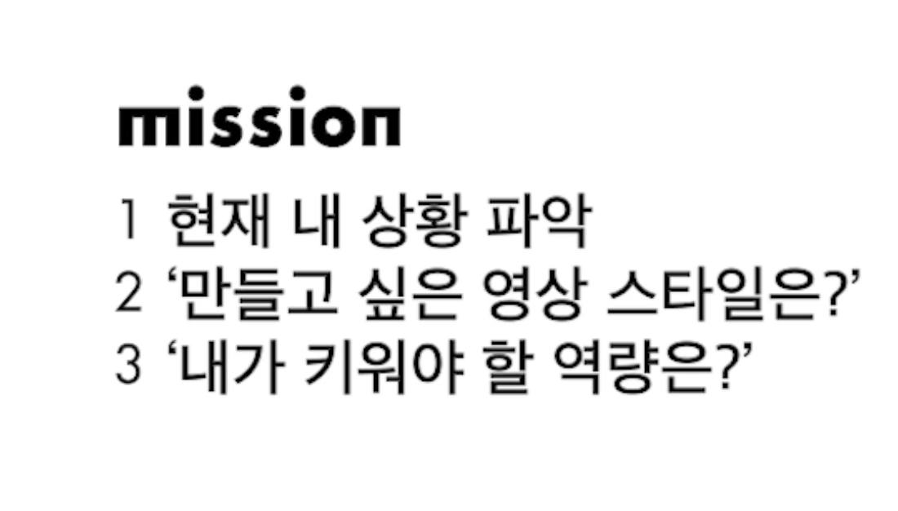</a><figcaption>슬라이드(제목 &#x27;mission&#x27;): 1 현재 내 상황 …</figcaption></figure></div><div class="caption-blk"><span class="badge b-solpa">슬라이드</span> 슬라이드(제목 &#x27;mission&#x27;): 1 현재 내 상황 파악 / 2 &#x27;만들고 싶은 영상 스타일은?&#x27; / 3 &#x27;내가 키워야 할 역량은?&#x27;</div><p class="sm-meta">메모 힌트: 운동을 매일 한시간씩</p><p>솔파 강의 내 생각 6/25</p>
<p>1.​ 운동을 매일 한시간씩 매일 하는중, 금융(부동산 전공,주식,코인)에 관심이 있다 <br>2.​ 편집 이 크게 들어가지 않은 스토리텔링 형식의 영상  <br>3.​ 스토리텔링 글쓰기 역량 키우기. 대중이 관심있는 주제,최근 밈 과 나의 결합 <br>—————————— <br>영화관.. 수고가 가장 큼 편안한 의자 일정한 시청환경  <br>플랫폼에 따라 영상을 보는 자세가 달라짐 <br>1.​ 유튜브는 대부분 긴영상 손을 안쓰거나 못쓸때 봄( 이동하거나 운전할때 , 밥먹을때) <br>언제든 뒤로가기 가능  정지 가능 바로 다른영상으로 넘어감 =그래서 어그로를 <br>끌어야하는데 <br>그걸 썸네일 제목 어그로를 끌어야하는데 너무 부담가지지 말고 그냥 블로그 제목 잘 <br>짓는사람이 <br>태그를 걸지 않음 알고리즘 신경 쓰지 않음 태그를 걸어서 알고리즘을 타도 <br>그래서 어쩌라고 다음은 어쩔건데 좋은 영상이 아니라면 유지 되지 않음 <br>(기술적인거 말고 본질을 찾아) = 알고리즘에 집착하지마  <br>유튜브로 돈을 어떻게 버는 걸까 ? <br>-일단 조회수  1딩 1원이다 라고 생각하는게 편함 <br>-광고 3천-5천 사이에 받는다  <br>광고를 이가격에 하는게 맞는가 ? 하고싶으면 하고 아니면 하지마 <br>(몸에 맞는 가격에 하라 근데 그걸 어떻게 맥시멈을 측정하냐  <br>10만따리가 천만원받으면 잘받는거 <br>50만따리가 2천만원받으면 잘받는거 <br>100만 따리가 3천 이상이면 잘받는거다 이것도 근데 2019년 영상이라 가격대가 좀 <br>변경됐을수도) <br>출연비  <br>조회수</p><h4 class="mini">p.2</h4><div class="shotrow"><figure class="shot"><a href="playbook_assets/solpa/p02_1.jpg" target="_blank" rel="noopener">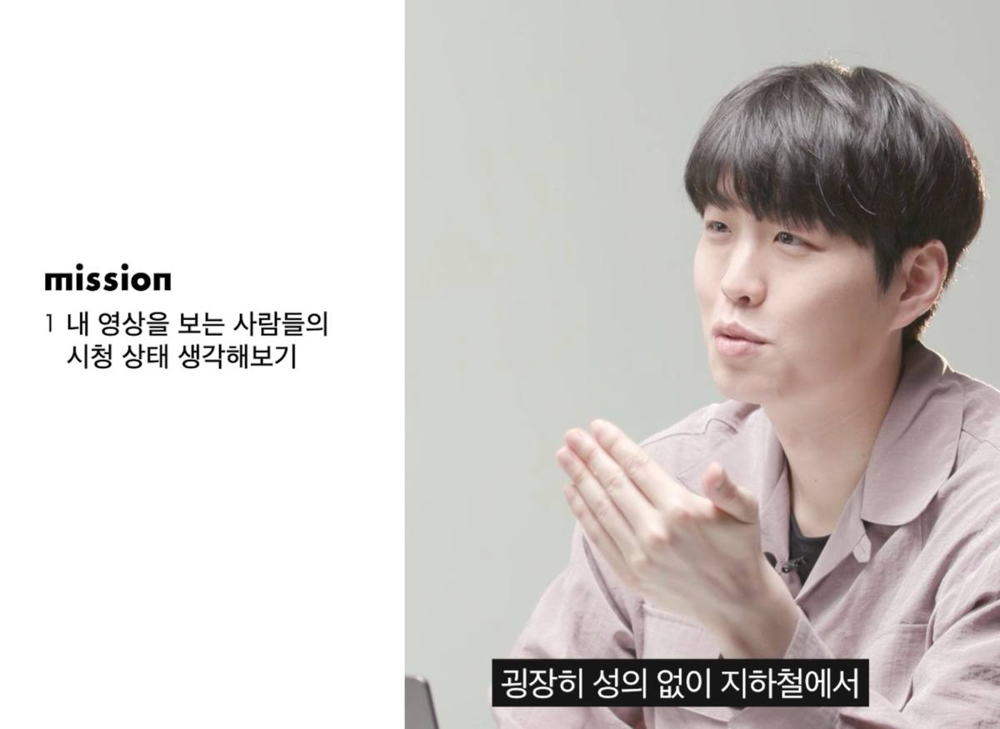</a><figcaption>강사 얼굴 클로즈업(밝은 회색 배경, 손 모으고 말하는…</figcaption></figure></div><div class="caption-blk"><span class="badge b-solpa">슬라이드</span> 강사 얼굴 클로즈업(밝은 회색 배경, 손 모으고 말하는 장면). 슬라이드(&#x27;mission&#x27;): 1 내 영상을 보는 사람들의 시청 상태 생각해보기. 하단 자막: &#x27;굉장히 성의 없이 지하철에서&#x27;</div><p class="sm-meta">메모 힌트: 광고 강연,출연 사업</p><p>광고 <br>강연,출연 <br>사업 <br>이 4개 중에 어디까지 가려는 것인가를  <br>채널 컨셉을 짜고 들어가는게 중요한가요 ?  어느정도는 짜는게 중요하다  <br>뉴스 처럼 컨텐츠 범위가 넓으면 구독률이 떨어진다 <br>= 어느정도 타겟을 하고들어가야한다  <br>내 타겟이 누구냐 <br>내 채널은 <br>룰루랄라같은 채널아래 워크맨 와썹맨 같은 채널이 되어야 한다  <br>mbc아래 무한도전이 되어야 한다 <br>인스타,틱톡은 틈날때 습관처럼 들어가니까 도파민 채울라고 그냥 의미없이 트는 용 <br>타겟에 따라도 다름 인스타는 대부분 20-30 많이하고 <br>틱톡은 10대 <br>유튜브는 40 이상 이 많음 <br>영상의 문법 에 따라 다르다고 하는데</p>
<p>2화 과제  <br>자막을 꼭 넣어야 회사에서든 어디에서든 조용한 환경에서 몰래 볼수있다는 사실을 알았음 <br>자막은 왠만하면 있어야함 근데 유나으리 같은 채널은 구독자 층이 굳이 몰래 보지 않아도 <br>되는 사람들이기때문에 그냥 자막없이 해도 다 소리 틀고봄</p><h4 class="mini">p.3</h4><div class="shotrow"><figure class="shot"><a href="playbook_assets/solpa/p03_1.jpg" target="_blank" rel="noopener">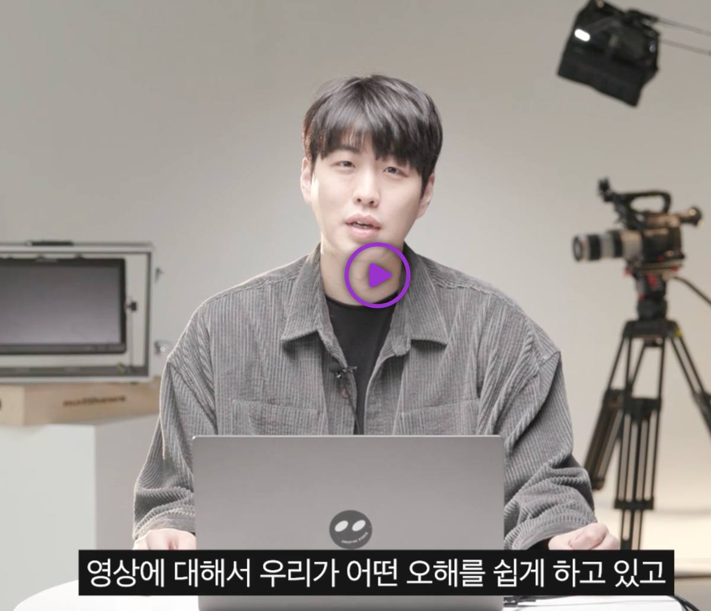</a><figcaption>스튜디오에서 노트북 앞에 앉아 말하는 강사(뒤에 카메라…</figcaption></figure></div><div class="caption-blk"><span class="badge b-solpa">슬라이드</span> 스튜디오에서 노트북 앞에 앉아 말하는 강사(뒤에 카메라·모니터 세트). 하단 자막: &#x27;영상에 대해서 우리가 어떤 오해를 쉽게 하고 있고&#x27;</div><p class="sm-meta">메모 힌트: 그래서 내 영상을 보는</p><p>그래서 내 영상을 보는 사람들은 어떤 상태일까 ?</p>
<p>기획 수준을 맞추는 데  <br>영상에 대한 오해= <br>1.​ 영산은 출연자 소재 빨이다 ?  ㄴㄴ 제작자의 문제임  <br>2.​ 영상은 메시지가 있어야한다 ?ㄴ  그냥 느낌임 박찬욱 님이그렇게 말함 감각요소의 <br>복합체다 <br>3.​ 외모가 좋거나 직업이 색다르면 잘된다 ? ㄴㄴ <br>4.​ 자극적 ? 호기심 ? ㄴㄴ 균형잡힌 시각을 가져야함 초조해하지마 <br>5.​ 편집기술이 필요하냐 (영상미 ?)  <br>먼저 뭘 만드려고 하는지 명확하게 하는게 중요하다</p><h4 class="mini">p.4</h4><div class="shotrow"><figure class="shot"><a href="playbook_assets/solpa/p04_1.jpg" target="_blank" rel="noopener">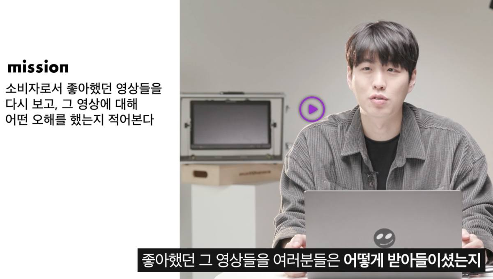</a><figcaption>강사 미디엄샷. 슬라이드(&#x27;mission&#x27;): 소비자로…</figcaption></figure></div><div class="caption-blk"><span class="badge b-solpa">슬라이드</span> 강사 미디엄샷. 슬라이드(&#x27;mission&#x27;): 소비자로서 좋아했던 영상들을 다시 보고, 그 영상에 대해 어떤 오해를 했는지 적어본다. 하단 자막: &#x27;좋아했던 그 영상들을 여러분들은 어떻게 받아들이셨는지&#x27;</div><p class="sm-meta">메모 힌트: 이영상이 잘된이유</p><p>이영상이 잘된이유 영상의 힘 ?</p>
<p>3-1화 과제  <br>그러면 어떻게 영상을 구성해야하냐 <br>영상 = 내용 + 형식 <br>내용 : 뭘찍을까 ? 뭐에대한 영상이지 ? <br>형식 : 여떻게 연출 촬영 편집할까 <br>영상의 내용과 형식이 어떻게 구성되었는지 본다  <br>사운드를 주의깊게 봐야한다 <br>영상 = 시각 + 청각 <br>영상의 양 ? 몇분으로 압축하냐 <br>7분? 3분만에 끝낸 영상도 있음 <br>최대한 압축해보자  <br>영상은 시간을 빼앗아요  <br>인물의 표정 눈빛 대사 타이밍 주의깊게 봐야해 <br>내가 만들고싶은 영상을 두번보면서 다 찾아봐 <br>사람들의 반응을 본다 = 시청자의 반응을 미리 예상</p></div></details><details class="acc"><summary><span class="stitle">A·B·C 기획 프레임</span><span class="sm-meta">p.5–9 · 영상=사람(A)×행동(B), 감상(C)부터 설계, 충돌·맥락</span><span class="acc-i" aria-hidden="true">+</span></summary><div class="acc-body"><h4 class="mini">p.5</h4><div class="shotrow"><figure class="shot"><a href="playbook_assets/solpa/p05_1.jpg" target="_blank" rel="noopener">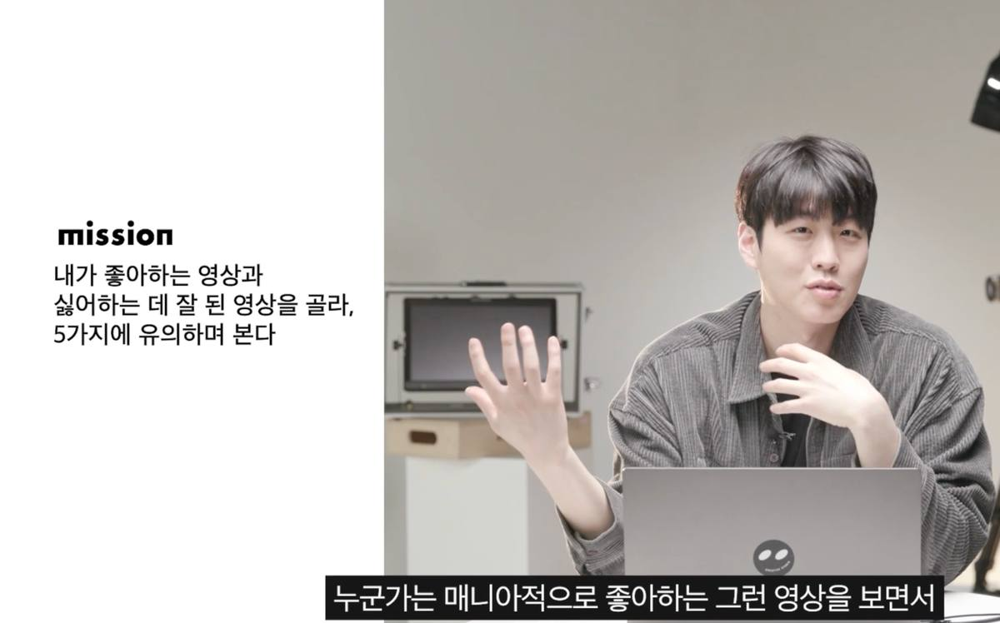</a><figcaption>강사 손을 들며 말하는 장면. 슬라이드(&#x27;mission…</figcaption></figure><figure class="shot"><a href="playbook_assets/solpa/p05_2.jpg" target="_blank" rel="noopener">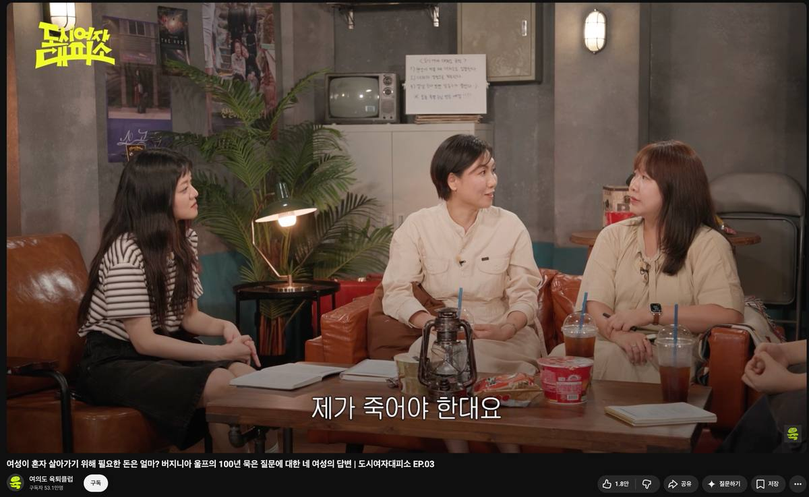</a><figcaption>유튜브 재생 화면 캡처(&#x27;도시여자쇼&#x27; EP.03): 소…</figcaption></figure></div><div class="caption-blk"><span class="badge b-solpa">슬라이드</span> 강사 손을 들며 말하는 장면. 슬라이드(&#x27;mission&#x27;): 내가 좋아하는 영상과 싫어하는 데 잘 된 영상을 골라, 5가지에 유의하며 본다. 하단 자막: &#x27;누군가는 매니아적으로 좋아하는 그런 영상을 보면서&#x27;</div><div class="caption-blk"><span class="badge b-solpa">슬라이드</span> 유튜브 재생 화면 캡처(&#x27;도시여자쇼&#x27; EP.03): 소파에 앉은 세 여성 대화 장면, 자막 &#x27;제가 죽어야 한대요&#x27;. 영상 제목: &#x27;여성이 혼자 살아가기 위해 필요한 돈은 얼마? 버지니아 울프의 100년 묵은 질문에 대한 네 여성의 답변 | 도시여자대피소 EP.03&#x27;, 채널 &#x27;여의도 독서클럽&#x27;</div><p class="sm-meta">메모 힌트: 댓글 보면 예측되는</p><p>댓글 보면 예측되는 이게 바이럴 마케팅 잘하는 방법</p>
<p>3-2 미션</p>
<p>내가 좋아하는 영상  <br>조용한데 은은하게 돌아있는 한 사람이 멘트를 날리면 그 사람의 멘트를 기대하게 됨 <br><a href="https://www.youtube.com/watch?v=oLbMh6iaoq8&amp;t=164s" target="_blank" rel="noopener">https://www.youtube.com/watch?v=oLbMh6iaoq8&amp;t=164s</a> <br>내가 싫어하는 영상 <br>오바떨고 억텐 근데 잘된영상은 ?</p><h4 class="mini">p.6</h4><div class="shotrow"><figure class="shot"><a href="playbook_assets/solpa/p06_1.jpg" target="_blank" rel="noopener">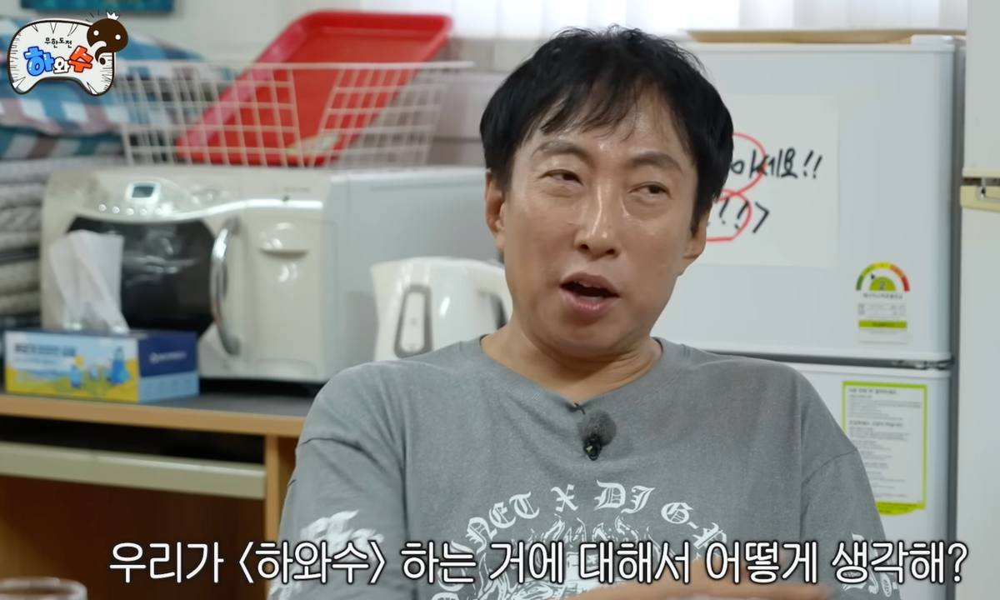</a><figcaption>유튜브 재생 화면 캡처(예능 &#x27;하와수&#x27; 스타일, 세탁실…</figcaption></figure><figure class="shot"><a href="playbook_assets/solpa/p06_2.jpg" target="_blank" rel="noopener">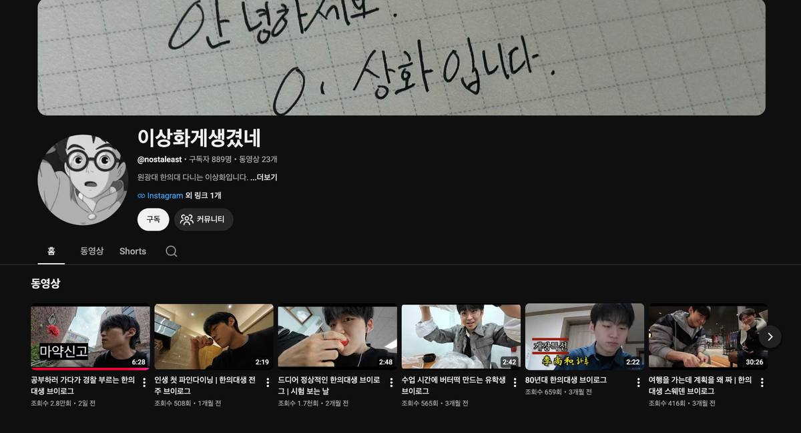</a><figcaption>유튜브 채널 홈 캡처: 채널명 &#x27;이상화게생겼네&#x27;(@no…</figcaption></figure></div><div class="caption-blk"><span class="badge b-solpa">슬라이드</span> 유튜브 재생 화면 캡처(예능 &#x27;하와수&#x27; 스타일, 세탁실 배경 중년 남성 인터뷰). 자막: &#x27;우리가 &lt;하와수&gt; 하는 거에 대해서 어떻게 생각해?&#x27;</div><div class="caption-blk"><span class="badge b-solpa">슬라이드</span> 유튜브 채널 홈 캡처: 채널명 &#x27;이상화게생겼네&#x27;(@nostaleast, 구독자 889명, 동영상 23개), 소개 &#x27;원광대 한의대 다니는 이상화입니다&#x27;. 동영상 썸네일들: &#x27;마약신고&#x27;, &#x27;공부하러 가다가 경찰 부르는 한의대생 브이로그&#x27;(28만·2일 전), &#x27;인생 첫 파인다이닝|한의대생 주 브이로그&#x27;(508회), &#x27;드디어 정상적인 한의대생 브이로그|시험 보는 날&#x27;(1.7만회), &#x27;수업 시간에 배터리 만드는 유학생 브이로그&#x27;(565회), &#x27;80년대 한의대생 브이로그&#x27;(659회), &#x27;여행을 가는데 계획을 왜 짜|한의대생 스퀘어 브이로그&#x27;(416회·3개월 전)</div><p class="sm-meta">메모 힌트: https://www.youtube.com</p><p><a href="https://www.youtube.com/watch?v=4zrVS8FMSPg" target="_blank" rel="noopener">https://www.youtube.com/watch?v=4zrVS8FMSPg</a></p>
<p>영상을 기획하는 법</p>
<p>4-1 촬영과 편집 기본만 알면됨 <br>기획력을 바탕으로 전문가를 섭외해라 <br>기획안 <br>영상은 a와 b 로 이루어짐 <br>a= 사람 <br>B= a가하는 행동 <br>b만 집중하면 모두가 디진다돈가스가 되는 현상 <br>자극적으로만 되는 기이함 <br>A,B가 전부는 아님</p><h4 class="mini">p.7</h4><div class="shotrow"><figure class="shot"><a href="playbook_assets/solpa/p07_1.jpg" target="_blank" rel="noopener">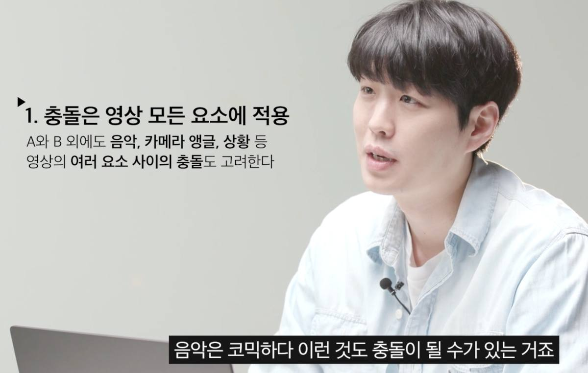</a><figcaption>강사 측면 샷(연청 셔츠). 슬라이드: &#x27;1. 충돌은 …</figcaption></figure></div><div class="caption-blk"><span class="badge b-solpa">슬라이드</span> 강사 측면 샷(연청 셔츠). 슬라이드: &#x27;1. 충돌은 영상 모든 요소에 적용 — A와 B 외에도 음악, 카메라 앵글, 상황 등 영상의 여러 요소 사이의 충돌도 고려한다&#x27;. 하단 자막: &#x27;음악은 코믹하다 이런 것도 충돌이 될 수가 있는 거죠&#x27;</div><p class="sm-meta">메모 힌트: 억만장자 빌게이츠가</p><p>억만장자 빌게이츠가 식료품 가격을 맞춘다 <br>                        a가 b를 한다 <br>a와 b가 이질적이이기 때문에 나도 자연스럽게 알고있음 <br>굳이굳이 이렇게 컨셉을 해서  <br>소개팅에서 굳이굳이 소개팅  <br>강화 a+b a가 원래 잘하는게 있는데 원래 잘했던 b를 하는거  <br>A <br>a에 맥락을 만든다는거지 “~20년간 윈도우만 쓴 사람”,”백만장자” 빌게이츠 <br>a가 두명일때 관계가 부딪칠때  <br>맥락 = 상황,사람과 관계 ,(1년전의 나, 아빠 ,은행털이범+아이) <br>B 어떻게 하냐( 어떻게 하는지 생각해본다) <br>아이컨텍을 4분 동안한다</p>
<p>충돌,,</p><h4 class="mini">p.8</h4><div class="shotrow"><figure class="shot"><a href="playbook_assets/solpa/p08_1.jpg" target="_blank" rel="noopener">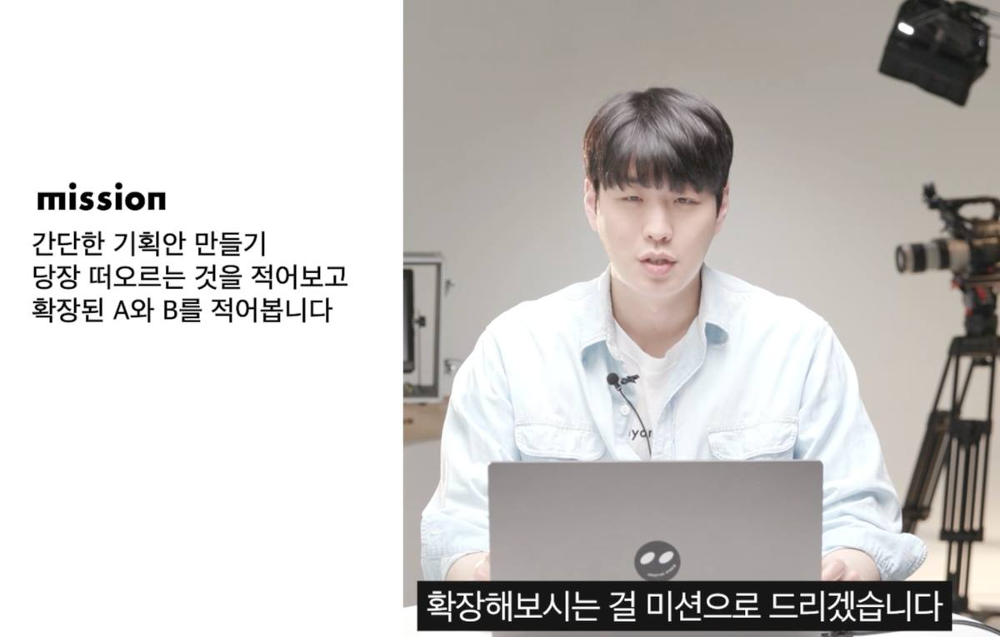</a><figcaption>강사 미디엄샷(스튜디오 세트). 슬라이드(&#x27;missio…</figcaption></figure></div><div class="caption-blk"><span class="badge b-solpa">슬라이드</span> 강사 미디엄샷(스튜디오 세트). 슬라이드(&#x27;mission&#x27;): 간단한 기획안 만들기 / 당장 떠오르는 것을 적어보고 / 확장된 A와 B를 적어봅니다. 하단 자막: &#x27;확장해보시는 걸 미션으로 드리겠습니다&#x27;</div><p class="sm-meta">메모 힌트: 충돌도 금방 질린다</p><p>충돌도 금방 질린다 = 갸루도 3개월이면 끝이다</p>
<p>4-1 미션 <br>4-2 <br>C부터 잡는다고 함 <br>AB는 무한으로 나와요 <br>c= 는 영상을 보고 느껴지는 감상 = 그래서 어쩌라고 ?(메세지는 아님 그냥 느낌) <br>기괴한 썸네일 ,, 뭐 이런게 다  <br>아이들이 말하는 사랑.. 아이들이 사랑을 알까 ? = 충돌임  <br>C= 그래서 어쩌라고  <br>같은 a,b에도 c 는 다를 수 있다  <br>의상재질,, 산타할아버지 같은 느낌 아이도 헐렁한 티셔츠 정신없음 이런게 합쳐져서  <br>음악도 몽환적인 배경   <br>c= 연출임   (그니까 이건 가짜로 하면 안된다는 거임 티가 나면 안돼 연출인데 연출같은 <br>늒미을 내면안됨) <br>띠예 a 어린아이가 ? B 바다포도를 먹는다</p><h4 class="mini">p.9</h4><div class="shotrow"><figure class="shot"><a href="playbook_assets/solpa/p09_1.jpg" target="_blank" rel="noopener">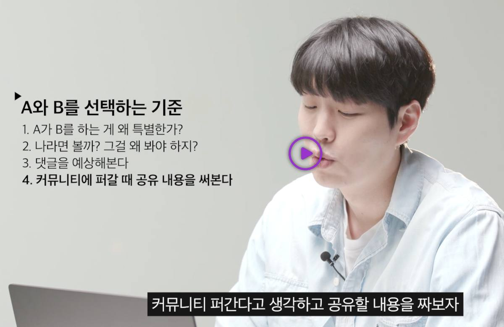</a><figcaption>강사 측면 샷. 슬라이드(&#x27;A와 B를 선택하는 기준&#x27;)…</figcaption></figure></div><div class="caption-blk"><span class="badge b-solpa">슬라이드</span> 강사 측면 샷. 슬라이드(&#x27;A와 B를 선택하는 기준&#x27;): 1. A가 B를 하는 게 왜 특별한가? / 2. 나라면 볼까? 그걸 왜 봐야 하지? / 3. 댓글을 예상해본다 / 4. 커뮤니티에 퍼갈 때 공유 내용을 써본다. 하단 자막: &#x27;커뮤니티 퍼간다고 생각하고 공유할 내용을 짜보자&#x27;</div><p class="sm-meta">메모 힌트: c= 이어폰 테이프</p><p>c= 이어폰 테이프</p>
<p>a가 b를 하는게 왜 특별한가 ? <br>나라면 볼까 ? 왜 봐야하지    <br>댓글을 예상  사람들은 하나같이 느끼는게 다름</p></div></details><details class="acc"><summary><span class="stitle">오리지널리티 · 레퍼런스</span><span class="sm-meta">p.10–13 · 약점까지 포함한 오리지널리티, 해외 레퍼런스, 진짜라고 느끼게</span><span class="acc-i" aria-hidden="true">+</span></summary><div class="acc-body"><h4 class="mini">p.10</h4><div class="shotrow"><figure class="shot"><a href="playbook_assets/solpa/p10_1.jpg" target="_blank" rel="noopener">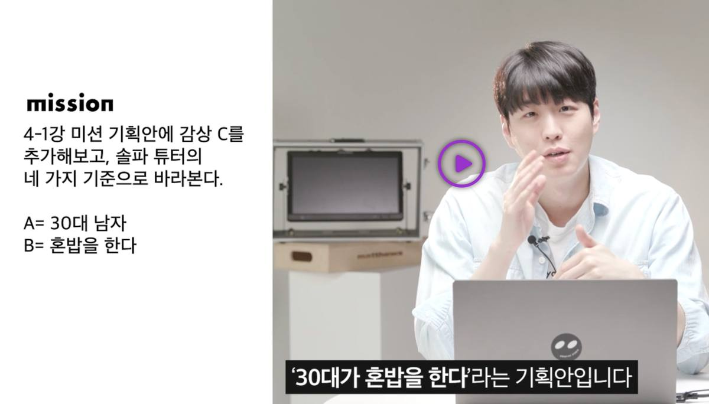</a><figcaption>강사 미디엄샷. 슬라이드(&#x27;mission&#x27;): 4-1강…</figcaption></figure><figure class="shot"><a href="playbook_assets/solpa/p10_2.jpg" target="_blank" rel="noopener">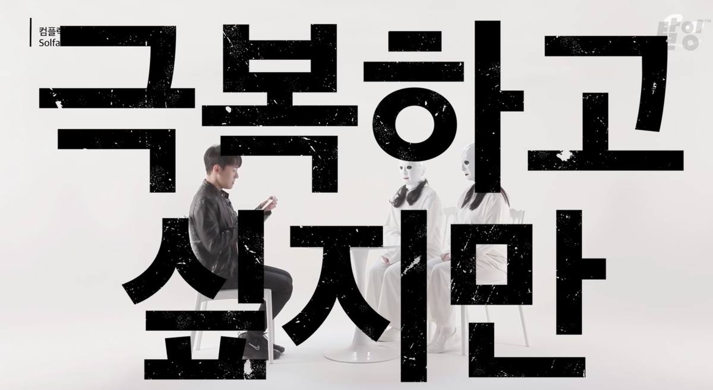</a><figcaption>영상 캡처(탈잉 컨플로 샘플): 큰 자막 &#x27;극복하고 싶…</figcaption></figure></div><div class="caption-blk"><span class="badge b-solpa">슬라이드</span> 강사 미디엄샷. 슬라이드(&#x27;mission&#x27;): 4-1강 미션 기획안에 감상 C를 추가해보고, 솔파 튜터의 네 가지 기준으로 바라본다. / A= 30대 남자 / B= 혼밥을 한다. 하단 자막: &#x27;&#x27;30대가 혼밥을 한다&#x27;라는 기획안입니다&#x27;</div><div class="caption-blk"><span class="badge b-solpa">슬라이드</span> 영상 캡처(탈잉 컨플로 샘플): 큰 자막 &#x27;극복하고 싶지만&#x27;이 화면 가득 차고, 뒤로 남성 한 명과 흰 마스크(가면) 쓴 인물 둘이 의자에 앉아 있는 연출 장면. 좌상단 &#x27;컴플로 Solfa&#x27; 로고</div><p class="sm-meta">메모 힌트: 커뮤니티 퍼갈때</p><p>커뮤니티 퍼갈때 공유내용을 써본다</p>
<p>자막이 이렇게 크게 들어갈수도있고  <br>조명도 ,, 연출이 될수도있고  출연자의 시선  <br>결국 컨텐츠도 희귀하고 새로운걸 사람들이 원함 신선하다  <br>= 사람들이 접해보지 않았는데 신기함 <br>컨텐츠각 영상에서 힘주고자하는 포인트가 어딘지 ? <br>유튜브각이 어딘지 그걸 중심으로  <br>컨텐츠 각은 어떻게든 만들수있는거임 <br>동물이 현타옴 아이가 해탈함 = 이게 진짜 그렇게 느꼇을까 ?</p><h4 class="mini">p.11</h4><div class="shotrow"><figure class="shot"><a href="playbook_assets/solpa/p11_1.jpg" target="_blank" rel="noopener">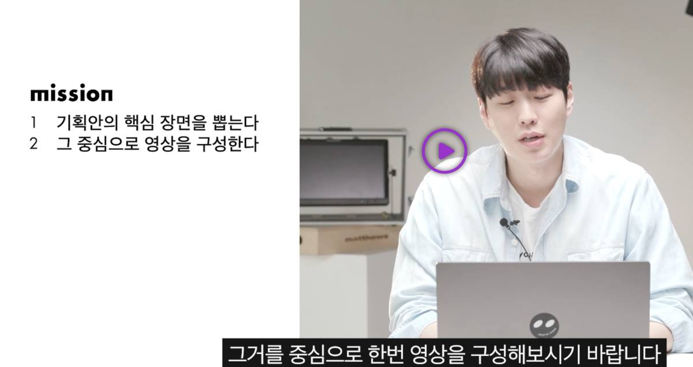</a><figcaption>강사 미디엄샷. 슬라이드(&#x27;mission&#x27;): 1 기획…</figcaption></figure><figure class="shot"><a href="playbook_assets/solpa/p11_2.jpg" target="_blank" rel="noopener">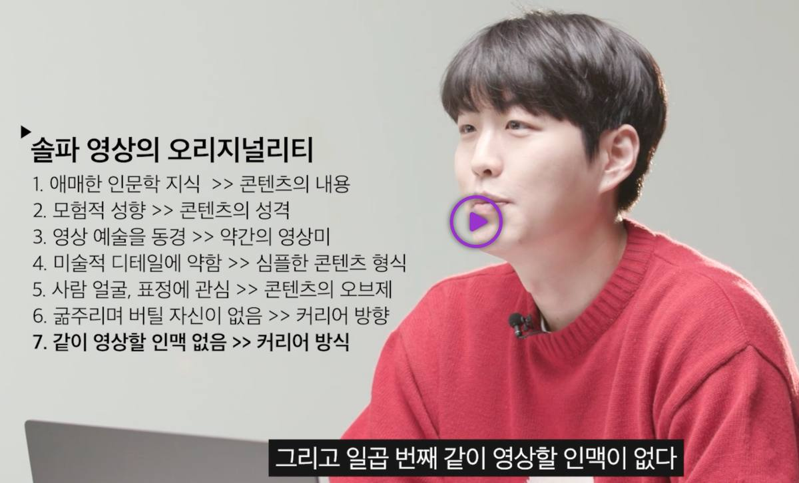</a><figcaption>강사(빨간 스웨터) 측면. 슬라이드(&#x27;솔파 영상의 오리…</figcaption></figure></div><div class="caption-blk"><span class="badge b-solpa">슬라이드</span> 강사 미디엄샷. 슬라이드(&#x27;mission&#x27;): 1 기획안의 핵심 장면을 뽑는다 / 2 그 중심으로 영상을 구성한다. 하단 자막: &#x27;그거를 중심으로 한번 영상을 구성해보시기 바랍니다&#x27;</div><div class="caption-blk"><span class="badge b-solpa">슬라이드</span> 강사(빨간 스웨터) 측면. 슬라이드(&#x27;솔파 영상의 오리지널리티&#x27;): 1. 애매한 인문학 지식 &gt;&gt; 콘텐츠의 내용 / 2. 모험적 성향 &gt;&gt; 콘텐츠의 성격 / 3. 영상 예술을 동경 &gt;&gt; 약간의 영상미 / 4. 미술적 디테일에 약함 &gt;&gt; 심플한 콘텐츠 형식 / 5. 사람 얼굴, 표정에 관심 &gt;&gt; 콘텐츠의 오브제 / 6. 굶주리며 버틸 자신이 없음 &gt;&gt; 커리어 방향 / 7. 같이 영상할 인맥 없음 &gt;&gt; 커리어 방식. 하단 자막: &#x27;그리고 일곱 번째 같이 영상할 인맥이 없다&#x27;</div><p class="sm-meta">메모 힌트: 진짜든 가짜든 중요하지</p><p>진짜든 가짜든 중요하지 않음 사람들이 그걸 진짜라고 느끼게끔 말을 쓰면됨</p>
<p>5-1 <br>나만이 만들 수 있는 콘텐츠 찾는 법 오리지널리티</p><h4 class="mini">p.12</h4><div class="shotrow"><figure class="shot"><a href="playbook_assets/solpa/p12_1.jpg" target="_blank" rel="noopener">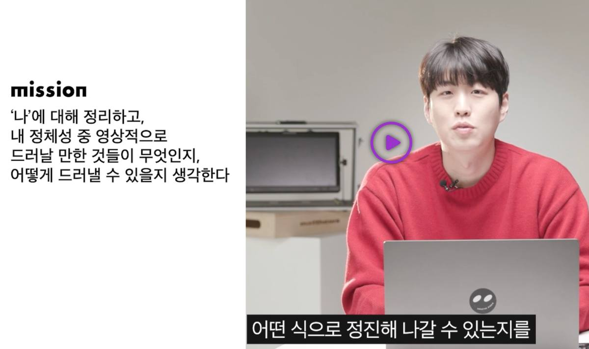</a><figcaption>강사(빨간 스웨터) 미디엄샷. 슬라이드(&#x27;mission…</figcaption></figure><figure class="shot"><a href="playbook_assets/solpa/p12_2.jpg" target="_blank" rel="noopener">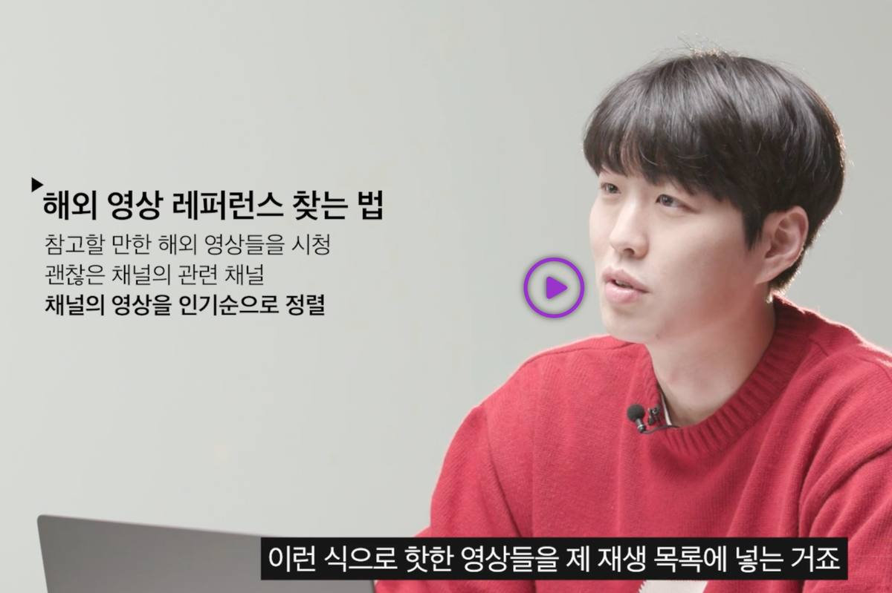</a><figcaption>강사 측면. 슬라이드(&#x27;해외 영상 레퍼런스 찾는 법&#x27;)…</figcaption></figure></div><div class="caption-blk"><span class="badge b-solpa">슬라이드</span> 강사(빨간 스웨터) 미디엄샷. 슬라이드(&#x27;mission&#x27;): &#x27;나&#x27;에 대해 정리하고, 내 정체성 중 영상적으로 드러낼 만한 것들이 무엇인지, 어떻게 드러낼 수 있을지 생각한다. 하단 자막: &#x27;어떤 식으로 정진해 나갈 수 있는지를&#x27;</div><div class="caption-blk"><span class="badge b-solpa">슬라이드</span> 강사 측면. 슬라이드(&#x27;해외 영상 레퍼런스 찾는 법&#x27;): 참고할 만한 해외 영상들을 시청 / 괜찮은 채널의 관련 채널 / 채널의 영상을 인기순으로 정렬. 하단 자막: &#x27;이런 식으로 핫한 영상들을 제 재생 목록에 넣는 거죠&#x27;</div><p class="sm-meta">메모 힌트: 조명의 원리</p><p>조명의 원리</p><h4 class="mini">p.13</h4><div class="shotrow"><figure class="shot"><a href="playbook_assets/solpa/p13_1.jpg" target="_blank" rel="noopener">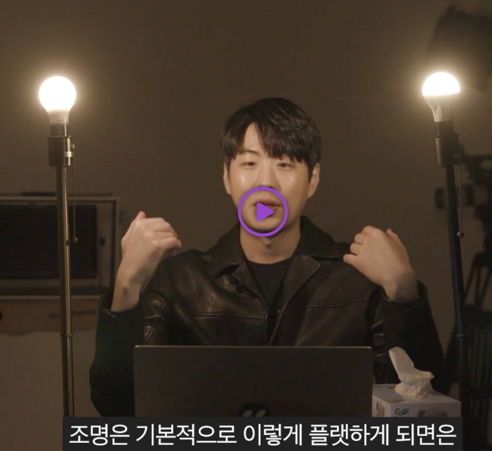</a><figcaption>조명 원리 시연 영상: 강사가 양옆 백열 전구(스탠드)…</figcaption></figure><figure class="shot"><a href="playbook_assets/solpa/p13_2.jpg" target="_blank" rel="noopener">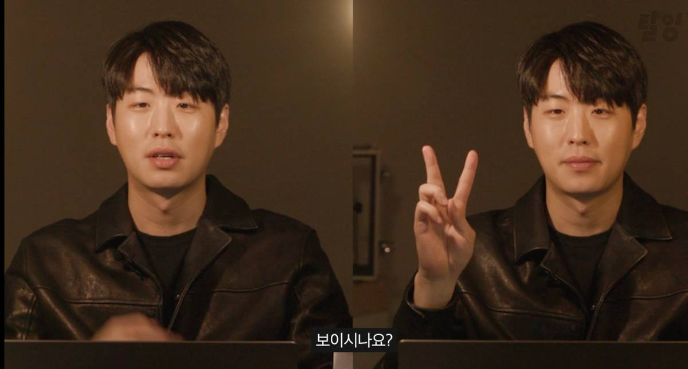</a><figcaption>같은 조명 시연 비교 컷 2분할: 왼쪽은 정면광(플랫)…</figcaption></figure></div><div class="caption-blk"><span class="badge b-solpa">슬라이드</span> 조명 원리 시연 영상: 강사가 양옆 백열 전구(스탠드) 사이에서 정면을 보고 말하는 장면. 하단 자막: &#x27;조명은 기본적으로 이렇게 플랫하게 되면은&#x27;</div><div class="caption-blk"><span class="badge b-solpa">슬라이드</span> 같은 조명 시연 비교 컷 2분할: 왼쪽은 정면광(플랫)으로 얼굴 밋밋함, 오른쪽은 측면광으로 입체감 있게 보이며 손으로 V(브이). 하단 자막: &#x27;보이시나요?&#x27;</div><p class="sm-meta">메모 힌트: 빛의 성질 =</p><p>빛의 성질 =  하드한 빛 부드러운빛 / 퍼지는 빛, 모아지는 빛</p>
<p>유튜브 라이브러리 =</p></div></details><details class="acc"><summary><span class="stitle">조명 · 음원 · 장비 · 편집</span><span class="sm-meta">p.14–18 · 촬영 장비, 하강 구간 제거, 핵심 장면·트랜지션, 싱크·프록시</span><span class="acc-i" aria-hidden="true">+</span></summary><div class="acc-body"><h4 class="mini">p.14</h4><div class="shotrow"><figure class="shot"><a href="playbook_assets/solpa/p14_1.jpg" target="_blank" rel="noopener">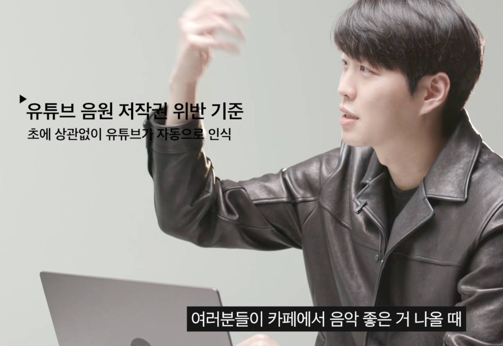</a><figcaption>강사(가죽자켓) 손 들며 말하는 장면. 슬라이드(&#x27;유튜…</figcaption></figure><figure class="shot"><a href="playbook_assets/solpa/p14_2.jpg" target="_blank" rel="noopener">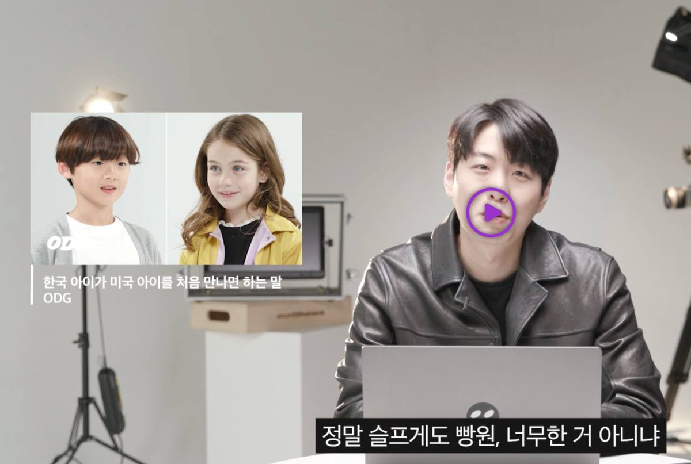</a><figcaption>강사 미디엄샷 + 좌측 상단 인서트(ODG 영상: 한국…</figcaption></figure></div><div class="caption-blk"><span class="badge b-solpa">슬라이드</span> 강사(가죽자켓) 손 들며 말하는 장면. 슬라이드(&#x27;유튜브 음원 저작권 위반 기준&#x27;): 초에 상관없이 유튜브가 자동으로 인식. 하단 자막: &#x27;여러분들이 카페에서 음악 좋은 거 나올 때&#x27;</div><div class="caption-blk"><span class="badge b-solpa">슬라이드</span> 강사 미디엄샷 + 좌측 상단 인서트(ODG 영상: 한국 남자아이와 미국 여자아이 나란히, 캡션 &#x27;한국 아이가 미국 아이를 처음 만나면 하는 말 ODG&#x27;). 하단 자막: &#x27;정말 슬프게도 빵원, 너무한 거 아니냐&#x27;</div><p class="sm-meta">메모 힌트: 너무 익숙해서 어디선가</p><p>너무 익숙해서 어디선가 들어봤다 <br>무료 음악 사이트 , 유료음원 사이트</p>
<p>유튜브가 인식할때 차이  <br>유튜브가 알아보냐마냐</p><h4 class="mini">p.15</h4><div class="shotrow"><figure class="shot"><a href="playbook_assets/solpa/p15_1.jpg" target="_blank" rel="noopener">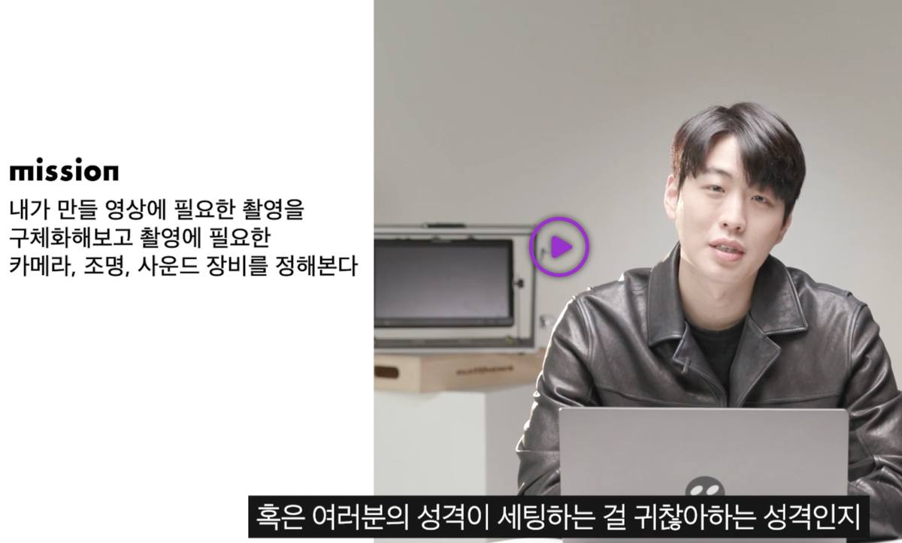</a><figcaption>강사(가죽자켓) 미디엄샷. 슬라이드(&#x27;mission&#x27;)…</figcaption></figure><figure class="shot"><a href="playbook_assets/solpa/p15_2.jpg" target="_blank" rel="noopener">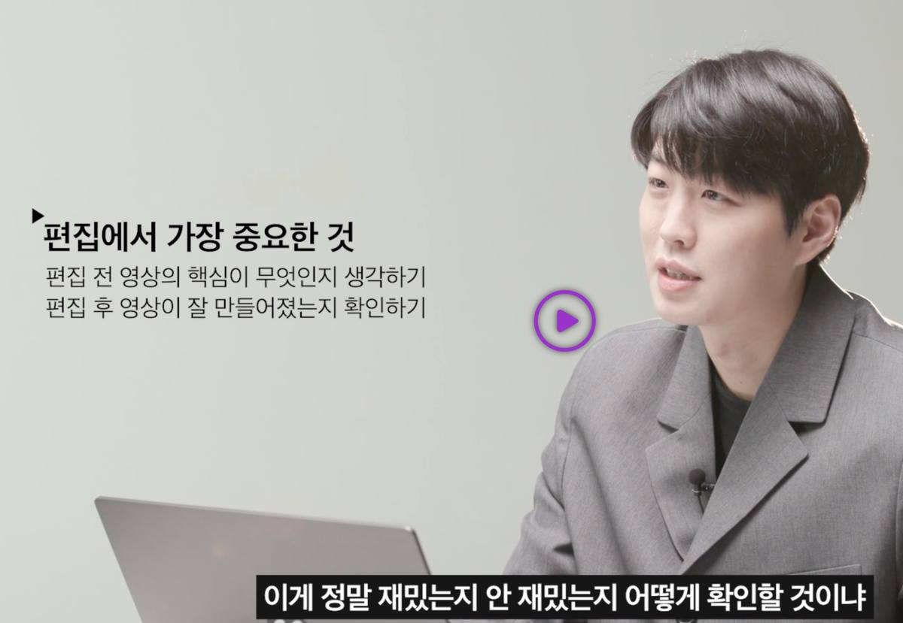</a><figcaption>강사(회색 자켓) 측면. 슬라이드(&#x27;편집에서 가장 중요…</figcaption></figure></div><div class="caption-blk"><span class="badge b-solpa">슬라이드</span> 강사(가죽자켓) 미디엄샷. 슬라이드(&#x27;mission&#x27;): 내가 만들 영상에 필요한 촬영을 구체화해보고 촬영에 필요한 카메라, 조명, 사운드 장비를 정해본다. 하단 자막: &#x27;혹은 여러분의 성격이 세팅하는 걸 귀찮아하는 성격인지&#x27;</div><div class="caption-blk"><span class="badge b-solpa">슬라이드</span> 강사(회색 자켓) 측면. 슬라이드(&#x27;편집에서 가장 중요한 것&#x27;): 편집 전 영상의 핵심이 무엇인지 생각하기 / 편집 후 영상이 잘 만들어졌는지 확인하기. 하단 자막: &#x27;이게 정말 재밌는지 안 재밌는지 어떻게 확인할 것이냐&#x27;</div><p class="sm-meta">메모 힌트: 편집전 무엇을 넣을것인지</p><p>편집전 무엇을 넣을것인지 어떻게 조합할 것인지 이걸 찍기전에 사실 정해져야함  <br>장면 단위로 생각해야하는 이유  <br>편집시간 단축 <br>유튜브식</p><h4 class="mini">p.16</h4><div class="shotrow"><figure class="shot"><a href="playbook_assets/solpa/p16_1.jpg" target="_blank" rel="noopener">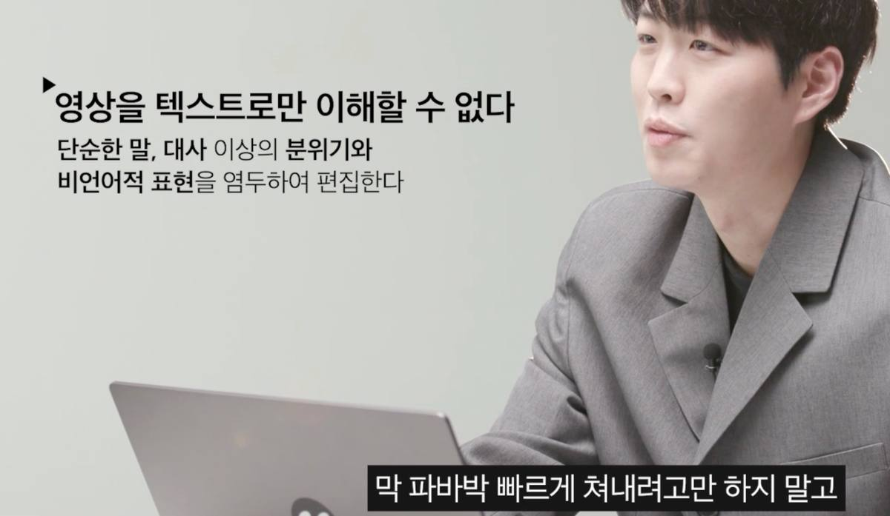</a><figcaption>강사(회색 자켓) 측면. 슬라이드(&#x27;영상을 텍스트로만 …</figcaption></figure><figure class="shot"><a href="playbook_assets/solpa/p16_2.jpg" target="_blank" rel="noopener">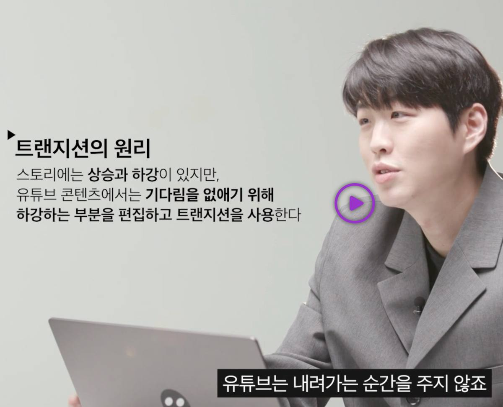</a><figcaption>강사(회색 자켓) 측면. 슬라이드(&#x27;트랜지션의 원리&#x27;)…</figcaption></figure></div><div class="caption-blk"><span class="badge b-solpa">슬라이드</span> 강사(회색 자켓) 측면. 슬라이드(&#x27;영상을 텍스트로만 이해할 수 없다&#x27;): 단순한 말, 대사 이상의 분위기와 비언어적 표현을 염두하여 편집한다. 하단 자막: &#x27;막 파바박 빠르게 쳐내려고만 하지 말고&#x27;</div><div class="caption-blk"><span class="badge b-solpa">슬라이드</span> 강사(회색 자켓) 측면. 슬라이드(&#x27;트랜지션의 원리&#x27;): 스토리에는 상승과 하강이 있지만, 유튜브 콘텐츠에서는 기다림을 없애기 위해 하강하는 부분을 편집하고 트랜지션을 사용한다. 하단 자막: &#x27;유튜브는 내려가는 순간을 주지 않죠&#x27;</div><p class="sm-meta">메모 힌트: 기획하면서 썸네일</p><p>기획하면서 썸네일,제목 까지 정해버려야함</p>
<p>영상은 변주가 필요하다  =화면을 조진다 ? 화면 앵글을 바꾼다 대화주제를 바꾼다  <br>영상 기획 이게 사실 제일 중요하지</p><h4 class="mini">p.17</h4><div class="shotrow"><figure class="shot"><a href="playbook_assets/solpa/p17_1.jpg" target="_blank" rel="noopener">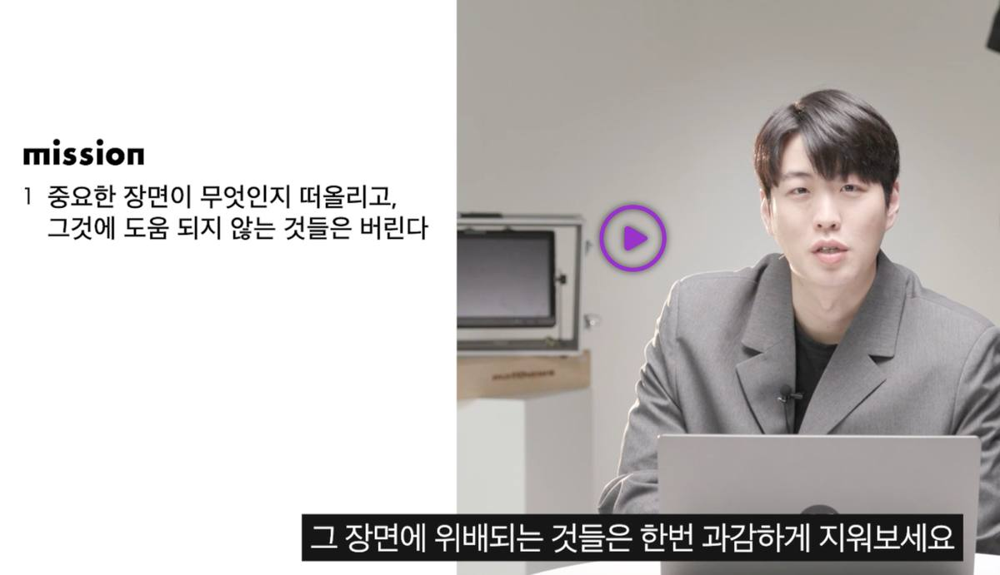</a><figcaption>강사(회색 자켓) 미디엄샷. 슬라이드(&#x27;mission&#x27;…</figcaption></figure></div><div class="caption-blk"><span class="badge b-solpa">슬라이드</span> 강사(회색 자켓) 미디엄샷. 슬라이드(&#x27;mission&#x27;): 1 중요한 장면이 무엇인지 떠올리고, 그것에 도움 되지 않는 것들은 버린다. 하단 자막: &#x27;그 장면에 위배되는 것들은 한번 과감하게 지워보세요&#x27;</div><p class="sm-meta">메모 힌트: 트랜지션(Transition)은</p><p>트랜지션(Transition)은 &#x27;장면 전환&#x27;을 뜻하는 영상 편집 및 디자인 용어입니다. 하나의 영상 <br>클립에서 다른 클립으로 넘어갈 때, 시청자가 느끼는 단절감을 줄이고 시각적인 재미나 <br>시간의 흐름, 감정선을 자연스럽게 연결하기 위해 사용하는 기법입니다. [1, 2, 3, 4] <br>주요 영상 트랜지션 종류 <br>●​ 컷(Cut): 가장 기본적이고 즉각적인 전환 방식으로, 두 화면을 단순히 이어붙입니다. <br>화면에 속도감을 줍니다. [1] <br>●​ 디졸브(Dissolve/Cross Dissolve): 앞 영상이 서서히 사라지고 뒤 영상이 서서히 <br>나타나며 겹치는 방식입니다. 부드러운 시간 경과나 감정 연결에 쓰입니다. [1, 2] <br>●​ 페이드 인/아웃(Fade In/Out): 화면이 검은색(또는 특정 색)에서 서서히 <br>밝아지거나(Fade In), 반대로 서서히 어두워지며 사라지는(Fade Out) 기법입니다. <br>장면의 시작과 끝을 명확히 알릴 때 사용합니다. [1] <br>●​ 와이프(Wipe): 선이나 모양이 화면을 가로지르며 다음 장면으로 밀어내는 듯한 전환 <br>효과입니다. <br>●​ 줌(Zoom): 카메라를 빠르게 이동하거나 모션을 주어 화면 속으로 빨려 들어가거나 <br>멀어지며 장면을 전환합니다 <br>재밌는거 같은데 ?? <br>●​ 시청자 모드로 봐야해 비판적인 시선을 본다 <br>●​ 초단위로 마크를 하면서 봄 스탑워치 랩스로 나를찍어 ?  <br>●​ 나였으면 이때 뒤로가기했다 를 체크 <br>●​</p>
<p>편집툴 <br>뭘쓰든 똑같다 ,,</p><h4 class="mini">p.18</h4><div class="shotrow"><figure class="shot"><a href="playbook_assets/solpa/p18_1.jpg" target="_blank" rel="noopener">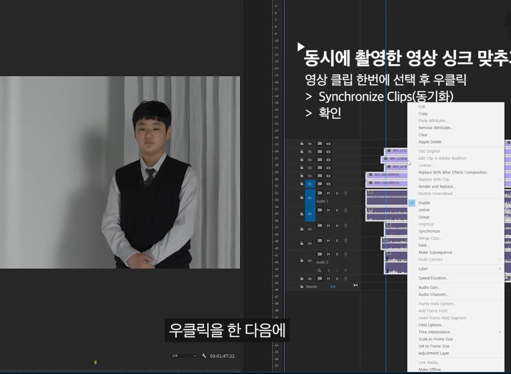</a><figcaption>프리미어 프로 편집 화면 캡처: 타임라인에 다수의 V트…</figcaption></figure></div><div class="caption-blk"><span class="badge b-solpa">슬라이드</span> 프리미어 프로 편집 화면 캡처: 타임라인에 다수의 V트랙(V1~V23 추정)이 쌓여 있고 클립 우클릭 컨텍스트 메뉴 열림. 화면 내 슬라이드 텍스트(&#x27;동시에 촬영한 영상 싱크 맞추기&#x27;): 영상 클립 한번에 선택 후 우클릭 &gt; Synchronize Clips(동기화) &gt; 확인. 프리뷰에는 조끼+넥타이 착용 소년, 하단 자막 &#x27;우클릭을 한 다음에&#x27;</div><p class="sm-meta">메모 힌트: v층이 23개나</p><p>v층이 23개나 될수도있네 그래서 좌우로 갈라놓고 세로로 세팅해놓네 <br>대충 맞춰놓고 오디오기준으로 <br>싱크로나이즈 하면 싱크 맞춰짐 (카메라 여러대 썼을때)  <br>영상을 대사랑 표정이랑 한번에 볼수있게 세팅해놓고  <br>유튜브는 같은 주제를 반복적으로 하잖아요 그걸 적어놔  <br>인물마다 색깔을 달라놔야해 그리고 내용 분류 해놨으면 합쳐야지</p></div></details><details class="acc"><summary><span class="stitle">기획안 · 촬영 스크립트 · 디렉팅</span><span class="sm-meta">p.19–23 · 1차 기획안과 촬영용 스크립트 분리, 출연자 설득과 디렉팅</span><span class="acc-i" aria-hidden="true">+</span></summary><div class="acc-body"><h4 class="mini">p.19</h4><div class="shotrow"><figure class="shot"><a href="playbook_assets/solpa/p19_1.jpg" target="_blank" rel="noopener">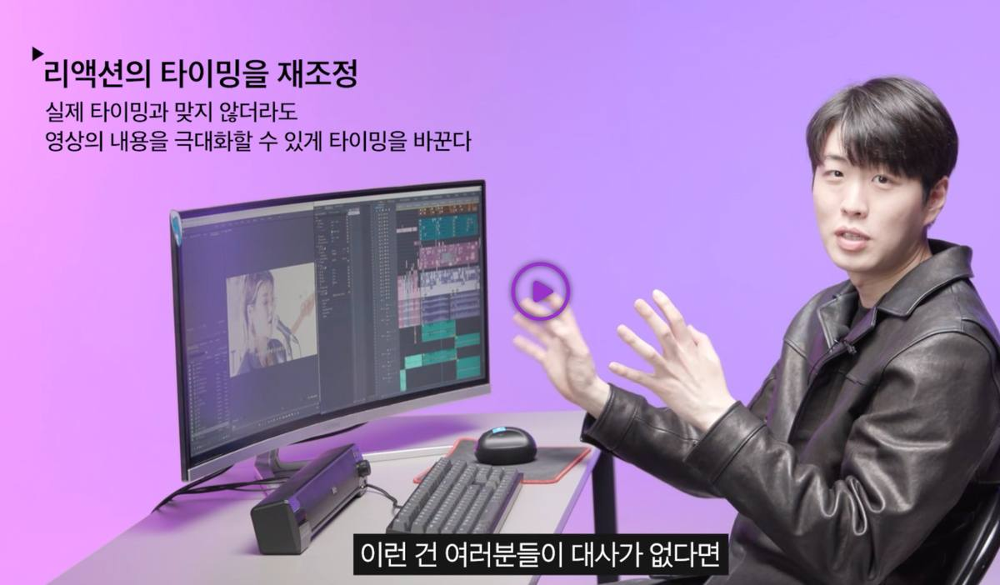</a><figcaption>강사(가죽자켓)가 곡면 모니터 편집화면 옆에서 손짓하며…</figcaption></figure><figure class="shot"><a href="playbook_assets/solpa/p19_2.jpg" target="_blank" rel="noopener">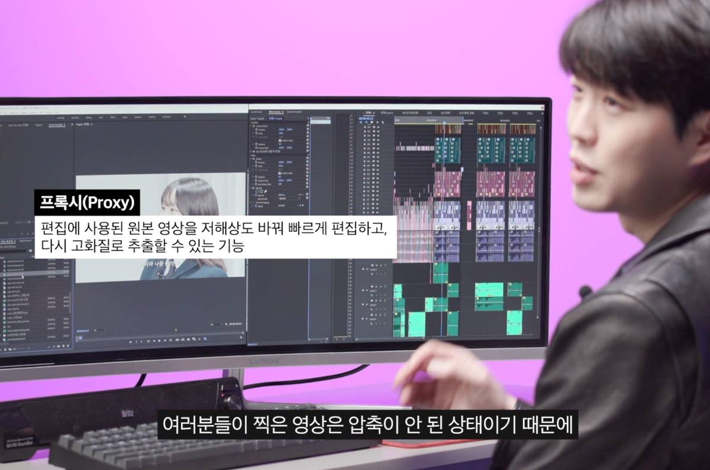</a><figcaption>강사 측면 + 곡면 모니터 편집화면. 슬라이드(&#x27;프록시…</figcaption></figure></div><div class="caption-blk"><span class="badge b-solpa">슬라이드</span> 강사(가죽자켓)가 곡면 모니터 편집화면 옆에서 손짓하며 설명. 슬라이드(&#x27;리액션의 타이밍을 재조정&#x27;): 실제 타이밍과 맞지 않더라도 영상의 내용을 극대화할 수 있게 타이밍을 바꾼다. 하단 자막: &#x27;이런 건 여러분들이 대사가 없다면&#x27;</div><div class="caption-blk"><span class="badge b-solpa">슬라이드</span> 강사 측면 + 곡면 모니터 편집화면. 슬라이드(&#x27;프록시(Proxy)&#x27;): 편집에 사용된 원본 영상을 저해상도로 바꿔 빠르게 편집하고, 다시 고화질로 추출할 수 있는 기능. 하단 자막: &#x27;여러분들이 찍은 영상은 압축이 안 된 상태이기 때문에&#x27;</div><p class="sm-meta">메모 힌트: 비슷한 주제끼리 묶어야지</p><p>비슷한 주제끼리 묶어야지 그리고 bgm깔아보자 그리고 내가</p>
<p>편집은 장난질이야 어떻게는 영상을 재밌게 보이려면 타이밍 장난 쳐도돼</p>
<p>여러대 카메라를 쓴다면 프록시를 만들어놔야해 <br>저해상도로 빠르게 펴닙하고 고화질로 추출할수잇는기능</p><h4 class="mini">p.20</h4><div class="shotrow"><figure class="shot"><a href="playbook_assets/solpa/p20_1.jpg" target="_blank" rel="noopener">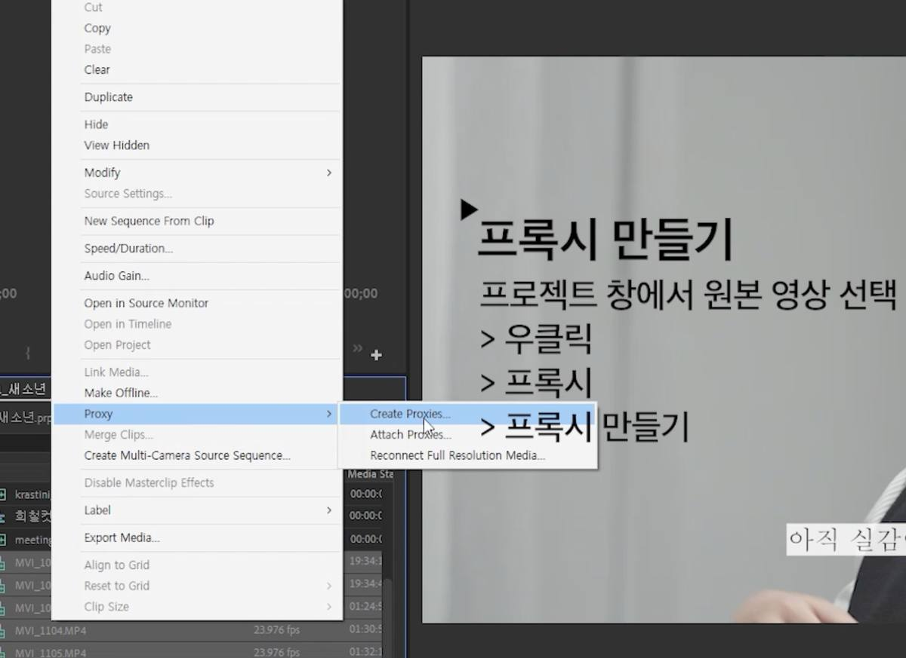</a><figcaption>프리미어 프로 우클릭 메뉴 캡처(프록시 만들기 경로):…</figcaption></figure><figure class="shot"><a href="playbook_assets/solpa/p20_2.jpg" target="_blank" rel="noopener">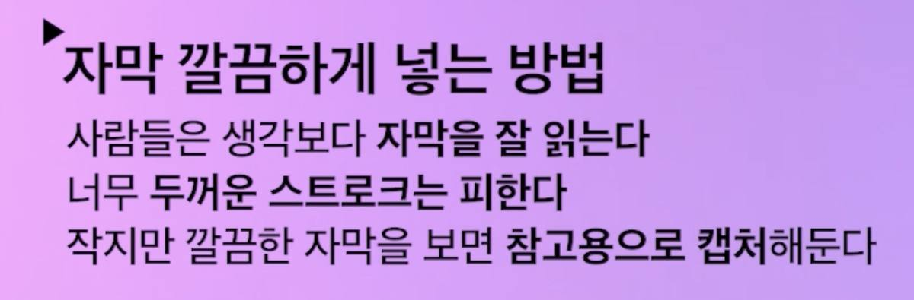</a><figcaption>보라색 배경 슬라이드(&#x27;자막 깔끔하게 넣는 방법&#x27;): …</figcaption></figure></div><div class="caption-blk"><span class="badge b-solpa">슬라이드</span> 프리미어 프로 우클릭 메뉴 캡처(프록시 만들기 경로): 클립 우클릭 &gt; Proxy &gt; Create Proxies / Attach Proxies / Reconnect Full Resolution Media. 우측에 슬라이드 텍스트(&#x27;프록시 만들기&#x27;): 프로젝트 창에서 원본 영상 선택 &gt; 우클릭 &gt; 프록시 &gt; 프록시 만들기. 프리뷰에 커튼 배경 인물, 자막 일부 &#x27;아직 실감이&#x27;</div><div class="caption-blk"><span class="badge b-solpa">슬라이드</span> 보라색 배경 슬라이드(&#x27;자막 깔끔하게 넣는 방법&#x27;): 사람들은 생각보다 자막을 잘 읽는다 / 너무 두꺼운 스트로크는 피한다 / 작지만 깔끔한 자막을 보면 참고용으로 캡처해둔다</div><p class="sm-meta">메모 힌트: 영상을 가볍게 압축시켜놓고</p><p>영상을 가볍게 압축시켜놓고 그걸 편집 하고 나중에는 고화질로 추출</p>
<p>영상우클릭 프록시 누르고 프록시 만들기 하면 됨 근데 그걸 내가 쓰려나 <br>프록시 자세하게 하는건 유튜브에 나와있음 참고 <br>썸네일의 기본은 마스킹이다  <br>H.264  로 추출하는이유 <br>압축률이 높아 화질대비 용량이 적다 <br>유튜브 자체가 영상을 압축함</p>
<p>기획안 틀은 따로 없고  <br>영상이 중요한거에 따라 바뀌면 됨  <br>A 이수영이</p><h4 class="mini">p.21</h4><div class="shotrow"><figure class="shot"><a href="playbook_assets/solpa/p21_1.jpg" target="_blank" rel="noopener">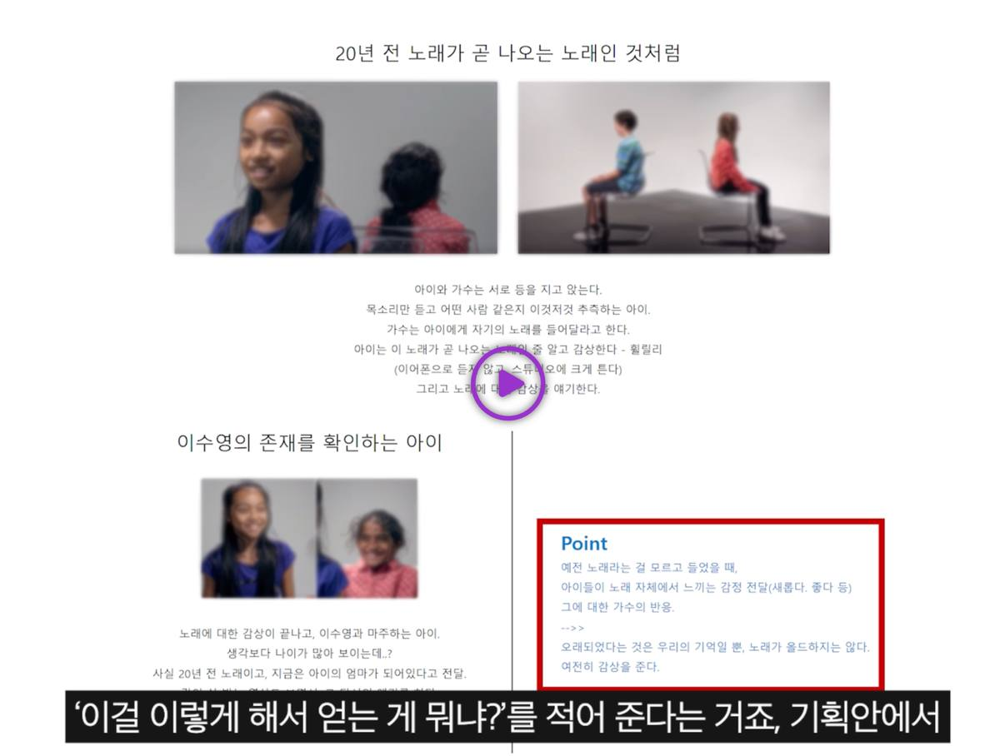</a><figcaption>기획안/스토리보드 캡처(상단 제목 &#x27;20년 전 노래가 …</figcaption></figure><figure class="shot"><a href="playbook_assets/solpa/p21_2.jpg" target="_blank" rel="noopener">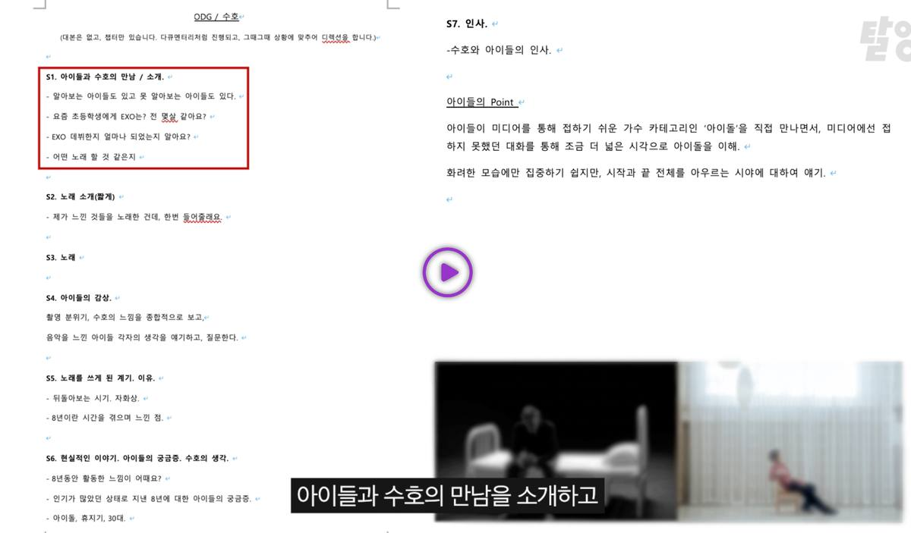</a><figcaption>촬영용 스크립트 문서 캡처(ODG/수호 편, 씬 목록)…</figcaption></figure></div><div class="caption-blk"><span class="badge b-solpa">슬라이드</span> 기획안/스토리보드 캡처(상단 제목 &#x27;20년 전 노래가 곧 나오는 노래인 것처럼&#x27;): 위쪽에 아이들 사진 2컷과 서술(&#x27;아이와 가수가 서로 등을 지고 앉는다. 목소리만 듣고 어떤 사람 같은지 이것저것 추측하는 아이. 가수는 아이에게 자기의 노래를 들려달라고 한다. 아이는 이 노래가 곧 나올지 알고 감상한다 - 휠릴리(이어폰으로 듣지 않고 스피커로 크게 튼다). 그리고 노래에 대한 감상을 얘기한다.&#x27;). 아래 &#x27;이수영의 존재를 확인하는 아이&#x27; 컷과 서술, 우측 빨간 박스 &#x27;Point: 예전 노래라는 걸 모르고 들었을 때, 아이들이 노래 자체에서 느끼는 감정 전달(새롭다, 좋다 등) 그에 대한 가수의 반응. --&gt;&gt; 오래되었다는 것은 우리의 기억일 뿐, 노래가 물드러지지 않는다. 여전히 감상을 준다.&#x27; 하단 자막: &#x27;&#x27;이걸 이렇게 해서 얻는 게 뭐냐&#x27;를 적어 준다는 거죠, 기획안에서&#x27;</div><div class="caption-blk"><span class="badge b-solpa">슬라이드</span> 촬영용 스크립트 문서 캡처(ODG/수호 편, 씬 목록): S1. 아이들과 수호의 만남 &amp; 소개(붉은 박스로 강조: 알아보는 아이들도 못 알아보는 아이들도 있다 / 요즘 초등학생에게 EXO는? 전 몇 살 같아요? / EXO 데뷔한지 얼마나 되었는지 알아요? / 어떤 노래 할 것 같은지) / S2. 노래 소개(멘트) / S3. 노래 / S4. 아이들의 감상(촬영 분위기, 수호의 느낌을 종합적으로 보고 음악을 느낀 아이들 각자의 생각을 얘기하고, 질문한다) / S5. 노래를 쓰게 된 계기, 이유(뒤돌아보는 시기, 차화상 / 8년이란 시간을 겪으며 느낀 점) / S6. 현실적인 이야기, 아이들의 궁금증, 수호의 생각(8년 동안 활동한 느낌이 이해돼? / 인기가 많았던 상태로 지낸 8년에 대한 아이들의 궁금증 / 아이돌, 휴지기, 30대) / S7. 인사 — 수호와 아이들의 인사. 아이들의 Point: 아이들이 미디어를 통해 접하기 쉬운 가수 카테고리인 &#x27;아이돌&#x27;을 직접 만나면서, 미디어에선 접하지 못했던 대화를 통해 조금 더 넓은 시각으로 아이돌을 이해. 화려한 모습에만 집중하기 쉽지만, 시작과 끝 전체를 아우르는 시야에 대하여 얘기. 하단 자막: &#x27;아이들과 수호의 만남을 소개하고&#x27;</div><p class="sm-meta">메모 힌트: B 노래를 한다</p><p>B 노래를 한다 근데 노래를 안한데</p>
<p>어떻게해 ? - &gt; 옛날노래인데 신곡인거처럼  <br>기획안 작성하고 스크립트 작성  <br>서로 물어봐야하는 것들을 대략작성</p><h4 class="mini">p.22</h4><div class="shotrow"><figure class="shot"><a href="playbook_assets/solpa/p22_1.jpg" target="_blank" rel="noopener">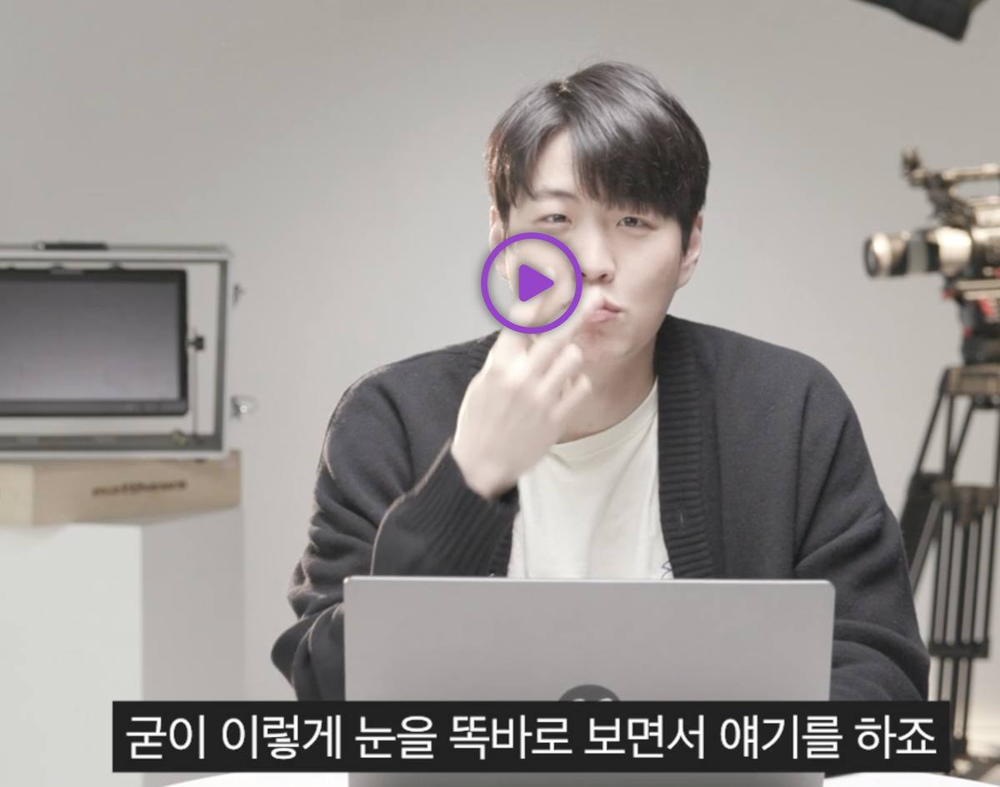</a><figcaption>강사(카디건) 손으로 눈 가리키며 말하는 장면. 하단 …</figcaption></figure><figure class="shot"><a href="playbook_assets/solpa/p22_2.jpg" target="_blank" rel="noopener">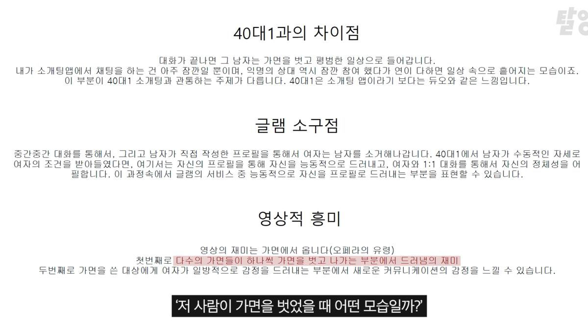</a><figcaption>기획안 설명 문서 캡처(글램 광고 사례 분석, 세 섹션…</figcaption></figure></div><div class="caption-blk"><span class="badge b-solpa">슬라이드</span> 강사(카디건) 손으로 눈 가리키며 말하는 장면. 하단 자막: &#x27;굳이 이렇게 눈을 똑바로 보면서 얘기를 하죠&#x27;</div><div class="caption-blk"><span class="badge b-solpa">슬라이드</span> 기획안 설명 문서 캡처(글램 광고 사례 분석, 세 섹션): &#x27;40대1과의 차이점&#x27;(대화가 끝나면 그 남자는 가면을 벗고 평범한 일상으로 들어갑니다. 내가 소개팅앱에서 채팅을 하는 건 아주 잠깐일 뿐이며, 익명의 상대 역시 잠깐 참여했다 연이 다하면 일상 속으로 흩어지는 모습이죠. 이 부분이 40대1 소개팅과 관통하는 주제가 다릅니다. 40대1은 소개팅 앱이라기보다는 듀오와 같은 느낌입니다.) / &#x27;글램 소구점&#x27;(중간중간 대화를 통해서, 그리고 남자가 직접 작성한 프로필을 통해서 여자는 남자를 소개해나갑니다. 40대1에서 남자가 수동적인 자세로 여자의 조건을 받아들였다면, 여기서는 자신의 프로필을 통해 자신을 능동적으로 드러내고, 여자와 1:1 대화를 통해서 자신의 정체성을 어필함. 이 과정 속에서 글램의 서비스 중 능동적으로 자신을 프로필로 드러내는 부분을 표현할 수 있습니다.) / &#x27;영상적 흥미&#x27;(영상의 재미는 가면에서 옵니다(오페라의 유령). 첫번째로 다수의 가면들이 하나씩 가면을 벗고 나가는 부분에서 드러냄의 재미. 두번째로 가면을 쓴 대상에게 여자가 일방적으로 감정을 드러내는 부분에서 새로운 커뮤니케이션의 감정을 느낄 수 있습니다.) 하단 강조 자막: &#x27;&#x27;저 사람이 가면을 벗었을 때 어떤 모습일까?&#x27;&#x27;</div><p class="sm-meta">메모 힌트: 이것도 1차적인</p><p>이것도 1차적인 스크립트고 촬영장에 들고가는건 더 디테일한  <br>Bgm 은 어울리는 계속 찾을려면 20개 넘게 찾아봐 <br>노래를 쓰게 된 계기 현실적인 이야기를 꼭해야한다 라고 주장</p>
<p>아이들이 해야할 질문  <br>디렉팅이 계속 들어갔구나</p><h4 class="mini">p.23</h4><div class="shotrow"><figure class="shot"><a href="playbook_assets/solpa/p23_1.jpg" target="_blank" rel="noopener">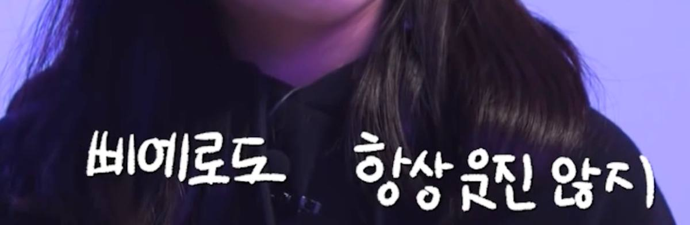</a><figcaption>영상 클라이맥스 캡처(보라 톤, 아이 손글씨 폰트 자막…</figcaption></figure><figure class="shot"><a href="playbook_assets/solpa/p23_2.jpg" target="_blank" rel="noopener">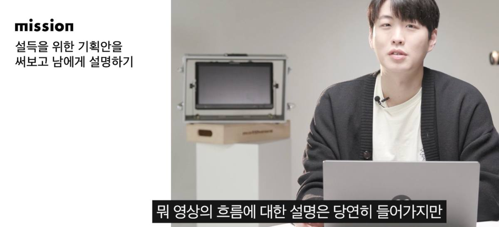</a><figcaption>강사(카디건) 미디엄샷. 슬라이드(&#x27;mission&#x27;):…</figcaption></figure></div><div class="caption-blk"><span class="badge b-solpa">슬라이드</span> 영상 클라이맥스 캡처(보라 톤, 아이 손글씨 폰트 자막): &#x27;삐에로도 항상 웃진 않지&#x27;</div><div class="caption-blk"><span class="badge b-solpa">슬라이드</span> 강사(카디건) 미디엄샷. 슬라이드(&#x27;mission&#x27;): 설득을 위한 기획안을 써보고 남에게 설명하기. 하단 자막: &#x27;뭐 영상의 흐름에 대한 설명은 당연히 들어가지만&#x27;</div><p class="sm-meta">메모 힌트: 촬영용스크립트 가 필요해</p><p>촬영용스크립트 가 필요해 <br>대화의 흐름정도 표기  <br>이영상의 핵심 (클라이막스) 는 아이들이 쓴 폰트로 자막이 나간다는거</p>
<p>포인트= 이 영상이 존재하는 이유 + 이 영상을 왜 하는데  <br>이게 댓글과도</p>
<p>설득을 위한 기획안 쓰기  <br>가장 강력한 지인의 지인</p></div></details><details class="acc"><summary><span class="stitle">검증 · 홍보 · 마무리</span><span class="sm-meta">p.24–27 · 네 가지 검증 기준, 직접 홍보, 보는 사람 입장으로 마무리</span><span class="acc-i" aria-hidden="true">+</span></summary><div class="acc-body"><h4 class="mini">p.24</h4><div class="shotrow"><figure class="shot"><a href="playbook_assets/solpa/p24_1.jpg" target="_blank" rel="noopener">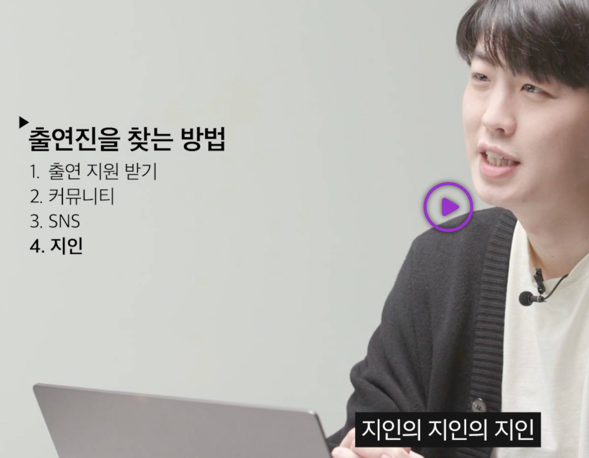</a><figcaption>강사(카디건) 측면. 슬라이드(&#x27;출연진을 찾는 방법&#x27;)…</figcaption></figure></div><div class="caption-blk"><span class="badge b-solpa">슬라이드</span> 강사(카디건) 측면. 슬라이드(&#x27;출연진을 찾는 방법&#x27;): 1. 출연 지원 받기 / 2. 커뮤니티 / 3. SNS / 4. 지인. 하단 자막: &#x27;지인의 지인의 지인&#x27;</div><p class="sm-meta">메모 힌트: 당연히 출연자들이</p><p>당연히 출연자들이 하는 말이 내가 원하는 게 안나오지 <br>사전에 대화를 해놨기 때문에  <br>Ex ) 남겨짐에 대해 이야기 해놓으면  <br>50분씩 통화,, 인터뷰,, 신뢰를 주는 것  내 이야기 먼저 하고  <br>이사람 심리학에 능함 솔파 이자식</p><h4 class="mini">p.25</h4><div class="shotrow"><figure class="shot"><a href="playbook_assets/solpa/p25_1.jpg" target="_blank" rel="noopener">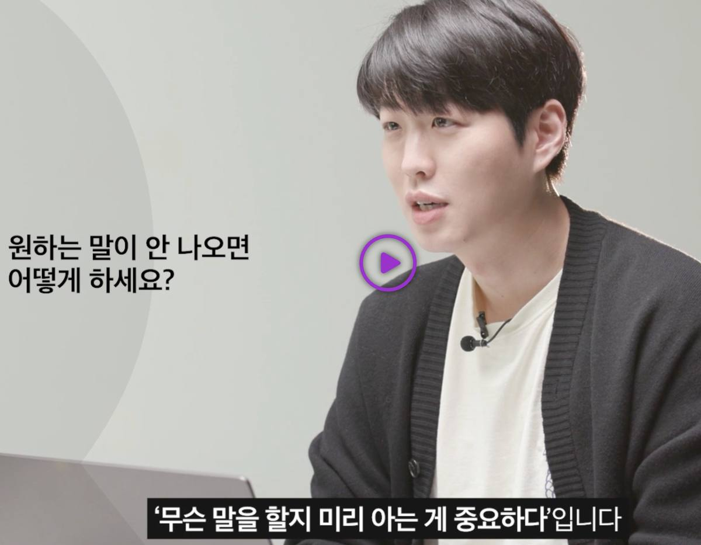</a><figcaption>강사(카디건) 미디엄샷. 슬라이드(&#x27;원하는 말이 안 나…</figcaption></figure></div><div class="caption-blk"><span class="badge b-solpa">슬라이드</span> 강사(카디건) 미디엄샷. 슬라이드(&#x27;원하는 말이 안 나오면 어떻게 하세요?&#x27;). 하단 자막: &#x27;&#x27;무슨 말을 할지 미리 아는 게 중요하다&#x27;입니다&#x27;</div><p class="sm-meta">메모 힌트: 넛지 를 준다</p><p>넛지 를 준다 “긴장하면 어떻게 해요 = 긴장 안하게 함&quot; <br> 잘할필요 없다 평가하지 않는다 진짜 중요함  <br>직접 홍보 하기 <br>커뮤니티에 올리던가 , 개인 sns 홍보를 하던가 <br>레딧이나 커뮤니티 댓글에 달아 그러면 사람들이 볼거아냐 (중요한건 댓글에 달기) <br>해외 팝가수 에 가서 댓글달기 <br>처음만 올리면 구독자 수가 계속 오르면 나중에는 안해도되겠죠 <br>바이럴 비디오 <br>알고리즘에 노출되면 어쩔건데 = 결국 영상이 좋아야한다 <br>유튜브 스튜디오에서 시청지속시간은 높으면 높을수록 좋지(40%이면 괜춘) <br> ,노출클릭률 7%넘으면 나쁘지 않고 <br>커뮤니티, 기사(유사언론) <br>영상을 소비한다기보단 만화처럼 소비함 <br>커뮤니티는 다 연결되어있어요</p><h4 class="mini">p.26</h4><div class="shotrow"><figure class="shot"><a href="playbook_assets/solpa/p26_1.jpg" target="_blank" rel="noopener">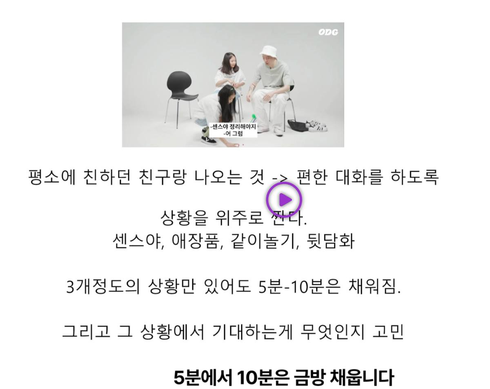</a><figcaption>ODG 영상 캡처: 스튜디오에서 성인 남성과 아이들이 …</figcaption></figure></div><div class="caption-blk"><span class="badge b-solpa">슬라이드</span> ODG 영상 캡처: 스튜디오에서 성인 남성과 아이들이 바닥/의자에 편하게 앉아 대화, 자막 &#x27;-센스야 정리해야지 / -어 그럼&#x27;, 우상단 &#x27;ODG&#x27; 로고</div><div class="caption-blk"><span class="badge b-solpa">슬라이드</span> 흰 배경 텍스트 슬라이드: &#x27;평소에 친하던 친구랑 나오는 것 -&gt; 편한 대화를 하도록 / 상황을 위주로 짠다. / 센스야, 애장품, 같이놀기, 뒷담화 / 3개 정도의 상황만 있어도 5분-10분은 채워짐. / 그리고 그 상황에서 기대하는 게 무엇인지 고민&#x27; + 하단 굵은 텍스트 &#x27;5분에서 10분은 금방 채웁니다&#x27;</div><p class="sm-meta">메모 힌트: 더쿠</p><p>더쿠</p>
<p>애플로그 다빈치  <br>이시람은 뭐하는거야 ? (처음 2초 잡아) <br>이건 영어로 뭔지 물어봐 (그래서 3초 잡아) <br>시청자 민심에 대해 내용 바뀜 구성 2탄 3탄 가려나 근데 질리면 안되는데 길어야 3개월  <br>계획은 큼 의미 없다 보는사람입장에서 콘텐츠를 제작해라</p><h4 class="mini">p.27</h4><div class="shotrow"><figure class="shot"><a href="playbook_assets/solpa/p27_1.jpg" target="_blank" rel="noopener">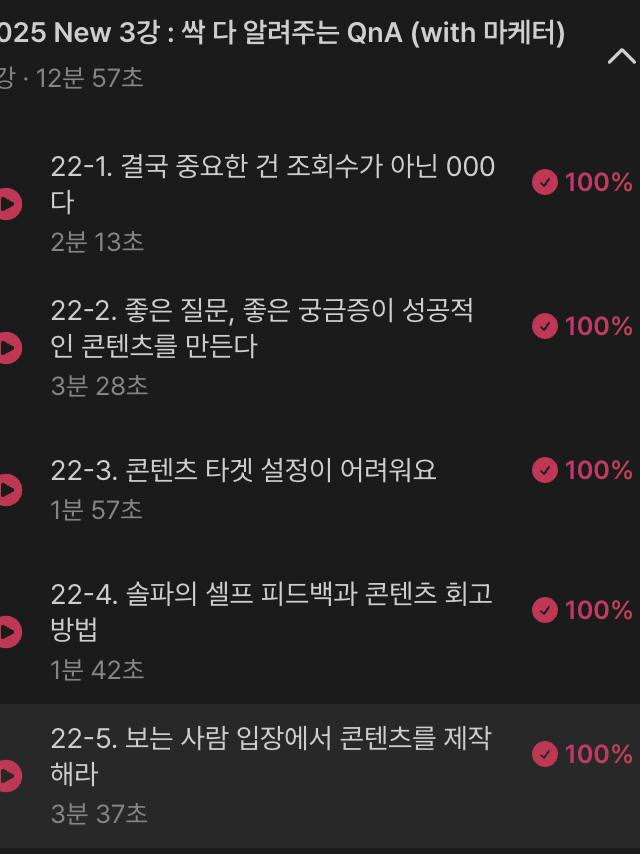</a><figcaption>탈잉 강의 커리큘럼 목차 캡처(검은 배경): &#x27;2025…</figcaption></figure></div><div class="caption-blk"><span class="badge b-solpa">슬라이드</span> 탈잉 강의 커리큘럼 목차 캡처(검은 배경): &#x27;2025 New 3강 : 싹 다 알려주는 QnA (with 마케터)&#x27; (12분 57초). 하위 강: 22-1. 결국 중요한 건 조회수가 아닌 000다 (2분 13초, 100%) / 22-2. 좋은 질문, 좋은 궁금증이 성공적인 콘텐츠를 만든다 (3분 28초, 100%) / 22-3. 콘텐츠 타겟 설정이 어려워요 (1분 57초, 100%) / 22-4. 솔파의 셀프 피드백과 콘텐츠 회고 방법 (1분 42초, 100%) / 22-5. 보는 사람 입장에서 콘텐츠를 제작해라 (3분 37초, 100%). 모두 완료(100%) 표시</div><p class="sm-meta">메모 힌트: 애플로그 다빈치</p></div></details></div></div></section><section class="sec" id="s2" style="--accent:var(--orange);--accent-text:var(--orange)"><div class="inner"><div class="sec-head reveal"><div class="bignum">02</div><div class="lbl">§2 · 우선순위 1 · 알고리즘·브랜딩 42스레드</div><h2 class="disp">유튜튜 아카이브</h2></div><p class="lead reveal">대기업 유튜버 유튜튜(@youtu_03)의 X 장문 42스레드. 주제가 아니라 알고리즘·브랜딩이 성패를 가른다는 교리. 3줄 요약을 보고, 전문은 아코디언으로 펼친다. 중복 재수록 스레드는 표시했다.</p><div class="subhead"><span class="dot"></span>핵심 교리 8</div><div class="grid g2 reveal"><div class="card"><h5><span class="num">01</span>주제가 아니라 알고리즘과 브랜딩이 성패를 가른다</h5><p>초보는 항상 &#x27;무슨 주제를 할까&#x27;만 묻지만 잘나가는 주제는 이미 다 공개돼 있고 누구나 안다. 진짜 유튜버는 주제를 묻지 않고 알고리즘 파악과 브랜딩을 이야기한다. 잘나가는 주제를 찾는 게 아니라 내 영상을 잘나가게 만드는 법을 공부해야 한다.</p></div><div class="card"><h5><span class="num">02</span>시청지속시간이 유튜브의 본질이자 핵심이다</h5><p>유튜브는 사람을 플랫폼에 오래 붙잡아 광고를 보게 하려는 회사다. 그래서 시청지속시간이 높은 영상을 고품질로 판정해 더 많이 노출한다. 조회수 1만·지속률 5%보다 조회수 100·지속률 70%가 훨씬 가치 있고 뒤늦은 떡상 가능성도 높다.</p></div><div class="card"><h5><span class="num">03</span>모두에게 사랑받으려 하지 말고 극단적으로 좁게 파고들어라</h5><p>유튜브는 방송국이 아니라 동호회다. 5000만 국민의 사랑이 아니라 나를 무지성으로 응원할 코어팬 1만~10만명이면 평생 먹고산다. 알고리즘은 이미 편향된 사람에게 영상을 꽂아주므로 호불호가 갈리는 건 결점이 아니라 강력한 타겟이 존재한다는 신호다.</p></div><div class="card"><h5><span class="num">04</span>화질이 아니라 음질에 투자하라</h5><p>카메라는 아이폰·갤럭시면 충분하고 화질 나빠도 떡상할 영상은 떡상한다. 하지만 음질 나쁜 영상은 아무리 잘 만들어도 절대 못 뜬다. 카메라에 돈 바르지 말고 5~10만원짜리 좋은 마이크에 투자하라. 쇼츠·인스타·틱톡도 똑같이 음질이 최우선이다.</p></div><div class="card"><h5><span class="num">05</span>댓글창은 네가 주인인 광장이다 — 반응을 &#x27;유도&#x27;하라</h5><p>유튜브는 하나의 커뮤니티이고 댓글 지표가 좋은 영상을 고품질로 본다. 강연자가 되지 말고 사람들이 연쇄적으로 댓글을 달도록 공감대·대화거리를 던지는 화법을 써라. 이 &#x27;넛지&#x27; 재능이 성공 유튜버의 공통 특징이다.</p></div><div class="card"><h5><span class="num">06</span>AI는 도구일 뿐, 대가리는 네가 돼라</h5><p>제미니·챗지피티는 뻔하고 정직한 대본만 뽑아준다. 틀과 뼈대는 스스로 설계하고 AI에게 살을 붙이게 하되, 생각과 결정은 반드시 본인이 한다. AI 딸깍으로 돈 벌 생각 말고 잘나가는 유튜버 10명을 직접 해체분석하라.</p></div><div class="card"><h5><span class="num">07</span>강의팔이에 돈 쓰지 말고 정공법으로 직접 분석·운영하라</h5><p>유튜브로 월 100만원 벌면 상위 10%, 연봉 3% 인상으로 12년 걸릴 돈이다. AI 딸깍·강의팔이는 사기에 가깝다. 내가 분석하고 내가 만든 채널로 수익을 내봐야 다음 단계가 열린다. 걸을 줄 알아야 뛴다.</p></div><div class="card"><h5><span class="num">08</span>이름·프사·브랜딩은 평생 가는 자산이니 설계하라</h5><p>채널 이름은 2~3글자로 줄여 부를 수 있고 이미 선점된 유명 이름과 겹치지 않아야 바이럴이 희석되지 않는다. AI 티 나는 프사는 금물이다. 조회수·수익이 적어도 브랜딩만 잘 되면 광고로 먹고사는 사람이 많다.</p></div></div><div class="qstrip reveal"><div class="track"><span>&ldquo;AI가 대가리고 여러분이 수족이 되어서 AI가 만들라고 말하는 영상 만들지 마시고. 여러분이 대가리가 되어서 AI에게 시키세요.&rdquo;</span><span>&ldquo;카메라에 돈 바르지 말고, 마이크에 돈 바르세요. 마이크는 비싼 값을 합니다.&rdquo;</span><span>&ldquo;진짜 성공한 유튜버는요 주제 안물어봐요 주제 물어보는 순간 님 채널은 구독자 많아봐야 10명이겠구나 생각하는게 이 바닥이에요.&rdquo;</span><span>&ldquo;&#x27;시청지속시간&#x27;이 유튜브의 본질이자 핵심이에요.&rdquo;</span><span>&ldquo;유튜브는요 방송국이 아니에요. 동호회 회장님이 되는거에요.&rdquo;</span><span>&ldquo;유튜브에서 호불호가 갈리는건 결점이 아니에요 강력한 타겟이 존재한다는거고 그건 구글 알고리즘의 선택을 강력히 받을수 있다는 소리와 동일한거에요.&rdquo;</span><span>&ldquo;영상을 다 만들고 제목을 짓는 게 아니라. 제목을 증명하기 위해 영상을 찍는거에요.&rdquo;</span><span>&ldquo;냉소적인 사람중에 부자인 사람 못 봤어요 진짜에요.&rdquo;</span><span>&ldquo;AI가 대가리고 여러분이 수족이 되어서 AI가 만들라고 말하는 영상 만들지 마시고. 여러분이 대가리가 되어서 AI에게 시키세요.&rdquo;</span><span>&ldquo;카메라에 돈 바르지 말고, 마이크에 돈 바르세요. 마이크는 비싼 값을 합니다.&rdquo;</span><span>&ldquo;진짜 성공한 유튜버는요 주제 안물어봐요 주제 물어보는 순간 님 채널은 구독자 많아봐야 10명이겠구나 생각하는게 이 바닥이에요.&rdquo;</span><span>&ldquo;&#x27;시청지속시간&#x27;이 유튜브의 본질이자 핵심이에요.&rdquo;</span><span>&ldquo;유튜브는요 방송국이 아니에요. 동호회 회장님이 되는거에요.&rdquo;</span><span>&ldquo;유튜브에서 호불호가 갈리는건 결점이 아니에요 강력한 타겟이 존재한다는거고 그건 구글 알고리즘의 선택을 강력히 받을수 있다는 소리와 동일한거에요.&rdquo;</span><span>&ldquo;영상을 다 만들고 제목을 짓는 게 아니라. 제목을 증명하기 위해 영상을 찍는거에요.&rdquo;</span><span>&ldquo;냉소적인 사람중에 부자인 사람 못 봤어요 진짜에요.&rdquo;</span></div></div><div class="subhead"><span class="dot"></span>스레드 42</div><div class="reveal"><details class="acc"><summary><span class="stitle">강의팔이 200만원 대신 보는 유튜브 시작 총정리 17개조 </span><span class="sm-meta">(날짜 표기 없음 · 문서 서두) · <span class="badge b-report">채널세팅</span> · <span class="nolink">원문 링크 없음</span></span><span class="acc-i" aria-hidden="true">+</span></summary><div class="acc-body"><ul style="margin:8px 0 12px;padding-left:18px"><li>채널은 브랜드 계정+새 구글 아이디로 만들고 유튜브 즉시 같은 아이디로 인스타·틱톡도 개설하라.</li><li>카메라 대신 마이크에 투자하고 처음엔 쇼츠로 감을 익히며 AI 티 나는 프사와 선점된 채널명은 피하라.</li><li>AI를 맹신하지 말고 잘나가는 유튜버 10명을 썸네일·제목·훅·태그까지 직접 해체분석하며 브랜딩과 모방을 병행하라.</li></ul><h4 class="mini">전문</h4><p>안녕하세요.<br>돈 꽤나 많이 번다 자부하는 대기업 유튜버인데요. 많은 분들이 유튜버 강의팔이 200만원주고 구매하는 거 너무 마음아파서 글 적어봅니다.</p>
<p>다른 거 볼 필요 없이 그냥 이 글 하나 보고 바로 시작해도 될 정도로 길게 쓸거고요. 긴 글 싫어하시면 걍 북마크만 하고 담에 읽어보세요.</p>
<p>1. 채널 개설할때는 무조건 브랜드 계정으로 만드세요. 나중에 채널 팔때도 좋아요.</p>
<p>2. 채널 만들때 새로운 구글 아이디로 만드세요. 여러분이 사용하던 구글이메일로 절대 만들지 마세요. 평소에 쓰던 아이디를 돌려쓰지도 마세요.</p>
<p>예를 들어서 lovww04 라는 아이디를 네이버에도 쓰고 게임할때도 쓰고 각종 아이디가 싹 다 이거라 이걸로 하고 싶으실수도 있겠지만.</p>
<p>이렇게 하면 나중에 떡상했을때 여러분의 개인 신상이 노출될 우려가 있어요. 절대 절대로 절대로 비즈니스용 아이디를 만드세요. 본인 채널이름이 쎅씨푸드 라고 치면 secyfood 같은 식으로 만드세요. 절대 본인이 사용하던 아이디 돌려쓰기 금지. 반박 안받음.</p>
<p>3. 유튜브 하기 전에 장비부터 비싼 거 사고 보는 사람들이 있는데. 그러지 마세요. 카메라 비싼 거 안사도 되고 아이폰 갤럭시면 충분합니다.</p>
<p>카메라에 돈 바르지 말고, 마이크에 돈 바르세요. 마이크는 비싼 값을 합니다. 무슨 수를 써서든 음질 좋은 마이크 사세요. 요즘 5~10만원사이에 좋은 마이크 널리고 널렸어요. 개인적으로 추천하고 싶은게 있는데 광고같으니 패스.</p>
<p>4. 쇼츠랑 롱폼 고민하실건데 처음에는 그냥 쇼츠 하세요. 떡상 감도도 모르고 영상 편집도 모르고 아무것도 모르는데 롱폼을 올린다? 그냥 나 시간 버리고 싶어요. 라는 말 밖에 안되는겁니다.</p>
<p>롱폼을 본인이 하고 싶어도 일단은 쇼츠를 하면서 감을 익히세요.</p>
<p>5. 유튜브 계정 만들자마자 똑같은 아이디로 인스타 틱톡 아이디 만드세요. 반박 안받습니다. 무조건 만드세요.</p>
<p>6. 프로필 배경에 ai좀 넣지 마세요. ai좋아하는 거 알겠는데 제발 ai티 팍팍내는 그런 이상한 프사는 절대 금지.</p>
<p>님들 테슬람들 프사 보세요. 그거 보고 팔로우 누르고 싶으세요? 도지 웃는 모습 보고 구독 누를 여자 별로 없어요. 진짜임. 님들만 봐도 그런 ai프사에 구독 누를거에요? 역지사지로 생각해봐요. ai프사는 절대 금지임.</p>
<p>7. 시발 그러면 프사 어떡하란거냐.<br>타입캐스트라고 있어요. 거기 들어가서 유튜브 프로필이랑 배경 만드세요. 이미 템플릿 존나많아서 거기있는거만 써도 평타는 함.</p>
<p>프사 뭐할지 모르겠으면 일단 그냥 깔끔하게 타이핑해서 넣으세요. 채널 이름 박아넣으셈.</p>
<p>8. 채널 이름 설정할때 2글자 내지 3글자로 줄여 부를 수 있게 만들고. 그 줄임말을 여성시대나 트위터에 검색해서 이미 그 이름이 있는지 봐보세요. 예를 들어서 &quot;태연이의 아틀리에&quot; 라는 채널명이 있다 쳐보겠습니다. 뭐라 줄여 부를건가요. 태아? 태틀? 뭔가 이상하잖아요.</p>
<p>그리고 태연이라는 이름을 들었을때 구독자 2명 (한명은 나, 한명은 엄마) 태연이의 아틀리에 유튜브가 생각날까요?</p>
<p>당연히 소녀시대 태연님이 생각나겠죠?</p>
<p>이런 식으로 이미 선점된 이름을 함께 쓰려고 하지 마시고요. 이름부터 쫙쫙 달라붙는걸 선점하세요. 진지하게 말하는데 이름 저렇게 하면 클 채널도 못 커요.</p>
<p>9. ai를 맹신하지 마세요.<br>제미니 챗지피티 이놈들 잘하는건 맞는데 존나 뻔한 말만 해요. 뭐 대본 쓰는것도 공중파 레거시미디어에나 나올법한 정직한 내용만 써줘요.</p>
<p>그런 대본으로는 성공하기 힘들어요. msg팍팍 넣고 강렬하게 해도 모자랄판에 대본 대필 받아서 성공할 수 있을 거 같으세요?</p>
<p>전체적인 틀을 ai에게 부탁할수는 있겠지만. 절대 모든걸 맡기지 마세요. 대본 틀을 받은 다음에. 여러분만의 쿠세를 대본에 집어넣어서 대본을 생동감 있게 만드세요.</p>
<p>제가 쓴 글을 몇개 보신 분들이라면 제 쿠세는 다들 알거라 생각해요. 그런 식으로 자신만의 대본을 만드세요.</p>
<p>10. 생각을 ai에 맡기지 마세요.<br>본인의 생각을 하세요. ai는 도구일 뿐이에요. ai가 대가리고 여러분이 수족이 되어서 ai가 만들라고 말하는 영상 만들지 마시고. 여러분이 대가리가 되어서 ai에게 시키세요.</p>
<p>굉장히 많은 유형의 사람들이 ai에게 생각을 대신 맡기는데. 절대 그러지 마세요. 모든 건 본인이 생각하고 본인이 결정해야 해요. ai는 우리의 도구일뿐이지 여러분의 채널을 책임져주는 책임자가 아니라는 사실 명심하세요.</p>
<p>11. 제가 매번 말하지만 유튜브로 100만원 버는 거 존나게 힘들어요. 그거 벌면 유튜브 상위 30%거든요?</p>
<p>월급 100만원 늘리려고 해봐요. ㅈ뺑이를 쳐도 월급 100만원 올리는거 힘든데 유튜브로는 그게 쉬워보이시나요? ai딸깍으로 돈 번다는 사람들. 강의팔이에요 마지막에 봐요 강의나 책을 팔고 있을거에요. 그런거에 낚이지 말고 다른 채널을 분석하세요.</p>
<p>본인이 요리 유튜브를 꿈꾼다 하면 요리유튜버들 한 10개 모아놓고 분석하세요.</p>
<p>\-썸네일 어떻게 만드는지 썸네일 폰트, 폰트크기, 글자 위치, 글자 그림자 얼마나 넣는지, 사진 어디서 가져오고 사진 누끼따고 그림자 얼마나 넣는지, 썸네일 동향 분석, 조회수 잘 터진 썸네일 밝기가 얼마나 밝은지 등등</p>
<p>\-제목 어떻게 쓰는지, 제목 쓸때 맞춤법 검사 하는지 안하는지 (일부러 띄어쓰기 편하게 하는 경우 많음) 글자숫자는 얼마나 쓰는지, 어떤 단어를 주로 사용하는지, 문장구조 문법에 맞게 쓰는지 문법에 맞지 않는 구어체를 사용하는지, 조회수 터진 영상 제목 분석하기 등등</p>
<p>\-영상 첫 10초안에 어떤 훅을 집어넣는지, 영상 구도는 어떻게 찍는지, 영상찍을때 조명은 몇개 쓰는지 예측해보기, 마이크는 뭐 쓰는지, 편집툴은 뭐 쓰는지, 카메라는 뭐 쓰는지, 구독 좋아요 유도는 어떻게 하는지, 배경음악은 뭔지, 배경음악 볼륨은 몇인지, 영상에 사용되는 효과음은 뭔지, 영상 자막은 어떤 걸 쓰는지, 자막크기는 어떤지, 자막폰트는 어떤건지, 하이라이트 주고 싶은 곳에서 어떤 이팩트 쓰는지, 하이라이트 부분에서 어떤 편집을 사용하는지, 영상이 끝날때 어떻게 끝내는지, 영상 언제 업로드하는지(존나중요) 등등</p>
<p>\-영상에 붙은 태그는 뭔지(검색하는 사이트 있음. 홍보될까봐 말 안함), 영상 설명란에 어떤 글을 썼는지, seo를 위해 어떤 노력을 했을지, 댓글에 하트누르는 기준은 뭔지, 댓글 고정하는 이유는 뭔지, 의도적인 분쟁을 댓글창에서 유발하는지</p>
<p>등등. 까놓고 말해서<br>타인의 영상 분석을 해본 적 있으세요?<br>한명의 유튜버라도 저렇게 놓고 해체분석 해본 적 있으신가요? ai에게 해달라고 하면 ai가 이렇게 해주던가요?</p>
<p>제발요 ai에게 딸깍 바라지 말고. 본인이 분석하세요.</p>
<p>12. 본인이 쇼츠로 시작할거고 유튜브 영상 편집 개초보다 싶으면 캡컷, 캔바 사용하시고. 본인이 좀 친다 하면 프리미어프로 쓰세요.</p>
<p>썸네일 작업 한번도 해본 적 없으면 미리캔버스 쓰시고요, 본인이 좀 친다 하면 포토샵 쓰세요.</p>
<p>본인이 자막 좀 친다 하면 그냥 프프 쓰면 되고, 처음이다 싶으면 브류라고 있는데 자동자막 써보세요. 캡컷 자동자막도 나쁘진 않은 듯.</p>
<p>tts는 타입캐스트 추천드리는데 요즘은 일레븐랩스 많이 쓰기도 하더라고요 취향차이.</p>
<p>정리하자면 초보라면 영상 편집 캡컷, 캔바. 썸네일 작업 미리캔버스. 자막은 브류.</p>
<p>13. 브랜딩을 하세요.<br>뭐 거창한 브랜딩이 아니라. 가장 간단한걸 말해보자면. 여러분같으면 같은 100만 구독자라도 뻑가에게 광고 주고 싶으세요. 서울대 의대 출신 100만구독자 유튜버에게 광고 주고 싶으세요.</p>
<p>광고주 입장에서 생각해보세요.</p>
<p>아무도 안보고 줘도 안가지는 뒤통수 툭 튀어나온 브라운관 구식 티비가 있다고 쳐볼게요. 이걸 팔아야 하는데 쭈뼛쭈뼛 기어나와서. &quot;이 티비는.. 오래됐어요.. 화질도 안좋아요.. 그래도 싸니까 사주세요..&quot; 이러면 누가 사요.</p>
<p>&quot;이 티비는 80년대 90년대를 모르는 아이들에게 과거를 보여줄 수 있는 타임머신입니다. 요즘 아이들이 브라운관 티비를 알겠어요? 카페에 이 티비를 두고 영화를 틀면 그 시절 감성나는 인테리어 소품으로 아주 좋습니다.&quot; 라고 말할 수 있잖아요.</p>
<p>브랜딩 별 거 아니에요<br>사람들에게 공감갈 수 있게 채널을 꾸며내세요. 그 채널에서만 볼 수 있는 특별한 id를 만드세요. 본인만의 강점을 보이고 그걸 특징화 시키세요.</p>
<p>트위터로 예를 들어보자면 흔하디 흔한 계정들 널리고 널렸는데 그 중에서 빨리 크는 계정들 있잖아요. 저 보세요. 하루종일 유튜브 이야기만 하잖아요. 그러면 저는 뭐로 브랜딩 되어 있을까요. 유튜브 하는 여자로 브랜딩 되어 있겠죠?</p>
<p>본인 회사랑 광고 하자고 말하는 마이크회사나 ai툴 회사들 각종 어플 회사들 존ㄴㄴㄴ나 많아요. 50만원 받고 광고 할바에 그냥 안하고 싶어서 안하는거 뿐이에요.</p>
<p>저를 예시로 들었지만 본인만의 브랜딩을 하세요. 조회수 수익이 적어도 브랜딩만 잘 되면 광고로 잘먹고 잘 사는 사람 ㅈㄴㄴㄴ많아요.</p>
<p>14. 모방은 창조의 어머니에요.<br>모방하세요. 뭐가 무서워요. 그 사람의 모든 것을 따라해선 안되겠지만. 그 사람의 장점을 따라하세요. 패션봐봐요. 잘나가는 브랜드가 하나 내면 자라에서 바로 따라하고 그걸 또 다른 곳에서 따라하잖아요.</p>
<p>유튜브도 똑같다 생각해요. 남의 장점을 보고 배우는게 뭐 잘못된건가요.</p>
<p>폰트 크기 폰트색 영상편집구도 모든 것을 따라하는 게 아니라. 필요한 부분만 골라서 자신의 색으로 덮으세요. 어차피 유튜브판. 누가 이거해서 잘나가면 다 따라하는데. 초보유튜버들만 그거 무서워서 못하더라고요.</p>
<p>15. 태그에 힘 쓰지 마세요. 현직 유튜버들은 태그 신경 안써요. 태그 고민도 1분 안넘김.</p>
<p>16. 삼성전자 제발 힘내주세요. 지금 수많은 여자들이 힘들어합니다. 주가 방어 제바류ㅠㅠ</p>
<p>17. 앞으로 말할 게 더 많은데 여기서 더 길어지면 안될거같아서 며칠 뒤에 2탄으로 올게요. 구독과 좋아요 눌러주세요 감사드립니다.</p></div></details><details class="acc"><summary><span class="stitle">유튜브 &#x27;스크립트&#x27; 기능으로 대본 공부하는 법 </span><span class="sm-meta">(날짜 표기 없음) · <span class="badge b-report">대본</span> · <span class="nolink">원문 링크 없음</span></span><span class="acc-i" aria-hidden="true">+</span></summary><div class="acc-body"><ul style="margin:8px 0 12px;padding-left:18px"><li>공부할 유튜버 영상의 더보기→스크립트를 복사해 제미니에 여러 개 학습시키고 심도 깊은 토론으로 대본 구조를 익힌다.</li><li>스크립트뿐 아니라 인기순 댓글 수백 개까지 함께 복붙해 학습시키면 AI가 1.5배 더 날카로운 분석을 내놓는다.</li><li>편집 기술은 성공 지분의 5%도 안 되니 사람답게만 편집하고, 대기업 유튜버의 대본 짜는 능력 습득에 집중하라.</li></ul><h4 class="mini">전문</h4><p>안녕하세요 현직 유튜버인데요.<br>오늘은 유튜브에서 공식적으로 지원하는<br>&#x27;스크립트&#x27; 기능으로 대본 공부하는 법을 알려드릴게요!</p>
<p>글 길어지면 알계언니들에게 욕 먹으니<br>두괄식으로 말하자면.</p>
<p>1. 공부하고 싶은 유튜버 영상, 더보기, 스크립트를 누른다.</p>
<p>2. 스크립트를 복사해서 제미니에 학습시킨다.</p>
<p>3. 그 유튜버의 영상 스크립트를 몇 개 더 복사해서 제미니에 학습시킨다.</p>
<p>4. 제미니와 심도깊은 토론을 통해서 어떤 방식으로 대본을 짜야할지 공부한다.</p>
<p>짧게는 4줄 요약으로 설명이 되는데<br>알계언니들은 여기까지만 보구 하러 가셔도 괜찮아요<br>근데 이제 좀 더 써보자면.....</p>
<p>저 욕하는 알계 언니들 다 나갔을테니 중요한 팁 하나 말씀드릴게요<br>아시죠 원래 강의는 중간중간에 꿀팁 나오는거ㅎㅅㅎ</p>
<p>스크립트를 복사해서 제미니에게 학습시키고 나서.<br>그 영상에 대한 이야기를 제미니와 나눌거잖아요<br>그때 댓글도 인기순으로 쫙 긁어서 몇십 몇백개 정도 한번에 복사 붙여넣기 해서</p>
<p>댓글반응도 ai에게 알려준 다음에<br>제미니랑 이야기 해보세요<br>그러면 느낌상 한 1.5배 정도는 더 날카로운 말을 제미니가 해해줘요</p>
<p>스크립트까지는 다들 하는 거 같던데<br>댓글은 학습을 안시키더라고요<br>그 영상을 본 대중들의 직접적인 반응인데<br>이것도 꼭 포함시켜서 공부시키세요!!</p>
<p>중간 꿀팁은 여기까지이고 하고 싶은 말 더 해보자면</p>
<p>모방은 창조의 어머니 라고 하잖아요<br>그런 거 같이</p>
<p>처음 시작한 귀여운 초보 유튜버는<br>일단 대기업들이 어떤 방식으로 대본을 짜는지<br>구조를 알고 있어야 해요</p>
<p>이건 좀 논란이 될 수 있겠으나 영상 편집 기술 같은 건<br>개인적으로 크게 쓸모 없다고 생각해요</p>
<p>적어도 유튜브 판에서 돈을 벌고 성공하는데 있어서<br>영상 편집기술? 이건 한 지분의 5%도 차지 안한다고봐요<br>어느정도 사람답게만 편집하면 되고요<br>그 이상의 기술을 배우려 하지 않아도 된다 생각해요</p>
<p>개초보 유튜버가 배워야 하는건<br>대기업 유튜버들의 대본짜는 능력이에요</p>
<p>개인적으로 여러분들이 직접 영상을 보면서 공부하는 게 좋겠지만. 시대가 변했잖아요. ai에 학습시키고 공부해보세요</p>
<p>어떤 부분에 넛지와 힘을 줘야 하는지 여러분이 쓰는 ai를 특화시켰으면 좋겠어요</p>
<p>저런 데이터 몇십개 몇백개 쌓아놓으면<br>제미니가 님들보다 대본 더 잘 써줄 수 있어요</p>
<p>그렇다고 너무 의존하진 마시고<br>대본 틀과 뼈대, 그런 건 스스로 설계 한 다음에<br>살을 제미니에게 붙여달라 하면 잘 해줄거에요<br>물론 틀과 뼈대를 제미니가 설계하고 살은 여러분이 붙이시는 방법도 괜찮겠죠.</p>
<p>근데 꼭!! 저 작업은 하셨으면 좋겠어요<br>남의 영상이든 본인 영상이든<br>무조건!! 작업하고 나서는<br>대본을 제미니에 학습시키고 퍼스널하게 ai를 조련하시길 바랄게요</p>
<p>화이팅이구..<br>이 팁이 마음에 안드는 사람이면<br>일단 한번 이 글 복사해서 제미나이 (반드시 제미나이)에게 철저한 검증 해달라고 물어봐보세요</p></div></details><details class="acc"><summary><span class="stitle">강의팔이 200만원 대신 보는 유튜브 시작 총정리 (재수록) <span class="badge b-report">재수록</span></span><span class="sm-meta">(날짜 표기 없음 · 서두 스레드 중복 재수록) · <span class="badge b-report">채널세팅</span> · <span class="nolink">원문 링크 없음</span></span><span class="acc-i" aria-hidden="true">+</span></summary><div class="acc-body"><ul style="margin:8px 0 12px;padding-left:18px"><li>y01과 동일한 &#x27;유튜브 시작 총정리&#x27; 스레드가 문서에 두 번째로 수록된 구간이다.</li><li>브랜드 계정·마이크 투자·쇼츠 시작·AI 프사 금지·채널명 선점 등 동일 내용.</li><li>빌더가 원문 전문을 넣을 때는 중복이므로 y01만 사용하면 된다.</li></ul><div class="note">위 <b>강의팔이 200만원 대신 보는 유튜브 시작 총정리 17개조</b> 스레드와 동일 (재수록). 전문은 원 스레드를 참고.</div></div></details><details class="acc"><summary><span class="stitle">태그 대신 영상에서 키워드를 말하는 SEO 꿀팁 </span><span class="sm-meta"><a href="https://x.com/youtu_03/status/2031939610105036807" target="_blank" rel="noopener">3월 12일</a> · <span class="badge b-report">업로드</span> · <a href="https://x.com/youtu_03/status/2031939610105036807" target="_blank" rel="noopener">X 원문 ↗</a></span><span class="acc-i" aria-hidden="true">+</span></summary><div class="acc-body"><ul style="margin:8px 0 12px;padding-left:18px"><li>성수동·맛집 같은 태그는 큰 의미 없다는 게 현역 유튜버의 결론이다.</li><li>유튜브는 음성인식으로 자동자막을 뽑아 그 텍스트로 알고리즘을 판단하니 노출시키려는 키워드를 영상에서 자연스럽게 많이 말하라.</li><li>SEO 노린다고 같은 단어를 염불처럼 반복하지 말고 문맥에 맞게 말해야 한다.</li></ul><h4 class="mini">전문</h4><p>유튜브 하는 언니들 seo 개꿀팁 하나 드릴게요<br>영상 업로드 하기 전에<br>많은 사람들에게 노출되길 바라면서<br>태그 오지게 넣으시잖아요</p>
<p>성수동, 맛집, 내돈내산 등등 이런 거 많이 넣으시는데<br>사실 이거 태그 넣는 거 그렇게 큰 의미 없다는 게<br>현역 유튜버들 대체적인 결론이에요</p>
<p>잘 보세요<br>님이 유튜브인데 벗크크 여캠들 제로투 갈기는 영상의 알고리즘을 판단 해야 해요. 근데 이 벗크크 여캠이 영상 노출 많이 되라고 실트 단어들 주르륵 써 넣듯<br>트럼프, 이란, 성수동, 이재명, 윤석열 이런 걸 막 집어넣을수도 있잖아요.</p>
<p>그래서 유튜브는 우리가 직접 써 넣을 수 있는<br>태그에는 그렇게 큰 관심을 가지지 않는다. 라는 게 저희 현역 유튜버들의 결론이에요</p>
<p>물론 아니라고 말할 수도 있지만, 저희는 태그에 크게 관심 안써요. 그 대신 영상에 최대한 유튜브 태그에 넣을 만한 단어를 많이 말하려곤 노력해요.</p>
<p>예를 들어볼게요. 언니가 성수동 맛집 브이로그를 찍는다 치면 여기서 성수동 맛집이라는 단어를 최대한 많이 말하는거에요.</p>
<p>유튜브는 음성인식 기능(진짜 있는 기능임. 도시괴담이 아님. 그래서 자동자막도 추출 가능한거임)으로 언니가 올린 영상의 대본을 가지고 있고. 그 대본을 기반으로 알고리즘 판단을 해요.</p>
<p>그렇게 해야지만 벗크크 여캠이 성수동 맛집 태그를 썼다 해도<br>유튜브에 &quot;성수동 맛집&quot;검색한 사람에게 벗크크 제로투가 나오지 않을 수 있으니까요.</p>
<p>여기까지가 유튜버들 사이에 내려진 결론이고요<br>븨로거 언니들 말고 다른 경제채널이나 다른 거 하는 언니들도 똑같아요<br>유튜브에 &quot;xx&quot;검색했을때 내 채널이 상단에 노출되길 바란다면 영상에 최대한 많이 말하세요.</p>
<p>아 맞다 혹시 seo노린다고 하루종일 성수동 맛집 성수동맛집 성수동맛집 이렇게 염불 외지 마시고요. 자연스럽게 말해야 해요 아시죠? 그정돈 알아서 할거라 믿어요</p>
<p>이건 반박 안받아요 의심가면 제미니에게 이 글 그대로 복사 붙여넣기 ㄱㄱ싱</p></div></details><details class="acc"><summary><span class="stitle">TTS 1.2배속·0.1초 공백 등 편집 미세 팁 7개 </span><span class="sm-meta"><a href="https://x.com/youtu_03/status/2031939610105036807" target="_blank" rel="noopener">3월 12일</a> · <span class="badge b-report">편집</span> · <a href="https://x.com/youtu_03/status/2031939610105036807" target="_blank" rel="noopener">X 원문 ↗</a></span><span class="acc-i" aria-hidden="true">+</span></summary><div class="acc-body"><ul style="margin:8px 0 12px;padding-left:18px"><li>TTS는 무조건 1.2배속으로 올리고 목소리 사이 공백은 0.1초로 짧게 붙여라(반박 안 받음).</li><li>효과음 떡칠·여초 짤방을 넣지 말고 자막 바뀔 때 &#x27;뿅&#x27; 정도면 충분하며, 별로인 영상은 올리지 말고 습작 취급하라.</li><li>업로드 전 반드시 핸드폰으로 옮겨 자막 크기·위치를 검수하라(경차는 캐스퍼 추천).</li></ul><h4 class="mini">전문</h4><p>안녕하세요. 유튜버로 부업을 꿈꾸시는 여러분들을 위해. 미세한 팁 하나 드릴게요. 1. 보통 얼굴 목소리 까는 거 싫어하는 분들 많아서 기계음(TTS)를 사용 하실 건데 이거 사용하실때 무조건 1.2배속 속도 올려서 사용하세요 이유는 묻지말고 그냥 무조건 그렇게 하세요 반박 안받음. 2. TTS로 목소리 만들었으면 목소리 사이사이 공백시간이 있을건데. 이거 무조건 0.1초 정도로 짧게 붙이세요. 영상 길이 늘린답시고 이거 길게 하지 말고 무조건 무조건 이렇게 하세요. 이거도 반박 안받음 3. 본인이 여자인데 목소리가 좋다면. TTS말고 목소리 까세요 팔로우 올라가는 속도 2배는 더 빠를 거임 이건 반박 받음 님 말이 맞음 4. 초보들이 영상 만들면 무도 따라한답시고 막 효과음 떡칠에 이상한 효과 오지게 넣는데 그럴 필요 없어요 자막 바뀔때 &#x27;뿅&#x27; 이 소리 정도면 충분함 그리고 약간 브랜드 트지기들이 쓸법한 여초식 짤방 넣지 마세요 유튜브 시청자들은 그 짤방이 뭔지도 모름 반박 받고 님 말이 맞을수도 있음 이건 5. 그지같이 만든 영상 100개보다 잘 만든 영상 하나가 더 좋아요 영상 다 만들었는데 좀 별로다 싶으면 그냥 올리지 말고 습작 취급하세요. 6. 쇼츠 영상이든 롱폼영상이든 제발 다 만들고 업로드 하기 전에 그 영상을 핸드폰으로 옮겨서 미리 봐보세요 컴퓨터에서 보는 영상느낌과 모바일로 보는 영상 느낌이 아예 달라요 폰트 크기 자막 위치 등등 거슬리지 않게 잘 조절하세요 7. 사회 초년생 여성이 경차 구매할거라면 캐스퍼 사세요 스마트크루즈컨트롤이 달린 캐스퍼는 신이에요 자동차선보정도 해주는데 이거 진짜 신세계에요 반드시 경험해보셔야 합니다 사랑해 캐스퍼</p></div></details><details class="acc"><summary><span class="stitle">PPT도 못하는 개초보용 프로그램 5선 </span><span class="sm-meta"><a href="https://x.com/youtu_03/status/2056231557019668879" target="_blank" rel="noopener">5월 18일</a> · <span class="badge b-report">편집</span> · <a href="https://x.com/youtu_03/status/2056231557019668879" target="_blank" rel="noopener">X 원문 ↗</a></span><span class="acc-i" aria-hidden="true">+</span></summary><div class="acc-body"><ul style="margin:8px 0 12px;padding-left:18px"><li>영상편집은 캔바, 썸네일은 미리캔버스, 자동자막은 브류, 유튜브 상담은 제미나이를 쓰라.</li><li>각 프로그램은 사용법 익히는 데 30분이면 되니 아무 생각 없이 일단 도전하라.</li><li>캡컷보다 캔바가 더 쉬워 추천하지만 둘이 비슷하니 캡컷을 써도 된다.</li></ul><h4 class="mini">전문</h4><p>본인이 PPT도 잘 못 만드는 여자인데 유튜브로 부업으로 돈 벌고 싶다면 주목하셈 걍 진짜 개초보 버전으로 어떤 프로그램 쓸 지 알려드림 1. 영상편집은 &#x27;캔바&#x27; 2. 썸네일 제작은 &#x27;미리캔버스&#x27; 3. 자동자막 생성은 &#x27;브류&#x27; 4. 유튜브 상담은 &#x27;제미나이&#x27; 5. 경차 구매는 &#x27;캐스퍼&#x27; 저기 위에 적은 프로그램 사용방법 익히는데 30분컷이면 되니까 그냥 아무생각 없이 일단 도전해봤으면 좋겠어요 프로그램 다루기 진짜 진짜 진짜 개쉽고 간편하고 직관적인 곳만 추천했으니까 저장해놨다가 다음에 까먹지 말고 한번 해보시길 추천드려요. 혹시 캡컷 추천 안하냐는 질문 들어올 수 있는데 캡컷보다 캔바가 더 쉬워서 캔바 추천한거에요 사실 둘이 비슷하니까 캡컷 쓰세요.</p></div></details><details class="acc"><summary><span class="stitle">냉소적으로 분석하는 사람 중에 부자 못 봤다 (레드오션론 반박) </span><span class="sm-meta"><a href="https://x.com/youtu_03/status/2036822496801104168" target="_blank" rel="noopener">3월 26일</a> · <span class="badge b-report">마인드셋</span> · <a href="https://x.com/youtu_03/status/2036822496801104168" target="_blank" rel="noopener">X 원문 ↗</a></span><span class="acc-i" aria-hidden="true">+</span></summary><div class="acc-body"><ul style="margin:8px 0 12px;padding-left:18px"><li>4년 전 2022년에도 다들 유튜브를 레드오션이라 했지만 지금 보면 블루오션이었다.</li><li>사람들은 실패 시 변명하려고 일이 얼마나 힘든지 늘어놓고 그 냉소는 전염된다.</li><li>냉소적 분석 잘하는 사람이 정작 본인 인생계획은 분석 못한다 — 냉소를 버려라.</li></ul><h4 class="mini">전문</h4><p>제가 유튜브 시작할때도 사람들이 다 유튜브 레드오션이라 했어요 엄마, 친구, 지인, 친척 싹 다 유튜브? 그거 레드오션이라고 냉소적인 분석 쏟아내면서 유튜브로 성공하기 힘들다 말했어요 심지어 4년전인 2022년에도 유튜브는 레드오션이라고 말했었어요 사람들은 뭔가를 시작할때 그 일이 얼마나 힘든지에 대해 막 늘어놓아요 실패했을때 나 자신을 변명하고 사람들에게 덜 창피하려고요 그리고 그런 냉소적인 생각은 전염되기 마련이에요 여기 아래 사진 좀 보세요 냉소적으로 분석했지만 지금 와서 보면 2022년은 유튜브 블루오션이였어요 흠.. 이런 말 하면 알계 언니들이 인용으로 맛있게 싸불 먹이겠지만 냉소적인 사람중에 부자인 사람 못 봤어요 진짜에요 그렇게 냉소적으로 분석 잘 하시면서 본인 인생계획은 왜 그렇게 분석 못하셨어요 라고 할뻔.</p></div></details><details class="acc"><summary><span class="stitle">월 90만원 세팅 기법 + 방송국 아닌 동호회 회장이 돼라 </span><span class="sm-meta"><a href="https://x.com/youtu_03/status/2018872449832780060" target="_blank" rel="noopener">2월 4일</a> · <span class="badge b-report">운영</span> · <a href="https://x.com/youtu_03/status/2018872449832780060" target="_blank" rel="noopener">X 원문 ↗</a></span><span class="acc-i" aria-hidden="true">+</span></summary><div class="acc-body"><ul style="margin:8px 0 12px;padding-left:18px"><li>유튜브를 TV 예능처럼 5000만 국민용으로 만들지 말고, 극단적으로 편향된 코어팬만 노려 컨텐츠를 좁게 짜라(박정희·에반게리온 예시).</li><li>조회수는 낮아도 좋아요·댓글 참여도 높은 컨텐츠를 유심히 보고, 초보는 한 우물만 우직하게 파라.</li><li>쇼핑쇼츠·릴스는 수익창출 없이도 조회수 5000에 30만원씩 꽂히니 강의 결제 말고 15분짜리 영상 몇 개 보고 바로 시작하라.</li></ul><h4 class="mini">전문</h4><p>유튜브 팁을 트위터에 글쓴지 1주일 정도 지났으니 이제 진짜 본격적인 밑천을 드러내볼까 해요 이건 제가 실제로 아는 언니 월 90만원 정도 부업으로 벌 수 있게 세팅해드릴때 썼던 기법인데요 하나부터 열까지 잘 따라와보세요. 이 방식을 이해만 하시면 월 90세팅은 금방 할 수 있어요. 못 믿겠으면 제미나이에게 물어보세요. E. 많은 분들이 진짜 너무 못하고 있는 게 있는데 그건 바로 유튜브를 티비속 예능 처럼 생각하고 있다는 거에요. 유튜브는요 그런 식으로 하면 절대 안되는거에요 테레비 속 컨텐츠를 만드는 사람들은요 진짜 개쌉대기업의 광고를 받아서 ppl부터 모든 게 광고로 덮여 있어요 저같은 일개 유튜버도 광고할때 가끔씩 품위유지 조항이 포함되거든요? 하물며 테레비 속 컨텐츠 광고는 어떻겠어요 그래서 티비 컨텐츠는 대중 한쪽을 배제시키는 단어의 사용이나 행위를 하지못해요 5천만명 모든 국민들이 불편함 없이 볼 수 있는 컨텐츠를 만든단 말이에요. 근데 유튜브는 아니에요. 유튜브는요 온 국민 5000만명이 사랑해줄 필요 없어요 롱폼이면 내 유튜브 꾸준히 봐줄 10만명의 사람만 있어도 자손 대대로 먹고 살 정도의 돈 벌 수 있어요. 이 말은 뭐냐면 &quot;본인의 컨텐츠를 특징화 독창화 시키기 편하다는 소리에요&quot; 유튜브는요 방송국이 아니에요. 동호회 회장님이 되는거에요. 잘 생각해보세요. 런닝맨에서 갑자기 에반게리온 이야기를 하루종일 하면 어떻게 될까요? 유재석님이 신나서 신지가 어쩌고 저쩌고 김종국 VS 사도 누가 이김? 막 이런 이야기를 2시간동안 신나게 떠든다고 쳐볼게요. 에반게리온 아는 사람들은 이게 무슨 생일잔치냐면서 좋아서 하루종일 방방 뛰면서 날뛰겠지만. 에반게리온이 뭔지도 모르는 우리 엄마나 초딩들은 이게 뭐냐고 이번 편 진짜 존나 재미없었다고 길길이 날뛸게 분명하겠죠? 티비에 나오는 예능은요. 필연적으로 5000만 국민들에게 사랑받을 컨텐츠를 만들수밖에 없어요. 그래야 많은 광고를 받을 수 있으니까요. 근데요. 우리는 아니에요. 5000만 국민에게 사랑받을 필요가 없어요. 여러분을 사랑해줄 코어 팬층 딱 1만명만 있어도 진짜 90만원은 그냥 벌고요. 10만명 있으면 평생 먹고 살 걱정이 없거든요. 5000만에게 사랑받기 위해서 대중적으로 편집하고 대중적인 컨텐츠짜기 VS 무지성 에반게리온 장면 프레임단위로 해석하고 리액션 영상 올려서 1만명에게 사랑받기 유튜브에서 성공할 사람은 1번보다 2번이라는 걸 인정하는 게 유튜브에서는 굉장히 중요해요. 유튜브는 많은 사람들에게 사랑받기 위한 주제와 컨텐트를 선택하는 게 아니라. 적게는 1만명 많게는 100만명 딱 그정도의 사람들만 좋아할 컨텐츠를 좁게 짜야 하는걸 이제 이해 하셨나요? 이야기가 좀 길어져서 흘렀는데. 본격적으로 본론 들어갈게요. 자 여러분이 하루에 2시간 투자해서 90만원 벌고 싶어요. 그러면 런닝맨을 만들어야 할까요? 절대 아니겠죠? 유튜브에 유난히 조회수는 그렇게 많지 않은데 좋아요 숫자가 높거나 댓글 참여도가 높은 컨텐츠를 유심히 바라보세요. 진짜 단순한 예시를 하나 들어볼게요. 이건 그냥 예시에요 예시. 저 정치 1도 모르고요 정치 할 생각 정치 의도 담을 생각 1도 없어요. 이래도 욕하면 걍 알아서 하세요. 박정희라는 키워드를 생각해보세요. 하루종일 박정희에 대한 이야기를 하는 유튜브를 만들고 싶으세요? 대한민국 국민중에 박정희에 대한 호감이 있는 사람도 있을거고 비호감인 사람도 있을거잖아요. 명과 암이 확실한 사람이니 만큼 호불호는 극단적일거에요. 런닝맨에서 박정희 이야기를 할 수 있을까요? 죽었다 깨어나도 못해요. 좋아하는 사람들은 어마어마하게 좋아하겠지만 싫어하는 사람들도 어마어마하게 많을거니까요. 근데요. 유튜브에서는 이게 가능해요. 반대편이 욕하든 말든 뭔 상관이에요. 제가 말했죠. 유튜브는 다수에게 사랑받는 컨텐츠를 만드는게 아니라. 알고리즘이 이미 편향된 사람들에게 영상이 도달되기 때문에 이미 박정희 국뽕을 보는 사람들에게만 사랑 받으면 되는거라 말했죠? 그러면 어떻게 될까요. 정말 극단적으로 편향된 팬층이 여러분의 구독자가 되겠죠? 하루종일 박정희 영상만 올려봐요. 박정희 싫어하는 사람이 님 채널 구독 하겠어요? 얼핏 생각했을때. 5000만 국민들에게 사랑도 못 받고 그냥 노인들 조회수나 빨아먹고 살겠네 싶겠지만 그게 부업으로서는 완벽한 시나리오 아닌가요? 날 무지성으로 응원해줄 팬덤 결집 완성인데 그 사람들이 좋아할만한 컨텐츠만 계속 짜서 던져주면 되는 일인데 이게 힘든 일일까요? 유튜브로 인생을 바꾸고 싶으면 5000만 국민 모두의 사랑을 받겠다는 생각을 버리세요. 정치인 할 거 아니잖아요. 지독히 편향적이고. 지독히 그 컨텐츠를 사랑해줄 팬층이 있으면 그 컨텐츠에 도전해보세요. 예시를 아주 극단적으로 들었어요 단물 거의 다 빠진 주제라서 말해본거에요. 박정희 주제 하라는 거 아니에요. 주제에 매몰되지 말고 모두에게 사랑받을 생각을 버려라. 라는 내용이 핵심이에요. 제발 주제주제주제 거리지 말고 이 글의 핵심을 봐주세요 근데도 이 주제로 할 사람 있어보여서 한마디 하는데 수익창출 쉽지 않을거에요 독창성을 만드세요 아무튼 영상을 편집할때도 컨텐츠를 기획할때도 머리속에 꼭 집어 넣어놓으세요. 모든 인간들에게 사랑 받을 필요가 없고 여러분은 런닝맨PD가 아니에요 런닝맨에서 에반게리온 박정희같은 이야기 하면 시청률이 떨어지고 광고 박살나서 개같이 망하는 지름길인데 유튜브에서 호불호가 갈리는건 결점이 아니에요 강력한 타겟이 존재한다는거고 그건 구글 알고리즘의 선택을 강력히 받을수 있다는 소리와 동일한거에요. 이야기가 또 길어졌네요 짧게 쓰려고 했는데 자꾸 뭔가 추가하다보니 길어지고 길어지고 그러네요 아무튼 이 내용 머리속에 잘 기억해두세요 대기업 유튜브들은 사실 동호회 회장 절반 방송국 절반의 느낌을 내긴 하지만 여러분은 구독자 0명의 하꼬중의 하꼬 초심자잖아요. 그런 사람이 대기업 침착맨님 같은 사람 따라한답시고 이것저것 막 난잡하게 하면 망하기 딱 좋아요. 그냥 한가지만 쭉 우직하게 밀고 가세요. 다양한 시도를 해보는 건. 팬층이 결집 됐을때나 하는거에요. 지금 님은 무조건 한길 외길로 걸어야 해요. 이 내용 제미나이에게 물어봐요. 그놈이 멍청하긴 해도 유튜브는 잘 알아서 사실인지 아닌지 알려줄거에요.<br>부업으로 하기 딱 좋은 유튜브 주제 하나 말씀드릴게요</p>
<p>요즘 유튜브 쇼츠 내려보면 뿌슝빠슝 이거 추천해요 같은 쇼츠 릴스 ㅈㄴ 많은데 그런 거 수익 얼마나 되는 지 아세요?</p>
<p>영상 조회수 막 5000짜리 쇼츠에서 수익만 30만원씩 따박따박 꽂히는 영상 많거든요?</p>
<p>이건 사실 유튜브 수익창출이 나지 않아도 바로 수익을 낼 수 있는 거라</p>
<p>여자들이 쇼핑쇼츠나 릴스로 부업을 시작해봤으면 좋겠어요</p>
<p>유튜브에 15분짜리 영상 널리고 널렸는데 그거만 딱 보시길 바라고 강의결제는 하지 마세요 어차피 뻔한 말 똑같은 말 하고요</p>
<p>절대 절대 강의 결제 하지 말고 그냥 그거 15분짜리 몇개 주워다 본 다음에 한번 시작해보시길 바랄게요</p>
<p>강의팔이들이 보내준다는 프롬포트? 그딴거 그냥 제미나이에게 물어보면 어차피 제미나이가 똑같이 말해줘요</p>
<p>강의팔이에 돈 주지 말고<br>그 돈 아껴서 타입캐스트나 캔바 혹은 캡컷 유료 구매하시길 바랄게요. 근데 진짜 지금 쇼핑쇼츠가 개꿀이라 여자들이 먼저 선점해서 싹 쓸어먹었으면 좋겠네요</p>
<p>유튜버 강의랍시고 깝치는 애들<br>싹 다 남자들이라 짜증나는데 빨리 시작해보세요</p></div></details><details class="acc"><summary><span class="stitle">주제 고민 말고 일단 무지성으로 들이박아라 </span><span class="sm-meta"><a href="https://x.com/youtu_03/status/2041502632729358766" target="_blank" rel="noopener">4월 7일</a> · <span class="badge b-report">마인드셋</span> · <a href="https://x.com/youtu_03/status/2041502632729358766" target="_blank" rel="noopener">X 원문 ↗</a></span><span class="acc-i" aria-hidden="true">+</span></summary><div class="acc-body"><ul style="margin:8px 0 12px;padding-left:18px"><li>영상 한 번 안 만들어본 사람이 주제 고민하는 건 걸음마도 안 한 갓난아기가 취준하는 격이다.</li><li>일단 만들고 올리고 시청자 반응을 보는 과정을 거쳐야 본인만의 눈이 생긴다.</li><li>생산자가 되면 평소 보던 릴스·쇼츠·틱톡이 다른 관점에서 보이고 돈 되는 주제가 눈에 들어온다.</li></ul><h4 class="mini">전문</h4><p>님들 유튜브 부업 고민으로 막 주제 뭐로하지 고민 많이 하시잖아요. 제가 그 고민 한방에 해소시켜 드릴게요. 잘 생각해보세요 엽떡 한번도 안먹어본 나이지리아 사는 외국인이, 한번 선택하면 평생 한종류의 엽떡만 먹어야하는 상황에 놓였어요. 여기서 님들같으면 뭐라 조언하겠어요 &quot;쉬발 무조건 마라엽떡임&quot; &quot;뭔 개솔. 평생 퍼먹을거면 기본엽떡임&quot; 이러면서 조언하실래요 &quot;일단 맛보기 찬스 있나 물어보죠.&quot; 라고 조언하실래요? 유튜브도 똑같아요 마라엽떡인지 로제엽떡인지 먹어본 사람의 선택과 안먹어본 사람의 선택이 똑같을까요? 태어나서 영상 한번도 안 만들어봤고 프리미어프로, 다빈치리졸브, 최소한 캡컷도 안만져본 사람이 주제 고민해서 뭐하나요 주제 고민하지마시고 그냥 무지성으로 들이박아보세요 한번이라도 해보고 영상 만들어보고 영상 업로드하고 시청자들 반응보고 그 일련의 과정을 통해서 본인만의 눈이 어느정도 생긴 다음에 주제를 고민해보세요 영상 한번도 안 만들어보고 시청자 반응한번 유도안해본 사람들이 무슨 주제 타령을 하고 계시나요 걸음마는 커녕 뒤집기도 안해봤는데 취준하는 갓난아기같은 고민이에요 진짜 한번이라도 본인 채널 운영해본 사람의 눈과 생각은 달라요 채널 운영해보세요 알기 싫어도 돈되는 주제가 눈에 보여요 조회수 터지는 주제가 눈에 보여요 님들은 소비자니까 영상을 보면서 재밌네 이런 감상평이 끝인데 생산자가 되면 평소에 아무생각없이 보던 릴스 쇼츠 틱톡도 다른 관점에서 보일때가 많답니다 그러니까 저 믿고 그냥 들이받아보세요 주제 고민할 시간이 아까워요 정말 헉 너무 공격적인 발언이였다면 사과드릴게요 비계에서 그만패주세요 제 사과 받으시구..ㅜ</p></div></details><details class="acc"><summary><span class="stitle">제목에 키워드 누더기 말고 영상에서 키워드를 또박또박 말하는 SEO </span><span class="sm-meta"><a href="https://x.com/youtu_03/status/2026929342018932918" target="_blank" rel="noopener">2월 26일</a> · <span class="badge b-report">업로드</span> · <a href="https://x.com/youtu_03/status/2026929342018932918" target="_blank" rel="noopener">X 원문 ↗</a></span><span class="acc-i" aria-hidden="true">+</span></summary><div class="acc-body"><ul style="margin:8px 0 12px;padding-left:18px"><li>제목에 키워드를 뚱뚱하게 넣어도 상단노출은 안 되며, 영상에서 그 키워드를 정확한 발음으로 반복 언급해야 자동자막 기반 알고리즘이 잡는다.</li><li>성수동·황리단길 맛집 같은 메이저 키워드는 전쟁터이니 초보는 두쫀쿠 대신 또봉이통닭급 틈새 키워드를 공략하라.</li><li>요약: 유튜브 SEO는 잘 먹히고, 제목 키워드보다 영상 내 맥락 있는 반복 언급이 상단노출 확률을 올린다.</li></ul><h4 class="mini">전문</h4><p>오늘은 유튜브 개개개개꿀팁 하나 드릴게요. 많은 분들이 유튜브 영상 만들때 잘 못하는 게 있는데 그건 바로 SEO를 이용하지 않는 거에요 블로그 했던 분들이면 바로 이해할건데 네이버에 &#x27;아이폰 16 가격&#x27; 검색했을때 상단에 노출되는 블로그가 있을거고 노출이 안되는 블로그가 있을거에요. 상단노출된 블로그는 자연적으로 조회수가 늘어날테니 수많은 블로거들은 상단노출을 시키기 위해 노력을 해요. 이걸 SEO라고 하는데 유튜브는 조금 더 파격적으로 사용이 가능해요. 보통 이제 훈녀생정브이로그 처음 시작하는 언니들 제목보면 &quot;직장인브이로그ㅣ황리단길 데이트코스 맛집ㅣ왕사남 넘재밌다ㅣ직장인 꿀메이크업 비결ㅣ두쫀쿠 봄동비빔밥 고봉민돈까스 맛집정보&quot; 이런 식으로 제목에 키워드 오조오억개 써서 넣거든요? 키워드 하나라도 걸리라는 식으로 제목을 거의 제가 글 쓰는 거 처럼 뚱뚱하게 써서 영상 올린단 말이에요. 근데 이런 식으로 해봤자 유튜브에 언니의 영상이 상단노출될 일은 없다고 봐도 무방해요. SEO를 노린다고 그렇게 많이 넣는 것도 나쁘진 않지만. 진짜 확실하게 상단노출을 노리고 싶으면 다른 방법으로 해보세요. 그건 바로 영상에서 그 키워드를 많이 말하는거에요. 예를 들어서 사람들이 &#x27;황리단길 맛집&#x27;을 유튜브에 검색했을때 언니의 영상을 상단노출되게 만들고 싶으시다면. 영상에서 &#x27;황리단길 맛집&#x27;이라는 키워드를 반복적으로 문맥에 맞게 말해보세요. (정확한 발음으로 문맥을 이어나가는게 중요함) 유튜브에 영상 한번이라도 올려본 사람은 알건데 영상 올리자마자 유튜브에는 자동자막이 생성되거든요? 그리고 유튜브는 이 자동자막의 텍스트를 분석해서 언니의 영상 카테고리를 분류한단 말이에요. 제목이나 태그에 저렇게 뚱뚱하게 안적더라도 영상에서 언급 많이 하면 저 키워드 상단노출에 언니 영상이 뜰수가 있을 확률이 굉장히 높아요. 이건 제가 구라치는게 아니라 이 글 그대로 제미나이(꼭 제미나이여야 함 왜냐하면 이새끼가 구글꺼라 잘 앎)에게 물어보면 진짜인지 아닌지 알려줄거에요. 아무튼 언니들 훈녀생정브이로그 만드실때 SEO를 고려해서 영상 만들어보세요. 황리단길 맛집 검색했는데 언니 영상이 위에 딱 뜨면 얼마나 좋겠어요. 싀발 벌써부터 조회수 개떡상하는게 눈에 보이지 않아요? 언니는 지금 초보 유튜버니까 꼭 SEO를 생각하고 영상 만드세요. 아 맞다. 근데 여기서 이제 또 황리단길 맛집이라는 키워드 먹겠다고 하루종일 황리단길 맛집 말하지 마세요. 이건 서초구 신축 아파트 청약 집어넣어서 되길 바라는 거나 다름 없어요. 황리단길 맛집 서초구 맛집 용산 맛집 이런 키워드는 거의 뭐 총성없는 전쟁터나 다름 없거든요? 언니는 유튜브 시작한지 얼마 안된 초보잖아요. 그런 초보가 저런 곳에 어떻게 영상을 끼워넣겠어요. 언니는 틈세시장을 공략하세요. 사람들이 SEO를 많이 선점해놓지 않았을만한 그런 키워드들. 예를 들어서 두쫀쿠 검색했을때 언니 영상 위에 나오길 바라며 아웃사이더마냥 두쫀쿠 염불 외우지 마시라는 거에요. 두쫀쿠는 너무 메이저하고 각종 대기업 연예인들 싹 다 두쫀쿠 염불외는데 언니가 되겠어요? 언니는 또봉이통닭 정도 SEO를 차근차근 먹어나가는게 어떨지 싶어요. (또봉이통닭 무시 아님 본인 또봉이 개좋아함 한마리반메뉴가 개꿀임) 뭐 꼭 이렇게 하라는 건 아니고. 언니가 어디 놀러가거나 먹는거 혹은 언니 일에 대해서 브이로그 찍으실때. 제목에 단어 하나 써놓고 SEO먹히길 기도하지 말고. 영상에 계속해서 언급하라는 팁 드려봤어요. 뭐 길어졌는데 정리해보자면. 1. 유튜브에도 SEO 전략은 개잘먹힌다 2. 제목에 이것저것 키워드 누더기같이 막 써놓는 것도 좋지만 진짜 키워드 상단노출 시키려면. 3. 영상에서 또박또박 그 키워드를 맥락에 맞게 언급하고 이야기를 많이 해라. 4. 이렇게 하면 상단노출될 &#x27;확률&#x27;이 조금이라도 올라간다. 입니다. 반박 안받아요. 제미니에게 물어보셈. 진짜임.</p></div></details><details class="acc"><summary><span class="stitle">애드센스는 외화통장에 연결하고 환차익을 노려라 </span><span class="sm-meta"><a href="https://x.com/youtu_03/status/2047138583052775442" target="_blank" rel="noopener">4월 23일</a> · <span class="badge b-report">수익</span> · <a href="https://x.com/youtu_03/status/2047138583052775442" target="_blank" rel="noopener">X 원문 ↗</a></span><span class="acc-i" aria-hidden="true">+</span></summary><div class="acc-body"><ul style="margin:8px 0 12px;padding-left:18px"><li>구글 수익은 고정이지만 환율은 변하니, 원화 통장 대신 외화통장을 개설해 애드센스에 연결하라.</li><li>환차익에는 세금이 0원이고 국세청 소득은 &#x27;외화 입금 시점&#x27; 환율로만 잡히니 존버 후 고점 환전이 유리하다.</li><li>대기업 유튜버는 받은 달러를 외화RP·미국주식에 넣어 환차익+투자수익을 함께 노린다.</li></ul><h4 class="mini">전문</h4><p>본인이 유튜버를 준비하거나, 유튜버 할 예정이다 싶으시면 지금 읽지 말고 북마크라도 해놓고 나중에 읽으세요. 유튜버에게 굉장히 중요한 계좌설정에 대한 이야기를 해볼게요 사진을 잘 봐주세요 제가 구글에 입금 받은 게 16,486 달러죠? 근데 제가 당시 환율 기준 1,282원에 환전을 한 게 보이시죠? 환전 기준 2100만원 정도를 한달에 번건데 만약 제가 이 달러를 환전하지 않고 지금까지 존버했다면 얼마를 벌었을까요? 현 시점 기준 환율 1480원으로 계산해보자면 2400만원을 벌게 된거에요 구글이 우리에게 준 돈은 변하지 않았지만 환율은 변하잖아요. 이걸 예측할 수 있었다면 대략 300만원을 더 벌 수 있었는데 저는 바보같이 1200원대 환율에 달러를 원화로 바꿔버렸죠 지금은 제가 가볍게 한달치로 계산해서 300만원을 더 버는 걸로 느껴지는거지 만약 제가 2023년부터 지금까지 달러를 전혀 환전하지 않고 4억원어치의 달러를 모아놨다면 어떨까요 그걸 한방에 환전한다면 얼마를 더 벌 거 같으세요? 적어도 n천만원의 이득을 환차익으로만 벌 수 있는거에요 극단적인 예시 하나 들어드릴게요 (이건 이재명 지지자 선생님들 욕하려고 하는 게 아니라. 진짜 제 주위 언니 이야기니까 너무 속상하게 듣지 마세요ㅠㅠ..) 이 언니는 미래 대통령은 이재명씨가 될거라 예측하고 국민지원금을 주기 위해서 추경을 많이 할거니까 환율이 오를거라고 말하고 다녔거든요. 언니는 2022년도부터 최소한의 생활비만 환전하고 나머지는 모두 달러로 가지고 있다가 2025년도 말에 원화로 환전했고 달러 환차익으로만 n억 벌었다고 말해줬어요 저는 그 당시, 투자 공부 아예 모르던 때였어서 언니에게 저 말을 수십번 들었음에도 그냥 매번 하는 거 같이 매달매달 달러 들어오는대로 환전을 했거든요? 근데 언니랑 차이 보세요 저는 바보같이 1200원대에 환전했고 언니는 시류를 읽고 외화 모아놨다가 지금 환전해서 n억의 이득을 봤잖아요. 거기다가 환차익에 대한 소득은 세금도 안내요 이게 진짜 미친 개쩌는게 모든 소득에는 세금이 있는 게 원칙이지만 환차익에는 세금이 0원이에요 0원. 님들이 달러 환차익으로 100억 1000억을 벌든 세금이 1원도 없다니까요? 진짜 미친거에요 저는 이걸 너무 늦게 알았고 이제라도 공부하려고 트위터 투자계 하는건데요 이 글을 보는 님들은 빨리 느끼셨으면 좋겠어요 그러니까 유튜브 애드센스 계좌 연결할때 귀찮다고 원래 쓰던 원화 통장 연결하지 말고 귀찮더라도 외화통장 개설하고 거기에 연결하세요. 달러는 달러rp라고 파킹통장 비슷한 투자상품이 있는데 거기 넣어두는것만으로도 예금 적금보다 이자가 높고요 그거 그냥 놔두는게 아니라 바로 미국주식 사놓는게 보통 테크트리에요. 미국주식 직투로 인한 수익+환차익으로 인한 수익 이런식으로 본인이 얼마나 잘 굴리냐에 따라서 하늘과 땅 차이로 수익의 격차를 낼 수 있으니까 애드센스 등록할때 꼭 외화통장 연결하세요!! ㅡ 그리고 이건 좀 번외로 저번에도 말했지만. 유튜버는 세금 신고할때 &#x27;외화가 입금된 시점&#x27;으로 계산이 되어서 신고가 되거든요 이게 좀 복잡한 소리인데 잘 보세요 23일날 1000달러가 입금되었고 그때 당시 환율이 1200원이였어요. 그러면 국세청에서는 120만원의 수익을 올렸다고 계산해서 세금과 건보료를 측정한단 말이에요. 근데 님이 저걸 당시에 팔지 않고 존버해서 1500원 환율에 환전했다고 쳐볼게요. 그러면 150만원의 수익을 낸거잖아요. 30만원의 이득이 꽁으로 생겼지만. 국세청에서는 이 수익에 대해서 그 어떤 관여도 하지 않아요. 오로지 &#x27;외화가 입금된 당시&#x27;의 환율로 여러분의 수익을 측정할 뿐이니까요. 쫌 많이 복잡한데 아무튼 그냥 외화로 받았을때 본인이 똑똑하기만 하면 수익을 n배로 더 낼 수 있다는 것만 알아두시면 됩니다 너무 길었죠. 3줄요약 할게요. 1. 애드센스 연결할때 꼭 외화 통장으로 연결하자. 2. 환차익에 대한 수익은 세금이 없다. 3. 대기업 유튜버들은 보통 외화를 받으면 그걸 그대로 미국주식에 투자하거나 외화RP에 넣어둬서, 환차익 플러스 알파를 노린다. 이정도가 되겠네요 지금 봐도 1200원대 환율에 환전한 제가 너무 바보같아요ㅠ 유튜버가 되면.. 하염없이 환율만 바라봐요...</p></div></details><details class="acc"><summary><span class="stitle">AI 음식 불펌 쇼츠+쿠팡링크 양산의 실체 (하지 마라) </span><span class="sm-meta"><a href="https://x.com/youtu_03/status/2066084795768357294" target="_blank" rel="noopener">6월 14일</a> · <span class="badge b-report">운영</span> · <a href="https://x.com/youtu_03/status/2066084795768357294" target="_blank" rel="noopener">X 원문 ↗</a></span><span class="acc-i" aria-hidden="true">+</span></summary><div class="acc-body"><ul style="margin:8px 0 12px;padding-left:18px"><li>제미니 대본→TTS→샤오홍슈 영상 불펌→캡컷 자동자막→쿠팡파트너스·쇼핑링크 붙여 올리는 20분 로직이 돌아다닌다.</li><li>이런 채널은 언젠가 수익창출이 끊기고, 대부분 쇼핑링크 파생 수익만 노린다.</li><li>유튜브 기술이 전혀 없어 3개월 고생하고 망하는 길이니 절대 추천하지 않는다.</li></ul><h4 class="mini">전문</h4><p>1. 제미나이에게 저런 영상을 학습시킴 2. 대본 쓰라고 줘팸 3. 대본을 씀 4. 대본을 TTS로 읽어달라고 시킴 5. 샤오홍슈 들어가서 음식 검색후 영상 불펌함 6. TTS와 영상을 캡컷으로 옮김 7. 자동 자막 사용해서 영상 만듦 8. 쿠팡파트너스링크, 쇼핑링크 달고 영상 올림 9. 수익창출 금지 당하기전까지 반복 이런 채널들 언젠가는 채널 수익창출 끊기고요 대부분 쿠팡파트너스 OR 쇼핑링크에서 파생되는 돈 먹으려고 하는거에요. 잘 보세요 저거 영상이 음식이죠? 그러면 저기에 음식 쇼핑링크를 띄워도 유튜브에서는 영상에 문제 없다 판단해서 저거 하는거임요. 위에 써놓은 로직 하는데 딱 20분 걸리는데 저거 해서 돈 번 사람들 많지도 않고요 지금 들어가서 해봤자 돈도 못벌어요 저건 유튜브 기술도 뭐고 없어서 하지 마세요 추천 절대 안해요 절대 절대 하지 마세요 3개월 ㅈ빠지게 해서 망하는 그런 길이에요</p></div></details><details class="acc"><summary><span class="stitle">월 100만원은 상위 10% — 딸깍 대신 유튜버 10명 해체분석하라 </span><span class="sm-meta"><a href="https://x.com/youtu_03/status/2017782295089058070" target="_blank" rel="noopener">2월 1일</a> · <span class="badge b-report">마인드셋</span> · <a href="https://x.com/youtu_03/status/2017782295089058070" target="_blank" rel="noopener">X 원문 ↗</a></span><span class="acc-i" aria-hidden="true">+</span></summary><div class="acc-body"><ul style="margin:8px 0 12px;padding-left:18px"><li>유튜브로 월 100만원은 상위 10%, 연봉 3% 인상으로 12년(24,000시간) 걸릴 돈이라 AI 딸깍으로는 불가능하다.</li><li>하고 싶은 주제의 상위 유튜버 10명을 놓고 뜬 계기·대본 쿠세·영상 기법·업로드 시간·바람잡이·광고·장비까지 직접 분석하라.</li><li>성공 유튜버는 주제를 묻지 않고 알고리즘·브랜딩을 이야기하며, 이 글은 꼭 제미나이(구글 소유라 유튜브를 가장 잘 앎)로 검증하라.</li></ul><h4 class="mini">전문</h4><p>님들 제가 월 80만원에서 90만원 정도 매달 벌 수 있고 채널이 커가면 커갈수록 버는 돈이 많아지는 유튜브 채널 만드는 방법 알려드릴건데요 지금 당장 시작할 수 있어요 제 수익 인증 보셨죠? 강의팔이 하는 사람 중에 저렇게 수익 인증하는 사람 없어요 그 사람들보다 제가 더 잘나가니까 제말만 들으면........... 썸네일 낚여서 들어오셨죠 제발 저런 말에 혹해서 강의 결제하지 말라는 의미에서 예방주사 한대 놔드린거고요 굉장히 진짜 굉장히 중요한 말 해볼게요 D: 님들 한달에 월급 250만원 받는 사람이 350만원 받으려면 연 3% 호봉상승으로 가정했을때 12년이라는 시간이 걸리는 거 알아요? 한달에 100만원이라는 수입을 더 얻으려면 세금 계산 안하고 승진 계산안하고 12년동안 3%씩 꼬박꼬박 올라야 한다고요. 한달에 100만원 월급 더 받는데 12년 걸릴동안 얼마나 노력하겠어요. 24,000시간을 회사에서 더 일해야 100만원 더 받는건데. 님들은 100만원 더 버는 게 쉬워보이세요? 유튜브에서 AI딸깍으로 돈 쓸어담는다! 어쩌구 저쩌구 막 강의 파는 인간들 넘쳐나고 인증하는 사람들 넘쳐나니까 님도 그렇게 금방 딸깍 해서 돈 벌 수 있을 거 같으세요? 유튜브에서 100만원 벌면요 유튜버 상위 10%정도 들어있는 사람인거에요. 국세청 기준으로 연간수입이 2500만원 이하인 유튜버가 80%에요. 대한민국 난다긴다 하는 유튜버들 쫘라락 줄 세워놓고 단순 조회수 수익 순번 매기면 100만원 버는 유튜버는 상위권이라니까요? 상위 10% 수능으로 치면 서성한 중경외시 갈 수 있는 수준인데. 님이 그거 딸깍으로 할 수 있을거라 생각하세요? 제발요. 그냥 날로 먹을 생각 하지 마세요. 아래 사진 보세요. 본인이 AI쇼츠랑 양산형 드라마쇼츠 어쩌고 말한 거 보니까 딱 봐도 불펌 하는 사람이죠? 조회수 87만 찍어봤다는데 불펌으로 그거밖에 못찍었으면 재능 없는 거니까 유튜브가 대신 접어드린거에요. 그리고 유튜버들은요 영상 하나 조회수 몇 나왔다 말 안해요. 평균 조회수로 말해요. 아무튼 여러분은 저런 내용 보고 혹해서 AI딸깍으로 돈 버는 방법을 찾아 다닐건데. 부디 공부라는 걸 해보세요. 말했지만 유튜브로 100만원 버는 건 상위 10%이고 서성한 중경외시 라인. 연봉상승 3%기준 12년 걸리는 행동이라고요. 서성한 중경외시 갈 만큼 노력, 12년 회사 다닐 노력의 반의 반의 반의 반이라도 제발 좀 해보세요. 그냥 딸깍으로 돈 벌 생각 하지말고. 본인이 어떤 유튜브 하고 싶다 생각되면 그 유튜브 주제에서 제일 잘나가는 사람 10명 따놓고 1. 그 사람이 어떻게 떴고 2. 어떤 영상으로 잘나가게 됐고 3. 대본을 쓸때 어떻게 쓰는지 대본추출도 해보고 (대본 쿠세를 파악해야 함) 4. 영상 기법 분석하고 5. 어떤 포인트에서 구독자들을 팬층으로 결집시켰고 6. 영상 올리는 주기 확인하고 7. 영상 올리는 시간 확인해서 알림 맞춰놨다가 가장 먼저 들어가서 구독자들 충성도와 댓글 어떤 식으로 다는지 확인하고(롱폼 유튜버는 대부분 정해놓은 시간에 올려요 이거 존나 중요한데 분석하는 사람을 못봤음 진짜) 8. 댓글에 바람잡이가 있어 보이는지 분석하고 9. 채널의 수익을 올리기 위해 어떤 식으로 광고 하는 지 분석하고 10. 어떤 장비를 사용하는지 분석하고 적어도 진짜 유튜브로 성공하고 싶으면 AI딸깍으로 돈 벌 생각 하지말고 이런 분석을 해보려는 노력을 해보세요 본인이 정한 주제에서 잘나가는 유튜버 10명 놓고 공부 좀 하세요 (이것도 AI딸깍으로 분석해라 시키지 말고 본인이 하세요 제발) 어디 절벽에서 기연을 찾아서 한방에 무림 고수가 되는 걸 꿈꾸시나본데 꿈 깨세요. 그런 개쩌는 비법 소스가 있는 사람이 있긴 하지만. 그건 본인의 밥줄이라 절대 공개 안해요. 그리고 그 비법 소스를 알아냈다 해도 기본적인 제가 말한 유튜브에 대한 이해도 없으면 죽었다 깨어나도 유튜브로 성공 못해요. 말이 길었는데 유튜브로 100만원 딸깍으로 벌 생각 하지말고 적어도 최소한의 공부라도 하고 시작했으면 좋겠어요 공부를 안했으니 AI쇼츠 양산형 드라마쇼츠 딸깍하는 걸로 유튜브 레드오션이다 이렇게 말하고 주제주제주제주제 주제를 내놔라 ㅇㅈㄹ만 하는거에요 진짜 유튜버들은요 주제 안물어봐요 주제 물어보는 순간 님 채널은 구독자 많아봐야 10명이겠구나 생각하는게 이 바닥이에요 진짜 성공한 유튜버는요 주제보다 더 중요한 게 뭔지 알고요 주제보다 중요한 게 알고리즘 파악과 브랜딩이라는 걸 알아요. 그래서 서로 알고리즘과 브랜딩에 대한 이야기를 할 뿐이지 주제 이야기는 1도 안해요 뭐 그래도 주제주제 비법소스 절벽기연 외치는 분들이 계실건데 그렇게 하세요...... 부디 절벽기연을 얻어 상승무공으로 천하를 호령하는 유튜버가 되길 바랄게요...... AI존나 싫어하는데 이 글 제미나이 무조건 제미나이에게 물어봐야 함. 제미나이에게 물어보세요. 진짜인지 아닌지. 왜 제미나이냐고요? 아오 진짜ㅠㅠ 유튜브 누구꺼에요 구글꺼죠? 제미나이 누구꺼에요 구글꺼죠? 제가 각종 AI다 써봤는데 유튜브 질문 만큼은 제미니가 젤 정확해요. 반박시 님 말이 맞음 저도 챗지피티 좋아함.</p></div></details><details class="acc"><summary><span class="stitle">쇼츠·릴스 개초보는 캔바로 시작하라 </span><span class="sm-meta"><a href="https://x.com/youtu_03/status/2044041598615597149" target="_blank" rel="noopener">4월 14일</a> · <span class="badge b-report">편집</span> · <a href="https://x.com/youtu_03/status/2044041598615597149" target="_blank" rel="noopener">X 원문 ↗</a></span><span class="acc-i" aria-hidden="true">+</span></summary><div class="acc-body"><ul style="margin:8px 0 12px;padding-left:18px"><li>쇼츠·릴스만 편집할 거면 마우스 클릭 수준으로 쉬운 &#x27;캔바&#x27;를 추천한다.</li><li>프리미어프로·다빈치리졸브 같은 무거운 툴 들고 헥헥대다 끝내지 말라.</li><li>자막 자동추출은 브류, TTS는 타입캐스트를 쓰고 캡컷 유료 vs 캔바 유료는 캔바를 택한다.</li></ul><h4 class="mini">전문</h4><p>유튜브는 하고 싶은데 영상 만들기 존나 감도 안잡히고 사실 학교 다닐때 PPT도 친구들이 해줬고 조별과제에 이름 몇번 빠져봤다 하는 여자들 주목. 그런 여자들에게 추천 드리는 프로그램이 하나 있어요 &#x27;캔바&#x27; 라는 프로그램인데 유튜브 쇼츠, 릴스 정도만 편집할거라면 이 프로그램 아주 굉장히 추천해요 &quot;자 이게 클릭이야&quot; 수준으로 마우스 클릭정도만 알면 영상 금방 만들 수 있게 편하니까 이거 프로그램 추천드릴게요 진짜 이거 뒷광고 아니고요. 뒷광고거나 저 회사에서 뭐 받아처먹었으면 내일 아침 벼락맞아 죽을게요. 제가 지금까지 해온 말들이 있으니까 어지간하면 프로그램 이름이나 어플 이름 대놓고 추천 하기 싫었는데. 개초보 핵초보 언니들 괜히 프리미어프로나 다빈치리졸브 존나 무거운거 들고 헥헥 거리다가 끝나지 않으셨으면 해서 말해봐요 하 ㅅㅂ 뒷광고 같은 이야기 한번 했으니 걍 몇가지 개초보들이 쓰기 편한 프로그램 몇개 더 말해보자면요 자막 자동추출 프로그램은 &#x27;브류&#x27; 추천하고요 TTS쓰실거면 다른 거 쓰지 말고 &#x27;타입캐스트&#x27; 이거 쓰세요 다들 캡컷 많이 쓰시는데 캡컷 유료 VS 캔바 유료 고르라면 둘 다 초심자 전용이긴 하지만 저는 &#x27;캔바&#x27; 고를게요 그리고 마지막으로 하나 더 추천하자면 레이 VS 캐스퍼 이건 개인적으로 캐스퍼 할게요 왜냐고요? 귀엽잖아요</p></div></details><details class="acc"><summary><span class="stitle">인플루언서 광고의 &#x27;사이버 월세&#x27; 계약 썰 </span><span class="sm-meta"><a href="https://x.com/youtu_03/status/2035323142307246467" target="_blank" rel="noopener">3월 21일</a> · <span class="badge b-report">수익</span> · <a href="https://x.com/youtu_03/status/2035323142307246467" target="_blank" rel="noopener">X 원문 ↗</a></span><span class="acc-i" aria-hidden="true">+</span></summary><div class="acc-body"><ul style="margin:8px 0 12px;padding-left:18px"><li>약사·의사·인플루언서는 기업 제품을 홍보해주고 6개월 뒤 돈을 안 주면 피드를 삭제한다는 계약 조건이 있다.</li><li>이게 매달 월세처럼 돈이 들어오는 구조라 업계에서 &#x27;사이버 월세&#x27;라 부른다.</li><li>서울에서 만난 언니들이 개꿀이라며 해준 실제 업계 이야기다.</li></ul><h4 class="mini">전문</h4><p>님들 그거 알아요? 약사나 의사 or 인플루언서들은 유튜브, 인스타에 기업 제품 홍보해주고 6개월 뒤에 월세같이 돈 안주면 피드 삭제 한다는 계약 조건도 있어요 오늘 서울에서 언니들 만났는데 트위터에 썰 좀 쓰게 재밌는 이야기 해달라니까 이거 해줬어요ㅋㅋ 사이버 월세나 다름 없다고 개꿀이라 하더라고요</p></div></details><details class="acc"><summary><span class="stitle">지인에게 채널 알리고 맞구독 요구하면 알고리즘이 박살난다 </span><span class="sm-meta"><a href="https://x.com/youtu_03/status/2016700655243796889" target="_blank" rel="noopener">1월 29일</a> · <span class="badge b-report">운영</span> · <a href="https://x.com/youtu_03/status/2016700655243796889" target="_blank" rel="noopener">X 원문 ↗</a></span><span class="acc-i" aria-hidden="true">+</span></summary><div class="acc-body"><ul style="margin:8px 0 12px;padding-left:18px"><li>초보 70%가 하는 최악의 실수는 채널을 지인에게 알리고 구독을 부탁하는 것이다.</li><li>국뽕 채널을 40~60대 남성에게 추천하려던 알고리즘이 20대 여자 지인 구독으로 타겟을 오판해 망가진다.</li><li>유튜브는 하드웨어·IP 정보까지 저장하므로 가족·지인 어뷰징은 유효조회수에서 빠지니, 유튜브 하는 걸 비밀로 하고 본인 영상도 보지 마라.</li></ul><h4 class="mini">전문</h4><p>처음 유튜브 시작하는 사람들이 제일 실수하는 게 뭔지 알아요? 진짜 100중 70정도는 이 실수 진짜 존ㄴㄴㄴ나 많이 하는데 이거 절대 해서는 안되는 일이거든요? 이거 실수만 안해도 10%는 성공했다 봐도 무방해요 그게 뭐냐면 &quot;본인 유튜브를 사람들에게 알려주고&quot; &quot;구독 해달라고 하는거에요&quot; 이게 왜 잘못된 행동인지 말씀드리자면 님이 &#x27;국뽕유튜브&#x27;를 한다고 쳐볼게요 그러면 주 시청자층이 누구겠어요 40대 50대 60대 늙남들이 주 시청자층이겠죠? 그러면 유튜브는 당연히 님의 영상을 그런 남자들에게 보여주려고 추천을 해줄건데 님이 가족친지친구들에게 채널 돌리면서 &quot;님들ㅋㅋ 나 유튜브 만들었음&quot; &quot;오 하율쓰~ 유튜브 뭔데 내가 구독해줄게!!&quot; &quot;국뽕 유튜브 하면 부업으로 쉽게 돈 번다 해서 이거 해봤음&quot; &quot;역시 하율이야!! ㅠㅠ 멋지다 나 이거 친구들에게 싹 돌려서 구독 하라고 할게~&quot; 이런 느낌으로 갈건데 님들 생각해보세요 유튜브 영상 처음만들면 조회수 많아봐야 한 10 나올거거든요? (롱폼기준) 유튜브는 40대 50대 60대 늙남들에게 영상을 추천해주고 싶은데 어딘가에서 의문의 20대 여자들이 막 구독을 누르고 영상을 보기 시작해요. 그러면 유튜브는 어떻게 생각할까요 어라라.. 이거 국뽕티비 아녔긔? 이거.. 20대 여자들이 좋아하는 훈녀생정브이로그였긔? 나 몰랐긔ㅋㅋ 미안하긔ㅋㅋ 이거 당장 이대녀들에게 추천해주겠긔 ㅇㅈㄹ 떨면서 유튜브 알고리즘은 님의 영상을 정상적으로 판단하지 못하는 상태가 될거에요 유튜브 한다고 하면 주변에서 막 본인이 구독해주겠다 어쩌구 하는데 친구들이 그렇게 말하면 이 글 보여주면서 아갈하세용 말해주세요 열심히 만든 영상 알고리즘 개박살내고 싶으면 하세요 알고리즘 망치는 지름길이 다른 채널가서 맞구독 요구하는거고 친구 지인 엄마아빠 아이디로 구독하고 그 영상 보게 만드는거에요 알고리즘 개같이 망하고 유튜브 선택을 못 받았니 어쩌니 ㅠㅠ 거리지 말고 제발 유튜브 하는 건 절대 비밀로하고 본인도 본인 영상 유튜브에서 보지 마세요 친구들이 맨날 유튜브 보여달라고 염병할건데 아갈해라. 한마디 해주세요 혹자는 이렇게 말할수도 있을거에요 &quot;우리아빠는 50대 늙남이니까 영상 보게 만들어도 괜찮은거 아니냐?&quot; 이런 생각 하는 분은 유튜브 뒤지게 모르는거에요 진짜 유튜브 정지 먹어본 지인 피셜로 유튜브는 하드웨어 정보도 저장해요 한 노트북에서 주로 영상 편집해서 업로드했는데 그 계정이 정지 먹었잖아요? 그러면 그 노트북으로 다시 새계정 만들면 유튜브는 바로 알아차리고 그 새계정도 정지먹여요 그래서 그 지인은 아예 새 노트북 구매하고 통신사 바꾸고 ip도 갈아버렸어요 근데도 정지 먹었다고 함 하드웨어만 해도 그정도인데 같은 아이피를 공유했던 적이 있는 가족보고 내 영상을 계속 보게 만든다? 유튜브는 무조건 이거 가족이라는 거 알고 어뷰징 행위로 간주해서 유효조회수에 잡히지도 않을거에요 걍 하지 말라면 하지마세요 유튜브에서는 보이지 않는 알고리즘 학습을 통해 님 계정에 대한 데이터를 쌓고있어요 거기에 얼척없는 데이터 끼워 넣지 말고 제발 그냥 하지말라면 하지마세요 우리 친구들 생각나서 그래요 헐~~ 튜튜 유튜브 한다며~~ 대학 그만두고~~ 내가 도와줄게 나 유튜브 하루에 4시간씩봐~~ 내가 맨날 봐줄게 알림설정하고~~ 그렇게 말하는데 제발 절대 알려주지마셈 뻐큐 날려주셈</p></div></details><details class="acc"><summary><span class="stitle">브이로그 유튜버는 조회수 아닌 인플루언서를 목표로 하라 </span><span class="sm-meta"><a href="https://x.com/youtu_03/status/2026156896533815688" target="_blank" rel="noopener">2월 24일</a> · <span class="badge b-report">운영</span> · <a href="https://x.com/youtu_03/status/2026156896533815688" target="_blank" rel="noopener">X 원문 ↗</a></span><span class="acc-i" aria-hidden="true">+</span></summary><div class="acc-body"><ul style="margin:8px 0 12px;padding-left:18px"><li>브이로그 유튜버는 조회수 수익으로 편집자 월급도 안 나오며(nn만 유튜버가 월 150만원 수준), 조회수로 벌 거면 차라리 이슈 렉카를 하라.</li><li>긴 시간 본인의 일상·스타일·매력을 노출할 수 있는 유일한 수단이 유튜브이므로, 유튜브는 인플루언서가 되는 마중물로 쓰고 실수익은 광고·공구·개인브랜드에서 낸다.</li><li>얼굴 까고 인플루언서 될 각오가 없으면 취미로만 하고, 유튜브에서 얻은 신뢰·구독자를 외부 SNS로 데려갈 브랜딩을 설계하라.</li></ul><h4 class="mini">전문</h4><p>유튜브를 도전하는 여자들 중, 대부분이 이제 브이로그부터 시작을 하거든요? 오늘은 브이로그로 유튜브 도전하는 여성분들이 가져야 할 마음가짐을 알려드릴게요. 보통 이제 유튜브 구독자 10만이면 인생 노났다 대박이다 하는데. 사실 브이로그유튜버들은 &#x27;유튜브&#x27;로 돈을 많이 못 벌어요. 제가 아는 언니도 nn만 브이로그 유튜버인데 이 언니는 유튜브 조회수로 한 150만원? 이정도 번다고 하더라고요. 그래서 이제 유튜브 막 시작한 여성들이 조회수 1당 대략 1원에서 2원 사이 라는 걸 알아차리고. 본인 브이로그 조회수가 1000이니까 그러면 나는 이 브이로그 영상 하나로 1000원 번거네...?? 라는 생각하고 의욕 떨어지고 접어버리는게 대다수거든요. 근데 이건진짜 유튜브를 활용하는 방식을 너무 몰라서 그런거에요. 유튜브 &#x27;조회수&#x27;로만 돈을 벌거면 브이로그 유튜버 왜 해요 그냥 지금 당장 디시 펨코 여시 들어가서 거기 인기글 읽어주는 뻑가형 이슈 유튜버 하세요. 그거 하면 하루에 영상 2개씩 만들 수 있고. 조회수 쫙쫙 뽑아낼 수 있으니까요. 유튜버라고 다 같은 유튜버가 아니에요. 잘 생각해보세요. 님이 기업인데 뻑가에게 광고 맡기고 싶으세요? 오늘도 뻑가 뉴스~~ ㅇㅈㄹ 하는 렉카에게 삼성이 핸드폰 광고 맡길거같아요? 오늘도 잘 터집니다 뻑가~~ 폰~~ 이딴 광고를 삼성이 시킬리 없단 말이죠. 그래서 렉카유튜버들은 하루에 영상 하나 적어도 이틀에 영상 한개는 올리고 존나게 자극적인 멘트 쫙쫙 넣어서 조회수를 쫘악 빨아당겨야 해요. 브랜딩? 그딴건 개나 줘버린 애들이 쟤들이란 말이죠. 저런 유튜버랑 브이로그형 유튜버가 같은 유튜버라고 불리긴 하지만 전략을 똑같이 하면 안되는거에요. 님은 조회수로 돈 벌어먹고 살겠다 라는 마인드를 버려야 해요. 유튜브는 님이 &#x27;인플루언서&#x27;가 되는 하나의 발판이 되어줄 수단인거지. 진짜 개쌉대기업 유튜버가 되지 않는 이상 조회수 수익으로 돈을 번다? 이건 사실 말도 안되는거랍니다. 보통 브이로그 유튜버 언니들 보면 조회수 수익으로 편집자 월급도 안나와요 근데 그걸 하는 이유가. 본인의 브랜딩을 보여주기에 최적화 된 장소가 유튜브이기 때문이에요. 인스타 릴스에 20분짜리 꽉꽉 담겨있는 일상 영상 올라온 거 보신 적 있으세요? 어디 뭐 틱톡에 그런 영상이 있던가요? 님의 일상과 평소 행동 입고 다니는 다양한 스타일 매력을 &#x27;긴&#x27;시간 노출 시킬 수 있는 수단은 유튜브 밖에 없다는 걸 명심하세요. 진짜 실질적인 수입은 광고 공구 개인브랜드 출시에서 나오고요. 유튜브는 그 마중물이 되어줄 뿐이에요. 물론 뭐 인스타에서 개잘나가는 언니라면 유튜브에서 조회수 수익으로만 먹고 살 수 있겠지만. 명심하세요 브이로그 유튜버로 &#x27;처음&#x27;시작했으면 유튜브 조회수 수익은 쳐다보지도 말고 무조건 본인 인스타로 사람들을 유입시키고 인플루언서가 되기 위해 노력해야 하는거에요 얼굴 까고 인플루언서가 될 각오가 안됐는데 브이로그 유튜브 시작한다? 그건 그냥 취미로 하는 거 이상도 이하도 아니에요 그렇게 유튜브 시작하셨으면 취지에 맞게 일상을 기록하는 것에 의의를 두셨으면 좋겠어요 근데 얼굴 안까고 특유의 감성으로 본인 계정의 브랜딩이 잘 된 분들도 있으니 자신 있으시면 해보셔도 괜찮아요 아무튼 브이로그 유튜버를 하고 싶다는 건 결국 인플루언서의 길을 걷고 싶다 라는 것과 동일한 말이라는 걸 명심하시고 인스타부터 트위터 틱톡 같은 수많은 길을 열어두고 영상을 만들어주세요 그래야 성공 할 수 있거든요 단적으로 한가지 예시 더 들어볼게요. 브이로그 유튜버 영상 편집 한번이라도 해보셨으면 1주일에 1영상 만들기도 어렵다는 거 아실거에요. 1주일 영상 뒤지게 만들어서 조회수 10만회 나왔다 쳐볼게요. 이것도 존나 높은거고 초보 유튜버는 처다보지도 못할 조회수이긴 하지만 10만이라 가정해봤어요. 1주일 영상 4개, 4주 올리면 총 합산 영상 조회수 40만이죠? 조회수 1당 2원으로 통 크게 잡아드릴게요. 한달 뒤지게 영상 만들어서 번 돈 얼마에요 80만원이겠죠? 이거 뭐 인건비 나오겠어요? 이걸로 돈 벌바에 주말에 쿠팡 한번씩 화끈하게 뛰고 오는 게 낫지 않겠어요? 명심하세요 유튜버라고 다 똑같은 유튜버가 아니에요 브이로그 유튜버로 시작하는 여자들 너무 많은데 그거 하기로 맘 먹었으면. 인플루언서가 되는 거 아니면 답이 없어요 인스타에 호박즙 효소 낭낭하게 팔 자신 없으면 그냥 취미로 하시길 추천드려요 농담이고요. 호박즙 효소 안팔아도 괜찮아요 근데 결국 최종 목표가 인플루언서라는 건 알아줬으면 좋겠네요 길고 길었지만 결론을 요약하자면 브이로그 유튜브를 시작할거면 유튜브에서 얻은 신뢰와 구독자들을 외부 sns까지 데리고 갈 수 있을만한 스스로의 브랜딩을 생각하셔야 해요 본인이 광고주들에게 어떤 부분을 어필 할 수 있는지 본인이 다른 계정들과 다르게 어떤 특색이 있는지 제가 말씀드린건 딱히 유튜브에 국한되는 건 아니에요 트위터도 보세요 수많은 1000에서 5000팔로워 가지고 있는 계정들이 있지만 본인만의 특색은 뭘까요. 과연 본인이 특색 있다 생각하세요? 트위터에서 지인들과 소통하는 것에 만족하는 사람도 있을 수 있겠지만 이 영향력을 가지고 더 큰 꿈을 펼칠수도 있을거에요 브랜딩이라는 관점에서 본인을 조금 더 특색있는 사람으로 만들어보셨으면 좋겠어요 이야기가 잠깐 트위터로 빗겨나갔는데 아무튼 인플루언서에 대해 한번 마인드 세팅을 다시 바로 잡고 가셨으면 좋겠네요. 아 맞다 참고로 저는 트위터로 뭐 할 생각 없습니다 이건 제 뒷계정이나 다름 없어요 이미 잘나갑니다 그래서 할 필요가 없음 제가 이 계정에 제 인스타 홍보를 한다? 그러면 바로 계정 삭제하고 잠수타도록 하겠습니다</p></div></details><details class="acc"><summary><span class="stitle">청년·지방창업으로 소득세 0원 만드는 절세 세팅 </span><span class="sm-meta">(날짜 표기 없음 · y17 문단 뒤 이어짐) · <span class="badge b-report">수익</span> · <span class="nolink">원문 링크 없음</span></span><span class="acc-i" aria-hidden="true">+</span></summary><div class="acc-body"><ul style="margin:8px 0 12px;padding-left:18px"><li>34세 이하 청년이 지방(천안 100%·송도 75% 감면 등)에서 첫 창업하면 5년간 소득세를 0원~10만원 수준으로 낼 수 있다.</li><li>주거지와 완벽히 분리된 상업오피스를 얻고 업종코드 921505로 사업자를 내되, 반드시 유튜버 전문 세무사와 상의하라.</li><li>공유오피스는 금물이고 실제 작업을 그 사무실에서 하며 CCTV·편의점 등 출퇴근 로그를 남겨야 세무조사에서 추징(세금+가산세+이자)을 피한다.</li></ul><h4 class="mini">전문</h4><p>월 n천만원 버는 현직 유튜버입니다.<br>많은 분들이 유튜브를 도전하시길래<br>오늘은 굉장히 중요한 세금에 대한 이야기 해보겠습니다.<br>소득세 0원 내는 삶 만들어드림.</p>
<p>제 개인 세무사님에게 물어보고 올리는 거고<br>&#x27;일단은&#x27; 회사 다니면서도 가능하다 말은 했으니<br>현직 세무사 검증, ai복사 붙여넣기로 검증 ㄱㄱ</p>
<p>트위터에서 유튜버 하시는 몇몇 분들과<br>이야기 해봤는데 생각보다 이 방법을 어떻게 사용하는지 정확히 모르는 경우가 많더라고요<br>사실 세무사분들도 이 방법은 유튜버를 전문으로 다루는 세무사가 아니라면 모르는 경우도 많아서요</p>
<p>일단 선행 조건이 몇가지 있는데.<br>1. 청년일것. 34세 이하. 최초 창업일 것.<br>2. 지방에서 창업 할 것. (천안 100% 감면, 송도 이제 75%감면, 경기도는 지역별로 다양해요. 본인 지역 검색해보시길. 청년세액감면으로 지역 검색 ㄱㄱ)</p>
<p>이렇게 두가지 조건을 충족시키면.<br>님은 5년동안 세금 0원 언저리 아니면 한 10만원 이내로 내시게 될거에요.</p>
<p>1. 본인 명의로 계약한 상업용오피스(오피스텔은 되도록 피해야 하다 하더라고요. 이유는 저도 모름. 그냥 그러래요) 본인 주거지와 명확히 분리된. 또 하나의 오피스. 무조건 주거지와 분리된 오피스. 이걸 하나 얻으세요.</p>
<p>그리고 여기서 업종코드 921505 이걸로 사업자를 내세요. 저는 세무사님이 저 해줬던 방식 그대로 설명하는거에요. 전문가 아니고. 이 글 읽은 다음 전문가와 꼭 상의하세요. 꼭. 꼭 상의하고 창업하세요. 다시 말하는데 꼭 상의하셈.</p>
<p>2. 오피스텔 얻는 방법이 싫으면, 4대보험 내주는 아래 직원이 있으면 되는데. 이건 사실 추천하지 않는다고 하더라고요 귀찮고 돈 많이 들어가서.</p>
<p>3. 아무튼 업종코드 921505로 창업을 하셨으면. 앞으로 유튜브 쇼츠를 만드시거나 유튜브 편집 하실 때. 꼭 이 사무실에서 만드세요.<br>세무서에서 조사 와서 걸리면 그냥 끝장이에요.<br>서울 사는데 청년 창업 혜택 받겠다고 지방에 사무실 내고. 실제 행위는 서울에서 하다 걸린 사람들 한트럭이에요. 그 사람들 n억씩 세금 토해냈음.</p>
<p>그러지 말고 그냥 진짜 사무실 가서 작업 하세요. 작업하실때 거기서 작업했다는 로그를 남기세요. 편의점이 됐든 뭐가 됐든 그 사무실 근처에서 뭔가 행위를 했음을 증거로 남기고. cctv가 있으면 최고에요 그 cctv로 나 진짜 이 사무실에 출퇴근했다 라는 기록을 보여줄 수 있거든요.</p>
<p>왜 이렇게까지 해야 하나 싶겠지만. 세금 0원 내는게 쉬워보이세요? 이정도 노력 하기 싫으면.. 세금 내시면 됩니다..!</p>
<p>이것저것 생각나는대로 조언하고 살을 덧대다보니 말이 너무 길어진 거 같은데<br>정리해보자면.</p>
<p>1. 청년일것. 지방에서창업할것. 첫창업일것.<br>2. 본인 주거지와 완벽히 분리된 상업오피스 얻을 것. (아 맞다 또 생각나서 말하는데, 돈아낀다고 한 100명 동시에 창업시켜주는 그런 공유 오피스 그런 곳 하지 마세요. ㅈ됩니다. 실제 행위가 그 장소에서 이뤄져야 해요. 세금 다 토해내기 싫으면 절대 하지마셈)</p>
<p>3. 업종코드 921505로 창업할 것. (이건 세무사와 논의 해야함 반드시 논의.)</p>
<p>4. 앞으로 그 곳에서 유튜브 영상 작업할것. (매일 하는 건 쉽지 않고. 집에서 하고 싶으시겠지만. 한주에 몇번씩은 꼭 주기적으로 방문하시고 로그 남겨두세요. 진짜에요. ㅈ됩니다)</p>
<p>5. 5년간 소득세 0원 내면서 행복 유튜버 라이프를 즐긴다. (근데 건보료는 내야 함. 건보료 본인 n백만원씩 냄ㅠ)</p>
<p>6. 그렇게 많이 벌면서 세금도 한 푼 안내는 게 말이 되냐. 개빡돈다 라는 알계님들. 진정하세요. 저희는 탈세 하는게 아니라 절세 하는거에요. 절세에요 절세ㅠㅠ 부디 절세 방법 알려주는 방법이니까 뭐라 하지마세요. 이거 불법아니고 남자들은 다 하고 있으니까 여자들도 하자는 마음에서 공유해보는거에요.</p>
<p>7. 이 이야기를 읽고 유튜버 전문 세무사와 상담하고. ai에게 철저한 검증을 요구하세요. 세금은 100번 200번 알아보고 또 알아봐도 모자란거니까. 제 말만 듣고 하는 게 아니라 또 알아보세요. 제발요. 저는 님의 세금을 책임져주지 않아요.</p>
<p>※ 이거 대충 했다가 걸리면<br>감면받은 세금 \+ 가산세 \+ 이자까지 전부 추징됨<br>몇 천~몇 억 단위로 토해내는 경우도 실제로 많으니까 많이 많이 알아보고 하셔야 해요.</p>
<p>저는 이런 방식대로 해서<br>소득세 0원 내는 라이프 살고 있어요. 슬슬 법인 전환 이야기 나오는데. 나중에는 법인 세금 이야기도 해볼게요.</p></div></details><details class="acc"><summary><span class="stitle">플랫폼별 협찬 광고 단가 정리 (트위터·유튜브·인스타·틱톡·샤오홍슈) </span><span class="sm-meta"><a href="https://x.com/youtu_03/status/2022875882055176602" target="_blank" rel="noopener">(날짜 표기 없음 · y18 뒤 이어짐)</a> · <span class="badge b-report">수익</span> · <a href="https://x.com/youtu_03/status/2022875882055176602" target="_blank" rel="noopener">X 원문 ↗</a></span><span class="acc-i" aria-hidden="true">+</span></summary><div class="acc-body"><ul style="margin:8px 0 12px;padding-left:18px"><li>트위터 3만 팔로워는 건당 30만원(1만당 +10만원), 유튜브 3만은 컨텐츠별로 다르나 기본 400만원부터 시작한다.</li><li>인스타 3만은 약 300만원(1만당 +100만원)이고 500만원까지는 빠르게 오른다.</li><li>틱톡 3만은 약 100만원이며 틱톡·샤오홍슈는 인스타 광고에 끼워파는 패키지가 흔하다.</li></ul><h4 class="mini">전문</h4><p>트위터로 협찬 광고 받으시는 트친님들 늘어나는 거 같은데 각종 플랫폼 별 단가 이야기 해볼게요 1.트위터 팔로워 3만 기준으로 광고 1건 당, 단가 30만원 정도고요 팔로워 1만 늘어날때마다 보통 10만원 정도 늘어난다 보시면 편해요 (본인에게 들어온 광고 기준으로 말하는거임) 아 진짜 단가 싸다 싸... 트플루언서언니들 힘내요.. 2. 유튜브 3만 유튜버 광고 단가 기준으로 말씀드리고 싶은데 유튜브는 컨텐츠에 따라 단가가 너무 달라요 예를 들어서 골프 유튜버랑 동물 유튜버는 단가 형성 자체가 다르거든요 그래서 음. 그냥 제 기준으로 잡아보자면 기본 400부터 시작이지 않을까 싶네요. 유튜브 단가 지리죠? 3. 인스타 3만 팔로워 기준으로 말씀드리자면 2차 허용을 어디까지 하냐에 따라 다르겠지만 대략 한 300정도 되지 않을까 싶네요 1만팔로워당 100만원씩 대략 늘어난다 보시면 편하고 500만원까지는 단가가 빠르게 올라가는데 그 이후로 올라가려면 보이지 않는 무언가가 있어야 하더라고요 4. 틱톡 3만 팔로워 기준으로 말씀드리자면 100만원 정도 일거에요 이건 사실 제가 정확하지 않아요 인스타 유튜브 트위터는 나름 정확하다 생각하는데 사실 틱톡은 제가 해본 게 아니라 들은 이야기를 말씀드리는거라 좀 확정적으로 말하기 힘드네요 보통 틱톡이나 샤오홍슈 같은 서브 플렛폼은 끼워팔기로 팔아요 예를 들어서 인스타 광고 계약할때. &quot;틱톡 샤오홍슈도 업로드 해드릴 수 있다. 여기는 추가하시면 원래 200인데 100에 올려드리겠다&quot; 같은 식으로 패키지 느낌이에요 5. 샤오홍슈 제 아는 언니가 5만팔인데 ㅅㅎㅇㄱ 광고 기준 1000 상당의 의료패키지 지원+ 200만원 받았어요 이건 근데 2차 다 허용하고 중국에 얼굴광고 허용해서 많이 받은 거 같아요 광고 기준을 모르니까 일단 아는 언니 기준으로 쓰긴 했는데 저도 여기는 잘 몰라요 그냥 대략적으로 느낌만 받아가시길 바랄게요 트친언니들 돈 많이 많이 버시구 혹시나 단가 궁금한 거 있으면 맞팔 언니들 DM주세용 답이 느릴수는 있어도 보면 바로 답장할게요!</p></div></details><details class="acc"><summary><span class="stitle">성공 유튜버 판별 기준: 댓글을 유도하는 화법 재능 </span><span class="sm-meta"><a href="https://x.com/youtu_03/status/2022875882055176602" target="_blank" rel="noopener">2월 15일</a> · <span class="badge b-report">대본</span> · <a href="https://x.com/youtu_03/status/2022875882055176602" target="_blank" rel="noopener">X 원문 ↗</a></span><span class="acc-i" aria-hidden="true">+</span></summary><div class="acc-body"><ul style="margin:8px 0 12px;padding-left:18px"><li>일반인은 &#x27;아 짜증나&#x27;로 감정만 표출하지만 성공 유튜버는 논쟁거리·공감거리를 의도적으로 던지는 화법을 쓴다(백종원 가맹점주 예시).</li><li>유튜브는 댓글 지표 좋은 영상을 고품질로 보므로 연쇄적 댓글이 달리게 하는 어법이 핵심이며, 강연자가 아니라 댓글 광장의 주인이 돼라.</li><li>논쟁까지 안 가도 &#x27;올영 비싸졌다&#x27; 같은 공감 유도로 충분하고, 이 넛지 재능이 있는지 스스로 진단해보라.</li></ul><h4 class="mini">전문</h4><p>본인이 유튜브 성공할 사람인지 아닌지 완벽하게 판단 가능한 기준이 하나 있는데 글 짧으니까 한번 읽어보고 스스로를 진단해보셨으면 하네요 보통 사람들은 자기가 하고 싶은 말을 내뱉기 마련이잖아요 정치 문화 논란 등등 수많은 사건사고 속에서 일반인들은 &quot;아 그 사건 알아 존나 짜증나&quot; 이 정도의 발언 정도로 그냥 본인의 감정을 표출하는데 멈추기 마련이에요 근데요 저런 화법은 보통 유튜버로 성공하기 힘들어요 대부분의 성공한 유튜버는 본인이 의식하고 있든 아니든 화법이 일반인과는 살짝 달라요 예를 들어서 백종원 논란에 대해서 말해볼게요 일반인들은 &quot;아 백종원 왜 그래? 얼굴 보면 짜증나&quot; 뭐 이정도의 발언정도로 발언을 하는데. 유튜버식 화법으로 이 사건을 말하자면 &quot;백종원 짜증나 근데 백종원 가맹점주들은 뭔 잘못이야;; 그래서 나는 백종원 싫어도 가맹점주 때문에 싫다고 말 못하겠어&quot; 같은 식으로 던진 말에 대해서 &#x27;논쟁거리&#x27; 혹은 &#x27;대화거리 공감거리&#x27;를 의도적으로 만들어내는 특징이 있어요. 진짜 간단하게 예를 들었는데 얼핏 생각나는 몇몇 인물이 있을거에요 주변에서 얘랑 이야기 하면 1시간 2시간 3시간이고 하루종일 떠들 수 있는 친구들이 생각날건데 그런 친구들이 보통 생각할 거리를 던지거나 대화의 꼬리를 이어나갈 수 있는 화법을 가진 재능을 가진 사람들이에요 &quot;아 백종원 짜증나.&quot; &quot;맞아 짜증나.&quot; 대화종료. 이게 아니라 &quot;백종원 짜증나는데 그 가맹점주는 뭔 죄야 난 백종원 욕 안할래&quot; &quot;엥? 가맹점주 많다고 백종원 잘못한게 없어지는 것도 아닌데 그건 뭔소리야?&quot; 싸움 시작. 2시간 뚝딱. 이런 식으로 유튜버는 의도적이든 의도적이지 않았든 영상 댓글을 활발하게 만들어야 해요 유튜브는 댓글지표가 좋은 영상을 품질 좋은 영상으로 생각하고 영상에 높은 점수를 부여하고 더 많은 사람들에게 추천해주거든요. 근데 이렇게 써놓고 보니 뭐 논쟁을 일으키라는 그런 소리는 절대 아니에요. 예를 그냥 이런 식으로 들어본 거고 실제로 적용할때는 다양한 방식으로 적용해낼 수 있겠죠 유튜버는 사람들의 댓글 반응을 &#x27;유도&#x27;해낼 수 있어야 한다는 게 핵심이에요. 훈녀생정브이로그를 찍을때 분위기 좋은 카페에서 분위기 좋은 감성 글귀 읽어주는 것도 좋지만 여기에서 &quot;아 근데 요즘 올영 진짜 너무 비싸진 거 같지 않아요? 올영 세일 너무 남발해서 이제는 세일하는 가격이 원래 가격같아요&quot; 같은 식의 발언을 했다고 가정해볼게요 감성글귀 낭낭하게 읽어주는 그 영상에서는 댓글 뭐라 달리겠어요. &quot;아 언니ㅠ 감성 넘 좋긔&quot; 이런 댓글 한 3개 달리고 끝나겠지만 올영 어쩌구 말을 섞은 훈녀생정브이로그 댓글에는 &quot;헐 맞아요 요즘 제가 생각해도 올영 넘 비싸졌어요&quot; &quot;올영은 원래 싼 맛에 가서 샀는데 요즘 비싸져서 다이소가 더 나은 듯&quot; ㄴ &quot;맞긔맞긔 요즘은 다이소가 올영 자리 뺏은 듯&quot; 이런 식으로 님의 이야기에 수많은 살이 덧대지겠죠? 승수효과 라는 단어는 여기에 쓰는 게 아니지만 그냥 써보자면 성공하는 유튜버가 되고 싶다면 영상을 만들때 연쇄적인 댓글이 써지도록 그런 말투 어법을 사용해야 하는거에요 명심하세요 유튜버는 어떤 식으로 영상을 만드느냐에 따라 사람들의 댓글과 사람들의 반응을 유도해낼수 있어요. 유튜버로 강연자가 될 생각을 하지 마세요. 유튜버가 올린 영상의 댓글창은 사람들을 모아놓고 떠들게 할 수 있는 광장이 될거고 우리는 그 광장의 주인이 되어야 하는거죠. 논쟁을 유도할 필요는 없어요. 그냥 올영 이야기 하나만으로도 사람들의 공감대를 이끌어내는것도 좋은 방법이니까요. 다시 말하지만 저는 예시하기 가장 좋은게 논쟁이라 그걸로 말했지만. 중요한건 공감대를 이끌어내는 화법이고, 우리는 그 공감을 유도해내야 한다는거에요. 본인이그런 공감대를 잘 만들어 내는 사람인지 아닌지 생각해보세요. 그런 재능을 가지고 태어났는지. 아니면 노력으로 따라갈 수 있을지 판단해보시길 바라요. 까놓고 말해서 트위터 보시면 여기서도 그런 재능 가진 사람들이 보이지 않아요? 어떤 사람은 유독 리트윗이 잘 터지고 인용이 많이 달리고. 어떤 사람은 똑같은 주제를 썼어도 인용이 안터지고 리트윗이 안터지잖아요 의식하지 않아도 말투 화법에 이런 넛지를 자연스럽게 가지고 있는 사람이라면 유튜버로 성공할 가능성이 매우 높아요 이 능력만 있다고 성공한다는 건 아니에요. 성공하기 위해서 가져야 하는 많은 능력중에 하나거든요. 근데 이건 사실 본인도 자각이 가능하기 때문에 말해봤어요. 뭐 제가 쓴 말들이 구라같으시면 그냥 구라할게요 인정하기 싫으시면 제미나이에게 한번 물어보세요. 새해 복 많이 받으시고요 유튜버 많이 도전하세요 화이팅!<br>본인이 유튜브 성공할 사람인지 아닌지<br>완벽하게 판단 가능한 기준이 하나 있는데<br>글 짧으니까 한번 읽어보고 스스로를 진단해보셨으면 하네요</p>
<p>보통 사람들은 자기가 하고 싶은 말을 내뱉기 마련이잖아요<br>정치 문화 논란 등등 수많은 사건사고 속에서<br>일반인들은 &quot;아 그 사건 알아 존나 짜증나&quot;<br>이 정도의 발언 정도로 그냥 본인의 감정을 표출하는데 멈추기 마련이에요</p>
<p>근데요 저런 화법은 보통 유튜버로 성공하기 힘들어요</p>
<p>대부분의 성공한 유튜버는 본인이 의식하고 있든 아니든<br>화법이 일반인과는 살짝 달라요</p>
<p>예를 들어서 백종원 논란에 대해서 말해볼게요<br>일반인들은 &quot;아 백종원 왜 그래? 얼굴 보면 짜증나&quot; 뭐 이정도의 발언정도로 발언을 하는데.</p>
<p>유튜버식 화법으로 이 사건을 말하자면<br>&quot;백종원 짜증나 근데 백종원 가맹점주들은 뭔 잘못이야;; 그래서 나는 백종원 싫어도 가맹점주 때문에 싫다고 말 못하겠어&quot;</p>
<p>같은 식으로 던진 말에 대해서 &#x27;논쟁거리&#x27; 혹은 &#x27;대화거리 공감거리&#x27;를 의도적으로 만들어내는 특징이 있어요.</p>
<p>진짜 간단하게 예를 들었는데<br>얼핏 생각나는 몇몇 인물이 있을거에요<br>주변에서 얘랑 이야기 하면 1시간 2시간 3시간이고 하루종일 떠들 수 있는 친구들이 생각날건데</p>
<p>그런 친구들이 보통 생각할 거리를 던지거나<br>대화의 꼬리를 이어나갈 수 있는 화법을 가진 재능을 가진 사람들이에요</p>
<p>&quot;아 백종원 짜증나.&quot;<br>&quot;맞아 짜증나.&quot;<br>대화종료.</p>
<p>이게 아니라<br>&quot;백종원 짜증나는데 그 가맹점주는 뭔 죄야 난 백종원 욕 안할래&quot;<br>&quot;엥? 가맹점주 많다고 백종원 잘못한게 없어지는 것도 아닌데 그건 뭔소리야?&quot;<br>싸움 시작. 2시간 뚝딱.</p>
<p>이런 식으로 유튜버는 의도적이든 의도적이지 않았든<br>영상 댓글을 활발하게 만들어야 해요</p>
<p>유튜브는 댓글지표가 좋은 영상을 품질 좋은 영상으로 생각하고 영상에 높은 점수를 부여하고 더 많은 사람들에게 추천해주거든요.</p>
<p>근데 이렇게 써놓고 보니 뭐 논쟁을 일으키라는 그런 소리는 절대 아니에요.<br>예를 그냥 이런 식으로 들어본 거고<br>실제로 적용할때는 다양한 방식으로 적용해낼 수 있겠죠</p>
<p>유튜버는 사람들의 댓글 반응을 &#x27;유도&#x27;해낼 수 있어야 한다는 게 핵심이에요.<br>훈녀생정브이로그를 찍을때 분위기 좋은 카페에서 분위기 좋은 감성 글귀 읽어주는 것도 좋지만<br>여기에서 &quot;아 근데 요즘 올영 진짜 너무 비싸진 거 같지 않아요? 올영 세일 너무 남발해서 이제는 세일하는 가격이 원래 가격같아요&quot;</p>
<p>같은 식의 발언을 했다고 가정해볼게요<br>감성글귀 낭낭하게 읽어주는 그 영상에서는 댓글 뭐라 달리겠어요.<br>&quot;아 언니ㅠ 감성 넘 좋긔&quot; 이런 댓글 한 3개 달리고 끝나겠지만</p>
<p>올영 어쩌구 말을 섞은 훈녀생정브이로그 댓글에는<br>&quot;헐 맞아요 요즘 제가 생각해도 올영 넘 비싸졌어요&quot;<br>&quot;올영은 원래 싼 맛에 가서 샀는데 요즘 비싸져서 다이소가 더 나은 듯&quot;<br>ㄴ &quot;맞긔맞긔 요즘은 다이소가 올영 자리 뺏은 듯&quot;</p>
<p>이런 식으로 님의 이야기에 수많은 살이 덧대지겠죠?<br>승수효과 라는 단어는 여기에 쓰는 게 아니지만 그냥 써보자면<br>성공하는 유튜버가 되고 싶다면 영상을 만들때 연쇄적인 댓글이 써지도록 그런 말투 어법을 사용해야 하는거에요</p>
<p>명심하세요 유튜버는 어떤 식으로 영상을 만드느냐에 따라 사람들의 댓글과 사람들의 반응을 유도해낼수 있어요.</p>
<p>유튜버로 강연자가 될 생각을 하지 마세요.<br>유튜버가 올린 영상의 댓글창은 사람들을 모아놓고 떠들게 할 수 있는 광장이 될거고 우리는 그 광장의 주인이 되어야 하는거죠.</p>
<p>논쟁을 유도할 필요는 없어요. 그냥 올영 이야기 하나만으로도 사람들의 공감대를 이끌어내는것도 좋은 방법이니까요.<br>다시 말하지만 저는 예시하기 가장 좋은게 논쟁이라 그걸로 말했지만. 중요한건 공감대를 이끌어내는 화법이고, 우리는 그 공감을 유도해내야 한다는거에요.</p>
<p>본인이그런 공감대를 잘 만들어 내는 사람인지 아닌지 생각해보세요.<br>그런 재능을 가지고 태어났는지. 아니면 노력으로 따라갈 수 있을지 판단해보시길 바라요.</p>
<p>까놓고 말해서 트위터 보시면 여기서도 그런 재능 가진 사람들이 보이지 않아요?</p>
<p>어떤 사람은 유독 리트윗이 잘 터지고 인용이 많이 달리고.<br>어떤 사람은 똑같은 주제를 썼어도 인용이 안터지고 리트윗이 안터지잖아요</p>
<p>의식하지 않아도<br>말투 화법에 이런 넛지를 자연스럽게 가지고 있는 사람이라면 유튜버로 성공할 가능성이 매우 높아요<br>이 능력만 있다고 성공한다는 건 아니에요. 성공하기 위해서 가져야 하는 많은 능력중에 하나거든요. 근데 이건 사실 본인도 자각이 가능하기 때문에 말해봤어요.</p>
<p>뭐 제가 쓴 말들이 구라같으시면 그냥 구라할게요 인정하기 싫으시면 제미나이에게 한번 물어보세요.</p>
<p>새해 복 많이 받으시고요<br>유튜버 많이 도전하세요 화이팅</p></div></details><details class="acc"><summary><span class="stitle">쇼츠·인스타·틱톡 전부 화질 버리고 음질로 가라 </span><span class="sm-meta">(날짜 표기 없음 · y20 뒤 이어짐) · <span class="badge b-report">편집</span> · <span class="nolink">원문 링크 없음</span></span><span class="acc-i" aria-hidden="true">+</span></summary><div class="acc-body"><ul style="margin:8px 0 12px;padding-left:18px"><li>화질 나빠도 뜰 영상은 뜨지만 지지직거리는 음질 나쁜 영상은 아무리 잘 만들어도 절대 못 뜬다.</li><li>카메라는 아이폰이면 충분하니 5만원 핀마이크에 투자하고, 본인 목소리 녹음이면 10만원 안짝 마이크를 사라(TTS면 무관).</li><li>영상 완성 후 이어폰 낀 상태·안 낀 상태로 핸드폰에서 두 번 검수하고, 소리 없이 자막만 보는 시청자를 위해 반드시 자막을 달아라.</li></ul><h4 class="mini">전문</h4><p>!안뇽하세요 현직 유튜버입니다.<br>많은 분들이 부업으로 유튜브 많이 시작하시고<br>성과도 나고 있는걸로 보이는데요.<br>유튜브를 시작하셨고 채널을 운영한게<br>이번이 처음이시라면 제가 반드시!!!<br>알아야 할 팁을 몇가지 알려드릴게요</p>
<p>1. 명심하세요 화질보다 음질입니다.<br>훈녀생정븨로그 한답시고<br>카메라 비싼 거 사지말고<br>마이크 비싼 거 사세요</p>
<p>화질이 좋지 못해도 떡상할 영상은 떡상해요<br>근데 음질이 좋지 못한 영상은<br>아무리 네셔널지오그래픽 팀 데리고 와서<br>개쩌는 미친 영상을 뽑아냈어도<br>어디 이상한 지지지직 소리가 영상 내내들린다?<br>절대 떡상 못해요</p>
<p>카메라는 아이폰이면 창억떡 100개 만들 떡 치고도 남아 돌아서 두쫀쿠도 같이 100개 만들어요.</p>
<p>진심으로 카메라는 아직 투자하지말고<br>5만원짜리 핀마이크 이거 하나 사는 게<br>영상 퀄리티 올리는데 진짜 도움됩니다</p>
<p>혹시 본인은 쇼츠유튜버라<br>마이크 별 상관 없다고 생각하세요?<br>TTS사용하는 분이라면 상관 없겠지만<br>본인 목소리로 직접 녹음하신다면<br>아이폰 녹음기 말고<br>10만원 안짝 마이크 하나 사세요</p>
<p>그리고 님들 제발 영상 다 만들고 나서<br>개뿌듯해하며 컴퓨터로 영상 검수하지 말고<br>핸드폰으로 옮겨서 영상 검수하세요<br>제발요 제발 좀 보세요 왜 안봄?<br>\-이어폰 안낀 상태로 한번 검수하고<br>\-이어폰 낀 상태로 검수하고<br>두번 검수하세요<br>저도 아직도 함</p>
<p>2. 자막 달기 귀찮아서 안다는 분들 많은데<br>소리 없이 자막만으로 영상 보는 사람들 많아요<br>제가 여기서 어떤 프로그램을 말하면 광고 같이 보일 거 같으니까 언급은 안하겠는데<br>자막과 음질만 좋아도 반은 먹고 들어가요<br>자동자막생성기 그런 거 많으니까 한번 찾아서 자막을 달아보세요 반드시 자막을 다세요</p>
<p>3. 제가 댓글로 어그로 끌어라 라는 말은 많이 했으니 그건 넘어가겠고<br>댓글로 0:20 이거 개웃기네ㅋㅋ<br>3:14 여기 배경 뒤에 남자 뭐임?<br>같은 식으로 타임라인을 설정해서 댓글 달아놓으세요. 물론 본계정 말고 다른 계정으로요</p>
<p>유튜브 영상에 들어왔으면 인간은 본능적으로 댓글창을 열어보는데<br>그 타임라인이 있으면 보통 눌러보기 마련이에요<br>그런 행위 자체가 알고리즘에 도움이 많이 되거든요</p>
<p>근데 이제 댓글달겠답시고 똑같은 IP 똑같은 계정으로 10개씩 달지 마시고<br>기왕이면 다른 IP, 다른 계정으로 댓글 달아주세요<br>귀찮으면 안하셔도 됩니다<br>근데 저는 아직도 꼬박꼬박 해줘요</p>
<p>1번 2번 3번<br>까놓고 말해서 쫌 성공한 유튜버들은<br>다 아는 건데<br>님들은 모를 거 같기도 하고<br>다른 건 몰라도 음질만큼은 반드시 점검해주세요<br>쇼츠를 하셔도 똑같아요<br>무조건 음질이에요 음질<br>4K화질? 꺼지세요<br>어차피 유튜브 보는 사람들 1080p로 보고<br>우리 엄마는 데이터 아깝다고 720p로 봐요<br>음질을 신경쓰세요 음질<br>누가 유튜브 조언한답시고 카메라 ㅈㄴ좋은 거 사라고 하면 &quot;아.. 네.. 저 남자친구 있어요..&quot; 하고 그냥 한귀로 듣고 한귀로 흘리세요</p>
<p>인스타 틱톡도 똑같아요<br>무조건 음질이에요 영상화질 버리고 음질로만 가도 저는 괜찮다 생각하는 주의에요<br>다시 말하지만 음질입니다 음질<br>(마이크 광고 아님. 뒷광고일 경우 목숨 내놓겠음)</p>
<p>이거 복사해서<br>제미나이랑 이야기 해보세요 진짜인지<br>철저히 검증시키세요 ㄱㄱ</p></div></details><details class="acc"><summary><span class="stitle">조회수 100만보다 경제채널 20만이 더 버는 이유 (RPM) </span><span class="sm-meta"><a href="https://x.com/youtu_03/status/2024712542736830963" target="_blank" rel="noopener">(날짜 표기 없음 · y21 뒤 이어짐)</a> · <span class="badge b-report">수익</span> · <a href="https://x.com/youtu_03/status/2024712542736830963" target="_blank" rel="noopener">X 원문 ↗</a></span><span class="acc-i" aria-hidden="true">+</span></summary><div class="acc-body"><ul style="margin:8px 0 12px;padding-left:18px"><li>고인모독 이슈채널 조회수 100만보다 경제채널 20만이 조회수 수익이 더 많을 수 있다.</li><li>이슈·혐오 영상엔 단가 낮은 C급 게임광고만 붙고(조회수 1당 2원 수준), 경제 영상엔 구매력 있는 시청자를 노린 금융사 광고가 붙는다.</li><li>채널 품질·구독자 수준에 따라 붙는 광고와 RPM이 다르니 주제 선택 시 조회수 1의 가치를 계산하라(슈카 예시).</li></ul><h4 class="mini">전문</h4><p>오늘은 진짜 감각 있고 예리한 일반인들은 이미 눈치 채고 있었던 유튜브 조회수에 대한 재밌는 사실을 하나 말씀드려볼게요.</p>
<p>아래 문제 한번 맞춰보세요.</p>
<p>A. 고인모독이슈 채널 조회수 100만<br>B. 경제방송 채널 조회수 20만</p>
<p>이거 둘 중에 누가 더 돈을 많이 벌까요?<br>단순 조회수 수익만 놓고 말하는건데</p>
<p>이런 질문을 던진다는 거 자체가 사실 힌트 그 자체라서 B를 선택한 분들이 많았을거라 예상이 가요. 이 글을 보는 언니도 B를 선택하셨겠죠?</p>
<p>이렇게 문제를 놓고 보니까 여러분들이 판단하기 쉬웠겠지만 실제로 유튜브에 들어가 이걸 생각하면서 영상을 보는건 쉽지 않은 일이에요.</p>
<p>가세연이 일베 영상으로 조회수 100만 우습게 뽑아내는 거 보면서 쟤 돈 존나 많이 벌겠구나 배아파하고. 내가 좋아하는 경제 유튜버 조회수 3만 나오는 거 보고. 가세연이랑 50배 차이나네 결국 이슈팔이가 답인가? 라고 생각하는 일반인들이 대다수일건데.</p>
<p>잘 봐보세요.</p>
<p>여러분이 삼성 도요타 SK LG에요<br>이번에 신제품이 나와서 유튜브에 광고를 하고 싶은데 여러분같으면 신제품을 이슈유튜버 혐오팔이하는 영상에 끼워넣고 싶으세요?</p>
<p>고인이 되신 전 대통령을 놀리고 조롱하고 비하하는 그 영상에 새로나온 삼성갤럭시 개쩌는 핸드폰 짜잔~ 이러면서 광고 넣고 싶지 않을거잖아요.</p>
<p>저런 식으로 만들어진 영상에는 싸구려 C급 중국에서 만든 양산형 게임 광고만 덕지덕지 붙어있을거에요. 저딴 거 보는 남자들 수준은 딱 그정도 수준일테니 수준에 맞는 광고가 붙기 마련이거든요.<br>헐벗은 여자들 나와서 막 후궁 첩 선택하는 그런 광고들. 그런 광고만 가득할거란 말이죠. 그리고 그런 광고들은요 단가가 진짜 말도 안되게 싸요.</p>
<p>조회수 1당 2원 나오면 (저희는 RPM이라 부르지만 여러분 보기 편하라고 이렇게 말해봐요) 선방한 수준일게 분명하죠.</p>
<p>그래서 이런 영상은 조회수가 정말 높게 나오지만 의외로 돈이 잘 안되는 경우가 많아요.</p>
<p>그와 반대로 정말 잘만들어진 경제 영상이 있다고 쳐볼게요. 이영상에는 어떤 광고주가 달라붙을까요. 당연히 각종 금융사에서 자기네 상품 팔아먹으려고 달라붙겠죠?</p>
<p>대놓고 이름도 말해보자면 슈카같은 유튜버가 올리는 영상에 붙은 광고는 당연히 금융쪽 광고들이 덕지덕지 붙겠죠?</p>
<p>경제방송을 챙겨보는 사람이라면 당연히 구매력도 있을거고. 그런 구매력 있는 사람들에게 대기업들이 본인 광고 보여주기 위해서 노력하겠죠? 그리고 이런 상황을 유튜브도 잘 알고 있어요.</p>
<p>채널의 품질에 따라 달리는 광고가 다르고.<br>구독자의 수준에 따라 달리는 광고가 다른법이죠.</p>
<p>다시 처음으로 돌아가서.</p>
<p>A. 고인모독이슈논란 채널 조회수 100만<br>B. 경제방송 채널 조회수 20만</p>
<p>조회수가 5배 넘게 차이나지만. 까고 보면 B쪽이 조회수 수익이 더 많을 수 있는거죠.</p>
<p>여러분은 유튜브 주제를 선택할때 이 부분을 잘 생각해야해요. 같은 영상으로 보이고 같은 조회수 10만으로 보시겠지만. 그 조회수 1당 얼마의 가치가 있을지. 그 값은 유튜버마다 다르고 주제마다 다르기 때문에. 같은 조회수 10만이라도 머리속에서는 10만으로 얼마 벌고 있을지 계산이 되어야 하는거죠.</p>
<p>제가 이 이야기를 왜 했냐면<br>주제를 선택하실때 한번 고려해보라는걸 말씀드리고 싶었어요. 보통 이런 측면은 사람들이 생각하지 않는 경향이 있거든요.</p>
<p>정말 예리한 일반인이라면 나오는 광고의 때깔이 다르다는걸 파악하고 어느정도 예측하고 있긴 하던데. 이런건 알려주지 않으면 모르는 경우가 많으니까 한번 말해봤습니다.</p>
<p>혹시 이 내용 더 공부해보고 싶으면 제미니에게 유튜브 RPM이 뭐야? 라고 질문해보세요.</p>
<p>언니들 유튜브 선택에 도움이 조금이라도 됐길 바라며 글 마칠게요. 또 길게 썼다고 욕하지 마시구요ㅠ<br>구독 좋아요 그리고 알림설정 잊지 마세요 ㅎㅅㅎ</p></div></details><details class="acc"><summary><span class="stitle">여자가 유튜브 해야 하는 이유 + 달러·환차익 세금 도박 </span><span class="sm-meta"><a href="https://x.com/youtu_03/status/2024712542736830963" target="_blank" rel="noopener">2월 20일</a> · <span class="badge b-report">수익</span> · <a href="https://x.com/youtu_03/status/2024712542736830963" target="_blank" rel="noopener">X 원문 ↗</a></span><span class="acc-i" aria-hidden="true">+</span></summary><div class="acc-body"><ul style="margin:8px 0 12px;padding-left:18px"><li>유튜버는 달러로 월급을 받아 원화가치가 떨어질수록 실질 소득이 오르므로 환율 급등기에 유리하다.</li><li>달러를 바로 환전하지 않고 존버하면 앉은자리에서 환차익이 생기는데 이 환차익 세금은 0원이고 국세청 소득은 입금 시점 환율로만 잡힌다.</li><li>이 방식으로 합법적 절세가 가능하며, 외화대금거래명세 조회는 조작 시 사문서 위조라 은행앱 인증보다 3배 믿을 만한 인증이다.</li></ul><h4 class="mini">전문</h4><p>오늘은 여자들이 유튜브 꼭 해야 하는 이유 알려드릴게요<br>지금 달러 1500원 넘었다고 나라 죽는다 난리 났잖아요<br>근데 유튜버는 달러값이 오르면<br>짱구마냥 엉덩이 부리부리 춤 추면서 샴페인 터트려요</p>
<p>사진 보시면 제가 1만달러 한달에 벌었잖아요<br>환율이 1300원일때는 1300만원 번거고<br>환율이 1500원이면 1500만원을 번거에요</p>
<p>무슨 말인지 느낌이 오시나요?<br>나라가 막 베네수엘라된다 어쩐다 말이 많은데<br>달러를 버는 직업들은<br>사실 원화가치가 떨어지는 것에 대해서 별 생각이 없어요</p>
<p>님들은 원화로 월급을 받잖아요<br>그래서 님들은 원화 가치가 떨어진만큼<br>실제 월급의 가치도 같이 떨어지는데<br>유튜버는 달러로 월급을 받아서<br>원화가치가 떨어지면<br>그만큼 저의 월급 가치는 올라가요</p>
<p>물론 달러값이 똥값이 되면 제 월급도 똥값되는 건 똑같아서<br>트럼프 이시~발롬 유병단명하길 매일 기도하지만<br>그래도 저는 달러값이 오르면 매달 월급이 변동되기 때문에<br>월급으로 도박하는 기분을 느낄 수 있답니다!</p>
<p>매달 25일 24일 26일이 되면<br>유튜버들 단톡방에<br>야 시발 달러 오르냐 마냐 지금 원화로 바꿀까 말까<br>하루종일 이야기 하면서<br>지금이 원화 고점이다 난 판다<br>아니다 원화 1700원간다 이러는데<br>님들도 달러버는 그 삶을 살아보셨으면 해요</p>
<p>이야기는 여기까지이지만<br>진짜 찐 유튜버가 사는 삶에 대해 조금 더 봐보실래요?</p>
<p>이건 심화과정이라서 안 읽어도 무방한데<br>세금신고할때 이게 ㄹㅇ진짜 짜릿한 도박이에요<br>강원랜드 시발 비켜! 강원랜드 5만원 짜리 갬블을 누구 코에 붙여요 이게 ㄹㅇ 도박임</p>
<p>예를 들어서 1월 25일날 1만달러가 들어왔다 칠게요.<br>그러면 그날 기준으로 환율을 계산해서 세금을 신고하거든요?</p>
<p>그날 환율이 1300원이었다면 그날 저는<br>원화기준 1300만원을 번거에요.<br>근데 저는 그 1만달러를 그날 1300원에 원화로 환전안하고 기다리고 있었거든요?</p>
<p>2월달에 갑자기 트럼프가 헤까닥해서 이란과 전면전선언 기자회견했어요 그러면 순식간에 달러값이 1600원 될거란 말이죠?<br>그러면 제가 가지고 있던 1만달러는 순식간에 1600원이 된거고. 그냥 앉은자리에서 300만원을 번거거든요?<br>이거 세금 0원이에요</p>
<p>환차익에 대한 세금은 아예 0원이고<br>국세청에 잡힌 제 소득은 그달 기준으로 1300만원이에요<br>소득도 1300만원으로 잡혀있을건데<br>이게 존나 중요해요</p>
<p>실질적인 제 소득은 1600만원이잖아요<br>소득에 비례해서 세금이 나오고, 마찬가지로 소득에 비례해서 국민연금 건보료가 측정되는데 국세청에 찍힌 제 소득은 1300만원이에요<br>이게 진짜 존나 짜릿하답니다</p>
<p>이런 식으로 합법적으로 세금을 덜 내고<br>소득을 더 끌어올릴 수 있는 방법이 정말 많은데<br>여기서 더 쓰면 알계언니들이 트위터 다시 글자제한 해야 한다말할거같아서 그만쓸게요<br>ㅅㅂ.. 미안해요 파딱 어그로 끌어서ㅠ</p>
<p>마지막으로 저에게 또 조작어쩌고 말할 알계언니들을 위해 한마디 하자면 외화대금거래명세조회 저거 조작하면 사문서 위조에요</p>
<p>그냥 어플 조작하는 건 아무나 할 수 있지만<br>이건 조작하면 잡혀가는걸로 일부러 올리는거에요</p>
<p>은행어플로 1만달러 벌었슴~ 이런 인증보다 한 3배는 더 믿을만한 인증을 한거에요</p>
<p>어디 시발 강의팔이 유튜버들 저걸로 인증한 사람 있나 찾아보세요 그냥 스튜디오로 인증할건데<br>저는 그런거 보다 진짜 믿을 수 있는 걸로 한거랍니다</p>
<p>어때요<br>유튜브 해야겠죠?</p></div></details><details class="acc"><summary><span class="stitle">유튜브는 커뮤니티다 — 댓글창에 공공의 적을 만들어 체류시간을 늘려라 </span><span class="sm-meta"><a href="https://x.com/youtu_03/status/2046147429582442678" target="_blank" rel="noopener">2월 20일</a> · <span class="badge b-report">운영</span> · <a href="https://x.com/youtu_03/status/2046147429582442678" target="_blank" rel="noopener">X 원문 ↗</a></span><span class="acc-i" aria-hidden="true">+</span></summary><div class="acc-body"><ul style="margin:8px 0 12px;padding-left:18px"><li>유튜브는 체류시간을 늘려야 광고 수익이 나는 회사이고, 내 영상 댓글창은 같은 영상을 본 사람들이 모인 동아리와 같다.</li><li>초보는 영상 퀄만 높이려 하지만 어느 벽을 넘으려면 댓글 관리가 중요하며, 내수용 밈이나 (양날의 검인) 의도적 분쟁으로 댓글을 활성화할 수 있다.</li><li>공공의 적을 만들면 바이럴·구독자 단합이 생기고 유튜브가 고평가하니, 강한 논쟁 말고 가벼운 논쟁거리를 던져라(예시일 뿐 실행 권장 아님).</li></ul><h4 class="mini">전문</h4><p>안뇽하세요 유튜브로 5억 정도 저금하고 지금도 월 n천만원씩 버는 한녀인데요 진짜 조금 자극적인 팁 하나 뿌려볼게요<br>E. 유튜브는요 하나의 커뮤니티라는 본질을 파악하셔야 합니다 이게 무슨 소리인지 평범한 일반인들에게 말하면 이해를 1도 못하는데 님들은 트위터하시니까 이해 할 수 있어요 보세요 유튜브는 회사잖아요. 그래서 수많은 이용자들을 넷플릭스나 틱톡 인스타로 보내는게 아니라. 계속 유튜브를 하고 있을 수 있도록 붙잡고 있어야 해요. 유튜브에 &#x27;체류하는시간&#x27;이 늘어나면 늘어날 수록, 그 사람이 광고를 보게 될 확률이 늘어나고. 유튜브의 수익은 늘어나겠죠? 이 원리를 이해하고 이야기를 들어주세요. 유튜브를 보다보면 영상보다 댓글이 더 재밌어서 그 댓글 구경하느라 유튜브에 쭈욱 오래 있던 적 많이 있죠? 유튜브는요 마치 하나의 동아리와 같은 역할을 대신 할 수 있어요. 님이 올린 훈녀생정브이로그를 1000명이 봤다 치면 1000명의 사람들이 동일한 동영상을 봤을거고. 그렇다면 동일한 이야기를 동일한 장소에서 할 수 있다는 거와 같은거에요. 영화 동아리에서 영화 이야기를 하듯. 님의 동영상 댓글창에서는 지금 님 동영상의 이야기만을 하는 사람 1000명이 모여있을거란 말이죠. 초보 유튜버들은 영상의 퀄리티를 높일 생각만 잔뜩 하는데. 이것도 물론 중요하지만 어느 정도 벽을 넘어서기 위해서는 댓글 관리가 정말 중요해져요. 그 댓글창은 님의 영상을 보러 온 동아리회원들이고 그 사람들에게 먹힐만한 &#x27;내수용 밈&#x27;을 만들거나 &#x27;의도적&#x27;으로 분쟁을 일으키기 딱 좋은 장소라는거죠. 내수용 밈에 대해서는 할 이야기가 너무 많으니 다음에 말하기로 하고. 의도적으로 분쟁을 일으키는 방식에 대해서는 실행하지는 않더라도 이런 방식이 있으니 한번 이해는 하고 가셔라 라는 느낌으로 말해볼게요. 추천드리는 게 아니에요. 방법론이에요 그냥. 다시 한번 또 다시 한번 말하는데. 이건 진짜 양날의 검이고 하라는 게 아니에요. 이렇게 까지 말했는데 욕하면 제 손에 죽습니다 진짜. 님이 올린 훈녀생정브이로그 동영상에 별 내용이 있을까요? 아침에 일어나는거 한커트 찍고. 아침밥 아보카도 어쩌고 먹는거 한커트 찍고. 옷 한번 찍어주고. 친구들이랑 카페간거 하나 찍고 인생 4컷 하나 찍어주고. 집 돌아 오는 버스 풍경 하나 찍고. 그정도 일게 뻔하잖아요. 댓글도 뻔할거에요. 언니 너무 예뻐요ㅠㅠ 언니 진짜 부지런해요 배우고 싶어요 버스에서 책을 읽다니!! 같은 내용만 가득할건데 거기에 갑자기 다리털 시커먼 할배가 등장하는거에요. 너. 젖이 이쁘구나^^ 순풍.아기 낫겠어^^ 라는 남자가 댓글을 달았다 생각해보세요. 댓글창 어떻게 될까요. 평소 훈녀생정브이로그 올리면 댓글 한 10개 달릴건데. 저 영상에는 조금 더 많은 댓글이 달리겠죠? 사람들이 저 남자 욕하느라 정신 없을테니 사람들의 체류시간도 조금 늘어나겠죠? 유튜브는 그러면 님이 올린 훈녀생정브이로그를 어떻게 판단할까요.</p>
<p>인스타 틱톡 넷플로 사람을 보내는게 아니라 유튜브에 체류시키고 싶은 유튜브 입장에서는 훈녀생정브이로그에 높은 점수를 줄 거 같지 않나요? 구독자들도 님에 대한 위로와 괜찮냐는 댓글이 달릴거고. 구독자들간의 단합력도 좋아지겠죠? 좋든 싫든 바이럴이 되겠죠? 공공의 적 이라는 건 그런거에요. 지지율을 올리기 위해서 전쟁이야기를 꺼내는 이유. 내부에 사건이 터졌을때 시선을 외부로 돌려서 적을 만드는 이유. 저는 개인적으로 어느정도 맥락이 통한다고 생각해요. 이런 개념을 머리 속에 넣고 유튜브를 봐보세요 댓글을 활성화 시킬 수 있는 방법이 정말 여러가지 떠오를거에요. 오늘은 제가 그냥 가장 파격적인 예시를 들었을 뿐이고. 이 방법 말고도 몇가지 방법이 더 많아요. 굳이 저런 방법을 예시 든건 님들 빨리 이해하라고 한 거에요. 제발 진짜 저거 한다고 하지 마세요. 그냥 예시에요 예시. 아무튼 뭐 유튜브에 대한 본질적인 이해도가 있는 사람에게 유튜브는 레드오션이 아니에요. 돈 굴러다니는 블루오션이고 기회의 땅이에요</p>
<p>한번 곰곰하게 생각해보세요 댓글 활성도를 늘릴 수 있는 방법에 대해서요 혹시 저 예시 따라할까봐 한마디 하는데 영상에 논쟁거리를 던지세요.<br>너무 강력한 논쟁거리 말고 가벼운거 말이에요 뭐 정말 방법은 정말 다양하고 본인에게 맞는 방법을 찾았다면 더이상 유튜브가 어렵게 느껴지지 않을거에요</p></div></details><details class="acc"><summary><span class="stitle">특별한 TTS 찾지 말고 남들이 많이 쓰는 목소리를 써라 </span><span class="sm-meta"><a href="https://x.com/youtu_03/status/2046147429582442678" target="_blank" rel="noopener">4월 20일</a> · <span class="badge b-report">편집</span> · <a href="https://x.com/youtu_03/status/2046147429582442678" target="_blank" rel="noopener">X 원문 ↗</a></span><span class="acc-i" aria-hidden="true">+</span></summary><div class="acc-body"><ul style="margin:8px 0 12px;padding-left:18px"><li>인간은 새로운 것에 배타적이고 익숙한 목소리에 편안함을 느끼므로 이미 각인된 TTS가 인지도·시청지속시간에 도움된다.</li><li>평범한 재능의 양산형 유튜버라면 특별한 TTS를 찾아 헤매지 말고 남들이 쓰는 것을, 배경음악도 남들 쓰는 걸 쓰라.</li><li>양산형=표준화된 포맷이자 성공 채널의 문법이라 평타는 하며, 비범한 개척은 그들만의 리그로 두라(글쓴이는 타입캐스트 비즈니스 월 10만원 사용).</li></ul><h4 class="mini">전문</h4><p>유튜브 영상 만들때 본인 목소리 공개하기 싫어서 대신 읽어주는 TTS 생각하는 분들 많은데 허구한날 DM으로 질문 들어오는 거 하나 말씀드릴게요 본인은 남들이 안쓰는 TTS 목소리 쓰고 싶다고 특별한 목소리 찾아서 사용하고 싶다 TTS 목소리 골라줘라 라는 분들 많은데 그러지 말아주세요 이미 각인되어 있는 목소리를 사용하는 게 인지도 측면이나 영상 시청지속시간 늘리는데 도움이 된답니다. 이건 진짜에요 생각해보세요. 우리는 아직도 옛날 무한도전 짤방 쓰고 짱구 스폰지밥 1박2일 등등 예전에 봤던 영상들, 예전에 들어봤던 노래들을 아직도 듣잖아요 그게 왜 그러냐면 우리는 본능적으로 새로운 뭔가를 받아들이는데 있어서 일단은 베타적이기 때문이라 그래요 항상 가던 곳, 항상 보던 영상, 항상 듣던 노래, 항상 듣던 목소리를 들으면 우리는 편안함을 느끼거든요 개인적으로 영상 퀄리티에 진짜 자신이 있고 새로운 나만의 IP를 만들어나가는 유튜버라고 하면 새로운 TTS를 찾아 머나먼 길을 떠나도 괜찮지만 본인이 그냥 양산형 유튜버 그 이상도 이하도 아니다 싶으면 제발 유튜브 처음 시작하면 TTS이상한거 쓰지 마시고 남들이 많이 쓰는 거 쓰세요 유튜브 판을 뒤엎고 싶고 유튜브계의 신성이 되고 싶은 마음은 잘 알겠는데 남들이 그 TTS만 쓰는데는 다 이유가 있답니다 아 물론 제가 말씀드리는 건 본인이 생각했을때 평범한 재능을 가진 사람들에게 말하는거에요. 비범한 개척자들은 글 여기까지 읽지도 않았을거에요. 평범한 재능을 가진 님들은 기라성같은 선배님들이 걸어가신 발자취를 그대로 따라가세요. 배경음악도 뭐 이상한 거 새로 개척하지 마시고 그냥 남들이 쓰는 거 쓰세요. 양산형이라는 말. 부정적으로 느껴지실 수 있지만. 다르게 생각하면 양산형은 결국 표준화된 포멧이라는 거에요. 성공한 채널들의 문법을 따라간다? 일단 평타는 한다는거거든요. 비범한 분들은 그들만의 리그라 생각하세요 처음에는, 일단은요. 처음 영상 만드는 사람이 비범하게 영상 만든다? 그건 사실 뭘 해도 될 사람인거에요. 님들 파이가 아니라고 생각하시고요. 그냥 남들 하는 TTS 목소리 따라 하시길 바랄게요 혹시나 저보고 ㅈ도 모르면서 훈수질 한다 뭐라 할 수 있으니까 미리 밝히자면 저는 타입캐스트 비즈니스 (제일 비싼 거) 1달에 10만원짜리 써요 제가 님들보다 1000배는 TTS많이 써봤음.</p></div></details><details class="acc"><summary><span class="stitle">한국은 조회수 단가가 싸다 — 해외 타겟이면 페이스북에도 올려라 </span><span class="sm-meta"><a href="https://x.com/youtu_03/status/2040284390849446234" target="_blank" rel="noopener">4월 4일</a> · <span class="badge b-report">수익</span> · <a href="https://x.com/youtu_03/status/2040284390849446234" target="_blank" rel="noopener">X 원문 ↗</a></span><span class="acc-i" aria-hidden="true">+</span></summary><div class="acc-body"><ul style="margin:8px 0 12px;padding-left:18px"><li>한국은 유튜브 조회수 단가가 싼 편이고 일본·미국 타겟이면 훨씬 비싸다.</li><li>다만 해외 타겟은 한국 기업 광고를 받기 힘들어지는 일장일단이 있다.</li><li>할 거면 페이스북·인스타·틱톡에도 같이 올리고, 해외 타겟이면 페이스북 조회수가 특히 맛있다.</li></ul><h4 class="mini">전문</h4><p>한국은 유튜브 조회수 단가가 싼편이에요 일본이나 미국타겟으로 하면 훨씬 비싸답니다! 근데 또 이게 광고적인 측면을 보면 한국기업들에게 광고를 받기 힘들어지다 보니까 일장일단이 있는 플레이에요 이거 하실거면 페이스북 인스타 틱톡에도 같이 올리세요 해외타겟이면 페이스북 조회수 이거 진짜 맛있어요</p></div></details><details class="acc"><summary><span class="stitle">정치 유튜브 대본은 네이버 뉴스 베스트댓글에서 뽑아라 </span><span class="sm-meta"><a href="https://x.com/youtu_03/status/2037022505391841535" target="_blank" rel="noopener">3월 26일</a> · <span class="badge b-report">대본</span> · <a href="https://x.com/youtu_03/status/2037022505391841535" target="_blank" rel="noopener">X 원문 ↗</a></span><span class="acc-i" aria-hidden="true">+</span></summary><div class="acc-body"><ul style="margin:8px 0 12px;padding-left:18px"><li>정치를 몰라 대본을 못 쓰겠으면 네이버 뉴스에서 해당 기사의 베스트댓글을 기반으로 대본을 써라.</li><li>관심받으려 쓴 늙남들의 댓글엔 상대 진영을 향한 진득한 혐오가 담겨 있어 따라 할 수 없는 &#x27;쉰내&#x27;가 난다.</li><li>100점짜리 대본이 있다면 그 댓글이 200점짜리 대본이다.</li></ul><h4 class="mini">전문</h4><p>본인이 정치 유튜브 시작하고 싶은데 정치 1도 몰라서 대본 어떻게 써야 할 지 모르겠다? 네이버 뉴스 들어가서, 본인이 영상으로 만들 내용의 기사를 찾은 다음에. 그 기사 베스트댓글을 기반으로 대본 쓰세요. 늙남들이 사람들에게 관심 받고 싶어서 열과 성을 다해 쓴 댓글이라 상대방 진영에 대한 진득한 혐오가 가득 담겨있어요 그.. 쉰내는.. 아무리 따라하려 해도 따라 할 수가 없어요.. 100점짜리 대본이 있다면 그 늙남들이 쓴 댓글이 200점짜리 대본이에요ㅋ</p></div></details><details class="acc"><summary><span class="stitle">수익창출 뚫린 채널 구매+쿠팡링크 방식 (절대 따라 하지 마라) </span><span class="sm-meta">(날짜 표기 없음 · y27 뒤 이어짐) · <span class="badge b-report">운영</span> · <span class="nolink">원문 링크 없음</span></span><span class="acc-i" aria-hidden="true">+</span></summary><div class="acc-body"><ul style="margin:8px 0 12px;padding-left:18px"><li>일부는 자기 채널을 안 키우고 수익창출 뚫린 채널을 사서 영상 비공개·프로필 리셋 후 쿠팡 인기상품 소개 쇼츠를 올린다.</li><li>쇼핑링크를 한 번만 클릭시켜도 그날 그 사람의 모든 쿠팡 구매 퍼센트가 수익이 되지만, 감도 없이 사서 성공하는 사람은 1%도 안 된다.</li><li>강의팔이가 최속 세팅이라 부추기지만 유튜브 이해도 없이는 망하니, 정공법으로 내가 분석·운영해 수익을 내봐야 한다.</li></ul><h4 class="mini">전문</h4><p>님들 그거 아세요?<br>유튜버들 중에 자기 채널 안키우고 남이 수익창출 뚫어놓은 채널 구매해서 시작하는 사람도 있다는 거?</p>
<p>⛔️⛔️⛔️<br>따라할 사람이 있을까봐 미리 말하지만, 절대 따라하지 마세요. 아무것도 모르는 일반인이 이 방식으로 시작하면 99%확률로 망하니까요.</p>
<p>하는 방식은 의외로 심플해요</p>
<p>1. 적당한 채널을 구매한다.</p>
<p>2. 구매한 채널의 영상을 싹 다 비공개 처리 한다.</p>
<p>3. 채널 프로필 배경 아트 정보부터 싹 다 갈아 엎는다.<br>(여기서 이제 다들 나뉘는데 구매한 채널의 컨디션이 나쁘지 않고 그대로 이어가도 괜찮겠다 싶으면 이어가는 경우가 있는데. 매물로 나온 채널들의 대부분은 컨디션이 좋지 않아요. 그래서 어지간하면 다 밀어버리고 시작하곤 함)</p>
<p>4. 쇼츠는 기본적으로 조회수가 1000 정도는 보장되는 경향이 있어서. 이걸 이용한 쇼츠를 만들어내기 시작함.</p>
<p>5. 쿠팡에 들어가서 자취음식 탑10을 보고 잘 팔릴만한 제품을 하나 선택함. 그리고 그 제품을 소개하는 숏츠를 만듦.</p>
<p>6. 이러면 그냥 제품 광고대신해주는거나 다름 없지 않냐 싶으실건데. 맞아요. 그냥 대신 해주는거나 다름 없어요.</p>
<p>7. 하지만 수익창출이 뚫려있는 채널이면 유튜브 쇼핑기능이 활성화 되어 있을거잖아요. 그래서 영상에 쇼핑링크를 활성화 시키는거에요.</p>
<p>8. 영상 내용을 아예 그 제품에 맞게 만들었기 때문에 영상 맛깔나게 잘 만들었고. 그 제품 역시 가격이 합리적이라면 사람들이 쿠팡링크 들어가보겠죠?</p>
<p>9. 딱 여기까지 유도하는거에요. 저 쇼핑링크를 클릭 한번이라도 한 순간 그 사람이 앞으로 하루동안 쿠팡에서 뭘 구매하든 님에게 돈이 들어오거든요.</p>
<p>10. 저 쿠팡링크에 들어온 사람이 님이 만든 영상의 음식제품을 구매해도 좋겠지만. 그 사람이 쿠팡에서 냉장고를 구매할수도 있는거고 아이폰을 구매할수도 있는거잖아요. 그러면 그 구매금액의 퍼센트로 돈을 받아요.</p>
<p>자 이렇게 써놓으면 님도 할 수 있을 거 같죠?<br>근데 이게 그냥 말같이 쉬운게 아니에요. 그렇게 해서 돈 벌 수 있으면 저 사람들이 채널을 왜 팔겠어요. 자기가 하면 되는데.</p>
<p>사람들이 이제 이렇게 해서 돈을 번다는 걸 알고 강의팔이가 ㅈㄴ게 강의 팔아먹고 있어서 너도나도 똑같은 쇼츠 수백 수천개가 쏟아지고 있고요.</p>
<p>그 사이에서 님만의 독창성으로 사람들을 사로잡아야 하는데 유튜브 수익창출도 본인 손으로 안내보고. 돈주고 구매한 사람이 그 감도를 알고 있겠어요?</p>
<p>저렇게 그냥 구매해서 성공한 사람은 1%도 안될거고요. 여러분은 절대 저렇게 하지 마세요. 강의팔이들은 이렇게 하면 가장 빠르게 부업 세팅 가능하다 어쩐다 말하겠지만.</p>
<p>유튜브에 대한 전반적인 이해도 없이 성공하는건 하늘에 별다기니까 절대 추천하지 않는 방식이랍니다.</p>
<p>저는 언제나 정공법을 선호해요.</p>
<p>내가 분석하고<br>내가 공부해서<br>내가 만든 채널로 수창내고 돈을 벌어봐야<br>그 다음도 할 수 있는거에요</p>
<p>저는 지금 저거 구매해서 시작하면 내일 당장이라도 수익 낼 자신 있는데. 님들은 그렇게 못해요. 걸을 줄 알아야 뛸 줄 안다는 그 사실을 머리속에 생각해주세요. 저는 개인적으로 이 단계를 건너뛰지 않았으면 해요.</p>
<p>dm으로 채널 구매에 대한 이야기를 물어보는 언니가 있어서 길게길게 글 적어봤습니다</p>
<p>혹시나 강의 홍보 혹은 사이트 홍보하냐 ㅇㅈㄹ할수도 있어서 미리 말하는데 제가 앞으로 강의를 팔거나 전자책을 팔거나 어디 뒷광고를 한다면 그 즉시 번개맞아 죽을게요. 진짜로 강의팔이 책팔이 뒷광고 아니고요 언니들 도움되라고 말해본거에요.</p></div></details><details class="acc"><summary><span class="stitle">월 2200 수익인증 + AI 프사 금지·채널명 각인 설계 </span><span class="sm-meta">(날짜 표기 없음 · y28 뒤 이어짐) · <span class="badge b-report">채널세팅</span> · <span class="nolink">원문 링크 없음</span></span><span class="acc-i" aria-hidden="true">+</span></summary><div class="acc-body"><ul style="margin:8px 0 12px;padding-left:18px"><li>월 16,486달러(약 2200만원) 수익을 인증하며 남초판에서 여자들도 돈 벌길 바라 전시한다고 밝힌다.</li><li>채널 아트·프로필을 AI로 만들면 영상도 AI 범벅이겠거니 해서 안 눌러보니 절대 AI로 만들지 마라.</li><li>채널명은 2~3글자로 줄여 불릴 수 있고(유튜튜→튜튜님) 선점된 유명 이름과 겹치지 않아야 여초 커뮤 바이럴이 희석되지 않는다.</li></ul><h4 class="mini">전문</h4><p>16,486달러 한달 유튜브 조회수 수익인데요<br>원화로 하면 대략 2200정도 들어왔네요</p>
<p>자꾸 수익 인증을 왜 하냐면<br>유튜브로 돈 많이 번다는 걸<br>전시하고 싶었어요</p>
<p>제가 유튜브 처음 시작한게 XX유튜버가<br>본인 돈 얼마 정도 번다 라고 말하는 거 보고 한거거든요</p>
<p>유튜브 남초판인데<br>여자들도 돈 버는 거 많이 했으면 좋겠어서 전시해봐요</p>
<p>근데 돈 자랑만 하고 가면 재수없잖아요<br>그래서 짧은 팁 하나 드릴게요</p>
<p>C: 요즘AI가 너무 발전해서<br>다들 AI를 많이 사용하는데<br>제발 진짜 채널 아트나 프로필만큼은<br>AI로 만들어서 올리지 마세요<br>세상 그거보다 짜쳐보이는 게 없어요</p>
<p>요즘 유튜브 쇼츠나 롱폼 새로 시작하는<br>구독자 0명 그런 계정들 가끔 보면<br>AI 생성형 이미지로 프로필 만드는 분들이 계시는데</p>
<p>시간 버리고 싶으면 그렇게 하세요<br>영상 열심히 만들면 뭐해요<br>프로필이 AI딸깍으로 만든 거 같이 보이면<br>어차피 영상도 AI범벅이겠거니 해서 눌러보지도 않거든요</p>
<p>그리고 이건 진짜 고민을 많이 하셔야 하는게<br>채널 이름을 만들때는<br>몇가지 고려사항이 있어요</p>
<p>3글자 혹은 4글자로 끊어서 부를 수 있게 만들어야 해요<br>예를 들어서 제 닉네임이 유튜튜잖아요<br>그러면 튜튜님 혹은 유튜님<br>이렇게 3글자로 잘라서 부를 수 있죠?</p>
<p>xx님 xxx님 이런식으로 저를 부를 수 있게 세팅을 해야 해요</p>
<p>브이로그를 한다 치면 유튜튜yoututu 이런식으로 만들건데<br>이런 경우에도 댓글에 튜튜님 이렇게 달리겠죠?</p>
<p>명심하세요<br>지금 지은 이름이 평생 가는 이름이에요<br>앞으로 어느곳에서 내가 어떻게 불릴지<br>면밀하게 분석해야 해요</p>
<p>본인 이름이 태연이라고 쳐볼게요<br>그래서 유튜브 닉네임으로 &quot;김태연&quot; 이렇게 하면<br>어떻게 될까요<br>태연님 이라고 불리긴 할건데<br>소녀시대 태연언니랑 이름이 겹치게 불리겠죠?<br>그러면 여시나 더쿠 트위터 같은 여초커뮤니티에서<br>님의 채널이 하입되고 바이럴 되더라도<br>그 하입이 희석될수밖에 없어요<br>님의 팬이 여초커뮤니티에 태연 김태연 검색하면<br>님의 유튜브 이야기가 많을까요<br>소녀시대 태연언니 이름이 많을까요</p>
<p>이미 선점된 이름을 굳이 유튜브에 쓸 이유는 없어요</p>
<p>이런 기준으로 이름을 한번 만들어보세요<br>다른 사람이 선점하지 않고 입에 착 달라붙는 이름<br>xx님 xxx님 같이 2글자 3글자로 줄여 부를수 있는 이름</p>
<p>좀 긴 서술형 이름 예를 하나 들어볼게요<br>도파민 충전 저장소</p>
<p>라는 이름의 쇼츠채널을 만들었다고 칠게요<br>도충저님 이라고 불리게 될건데<br>도충저 뭔가 이름이 착 달라붙지 않죠?</p>
<p>도파민 충전걸 은 어떨까요<br>도충걸님이라 불리게 되겠죠?<br>이건 뭔가 좀 더 이름같이 느껴지지 않으신가요?<br>아니라고요? 아니면 말고요<br>님 말이 맞음</p>
<p>정리하자면<br>하꼬 유튜버는 별의 별 생각을 다 해야 해요<br>본인 이름 하나 짓는 것도<br>구전효과 팬층결집을 의도해야 하는거고<br>프사 하나 만드는 것도 많은 의미가 담겨야 하는거죠</p>
<p>대충 ai로 만든 프사에<br>대충 지어서 이름 부르기도 애매하고 각인되 안되는 닉네임</p>
<p>그렇게 만들지 말고<br>본인만의 아이덴티티를 만들었으면 좋겠네요</p>
<p>여기서 혹자는<br>&quot;니가 지은 유튜튜라는 이름이랑 프사는 뭐 잘났다고 그러냐&quot;<br>라고 하실 수 있는데</p>
<p>그렇게 생각하시면 님 말이 맞습니다<br>저는 월 2300만원씩 유튜브로 벌고<br>광고수익은 따로 버는데<br>반박시 님 말이 맞다고 해드릴게요.</p></div></details><details class="acc"><summary><span class="stitle">유튜버통 오지 마라 — 10만·20만 유튜버 대다수는 월 200도 못 번다 </span><span class="sm-meta">(날짜 표기 없음 · y29 뒤 이어짐) · <span class="badge b-report">마인드셋</span> · <span class="nolink">원문 링크 없음</span></span><span class="acc-i" aria-hidden="true">+</span></summary><div class="acc-body"><ul style="margin:8px 0 12px;padding-left:18px"><li>10만·20만 유튜버 대다수는 월 200도 못 벌고 국세청 기준 유튜브 250 벌면 상위 10~20%다.</li><li>운영비·세금·인건비 빼면 남는 게 없어 광고 한 방으로 먹고사는데 그마저 종소세가 높다.</li><li>프리랜서의 여유는 있지만 대다수 유튜버는 미래 불안으로 오히려 안정적인 직장인을 부러워한다.</li></ul><h4 class="mini">전문</h4><p>트위터 하는 일반인분들<br>유튜버 인생 개꿀이라고 유튜버통 온다는 분들 많을건데</p>
<p>놀랍게도<br>유튜버들 대다수는 월급 250정도의 직장인 인생을 굉장히 부러워하는 거 아세요?</p>
<p>농담하는 게 아니라<br>10만 유튜버 20만 유튜버들 대다수는 200도 못 벌어요</p>
<p>제가 아무리 씨부려봤자 아무도 안믿을테니<br>국세청 자료 보여드릴게요<br>2023년 2024년 신고 기준으로 유튜브로 250벌면 상위 10%에서 20%라는 거 보이시죠?</p>
<p>유튜브 수익 250에 국민연금+세금+컨텐츠 운영비+월세+인건비 하면 남는 거 별로 없고요<br>광고 한방으로 먹고 사는건데</p>
<p>광고 한방 받으면 종소세 진짜 뒤지게 높게 나오고<br>그거 꾸역꾸역 모아야 연봉 4000될까 말까인 20만 유튜버들 발에 채이고 채였어요</p>
<p>물론 잠자는 시간의 여유와, 프리랜서라는 여유로움이 있지만<br>보통은 다들 미래에 대한 불안감을 가지고 있기 때문에<br>진짜 뻥안치고 대다수의 유튜버 인플루언서들은 직장인들을 부러워하고 안정적임에 목말라 있어요</p>
<p>트친님들 대다수가 직장인일건데<br>너무 유튜버통 오지 말라고 제가 주사 한대 놔드렸어요</p>
<p>유튜버로 월 100만원 현금 흐름 만든다? 이거만 해도 유튜버 하위 50%는 재낀거에요</p></div></details><details class="acc"><summary><span class="stitle">공동작업자·댓글 기능으로 새 채널에 알고리즘 이식하기 (쇼츠 공장) </span><span class="sm-meta"><a href="https://x.com/youtu_03/status/2037368139676291335" target="_blank" rel="noopener">(날짜 표기 없음 · y30 뒤 이어짐)</a> · <span class="badge b-report">운영</span> · <a href="https://x.com/youtu_03/status/2037368139676291335" target="_blank" rel="noopener">X 원문 ↗</a></span><span class="acc-i" aria-hidden="true">+</span></summary><div class="acc-body"><ul style="margin:8px 0 12px;padding-left:18px"><li>잘 키운 a채널의 알고리즘을 유튜브 &#x27;공동작업자&#x27; 기능으로 신규 b채널에 이식해 초기 고생을 스킵할 수 있다(단, a채널 지표가 망가질 위험이 있어 크게 추천은 안 함).</li><li>더 교묘하게는 a채널 영상에 b채널 계정으로 공감 댓글을 미리 달고 a채널로 좋아요·대댓글을 달면 사람들이 b채널로 유입된다.</li><li>팬덤이 강하면 그냥 커뮤니티에 새 채널을 알리는 게 최선이고, 이렇게 쇼츠 공장을 돌려 돈이 돈을 부르는 구조를 만든다.</li></ul><h4 class="mini">전문</h4><p>오늘은 여러분께 조금 특별한 팁 하나 드려볼까 해요.<br>유튜브 채널 딱 한개만 성공 시키면 그 다음 채널 성공시키는건 일도 아니고<br>돈이 돈을 불러오는 공장을 만드는 방법 알려드릴게요</p>
<p>업로드 한번도 안해보신 분들은 모르시겠지만<br>유튜브에는 &#x27;공동작업자&#x27;라는 기능이 있어요</p>
<p>이게 뭐냐면 간단히 말해서<br>a채널에서 만든 영상을 b채널에서 같이 만들었다고 영상을 동시에 올리는 기능을 말해요.</p>
<p>자 보세요.</p>
<p>여러분이 1년동안 열심히 키운 a채널이 있어요<br>쇼츠 올리기만 하면 일단 기본빵 10만 조회수는 먹고 들어가는 채널이에요.</p>
<p>그러면 이제 슬슬 돈 욕심이 생기실거란 말이죠</p>
<p>이제 영상 하나 만드는데 1시간도 안걸릴거니까<br>하루 영상 3개만 찍어내서 채널 3개 만들면 얼마나 좋을까요<br>돈이 3배로 복사가.. 된다고..?</p>
<p>라는 생각을 하실 수 있겠죠.</p>
<p>그러면 이제 열심히 키운 채널 a의 영향력을 신규 채널 b와 c에게 투사할 방법을 찾아야 할거에요</p>
<p>보통은 여기까지 못오고<br>그냥 채널 하나만 굴리거나 그것도 폐사하는게 대부분인데<br>꿈은 크게 가지는 게 좋잖아요</p>
<p>자 보세요.<br>유튜브는 알고리즘이 모든걸 지배해요<br>그리고 신규 채널은 유튜브가 이 채널에 대해 파악할 시간도 알고리즘을 쌓을 데이터도 없어요</p>
<p>그런데 우리는 이미 1년간 알고리즘 데이터를 쌓아놓은 a라는 채널이 있잖아요</p>
<p>a채널에서 영상을 올릴때 b채널을 함께 껴서 올려보세요.<br>그러면 a와 b채널 동시에 올라올건데<br>유튜브 입장에서는 어떻게 생각할까요.</p>
<p>&quot;오호. a와 b가 공동작업으로 이런 영상을 만들었어? a채널과 b채널은 결이 비슷하구나?&quot;<br>같은 식으로 유튜브가 학습을 하겠죠?<br>채널 활성도가 좋은 a의 알고리즘을 그대로 b에게 이식 할 수 있겠죠?</p>
<p>그러면 a채널을 만들었을때 초반에 힘들었던 그 시간들을 스킵해버리고 빠르게 수익화에 성공하실 수 있겠죠?</p>
<p>a채널은 평소에 올리던 밀덕 국뽕 쇼츠를 올리고<br>b채널은 어느정도 알고리즘이 학습됐다 싶으면<br>비슷하지만 살짝 결이 다른 한국을 칭찬하는 외국인들의 쇼츠를 올려보세요.</p>
<p>a채널과 b채널을 나눈 명분(컨텐츠가 다르다)도 챙기면서<br>빠르게 채널을 키울 수 있을거에요.</p>
<p>근데 이건 사실 개인적으로 크게 추천드리지는 않아요<br>괜히 지표가 좋은 a채널의 알고리즘이 망가질수도 있는 방법이기도 하고.<br>새 채널을 저렇게 키우면 반발이 있을수도 있거든요.</p>
<p>그래서 약간 교묘한 몇가지 방법이 있는데<br>a채널에 영상을 올리고 그 영상과 부합하고 공감받을 수 있는 댓글을 미리 작성해놓고 b채널 계정으로 a채널 영상에 댓글을 쓰세요.</p>
<p>그리고 a채널로 그 댓글에 좋아요를 눌러주고 대댓글을 달아주거나 고정을 해주면 (고정까지는 에바) 꽤나 많은 사람들이 b 채널에 들어가서 영상을 눌러보기 시작한답니다.</p>
<p>태그에 아예 a채널 이름을 넣거나 하는 방식도 있는데 이것도 비추해요. 사실 의미가 있는지도 모르겠거든요.</p>
<p>정리해보자면<br>1. 본인 채널 팬덤이 강력하다= 그냥 커뮤니티에 새 채널 파요! 여기 가서 구독 눌러주세요 라고 말한다. (최고의 시나리오)</p>
<p>2. 본인 채널 팬덤이 그렇게 강하지 않다= 유튜브 콜라보 기능을 한번 고려해봐라.</p>
<p>3. 이런 연관성 없이 새 채널 키워보고 싶다= 유튜브 댓글 기능을 잘 이용하면 쉽게 올릴 수 있다.</p>
<p>정도가 되겠네요.</p>
<p>개인적으로 컨텐츠의 수준에 따라 애드센스 분리에 대한 내용을 말씀드리고 싶지만. 그건 다음에 말해볼게요 여기서 더 길어지면 욕 오지게 먹어서요..</p>
<p>꿈은 크게 가지라고 했습니다<br>트친님들 쇼츠 공장 가동해서 돈 쪽쪽 빨아드시길 바라며 글 마쳐봐요</p></div></details><details class="acc"><summary><span class="stitle">무맥락 조현병 댓글은 삭제 말고 고정하라 </span><span class="sm-meta"><a href="https://x.com/youtu_03/status/2037368139676291335" target="_blank" rel="noopener">3월 27일</a> · <span class="badge b-report">운영</span> · <a href="https://x.com/youtu_03/status/2037368139676291335" target="_blank" rel="noopener">X 원문 ↗</a></span><span class="acc-i" aria-hidden="true">+</span></summary><div class="acc-body"><ul style="margin:8px 0 12px;padding-left:18px"><li>유튜브 하는 늙남들은 맥락 없이 자기 멋대로 극단적 댓글을 다는 경우가 많다.</li><li>그런 무맥락 댓글은 숨김·차단하지 말고 감사 인사 후 고정시켜라.</li><li>사람들이 대댓글로 그를 조지며 댓글창에 활력이 돌아 &#x27;댓글창의 백종원&#x27; 역할을 한다.</li></ul><h4 class="mini">전문</h4><p>오늘은 님들에게 유튜브 개꿀팁을 하나 말씀드릴게요 유튜브 하는 늙남들은 맥락을 이해 못하는 경우가 많아요 예들 들어서 &quot;아 요즘 엄마랑 밥먹을때마다 티비로 뉴스 트는데 넘 재미 없어서 짜증나ㅠ 예능보면서 먹고 싶은데&quot; 라는 말을 하면 늙남들은 &quot;중공군의. 지시를. 받는. 빨갱이. 홍어가왓군^^. 뉴스가. 재미업따고??????? 진실를. 못. 보게. 하려는. 사보타주구나.&quot; ㅇㅈㄹ로 댓글을 다는 경우가 많아요. 늙남들은 뇌 한구석이 망가져서 모든 걸, 지 ㅈ대로 생각하는 댓글을 쓰거든요? 보통은 이때 저 댓글을 영상에서 숨김처리 하거나 차단을 하는데. 절대 그렇게 하지 마세요. 저런 무맥락 조현병 댓글 보면 그 자리에서 감사합니다 인사 한번 하시고. 그 댓글 고정을 시키세요. 그러면 사람들이 대댓글로 그 늙남 가루가 되도록 패줄건데. 늙남 덕분에 댓글창에 활력이 돌게 될거에요. 저런 늙남들 절대 채널에서 숨김 하지 말고 놔두세요. 댓글창 활력돌게 해주는 백종원이라고 보시면 편해요</p></div></details><details class="acc"><summary><span class="stitle">유효조회수 개념으로 타겟층 알고리즘을 파악하라 </span><span class="sm-meta">(날짜 표기 없음 · y32 뒤 이어짐) · <span class="badge b-report">운영</span> · <span class="nolink">원문 링크 없음</span></span><span class="acc-i" aria-hidden="true">+</span></summary><div class="acc-body"><ul style="margin:8px 0 12px;padding-left:18px"><li>유효조회수는 일정 시간 이상 시청하거나 좋아요·댓글·공유 등 참여가 동반된 조회수를 말한다.</li><li>내 타겟층이 어떤 영상을 보지도 않고 내려버리는지를 파악해야 유효조회수를 잡을 수 있다(20대 여자 vs 60대 여사님 알고리즘 차이).</li><li>본인 채널 알고리즘은 이미 편향돼 있으니 그걸 파악한 뒤 유효 타겟이 좋아할 영상을 구성하라.</li></ul><h4 class="mini">전문</h4><p>유효조회수라는 개념을 이해하시면<br>유튜브 전략을 짜기가 쉬워요!</p>
<p>유효조회수는 한마디로<br>시청자의 실질적인 참여나<br>반응이 동반된 조회수를 말하거든요?</p>
<p>조건은 정말 다양하지만<br>1. 일정 시간 이상의 영상을 본 경우<br>2. 좋아요 댓글 공유 같은 참여를 한 경우</p>
<p>이렇게 나누는데<br>조건 보시면 전략이 보이실거에요</p>
<p>일정시간 이상의 영상을 본 경우<br>조회수로 잡힌다는 말은<br>우리가 쇼츠 내리다가 0.1초만에 내린 영상은<br>조회수로 치지 않겠다는 소리에요.</p>
<p>그러면 어떻게 해야 겠어요?<br>우리가 쇼츠 보다가 내리는 경우가 뭐에요</p>
<p>일단 저로 설명을 해보자면<br>\-ai영상 가차없이 안봄<br>\-소리 깨지고 이상한 노래 나오는 영상 안봄<br>\-인도인 영상 안봄<br>\-영상 맥락 없이 그냥 원본영상 턱하니 올린 영상 안봄 (예를 들어서 오리백숙인데 아일릿 잇츠미 틀어놓고 오리백숙 공중샷 동영상 같은 거 있잖아요. 어른들이 문화센터에서 배워서 올린거같은 영상 그거 안봄)<br>\-아이돌 영상 좋아요 많이 눌러서 가끔 한남들이 성희롱용으로 만든 쇼츠 나오는데 그거 안보고 넘김<br>\-영상 주제가 남초틱하면 내려버림<br>\-처음 3초간 재미 없으면 그냥 내려버림</p>
<p>이정도가 있는데<br>흔한 20대 여자의<br>쇼츠 알고리즘이라 생각하거든요?</p>
<p>유효조회수를 만들기 위해서는 본인 타겟층에 맞는 사람들이 어떤 영상을 만났을때 보지도 않고 내려버리는지 그걸 파악해야 해요.</p>
<p>저의 유효조회수를 잡고 싶으면<br>리센느 자컨 편집해서 올리면 될거에요.</p>
<p>근데 60대 김숙자 여사님의<br>쇼츠 알고리즘은 어떨까요?<br>김숙자 여사님께서 리센느 자컨영상을 관심있게 보셔서 좋아요 누를까요. 아니면 임영웅씨의 지루박 추는 영상에 좋아요를 누를까요. 잘 생각해보면 유효조회수를 어떻게 잡아야 할지 느낌이 오실거에요.</p>
<p>국민 모두에게 사랑받는 컨텐츠<br>예를 들어서 삼성전자가 미국으로부터 100000조짜리 계약을 했다(제발 현실이 되게 해주세요) 정도의 영상만 20개 올린게 아니라면 여러분의 채널 알고리즘은 이미 편향된 상태일거에요. 본인 채널의 알고리즘을 파악후에. 유효한 타겟층들이 좋아할만한 영상을 구성해서 올려보세요!</p></div></details><details class="acc"><summary><span class="stitle">예쁘게 깎지 말고 영상 소스 탐색에 시간을 써라 </span><span class="sm-meta">(날짜 표기 없음 · y33 뒤 이어짐) · <span class="badge b-report">편집</span> · <span class="nolink">원문 링크 없음</span></span><span class="acc-i" aria-hidden="true">+</span></summary><div class="acc-body"><ul style="margin:8px 0 12px;padding-left:18px"><li>초보는 영상을 조각하듯 예쁘게 깎으려 하는데 그보다 러프하지만 맛있는 영상 주제가 훨씬 잘 먹힌다.</li><li>편집은 딱 거슬리지 않을 정도만 치고, 영상 소스 탐색에 시간을 더 많이 쏟아라.</li><li>편집 완성도보다 소재의 힘이 우선이다.</li></ul><h4 class="mini">전문</h4><p>영상편집에 시간을 많이 쏟기 보다<br>영상 소스 탐색에 시간을 더 많이 쏟아보세요!</p>
<p>보통 처음 유튜브 하시는분들이<br>영상 이쁘게 조각하듯 깎으려고 노력하는데<br>그거보단 러프하지만 맛있는 영상주제를 사용하는게 훨씬 더 잘먹힌답니다</p>
<p>편집은 딱 거슬리지않을 정도만 쳐도 괜찮아요</p></div></details><details class="acc"><summary><span class="stitle">구독자 0명은 기승전결 버리고 전결결결·실전압축으로 가라 (시청지속시간) </span><span class="sm-meta"><a href="https://x.com/youtu_03/status/2044041598615597149" target="_blank" rel="noopener">(날짜 표기 없음 · y34 뒤 이어짐)</a> · <span class="badge b-report">대본</span> · <a href="https://x.com/youtu_03/status/2044041598615597149" target="_blank" rel="noopener">X 원문 ↗</a></span><span class="acc-i" aria-hidden="true">+</span></summary><div class="acc-body"><ul style="margin:8px 0 12px;padding-left:18px"><li>시청지속시간이 핵심이니 구독자 0명의 신변잡기·팬 애칭 잡설을 다 빼고 서론 없이 본론부터 박아 후킹을 잡아라.</li><li>10분짜리를 본론만 담은 3분 실전압축으로 만들면 같은 1분 이탈에도 지속률이 10%→33%로 올라 유튜브가 고평가한다.</li><li>썸네일은 어그로·제목은 진실로 하되 내용과 결이 어긋나면 안 되며, 어그로로 한 방 노리지 말고 들어온 사람을 짧고 굵게 팬으로 만들어라.</li></ul><h4 class="mini">전문</h4><p>하루에 10시간을 회사에서 일하고 집에 와서 육아하는데 부업할시간이 어딨겠어요. 그 언니 월급 240이고 딸 학원비 어쩌고 하면 남는 돈이 없대요.<br>그래서 제가 퇴근 후 40분컷 유튜브 세팅해줬어요.</p>
<p>한달에 80에서 90정도 40분으로 벌 수 있으면 좋잖아요.<br>제가 하는 유튜브 채널은 여러개가 있는데 대부분 롱폼이라 나중에 롱폼 팁 뿌리기로 하고.</p>
<p>오늘은 직장인들 부업으로 하기 좋은 유튜브 팁 드릴게요. 인증 여기까지 하고 인증 더 안할게요. 걍 믿지 마셈. 저 사기녀 맞음 ㅅㄱ</p>
<p>사람들이 막 유튜브 할때 자기는 뭔 주제를 해야 할지 모르겠다 어쩌고 많이 물어보는데<br>사실 이건 진짜 유튜브 1도 모르고 본인이 해봤자 바로 3일만에 영상 2개 만들고 다시는 안할사람으로밖에 안보이는 질문이에요</p>
<p>유튜브 그냥 뭐 잘나가는 주제 하나 선정하면 바로 떡상할거같고 주제선정이 절반 이상이라 생각하세요?<br>그러면 왜 이 긴글을 보고 계세요. 그냥 유튜브 쇼츠 들어가면 조회수 100만 200만짜리 넘치는데 그 주제 하면 되지 왜 물어보고 있어요</p>
<p>잘나가는 주제가 왜 잘나가는지 알아요? 유튜버 지망생들 1000명이 그 주제 하겠다고 덤벼서 살아남은 1명이 잘나가니까 그 주제가 잘나가는거에요</p>
<p>잘나가는 주제? 분명 있는데 그건 다 알고 있어요<br>롤 정치 시니어 국뽕 건강 먹방 귀여운강아지고양이 주제 하시면 됩니다~ 라고 말하면 걍 되는 거 아니에요?<br>불닭볶음면을~ ㅈㄴ예쁜 외국인 여자보고 복스럽게 먹이세용~ ㅇㅈㄹ 하면 잘나가는 주제 뚝딱인데 뭐하러 주제를 찾아요</p>
<p>잘나가는 주제는 님들도 다 알고 있어요. 님들이 하루종일 보는 쇼츠를 생각해봐요. 그게 시발 잘나가는 주제 아니겠어요? 잘나가는 주제는 거기서 찾으세요.</p>
<p>중요한건 잘나가는 주제를 찾는게 아니라. 어떻게 하면 내가 만든 영상을 잘나가게 만들까 라는 걸 공부해야 하는거에요.</p>
<p>한남 유튜버 망생이들 크갤에 옹기종기모여서 수창났네 마네 그런 한심한 인간들이랑 저는 급이 달라요. 어디 외국인 대상 유튜브 혹은 진짜 얼굴까고 하는 유튜브 그런 거 아니면 제가 무조건 돈 더 많이 벌거든요? 이 바닥 돈이 곧 실력이라 수창도 못내고 빌빌거리는 한남들 이야기 듣지 말고 제 이야기 들으세요.</p>
<p>제가 이 분야에서 교수나 다름 없는데 ㅅㅂ 왜 학생도 못된 수험생 이야기 듣고 절 평가하세요.</p>
<p>아 자꾸 말이 엇나가는데 오케이 다시 본론으로 넘어와서.</p>
<p>이 개념만 머리속에 박고 가면 유튜브 뭘 해도 감잡고 할 수 있어요.</p>
<p>A: 유튜브 영상 3개 만들고 조회수 3 댓글 0 좋아요 0 찍힌 사람들 ㅈㄴ많은데 그런 사람들에게 하는 팁이에요. 팁 입맛에 안맞으면 나가세요.</p>
<p>님들아 &#x27;영상을 만드는 방법&#x27;과 &#x27;주제&#x27;를 찾아 해메지 말고.</p>
<p>&#x27;유튜브&#x27;라는 회사의 측면에서 한번 생각해봐요.<br>시발 유튜브는 자선봉사단체가 아니에요.<br>님들 조회수만큼 돈 찍어서 달러 보내주는 그런 회사가 아니라고요.<br>유튜브도 돈 버는 회사고 돈버는 회사면 뭘 최우선적으로 생각해야겠어요.</p>
<p>당연히 여러분들을 인스타 틱톡이 아니라 유튜브를 오래 오래 볼 수 있도록 만들어야 하는게 회사의 입장인거잖아요.</p>
<p>여러분이 유튜브라 생각해보세요.</p>
<p>구독자0명. 지금까지 올린 영상 3개인데 평균 조회수 10정도 나오는 인간이 있어요.</p>
<p>구독자 10만명에 지금까지 올린 영상 100개인데 평균조회수 10만인 인간이 있어요.</p>
<p>그리고 우리가 유튜브에 붙잡아놔야하는 인간이 있어요. 유튜브에 붙잡아 놔야 계속 영상 보면서 광고를 볼테니까 무조건 이 인간에게 재밌는 영상을 추천해야해요.</p>
<p>여기서 여러분이 유튜브면 구독자 0명의 영상을 저 인간에게 추천할래요 구독가 10만명의 영상을 저 인간에게 추천할래요?</p>
<p>당연한거 아니에요?<br>유튜브는 땅파서 장사하는거 아니고 달러 윤전기 돌려서 여러분 달러 주는거 아니에요.<br>저 인간이 유튜브 영상을 계속 보고 또 다른 영상 보고 자연스럽게 광고에 노출되게 하는게 목표인거라고요.</p>
<p>구독자 0명따리 돈 주고 기회주려고 만든 사회복지기업이 아니라요.</p>
<p>방금 예시 든 내용을 머리에 기억하면서 잘 들어봐요. 진짜 중요해요.</p>
<p>유튜브는 회사니까 사람을 유튜브에 오래 붙잡아놔야 한다는 건 인지했어요. 그러면 여러분은 어떻게 해야 할까요?</p>
<p>유튜브는 어떤 기준으로 여러분의 영상을 저품질 영상으로 생각해서 수많은 사람들에게 노출 안시켜주는걸까요? 아까 예시들었던 단순하게 구독자수의 유무일까요?</p>
<p>방금 예시는 극단적으로 말하려고 구독자를 들먹였는데 사실 구독자 그런걸로 저품질을 먹이지 않아요. 굉장히 복잡하고 다양한 변수가 있는데 오늘은 가장 중요한거 하나만 말할게요.</p>
<p>유튜브는 여러분의 채널을 고품질 채널 혹은 저품질 채널로 분류하는 기준이 있어요.</p>
<p>그리고 이건 유튜버마다 의견이 엇갈리는데. 전 제 생각이 맞다고 생각해서 걍 말하자면 (반박시 망생이 님 말이 맞음)<br>&#x27;시청지속시간&#x27;이 유튜브의 본질이자 핵심이에요.</p>
<p>잘 봐요.<br>시진핑이랑 트럼프가 한복입고 태권도 대련하는 썸네일이 있어요.</p>
<p>제목은<br>BBC속보) 진핑이 럼프의 눈물없이 볼 수 없는 태권도 대련 &quot;쎼쎼~ 태권도로 관세빵 야차룰 뜨기로 했다해~&quot;</p>
<p>같은 영상이 있다고 쳐볼게요.<br>저도 저런거 존나 싫어하는데<br>솔직히 어그로만 놓고 보면 누가봐도 누르고 싶잖아요.</p>
<p>근데 현실적으로 진핑이랑 럼프가 한복입고 태권도로 관세 야차룰 뜨는 게 말이 되나요?</p>
<p>내용은 당연히 어디 이상한 ㅂ신같은 코인 추천하는 조작내용일게 분명하겠죠?</p>
<p>그러면 여러분 같으면 저 영상 썸네일과 제목에 홀려서 눌러본 다음. 에라이 시발 낚시당했네 하면서.<br>내용 이상한거 확인 10초만에 하고 나가버리겠죠?</p>
<p>그러면 이 영상 길이는 10분인데 시청지속시간은 몇이겠어요. 10초 나오겠죠?</p>
<p>유튜브 조금이라도 해보신 분은 아실텐데 유튜브에는 &#x27;노출클릭률&#x27; 이라는 지표가 있어요.</p>
<p>이게 뭐냐면 여러분의 영상이 만들어진 다음에 사람들에게 추천이 될거잖아요.<br>그 추천된 사람들이 여러분의 영상 썸네일과 제목을 보고 그 영상을 볼지 말지 선택하고.<br>안보면 노출클릭률 떨어지고 눌러서 영상보면 올라가는 그런 구조란 말이에요?</p>
<p>진핑이와 럼프의 태권도 관세야차 영상은 당연히 어그로 지리니까 사람들이 썸네일 보고 홀린듯 클릭해서 노출클릭률 막 존나 높겠죠?</p>
<p>근데 영상시청지속시간은 어떻겠어요<br>10분짜리 영상인데 평균 10초 나오겠죠?</p>
<p>그러면 유튜브는 이제 평가하는겁니다.</p>
<p>&quot;아. 이색기가 만든 영상은 저품질 어그로성 영상이구나. 썸네일과 제목에 장난질을 쳐놨군. 우리 회사에 좋지 못한 영향을 미치겠구나. 이 영상은 사람들에게 추천하지 말아야지. 그와 더불어서 이런 붕신같은 영상을 만드는 이놈 채널도 함께 노출도를 내려야겠다.&quot;</p>
<p>라는 평가를 유튜브가 하게 되겠죠?</p>
<p>이와 정 반대로<br>만약에 진짜로 영상내용에 럼프랑 진핑이의 태권도 대련이 있고 진핑이가 럼프의 뒤돌려차기 맞고 개발려서 중국 관세 50%먹여도 희토류로 보복 안하고. 겸허히 럼프 앞에서 큰절 올리는 내용이 담겼다고 해볼게요.</p>
<p>그러면 어떻게 될까요. 텍스트로만 봐도 박진감 넘치는데 이게 영상으로 담겨져 있다?<br>당연히 사람들이 영상 보고 개쩐다고 끝까지 봤을거고 시청지속률이 10분까지는 안나와도 한 9분 나왔겠죠?</p>
<p>자 이제 유튜브의 판단을 예상해볼까요?</p>
<p>&quot;어라? 이 영상은 썸네일 어그로 미친듯 잘끌었는데 시청지속률이 90%라고? 사람들이 이 영상을 클릭도 많이 하는데 이 영상을 이렇게 길게 봤어? 거기다가 좋아요도 많이 누르고 댓글에도 호펑 일색이네? 아하 이 영상은 정말 고품질의 영상이구나. 수많은 사람들을 유튜브에 잡아놔야 하니까 이 영상을 많이 노출시켜야겠어.&quot;</p>
<p>라는 판단을 유튜브가 당연히 내리지 않을까요?</p>
<p>여기까지 긴글 읽느라 고생 많으셨는데.</p>
<p>이 내용만 다 이해하셨어도 유튜브 절반이상 성공하신거에요.</p>
<p>자 이제 여러분의 상황에 맞게 대입해볼게요.</p>
<p>여러분이 구독자 0명의 만든 영상 0개의 초보 망생이 유튜버에요.</p>
<p>브이로그 영상을 만들거에요.<br>제가 말씀드린대로라면 뭘 고려해야 할까요?<br>영상 지속시간을 고려해야 겠죠?</p>
<p>그러면 개같은 잡설 싹 빼야겠죠?<br>되도않는 대기업 브이로거 따라한답시고<br>아침일어나는 샷부터 느긋하게 찍으면서<br>&quot;안녕하세요 하사모 여러분~ 하율이에요. 아 하사모는 뭐냐면요 제 팬들을 지금부터 하사모라고 부를거에요~ 구독자는 0명이지만 앞으로 그러려고요~ 저는 아침에 일어날때면 아사이배리를.... 어쩌구 중략&quot;</p>
<p>구독자 0명따리의 신변잡기 이야기를 누가 궁금해해요.<br>다 빼야겠죠? 핵심만 담아야겠죠?<br>당신 팬 애칭이 하사모든 하준이든 하데스든 그걸 사람들이 왜 알아야 하나요.<br>정신차리세요 지금 당신은 구독자 0명이라고요.</p>
<p>영상은 8분을 넘기는게 좋아요~~ 웅앵~~ ㅇㅈㄹ 하는 유튜브 틀딱들 존나 많은데 아갈하세요.<br>유튜브 시작하면 무조건 실전압축 영상으로 핵심만 넣어서 줄여야 하는데<br>뭔 시발 연예인도 아니고 구독자 0명따리 영상을 8분 이상보겠어요.</p>
<p>제가 말했죠? 가장 중요한건 뭐다? 시청지속시간이다.<br>그러면 어떻게 해야해요.<br>잡설 개소리 다 빼고 그냥 냅다 본론부터 박는거에요.</p>
<p>브이로그뿐만 아니라 다른 모든 거에 적용되는거에요.</p>
<p>본론도 최대한 개소리 다 빼고 짧고 굵게 핵심만 딱.<br>(이 글은 시청지속시간이 없으니까 잔소리 길게 쓴거에요. 니는 잡설 존나 해놓고 우린 왜 하지말라고 여기서 비교하면 이빨 탕후루마냥 깨러갑니다)</p>
<p>서론 ㅈ까고 본론 인트로에 박고 사람들 못 빠져나가게 후킹잡고.</p>
<p>10분짜리 영상을 본론만 딱 담아서 실전압축 3분 영상으로 만들어보세요.<br>시청지속시간이 당연히 좋아지겠죠?<br>10분짜리 1분보고 이탈시키면 시청지속시간 10%인데<br>3분짜리 1분보고 이탈시키면 시청지속시간 33.3333..%에요.</p>
<p>유튜브가 평가할때 뭘 더 높게 평가할까요?</p>
<p>당연히 후자겠죠?</p>
<p>사람들은 시발 기승전결을 생각해서 영상 만드는데<br>구독자 0따리의 기승전은 필요 없다고요. 마지막 결말을 위해 왜 달려가냐고요. 님이 마블이에요? 인피니티 사가 마무리 지으려고 서사 집어넣고 그런걸 왜 해요.<br>걍 무조건 기승전결 ㅈ까고 전결결결로 영상 만드세요.<br>구독자 많이 없고 팬들 많이 없을때는 이게 당연한거임.</p>
<p>그 다음으로 이 개념을 이해했으면<br>썸네일 제목을 어떻게 만들어야겠어요.<br>당연히 썸네일 자극적으로 만들고 제목 자극적으로 써야죠. 그래야 사람들이 누를거니까.</p>
<p>근데 제발 영상과 맞는 내용을 올려주세요.</p>
<p>내용은 훈녀생정 브이로그인데 썸네일은<br>ㅈ됐습니다 어떡해요ㅠㅠ</p>
<p>이딴거 박아놓으면 어떡하란거임<br>내용에 맞는 썸네일 제목을 쓰는게 맞아요</p>
<p>최대한 어그로 끌리게 노력하면서 내용과 절대 결이 엇나가면 안되는거에요.</p>
<p>저런건 저같은 ㄱㅆ대기업은 해도 됩니다 어차피 썸네일 보자마자 어그로라는 걸 알거든요<br>우리 언니 어그로 잘끄네~ 라면서 웃으면서 들어올건데<br>님들이 쓴 ㅈ됐습니다 어떡해요ㅠㅠ는 진짜 ㅈ된줄 알고 들어왔다가<br>훈녀생정브이로그 보고 싫어요 누르고 나간단말이에요</p>
<p>브이로그만 말했는데<br>쇼츠도 똑같아요.</p>
<p>제목으로 어그로 너무 끌지 마세요.<br>ㅈ됐다. 난리난. 논란이다. 짜증난다 등등의 어그로성 제목은 확실히 사람들이 많이 클릭하는 제목이긴 하지만</p>
<p>내용과 맞지 않고 남발하면 채널 지속시간 떨어지는 지름길이에요.</p>
<p>구독자 0명이면 어그로 뒤지게 끌어서 영상 한방에 모든 걸 얻겠다는 마음 먹지 말고<br>차분하게 영상 배워나간다. 스킬 늘린다. 도움 많이 된다. 그런 느낌으로 가야 하는거에요.</p>
<p>혹자는 쇼츠영상 시청지속시간 ㅈ도 필요없는데 뭔개소리야~ 라고 할 수 있는데 뒤질래요?<br>쇼츠니까 더 필요해요 시발 진짜</p>
<p>조회수 10000 평균시청시속시간 5%짜리 영상보다<br>조회수 100 평균시청지속시간 70%영상이 더 가치있고 앞으로 뒤늦은 떡상 가능성 100배는 더 높아요</p>
<p>제목 썸네일 어그로 독기 빼고<br>내 영상 들어온 사람을 짧고 굵게 팬으로 만들겠다 생각하고 영상 만들어주세요<br>썸네일 제목 어그로 끌어서 잘나갈 생각하지말고요.</p>
<p>어그로 끌어서 트위터 팔로워 한방에 8500명 모아서 빵뜬 제가 할 말은 아니라 뭔가 웃기긴 하네요. 하 그냥 어그로 끌 자신 있으면하세요 뭘 말려요 제가</p>
<p>그리고 글 여기까지 읽으셨으니 언니 유튜브 세팅해줬던 주제 말씀드릴게요<br>정치인(과거) 주제로 영상 만들고요<br>회사에서 대본 쓰고<br>언니 직접 녹음시켜요 제가<br>이 주제를 왜 선택했는지랑 왜 직접 녹음 시켰는지<br>제가 어떻게 후킹 잡게 했는지는 다음에 말씀드릴게요<br>구독 좋아요 눌러야겠죠? 농담이고요</p>
<p>술 한잔 하면서 이런 저런 이야기 하면서 유튜브 설명하면 잘 하는데<br>텍스트로 쓰려니 어렵네요<br>존니 횡설수설했는데<br>진짜 유튜브 강의 50만원 짜리 그런 ㅂㅅ보다<br>제가 2만배는 더 잘하니까 제 말 믿으세요.<br>스토리 그런 애들 강의 아니면 제가 낫습니다.</p>
<p>평균시청지속시간 개념만 확실히 잡고 가면 진짜 유튜브 뭘 하든 성공 할 수 있어요.</p>
<p>이 글 쓰고 나니까<br>수많은 유튜버 망생이들과<br>유튜브 했다가 접은 망생이도 안되는 인간들 ㅈㄴ 많이 반박한답시고 웅앵 거릴거같은데</p>
<p>님들 반박이 맞는 말입니다<br>님 알아서 하세요</p></div></details><details class="acc"><summary><span class="stitle">쇼츠 BGM 실전 추천 12선 </span><span class="sm-meta">(날짜 표기 없음 · y35 뒤 이어짐) · <span class="badge b-report">편집</span> · <span class="nolink">원문 링크 없음</span></span><span class="acc-i" aria-hidden="true">+</span></summary><div class="acc-body"><ul style="margin:8px 0 12px;padding-left:18px"><li>감동·귀여움·청량·병맛·영웅등장 등 상황별로 많이 쓰이는 BGM을 곡명과 함께 정리했다(디시 썰 쇼츠 95%는 &#x27;Getle reverie&#x27;, 브라질 펑크 등).</li><li>사람들은 익숙한 노래를 좋아하니 대기업 되기 전엔 남들 쓰는 BGM을 따라 쓰라.</li><li>본인만의 결·독창성을 만들 거라면 이 목록은 필요 없다.</li></ul><h4 class="mini">전문</h4><p>쇼츠 유튜버 꿈꾸는 언니들 많을건데<br>bgm 사람들이 많이 쓰는 거 추천드릴게요<br>그냥 북마크만 해놓고 나중에 보세요</p>
<p>1. 웅장한데 감동적인 영상<br>(대충 아이쇼스피드 쇼츠)<br>The Amazing Digital Circus</p>
<p>2. 귀엽고 아기자기한 영상<br>discopled</p>
<p>3. 청량하고 명량한 영상<br>(3분 20초부터)<br>おつかれSUMMER</p>
<p>4. 엉뚱하고 병맛 느낌 영상<br>joyful \- frog</p>
<p>5. 뭐 해서 뭐 어떻게 됐다 그래서 속상해 영상<br>Rat dance</p>
<p>6. 영웅 등장 어쩌구 느낌 영상<br>Shock The World (Melody Version)</p>
<p>7. 누구랑 누구랑 싸우면 누가 이기냐 같은 느낌 영상<br>Nevada</p>
<p>8. 디시 썰 퍼다가 나르는 썰 쇼츠 95%는 이거 씀<br>Getle reverie</p>
<p>9. 대충 명량한 썰 영상에 이거 씀<br>Machi No Dorufin</p>
<p>10. 브라질 펑크 노래는 진짜 그냥 다 써서 안쓰려 했는데 혹시 모르는 언니 있을까 올려봐요 이런 뿡빵뿡빵 하는 노래를 브라질 펑크라고 해요 검색하면 ㅈㄴ많음<br>NO BATIDÃO \- ZXKAI</p>
<p>11. 유럽 올드 구세계 느낌 나는 영상에 이 노래 많이 씀<br>La maritza \- Sylvie Vartan</p>
<p>12. 본인만의 결을 만들어줄 노래를 찾아서 독창성을 기르겠다면 이 노래들 필요 없는데. 사람들은 대부분 본인이 들어봤던 노래, 익숙한 노래를 좋아하는 습성이 있어요.</p>
<p>개인적으로, 본인이 대기업 되기 전까지는 그냥 남들이 하는 bgm 따라서 영상 만들었으면 좋겠다는 마음이 있답니다. 물론 본인이 길을 창조하겠다면 말리지 않습니다.</p>
<p>오늘은 이정도만 했는데 편집자님께 물어봐서 다음에는 더 많이 가져올게요!!</p>
<p>언니들 행복한 주말 보내세요!! 홧팅!</p></div></details><details class="acc"><summary><span class="stitle">초보 썸네일 팁: 경쟁 채널 10개 카피 + 얼굴·짧은 메시지 </span><span class="sm-meta">(날짜 표기 없음 · y36 뒤 이어짐) · <span class="badge b-report">편집</span> · <span class="nolink">원문 링크 없음</span></span><span class="acc-i" aria-hidden="true">+</span></summary><div class="acc-body"><ul style="margin:8px 0 12px;padding-left:18px"><li>비슷한 컨텐츠 유튜버 썸네일 10개를 다운받아 비슷한 느낌으로 만들어라(유튜버는 서로 카피캣이다).</li><li>사람 얼굴을 넣고 메시지는 짧게, 요소를 많이 넣지 마라.</li><li>썸네일은 어그로·제목은 진실로 방향을 다르게 적고, 포토샵 못하면 그냥 미리캔버스를 써라.</li></ul><h4 class="mini">전문</h4><p>초보 썸네일 팁</p>
<p>1. 자신과 비슷한 컨텐츠 만드는 유튜버 썸네일10개 다운로드한다.<br>2. 비슷한 느낌 나게 만든다. 어차피 유튜버들은 서로가 서로의 카피캣임.</p>
<p>위 과정을 하면서 동시에 추가하면 좋은 것.</p>
<p>\-사람 얼굴이 나오면 좋음<br>\-메시지는 짧게, 많은 메시지 요소 넣지 말기<br>\-썸네일은 어그로, 제목은 진실로 적기. 예를 들어서 썸네일은 &quot;현 시점 99% 투자자가 놓치는 진실&quot; 이렇게 만들어놓고 제목은. &quot;주식할때 놓치면 안되는 투자 방법 10가지&quot; 같은 식으로 둘의 방향을 다르게 설정하세요.<br>\-포토샵 못하면 미리캔버스 이거 쓰세요. 아니다. 그냥 미리캔버스 쓰세요 (광고아님 광고면 벼락맞아 죽겠습니다)</p>
<p>미리캔버스 캔바,</p></div></details><details class="acc"><summary><span class="stitle">성공 유튜버 판별 기준: 댓글 유도 화법 (재수록) <span class="badge b-report">재수록</span></span><span class="sm-meta">(날짜 표기 없음 · 중복 재수록 시작) · <span class="badge b-report">대본</span> · <span class="nolink">원문 링크 없음</span></span><span class="acc-i" aria-hidden="true">+</span></summary><div class="acc-body"><ul style="margin:8px 0 12px;padding-left:18px"><li>y20과 동일한 &#x27;댓글을 유도하는 화법 재능&#x27; 스레드가 재수록된 구간이다.</li><li>백종원 가맹점주 예시, 올영 공감 유도 예시 등 내용이 동일하다.</li><li>빌더는 y20만 사용하면 된다.</li></ul><div class="note">위 <b>성공 유튜버 판별 기준: 댓글을 유도하는 화법 재능</b> 스레드와 동일 (재수록). 전문은 원 스레드를 참고.</div></div></details><details class="acc"><summary><span class="stitle">월 90만원 세팅·동호회 회장론 (재수록) <span class="badge b-report">재수록</span></span><span class="sm-meta">(날짜 표기 없음 · 중복 재수록) · <span class="badge b-report">운영</span> · <span class="nolink">원문 링크 없음</span></span><span class="acc-i" aria-hidden="true">+</span></summary><div class="acc-body"><ul style="margin:8px 0 12px;padding-left:18px"><li>y08의 &#x27;월 90만원 세팅 + 방송국 아닌 동호회 회장&#x27; 스레드가 재수록된 구간이다(박정희·에반게리온 예시 포함).</li><li>5000만이 아닌 코어팬 1만~10만을 노려 컨텐츠를 좁게 짜라는 동일 내용.</li><li>빌더는 y08만 사용하면 된다.</li></ul><div class="note">위 <b>월 90만원 세팅 기법 + 방송국 아닌 동호회 회장이 돼라</b> 스레드와 동일 (재수록). 전문은 원 스레드를 참고.</div></div></details><details class="acc"><summary><span class="stitle">개초보 프로그램 추천 (브류·타입캐스트·캔바·캐스퍼) (재수록) <span class="badge b-report">재수록</span></span><span class="sm-meta">(날짜 표기 없음 · 중복 재수록) · <span class="badge b-report">편집</span> · <span class="nolink">원문 링크 없음</span></span><span class="acc-i" aria-hidden="true">+</span></summary><div class="acc-body"><ul style="margin:8px 0 12px;padding-left:18px"><li>y14 말미의 프로그램 추천 문단(브류·타입캐스트·캔바 vs 캡컷·캐스퍼)이 재수록된 짧은 구간이다.</li><li>자막은 브류, TTS는 타입캐스트, 캡컷 유료 vs 캔바 유료는 캔바를 택한다는 동일 내용.</li><li>빌더는 y14를 참고하면 된다.</li></ul><div class="note">위 <b>쇼츠·릴스 개초보는 캔바로 시작하라</b> 스레드와 동일 (재수록). 전문은 원 스레드를 참고.</div></div></details><details class="acc"><summary><span class="stitle">영상 만들고 제목 짓지 말고, 제목을 증명하려 영상을 찍어라 </span><span class="sm-meta">(날짜 표기 없음 · y40 뒤 이어짐) · <span class="badge b-report">기획</span> · <span class="nolink">원문 링크 없음</span></span><span class="acc-i" aria-hidden="true">+</span></summary><div class="acc-body"><ul style="margin:8px 0 12px;padding-left:18px"><li>영상을 만든 뒤 제목·썸네일을 생각하지 말고, 흥미를 끌 제목·썸네일을 먼저 정하고 거기에 맞는 영상을 찍어라.</li><li>&#x27;교수님 저에게 왜 이러세요&#x27; 절규 썸네일을 미리 구상하고 학교 가면 더 실감나고 구체적인 장면을 확보한다(친구에게 엎드린 컷 부탁 등).</li><li>핵심: 영상을 다 만들고 제목을 짓는 게 아니라 제목을 증명하기 위해 영상을 찍는다 — 모든 영상에 동일하게 적용된다.</li></ul><h4 class="mini">전문</h4><p>초보 유튜버 혹은 인플루언서 하고 싶은 분들에게<br>짧고 굵은 조언 하나 해볼게요</p>
<p>브이로그 혹은 쇼츠 혹은 릴스 같은 영상을 만들때<br>영상을 만들고 나서 제목과 썸네일을 생각하지 마세요</p>
<p>영상을 만들기 전에<br>사람들의 흥미를 돋게 할법한 제목과 썸네일을 정해놓고<br>그 제목과 썸네일에 맞는 영상을 찍어야 해요</p>
<p>이게 아다르고 어다른 느낌인데</p>
<p>영상을 만들어놓고 영상에 맞는 제목 썸네일을 보통 만드는데<br>제목 썸네일을 예상 혹은 미리 만들어놓고 영상을 만들어보세요</p>
<p>예를 하나 들어볼게요<br>훈녀생정 브이로거 언니가 있어요<br>이 언니가 미루고 미뤄왔던 브이로그를 찍으려고 해요<br>평범한 학교 일상 브이로그 찍어야지~<br>라는 생각으로 아침 일어나는 영상부터 해서<br>학교 가서 공부하는 거랑 학식이랑 카페 가서 놀고<br>그런 거 찍을거잖아요</p>
<p>보통 이런 느낌이 대부분일거에요</p>
<p>근데 이렇게 생각해보세요<br>&quot;교수님 저에게 왜 이러세요&quot;<br>라는 제목과 절규하는 본인 얼굴썸네일을 미리 머리속에 구상해놓고 학교에 간다 생각해볼게요<br>어차피 학교에 가면 교수님께서 어쩌구 저쩌구 과제 내줄거고 공부할 게 너무 많아서 속상하다 흑흑 어쩌구 저쩌구 말 하잖아요</p>
<p>그냥 룰루랄라 브이로그 찍어야징~<br>이라는 마인드로 학교 간 사람이랑</p>
<p>썸네일 지대로 뽑고 온다<br>라는 마인드로 학교 간 사람이랑 나오는 퀄이 다를거라고 저는 확신해요</p>
<p>썸네일 제목에 맞게 구체적인 영상을 더 실감나게 찍을거고.</p>
<p>강의 끝나고 사람 없을때 강의실 배경으로 엎드린 다음에 친구들에게 나 엎드린거 찍어줘. 라고 부탁도 미리 해볼 수 있는거고요.</p>
<p>아무튼 뭐 예시가 올바른지 모르겠지만<br>이렇게 영상을 찍거나 편집할때 미리미리 제목 썸네일을 생각해놓고 영상을 거기에 끼워맞추는 식으로 만들었으면 좋겠어요.</p>
<p>명심하세요<br>&quot;영상을 다 만들고 제목을 짓는 게 아니라. 제목을 증명하기 위해 영상을 찍는거에요.&quot;</p>
<p>이건 브이로그뿐만 아니라 다른 영상에서도 동일해요</p></div></details><details class="acc"><summary><span class="stitle">인플루언서 업계의 숫자 열등감(&#x27;정병발싸&#x27;) 솔직 고백 </span><span class="sm-meta">(날짜 표기 없음 · 문서 말미) · <span class="badge b-report">마인드셋</span> · <span class="nolink">원문 링크 없음</span></span><span class="acc-i" aria-hidden="true">+</span></summary><div class="acc-body"><ul style="margin:8px 0 12px;padding-left:18px"><li>인플루언서 업계는 구독자·조회수·협찬 개수가 다 공개되고 성과가 시간 단위 숫자로 나와 열등감이 생기기 쉽다.</li><li>나를 따라 한 후발주자가 더 잘되거나 비슷한 급이 협찬·광고를 더 받으면 음습한 열등감에 내돈내산을 협찬처럼 포장하기도 한다.</li><li>글쓴이도 편집 스타일을 따라 한 유튜버에게 열등감을 느꼈지만 알고 보니 서로 그랬고, 광고 실적 리뷰 데이터가 나쁘면 회피하고 싶어진다.</li></ul><h4 class="mini">전문</h4><p>많은 분들이 인플루언서 유튜버에 대해<br>환상을 가지고 계신데 제가<br>진짜 ㅈㄴㄴㄴㄴㄴ ㄴ짜치는<br>이쪽 업계 이야기 하나 해드릴게요</p>
<p>인플루언서 이쪽 업계<br>진짜 열등감 넘치는 사람들 ㅈㄴㄴㄴ 많은게</p>
<p>여기는 구독자 팔로워 몇명인지, 조회수, 협찬 광고 개수 등등 대부분 모든 게 오픈 되잖아요</p>
<p>일반 직장 같은 경우는 본인이 맡은 프로젝트 혹은 일의 결과물이 나올때까지 시간이 걸리기 마련인데. 여기는 결과물이 시간단위로 나오는 판이거든요</p>
<p>내가 심혈을 기울여서 만든 컨텐츠 조회수가 막 1만 이렇게 나오는데</p>
<p>은근하게 날 따라 하는 거 같은 후발주자가 나랑 비슷한 콘텐츠로 조회수 10만 이렇게 찍히잖아요?</p>
<p>그날 정병 발사 하는 날이에요<br>트위터 뒷계정 불나요 불나</p>
<p>거기다가 나랑 비슷한 급으로 생각했던 사람이 막 기업들 초청받고 협찬 많이 받고 광고 많이 받잖아요?</p>
<p>단전 깊숙한 곳의 음습한 열등감이 머리를 가득 채우게 되고 결국에는 내돈내산 물건이지만 마치 기업에서 선물 받은 거 마냥</p>
<p>협찬태그 달고 글 쓰는 지경에 이르러요</p>
<p>농담같죠?<br>연프 출연하고 싶어해서 하루종일 지원서 넣고 하루종일 피부과 협찬 안오나 기다리는 언니들 은근 많아요 말을 안 할 뿐인거죠</p>
<p>물론 저도 있어요<br>놀랍게도 제 편집 스타일을 비슷하게 따라한 유튜버에게 열등감 느껴서 한때 히히 정병발싸! 하면서 우울해 했었는데 지금은 고쳤어요</p>
<p>알고보니까 그 사람도 절 보고 정병발싸 하고 있었더라고요 그래서 친해지고 이제는 같이 정병발싸하고 있는데<br>이렇듯 인플루언서 업계는 성과가 정말 명확하게 숫자로 표현이 되다보니까 정병 열등감이 생길수밖에 없답니다</p>
<p>유튜브나 인스타 광고 받을때 가끔<br>광고 실적 리뷰 데이터를 기업에서 요청할때가 있거든요? 그러면 내가 올린 컨텐츠 몇명이 봤고 지속시간이 얼마였고 전환율이 얼마였고 등등등 그런 데이터가 좌라라락 펼쳐지는데 그때 성과 별로면 죽고싶고 회피하고 싶어지고 그렇게 된답니다</p>
<p>암튼 그래요.. 사실 이것도 정병발사임</p></div></details></div><div class="subhead"><span class="dot"></span>유튜튜 X 장문 분석 (리포트)</div><div class="reveal"><details class="acc"><summary><span class="stitle">유튜튜 글 전문과 X 장문 분석</span><span class="acc-i" aria-hidden="true">+</span></summary><div class="acc-body"><p>동현님이 추가한 유튜튜 장문은 릴스 STT가 아니라 X 글 기반 레퍼런스입니다. 핵심은 AI 딸깍 환상을 깨고, 알고리즘 이해와 브랜딩, 좁은 팬층 결집, 제목/썸네일 선설계, 쇼핑쇼츠, VVS/APV/AVD 기반 시청지속시간, 익숙한 TTS/BGM, 수익창출 리스크, 외화/세금 리스크, 틱톡 교차 업로드, 쇼츠 TTS/모바일 검수, 저작권 신고 대응까지 제작 운영 체크리스트로 보는 것입니다.</p><h4 class="mini">유튜튜 / @youtu_03</h4><p><a href="https://x.com/youtu_03" target="_blank" rel="noopener">https://x.com/youtu_03</a></p>
<p>수익 낚시형 첫 문장으로 멈추게 한 뒤, 바로 반전시키고 본론에서는 냉정한 분석 체크리스트와 쇼츠 제작 미세팁을 던지는 방식입니다.</p><h4 class="mini">검증 상태</h4><p>제공 글 기준으로 반영했습니다. 수익, 세금, 저작권, 하드웨어 식별 같은 사실성 주장은 조언이 아니라 레퍼런스 문장으로만 봐야 합니다. 2026-06-29 업데이트에서는 조세특례제한법 제6조와 시행령 제5조의 창업중소기업 세액감면 큰 축, YouTube 공식 도움말의 저작권 삭제 요청과 저작권 경고 3회 종료 리스크만 확인했고, VVS/APV/AVD 수치는 제공 원문 기준으로만 정리했습니다. 업종코드/사업장 실질/경비처리/외화 환차익 실행은 세무사 검증 전까지 미확정으로 둡니다.</p>
<p>보고서에서는 글의 주장 자체보다, 왜 100만 조회 이상 긴 글이 읽히는지와 동현님 콘텐츠 제작 순서에 어떻게 옮길지를 분석했습니다.</p><h4 class="mini">수치 공개는 쇼츠 운영자의 기준점을 만든다</h4><p>글의 시작은 &quot;나도 쇼츠 수치 정보를 찾기 어려웠다&quot;는 문제의식입니다. 백만뷰가 터지면 공개하겠다는 약속을 실제 데이터 공유로 바꾸며 신뢰를 만듭니다.</p>
<p>적용: 동현님도 성공 사례를 말할 때 조회수만 말하지 말고 VVS, APV, AVD, 구독 전환까지 같이 기록합니다.</p><h4 class="mini">VVS는 쇼츠 피드에서 멈춘 사람의 비율이다</h4><p>VVS는 시청자 참여도, 계속 시청함 비율로 정의됩니다. 쇼츠 피드에서 그냥 넘기지 않고 잠깐이라도 멈춘 사람의 비율이라 100%를 넘을 수 없습니다.</p>
<p>적용: 70%라면 10명 중 7명이 멈춘 것으로 읽고, 훅·첫 화면·첫 문장 개선 지표로 씁니다.</p><h4 class="mini">APV와 AVD는 반드시 분리해서 본다</h4><p>APV는 평균조회율이고 100%를 넘을 수 있습니다. AVD는 평균시청지속시간이며, 쇼츠 길이 * 평균조회율 / 100으로 계산합니다.</p>
<p>적용: 조회수보다 먼저 영상 길이, APV, AVD를 한 줄로 묶어 남겨야 다음 영상 길이를 결정할 수 있습니다.</p><h4 class="mini">70초 백만뷰는 AVD 68초가 핵심이다</h4><p>첫 백만뷰 사례는 70초 쇼츠, VVS 69.5%, APV 96.4%, AVD 68초입니다. 계산상 70초 * 96.4% = 67.48초라서 68초 표기와 맞습니다.</p>
<p>적용: 백만뷰 사례는 &quot;조회수&quot;가 아니라 &quot;긴 영상인데도 거의 끝까지 봤다&quot;는 유지력으로 해석합니다.</p><h4 class="mini">그래프 마지막 급락은 CTA 이탈 신호다</h4><p>좋은 그래프는 초반에 조금 빠지고, 중반 기울기가 완만하게 떨어지다가, 마지막 CTA 멘트에서 확 줄어드는 모양으로 설명됩니다.</p>
<p>적용: 마지막 구독 유도에서 이탈한다면 CTA를 줄이거나 앞쪽 만족 직후로 옮기는 실험을 합니다.</p><h4 class="mini">시니어 타깃은 60초 안팎 쇼츠를 실험한다</h4><p>10초 쇼츠 APV 200%는 AVD 20초이고, 60초 쇼츠 APV 80%는 AVD 48초입니다. 글은 이 경우 긴 쇼츠가 더 밀릴 수 있다고 봅니다.</p>
<p>적용: 시니어 타깃에서는 30-40초 압축형만 고집하지 말고 60초 전후 대본을 따로 테스트합니다.</p><h4 class="mini">30일 저조회수는 길이와 대본을 다시 보라는 신호다</h4><p>30일 동안 수치가 좋아도 노출이 안 나왔고, 60초 내외로 늘리면서 뷰가 나오기 시작했다는 경험담입니다. 동시에 컨텐츠 퀄리티도 올렸다고 덧붙입니다.</p>
<p>적용: 수치가 좋은데 노출이 막히면 길이, 타깃 연령, 훅 밀도, 대본 완성도를 같이 바꿔 봅니다.</p><h4 class="mini">영상 퀄보다 대본 퀄이 먼저다</h4><p>글은 각종 수치보다 중요한 것이 시청자의 흥미와 컨텐츠 퀄리티라고 정리합니다. 여기서 말하는 퀄리티는 영상미보다 대본 퀄리티입니다.</p>
<p>적용: AI 초안에 맡기지 말고 1-2시간을 들여 직접 대본을 쓰고, 끝까지 볼 이유를 장면마다 심습니다.</p>
<div class="tbl-wrap"><table class="rtable"><thead><tr><th>글 묶음</th><th>핵심 주장</th><th>동현님이 가져갈 제작 규칙</th><th>주의</th></tr></thead><tbody><tr><td>수치 공개 이유</td><td>운영자가 찾기 어려운 쇼츠 지표를 실제 사례로 공개</td><td>백만뷰 사례는 조회수, VVS, APV, AVD, 구독 전환을 묶어 기록</td><td>원문 주장 기준</td></tr><tr><td>VVS</td><td>쇼츠 피드에서 넘기지 않고 멈춘 비율</td><td>첫 화면과 첫 문장 훅의 강도를 판단하는 기준</td><td>외부 검증 미실시</td></tr><tr><td>APV</td><td>평균조회율이며 100%를 넘을 수 있음</td><td>반복시청 또는 끝까지 보는 정도를 읽는 보조 지표</td><td>외부 검증 미실시</td></tr><tr><td>AVD</td><td>쇼츠길이 * 평균조회율 / 100</td><td>10초 200%는 20초, 60초 80%는 48초로 계산해 길이 전략 비교</td><td>계산식 확인</td></tr><tr><td>첫 백만뷰 사례</td><td>70초, VVS 69.5%, APV 96.4%, AVD 68초</td><td>긴 쇼츠라도 끝까지 보게 만드는 대본이면 밀릴 수 있다는 가설</td><td>수치 원문 기준</td></tr><tr><td>그래프 해석</td><td>초반 이탈, 완만한 중반, CTA 구간 급락</td><td>CTA 위치와 길이를 따로 실험하고 이탈 지점을 기록</td><td>그래프 이미지 원본 미확인</td></tr><tr><td>시니어 타깃 길이</td><td>30-40초 압축형에서 60초 내외로 늘리자 노출이 개선됐다는 경험담</td><td>타깃이 시니어라면 60초 전후 포맷을 별도 실험</td><td>장르/타깃별 예외 큼</td></tr><tr><td>대본 퀄리티</td><td>영상미보다 흥미와 대본 완성도가 중요</td><td>AI 초안 의존을 줄이고 직접 쓴 대본으로 끝까지 볼 이유를 설계</td><td>전략 주장</td></tr></tbody></table></div></div></details><details class="acc"><summary><span class="stitle">유튜튜 추가 업데이트 2026-06-29</span><span class="acc-i" aria-hidden="true">+</span></summary><div class="acc-body"><p>새로 붙인 글은 기존 유튜튜론과 겹치는 부분이 많습니다. 그래서 원문은 보관하되, 분석에는 새로 강해진 축만 남겼습니다.</p><h4 class="mini">쇼핑쇼츠는 애드센스 밖 수익 루트로 본다</h4><p>쇼핑쇼츠/릴스는 조회수 수익보다 제휴·쇼핑·상품 연결을 앞세웁니다. 기존 monetization map의 affiliate/shopping 축을 실제 부업 주제 후보로 끌어내린 업데이트입니다.</p>
<p>중복 제거: 기존 &quot;광고·제휴도 수익&quot; 카드와 겹치므로, 새 결론은 &quot;초보 여성 부업 주제 후보는 쇼핑쇼츠&quot;로만 남깁니다.</p><h4 class="mini">특이점은 운이 아니라 준비된 실력으로 잡는다</h4><p>구독자 성장은 정비례가 아니라 한 영상의 하입으로 특이점을 넘는다는 관점입니다. 그래서 평소 편집, 대본, 제목, 분석 실력이 기회가 왔을 때 잡는 손잡이가 됩니다.</p>
<p>적용: 동현님은 한 방을 기다리기보다 매주 실력 스택을 쌓고, 뜬 영상이 나오면 같은 포맷을 즉시 연속 생산합니다.</p><h4 class="mini">제목은 사후 포장이 아니라 촬영 명령서다</h4><p>기존 제목/썸네일 선설계와 같은 축입니다. 이번 글은 &quot;제목을 증명하기 위해 영상을 찍는다&quot;는 문장으로 더 선명해졌습니다.</p>
<p>중복 제거: 별도 새 패턴으로 늘리지 않고, 기존 제목/썸네일 선설계 축을 강화하는 메모로 둡니다.</p><h4 class="mini">시청지속시간은 초보 채널의 첫 번째 언어다</h4><p>첨부 원문은 주제 찾기보다 평균시청지속시간, 노출클릭률, 본론 압축을 먼저 보라고 말합니다. 초보 영상은 기승전결보다 전결결결에 가깝게 줄여야 한다는 주장입니다.</p>
<p>적용: 첫 20개 쇼츠는 조회수보다 평균시청지속률, 반복시청, 이탈 구간을 우선 기록합니다.</p><h4 class="mini">브이로그는 조회수 장사가 아니라 인플루언서 신뢰 저장소다</h4><p>브이로그는 애드센스만 보면 약하고, 인스타·틱톡·광고·공구·개인브랜드로 이어질 때 의미가 생깁니다. 유튜브를 돈통이 아니라 긴 시간 노출되는 브랜딩 공간으로 봅니다.</p>
<p>적용: 브이로그형 계정은 영상 끝점에 외부 SNS 유입과 광고주가 이해할 정체성 한 줄을 남겨야 합니다.</p><h4 class="mini">직장인 안정성과 유튜버 현금흐름을 같이 본다</h4><p>유튜버의 자유만 부러워하지 말고, 월 100만원 현금흐름도 하위 절반을 넘기는 성과라는 현실감을 넣습니다. 과장된 유튜버통을 식히는 글입니다.</p>
<p>적용: 동현님 실험도 &quot;퇴사&quot;가 아니라 &quot;월 30, 50, 100만원 보조 현금흐름&quot; 단계로 작게 정의합니다.</p>
<div class="tbl-wrap"><table class="rtable"><thead><tr><th>새 입력 묶음</th><th>기존과 겹치는 부분</th><th>새로 남긴 결론</th><th>검증 상태</th></tr></thead><tbody><tr><td>쇼핑쇼츠 부업</td><td>수익화는 애드센스만이 아니라는 기존 monetization map</td><td>쇼핑쇼츠/릴스는 초보 부업 주제 후보로 따로 추적</td><td>수익 수치 미검증</td></tr><tr><td>구독자 5만/월천/특이점</td><td>Shorts 실험과 채널 성장 루프</td><td>성장은 선형보다 특이점형이므로, 뜬 순간 확장할 실력 준비</td><td>수익 인증 미검증</td></tr><tr><td>제목·썸네일 선설계</td><td>기존 제목/썸네일 선설계 축과 동일</td><td>제목을 증명하기 위해 촬영한다는 문장으로 강화</td><td>전략 주장</td></tr><tr><td>외화계좌·환차익</td><td>수익 관리/계좌 설정 리스크</td><td>애드센스 입금 통화와 환전 시점도 운영 변수</td><td>세무 검증 필요</td></tr><tr><td>틱톡 병행</td><td>기존 틱톡 병행 축과 동일</td><td>10대 각인용 장기 채널이라는 해석 유지</td><td>플랫폼 전략 주장</td></tr><tr><td>브랜드 계정/새 구글 ID</td><td>채널 인프라/자산화</td><td>개인 신상과 운영 자산을 분리하는 초기 세팅 규칙</td><td>YouTube 공식 정책 별도 확인 필요</td></tr><tr><td>경비처리</td><td>세금/리스크 체크</td><td>영수증보다 콘텐츠 사용 증거와 소명자료가 핵심</td><td>세무사 검증 필요</td></tr><tr><td>브이로그 수익론</td><td>브랜딩/외부 수익</td><td>조회수 수익보다 인플루언서 전환이 핵심</td><td>수익 수치 미검증</td></tr><tr><td>청년창업 세액감면</td><td>세금/사업자 리스크</td><td>법령상 감면 제도는 있으나 지역·연령·창업성·업종·사업장 실질 확인 필요</td><td>법령 큰 축만 확인</td></tr><tr><td>시청지속시간 장문</td><td>Shorts mechanics와 beginner rule</td><td>초보는 주제보다 retention, 클릭률, 본론 압축을 먼저 훈련</td><td>전략 주장</td></tr><tr><td>세금 관련 확인 축</td><td>확인한 내용</td><td>보고서 판정</td><td></td></tr><tr><td>조세특례제한법 제6조</td><td>2027년 12월 31일 이전 창업중소기업 등에 대해 최초 소득 발생 과세연도부터 일정 기간 소득세/법인세 감면 구조가 있다. 2026년 이후 창업은 수도권 외 또는 수도권 인구감소지역 청년창업중소기업 100%, 수도권 일부 청년창업중소기업 75%, 수도권과밀억제권역 청년창업중소기업 50% 등으로 나뉜다.</td><td>제도 존재 확인. 단, 글의 &quot;무조건 0원&quot; 식 표현은 실행 조언으로 쓰지 않음.</td><td></td></tr><tr><td>조세특례제한법 시행령 제5조</td><td>청년창업중소기업은 개인사업자 창업 시 창업 당시 15세 이상 34세 이하가 기본 요건이며, 병역 이행 기간은 6년 한도로 연령 계산에서 뺄 수 있다. 법인은 지배주주등/최대주주 요건이 붙는다.</td><td>연령 큰 축 확인. 실제 적용은 업종, 창업성, 대표자, 사업장, 신청 절차 검토 필요.</td><td></td></tr><tr><td>미확인 항목</td><td>업종코드 921505 적합성, 상업용 오피스/공유오피스 판단, 실제 행위 장소 입증, 경비처리 범위, 애드센스 외화·환차익 과세 처리.</td><td>세무사 확인 전에는 레퍼런스 주장으로만 보관.</td><td></td></tr></tbody></table></div></div></details><details class="acc"><summary><span class="stitle">유튜튜 추가 업데이트 2차: TTS·리스크·운영 루프</span><span class="acc-i" aria-hidden="true">+</span></summary><div class="acc-body"><p>이번 묶음은 TTS, BGM, 수익정지, 스크립트 학습, 브이로그 효율, 구독 유도, 썸네일, 커뮤니티 실험, 팬 커뮤니티, 저작권 신고 대응까지 넓습니다. 기존 유튜튜론과 겹치는 내용은 빼고, 동현님이 실제 콘텐츠 제작 규칙으로 옮길 만한 새 축만 남겼습니다.</p><h4 class="mini">익숙한 목소리와 BGM은 초보 채널의 지름길이다</h4><p>TTS와 BGM을 새로 개척하려는 욕심보다 이미 각인된 소리 문법을 쓰라는 축입니다. 기존 쇼츠 TTS 속도·공백·모바일 검수에 &quot;익숙함이 시청지속시간을 돕는다&quot;는 판단이 추가됐습니다.</p>
<p>적용: 첫 30개 쇼츠는 독창적 목소리 찾기보다 장르 표준 TTS/BGM을 쓰고, 이탈률이 낮아진 뒤 자기 결을 실험합니다.</p><h4 class="mini">채널이 아니라 노하우를 사랑한다</h4><p>수익창출 거부나 수익정지는 플랫폼 사업자의 구조적 리스크로 다룹니다. 채널 하나에 감정이 묶이면 멘탈이 무너지므로, 진짜 자산은 채널을 키운 제작 노하우라는 결론입니다.</p>
<p>적용: 쇼츠 채널은 계정별 소재, 대본, 템플릿, 업로드 로그를 따로 보관해 재시작 가능한 운영 지식으로 만듭니다.</p><h4 class="mini">스크립트와 댓글을 같이 먹여야 대본 감각이 선명해진다</h4><p>공식 스크립트만 보는 게 아니라 인기 댓글까지 같이 AI에 넣어, 대본 구조와 대중 반응을 함께 학습시키라는 팁입니다. 기존 &quot;AI는 도구&quot; 축을 데이터 조련 방법으로 구체화합니다.</p>
<p>적용: 벤치마크 영상 10개마다 스크립트, 댓글 상위 반응, 이탈 추정 구간을 한 세트로 저장합니다.</p><h4 class="mini">예쁜 브이로그보다 피드백 빈도가 높은 주제가 먼저다</h4><p>브이로그와 게임 유튜버를 비교해 핵심을 &quot;업로드 효율&quot;로 잡습니다. 1주 1영상보다 2일 1영상이 더 빨리 데이터와 피드백을 받기 때문에 초보에게 유리하다는 주장입니다.</p>
<p>적용: 부업 채널은 소재를 고를 때 조회수 기대보다 제작시간, 반복 가능성, 주 3회 업로드 가능성을 먼저 봅니다.</p><h4 class="mini">유튜버 적성은 외모보다 커뮤니티 감각에 가깝다</h4><p>얼굴, 말재주, 야망, 끈기, 직업 전문성보다 더 크게 보는 항목은 오래 커뮤니티를 눈팅한 경험입니다. 콘텐츠 생산자는 대중이 눌러보고 화내고 웃는 감각을 먼저 익혀야 한다는 흐름입니다.</p>
<p>적용: 동현님 채널 분석도 주제별 커뮤니티 언어, 금기, 밈, 댓글 반응을 먼저 읽고 대본 어휘를 맞춥니다.</p><h4 class="mini">구독 유도는 끝이 아니라 만족 직후에 넣는다</h4><p>영상 마지막 구독 요청은 이미 이탈한 사람을 놓칩니다. 시청자가 &quot;이건 도움 됐다&quot;라고 느끼는 순간에 다음 팁으로 넘어가기 전 구독 명분을 넣는 구조가 새로 들어왔습니다.</p>
<p>적용: 쇼츠/롱폼 대본에는 첫 가치 제공 직후, 중간 반전 직후, 다음 파트 전환 직후처럼 전환 포인트를 미리 표시합니다.</p><h4 class="mini">썸네일은 10개 베껴 만든 뒤 내 채널 문법으로 바꾼다</h4><p>비슷한 채널 썸네일 10개를 내려받아 구조를 따라 만들라는 팁입니다. 기존 제목·썸네일 선설계를 더 실전적으로 바꾼 것으로, 썸네일은 강하게, 제목은 비교적 진실하게 쓰라는 분리도 들어갑니다.</p>
<p>적용: 새 주제마다 레퍼런스 썸네일 10개, 클릭 문구 10개, 실제 제목 10개를 분리 저장합니다.</p><h4 class="mini">커뮤니티 유머글은 유튜브 전 연습장이다</h4><p>영상이 무섭다면 여초 커뮤니티 유머게시판에서 제목과 본문 단어를 바꿔보며 클릭률·댓글 반응을 연습하라는 조언입니다. 알고리즘보다 순수 제목/소스 선택 감각을 훈련하는 방식입니다.</p>
<p>적용: 쇼츠 만들기 전 같은 소재를 3개 제목으로 바꿔 반응을 보는 사전 연습 루프를 둡니다.</p>
<div class="tbl-wrap"><table class="rtable"><thead><tr><th>2차 입력 묶음</th><th>기존과 겹치는 부분</th><th>새로 남긴 결론</th><th>검증 상태</th></tr></thead><tbody><tr><td>TTS 목소리</td><td>기존 쇼츠 TTS 속도·공백·모바일 검수</td><td>초보는 독창성보다 익숙한 음성 문법을 먼저 쓴다</td><td>전략 주장</td></tr><tr><td>BGM 추천</td><td>TTS와 같은 오디오 문법</td><td>장르별 표준 BGM 레퍼런스 뱅크로 보관</td><td>저작권/라이선스 별도 확인 필요</td></tr><tr><td>수창 거부·수익정지</td><td>플랫폼 리스크와 채널 안정성 경고</td><td>채널보다 제작 노하우를 자산화하고 재시작 가능한 운영 로그를 남긴다</td><td>YouTube 정책 별도 확인 필요</td></tr><tr><td>스크립트+댓글 학습</td><td>AI는 도구라는 기존 주장</td><td>대본 구조와 댓글 반응을 같이 학습시켜 AI를 개인화한다</td><td>전략 주장</td></tr><tr><td>브이로그 vs 게임 유튜버</td><td>브이로그는 조회수보다 인플루언서 전환이라는 기존 축</td><td>초보 부업은 제작 효율과 피드백 빈도를 먼저 본다</td><td>수익 수치 미검증</td></tr><tr><td>유튜버 적성 체크</td><td>브랜딩/팬층 감각</td><td>커뮤니티 감각, 웃음 감각, 전문성을 적성 필터로 둔다</td><td>개인 경험 주장</td></tr><tr><td>광고주 관계</td><td>조회수 외 광고 수익 축</td><td>강한 팬층과 브랜딩이 생기면 광고 협상력도 자산이 된다</td><td>개인 경험 주장</td></tr><tr><td>본업 전환·세금</td><td>청년창업 세액감면과 사업장 실질</td><td>월 200 단일 채널보다 안정 채널 2~3개와 고정비 계산 후 전환</td><td>세무사 검증 필요</td></tr><tr><td>팬 카페</td><td>좁은 팬층 결집</td><td>정보 편향 채널은 초반에도 카페가 전환 장치가 될 수 있음</td><td>수익 수치 미검증</td></tr><tr><td>구독 유도·완벽주의·패턴 변화</td><td>시청지속시간과 업로드 루프</td><td>가치 제공 직후 전환, 빠른 업로드, 3~5초 단위 화면 변화</td><td>전략 주장</td></tr><tr><td>썸네일 갈아타기·초보 썸네일</td><td>제목/썸네일 선설계</td><td>레퍼런스 10개를 구조 분석하고 클릭률 낮으면 교체한다</td><td>전략 주장</td></tr><tr><td>커뮤니티 게시판 연습</td><td>커뮤니티 감각과 제목 실험</td><td>영상 전 제목, 소재, 댓글 유도 문장을 싸게 테스트한다</td><td>전략 주장</td></tr><tr><td>저작권 항의 서한</td><td>저작권/법률 리스크</td><td>공식 저작권 삭제 요청 절차와 증거 보존은 참고하되, 허위·과장 진술은 실행 가이드로 쓰지 않는다</td><td>공식 도움말 큰 축만 확인</td></tr><tr><td>6월 1일 본업전환 글 반복</td><td>동일 원문 반복</td><td>원문은 보관하되 분석 표에는 1회만 반영</td><td>중복 제거 완료</td></tr><tr><td>플랫폼/법률 리스크 확인 축</td><td>확인한 내용</td><td>보고서 판정</td><td></td></tr><tr><td>YouTube 저작권 경고</td><td>YouTube 공식 도움말은 저작권 경고 3회를 받으면 채널과 연결 채널이 종료 대상이 되고, 업로드된 동영상 제거와 새 채널 생성 제한이 생길 수 있다고 안내한다.</td><td>3회 리스크 큰 축 확인. 단, 의도적으로 경고를 모아 상대 채널을 날리는 식의 실행 가이드는 제외.</td><td></td></tr><tr><td>YouTube 저작권 삭제 요청</td><td>YouTube 공식 도움말은 저작권 소유자 또는 권한 있는 대리인이 삭제 요청을 제출하는 절차를 안내한다. 원문처럼 허위·과장된 피해를 꾸며 넣는 방식은 공식 절차 해석이 아니라 위험 문장으로 분류한다.</td><td>증거 보존, 원본 링크, 권리자/대리인 확인만 참고. 허위 진술 유도 문장은 사용하지 않음.</td><td></td></tr><tr><td>수익창출 거부·수익정지</td><td>원문은 MCN과 YouTube Korea를 통한 해제 경험을 말하지만, 어떤 사유에서 누구나 같은 방식으로 복구되는지는 자료에 없다.</td><td>경험담으로만 보관. 실행 체크리스트에는 백업 채널/원본 자료/정책 위반 여부 점검만 반영.</td><td></td></tr></tbody></table></div>
<p>공식 참고 링크: YouTube 저작권 경고 기본사항 , YouTube 저작권 삭제 요청 제출</p></div></details><details class="acc"><summary><span class="stitle">유튜튜 덱 원본 통합본</span><span class="acc-i" aria-hidden="true">+</span></summary><div class="acc-body"><p>decks/youtu03-youtube-research에 있던 리서치 브리프, 슬라이드 아웃라인, 10장 슬라이드의 화면 텍스트를 한 덩어리 원문 박스로 합쳤습니다.</p><h4 class="mini">합친 파일</h4><p>RESEARCH_BRIEF.md</p>
<p>slide-outline.md</p>
<p>slide-01.html부터 slide-10.html까지의 화면 텍스트</p>
<p>viewer.html과 out-png/contact-sheet.png 위치 메모</p></div></details></div></div></section><section class="sec" id="s3" style="--accent:var(--red);--accent-text:var(--red-bright)"><div class="inner"><div class="sec-head reveal"><div class="bignum">03</div><div class="lbl">§3 · 내 행동으로 옮기기</div><h2 class="disp">제작 시퀀스</h2></div><div class="lead reveal"><p>현재 페이지의 전문 122개와 솔파 강의 PDF 27쪽을 기준으로, 다음 대본은 먼저 C(남길 감상)를 잡고 A/B와 훅, 편집 박자를 짜는 순서가 좋습니다.</p>
<p>솔파식 C 먼저: “그래서 어떤 감상을 남길 것인가”를 먼저 정합니다. 메시지보다 보고 난 뒤의 느낌, 공유할 때 붙일 문장, 댓글에서 반복될 반응을 먼저 씁니다.</p>
<p>형식 선택: 가르치는 영상이면 dot_pd_식 기준형, 감정/성장 영상이면 wedaon_식 변화형, 일상 계정이면 roro식 보상형, 감성 장면이면 m1o1nn.0식 야간 독백형, 웃긴 영상이면 김차록식 가정형 상황극, 긴 글이면 유튜튜식 반전 체크리스트형으로 시작합니다.</p>
<p>첫 줄 작성: 정보 제목을 쓰지 말고 금지, 변화, 후회, 반전, &quot;A가 B를 한다면&quot; 중 하나로 멈추게 만듭니다.</p>
<p>권위 장착: 내 경험, 현업 체크리스트, 모두가 아는 캐릭터 문법 중 하나를 첫 10초 안에 보여줍니다.</p>
<p>본문 구조: 교육형은 판단 기준 3개, 상황극은 역할 2개와 충돌 1개, 리스트형은 내 인식이 바뀐 장면 3개로 갑니다.</p>
<p>장문 구조: 유튜튜식으로 쓸 때는 낚시형 훅, 반전 고백, 숫자 비교, 금지 규칙, 10개 체크리스트, 다음 행동 순서로 씁니다.</p>
<p>일상 각도: roro식으로 쓸 때는 정보·쾌감·공감·대리만족 중 하나를 먼저 정하고, &quot;누구한테 정확히 꽂힐지&quot; 한 줄로 좁힙니다.</p>
<p>편집 설계: luck2monkey처럼 큰 자막은 캐릭터 선언에만 쓰고, 컷 전환은 표정 변화나 단어 폭발 지점에 둡니다.</p>
<p>마무리: &quot;추천합니다&quot; 대신 질문형, 단답형, 시치미형 중 하나로 닫습니다.</p>
<p>댓글 장치: 억지 CTA보다 다음 응용 슬롯을 남깁니다. 김차록식이면 &quot;다른 캐릭터라면?&quot;, dot_pd_식이면 &quot;어떤 편집이 막히는지&quot;를 묻습니다.</p></div><div class="grid g2 reveal"><div class="card"><h5>dot_pd_식 교육형</h5><p>주제: 초보가 릴스 만들 때 제일 먼저 버려야 할 생각. 구성은 금지형 훅, 내가 겪은 실패, 판단 기준 3개, 마지막 체크 질문으로 갑니다.</p>
<p>목표: 저장과 팔로우.</p></div><div class="card"><h5>김차록식 상황극</h5><p>주제: 편집자가 마법사라면, 대표가 알고리즘을 사람처럼 만난다면, 미래의 내가 지금의 나를 면접 본다면 같은 가정형으로 갑니다.</p>
<p>목표: 댓글 응용과 공유.</p></div><div class="card"><h5>wedaon_식 변화형</h5><p>주제: 이걸 알고 나서 콘텐츠 보는 눈이 달라진 3가지. 추천 목록이 아니라 내 판단이 바뀐 장면으로 씁니다.</p>
<p>목표: 신뢰와 저장.</p></div><div class="card"><h5>김차록 추가 추출 우선순위</h5><p>이미 김차록 전문은 72개가 준비됐습니다. 다음은 팔로워 20만 이후 신규 릴스, 조회수 보강, top22 밖 50개 패턴 태깅, 프레임 단위 자막/표정 캡처 분석 순서입니다.</p>
<p>목표: 단순 대본 모음에서 제작 템플릿으로 전환.</p></div><div class="card"><h5>유튜튜식 X 장문</h5><p>주제: 릴스 초보가 AI툴보다 먼저 해야 할 10명 분석법. 구성은 돈 되는 척 훅, 반전, 현실 숫자, 분석 체크리스트, 알고리즘/브랜딩 결론으로 갑니다.</p>
<p>목표: 북마크, 인용, 신뢰.</p></div><div class="card"><h5>m1o1nn.0식 야간 독백</h5><p>주제: 집에 가는 길에 갑자기 떠오른 책임감. 구성은 시간/장소 첫 문장, 흔들리는 화면, 흰 자막 한 줄, 설명 없는 여운으로 갑니다.</p>
<p>목표: 저장, 공감, 조용한 공유.</p></div><div class="card"><h5>roro식 일상 보상형</h5><p>주제: 아무도 내 일상을 궁금해하지 않을 때 제목을 바꾸는 법. 구성은 냉정한 문제 제기, 네 가지 보상, 약한 제목과 강한 제목 비교, 한 사람에게 말 거는 첫 문장으로 갑니다.</p>
<p>목표: 저장, 자가진단, 바로 적용.</p></div><div class="card"><h5>솔파식 A/B/C 기획안</h5><p>주제: 30대 남자가 금융 공부와 운동 루틴을 가지고 스토리텔링 영상을 만든다면. 구성은 A(나의 맥락), B(하는 행동), C(보고 난 뒤 남길 감상), 핵심 장면, 퍼갈 때 문장까지 한 번에 적습니다.</p>
<p>목표: 촬영 전 기획안 완성.</p></div></div></div></section><section class="sec" id="s4" style="--accent:var(--gold);--accent-text:var(--gold)"><div class="inner"><div class="sec-head reveal"><div class="bignum">04</div><div class="lbl">§4 · 교육형 공식 + 대본 28</div><h2 class="disp">점PD 스터디</h2></div><p class="lead reveal">대형 제작사 출신 예능 PD @dot_pd_. 기술보다 기획을 파는 교육형 크리에이터. 공식을 먼저 보고, 대본 28개를 좋아요 순으로 펼친다.</p><div class="subhead"><span class="dot"></span>점PD 공식</div><div class="card reveal"><h5>포지셔닝</h5><p>대형 제작사 출신 예능 PD가 &#x27;기획·편집의 본질&#x27;을 가르치는 크리에이터 교육 채널 — 실력 부족한 초보에게 &#x27;기술보다 기획&#x27;이라는 위안과 관점을 파는 멘토 포지션.</p><h5 style="margin-top:14px">구조</h5><p>① 첫 3초에 &#x27;이거 안 하면 안 됩니다/이렇게 하지 마세요&#x27; 같은 부정·경고형 훅 또는 &#x27;PD로서 말하는데&#x27;라는 직함 권위로 시선을 잡는다. ② &#x27;노잼 편집 살리는 법&#x27;, &#x27;가장 중요한 능력 한 가지&#x27;처럼 배울 것을 숫자로 약속하며 문제를 제기한다. ③ 요리 레시피·저점매수 같은 일상 비유로 원리를 쉽게 풀고 예능 현장 경험담을 근거로 붙인다. ④ &#x27;기획의 세계가 궁금하다면 팔로우하세요&#x27; 식의 정체성 CTA로 마무리해 구독으로 전환한다.</p></div><div class="callout reveal"><b>시그니처 무브</b><ul style="margin:8px 0 0;padding-left:18px"><li>&#x27;절대 절대&#x27;, &#x27;이렇게 하지 마세요&#x27; 등 부정·금지형으로 호기심 갈고리 걸기</li><li>&#x27;예능 PD로서&#x27;, &#x27;대형 제작사 출신&#x27; 직함을 반복 노출해 권위 세우기</li><li>&#x27;한 가지&#x27;, &#x27;두 가지 질문&#x27;처럼 배울 개수를 숫자로 못 박아 완주 유도</li><li>요리 레시피·저점매수 등 친숙한 비유로 추상적 기획 개념을 번역</li><li>&#x27;~궁금하다면 팔로우/저점매수&#x27; 정체성 기반 CTA를 엔딩 공식으로 고정</li><li>&#x27;다음에는 ~&#x27;, &#x27;2탄&#x27;, &#x27;시리즈 1탄&#x27;으로 연재 예고해 재방문 유도</li><li>캡션에 대본 요지를 한두 줄로 미리 요약해 스크롤 중에도 메시지 전달</li></ul></div><div class="reveal"><details class="acc"><summary><span class="stitle">dot_pd_ 공식으로 보는 wedaon_</span><span class="acc-i" aria-hidden="true">+</span></summary><div class="acc-body"><p>한 페이지에서 같이 봐야 하는 이유입니다. dot_pd_가 말한 구조는 “기능보다 판단 기준, 정보보다 내 관점, 설명보다 비교 예시”입니다. wedaon_ 100만 릴스 3개는 이 원리를 책/인물 서사에 옮긴 형태로 읽힙니다.</p><h4 class="mini">대본이 잘 된다는 건 기준이 남는다는 뜻</h4><p>dot_pd_ 콘텐츠는 편집 기술을 소개해도 “언제, 왜, 어떤 기준으로 쓰는가”를 남깁니다. 그래서 동현님 대본도 단순히 좋은 책, 좋은 사람, 좋은 생각을 나열하면 약하고, 보는 사람이 자기 상황에 적용할 판단 기준을 얻어야 강해집니다.</p><h4 class="mini">100만 조회는 지식보다 자기 변화의 증거에서 나왔다</h4><p>wedaon_은 책을 소개하지만 책 요약으로 끝내지 않습니다. “작년에 제가 그랬거든요”, “10대로 돌아간다면”, “사진 한 장으로 바뀌었다”처럼 자기 변화나 인물의 반전을 먼저 열고, 그다음 정보를 붙입니다.</p></div></details></div><div class="subhead"><span class="dot"></span>대본 28 <span class="tipcount">좋아요 순</span></div><div class="scriptgrid reveal"><details class="acc" data-script="1" data-channel="점PD" data-file="2026-06-20_릴스_편집할 때 소리는_DYuJZHdTEhR.md"><summary><span class="stitle">편집할 때 소리는</span><span class="sm-meta">♥ 3,490 · 2026-05-24</span><span class="acc-i">+</span></summary><div class="acc-body"><div class="scriptmeta"><span class="kv">2026-05-24</span><span class="kv">릴스</span><span class="kv">길이 <b>00:47</b></span><span class="kv like">♥ <b>3,490</b></span><span class="kv">댓글 <b>82</b></span><span class="kv"><a href="https://www.instagram.com/dot_pd_/reel/DYuJZHdTEhR/" target="_blank" rel="noopener">원본 ↗</a></span></div><h4 class="mini">캡션</h4><div class="caption-blk"><p>편집할 때 소리는<br>듣는 거기도하지만 보는 것도 중요한 거 같아요!</p>
<p>귀로는 녹음이 잘 됐는지, 끊기는 부분은 없는지 오디오 상태를 확인하고<br>눈으로는 오디오 볼륨이 적절한지를 봐주면 좋아요!</p>
<p>사소하지만 이런 부분들이 듣기 편한 영상을 만들어줍니다! 화이팅!!👍</p>
<p>#pd #예능 #유튜브</p></div><h4 class="mini">자막 전문</h4><div class="subs">[00:00-00:02] 편집할 때 내 귀를 절대 믿지 마세요
[00:02-00:04] 편집할 땐 괜찮았는데
[00:04-00:05] 막상 영상을 뽑고 봤더니
[00:05-00:08] 내 목소리가 너무 작거나 큰 경우가 있어요
[00:08-00:10] 그래서 오디오는 내 귀보다는 눈이 필요한데요
[00:10-00:13] 제가 오디오를 눈으로 보는 방법 알려드릴게요
[00:13-00:16] 편집할 때 보면 이렇게 오디오 볼륨을 알려주는 창이 있는데요
[00:16-00:18] 영상을 재생했을 때 음량이 이렇게
[00:18-00:21] 마이너스 6에서 0 사이를 왔다 갔다 하게
[00:21-00:22] 볼륨을 조절해줘야 합니다
[00:22-00:24] 그래야 영상이 뽑혔을 때
[00:24-00:26] 듣기 적절한 오디오로 뽑히는 것 같더라고요
[00:26-00:29] 추가로 음악과 효과음은 기호에 따라 좀 다르긴 하지만
[00:29-00:32] 음악은 보통 마이너스 20에서 마이너스 12 사이를
[00:32-00:35] 효과음은 마이너스 12에서 마이너스 6 사이를 왔다 갔다 하게
[00:35-00:37] 볼륨을 조절해주면 좋아요
[00:37-00:39] 이렇게 귀보다는 눈으로 오디오를 봐줘야
[00:39-00:42] 더 정확하게 듣기 좋은 영상을 만들 수 있는 것 같아요
[00:42-00:45] 사소하지만 오디오미터 한번 신경 써보면 어떨까요?
[00:45-00:47] 편집의 세계가 궁금하다면 지금 바로 팔로우하세요</div></div></details><details class="acc" data-script="1" data-channel="점PD" data-file="2026-06-20_릴스_퇴사한지 3년이 지났지만_DY1pL6ITbFC.md"><summary><span class="stitle">퇴사한지 3년이 지났지만</span><span class="sm-meta">♥ 2,648 · 2026-05-27</span><span class="acc-i">+</span></summary><div class="acc-body"><div class="scriptmeta"><span class="kv">2026-05-27</span><span class="kv">릴스</span><span class="kv">길이 <b>00:43</b></span><span class="kv like">♥ <b>2,648</b></span><span class="kv">댓글 <b>68</b></span><span class="kv"><a href="https://www.instagram.com/dot_pd_/reel/DY1pL6ITbFC/" target="_blank" rel="noopener">원본 ↗</a></span></div><h4 class="mini">캡션</h4><div class="caption-blk"><p>퇴사한지 3년이 지났지만<br>아직도 기억나는 그 맛..!🥹</p>
<p>#pd #예능 #유튜브</p></div><h4 class="mini">자막 전문</h4><div class="subs">[00:00-00:02] 또간집 촬영 통틀어 1등 맛집은 어디?
[00:02-00:03] 안녕하세요
[00:03-00:05] 제 첫 영상에 이런 댓글이 달렸었는데요
[00:05-00:07] 여기에 좋아요가 꽤 많더라고요
[00:07-00:09] 그래서 끼려왔습니다
[00:09-00:10] 제가 과거에 또간집 PD하면서
[00:10-00:13] 다녔던 지역이 이... 정도인데요
[00:13-00:15] 또간집을 퇴사하고도 아직도
[00:15-00:17] 기억나고 잊을 수 없는 맛집이 하나 있습니다
[00:17-00:18] 거기는 바로
[00:18-00:19] 뻥이고요
[00:19-00:21] 거기는 바로 경주편 두 번째 맛집으로 나온 곳
[00:21-00:22] 바로 여기입니다
[00:22-00:24] 이때 섭외가 진짜 어렵게 됐고
[00:24-00:26] 손님들 방해 안 되게 빨리 찍었어야 돼서
[00:26-00:28] 되게 정신없던 기억이 있는데
[00:28-00:30] 그 와중에 인서트 찍다가 맛봤던
[00:30-00:33] 그 국물 두루치기 맛이 아직도 생각나더라고요.
[00:33-00:34] 진짜 시원 칼칼하고
[00:34-00:36] 먹고 나면 엄청 개운해지는 맛이었는데
[00:36-00:38] 근데 그런 거 다 떠나서
[00:38-00:39] 진짜 그냥 존맛이었어요.
[00:39-00:41] 그래서 제가 촬영 나갔던 것 중
[00:41-00:42] 저만의 1등은 바로 여기입니다.</div></div></details><details class="acc" data-script="1" data-channel="점PD" data-file="2026-06-20_릴스_편집팁 맛보기! 앞으로 다양한 편집팁들 가져오겠슴!🫡_DXOwypxk5Nw.md"><summary><span class="stitle">편집팁 맛보기! 앞으로 다양한 편집팁들 가져오겠슴!🫡</span><span class="sm-meta">♥ 2,362 · 2026-04-17</span><span class="acc-i">+</span></summary><div class="acc-body"><div class="scriptmeta"><span class="kv">2026-04-17</span><span class="kv">릴스</span><span class="kv">길이 <b>00:50</b></span><span class="kv like">♥ <b>2,362</b></span><span class="kv">댓글 <b>108</b></span><span class="kv"><a href="https://www.instagram.com/dot_pd_/reel/DXOwypxk5Nw/" target="_blank" rel="noopener">원본 ↗</a></span></div><h4 class="mini">캡션</h4><div class="caption-blk"><p>편집팁 맛보기! 앞으로 다양한 편집팁들 가져오겠슴!🫡</p>
<p>#유튜브 #pd #예능</p></div><h4 class="mini">자막 전문</h4><div class="subs">[00:00-00:01] 편집이 더 재밌어지는 방법
[00:01-00:02] 편집 방법 중에
[00:02-00:03] 퀵줌이라는 게 있는데요
[00:03-00:04] 퀵줌이 뭐냐면
[00:04-00:06] 이야기를 이렇게 저렇게 하다가
[00:06-00:08] 이렇게 확 확대되거나
[00:08-00:09] 또 이야기를 이런 저런 얘기를 하다가
[00:09-00:11] 이렇게 확대되는 게 퀵줌인데요
[00:11-00:13] 비슷하지만 다른 두 퀵줌을
[00:13-00:15] 좀 더 재밌게 쓰는 방법은
[00:15-00:15] 첫 번째 퀵줌은
[00:15-00:17] 뭔가 이렇게 이야기를 하다가
[00:17-00:18] 빌드업을 쌓으면서
[00:18-00:19] 줌인이 되면서
[00:19-00:21] 이렇게 딱 들어가면 재밌고
[00:21-00:22] 두 번째 퀵줌은
[00:22-00:23] 그냥 이렇게 이야기하다가
[00:23-00:24] 갑자기 확 들어가면
[00:24-00:25] 더 재밌는 것 같아요
[00:25-00:26] 그리고 이 두 가지를
[00:26-00:28] 더 재밌게 쓰는 방법이 있는데요
[00:28-00:29] 자막 중에 재미를 주는
[00:29-00:32] 이런 상황 자막과 이런 단순 말 자막이 있는데요
[00:32-00:36] 퀵줌은 상황 자막보다는 말 자막과 함께 써줘야 더 재밌는 것 같아요
[00:36-00:38] 내가 자막으로 재밌게 만들어야 하는 상황이 아니라
[00:38-00:41] 출연자의 말 자체가 재밌어서 그 말을 그대로 쓰면서
[00:41-00:44] 이렇게 폰트를 크게 해서 써주면 더 잘 사는 것 같아요
[00:44-00:48] 별거 아니지만 이런 작은 부분들이 영상을 더 재밌게 만들어주기도 하는 것 같아요
[00:48-00:50] 예능의 세계가 궁금하다면 빨리 팔로우하세요</div></div></details><details class="acc" data-script="1" data-channel="점PD" data-file="2026-06-20_릴스_“이런 걸 하면 사람들이 많이 보겠지_” 보다는_DYHbEHmTBgr.md"><summary><span class="stitle">“이런 걸 하면 사람들이 많이 보겠지?” 보다는</span><span class="sm-meta">♥ 2,221 · 2026-05-09</span><span class="acc-i">+</span></summary><div class="acc-body"><div class="scriptmeta"><span class="kv">2026-05-09</span><span class="kv">릴스</span><span class="kv">길이 <b>01:10</b></span><span class="kv like">♥ <b>2,221</b></span><span class="kv">댓글 <b>340</b></span><span class="kv"><a href="https://www.instagram.com/dot_pd_/reel/DYHbEHmTBgr/" target="_blank" rel="noopener">원본 ↗</a></span></div><h4 class="mini">캡션</h4><div class="caption-blk"><p>“이런 걸 하면 사람들이 많이 보겠지?” 보다는<br>“내가 좋아하는 걸 하는데 사람들이 많이 봐주네?”가 더 좋으니까!<br>같이 기획과 친해져봐요 우리🫡</p>
<p>#pd #예능 #기획</p></div><h4 class="mini">자막 전문</h4><div class="subs">[00:00-00:02] 콘텐츠에 이게 없다면 절대 절대 안됩니다.
[00:02-00:06] 요즘엔 꼭 PD가 아니어도 콘텐츠를 만드는 사람이 정말 많잖아요.
[00:06-00:08] 그래서 예능 PD로서 소심발언 하나 하겠습니다.
[00:08-00:12] 여러분 우리는 반드시 기획의 즐거움을 느낄 수 있어야 합니다.
[00:12-00:14] 왜냐고요? 요즘엔 일명 잘 터지는 릴스 공식
[00:14-00:17] 그리고 다양한 편집 효과와 기능들을 쉽게 찾아볼 수 있잖아요.
[00:18-00:21] 그리고 그런 기술을 사용해 정말 조회수가 잘 나오기도 하고
[00:21-00:22] 실제로 계정이 성장하기도 하죠.
[00:22-00:24] 하지만 여러분 항상 상승일 수는 없습니다.
[00:25-00:28] 정책이는 분명히 찾아오고 조회수도 항상 잘 나오진 않고
[00:28-00:30] 그러면서 점점 결과에 일일이 비하게 되고
[00:30-00:31] 열정도 식게 되죠
[00:31-00:32] 그래서 진짜 중요한 건
[00:32-00:34] 지속 가능하게 만드는 본질이고
[00:34-00:35] 그게 바로 기획입니다
[00:35-00:39] 요리 레시피에서 어떤 재료를 얼마나 어떻게 사용할지가 중요하지
[00:39-00:41] 비싼 칼과 화려한 도마가 중요한 게 아니잖아요
[00:41-00:44] 마찬가지로 촬영 편집 좀 못해도 괜찮습니다
[00:44-00:46] 왜냐면 촬영과 편집도 결국엔 기획이거든요
[00:46-00:48] 결국 내가 기획하는 게 즐겁고
[00:48-00:49] 그래서 끊임없이 기획해야
[00:49-00:52] 콘텐츠 만드는 일을 진짜 재밌게 오래 할 수 있는 것 같아요
[00:52-00:54] 하지만 기획이라는 거
[00:54-00:56] 추상적이고 주관적이고 어렵잖아요
[00:56-00:58] 그래서 제가 예능 피디로서
[00:58-00:59] 기획의 즐거움을 느낄 수 있는
[00:59-01:01] 이마를 탁 치는 인사이트를 준비 중입니다.
[01:02-01:03] 저는 제 팔로우 분들이
[01:03-01:05] 기획하는 걸 정말 즐거워하셨으면 좋겠어요.
[01:05-01:07] 그러니까 기획에 대한 고민이 있다면
[01:07-01:08] 댓글에 마구마구 남겨주세요.
[01:08-01:09] 기획의 세계가 궁금하다면
[01:09-01:10] 지금 바로 팔로우하세요.</div></div></details><details class="acc" data-script="1" data-channel="점PD" data-file="2026-06-20_릴스_별 거 아닐 수 있지만_DZXSBByzhe-.md"><summary><span class="stitle">별 거 아닐 수 있지만</span><span class="sm-meta">♥ 2,031 · 2026-06-09</span><span class="acc-i">+</span></summary><div class="acc-body"><div class="scriptmeta"><span class="kv">2026-06-09</span><span class="kv">릴스</span><span class="kv">길이 <b>00:32</b></span><span class="kv like">♥ <b>2,031</b></span><span class="kv">댓글 <b>89</b></span><span class="kv"><a href="https://www.instagram.com/dot_pd_/reel/DZXSBByzhe-/" target="_blank" rel="noopener">원본 ↗</a></span></div><h4 class="mini">캡션</h4><div class="caption-blk"><p>별 거 아닐 수 있지만<br>이런 부분들이 모이면<br>자막의 맛이 더 살아나요!👍</p>
<p>#pd #예능 #유튜브</p></div><h4 class="mini">자막 전문</h4><div class="subs">[00:00-00:01] 자막은 이렇게 쓰지 마세요.
[00:01-00:04] 자막을 재밌게 쓰는 기본 중 하나는 바로 후발생입니다.
[00:05-00:10] 이게 뭐냐면 어떤 단어나 문장을 정확하게 인물이 말할 때 딱 그 타이밍에 자막을 써주는 거예요.
[00:10-00:10] 예를 들어볼게요.
[00:10-00:12] 1번 아니 진짜 미친 거 아니야?
[00:12-00:14] 2번 아니 진짜 미친 거 아니야?
[00:14-00:16] 어떤가요? 2번이 더 재밌지 않나요?
[00:16-00:21] 강조되거나 재밌는 말인데 1번처럼 자막으로 미리 나와버리면 재미가 팍 식는 느낌이에요.
[00:21-00:26] 그래서 예능 피디들은 재밌는 말이 자막으로 먼저 나오지 않게 후발생을 많이 신경 쓰는 편이에요.
[00:26-00:28] 그래야 자막이 더 맛있어지거든요.
[00:28-00:30] 여러분도 후발생 신경 써보면 어떨까요?
[00:30-00:32] 자막의 세계가 궁금하다면 지금 바로 팔로우하세요</div></div></details><details class="acc" data-script="1" data-channel="점PD" data-file="2026-06-20_릴스_오늘 영상 좀 긴데_DYRxsE2zHw3.md"><summary><span class="stitle">오늘 영상 좀 긴데</span><span class="sm-meta">♥ 1,938 · 2026-05-13</span><span class="acc-i">+</span></summary><div class="acc-body"><div class="scriptmeta"><span class="kv">2026-05-13</span><span class="kv">릴스</span><span class="kv">길이 <b>01:51</b></span><span class="kv like">♥ <b>1,938</b></span><span class="kv">댓글 <b>149</b></span><span class="kv"><a href="https://www.instagram.com/dot_pd_/reel/DYRxsE2zHw3/" target="_blank" rel="noopener">원본 ↗</a></span></div><h4 class="mini">캡션</h4><div class="caption-blk"><p>오늘 영상 좀 긴데<br>끝까지 다 보면 진짜 <br>“기획 도움 많이 된다”</p>
<p>저는 밸런스 게임 한다는 생각으로<br>1번과 2번을 계속 엮으려고 하다보면<br>기획이 재밌어지더라고요!</p>
<p>어디서든 재밌는 걸 보게 됐을 때<br>‘나랑 잘 엮이려나?’ 이런 생각하면서 보는 재미도 있고<br>그러다가 ‘오 이거 나랑 잘 맞겠다!’ 하는 짜릿함도 있고</p>
<p>같이 함께 엮어 나가요 우리!<br>화이팅!!</p>
<p>#pd #예능 #기획</p></div><h4 class="mini">자막 전문</h4><div class="subs">[00:00-00:02] 좋은 기획엔 이 두 가지가 꼭 들어가요.
[00:02-00:05] 저는 기획할 때 두 가지 질문을 꼭 생각하는데요.
[00:05-00:07] 지금부터 중요한 순서대로 얘기해보고
[00:07-00:09] 뒤에 구체적인 예시도 들어볼 테니까
[00:09-00:10] 좀 길더라도 집중해주세요.
[00:11-00:12] 1번 질문, 이 기획에 내가 들어있나?
[00:13-00:14] 여러분 제일 중요한 거
[00:14-00:16] 재밌게 그리고 오래 할 수 있는 마음이에요.
[00:16-00:17] 이런 거 유행이던데?
[00:17-00:18] 이런 거 조회수 잘 나올 것 같은데?
[00:18-00:20] 이런 거 사람들이 좋아할 것 같은데?
[00:20-00:21] 기획할 때 이런 생각 많이 하잖아요.
[00:22-00:22] 물론 중요합니다.
[00:23-00:24] 그런데 이건 2순위에요.
[00:24-00:25] 출발을 이런 생각에서 하면
[00:25-00:26] 아이디어도 금방 고갈되고
[00:26-00:28] 금방 지치게 되는 것 같아요.
[00:28-00:29] 왜냐하면 내가 없거든요.
[00:29-00:31] 그러니까 우리 출발은 나로 해보면 어떨까요?
[00:31-00:35] 내가 자주 하는 행동, 내가 자주 하는 생각, 내가 잘 아는 것, 내가 좋아하는 것
[00:35-00:37] 그래서 내가 막 이것저것 얘기할 수 있는 것
[00:37-00:39] 즉 나라는 사람이 들어가 있는 주제를 먼저 찾아야
[00:39-00:41] 재밌게 오래 할 수 있는 것 같아요
[00:41-00:41] 2번 질문
[00:41-00:43] 사람들이 이걸 왜 볼까?
[00:43-00:44] 1번 질문의 답을 찾았다면
[00:44-00:47] 그 다음이 사람들이 좋아하는 게 뭔지를 생각하는 거예요
[00:47-00:48] 그래서 기획을 한마디로 정리하면
[00:48-00:49] 내가 좋아하는 걸 찾고
[00:49-00:51] 그걸 사람들이 좋아하는 것과
[00:51-00:52] 어떻게든 엮으려는 생각
[00:52-00:54] 이게 바로 기획인 것 같아요
[00:54-00:55] 그럼 몇 가지 예를 들어볼게요
[00:55-00:56] 만약 내가 손재주가 좋아서
[00:56-00:58] 이것저것 만드는 콘텐츠를 하고 싶다면
[00:58-01:01] 요즘 사람들이 키링이랑 말랑이를 좋아하고 그래서 많이 사잖아요.
[01:02-01:04] 그럼 키링과 말랑이 이제 둘 곳이 없다면?
[01:04-01:07] 으로 기획을 잡고 이걸 보관할 수 있는 상자를 만든다거나
[01:07-01:09] 또 만약 내가 반찬 가게 사장님이라면
[01:09-01:12] 요즘 사람들이 불닭과 냉면을 섞어 먹는 걸 좋아하잖아요.
[01:12-01:15] 그럼 불닭냉면 안 물리게 하는 반찬으로 기획을 잡고
[01:15-01:17] 어울리는 반찬을 소개한다거나
[01:17-01:19] 또 만약 내가 그림 그리는 걸 좋아해서
[01:19-01:21] 다양한 그림을 그리는 콘텐츠를 하고 싶다면
[01:21-01:23] 요즘 날씨가 좋아서 사람들이 소개팅을 많이 하잖아요.
[01:23-01:27] 그럼 소개팅 나가기 전 카톡 배경으로 하기 좋은 그림으로 기획을 잡고
[01:27-01:30] 왜 좋은지 이유를 말해주면서 그림을 그린다든지
[01:30-01:32] 이런 식으로 나와 사람들을 계속 엮어내야 하고
[01:32-01:36] 이 엮는 과정에 나라는 사람이 있어야 재밌게 할 수 있는 것 같아요
[01:36-01:39] 나라는 사람은 재료고 대중의 관심사는 불인 것 같아요
[01:39-01:42] 재료만 있으면 끓지 않고 또 불만 있으면 다 타버리잖아요
[01:42-01:46] 그러니까 요리가 완성되려면 둘 다 적절하게 조화를 이뤄야 하는 것 같습니다
[01:46-01:48] 그러니까 우리 앞으로 계속 같이 엮어나가요
[01:48-01:50] 기획하는 사람들 모두 화이팅!</div></div></details><details class="acc" data-script="1" data-channel="점PD" data-file="2026-06-20_릴스_예능의 세계가 궁금하다면 팔로우..!_DW8qylTE-0k.md"><summary><span class="stitle">예능의 세계가 궁금하다면 팔로우..!</span><span class="sm-meta">♥ 1,872 · 2026-04-10</span><span class="acc-i">+</span></summary><div class="acc-body"><div class="scriptmeta"><span class="kv">2026-04-10</span><span class="kv">릴스</span><span class="kv">길이 <b>00:44</b></span><span class="kv like">♥ <b>1,872</b></span><span class="kv">댓글 <b>52</b></span><span class="kv"><a href="https://www.instagram.com/dot_pd_/reel/DW8qylTE-0k/" target="_blank" rel="noopener">원본 ↗</a></span></div><h4 class="mini">캡션</h4><div class="caption-blk"><p>예능의 세계가 궁금하다면 팔로우..!</p>
<p>#예능 #pd #유튜브</p></div><h4 class="mini">자막 전문</h4><div class="subs">[00:00-00:01] 예능 PD 때려치료했던 이유에 대해
[00:01-00:05] 안녕하세요 저는 대형 제작사에서 예능 PD로 일을 했었는데요
[00:05-00:08] 뭔가 항상 카메라 뒤에만 있다가 이렇게 앞에 나오려니까 너무 어색해서
[00:08-00:10] 좀 꽁꽁 쌈했습니다
[00:10-00:12] 일단 제가 참여했던 프로그램은
[00:12-00:15] 이거 이거 이거 이거 이거 이런 것들이 있는데요
[00:15-00:18] 처음에 CJ E&amp;M이란 곳에서 거상 박명수로 시작을 했고요
[00:18-00:21] 그리고 맛집 프로그램으로 유명한 또간집
[00:21-00:22] 그리고 지역 대항 토크쇼인 대표작
[00:22-00:24] 그리고 무인도 다니는 무이자
[00:24-00:25] 아 근데 이게 진짜 힘들었는데
[00:25-00:28] 다음에 촬영 관련 재밌는 썰들도 들려드리겠습니다
[00:28-00:31] 그리고 게스트하우스 다니는 세입자 이런 프로그램들을 했었고
[00:31-00:34] 그렇게 제작사에서 예능 PD를 하다가 제가 퇴사를 했습니다
[00:34-00:37] 퇴사를 하고 혼자서 어떤 유튜브 채널을 맡았는데
[00:37-00:38] 근데 그게 너무 잘 된 거예요
[00:38-00:41] 그 당시에 임급도 올라가고 조회수 100만 나오고
[00:41-00:42] 그래서 그 채널이 뭐냐면</div></div></details><details class="acc" data-script="1" data-channel="점PD" data-file="2026-06-20_릴스_감사합니다🥹🙏_DX3r--RTZ5u.md"><summary><span class="stitle">감사합니다🥹🙏</span><span class="sm-meta">♥ 1,782 · 2026-05-03</span><span class="acc-i">+</span></summary><div class="acc-body"><div class="scriptmeta"><span class="kv">2026-05-03</span><span class="kv">릴스</span><span class="kv">길이 <b>00:51</b></span><span class="kv like">♥ <b>1,782</b></span><span class="kv">댓글 <b>118</b></span><span class="kv"><a href="https://www.instagram.com/dot_pd_/reel/DX3r--RTZ5u/" target="_blank" rel="noopener">원본 ↗</a></span></div><h4 class="mini">캡션</h4><div class="caption-blk"><p>감사합니다🥹🙏</p>
<p>#유튜브 #pd #예능</p></div><h4 class="mini">자막 전문</h4><div class="subs">[00:00-00:03] 인스타 시작 일주일 만에 5천명의 팔로워가 생겼다.
[00:03-00:04] 하이, 나는 예능 PD다.
[00:04-00:06] 아, 정확히는 웹 예능 PD다.
[00:06-00:08] 나는 이렇게 저렇게 열심히 구르며
[00:08-00:10] 이런 저런 다양한 콘텐츠에 참여했다.
[00:10-00:13] 그런데 다양했지만 한 가지 공통점이 있었다.
[00:13-00:14] 내 것이 아니라는 것.
[00:14-00:15] 그래서 이 계정을 만들었었다.
[00:16-00:19] 온전히 내 것인, 내가 주인인 콘텐츠를 만들고 싶어서.
[00:19-00:22] 그런데 일주일 만에 5천명의 팔로워가 생기더니
[00:22-00:24] 이제는 만명을 향해 달려가고 있다.
[00:24-00:27] 나의 이야기가 이렇게 많은 사람들에게 닿을지 몰랐다.
[00:27-00:30] 일이 이렇게 커지다 보니 나도 모르게 바람이 생긴다
[00:30-00:32] 내 계정이 아 이걸 공짜로 봐도 되나?
[00:32-00:34] 이렇게 도움이 됐으면 좋겠고
[00:34-00:37] 또 내 계정이 아 나도 내 걸 도전해봐야겠다
[00:37-00:38] 이렇게 용기를 줄 수 있으면 좋겠다
[00:38-00:41] 계정이 좀 더 커지면 Q&amp;A도 해보고 싶고
[00:41-00:44] 오프라인으로 내 경험과 인사이트를 나누고도 싶다
[00:44-00:48] 그러기 위해서 앞으로도 재밌고 유익한 영상들 많이 가져올 테니
[00:48-00:49] 많은 관심 부탁드립니다
[00:49-00:51] 아 근데 팔로우 하셨죠?</div></div></details><details class="acc" data-script="1" data-channel="점PD" data-file="2026-06-20_릴스_다음에는 좀 더 디테일하게 훔쳐보시져🙋‍♂️_DXgkkHXE_ZW.md"><summary><span class="stitle">다음에는 좀 더 디테일하게 훔쳐보시져🙋‍♂️</span><span class="sm-meta">♥ 1,502 · 2026-04-24</span><span class="acc-i">+</span></summary><div class="acc-body"><div class="scriptmeta"><span class="kv">2026-04-24</span><span class="kv">릴스</span><span class="kv">길이 <b>00:52</b></span><span class="kv like">♥ <b>1,502</b></span><span class="kv">댓글 <b>30</b></span><span class="kv"><a href="https://www.instagram.com/dot_pd_/reel/DXgkkHXE_ZW/" target="_blank" rel="noopener">원본 ↗</a></span></div><h4 class="mini">캡션</h4><div class="caption-blk"><p>다음에는 좀 더 디테일하게 훔쳐보시져🙋‍♂️</p>
<p>#유튜브 #pd #예능</p></div><h4 class="mini">자막 전문</h4><div class="subs">[00:00-00:01] 예능 PD 기획안 훔쳐보기
[00:01-00:05] 안녕하세요 기획에는 절대 빠지면 안 되는 필수로 생각해야 되는 것들이 있는데요
[00:05-00:06] 순서대로 얘기해볼게요
[00:06-00:07] 일단 제목
[00:07-00:09] 제목은 한 번 정해지면 바꾸기가 어려우니까
[00:09-00:11] 콘텐츠 내용을 잘 담고 있는 제목으로 정하기
[00:11-00:12] 다음은 기획 의도
[00:12-00:16] 내 콘텐츠를 딱 두세 줄로 설명할 수 있는 기획 의도가 있어야 돼
[00:16-00:17] 다음은 예상 출연지
[00:17-00:18] MC로는 누가 어울릴지
[00:18-00:19] 게스트로는 누가 어울릴지
[00:19-00:21] 예상 출연자들을 넣어야 돼
[00:21-00:22] 다음은 내용 구성
[00:22-00:23] 기승전결로 나눠서
[00:23-00:24] 기에는 오프닝을 어떻게 할지
[00:24-00:26] 승에는 본격적인 내용은 어떻게 풀지
[00:26-00:30] 전에는 내용 중에는 가장 포인트되고 재밌는 부분이 뭔지
[00:30-00:32] 별에는 엔딩을 어떻게 할지 등이 들어가면 좋아요
[00:32-00:33] 다음은 회차 구성
[00:33-00:34] 대략 4회 정도 분량으로
[00:34-00:37] 각 회차별로 어떤 아이템으로 갈지 미리 적어두면 좋아요
[00:37-00:38] 다음은 기대효과
[00:38-00:39] 어떤 화제성이 있을지
[00:39-00:41] 대중성은 어떻게 잡을 수 있는지
[00:41-00:43] 무엇보다 콘텐츠가 수익으로 이어질 수 있는
[00:43-00:45] 확장성이 있는지에 대해 적어두면 좋아요
[00:45-00:47] 이렇게 가장 필수적인 내용을 말해봤는데
[00:47-00:49] 다음에는 더 디테일한 부분도 다뤄볼게요
[00:49-00:51] 예능의 세계가 궁금하다면 지금 당장 팔로우하세요</div></div></details><details class="acc" data-script="1" data-channel="점PD" data-file="2026-06-20_릴스_내 편집이 진짜 재밌어지려면_DXq2lxcE8WE.md"><summary><span class="stitle">내 편집이 진짜 재밌어지려면</span><span class="sm-meta">♥ 1,320 · 2026-04-28</span><span class="acc-i">+</span></summary><div class="acc-body"><div class="scriptmeta"><span class="kv">2026-04-28</span><span class="kv">릴스</span><span class="kv">길이 <b>00:46</b></span><span class="kv like">♥ <b>1,320</b></span><span class="kv">댓글 <b>48</b></span><span class="kv"><a href="https://www.instagram.com/dot_pd_/reel/DXq2lxcE8WE/" target="_blank" rel="noopener">원본 ↗</a></span></div><h4 class="mini">캡션</h4><div class="caption-blk"><p>내 편집이 진짜 재밌어지려면<br>편집 구조를 잘 짜야하니까!</p>
<p>#유튜브 #pd #편집</p></div><h4 class="mini">자막 전문</h4><div class="subs">[00:00-00:02] 노잼 편집 살려내는 쉬운 방법
[00:02-00:03] 내 편집이 진짜 재밌어지려면
[00:03-00:05] 끝점을 잘 쓰는 게 좋은데요
[00:05-00:06] 도대체 이 끝점이 뭐냐면
[00:06-00:08] 편집에서 한 주제가 끝나는 점을 말해요
[00:08-00:09] 예를 들어볼게요
[00:09-00:11] 편집 구성에 근황토크 다음에
[00:11-00:12] 본격 인터뷰를 한다고 가정하면
[00:12-00:14] 근황에는 여러 가지 내용이 있잖아요
[00:14-00:17] A도 있고 B도 있고 C도 있고 D도 있고
[00:17-00:18] 근데 여기서 근황토크를
[00:18-00:19] A, B, C, D 순으로 말했다고 해서
[00:19-00:21] 편집에도 그대로 넣는 게 아니라
[00:21-00:23] A, B, C, D 중에 재밌는 부분을 여러 개 뽑아요
[00:23-00:26] 그리고 그 중에 한 부분을 가장 마지막에 배치하는 거예요
[00:26-00:28] 그래서 재밌는 부분으로 빡 근황토크를 끝내고
[00:28-00:30] 다음 본격 인터뷰로 넘어가는 거죠.
[00:30-00:32] 이렇게 한 주제가 끝나는 끝점을
[00:32-00:34] 재밌는 내용으로 임팩트 있게 끝내줘야
[00:34-00:35] 끝나는 느낌도 나고
[00:35-00:37] 다음 내용이 더 궁금해지게 만드는 것 같아요.
[00:37-00:40] 그럼 자연스럽게 영상을 계속 시청하게 되는 거죠.
[00:40-00:41] 별거 아닐 수 있지만
[00:41-00:42] 이제부터 편집할 때
[00:42-00:43] 끝점을 신경 써보면 어떨까요?
[00:43-00:44] 편집의 세계가 궁금하다면
[00:44-00:45] 지금 바로 팔로우하세요.</div></div></details><details class="acc" data-script="1" data-channel="점PD" data-file="2026-06-20_릴스_편집 효과나 기능은 찾기 쉽지만 편집 구조를 잘 짜는 법은 어려우니깐!_DXoqzu7k6KT.md"><summary><span class="stitle">편집 효과나 기능은 찾기 쉽지만 편집 구조를 잘 짜는 법은 어려우니깐!</span><span class="sm-meta">♥ 1,266 · 2026-04-27</span><span class="acc-i">+</span></summary><div class="acc-body"><div class="scriptmeta"><span class="kv">2026-04-27</span><span class="kv">릴스</span><span class="kv">길이 <b>00:30</b></span><span class="kv like">♥ <b>1,266</b></span><span class="kv">댓글 <b>53</b></span><span class="kv"><a href="https://www.instagram.com/dot_pd_/reel/DXoqzu7k6KT/" target="_blank" rel="noopener">원본 ↗</a></span></div><h4 class="mini">캡션</h4><div class="caption-blk"><p>편집 효과나 기능은 찾기 쉽지만 편집 구조를 잘 짜는 법은 어려우니깐!</p>
<p>#유튜브 #pd #예능</p></div><h4 class="mini">자막 전문</h4><div class="subs">[00:00-00:01] 노잼 편집 살려내는 쉬운 방법
[00:01-00:02] 안녕하세요
[00:02-00:04] 편집에는 끝점이라는 게 있는데요
[00:04-00:05] 그 전에 보통 편집하면
[00:05-00:07] 어떤 효과를 썼는지
[00:07-00:08] 어떤 기능을 썼는지
[00:08-00:10] 이런 기술적인 부분을 많이 생각하잖아요
[00:10-00:12] 하지만 저는 더 중요한 건 구조라고 생각해요
[00:12-00:14] 내 편집이 진짜 재밌어지려면
[00:14-00:18] 편집 순서, 호흡, 분량, 구성 등과 같은 것들이 더 중요한데요
[00:18-00:20] 이렇게 본질적으로 구조가 잘 짜여진 후에
[00:20-00:23] 효과나 기능을 사용해야 편집이 더 살아나는 것 같아요
[00:23-00:25] 그래서 내 편집이 진짜 재밌어지려면
[00:25-00:27] 끝점을 잘 쓰는 게 좋은데요
[00:27-00:28] 도대체 이 끝점이 뭐냐면
[00:30-00:32] 감사합니다.</div></div></details><details class="acc" data-script="1" data-channel="점PD" data-file="2026-06-20_릴스_예능의 세계가 궁금하다면 지금 저점매수!_DW_JNjgkyk1.md"><summary><span class="stitle">예능의 세계가 궁금하다면 지금 저점매수!</span><span class="sm-meta">♥ 1,246 · 2026-04-11</span><span class="acc-i">+</span></summary><div class="acc-body"><div class="scriptmeta"><span class="kv">2026-04-11</span><span class="kv">릴스</span><span class="kv">길이 <b>00:44</b></span><span class="kv like">♥ <b>1,246</b></span><span class="kv">댓글 <b>60</b></span><span class="kv"><a href="https://www.instagram.com/dot_pd_/reel/DW_JNjgkyk1/" target="_blank" rel="noopener">원본 ↗</a></span></div><h4 class="mini">캡션</h4><div class="caption-blk"><p>예능의 세계가 궁금하다면 지금 저점매수!</p>
<p>#예능 #pd #유튜브</p></div><h4 class="mini">자막 전문</h4><div class="subs">[00:00-00:01] 예능 PD 때려치료했던 이유에 대해
[00:01-00:03] 그래서 그 채널이 뭐냐면
[00:03-00:04] 혹시 요 채널 아시나요?
[00:04-00:07] 환연2에 나왔던 규민님 채널을 제가 맡아서 했었는데
[00:07-00:09] 거기서 규민사진관이라는 컨텐츠를 기획했고
[00:09-00:10] 그게 좀 잘 돼서
[00:10-00:12] 이렇게 임급동도 올라가고
[00:12-00:13] 그리고 이렇게 조회수 100만도 나오고
[00:13-00:15] 물론 구독자 10만도 달성을 했고
[00:15-00:17] 근데 예능 PD를 하면서 점점 든 생각이
[00:17-00:20] 그게 결국에 뭔가 내게 아니라는 생각이 드는 거예요.
[00:20-00:22] 제작사 다닐 때는 회사의 채널을 하는 거고
[00:22-00:25] 셀럽 유튜브를 할 때는 그 셀럽의 채널을 하는 거니까
[00:25-00:26] 그래서 아 나도 뭔가 내 걸 하고 싶다
[00:26-00:28] 이런 생각이 들었던 것 같아요.
[00:28-00:30] 그래서 제가 이 계정을 한번 만들어 봤습니다
[00:30-00:32] 여기서 예능 PD 하면서 쌓아온
[00:32-00:34] 촬영 팁, 편집 팁, 기획 팁
[00:34-00:36] 촬영하면서 있었던 재밌는 비하인드 썰
[00:36-00:38] 이런 것들을 좀 공유하려고 합니다
[00:38-00:41] 그래서 재밌고 유익한 것들을 많이 만들려고 하니까
[00:41-00:42] 빠르게 팔로우 부탁드립니다</div></div></details><details class="acc" data-script="1" data-channel="점PD" data-file="2026-06-20_릴스_팔로워 2만 기념으로_DZR93UDzVd_.md"><summary><span class="stitle">팔로워 2만 기념으로</span><span class="sm-meta">♥ 957 · 2026-06-07</span><span class="acc-i">+</span></summary><div class="acc-body"><div class="scriptmeta"><span class="kv">2026-06-07</span><span class="kv">릴스</span><span class="kv">길이 <b>01:04</b></span><span class="kv like">♥ <b>957</b></span><span class="kv">댓글 <b>102</b></span><span class="kv"><a href="https://www.instagram.com/dot_pd_/reel/DZR93UDzVd_/" target="_blank" rel="noopener">원본 ↗</a></span></div><h4 class="mini">캡션</h4><div class="caption-blk"><p>팔로워 2만 기념으로<br>컨셉틱하게 만들어봤습니닷..!!</p>
<p>너무 감사합니다 여러분..🥹<br>앞으로도 열심히! 재밌게! 낋여 올게요👍<br>많관부!!</p>
<p>#pd #예능 #유튜브</p></div><h4 class="mini">자막 전문</h4><div class="subs">[00:00-00:02] 순식간에 팔로워 2만 명이 생긴 사건
[00:02-00:03] 사건의 발단은 이렇다
[00:03-00:06] 이 남자는 4월 10일 첫 영상을 올렸고
[00:06-00:09] 정확히 한 달 뒤인 5월 10일에 팔로워 1만 명이 생겼다
[00:09-00:12] 그리고 그로부터 정확히 3주 뒤인 5월 31일
[00:12-00:15] 다시 말해 무려 51일 만에 팔로워 2만 명이 생겼다
[00:15-00:17] 대체 이 남자를 왜 팔로워하는 걸까?
[00:17-00:19] 분석해본 결과 다음과 같다
[00:19-00:23] 기획 팁, 촬영 팁, 편집 팁, 예능의 세계는 물론이고
[00:23-00:24] 재미까지 얻을 수 있다
[00:24-00:27] 심지어 이 남자는 그냥 주는 것도 아니고 다 퍼준다
[00:27-00:31] 그래서 PD 지망생과 콘텐츠 제작에 관심 있는 사람뿐만 아니라
[00:31-00:34] 이미 팔로워가 훨씬 많은 사람들도 이 남자를 팔로우하고 있다
[00:34-00:36] 진짜 도움만이 된다
[00:36-00:38] 개정이긴 한 것 같다
[00:38-00:40] 하지만 더 놀라운 건 우리가 최초이자 단독으로
[00:40-00:42] 이 남자의 인터뷰를 가져왔다는 것이다
[00:42-00:43] 지금 바로 공개한다
[00:43-00:45] 안녕하세요 전PD입니다
[00:45-00:46] 여러분 너무너무 감사드립니다
[00:46-00:51] 사실 저는 지금보다 앞으로 다양한 팁들, 예능의 세계들, 재밌는 얘기들에 대해
[00:51-00:52] 들려드릴 것들이 더 많아요
[00:52-00:55] 아직도 하고 싶은 얘기가 정말 무궁무진하거든요
[00:55-00:58] 제 계정이 여러분에게 작은 것 하나라도 도움이 될 수 있게
[00:58-01:00] 매주 열심히 끼려올 테니까
[01:00-01:02] 앞으로도 팔로우하고 재밌게 지켜봐주세요
[01:02-01:04] 아 근데 나 이거 모자 언제 벗지?</div></div></details><details class="acc" data-script="1" data-channel="점PD" data-file="2026-06-20_릴스_예시 영상이 짧아 차이가_DYCL_8GzH4G.md"><summary><span class="stitle">예시 영상이 짧아 차이가 </span><span class="sm-meta">♥ 951 · 2026-05-07</span><span class="acc-i">+</span></summary><div class="acc-body"><div class="scriptmeta"><span class="kv">2026-05-07</span><span class="kv">릴스</span><span class="kv">길이 <b>00:42</b></span><span class="kv like">♥ <b>951</b></span><span class="kv">댓글 <b>75</b></span><span class="kv"><a href="https://www.instagram.com/dot_pd_/reel/DYCL_8GzH4G/" target="_blank" rel="noopener">원본 ↗</a></span></div><h4 class="mini">캡션</h4><div class="caption-blk"><p>예시 영상이 짧아 차이가 <br>잘 안 느껴질 수 있지만<br>포인트는!</p>
<p>짧은 호흡으로 끌고 가되 중간중간<br>긴호흡을 섞어주며 효과가 들어갈 “틈”을 만들어주면<br>좀 더 유쾌한 영상이 되는 거 같아요!</p>
<p>우리 모두 편집 화이팅!💪</p></div><h4 class="mini">자막 전문</h4><div class="subs">[00:00-00:01] 내 편집이 지루한 이유
[00:01-00:04] 안녕하세요 편집에는 호흡이라는 것이 있는데요
[00:04-00:06] 편집에서 호흡이란 영상이 흘러가는 구조인데
[00:06-00:08] 더 쉽게 말하면 느낌입니다
[00:08-00:10] 호흡이 너무 길면 지루한 느낌이 나고
[00:10-00:12] 호흡이 너무 짧으면 정신없는 느낌이 나요
[00:12-00:13] 예를 들어볼게요
[00:13-00:15] 안녕하세요 점피디입니다
[00:15-00:18] 여러분 근데 혹시 팔로우는 하셨죠?
[00:18-00:19] 안녕하세요 점피디입니다
[00:19-00:21] 여러분 근데 혹시 팔로우는 하셨죠?
[00:21-00:22] 차이가 느껴지시나요?
[00:22-00:24] 그러면 이 호흡을 어떻게 활용해야
[00:24-00:26] 편집이 지루해지지 않고 재밌어질까요?
[00:26-00:28] 바로바로 호흡이 짧은 걸 베이스로 하고
[00:28-00:30] 중간중간 긴 호흡을 섞어주는 겁니다.
[00:30-00:30] 예를 들어볼게요.
[00:31-00:32] 안녕하세요. 전PD입니다.
[00:32-00:33] 여러분 근데 혹시
[00:33-00:35] 팔로우는 하셨죠?
[00:36-00:38] 이렇게 호흡의 길이를 섞어가며 편집하면
[00:38-00:39] 지루함에서 벗어날 수 있는 것 같아요.
[00:39-00:40] 편집의 세계가 궁금하다면
[00:40-00:41] 지금 바로 팔로우하세요.</div></div></details><details class="acc" data-script="1" data-channel="점PD" data-file="2026-06-20_릴스_지금 이 영상의 썸네일은_DZmuCFnTFl-.md"><summary><span class="stitle">지금 이 영상의 썸네일은</span><span class="sm-meta">♥ 656 · 2026-06-15</span><span class="acc-i">+</span></summary><div class="acc-body"><div class="scriptmeta"><span class="kv">2026-06-15</span><span class="kv">릴스</span><span class="kv">길이 <b>01:10</b></span><span class="kv like">♥ <b>656</b></span><span class="kv">댓글 <b>65</b></span><span class="kv"><a href="https://www.instagram.com/dot_pd_/reel/DZmuCFnTFl-/" target="_blank" rel="noopener">원본 ↗</a></span></div><h4 class="mini">캡션</h4><div class="caption-blk"><p>지금 이 영상의 썸네일은<br>“내 영상을 끝까지 보게하는 방법”인데요!</p>
<p>만약 제가 썸네일을<br>“시청지속시간 10배 늘리는 치트키”<br>이런 식으로 만들었다면 좀 더 후킹하겠죠?<br>하지만 10배를 늘리는 건 거의 불가능할 뿐더러<br>치트키란 표현도 너무 과장 된 표현이에요!<br>이러면 괜히 기대감만 더 키워서 실망도 커질 거예요!</p>
<p>후킹과 자극 이전에 내 영상의 내용을 솔직하게<br>담는 게 중요해요! 그래서 저는 썸네일을 만들 때<br>내 영상의 내용을 충실히 반영 후 단어나 문장을 바꿔가며<br>그 안에서 후킹하게 만드려고 노력해요!</p>
<p>지금 이 영상의 썸네일도 처음엔<br>“시청지속시간 늘리는 방법”이었어요!<br>여기서 저는 시청지속시간을 좀 더 <br>쉬운 표현으로 만들어 진입장벽을 낮추는 게<br>사람들이 더 많이 보겠다는 생각이 들었고<br>공감을 이끌어내기 위해 “내 영상”이란 단어를<br>사용하면 좋겠다는 생각이 들었어요! 그래서 <br>”내 영상을 끝까지 보게하는 방법“으로<br>좀 더 쉽고 후킹하게 바꿨습니다!</p>
<p>이런 식으로 먼저 내 영상의 내용을 충실히 반영 후<br>단어나 문장을 바꿔가며 좀 더 후킹하게 만드는 게<br>시청지속시간을 늘리는데 더 도움이 되는 썸네일인 거 같아요!</p>
<p>#pd #예능 #유튜브</p></div><h4 class="mini">자막 전문</h4><div class="subs">[00:00-00:02] 내 영상을 끝까지 보게 하는 방법
[00:02-00:05] 내 영상의 시청 지속시간은 어떻게 늘릴 수 있을까요?
[00:05-00:06] 다양한 방법이 있겠지만
[00:06-00:07] 오늘은 가장 빠르게 적용해볼 수 있는
[00:07-00:09] 두 가지를 얘기해보겠습니다
[00:09-00:10] 1번 솔직한 썸네일
[00:10-00:11] 썸네일은 후킹과 자극보다
[00:11-00:14] 내 영상의 내용을 솔직하게 잘 담고 있어야 합니다
[00:14-00:16] 특히 유튜브에서 가장 최악의 지표 중 하나가
[00:16-00:19] 클릭률은 높은데 시청 지속시간은 짧은 거예요
[00:19-00:21] 여러분 물은 샤넬컵에 담아도 물입니다
[00:21-00:23] 그러니까 내 영상의 내용보다 과하게 썸네일을 만들면
[00:23-00:25] 시청하다가 다 나가게 되고
[00:25-00:26] 시청 지속시간은 떨어집니다
[00:26-00:28] 그래서 썸네일을 만들면
[00:28-00:30] 오히려 영상의 가장 마지막에 붙여보세요
[00:30-00:32] 그리고 영상을 끝까지 본 후 마지막에 썸네일이 딱 뜨면
[00:32-00:35] 너무 과장되지 않고 솔직하게 내용이 잘 담겨있는지
[00:35-00:36] 판단하는 데 도움이 될 거예요
[00:36-00:39] 좀 더 구체적인 예시는 본문에 적어놓기로 하고
[00:39-00:40] 이번엔 빠른 오디오 호흡과 컷 호흡
[00:40-00:43] 빠른 호흡을 만들 때 오디오 호흡만 신경 쓰는 경우가 많아요
[00:43-00:46] 하지만 컷 호흡도 같이 빠르게 해줘야 지루하지 않거든요
[00:46-00:49] 컷 호흡을 빠르게 하려면 컷 사이즈를 다양하게 해주면 되는데
[00:49-00:50] 이건 그냥 바로 예시를 들어볼게요
[00:50-00:52] 먼저 오디오 호흡만 신경 쓴 예시
[00:52-00:56] 빠른 호흡은 오디오 호흡뿐만 아니라 컷 호흡도 신경 써야 합니다
[00:56-00:57] 이번엔 컷호흡까지 신경쓴 예시
[00:57-00:59] 빠른 호흡은 오디오 호흡 뿐만 아니라
[00:59-01:01] 컷호흡도 신경써야 합니다
[01:01-01:01] 어떤가요?
[01:01-01:02] 후자가 덜 지루하죠?
[01:02-01:04] 이렇게 컷들의 사이즈를 계속 바꿔주면서
[01:04-01:06] 컷호흡을 빠르게 해주면 덜 지루해지고
[01:06-01:08] 그러면 이렇게 전PD를 팔로우하라는
[01:08-01:10] 영상의 마무리까지 시청할 수 있습니다</div></div></details><details class="acc" data-script="1" data-channel="점PD" data-file="2026-06-20_릴스_물론 카메라를 여러 대 쓰면_DYb-HmEzSOE.md"><summary><span class="stitle">물론 카메라를 여러 대 쓰면</span><span class="sm-meta">♥ 621 · 2026-05-17</span><span class="acc-i">+</span></summary><div class="acc-body"><div class="scriptmeta"><span class="kv">2026-05-17</span><span class="kv">릴스</span><span class="kv">길이 <b>00:40</b></span><span class="kv like">♥ <b>621</b></span><span class="kv">댓글 <b>50</b></span><span class="kv"><a href="https://www.instagram.com/dot_pd_/reel/DYb-HmEzSOE/" target="_blank" rel="noopener">원본 ↗</a></span></div><h4 class="mini">캡션</h4><div class="caption-blk"><p>물론 카메라를 여러 대 쓰면<br>더 다양한 재미와 의도를 연출할 수 있지만!<br>그거보다 중요한 건 내 상황과 여건인 거 같아요!<br>카메라도 핸드폰도 여간 비싼 게 아니잖아요..ㅠㅠ</p>
<p>그래서 일단 한 대로 최대한<br>뽕 뽑아보자구요!!👍👍</p>
<p>#pd #예능 #촬영</p></div><h4 class="mini">자막 전문</h4><div class="subs">[00:00-00:01] 카메라 한 대만 쓰면 안 될까?
[00:02-00:04] 안녕하세요. 유튜브 보면 카메라를 여러 대 쓰잖아요.
[00:04-00:06] 그렇게 하면 도대체 뭐가 좋을까요?
[00:06-00:07] 1번 지루하지 않아요.
[00:07-00:08] 이렇게 한 대로 찍을 때보다
[00:08-00:11] 이렇게 이렇게 여러 대로 찍으면 더 재밌죠?
[00:11-00:13] 2번 카메라도 기획이거든요.
[00:13-00:14] 촬영에도 다 의도가 들어가는데
[00:14-00:17] 자, 이 컷은 갑자기 집중이 확 깨지죠?
[00:17-00:18] 그래서 주제를 시작하기 전에
[00:18-00:20] 이렇게 큰 자막을 써줄 때 좋고
[00:20-00:23] 이런 풀샷은 본격적으로 이야기를 꺼낼 때 써주다가
[00:23-00:26] 중요한 얘기를 할 땐 이렇게 타이트샷을 써주면 효과적이에요.
[00:26-00:28] 그런데 저처럼 카메라를 한 대만 쓴다면
[00:28-00:32] 이렇게 평범하게 쓰다가 길게 설명할 땐 이렇게 줌인도 넣어주고
[00:32-00:35] 그리고 강조할 땐 이렇게 빡 확대해주면
[00:35-00:37] 한 대로도 재미와 의도를 전달하기에 충분한 것 같아요
[00:37-00:40] 촬영의 세계가 궁금하다면 지금 바로 팔로우하세요</div></div></details><details class="acc" data-script="1" data-channel="점PD" data-file="2026-06-20_릴스_예능PD는 어떻게 되는가 2탄._DXEsw3tkxYL.md"><summary><span class="stitle">예능PD는 어떻게 되는가 2탄.</span><span class="sm-meta">♥ 598 · 2026-04-13</span><span class="acc-i">+</span></summary><div class="acc-body"><div class="scriptmeta"><span class="kv">2026-04-13</span><span class="kv">릴스</span><span class="kv">길이 <b>00:50</b></span><span class="kv like">♥ <b>598</b></span><span class="kv">댓글 <b>22</b></span><span class="kv"><a href="https://www.instagram.com/dot_pd_/reel/DXEsw3tkxYL/" target="_blank" rel="noopener">원본 ↗</a></span></div><h4 class="mini">캡션</h4><div class="caption-blk"><p>예능PD는 어떻게 되는가 2탄.</p>
<p>#유튜브 #pd #예능</p></div><h4 class="mini">자막 전문</h4><div class="subs">[00:00-00:02] 대한민국에서 예능PD 되는 방법
[00:02-00:04] 웹예능 제작사의 경우에는 채용기간이 짧은 편이고
[00:04-00:08] 최종 합격하고 나면 일을 빠르게 시작하는 경우가 많은 반면에
[00:08-00:10] 방송국의 경우 채용기간 자체가 길기 때문에
[00:10-00:13] 시기상 같이 준비하는 게 어려운 경우가 많은 것 같아요
[00:13-00:15] 그래서 제작사에서 최종 합격하고 일하다가
[00:15-00:19] 방송국 중간 전형까지 붙어서 합격한 제작사를 퇴사하고
[00:19-00:22] 방송국 최종 전형 수행하러 가는 신입분들도 꽤 있었던 것 같아요
[00:22-00:25] 물론 그렇게 해서 합격하면 너무너무 좋지만
[00:25-00:28] 만약에 떨어지게 된다면 다니던 회사마저 잃게 되니까
[00:28-00:32] 내가 정말 어떤 콘텐츠를 원하는지를 명확히 아는 건 중요한 것 같습니다.
[00:32-00:34] 그럼 이런 예능 PD 공고는 어디서 보냐?
[00:34-00:35] 아시는 분들은 다 아시겠지만
[00:35-00:38] 아랑이라는 카페에 가입하시는 걸 꼭 추천드립니다.
[00:38-00:40] 아랑에서는 PD 채용 공고뿐만 아니라
[00:40-00:44] 방송적 업계 관련해서 정말 도움이 많이 되는 정보들을 얻을 수 있어서
[00:44-00:47] 아직 모르시는 분이 계시다면 아랑 가입은 꼭 추천드립니다.
[00:47-00:49] 예능의 세계가 궁금하다면 빨리 팔로우하세요.</div></div></details><details class="acc" data-script="1" data-channel="점PD" data-file="2026-06-20_릴스_다음에는_DZkCyjaTXfv.md"><summary><span class="stitle">다음에는</span><span class="sm-meta">♥ 583 · 2026-06-14</span><span class="acc-i">+</span></summary><div class="acc-body"><div class="scriptmeta"><span class="kv">2026-06-14</span><span class="kv">릴스</span><span class="kv">길이 <b>00:37</b></span><span class="kv like">♥ <b>583</b></span><span class="kv">댓글 <b>64</b></span><span class="kv"><a href="https://www.instagram.com/dot_pd_/reel/DZkCyjaTXfv/" target="_blank" rel="noopener">원본 ↗</a></span></div><h4 class="mini">캡션</h4><div class="caption-blk"><p>다음에는<br>시청지속시간을 늘리는 법<br>낋여 올테니 궁금하다면!!<br>팔로우!!🙋‍♂️</p>
<p>#pd #예능 #유튜브</p></div><h4 class="mini">자막 전문</h4><div class="subs">[00:00-00:02] 콘텐츠가 잘 되려면 봐야 하는 한 가지
[00:02-00:05] 콘텐츠를 만들면 반드시 결과에 대한 데이터가 나오잖아요
[00:05-00:06] 그 중 가장 중요한 게 뭘까요?
[00:06-00:08] 조회수, 좋아요, 댓글
[00:08-00:09] 바로 시청 지속 시간입니다
[00:09-00:11] 특히 요즘 들어 더 중요해졌는데요
[00:11-00:12] 왜일까요?
[00:12-00:13] 유튜브나 인스타 같은 플랫폼들은
[00:13-00:17] 계속해서 자기들 플랫폼에 더 오래 머무르게 하려고 고민하거든요
[00:17-00:19] 이런 상황에서 시청 지속 시간이 긴 영상은
[00:19-00:21] 아주 좋은 해결책이에요
[00:21-00:24] 그래서 시청 지속 시간이 긴 영상을 더 밀어줄 수밖에 없고
[00:24-00:26] 시청 지속 시간은 앞으로 더 중요해질 거예요
[00:26-00:28] 만약 요즘 내 계정이나 채널이
[00:28-00:29] 노출이 잘 안 되는 것 같거나
[00:29-00:32] 정체기인 것 같다면 시청 지속 시간을 확인해볼 필요가 있어요
[00:32-00:35] 그럼 다음에는 이 시청 지속 시간을 어떻게 하면
[00:35-00:37] 늘릴 수 있는지에 대해 얘기해볼게요</div></div></details><details class="acc" data-script="1" data-channel="점PD" data-file="2026-06-20_릴스_콘텐츠를 만들 때_DZCjhJKTBGs.md"><summary><span class="stitle">콘텐츠를 만들 때</span><span class="sm-meta">♥ 569 · 2026-06-01</span><span class="acc-i">+</span></summary><div class="acc-body"><div class="scriptmeta"><span class="kv">2026-06-01</span><span class="kv">릴스</span><span class="kv">길이 <b>00:45</b></span><span class="kv like">♥ <b>569</b></span><span class="kv">댓글 <b>38</b></span><span class="kv"><a href="https://www.instagram.com/dot_pd_/reel/DZCjhJKTBGs/" target="_blank" rel="noopener">원본 ↗</a></span></div><h4 class="mini">캡션</h4><div class="caption-blk"><p>콘텐츠를 만들 때<br>가장 중요한 능력은?</p>
<p>#pd #예능 #유튜브</p></div><h4 class="mini">자막 전문</h4><div class="subs">[00:00-00:02] 콘텐츠를 만들 때 가장 중요한 능력 한 가지
[00:02-00:04] 여러분은 뭐라고 생각하시나요?
[00:04-00:05] 카메라? 편집? AI?
[00:05-00:08] 저는 이런 기술과 장비보다 진짜 중요한 건
[00:08-00:10] 사람 보는 눈이라고 생각합니다
[00:10-00:11] 아니 더 정확히 얘기하면
[00:11-00:13] 사람의 매력을 보는 눈이라고 생각해요
[00:13-00:15] 그래서 인물의 매력이 잘 드러나는 콘텐츠가
[00:15-00:17] 많은 사랑을 받게 되는 것 같아요
[00:17-00:19] 요즘 가장 하잎받는 채널이 바로 이 채널이잖아요
[00:19-00:21] 이 채널이 잘 된 이유 중 하나도
[00:21-00:24] 담당 PD님이 인물의 매력을 보는 눈이 좋고
[00:24-00:26] 그 매력을 잘 끌어냈기 때문이라고 생각해요
[00:26-00:28] 특히 요즘처럼 기술과 장비가 빠르게 발전하는 시대에는
[00:28-00:31] 사람의 매력을 잘 캐치하고 이끌어내는 능력이
[00:31-00:32] 더 귀하다고 생각합니다.
[00:32-00:34] 그래서 요즘 좋은 기획은
[00:34-00:36] 대단한 아이디어, 창의적인 아이디어, 독특한 아이디어보다
[00:36-00:39] 이 인물의 매력, 감정, 서사에서 출발하는 것 같아요.
[00:39-00:43] 근데 그럼 도대체 사람의 매력을 보는 눈은 어떻게 기를 수 있을까요?</div></div></details><details class="acc" data-script="1" data-channel="점PD" data-file="2026-06-20_릴스_예능PD는 어떻게 되는 걸까 시리즈 1탄._DXCEEXmE3z7.md"><summary><span class="stitle">예능PD는 어떻게 되는 걸까 시리즈 1탄.</span><span class="sm-meta">♥ 555 · 2026-04-12</span><span class="acc-i">+</span></summary><div class="acc-body"><div class="scriptmeta"><span class="kv">2026-04-12</span><span class="kv">릴스</span><span class="kv">길이 <b>00:45</b></span><span class="kv like">♥ <b>555</b></span><span class="kv">댓글 <b>28</b></span><span class="kv"><a href="https://www.instagram.com/dot_pd_/reel/DXCEEXmE3z7/" target="_blank" rel="noopener">원본 ↗</a></span></div><h4 class="mini">캡션</h4><div class="caption-blk"><p>예능PD는 어떻게 되는 걸까 시리즈 1탄.</p>
<p>#예능 #pd #유튜브</p></div><h4 class="mini">자막 전문</h4><div class="subs">[00:00-00:02] 대한민국에서 예능PD 되는 방법
[00:02-00:03] 우선 제일 중요한 건
[00:03-00:06] 어떤 종류의 콘텐츠를 내가 원하는지 아는 게 좋은 것 같아요
[00:06-00:09] TV 예능 혹은 OTT 같은 대형 콘텐츠들을 하고 싶은지
[00:09-00:12] 아니면 유튜브 같은 웹 콘텐츠를 하고 싶은지
[00:12-00:13] 그래야 내가 방송국에 들어가고 싶은지
[00:13-00:16] 제작사에 들어가고 싶은지를 명확하게 알 수 있는데요
[00:16-00:19] 그럼 보통 어떤 절차를 통해 예능PD가 될 수 있을까요?
[00:19-00:20] 우선 방송국의 경우
[00:20-00:23] 논술, 장문 같은 필기시험을 봐야 하는 경우가 많고요
[00:23-00:24] 그걸 통과해야만
[00:24-00:28] 면접, 기획안 미션, N주 인턴 같은 전용에 참여할 수 있고
[00:28-00:29] 웹 예능 제작사의 경우엔
[00:29-00:32] 따로 필기시험은 없고 면접 전에 기획안 제출 과제를 줍니다.
[00:32-00:36] 그래서 제출한 기획안과 함께 면접을 보는 경우가 많은 것 같아요.
[00:36-00:39] 근데 그럼 둘 다 준비하면 되지 않냐라고 생각할 수도 있는데요.
[00:39-00:42] 네, 준비까지는 둘 다 할 수도 있을 것 같아요.
[00:42-00:43] 근데 그럼 어떤 일이 벌어지냐면</div></div></details><details class="acc" data-script="1" data-channel="점PD" data-file="2026-06-20_릴스_마지막까지 꼭 보기!_DYhWfBpTycG.md"><summary><span class="stitle">마지막까지 꼭 보기!</span><span class="sm-meta">♥ 554 · 2026-05-19</span><span class="acc-i">+</span></summary><div class="acc-body"><div class="scriptmeta"><span class="kv">2026-05-19</span><span class="kv">릴스</span><span class="kv">길이 <b>01:24</b></span><span class="kv like">♥ <b>554</b></span><span class="kv">댓글 <b>64</b></span><span class="kv"><a href="https://www.instagram.com/dot_pd_/reel/DYhWfBpTycG/" target="_blank" rel="noopener">원본 ↗</a></span></div><h4 class="mini">캡션</h4><div class="caption-blk"><p>마지막까지 꼭 보기!</p>
<p>콘텐츠하면서 PPL은 빠질 수 없죠..!<br>우리 모두 PPL 많이 받고 부자 되자요!!</p>
<p>아 그리고 영상에서 제가 예시로 들었던<br>Insta360 Mic Pro는 #협찬 받아서 써봤는데<br>이번에 진짜 이갈고 나왔더라고요;;</p>
<p>자동 노이즈캔슬링이라던지<br>32비트 플로트 내부 녹음이라던지<br>기술적으로 알아서 다 해주니까 <br>촬영만 신경 써서 되서 너무 좋았고<br>무엇보다 전자 잉크 디스플레이가 진짜 레전드…<br>마이크에 내 로고 넣을 수 있다? 이건 진짜 못 참잖아요…</p>
<p>저는 촬영은 핸드폰으로 해도<br>마이크는 구매해서 살 정도로<br>오디오가 중요하다고 생각하는데<br>요거는 진짜 강력 추천합니다요!</p>
<p>관심 있으신 분들은<br>Insta360 스토어로 고고!!</p>
<p>#Insta360MicPro #Insta360 #인스타360</p></div><h4 class="mini">자막 전문</h4><div class="subs">[00:00-00:02] PPL에서 진짜 중요한 한가지
[00:02-00:02] 안녕하세요
[00:02-00:05] 혹시 PPL의 세계에 대해 아시나요?
[00:05-00:07] PPL은 크게 세가지로 나뉘는데
[00:07-00:09] 어떤 PPL이냐에 따라 가격도 천차만별입니다
[00:09-00:10] 그럼 그 세가지가 뭐냐?
[00:10-00:13] 노출 PPL, 기획 PPL, 브랜디드 컨텐츠
[00:13-00:14] 이 세가지의 차이는 뭘까요?
[00:14-00:16] 이해하기 쉽게 예를 들어볼게요
[00:16-00:18] 제가 만약 이 마이크를 PPL한다고 가정하면
[00:18-00:19] 먼저 노출 PPL
[00:19-00:22] 지금까지 말하면서 제가 계속 이 마이크를 썼잖아요
[00:22-00:25] 이렇게 정말 그냥 단순 노출만 하는게 노출 PPL이에요
[00:25-00:28] 근데 여기서 돈을 더 받고 기획 PPL을 하게 됐다면
[00:28-00:30] 아마 이런 느낌일 거예요
[00:30-00:33] 이건 인스타360의 마이크 프로라는 마이크인데요
[00:33-00:35] 자동으로 볼륨 조절해주는 기능이 있어서
[00:35-00:37] 기술 스트레스 없이 편하게 촬영할 수 있어요
[00:37-00:38] 자 확 달라졌죠?
[00:38-00:40] 구체적인 브랜드명과 제품명이 들어갔고
[00:40-00:42] 제품의 기능 설명도 들어갔습니다
[00:42-00:46] 근데 여기서 돈을 더 받고 브랜디드 콘텐츠를 하게 됐다?
[00:46-00:47] 아 너무 부럽다
[00:47-00:47] 농담이고요
[00:47-00:48] 이런 느낌일 거예요
[00:48-00:51] 아니 이게 이번에 인스타360에서 나온 새로운 마이크거든요
[00:51-00:52] 마이크 프로라는 건데
[00:52-00:56] AI 노이즈 캔슬링으로 주변 소음을 자동으로 제거해줘서
[00:56-00:57] 녹음의 질이 진짜 좋아요
[00:57-00:59] 근데 진짜 레전드 대박인 건 바로 이거예요.
[01:00-01:00] 짜잔!
[01:00-01:01] 아니 미쳤죠?
[01:01-01:03] 제 로고를 마이크에다가 넣을 수 있어요.
[01:03-01:04] 이게 진짜 대박이에요.
[01:04-01:08] 전자잉크 디스플레이라서 내가 원하는 이미지를 다 넣을 수 있대요.
[01:08-01:09] 자 또 확 달라졌죠?
[01:09-01:13] 기획 PPL보다 분량이 더 길기 때문에 훨씬 더 적극적인 태도가 되었고
[01:13-01:14] 기능 설명도 더 많이 들어갔죠?
[01:14-01:16] 차이들이 좀 느껴지시나요?
[01:16-01:16] 오케이!
[01:16-01:19] 그래서 그럼 PPL에서 정말 중요한 한 가지가 뭐냐?
[01:19-01:19] 그건 바로
[01:19-01:23] PPL 달라고 하는 거예요.</div></div></details><details class="acc" data-script="1" data-channel="점PD" data-file="2026-06-20_릴스_여러분은 콘텐츠를 만들 때_DZFE5YKzeoM.md"><summary><span class="stitle">여러분은 콘텐츠를 만들 때</span><span class="sm-meta">♥ 460 · 2026-06-02</span><span class="acc-i">+</span></summary><div class="acc-body"><div class="scriptmeta"><span class="kv">2026-06-02</span><span class="kv">릴스</span><span class="kv">길이 <b>00:54</b></span><span class="kv like">♥ <b>460</b></span><span class="kv">댓글 <b>37</b></span><span class="kv"><a href="https://www.instagram.com/dot_pd_/reel/DZFE5YKzeoM/" target="_blank" rel="noopener">원본 ↗</a></span></div><h4 class="mini">캡션</h4><div class="caption-blk"><p>여러분은 콘텐츠를 만들 때<br>캐릭터를 신경 쓰시나요??🥸</p>
<p>“내 캐릭터는 뭘까“<br>”어떻게 살릴 수 있을까“<br>이런 고민들의 과정이 결국<br>인물의 매력을 보고 찾아내는 눈을 길러주는 거 같아요!</p>
<p>자신의 캐릭터를 찾아봅시다 우리!🫡</p>
<p>#pd #예능 #유튜브</p></div><h4 class="mini">자막 전문</h4><div class="subs">[00:00-00:02] 콘텐츠를 만들 때 가장 중요한 능력 한 가지
[00:02-00:06] 제가 지난 영상에서 사람의 매력을 보는 눈의 중요성에 대해 얘기했는데요
[00:06-00:08] 그럼 그런 눈은 어떻게 기를 수 있을까요?
[00:09-00:11] 가장 좋은 방법은 내 캐릭터를 찾는 것입니다
[00:11-00:14] 예능 피디들이 가장 생각을 많이 하는 것 중 하나가 바로 캐릭터인데요
[00:14-00:17] 촬영할 때도 이 캐릭터를 어떻게 끌어낼지 고민하고
[00:17-00:20] 편집할 때도 이 캐릭터를 어떻게 살릴지 고민해요
[00:20-00:22] 그만큼 콘텐츠에서 캐릭터는 정말 중요하거든요
[00:22-00:25] 그니까 우리 다른 사람 말고 우선 나로 연습하는 거예요
[00:25-00:27] 저는 캐릭터 없는 사람은 없다고 생각해요
[00:27-00:30] 내 외모, 내 신체, 내 행동, 내 생각, 내 경험 등
[00:30-00:32] 내 모든 것들이 캐릭터의 원천이 될 수 있고
[00:32-00:36] 혼자 있을 때에나, 회사에서에나, 가족과 있을 때에나, 친구들과 있을 때에나
[00:36-00:39] 이렇게 다양한 내가 캐릭터의 원천이 될 수 있어요
[00:39-00:43] 그리고 그 원천들 속에서 내가 반복적으로 하는 행동, 반복적으로 보이는 모습들
[00:43-00:46] 이런 걸 찾아보면 내 캐릭터를 발견할 수 있을 거예요
[00:46-00:48] 내 캐릭터를 찾으려고 노력하다 보면
[00:48-00:52] 이 과정들이 바로 사람의 매력을 보는 눈을 길러주는데 분명 큰 도움이 될 거예요
[00:52-00:54] 매력의 세계가 궁금하다면 지금 바로 팔로우하세요</div></div></details><details class="acc" data-script="1" data-channel="점PD" data-file="2026-06-20_릴스_그것이 숙명이라면 쫄지말고 화이팅!_DXyjK1dzuhk.md"><summary><span class="stitle">그것이 숙명이라면 쫄지말고 화이팅!</span><span class="sm-meta">♥ 436 · 2026-05-01</span><span class="acc-i">+</span></summary><div class="acc-body"><div class="scriptmeta"><span class="kv">2026-05-01</span><span class="kv">릴스</span><span class="kv">길이 <b>00:42</b></span><span class="kv like">♥ <b>436</b></span><span class="kv">댓글 <b>26</b></span><span class="kv"><a href="https://www.instagram.com/dot_pd_/reel/DXyjK1dzuhk/" target="_blank" rel="noopener">원본 ↗</a></span></div><h4 class="mini">캡션</h4><div class="caption-blk"><p>그것이 숙명이라면 쫄지말고 화이팅!</p>
<p>#유튜브 #pd #예능</p></div><h4 class="mini">자막 전문</h4><div class="subs">[00:00-00:02] 예능 PD가 절대 절대 피할 수 없는 그것
[00:02-00:04] 안녕하세요 여러분 혹시 시사라고 아시나요?
[00:04-00:07] 쉽게 말하면 남에게 내가 만든 걸 보여주고 평가받는 건데요
[00:07-00:09] 더 쉽게 얘기하면 공개처...
[00:09-00:11] 아 아니다 아니다 뭔가 발가벗...
[00:11-00:15] 아무튼 시사란 그러니까 내가 만든 영상을 선후배 PD님들 작가님들 CP님 등
[00:15-00:18] 많은 사람들에게 보여주고 또 평가받는 과정이고
[00:18-00:21] 이게 PD의 삶이라고 해도 무방한 것 같아요
[00:21-00:23] 아무튼 그 자리에서 바로 반응이 나오고 평가를 받으니까
[00:23-00:27] 되게 떨리기도 하고 내 기분에 흥망성쇄가 갈리기도 합니다
[00:27-00:28] 그래서 처음엔 두렵기도 한데요
[00:28-00:30] 하지만 절대 쫄지 마세요
[00:30-00:32] 시사가 없다면 절대 성장할 수 없습니다
[00:32-00:32] 그니까
[00:32-00:34] 나 진짜 열심히 했고
[00:34-00:34] 그냥 내가 짱이고
[00:34-00:35] 내가 제일 재밌어
[00:35-00:36] 근데 결과가 안 좋아?
[00:36-00:38] 그럼 난 또 하나의 벽을 넘은 거야
[00:38-00:38] 하면서
[00:38-00:39] 기죽지 마세요
[00:39-00:39] 잊지 맙시다
[00:39-00:42] 우리는 영상을 평가받아야 하는 직업이라는 것을</div></div></details><details class="acc" data-script="1" data-channel="점PD" data-file="2026-06-20_릴스_물론 알파컷에서 #광고를_DZua-NsTfce.md"><summary><span class="stitle">물론 알파컷에서 #광고를</span><span class="sm-meta">♥ 411 · 2026-06-18</span><span class="acc-i">+</span></summary><div class="acc-body"><div class="scriptmeta"><span class="kv">2026-06-18</span><span class="kv">릴스</span><span class="kv">길이 <b>01:17</b></span><span class="kv like">♥ <b>411</b></span><span class="kv">댓글 <b>38</b></span><span class="kv"><a href="https://www.instagram.com/dot_pd_/reel/DZua-NsTfce/" target="_blank" rel="noopener">원본 ↗</a></span></div><h4 class="mini">캡션</h4><div class="caption-blk"><p>물론 알파컷에서 #광고를<br>받았지만 사실 그 전에</p>
<p>제가 직접 사용해보고<br>테스트 해보고 결정하기로<br>했거든요??</p>
<p>그런데 실제로 이용해보니까<br>진짜 너무 편리하더라고요!<br>그래서 여러분도 아셨으면 좋겠어서<br>오늘 릴스로 낋여 왔습니다!</p>
<p>재밌는 구간 뽑고<br>그 구간만 남게 자르고 붙이고<br>어울리는 제목 붙여주고<br>완성된 쇼츠 뽑아주고<br>이걸 클릭 한 번에 다 해주니까<br>너무 편리했습니다!</p>
<p>여러분도 직접 알파컷 이용하면서<br>테스트해보시고 괜찮으시면</p>
<p>절대! 그냥 구독하시지 말고<br>제 프로필 링크로 들어가셔서<br>꼭! 20% 할인 된 금액으로 이용하세요!</p>
<p>유튜버라면 혹은 유튜버가 되고 싶다면<br>알파컷 강추합니다요!!</p>
<p>#알파컷 #쇼츠 #유튜브</p></div><h4 class="mini">자막 전문</h4><div class="subs">[00:00-00:02] 이걸 꼭 해야만 구독자가 더 늘어요
[00:02-00:04] 예능 피디들이 아주 기본적이지만
[00:04-00:06] 꼭 지키는 콘텐츠 전략이 바로 쇼츠입니다
[00:06-00:09] 실제로 쇼츠를 통해 유입되는 사람이 굉장히 많기 때문에
[00:09-00:10] 쇼츠 발행은 필수인데요
[00:10-00:12] 그래서 예능 피디들은 유튜브 영상 하나를 만들며
[00:12-00:15] 4개에서 많게는 8개까지 쇼츠를 뽑아요
[00:15-00:17] 그만큼 유튜브에서 쇼츠 발행은 중요한 전략이고
[00:17-00:20] 그렇기 때문에 이 알파카 서비스가 굉장히 중요합니다
[00:20-00:22] 유튜브 영상에서 쇼츠를 하나 만들려면
[00:22-00:25] 재밌는 부분 찾고 그 부분만 남게 자르고 붙이고
[00:25-00:28] 쿠킹한 제목 생각하고 다 만들면 영상도 뽑아야 돼요
[00:28-00:30] 이걸 8번 한다고 생각하면 벌써 지치잖아요?
[00:30-00:32] 근데 알파컷은 링크 넣고 딸깍 하면
[00:32-00:34] 쇼츠를 15개를 만들어줍니다.
[00:34-00:36] 이게 진짜 말이 안 되는 속도거든요?
[00:36-00:37] 그렇다고 퀄리티가 낮냐?
[00:37-00:37] 절대 아닙니다.
[00:38-00:39] 저도 제가 만든 영상으로 테스트해봤는데
[00:39-00:42] 재밌는 구간을 뽑아내는 타율이 굉장히 높고
[00:42-00:44] 심지어 영상 마지막에 붙인 예고도 인식을 해서
[00:44-00:46] 예고편만 또 따로 쇼츠로 만들더라고요.
[00:46-00:48] 그리고 그에 맞는 제목도 잘 지어줍니다.
[00:48-00:49] 혹시라도 마음에 안 들면
[00:49-00:52] 알파컷 안에서 영상이든 자막이든 디자인이든 다 수정 가능하고
[00:52-00:54] 심지어 바로 업로드까지 가능해서
[00:54-00:56] 쇼츠는 알파컷 안에서 다 해결 가능합니다.
[00:56-00:58] 내가 손을 쓰는 시간만 줄여주는 게 아니라
[00:58-01:01] 내가 생각할 시간도 줄여주니까 너무 매력적이더라고요.
[01:01-01:03] 지금 알파컷 가입만 해도 30분 무료용권 주니까
[01:03-01:05] 여러분도 직접 써보고 테스트해보세요.
[01:05-01:07] 실제로 국내 유튜버 3만 명이 사용 중이래요.
[01:07-01:09] 그리고 알파컷 서비스 구독하고 싶으면
[01:09-01:11] 그냥 하지 말고 제 프로필 링크 들어가셔서
[01:11-01:13] 꼭 20% 할인된 금액으로 이용하세요.
[01:13-01:14] 우리 이제 알파컷 쓰면서
[01:14-01:16] 즐거워야 한 모드 잡은 쇼츠들로
[01:16-01:17] 골드버튼 가봅시다.</div></div></details><details class="acc" data-script="1" data-channel="점PD" data-file="2026-06-20_릴스_가장 부러운 게 #광고를_DZMskDVzJFy.md"><summary><span class="stitle">가장 부러운 게 #광고를</span><span class="sm-meta">♥ 408 · 2026-06-05</span><span class="acc-i">+</span></summary><div class="acc-body"><div class="scriptmeta"><span class="kv">2026-06-05</span><span class="kv">릴스</span><span class="kv">길이 <b>00:58</b></span><span class="kv like">♥ <b>408</b></span><span class="kv">댓글 <b>46</b></span><span class="kv"><a href="https://www.instagram.com/dot_pd_/reel/DZMskDVzJFy/" target="_blank" rel="noopener">원본 ↗</a></span></div><h4 class="mini">캡션</h4><div class="caption-blk"><p>가장 부러운 게 #광고를<br>받는 것 중에서도 “영화 시사회 초청”<br>광고가 제일 부러웠거든요..🥹</p>
<p>근데 여러분 덕분에 제가<br>&lt;상자 속의 양&gt; 시사회에 다녀왔습니다🙏<br>제가 고레에다 히로카즈 감독님의 &lt;괴물&gt;을<br>진짜 재밌게 봤거든요? 근데 이번에 감독님이<br>AI와 가족을 주제로 첫 SF 영화를 만드신다고 해서<br>진짜 보고싶었는데 여러분 덕분에 보고 왔습니다🥹</p>
<p>역시나 너무 마음을 울리는 영화더라고요..<br>보면서 계속 ‘아 나라면 어떻게 했을까?’라는<br>생각이 들면서 얼마 지나지 않아 우리의<br>현실에서도 일어날 법한 일이라고 생각하니까<br>너무 몰입이 되고 공감이 되더라고요..!!</p>
<p>너무 좋은 영화니까 여러분도 꼭!<br>극장에서 보시길 추천드립니다🙏</p>
<p>#상자속의양 #6월10일대개봉 #고레에다히로카즈 #영화추천</p></div><h4 class="mini">자막 전문</h4><div class="subs">[00:00-00:02] 인플루언서가 진짜 부러운 이유 한 가지
[00:02-00:03] 아니 여러분 릴스 보다 보면
[00:03-00:06] 인플루언서분들이 영화 시사회 초청받아서 보러 다니시잖아요
[00:06-00:08] 이것도 제가 최근에 본 영상인데
[00:08-00:12] 이분도 보면 영화관 딱 가가지고 시사회 티켓도 받고
[00:12-00:14] 아니 근데 이분 상자 속에 양 보러 갔더라고요
[00:14-00:17] 제가 영화 괴물도 진짜 재밌게 봤는데
[00:17-00:21] 같은 감독님이 이번에 AI와 가족을 주제로 한 영화를 만드신다고 해서
[00:21-00:22] 피디로서 너무 보고 싶었는데
[00:22-00:23] 와 진짜 부럽더라고요
[00:23-00:25] 아무튼 맛있는 팝콘이랑 콜라도 사고
[00:25-00:28] 저렇게 편하게 앉아서 좋은 영화 보는 게 진짜 부럽다
[00:28-00:31] 도대체 저런 초청은 누가 받는 걸까요?
[00:31-00:32] 그게 나야
[00:32-00:37] 네 여러분 제가 여러분 덕분에 진짜 보고 싶었던
[00:37-00:39] 상자 속의 양 시사회에 다녀왔는데요
[00:39-00:41] 이게 진짜 몰입감이 미쳤어요 진짜
[00:41-00:43] 현실에서도 일어날 법하겠다 싶으니까
[00:43-00:44] 너무 공감되고 몰입이 되더라고요
[00:44-00:45] 여러분도 이걸 보고 나면
[00:45-00:47] 아 나였으면 어떻게 했을까?
[00:47-00:48] 이런 생각이 계속 드실 거예요
[00:48-00:49] 그리고 혹시 여러분도
[00:49-00:52] 민망해서 가족에게 사랑이란 말 못하는 분 계시나요?
[00:52-00:53] 이 영화 보면 바로 나옵니다
[00:53-00:55] 너무 좋은 영화니까 꼭 극장에서 보시길
[00:55-00:57] 아 참 그리고 다 여러분 덕분입니다
[00:57-00:57] 감사합니다</div></div></details><details class="acc" data-script="1" data-channel="점PD" data-file="2026-06-20_릴스_그래서 예능PD 그게 뭔데;;_DXKD2EHE8Z-.md"><summary><span class="stitle">그래서 예능PD 그게 뭔데;;</span><span class="sm-meta">♥ 284 · 2026-04-15</span><span class="acc-i">+</span></summary><div class="acc-body"><div class="scriptmeta"><span class="kv">2026-04-15</span><span class="kv">릴스</span><span class="kv">길이 <b>00:47</b></span><span class="kv like">♥ <b>284</b></span><span class="kv">댓글 <b>14</b></span><span class="kv"><a href="https://www.instagram.com/dot_pd_/reel/DXKD2EHE8Z-/" target="_blank" rel="noopener">원본 ↗</a></span></div><h4 class="mini">캡션</h4><div class="caption-blk"><p>그래서 예능PD 그게 뭔데;;</p>
<p>#유튜브 #pd #예능</p></div><h4 class="mini">자막 전문</h4><div class="subs">[00:00-00:01] 도대체 예능 PD는 무슨 일을 하냐면
[00:01-00:04] 웹예능 PD가 하는 일에는 크게 3가지가 있습니다.
[00:04-00:05] 기회, 촬영, 편집.
[00:05-00:06] 이걸 하나씩 뜯어보자면
[00:06-00:08] 기획에는 어떤 아이템으로 찍을 건지
[00:08-00:09] 어떤 컨셉으로 찍을 건지
[00:09-00:11] 어떤 게스트를 섭외할 건지
[00:11-00:11] 어디서 찍을 건지
[00:11-00:13] 카메라는 몇 대 쓸 건지
[00:13-00:14] 그리고 PPL이 들어왔다면
[00:14-00:16] 어떻게 자연스럽고 재밌게 녹일지
[00:16-00:17] 이런 회의를 하고
[00:17-00:19] 촬영에는 촬영 현장 세팅
[00:19-00:20] 현장에서 감독님들과 소통
[00:20-00:22] 출연자 및 게스트 안내
[00:22-00:23] 필요하면 촬영 현장을 통제하기도 하고
[00:23-00:26] 그리고 PD가 직접 카메라를 드는 경우도 있어서
[00:26-00:27] 실제로 촬영을 하기도 합니다.
[00:27-00:29] 편집에는 촬영 본 메모리 관리
[00:29-00:31] 매장하드나 컴퓨터의 촬영본 빼고
[00:31-00:34] 여러 개의 촬영본을 같은 시간대로 맞추는 싱크작업
[00:34-00:39] 컷편지, 자막편지, 그리고 음악효과음 및 믹싱으로의 썸네일 제작 등과 같은 일을 합니다.
[00:39-00:41] 물론 제작사나 연차마다 하는 일이 조금씩 다르지만
[00:41-00:45] 보편적으로는 앞서 설명드린 일들이 예능PD가 하는 일들입니다.
[00:45-00:47] 예능의 세계가 궁금하다면 지금 바로 팔로우하세요.</div></div></details><details class="acc" data-script="1" data-channel="점PD" data-file="2026-06-20_릴스_나는 운이 좋았지.._DXW0Cz8k1Hq.md"><summary><span class="stitle">나는 운이 좋았지..</span><span class="sm-meta">♥ 265 · 2026-04-20</span><span class="acc-i">+</span></summary><div class="acc-body"><div class="scriptmeta"><span class="kv">2026-04-20</span><span class="kv">릴스</span><span class="kv">길이 <b>00:42</b></span><span class="kv like">♥ <b>265</b></span><span class="kv">댓글 <b>27</b></span><span class="kv"><a href="https://www.instagram.com/dot_pd_/reel/DXW0Cz8k1Hq/" target="_blank" rel="noopener">원본 ↗</a></span></div><h4 class="mini">캡션</h4><div class="caption-blk"><p>나는 운이 좋았지..</p>
<p>#유튜브 #pd #예능</p></div><h4 class="mini">자막 전문</h4><div class="subs">[00:00-00:02] 하늘이 도운 연프 출연자 섭외 썰
[00:02-00:04] 안녕하세요 여러분 혹시 이 콘텐츠 아시나요?
[00:04-00:05] 제가 이걸 제작하고 있을 때였습니다
[00:05-00:08] 이렇게 이렇게 열심히 섭외를 하면서 만들고 있었는데
[00:08-00:09] 근데 이거 알죠?
[00:09-00:11] 못솔 연애가 굉장히 핫했잖아요
[00:11-00:13] 그래서 이분들을 섭외를 안 할 수가 없는 거예요
[00:13-00:15] 근데 사실 여기서 제일 중요한 거
[00:15-00:16] 섭외의 속도란 말이죠
[00:16-00:20] 근데 연프 출연진 분들이 방송이 끝났다고 바로 나올 수 있는 게 아니란 말이에요
[00:20-00:22] 어느 정도 기간이 지나야 유튜브에도 나올 수가 있어서
[00:22-00:23] 빨리빨리 섭외를 해야 돼요
[00:23-00:27] 그래서 제가 매일매일 못솔 연애 출연자분들 인스타 나왔는지 확인하고
[00:27-00:30] 네이버, 구글, 엑스, 유튜브, 인스타 할 거 없이
[00:30-00:32] 계속 연락할 방법을 찾고 있었단 말이죠.
[00:32-00:35] 근데 도저히 이만큼의 정보도 안 보이는 거예요.
[00:35-00:37] 못 살려내 마지막 화는 다가오고 초조해지는 거예요.
[00:37-00:37] 미친.
[00:38-00:39] 그런데 제가 어느 날 인스타를 들어갔거든요.</div></div></details><details class="acc" data-script="1" data-channel="점PD" data-file="2026-06-20_릴스_다음엔 어떤 썰을 풀어볼까나~~_DXZRgeMk7JZ.md"><summary><span class="stitle">다음엔 어떤 썰을 풀어볼까나~~</span><span class="sm-meta">♥ 258 · 2026-04-21</span><span class="acc-i">+</span></summary><div class="acc-body"><div class="scriptmeta"><span class="kv">2026-04-21</span><span class="kv">릴스</span><span class="kv">길이 <b>00:39</b></span><span class="kv like">♥ <b>258</b></span><span class="kv">댓글 <b>12</b></span><span class="kv"><a href="https://www.instagram.com/dot_pd_/reel/DXZRgeMk7JZ/" target="_blank" rel="noopener">원본 ↗</a></span></div><h4 class="mini">캡션</h4><div class="caption-blk"><p>다음엔 어떤 썰을 풀어볼까나~~</p>
<p>#유튜브 #pd #예능</p></div><h4 class="mini">자막 전문</h4><div class="subs">[00:00-00:02] 하늘이 도운 염프 출연자 섭외썰
[00:02-00:03] 못설연애가 거의 끝나갈 때쯤
[00:03-00:05] 출연자분들 인스타가 공개된 거예요
[00:05-00:07] 그래서 바로 팔로우를 하려고 인스타를 켰는데
[00:07-00:09] 사실 팔로우를 해서 DM을 보낸다고 해도
[00:09-00:12] 처음엔 DM을 못 볼 확률이 매우 크단 말이에요
[00:12-00:14] 근데 출연자분 중에 여명님이
[00:14-00:15] 제 친구랑 팔로우가 되어 있는 거예요
[00:15-00:16] 맞팔이
[00:16-00:18] 와 그래서 하늘이 돕는구나
[00:18-00:19] 제 친구한테 바로 DM을 했어요
[00:19-00:21] 친구야 내가 진짜 이런 이런 걸 하는데
[00:21-00:23] 제발 나의 이 간절한 마음을
[00:23-00:24] 여명님께 전해줄 수 있니?
[00:24-00:25] 하면서 연락을 했는데
[00:25-00:27] 다행히 착한 저의 친구가
[00:27-00:28] 잘 전달해준 덕분에
[00:28-00:29] 여명님뿐만 아니라
[00:29-00:32] 못설련에 나오셨던 분들을 거의 가장 빠르게 섭외할 수 있었어요.
[00:32-00:35] 그래서 이런 영상, 이런 영상이 탄생했고
[00:35-00:36] 조회수도 굉장히 잘 나왔답니다.
[00:36-00:38] 그럼 다음에도 재밌는 썰들 가져오겠습니다.</div></div></details></div></div></section><section class="sec" id="s5" style="--accent:var(--orange);--accent-text:var(--orange)"><div class="inner"><div class="sec-head reveal"><div class="bignum">05</div><div class="lbl">§5 · 상황극 공식 + 대본 72</div><h2 class="disp">김차록 스터디</h2></div><p class="lead reveal">밈·상황극 크리에이터 @charocked_. 누구나 아는 IP의 허점을 엉뚱한 가정으로 비틀어 7~30초에 웃음 한 방. 좋아요 수십만 규모.</p><div class="subhead"><span class="dot"></span>김차록 공식</div><div class="card reveal"><h5>포지셔닝</h5><p>밈·상황극 1인 크리에이터 — 신화/디즈니/히어로/영화 클리셰의 허점을 엉뚱한 가정으로 비틀어 7~30초 안에 웃음 한 방을 터뜨리는 &#x27;병맛 관찰개그&#x27; 채널. 좋아요 수십만 규모의 초대형 바이럴.</p><h5 style="margin-top:14px">구조</h5><p>① 첫 1~3초에 &#x27;내가 X였으면&#x27; 가정 또는 &#x27;X는 왜 Y할까?&#x27; 관찰형 의문으로 엉뚱한 전제를 던진다(대부분 &#x27;~잖아요/않아요?&#x27; 공감 유도 어미). ② &#x27;왜냐면~&#x27;, &#x27;생각해보세요&#x27;로 근거를 붙이며 상황을 빌드업한다. ③ 화자가 직접 여러 배역을 오가는 짧은 상황극(합성·필터·BGM 포함)으로 전제를 실연한다. ④ &#x27;아무래도 그렇죠?&#x27; 같은 시그니처 단답이나 반전 펀치라인으로 7~15초 안에 웃음을 완결한다. 캡션은 대본이 아니라 &#x27;내 안목🔛🔝&#x27;처럼 한 줄 밈 태그다.</p></div><div class="callout reveal"><b>시그니처 무브</b><ul style="margin:8px 0 0;padding-left:18px"><li>&#x27;제가 만약 X였으면&#x27; 가정형 빙의로 상황극 무대를 여는 오프닝 공식</li><li>&#x27;~잖아요&#x27;, &#x27;~않아요?&#x27;, &#x27;상상해보세요&#x27;로 시청자를 상상에 강제 참여시키기</li><li>신화·디즈니·픽사·마블 등 누구나 아는 IP의 사소한 허점을 소재로 픽</li><li>화면 자막을 &#x27;절대 ~하지마&#x27;, &#x27;???:&#x27; 미끼 한 줄로 던져 상황 궁금증 유발</li><li>&#x27;아무래도 그렇죠?&#x27; 등 반복되는 시그니처 단답으로 팬 인용·밈화 유도</li><li>캡션을 &#x27;내 안목🔛🔝&#x27;, &#x27;내공100&#x27; 같은 초압축 밈 태그로 처리(설명 최소화)</li><li>합성·필터·BGM 가사와 상황의 부조화를 웃음 포인트로 활용</li><li>신화/히어로 등 세계관을 &#x27;시리즈&#x27;로 누적해 &#x27;다음 편 요청&#x27; 댓글 유발</li></ul></div><div class="reveal"><details class="acc"><summary><span class="stitle">리포트 분석 — 추출 상태·인기 공식·따라 할 공식</span><span class="acc-i" aria-hidden="true">+</span></summary><div class="acc-body"><h4 class="mini">김차록 / charocked_</h4><p>제공 이미지 기준으로 얼굴, 한영 자막, 대사형 상황극 톤이 구분 포인트입니다. 현재 전문 72개를 top22와 추가 추출분으로 나눠 아래 아카이브에 연결했습니다.</p><h4 class="mini">원본 링크와 전문 위치</h4><p>최근 터미널에서 완료된 추가 추출분까지 포함해 김차록 전문은 72개입니다. 각 릴스는 아래 표와 대본 전문 아카이브의 전문 보기 로 1:1 연결됩니다.</p>
<p>분석 방향은 대사 자체보다 페르소나 선택, 가정형 상황, 1인 다역 리듬, 마지막 시치미 한 줄을 분리해 동현님 대본에 이식하는 것입니다.</p><h4 class="mini">어디까지 추출됐나</h4><p>전문 추출 완료: 72개. 김차록_top22 22개, 김차록 일반 폴더 50개입니다. 현재 파일 기준 총 좋아요는 6,868,911개, 댓글은 13,366개입니다.</p>
<p>다음 시작점: 2026-05-11 이후 신규 릴스와 20만 팔로워 이후 터진 영상부터 추가 추출합니다. 기존 72개는 재생수 미확인이라 조회수 보강과 프레임 단위 편집 분석이 다음 과제입니다.</p><h4 class="mini">왜 인기 많았나</h4><p>김차록은 상상만 던지는 게 아니라, 페르소나가 일상에 들어왔을 때 생기는 모순을 1인 다역으로 바로 시뮬레이션합니다. 그래서 댓글에서 시청자가 자기 분야로 다시 응용합니다.</p>
<p>핵심: 가정형 상상, 빠른 시뮬레이션, 시치미/추궁/단답 한 줄, 정체성 캡션이 한 세트입니다.</p><h4 class="mini">따라 할 공식</h4><p>&quot;알려진 페르소나가 의외의 일상 상황에 처했을 때, 특성 때문에 생기는 디테일 모순을 보여주고, 마지막에 짧은 시치미 한 줄로 닫는다.&quot;</p>
<p>예시 슬롯: 마피아가 관광 가이드, 히어로가 비윤리 지식 +1, 세이렌이 짝사랑을 들키는 상황.</p><h4 class="mini">더 추출해야 할 부분</h4><p>지금 필요한 건 단순 STT 추가보다 최근 릴스 선별입니다. 팔로워 20만 이후 올라온 신규 영상, 조회수/댓글이 다시 튄 영상, 자막 없이 미장센으로 웃기는 영상을 먼저 뽑아야 합니다.</p>
<p>우선순위: 신규 업로드 목록 확보, 조회수 보강, top22 밖 50개 패턴 태깅, 컷 전환/표정/자막 박스 캡처 분석.</p>
<div class="tbl-wrap"><table class="rtable"><thead><tr><th>#</th><th>릴스</th><th>제목</th><th>좋아요</th><th>댓글</th><th>전문</th></tr></thead><tbody><tr><td>1</td><td>DU27qTpCVEG</td><td>필사적인 먹금</td><td>418,523</td><td>508</td><td>전문 보기</td></tr><tr><td>2</td><td>DWEJLiriQBO</td><td>어디한번 잘하나보자</td><td>393,911</td><td>591</td><td>전문 보기</td></tr><tr><td>3</td><td>DRCSo-Sie10</td><td>구라의악마</td><td>376,787</td><td>628</td><td>전문 보기</td></tr><tr><td>4</td><td>DVyG1uZie64</td><td>쇼미 꼭나가라</td><td>297,737</td><td>531</td><td>전문 보기</td></tr><tr><td>5</td><td>DEkBcowP-ui</td><td>스불재</td><td>258,990</td><td>201</td><td>전문 보기</td></tr><tr><td>6</td><td>DSCwrz-CR2J</td><td>나쁜일하면안되는이유</td><td>226,290</td><td>715</td><td>전문 보기</td></tr><tr><td>7</td><td>DFC7XFJvpJZ</td><td>해보신 분 있으면 알려주세요</td><td>195,974</td><td>797</td><td>전문 보기</td></tr><tr><td>8</td><td>DXwOQ7JJ3UY</td><td>그 가이드 별점 4.9점</td><td>185,253</td><td>452</td><td>전문 보기</td></tr></tbody></table></div></div></details></div><h4 class="mini reveal">최상위 반응 대본 톺아보기</h4><div class="grid g3 reveal"><div class="card hookcard"><h5>필사적인 먹금 <span class="likes" style="color:var(--accent-text)">♥418,523</span></h5><p class="hookcard"><em>&ldquo;100년쯤 지나면 무덤들 진짜 힘드실 거 같잖아요&rdquo;</em></p><p>10초 안에 &#x27;미래 귀신&#x27; 엉뚱 가정→상황극→&#x27;아이C&#x27; 펀치. 초압축 원테이크 개그의 정석</p></div><div class="card hookcard"><h5>어디한번 잘하나보자 <span class="likes" style="color:var(--accent-text)">♥393,911</span></h5><p class="hookcard"><em>&ldquo;영화에서 음주단속할 때 알파벳 끝에서부터 해보라는 건 진짜 왜 하는 걸까요?&rdquo;</em></p><p>모두가 봤지만 아무도 안 물은 클리셰를 짚는 &#x27;왜 그럴까&#x27; 훅이 최강 공감 트리거</p></div><div class="card hookcard"><h5>구라의악마 <span class="likes" style="color:var(--accent-text)">♥376,787</span></h5><p class="hookcard"><em>&ldquo;제가 만약에 영화 감독이었으면&rdquo;</em></p><p>가정형 훅 하나로 33초 롱폼도 끝까지 끌 수 있다 — 전제가 강하면 길이는 문제 아님</p></div><div class="card hookcard"><h5>쇼미 꼭나가라 <span class="likes" style="color:var(--accent-text)">♥297,737</span></h5><p class="hookcard"><em>&ldquo;나 확실히 요즘에 고등학생분들이 말을 진짜 잘하시는 것 같아요&rdquo;</em></p><p>&#x27;요즘 애들&#x27; 관찰→실제 목격담 재연. 일상 관찰을 상황극으로 바꾸는 공식</p></div><div class="card hookcard"><h5>스불재 <span class="likes" style="color:var(--accent-text)">♥258,990</span></h5><p class="hookcard"><em>&ldquo;제가 빌런이었으면 전 진짜 싸우면서 아무 말도 안 할 거야&rdquo;</em></p><p>&#x27;이겨야 명대사&#x27;라는 허 찌르는 논리가 훅에 이미 웃음을 예약 — 근거가 곧 개그</p></div><div class="card hookcard"><h5>나쁜일하면안되는이유 <span class="likes" style="color:var(--accent-text)">♥226,290</span></h5><p class="hookcard"><em>&ldquo;우리가 막 나쁜 사람들한테 지옥에 가라 이런 말 하잖아요.&rdquo;</em></p><p>&#x27;~잖아요&#x27; 공감 어미로 통념을 깐 뒤 &#x27;근데 틀렸다&#x27;로 뒤집는 반전 빌드업</p></div><div class="card hookcard"><h5>해보신 분 있으면 알려주세요 <span class="likes" style="color:var(--accent-text)">♥195,974</span></h5><p class="hookcard"><em>&ldquo;생각해봐 저승사자들은 왕자를 데려갈 때 이름을 세 번 불러야 되잖아&rdquo;</em></p><p>&#x27;발음 어려운 이름이면 안 죽는 거 아냐?&#x27; 허점 파고들기 + 참여 유도 캡션 결합</p></div><div class="card hookcard"><h5>그 가이드 별점 4.9점 <span class="likes" style="color:var(--accent-text)">♥185,253</span></h5><p class="hookcard"><em>&ldquo;전 마피아들이 왜 관광사업을 하지 않는지 이해가 안 돼요&rdquo;</em></p><p>&#x27;왜 안 할까&#x27; 결핍 프레임으로 뒤에 나올 병맛 상상을 미리 기대하게 만듦</p></div><div class="card hookcard"><h5>악마의dance… #주지마 <span class="likes" style="color:var(--accent-text)">♥139,150</span></h5><p class="hookcard"><em>&ldquo;예 (BGM 추임새 + 종이 뿔 악마 분장 댄스)&rdquo;</em></p><p>자막 거의 없이 분장·BGM·춤만으로 7초 밈 완성 — 대사 없어도 터진다</p></div><div class="card hookcard"><h5>뻔뻔해기막혀😭 <span class="likes" style="color:var(--accent-text)">♥131,711</span></h5><p class="hookcard"><em>&ldquo;여러분 제가 뭐 볼 때 진짜 도무지 이해할 수 없는 대사 뭔지 알아요?&rdquo;</em></p><p>&#x27;~뭔지 알아요?&#x27; 질문 떡밥으로 정답을 궁금하게 만든 뒤 밈 대사로 페이오프</p></div><div class="card hookcard"><h5>내 단어로 쓰긴함 <span class="likes" style="color:var(--accent-text)">♥128,190</span></h5><p class="hookcard"><em>&ldquo;에세이 쓸 때 책 베끼지 말고 내 단어로 쓰라는 거 되게 의아하잖아요&rdquo;</em></p><p>&#x27;아인슈타인 사망을 어떻게 내 단어로 써&#x27; — 규칙의 허점을 극단 예시로 반박</p></div><div class="card hookcard"><h5>🐦 더보기 눌러보세요 <span class="likes" style="color:var(--accent-text)">♥125,792</span></h5><p class="hookcard"><em>&ldquo;고대 이집트 신들 중에서 약간 머리가 동물이셨던 분들은&rdquo;</em></p><p>캡션 &#x27;더보기 눌러보세요&#x27;로 체류시간 확보 + 신화 허점 개그의 표준 조합</p></div></div><div class="subhead"><span class="dot"></span>대본 72 <span class="tipcount">좋아요 내림차순</span></div><div class="scriptgrid reveal"><details class="acc" data-script="1" data-channel="김차록" data-file="2026-05-11_릴스_필사적인 먹금_DU27qTpCVEG.md"><summary><span class="stitle">필사적인 먹금</span><span class="sm-meta">♥ 418,523 · 2026-02-17</span><span class="acc-i">+</span></summary><div class="acc-body"><div class="scriptmeta"><span class="kv">2026-02-17</span><span class="kv">릴스</span><span class="kv">길이 <b>00:10</b></span><span class="kv like">♥ <b>418,523</b></span><span class="kv">댓글 <b>508</b></span><span class="kv"><a href="https://www.instagram.com/charocked_/reel/DU27qTpCVEG/" target="_blank" rel="noopener">원본 ↗</a></span></div><h4 class="mini">캡션</h4><div class="caption-blk"><p>필사적인 먹금</p>
<p>#meme #밈 #vine #바인</p></div><h4 class="mini">자막 전문</h4><div class="subs">[00:00-00:01] 100년쯤 지나면 무덤들 진짜 힘드실 거 같잖아요
[00:01-00:03] 그 시대의 귀신들이 어떤 모습일지 한번 상상해보세요
[00:03-00:06] 와 저한테 뭐 이상한 게 묻힌 거 같은데 혹시 뭐라도 좀 보이시나요?
[00:06-00:07] 6이 보이네요 그리고...
[00:07-00:08] 7?
[00:08-00:08] 아이C
[00:08-00:10] 왜 그러세요 선생님 무슨 일인데요</div><h4 class="mini">메모</h4><p>## 댓글 (좋아요 많은 순) — 수동 입력<br>charocked_</p>
<p>11주<br>필사적인 먹금</p>
<p>#meme #밈 #vine #바인<br>sh_tgif님의 프로필 사진<br>sh_tgif</p>
<p>11주<br>제발 제게 정병멘헤라플리 듣는 귀신이 붙어주세요<br>nurungjisibalsekki님의 프로필 사진<br>nurungjisibalsekki</p>
<p>11주<br>이게머임?ㅜㅜ나도이해할래<br>hona_toon님의 프로필 사진<br>hona_toon</p>
<p>11주<br>차록님은 재밌는 토론하고 싶은 미래인들이 분신사바를 해서라도 불러낼 것 같네요<br>snrnrp__ahffk님의 프로필 사진<br>snrnrp__ahffk</p>
<p>11주<br>어째서 이런 생각을 하는 거야 엉니...ㅋㅋㅋㅋㅋㅋㅋㅋ<br>jengw0.n님의 프로필 사진<br>jengw0.n</p>
<p>11주<br>마지막에 자기도 웃참ㅋㅋㅋㅋㅋ<br>furret_waffle님의 프로필 사진<br>furret_waffle</p>
<p>11주<br>This is the first 6-7 joke I genuinely laughed at 😭 😭<br>whenyoucannotfindyourway님의 프로필 사진<br>whenyoucannotfindyourway</p>
<p>11주<br>언니가 귀신되서 붙으면 재밌을거같아요<br>charocks_halmuni님의 프로필 사진<br>charocks_halmuni</p>
<p>11주<br>내가 저 무당이였으면 울었음<br>저런 귀신만 몇명이겠어<br>1gottattoosolderthanu님의 프로필 사진<br>1gottattoosolderthanu</p>
<p>11주<br>저는 나중에ㅜ언니 보일거같아요<br>isfar_xo님의 프로필 사진<br>isfar_xo</p>
<p>10주<br>language barrier be damned<br>__dx1n님의 프로필 사진<br>__dx1n</p>
<p>11주<br>언니 귀신 되면 저 찾아와주새요<br>yexzu.o님의 프로필 사진<br>yexzu.o</p>
<p>11주<br>사실 미래에는 더 한것도 나올거 같아서 무당도 그러려니 할거같긴해<br>carnya.dubz님의 프로필 사진<br>carnya.dubz</p>
<p>11주<br>피지컬로웃기네이젠<br>kierduaneee님의 프로필 사진<br>kierduaneee</p>
<p>10주<br>I keep forgetting 67 is a global meme, this caught me off guard<br>9aye0.n.9님의 프로필 사진<br>9aye0.n.9</p>
<p>3주<br>67!!!!!🔥🔥🔥🔥<br>rooosesr님의 프로필 사진<br>rooosesr</p>
<p>7주<br>ههههههههههههههههههههههههههههههههههههههههههههههههههههههههههههههههههههههههههههههههههههههه<br>junnin41님의 프로필 사진<br>junnin41</p>
<p>11주<br>마지막에 자기도 터짐ㅋㅋㅋㅋㅋ<br>ybj_08님의 프로필 사진<br>ybj_08</p>
<p>11주<br>진짜 미쳤어요 언니? ㅋㅋㅋㅋㅋㅋㅋㅋㅋㅋㅋㅋ<br>snznmw님의 프로필 사진<br>snznmw</p>
<p>11주<br>Scrolled so far that I ended up in this side of ig 😭<br>peightonmx님의 프로필 사진<br>peightonmx</p>
<p>10주<br>the 7th sensed mentioned but at what cost 💔💔<br>tt_cloud_._._님의 프로필 사진<br>tt_cloud_._._</p>
<p>11주<br>&quot;아이 씨&quot;ㅋㅋㅋㅋㅋㅋㅋㅋㅋ<br>yu_hyejiii님의 프로필 사진<br>yu_hyejiii</p>
<p>2주<br>전혀 그렇지 않아요... 그렇지? 67..?<br>kyakrugentsmaihuaadatsemajboor님의 프로필 사진<br>kyakrugentsmaihuaadatsemajboor</p>
<p>7주<br>You&#x27;re so funny pls never go bald<br>chwplsssss님의 프로필 사진<br>chwplsssss</p>
<p>11주<br>저 귀신 인스타: @hy.l2i<br>aitxxsk님의 프로필 사진<br>aitxxsk</p>
<p>11주<br>ㅈㄴ웃기내십알</p>
<p>## 분석 보고서 (Phase 3에서 자동 생성 예정)<br>### 1. 한 줄 요약<br>미래 귀신이 무당에게 67 글로벌 밈 함정 거는 시뮬</p>
<p>### 2. 도입부 (첫 3초)<br>&gt; [00:00-00:03] &quot;100년쯤 지나면 무덤들 진짜 힘드실 거 같잖아요 / 그 시대의 귀신들이 어떤 모습일지 한번 상상해보세요&quot;</p>
<p>**기법**: 가정형 상상 — &quot;100년 후 미래 귀신&quot; 시간 점프 가설. 한국 전통(무당-귀신) X 미래라는 의외 조합으로 호기심 강하게 자극</p>
<p>### 3. 스토리 전개 (시간 + 단계)</p>
<p>| 시간 | 단계 | 내용 |<br>|------|------|------|<br>| 00:00-00:03 | 훅 | &quot;100년 후 귀신 어떤 모습?&quot; 가정형 상상 |<br>| 00:03-00:06 | 빌드업 | 무당-귀신 시뮬 — &quot;이상한 게 묻혔는데 뭐 보이시나요?&quot; |<br>| 00:06-00:08 | 페이오프 | &quot;6이 보이네요... 7?&quot; → **67 글로벌 밈 함정** ⭐ |<br>| 00:08-00:10 | 마무리 | 무당 &quot;아이C&quot; 분노 + 시청자 시점 &quot;왜 그러세요 선생님?&quot; 시치미 |</p>
<p>### 4. 마무리 (마지막 3초)<br>&gt; [00:08-00:10] &quot;아이C / 왜 그러세요 선생님 무슨 일인데요&quot;</p>
<p>**기법**: 시치미 + 시점 전환 — 무당이 67 함정에 분노하자 시청자 시점(&quot;왜 그러세요?&quot;)으로 시치미. 캡션 **&quot;필사적인 먹금&quot;** (필사적으로 67 안 받기) = 무당 입장 = 시청자 입장. 마지막 화자 본인이 웃음 참는 모습이 댓글 디테일 폭발 유발</p>
<p>### 5. 터진 이유<br>**좋아요수 표시 없음** — 인스타 정렬 순서를 좋아요순 가정.</p>
<p>**top 5 (댓글 본문 매칭)**:<br>1. **&quot;제발 제게 정병멘헤라플리 듣는 귀신이 붙어주세요&quot;** (@sh_tgif) → **응용/유머** (귀신 종류 응용)<br>2. **&quot;이게머임?ㅜㅜ나도이해할래&quot;** (@nurungjisibalsekki) → **자기비하** (67 글로벌 밈 모름 — 영상 모르는 자 자기비하)<br>3. **&quot;차록님은 재밌는 토론하고 싶은 미래인들이 분신사바를 해서라도 불러낼 것 같네요&quot;** (@hona_toon) → **인용가치/응용** (시점 역전 — 미래인이 차록을 부름)<br>4. **&quot;마지막에 자기도 웃참ㅋㅋㅋㅋㅋ&quot;** (@jengw0.n) → **인용가치** (화자 디테일 — 본인도 웃음 참는 모습)<br>5. **&quot;This is the first 6-7 joke I genuinely laughed at 😭 😭&quot;** (@furret_waffle) → **글로벌/공감** (영어권 67 밈 동조)</p>
<p>**패턴 요약**: 응용 2/5, 인용가치 2/5, 자기비하 1/5, 글로벌 동조 1/5 — **글로벌 밈 응용 + 한·영 동시 폭발**</p>
<p>**핵심 자극 포인트**:<br>- 자막 **&quot;6이 보이네요... 7?&quot;** ⭐ → 67 글로벌 밈 함정 → 영어권 댓글 폭발 (&quot;first 6-7 joke I laughed at&quot;, &quot;67 is a global meme&quot;, &quot;67!!!!🔥🔥&quot;)<br>- 자막 &quot;아이C&quot; → &quot;아이 씨&quot; 인용 댓글<br>- 화자 마지막 웃음 참는 모습 → &quot;마지막에 자기도 웃참&quot; / &quot;마지막에 자기도 터짐&quot; 시청 디테일 댓글<br>- 캡션 **&quot;필사적인 먹금&quot;** → 67 안 받으려 노력 함의 (시청자 동참 욕구)</p>
<p>### 6. 카피 공식<br>`&quot;[페르소나]가 [가정형 미래/상상] 속 [기존 통념적 역할]을 [최신 글로벌/유행 밈]으로 함정 거는 시뮬&quot;`</p>
<p>**변수**:<br>- `[페르소나]` = 미래 귀신 (가정형 페르소나)<br>- `[가정형 미래/상상]` = 100년 후<br>- `[기존 통념적 역할]` = 무당-귀신 (한국 전통 클리셰)<br>- `[최신 글로벌 밈]` = 67 ⭐<br>- 시그니처 시치미 = &quot;왜 그러세요 선생님?&quot;<br>- 캡션 정체성 = &quot;필사적인 먹금&quot; (밈 거부 유도 → 동참 효과)</p>
<p>**김차록 패턴 (N=8 누적)**:</p>
<p>| # | 영상 | 유형 | 추가 특징 |<br>|---|---|---|---|<br>| 1 | 나쁜일하면안되는이유 | A 다크 상상 | 자기비판 |<br>| 2 | 구라의악마 | A 다크 상상 | 글로벌 (Alex Hirsch 검증) |<br>| 3 | 어디한번 잘하나보자 | A 다크 상상 | 입장 역전 |<br>| 4 | 헛소리ㅈㅅ합니다 | A 다크 상상 | 속담 시그니처 |<br>| 5 | 해보신 분 있으면 알려주세요 | A 다크 상상 | 참여형 |<br>| 6 | 쇼미 꼭나가라 | B 관찰 비유 | 1인 다역 |<br>| 7 | 스불재 | A + 말장난 | 언어유희 |<br>| 8 | **필사적인 먹금** | **A + 글로벌 밈** | **시기성 + 글로벌 ⭐** |</p>
<p>→ N=8: A 유형 7편 압도적. 김차록은 **A 유형 안에서 매번 다른 변주**(자기비판/시치미/루프/속담/참여형/말장난/글로벌 밈).</p>
<p>**N=8 추가 발견**: A 유형의 **글로벌 확장 모드** — 글로벌 밈(67) 응용 시 한·영 댓글 동시 폭발. 시기성 강한 콘텐츠 → 단기 폭발력 ↑.</p>
<p>→ 본업 SNS 적용 (글로벌 밈 응용):<br>- &quot;[100년 후 한의사]가 [진맥 보다 AI 진단]으로 함정 — &#x27;아이C / 왜 그러세요 한의사 선생님&#x27;&quot;<br>- &quot;[먼 미래 학생]이 [종이로 카톡]하는 시뮬 — 카톡 글자가 손글씨로&quot;<br>- ⚠️ 시기성 강해 카피 시 항상 최신 밈 추적 필요</p>
<p>### 7. (선택) 수동 관찰<br>동현님이 영상 보면서 직접 채워주세요. (컷 수 / 자막 스타일 / BGM 무드 / 화자 톤)</p></div></details><details class="acc" data-script="1" data-channel="김차록" data-file="2026-05-11_릴스_어디한번 잘하나보자_DWEJLiriQBO.md"><summary><span class="stitle">어디한번 잘하나보자</span><span class="sm-meta">♥ 393,911 · 2026-03-19</span><span class="acc-i">+</span></summary><div class="acc-body"><div class="scriptmeta"><span class="kv">2026-03-19</span><span class="kv">릴스</span><span class="kv">길이 <b>00:16</b></span><span class="kv like">♥ <b>393,911</b></span><span class="kv">댓글 <b>591</b></span><span class="kv"><a href="https://www.instagram.com/charocked_/reel/DWEJLiriQBO/" target="_blank" rel="noopener">원본 ↗</a></span></div><h4 class="mini">캡션</h4><div class="caption-blk"><p>어디한번 잘하나보자</p>
<p>#밈 #바인 #vine #meme</p></div><h4 class="mini">자막 전문</h4><div class="subs">[00:00-00:03] 영화에서 음주단속할 때 알파벳 끝에서부터 해보라는 건 진짜 왜 하는 걸까요?
[00:03-00:04] 미성신인 사람도 못할 것 같은데
[00:04-00:05] 저였으면 이거 진짜 무조건 해봤어요
[00:05-00:06] 아 차 세우세요
[00:06-00:07] 저 안 마셨는데요?
[00:07-00:08] 모두가 그렇게 말하곤 하죠
[00:08-00:08] 알파벳 끝에서부터 한번 말해봐요
[00:08-00:09] 경찰관님은 해보세요
[00:14-00:15] 음주운전 하셨네요
[00:15-00:15] 저 아무것도 안 마셨는데요?
[00:15-00:16] 모두가 그렇게 말하곤 하죠</div><h4 class="mini">메모</h4><p>## 댓글 (좋아요 많은 순) — 수동 입력<br>charocked_</p>
<p>7주<br>어디한번 잘하나보자</p>
<p>#밈 #바인 #vine #meme<br>000.pocket님의 프로필 사진<br>000.pocket</p>
<p>7주<br>아니 이건 한글도 뒤에서부터 못해<br>sega0movie님의 프로필 사진<br>sega0movie</p>
<p>7주<br>&quot;경찰관님 지금 음주음주단속 하시는 건가요?&quot;<br>eunh__yo님의 프로필 사진<br>eunh__yo</p>
<p>7주<br>이제 저러면 경찰차에서 누가누가 빨리 말하나 내기하는거죠<br>antsmultinational님의 프로필 사진<br>antsmultinational</p>
<p>rooosesr님의 프로필 사진<br>rooosesr</p>
<p>7주<br>🙌<br>hsermsin님의 프로필 사진<br>hsermsin</p>
<p>7주<br>ZNYXWVUSRQPOMNLKGIHGFEDCBA<br>j22m1n1님의 프로필 사진<br>j22m1n1</p>
<p>8899.yoyo님의 프로필 사진<br>8899.yoyo</p>
<p>7주<br>😍😍😍👏👏<br>0n._147님의 프로필 사진<br>0n._147</p>
<p>7주<br>대충 z 를 시작으로 a를 끝에 해야한다는 건 알겠음;<br>hona_toon님의 프로필 사진<br>hona_toon</p>
<p>7주<br>음주근무<br>charocks_halmuni님의 프로필 사진<br>charocks_halmuni</p>
<p>7주<br>Z가처음인거밖에모르겠다;<br>lmr2earth님의 프로필 사진<br>lmr2earth</p>
<p>7주<br>the reason they ask this is because if you&#x27;re drunk YOU WILL ATTEMPT, that&#x27;s how they know you&#x27;re drunk. but if you&#x27;re sober, you will fail to do so<br>suprx7_8님의 프로필 사진<br>suprx7_8</p>
<p>7주<br>영상 잘 만드시네 ㅋㅋ<br>che._en님의 프로필 사진<br>che._en</p>
<p>7주<br>오늘도 개웃김 ㄹㅇ<br>rlawxl_.dh1님의 프로필 사진<br>rlawxl_.dh1</p>
<p>7주<br>간장공장어쩌구…니가그린기린어쩌고 청창살어쩌구;;<br>ryu_juhx_a님의 프로필 사진<br>ryu_juhx_a</p>
<p>7주<br>ㅇㄴ 이영지인줄<br>lowkeydiary4us님의 프로필 사진<br>lowkeydiary4us</p>
<p>7주<br>형, uno 카드를 뽑었어</p>
<p>## 분석 보고서 (Phase 3에서 자동 생성 예정)<br>### 1. 한 줄 요약<br>음주단속 알파벳 거꾸로 → 경찰관에게 되돌려주는 트롤 콩트</p>
<p>### 2. 도입부 (첫 3초)<br>&gt; [00:00-00:03] &quot;영화에서 음주단속할 때 알파벳 끝에서부터 해보라는 건 진짜 왜 하는 걸까요?&quot;</p>
<p>**기법**: 질문 + 일상 의문 — 누구나 한 번쯤 생각해봤을 의문 즉시 던짐. 시청자 자기 경험과 즉각 연결 (&quot;나도 그 생각함&quot;)</p>
<p>### 3. 스토리 전개 (시간 + 단계)</p>
<p>| 시간 | 단계 | 내용 |<br>|------|------|------|<br>| 00:00-00:04 | 훅 | &quot;알파벳 끝에서부터 왜?&quot; 일상 의문 + &quot;미성년도 못함&quot; 강화 |<br>| 00:04-00:08 | 빌드업 | 본인 시뮬레이션 — &quot;차 세우세요/안 마셨는데요/모두가 그렇게 말하곤 하죠&quot; 경찰관 톤 흉내 |<br>| 00:08-00:14 | 페이오프 | &quot;경찰관님은 해보세요&quot; 입장 역전 — 같은 룰을 경찰에게 되돌려주기 |<br>| 00:14-00:16 | 마무리 (루프) | &quot;음주운전 하셨네요/안 마셨는데요/모두가 그렇게 말하곤 하죠&quot; — 도입부 대사 화자 바꿔 반복 |</p>
<p>### 4. 마무리 (마지막 3초)<br>&gt; [00:14-00:16] &quot;음주운전 하셨네요 / 저 아무것도 안 마셨는데요? / 모두가 그렇게 말하곤 하죠&quot;</p>
<p>**기법**: 루프 + 입장 역전 — 도입부 대사가 마무리에 그대로 반복되지만 **화자가 바뀜** (시민 → 경찰). 다시 보게 만드는 장치 + 영상 통째 짤로 도는 구조. 1편 `구라의악마` &quot;감사합니다&quot; 시치미와 같은 결의 마무리</p>
<p>### 5. 터진 이유<br>**좋아요수 표시 없음** — 인스타 정렬 순서를 좋아요순 가정.</p>
<p>**top 5 (댓글 본문 매칭)**:<br>1. **&quot;아니 이건 한글도 뒤에서부터 못해&quot;** (@000.pocket) → **공감/유머** (시청자 자기 경험 — 한국어로도 못함)<br>2. **&quot;경찰관님 지금 음주음주단속 하시는 건가요?&quot;** (@sega0movie) → **인용가치/패러디** (영상 대사 변형)<br>3. **&quot;이제 저러면 경찰차에서 누가누가 빨리 말하나 내기하는거죠&quot;** (@eunh__yo) → **유머/응용** (콘텐츠 확장 상상)<br>4. **&quot;ZNYXWVUSRQPOMNLKGIHGFEDCBA&quot;** (@hsermsin) → **인용가치/실행** (실제로 댓글에서 시도)<br>5. **&quot;대충 z 를 시작으로 a를 끝에 해야한다는 건 알겠음;&quot;** (@0n._147) → **자기비하/유머**</p>
<p>**패턴 요약**: 인용가치 2/5, 공감/유머 2/5, 자기비하 1/5 — **인용가치 + 자기 비하 동시 폭발**</p>
<p>**핵심 자극 포인트**:<br>- 자막 &quot;알파벳 끝에서부터&quot; → 댓글 &quot;ZNYXWVUSRQPOMNLKGIHGFEDCBA&quot; 실제 시도 + &quot;Z가처음인거밖에 모르겠다&quot; 자기비하<br>- 자막 &quot;모두가 그렇게 말하곤 하죠&quot; 시그니처 대사 → &quot;음주근무&quot;, &quot;uno 카드 뽑았어&quot;, &quot;이영지인줄&quot; 식 응용/패러디 폭발<br>- &quot;한글도 뒤에서부터 못해&quot; — 시청자가 자기 경험으로 콘텐츠 확장 (관여도 ↑)</p>
<p>### 6. 카피 공식<br>`&quot;[일상/영화 단골 절차]에서 [의문스러운 룰]을 [당사자에게 되돌려주는] 입장 역전 콩트&quot;`</p>
<p>**변수**:<br>- `[일상/영화 단골 절차]` = 음주단속 (모두가 아는 상황)<br>- `[의문스러운 룰]` = 알파벳 끝에서부터 외우기 (사실 누구도 못 함)<br>- `[당사자에게 되돌려주기]` = &quot;경찰관님 해보세요&quot; (입장 역전)<br>- 마무리 루프 = 도입부 대사가 화자 바뀌어 반복</p>
<p>**김차록 시그니처 패턴 (N=3 누적)**:</p>
<p>| # | 영상 | 의외의 답/행동 | 마무리 |<br>|---|---|---|---|<br>| 1 | 나쁜일하면안되는이유 | 지옥 ❌ → 동물의숲 ✅ | 자기비판 |<br>| 2 | 구라의악마 | 정상 감독 ❌ → 가짜 스포 트롤 ✅ | 시치미 (&quot;아니었어요?&quot;) |<br>| 3 | 어디한번 잘하나보자 | 시민이 받음 ❌ → 경찰에게 되돌림 ✅ | 루프 (대사 화자 바꿔 반복) |</p>
<p>→ 공통 메타: **상상력 → 의외의 답/입장 역전 → 디테일 → 시치미/루프 마무리**. 시그니처 견고화.</p>
<p>→ 본업 SNS 적용 예:<br>- `&quot;[고객 만족도 조사]에서 [10점 만점 답변]을 [상담사에게 되돌려주는] 콩트&quot;`<br>- `&quot;[프랜차이즈 매뉴얼]에서 [고객 응대 표준]을 [점장에게 되돌려주는] 콩트&quot;`<br>- `&quot;[중국집 사장님 단골 멘트]를 [배달원에게 되돌려주는] 입장 역전&quot;`</p>
<p>### 7. (선택) 수동 관찰<br>동현님이 영상 보면서 직접 채워주세요. (컷 수 / 자막 스타일 / BGM 무드 / 화자 톤)</p></div></details><details class="acc" data-script="1" data-channel="김차록" data-file="2026-05-11_릴스_구라의악마_DRCSo-Sie10.md"><summary><span class="stitle">구라의악마</span><span class="sm-meta">♥ 376,787 · 2025-11-14</span><span class="acc-i">+</span></summary><div class="acc-body"><div class="scriptmeta"><span class="kv">2025-11-14</span><span class="kv">릴스</span><span class="kv">길이 <b>00:33</b></span><span class="kv like">♥ <b>376,787</b></span><span class="kv">댓글 <b>628</b></span><span class="kv"><a href="https://www.instagram.com/charocked_/reel/DRCSo-Sie10/" target="_blank" rel="noopener">원본 ↗</a></span></div><h4 class="mini">캡션</h4><div class="caption-blk"><p>구라의악마</p>
<p>#meme #vine #밈 #바인</p></div><h4 class="mini">자막 전문</h4><div class="subs">[00:00-00:01] 제가 만약에 영화 감독이었으면
[00:01-00:03] 전 영화가 개봉하기 직전인 영화에 대한
[00:03-00:04] 가짜 스포일러를 퍼뜨렸을 거예요.
[00:04-00:06] 예를 들어서 만약에 그게 어린이 애니메이션이다?
[00:06-00:08] 그러면 주인공이 아주 비극적인 죽음을 맞이한다.
[00:09-00:10] 그런데 사람들이 이걸 듣고
[00:10-00:12] 에? 뭔 개소리예요? 너무 가짜 같은데?
[00:12-00:13] 감독이 직접 그러는데요?
[00:13-00:13] 에?
[00:13-00:15] 이렇게 사람들이 혼란이 빠져있을 때쯤에
[00:15-00:16] 영화가 딱 개봉을 하겠죠?
[00:16-00:17] 그러면 그 사람들이 저한테
[00:17-00:18] 어? 왜 그런 거짓말을 치셨어요?
[00:19-00:19] 그럼 저는
[00:19-00:24] 아니었어요?
[00:30-00:32] 감사합니다.</div><h4 class="mini">메모</h4><p>## 댓글 (좋아요 많은 순) — 수동 입력<br>charocked_님의 프로필 사진<br>charocked_</p>
<p>25주<br>구라의악마</p>
<p>#meme #vine #밈 #바인<br>m.1xnz님의 프로필 사진<br>m.1xnz</p>
<p>23주<br>혹시 뭐가 웃긴 포인트인건가요......후두엽 전두엽 발달이 덜돼서 이해가 잘 안돼요...<br>rlathgus_43님의 프로필 사진<br>rlathgus_43</p>
<p>25주<br>감독이 되면 꼭 써먹을게요 아자스!<br>andie.vive.aqui님의 프로필 사진<br>andie.vive.aqui</p>
<p>9주<br>As a director who loves to ragebait I am SO doing this now thanks ❤️😂<br>forrealzee님의 프로필 사진<br>forrealzee</p>
<p>9주<br>what in the Fujimoto behaviour is this<br>snrnt.pdy00님의 프로필 사진<br>snrnt.pdy00</p>
<p>25주<br>진짜개웃기네ㅋㅋㅋㅋㅋㅋㅋㅋㅋㅋㅋ하ㅋㅋㅋㅋㅋㅋㅋㅋㅋㅋㅋㅋㅋㅋㅋㅋㅋㅋㅋㅋㅋㅋㅋ써먹어야겟다.<br>c.l.o.v.e.r.c.l.o님의 프로필 사진<br>c.l.o.v.e.r.c.l.o</p>
<p>8주<br>&quot;WAIT HE LIVES?&quot; As the director is so funny<br>guru_rolling님의 프로필 사진<br>guru_rolling</p>
<p>25주<br>진짜 꿀팁이다 이거 하려고 감독이 되고 싶어요<br>frozen_fish7님의 프로필 사진<br>frozen_fish7</p>
<p>25주<br>의자 뒤로 빼서 구도 잡는거 진짜 미치겠네 ㅋㅋㅋㅋㅋㅋㅋㅋ<br>biu_mungchi님의 프로필 사진<br>biu_mungchi</p>
<p>25주<br>언니 머리 뻗침에 꽂혀서 눈과 귀가 혼란스러워요 ㅋ큐큐ㅠㅠ<br>eun.__.chxn님의 프로필 사진<br>eun.__.chxn</p>
<p>25주<br>진짜 인생이 심심하지가 않겠다<br>yyyyyyyyubis님의 프로필 사진<br>yyyyyyyyubis</p>
<p>imnottianyi님의 프로필 사진<br>imnottianyi</p>
<p>7주<br>Gooseworx be like<br>toiletwarrior29님의 프로필 사진<br>toiletwarrior29</p>
<p>9주<br>Alex Hirsch actually did this 😭<br>hahyeon6119님의 프로필 사진<br>hahyeon6119</p>
<p>25주<br>드디어 주제에 맞은 이야기였던 건가요<br>suorily님의 프로필 사진<br>suorily</p>
<p>25주<br>존나 킹받는데 나도 저 얘기 듣고 영화 보러 갈 것 같아서 개웃김<br>r1v3rg5et님의 프로필 사진<br>r1v3rg5et</p>
<p>8주<br>W two worlds- “what do you mean he didn’t die!?”<br>jiyujaydennn954님의 프로필 사진<br>jiyujaydennn954</p>
<p>urfav._.arfa님의 프로필 사진<br>urfav._.arfa</p>
<p>9주<br>U da real director<br>_kasey.wolf_님의 프로필 사진<br>_kasey.wolf_</p>
<p>9주<br>Fun fact: the creator of Gravity Falls, Alex Hirsch did this and it worked<br>sabrina.halcyon님의 프로필 사진<br>sabrina.halcyon</p>
<p>8주<br>&quot;HE DIDN&#x27;T?&quot; im crying😭<br>rosieglimpse님의 프로필 사진<br>rosieglimpse</p>
<p>2주<br>The Ending Was so perfect✨<br>q_lyme님의 프로필 사진<br>q_lyme</p>
<p>7주<br>Alex hirch did this for gravity falls<br>sahana_anoop_22님의 프로필 사진<br>sahana_anoop_22</p>
<p>8주<br>&quot;Why did Makima kill her, it was so cruel for the author to do that&quot;<br>jaymazing_art님의 프로필 사진<br>jaymazing_art</p>
<p>7주<br>If i was part of a movie project and people asked me about it i&#x27;d play 2 truths and a lie without telling them<br>______.ksh님의 프로필 사진<br>______.ksh</p>
<p>25주<br>개 똑똑하다 뇌 주름 한 개만 주세요</p>
<p>## 분석 보고서 (Phase 3에서 자동 생성 예정)<br>### 1. 한 줄 요약<br>감독이 가짜 스포일러로 관객 가스라이팅하는 트롤 상상</p>
<p>### 2. 도입부 (첫 3초)<br>&gt; [00:00-00:03] &quot;제가 만약에 영화 감독이었으면 / 전 영화가 개봉하기 직전인 영화에 대한 / 가짜 스포일러를 퍼뜨렸을 거예요&quot;</p>
<p>**기법**: 질문(가정형 상상) — &quot;만약에 ~이었으면&quot;으로 상상력 주제 즉시 던짐. &quot;구라의악마&quot; 캡션과 결합되어 &quot;어떤 트롤링?&quot; 호기심 강하게 자극</p>
<p>### 3. 스토리 전개 (시간 + 단계)</p>
<p>| 시간 | 단계 | 내용 |<br>|------|------|------|<br>| 00:00-00:03 | 훅 | &quot;내가 영화 감독이면 가짜 스포일러 퍼뜨릴 것&quot; 상상 주제 |<br>| 00:04-00:13 | 빌드업 | &quot;어린이 애니 → 주인공 비극적 죽음&quot; 가짜 스포일러 + 사람들 &quot;뭔 개소리&quot; 반응 |<br>| 00:13-00:18 | 페이오프 | 영화 개봉 + 사람들 &quot;왜 거짓말 쳤어?&quot; 추궁 |<br>| 00:19-00:32 | 마무리 | &quot;아니었어요?&quot; 시치미 + &quot;감사합니다&quot; 공식적 인사 |</p>
<p>### 4. 마무리 (마지막 3초)<br>&gt; [00:30-00:32] &quot;감사합니다&quot;</p>
<p>**기법**: 시치미 + 한 줄 정리 — 트롤링 콘셉트 끝에 공식적 &quot;감사합니다&quot; 인사. 다크 상상과 정중함의 대비가 더 큰 웃음 유발. &quot;아니었어요?&quot; 직전 자막과 결합하면 시청자 &quot;시치미 떼는 악마&quot; 인식</p>
<p>### 5. 터진 이유<br>**좋아요수 표시 없음** — 인스타 정렬 순서를 좋아요순으로 가정.</p>
<p>**top 5 (댓글 본문 매칭)**:<br>1. **&quot;혹시 뭐가 웃긴 포인트인건가요... 후두엽 전두엽 발달이 덜돼서 이해가 잘 안돼요...&quot;** (@m.1xnz) → **유머/자기비하** (영상이 너무 천재적이라 자기 발달 늦었다 식 자기비하 — 댓글 자체가 짤로 돌 만함)<br>2. **&quot;감독이 되면 꼭 써먹을게요 아자스!&quot;** (@rlathgus_43) → **공감/실용** (실제로 써먹겠다는 의도)<br>3. **&quot;As a director who loves to ragebait I am SO doing this now thanks ❤️😂&quot;** (@andie.vive.aqui) → **공감/글로벌** (영어권 동조 — 한국 콘텐츠가 글로벌로 확산)<br>4. **&quot;what in the Fujimoto behaviour is this&quot;** (@forrealzee) → **인용가치** (Chainsaw Man 작가 Fujimoto의 트롤링 마인드 패러디)<br>5. **&quot;진짜개웃기네ㅋㅋㅋㅋㅋㅋㅋㅋ써먹어야겟다&quot;** (@snrnt.pdy00) → **공감/실용**</p>
<p>**패턴 요약**: 공감/실용 3/5, 인용가치 1/5, 자기비하 유머 1/5 — **&quot;써먹어야겟다&quot; 식 실용 동조 압도적**</p>
<p>**핵심 자극 포인트**:<br>- 자막 &quot;주인공이 비극적인 죽음을 맞이한다&quot; 가짜 스포 → &quot;WAIT HE LIVES?&quot;, &quot;HE DIDN&#x27;T? im crying&quot; 등 인용 폭발<br>- 자막 &quot;아니었어요?&quot; 시치미 톤 → &quot;Alex Hirsch가 실제로 했다 (Gravity Falls 작가)&quot; 등 실제 사례 검증 댓글 다수 → **글로벌 확산 시그널**<br>- &quot;감독이 되면 꼭 써먹을게요&quot; 식 실용 동조 댓글 = 시청자가 본인 위치에 즉시 대입 가능한 공식</p>
<p>### 6. 카피 공식<br>`&quot;[페르소나]가 [직업/위치]이면 [의외의 트롤링/일탈 행동]하겠다 — 디테일 N가지&quot;`</p>
<p>**변수**:<br>- `[페르소나]` = 본인 (김차록의 다크 상상력 페르소나)<br>- `[직업/위치]` = 영화 감독 (구체적 역할 — 시청자가 즉시 대입)<br>- `[의외의 트롤링/일탈 행동]` = 가짜 스포일러 퍼뜨리기 (코미디 코드 + 다크함)<br>- 디테일 N가지 = 가짜 스포 → 사람들 반응 → 시치미 (3단계 풀이)</p>
<p>**김차록 시그니처 패턴 (N=2 누적)**:<br>&gt; **상상력 주제 → 의외의 답/행동 → 디테일 N가지 풀이 → 시치미/자기반전 마무리**</p>
<p>(첫 영상 `나쁜일하면안되는이유`도 동일 구조 — 다크 상상력 + 무해해 보이는 정중한 톤이 김차록 핵심)</p>
<p>→ 본업 SNS 적용 예:<br>- `&quot;[택배 기사]라면 [고객 인터폰 누르기 전 1분 더 기다리기]로 — N가지 의도된 짜증 시나리오&quot;`<br>- `&quot;[프랜차이즈 직원]이라면 [메뉴 일부러 헷갈리게 추천]으로 — N가지 매출 폭발 트롤링&quot;`<br>- `&quot;[자취생 룸메]라면 [세탁기 흰빨래/색깔 섞기]로 — N가지 작은 복수 디테일&quot;`</p>
<p>### 7. (선택) 수동 관찰<br>동현님이 영상 보면서 직접 채워주세요. (컷 수 / 자막 스타일 / BGM 무드 / 화자 톤)</p></div></details><details class="acc" data-script="1" data-channel="김차록" data-file="2026-05-11_릴스_쇼미 꼭나가라_DVyG1uZie64.md"><summary><span class="stitle">쇼미 꼭나가라</span><span class="sm-meta">♥ 297,737 · 2026-03-12</span><span class="acc-i">+</span></summary><div class="acc-body"><div class="scriptmeta"><span class="kv">2026-03-12</span><span class="kv">릴스</span><span class="kv">길이 <b>00:11</b></span><span class="kv like">♥ <b>297,737</b></span><span class="kv">댓글 <b>531</b></span><span class="kv"><a href="https://www.instagram.com/charocked_/reel/DVyG1uZie64/" target="_blank" rel="noopener">원본 ↗</a></span></div><h4 class="mini">캡션</h4><div class="caption-blk"><p>쇼미 꼭나가라</p>
<p>#밈 #바인 #meme #vine</p></div><h4 class="mini">자막 전문</h4><div class="subs">[00:00-00:02] 나 확실히 요즘에 고등학생분들이 말을 진짜 잘하시는 것 같아요
[00:02-00:04] 얼마 전에 고등학생 두 명이 지나가면서 이렇게 말씀하시는 거 들어봤는데
[00:04-00:06] 아 근데 학교에서 핸드폰 금지하는 게 아니라 개빡치
[00:06-00:08] 아 그러니까 갑자기 부모님한테 연락할 일 생기면 어떡하는데
[00:08-00:10] 뭐 비둘기라도 난리라는 거야?
[00:10-00:11] 내 머리</div><h4 class="mini">메모</h4><p>## 댓글 (좋아요 많은 순) — 수동 입력<br>charocked_</p>
<p>8주<br>쇼미 꼭나가라</p>
<p>#밈 #바인 #meme #vine<br>peoples_money23님의 프로필 사진<br>peoples_money23</p>
<p>8주<br>핸드폰 금지 시키고 주는 패드도 너무 구림;;;;;;<br>fly23775님의 프로필 사진<br>fly23775</p>
<p>10_duckz님의 프로필 사진<br>10_duckz</p>
<p>8주<br>원래 학생들은 모두 하나씩은 어딘가가 미쳐있기 때문<br>poorsickgirlyuki님의 프로필 사진<br>poorsickgirlyuki</p>
<p>8주<br>라떼는 알아서 군말없이 공기계 하나씩 구해와서 대신 공기계 내고 핸드폰을 지켰다…<br>mxn._.dol님의 프로필 사진<br>mxn._.dol</p>
<p>8주<br>나 때는 학교 다닐 때 전서구 안 델고 가면 엄마한테 연락 못 했음..<br>jowonwoo_0105님의 프로필 사진<br>jowonwoo_0105</p>
<p>8주<br>이후 이어지는 행동 1. 핸드폰 압수로 인해 부모님과 비둘기로 편지를 주고 받는 모습을 상상. 2. 그 비둘기는 어디서 구하지? 잠깐 생각하고 비둘기를 새끼때부터 키우는 모습을 상상. 3. 비둘기한테 뭘 먹일지, 지렁이를 먹여야하나 생각하다 밀웜을 떠올림. 4. 과연 밀웜을 미래 대체식량으로 쓸 수 있을지 상상. 5. 번호도 기억 안 나서 대충 아무 번호나 적고 핸드폰 반납하는 군대에 있는 내 현실<br>j1hahahan님의 프로필 사진<br>j1hahahan</p>
<p>7주<br>보고서 작성이랑 자료조사 제대로 못하는게 넘 빡침<br>yxonx_eo1님의 프로필 사진<br>yxonx_eo1</p>
<p>8주<br>요즘 학생들은 1인 1전서구 필수임ㅇㅇ<br>_20280229님의 프로필 사진<br>_20280229</p>
<p>8주<br>호그와트 가서 헤드위그 날리세요<br>kpopfan1774님의 프로필 사진<br>kpopfan1774</p>
<p>7주<br>😭👍<br>eunh__yo님의 프로필 사진<br>eunh__yo</p>
<p>8주<br>내 동생 말하는거 들으면 진심으로 진로 힙합으로 정해야할것 같아보임</p>
<p>## 분석 보고서 (Phase 3에서 자동 생성 예정)<br>### 1. 한 줄 요약<br>고등학생 핸드폰 금지 불만이 랩처럼 들리는 일상 관찰</p>
<p>### 2. 도입부 (첫 3초)<br>&gt; [00:00-00:03] &quot;나 확실히 요즘에 고등학생분들이 말을 진짜 잘하시는 것 같아요 / 얼마 전에 고등학생 두 명이 지나가면서 이렇게 말씀하시는 거 들어봤는데&quot;</p>
<p>**기법**: 일상 관찰 (질문형 도입) — &quot;요즘 애들 말 잘함&quot; 일반 통념을 화두로. &quot;어떻게?&quot; 호기심 유발 + 곧 나올 사례 기대감</p>
<p>### 3. 스토리 전개 (시간 + 단계)</p>
<p>| 시간 | 단계 | 내용 |<br>|------|------|------|<br>| 00:00-00:04 | 훅 + 빌드업 | &quot;고등학생 말 잘함&quot; 도입 + 사례 예고 |<br>| 00:04-00:06 | 페이오프 1 | &quot;핸드폰 금지하는 게 아니라 개빡치&quot; — 1인 다역 랩 시작 |<br>| 00:06-00:10 | 페이오프 2 | &quot;부모님한테 연락 어떡해 / 비둘기라도 (날리란) 거야?&quot; 비유 펀치라인 |<br>| 00:10-00:11 | 마무리 | &quot;내 머리&quot; 시그니처 한 줄 + 캡션 &quot;쇼미 꼭나가라&quot;가 정체성 부여 |</p>
<p>### 4. 마무리 (마지막 3초)<br>&gt; [00:08-00:11] &quot;뭐 비둘기라도 (날리란) 거야? / 내 머리&quot;</p>
<p>**기법**: 비유 펀치라인 + 시그니처 한 줄 — &quot;비둘기&quot;로 핸드폰 없이 연락 불가능 강조 + &quot;내 머리&quot; 한 줄로 마무리. **캡션 &quot;쇼미 꼭나가라&quot;가 영상 정체성 부여** (이게 랩처럼 보이는 이유)</p>
<p>### 5. 터진 이유<br>**좋아요수 표시 없음** — 인스타 정렬 순서를 좋아요순 가정.</p>
<p>**top 5 (댓글 본문 매칭)**:<br>1. **&quot;핸드폰 금지 시키고 주는 패드도 너무 구림;;;;;;&quot;** (@peoples_money23) → **공감/추가 불만** (시청자 자기 경험 추가)<br>2. **&quot;원래 학생들은 모두 하나씩은 어딘가가 미쳐있기 때문&quot;** (@10_duckz) → **공감/유머** (학생 일반화)<br>3. **&quot;라떼는 알아서 군말없이 공기계 하나씩 구해와서 대신 공기계 내고 핸드폰을 지켰다…&quot;** (@poorsickgirlyuki) → **응용/공감** (세대 차이로 응용)<br>4. **&quot;나 때는 학교 다닐 때 전서구 안 델고 가면 엄마한테 연락 못 했음..&quot;** (@mxn._.dol) → **인용가치/응용** (비둘기 → 전서구 패러디)<br>5. **&quot;이후 이어지는 행동 1. 핸드폰 압수로 인해 부모님과 비둘기로 편지를 주고 받는 모습을 상상...&quot;** (@jowonwoo_0105) → **인용가치/응용** ⭐ (비둘기 비유를 5단계 상상으로 확장 — 군대 현실까지)</p>
<p>**패턴 요약**: 응용 3/5, 인용가치 2/5, 공감 4/5 — **응용 + 공감 강함**. &quot;비둘기&quot; 비유가 &quot;전서구/헤드위그/1인 1전서구&quot; 식 응용 폭발</p>
<p>**핵심 자극 포인트**:<br>- 자막 &quot;비둘기라도 (날리란) 거야?&quot; 비유 → 댓글 &quot;전서구&quot;, &quot;헤드위그&quot;, &quot;1인 1전서구 필수&quot;, 5단계 상상 폭발 ⭐<br>- 자막 &quot;고등학생 말 잘함&quot; → 시청자 &quot;라떼는~&quot;, &quot;내 동생도 힙합~&quot; 자기 경험 추가<br>- 캡션 &quot;쇼미 꼭나가라&quot; → 영상 정체성 (랩 함의)이 댓글 분위기 결정</p>
<p>### 6. 카피 공식<br>`&quot;[페르소나]의 [관찰한 사례]를 [의외의 비유]로 풀어내는 [시그니처 한 줄] 콩트 — 캡션이 정체성 부여&quot;`</p>
<p>**변수**:<br>- `[페르소나]` = 1인 다역 (고등학생 흉내)<br>- `[관찰한 사례]` = 핸드폰 금지 불만<br>- `[의외의 비유]` = 비둘기로 연락<br>- `[시그니처 한 줄]` = &quot;내 머리&quot;<br>- 캡션 정체성 = &quot;쇼미 꼭나가라&quot; (이게 랩이라는 함의)</p>
<p>## 김차록 콘텐츠 두 가지 유형 발견 (N=6)</p>
<p>| 유형 | 영상 | 핵심 |<br>|------|------|------|<br>| **A. 다크 상상력형** | 1, 2, 3, 4, 5편 | 통념 → 의외의 답 → 디테일 → 시치미 마무리 |<br>| **B. 관찰 + 비유형** | **6편 (이번)** | 일상 관찰 → 사례 인용 (1인 다역) → 비유 펀치라인 → 시그니처 |</p>
<p>**공통점**:<br>- 시그니처 한 줄 마무리<br>- 캡션이 영상 정체성 부여<br>- 댓글에서 시청자 응용/확장 폭발</p>
<p>→ 본업 SNS 적용 (B 유형):<br>- `&quot;[직장인]이 [요즘 신입] 관찰 → [회의 시간 단축] 비유 → 시그니처&quot;`<br>- `&quot;[부모]가 [요즘 애들 핸드폰] 관찰 → [디지털 네이티브] 비유 → 시그니처&quot;`<br>- `&quot;[자취생]이 [편의점 음식 가격] 관찰 → [금괴 식사] 비유 → 시그니처&quot;`</p>
<p>→ B 유형은 김차록 톤(자조/익살) 비중 큼. 카피 시 화자 페르소나 매칭이 더 중요.</p>
<p>### 7. (선택) 수동 관찰<br>동현님이 영상 보면서 직접 채워주세요. (컷 수 / 자막 스타일 / BGM 무드 / 화자 톤)</p></div></details><details class="acc" data-script="1" data-channel="김차록" data-file="2026-05-11_릴스_스불재_DEkBcowP-ui.md"><summary><span class="stitle">스불재</span><span class="sm-meta">♥ 258,990 · 2025-01-08</span><span class="acc-i">+</span></summary><div class="acc-body"><div class="scriptmeta"><span class="kv">2025-01-08</span><span class="kv">릴스</span><span class="kv">길이 <b>00:14</b></span><span class="kv like">♥ <b>258,990</b></span><span class="kv">댓글 <b>201</b></span><span class="kv"><a href="https://www.instagram.com/charocked_/reel/DEkBcowP-ui/" target="_blank" rel="noopener">원본 ↗</a></span></div><h4 class="mini">캡션</h4><div class="caption-blk"><p>스불재</p>
<p>#meme #vine #밈 #바인</p></div><h4 class="mini">자막 전문</h4><div class="subs">[00:00-00:02] 제가 빌런이었으면 전 진짜 싸우면서 아무 말도 안 할 거야
[00:02-00:05] 왜냐면 사실 이겨야 명대사지 지면 그냥 평생 놀림감이잖아요
[00:05-00:05] 보아라
[00:05-00:07] 이 세계는 나의 것
[00:07-00:09] 어? 야 세계주인
[00:09-00:10] 얘들아 바꿔
[00:10-00:11] 그 바닥은 너의 것이야
[00:11-00:12] 뭘 깨먹으래?
[00:12-00:12] 난 그거 그냥 하나
[00:12-00:13] 세 개 먹어
[00:13-00:14] 세계는 너의 것이야</div><h4 class="mini">메모</h4><p>## 댓글 (좋아요 많은 순) — 수동 입력<br>charocked_</p>
<p>69주<br>스불재</p>
<p>#meme #vine #밈 #바인<br>playground_ood님의 프로필 사진<br>playground_ood</p>
<p>7주<br>악당: 대사할 땐 안 건드리는 게 룰인댑...ㅠㅠ<br>marron_unny님의 프로필 사진<br>marron_unny</p>
<p>23주<br>세계의 주인 성지순례ㄷㄷ<br>y_eun53_님의 프로필 사진<br>y_eun53_</p>
<p>41주<br>보통 판소에서 한 50화쯤 합류하는 주인공 3인방 다음으로 부려먹어지는 캐릭터가 이렇게 합류하던데<br>y.a_0053님의 프로필 사진<br>y.a_0053</p>
<p>43주<br>ㅋㅋㅋㅋ<br>jin_sh7님의 프로필 사진<br>jin_sh7</p>
<p>43주<br>@park_je1231 ㅈㄴ신박하넼ㅋㅋㅋㅋㄱ<br>_007030님의 프로필 사진<br>_007030</p>
<p>44주<br>도랐네 ㅋㅋㅋㅋㅋ<br>cloudcookiebboombboom님의 프로필 사진<br>cloudcookiebboombboom</p>
<p>45주<br>조리돌림😂<br>po_wer.10님의 프로필 사진<br>po_wer.10</p>
<p>47주<br>세개 먹어 드립은 미쳣네;<br>sinyejun256님의 프로필 사진<br>sinyejun256</p>
<p>48주<br>이분 신비 닮으신듯<br>x.ze0n_님의 프로필 사진<br>x.ze0n_</p>
<p>48주<br>ㅋㅋㅋㅋㅋㅋㅋㅋㅋㅋㅋㅋㅋㅋㅋㅋㅋㅋㅋㅋㅋㅋㅋㅋㅋㅋㅋㅋㅋㅋ<br>han.xn1h님의 프로필 사진<br>han.xn1h</p>
<p>48주<br>보아라 이 세계는 나의 것이ㄷ 아.<br>sinjimin672님의 프로필 사진<br>sinjimin672</p>
<p>48주<br>@sinjimin672 지는 거예요? ???:이겨.<br>p.y.jin.12님의 프로필 사진<br>p.y.jin.12</p>
<p>49주<br>물마시다가 뿜었네ㅋㅋㅋㅋㅋㅋ</p>
<p>## 분석 보고서 (Phase 3에서 자동 생성 예정)<br>### 1. 한 줄 요약<br>빌런 명대사가 패배 후 말장난 놀림감으로 변하는 시뮬</p>
<p>### 2. 도입부 (첫 3초)<br>&gt; [00:00-00:03] &quot;제가 빌런이었으면 전 진짜 싸우면서 아무 말도 안 할 거야 / 왜냐면 사실 이겨야 명대사지 지면 그냥 평생 놀림감이잖아요&quot;</p>
<p>**기법**: 가정형 상상 + 통념 발견 — &quot;빌런이 명대사 친다&quot; 클리셰를 &quot;지면 놀림감&quot;으로 분석. 시청자 &quot;맞네!&quot; 즉각 동의</p>
<p>### 3. 스토리 전개 (시간 + 단계)</p>
<p>| 시간 | 단계 | 내용 |<br>|------|------|------|<br>| 00:00-00:05 | 훅 | &quot;빌런이면 명대사 안 칠 것&quot; + &quot;이겨야 명대사&quot; 가설 |<br>| 00:05-00:09 | 빌드업 | 시뮬 시작 — &quot;보아라 이 세계는 나의 것&quot; 빌런 명대사 + 패배 |<br>| 00:09-00:13 | 페이오프 | 패배 후 명대사가 변형됨 — &quot;그 바닥은 너의 것이야&quot; / &quot;세 개 먹어&quot; 말장난 |<br>| 00:13-00:14 | 마무리 | &quot;세계는 너의 것이야&quot; 시그니처 변형 + 캡션 &quot;스불재&quot; |</p>
<p>### 4. 마무리 (마지막 3초)<br>&gt; [00:11-00:14] &quot;그 바닥은 너의 것이야 / 세 개 먹어 / 세계는 너의 것이야&quot;</p>
<p>**기법**: 말장난 + 시그니처 변형 — **&quot;세계 / 세 개&quot;** 음 유사 활용해 명대사를 놀림감으로 변환. 캡션 **&quot;스불재&quot; (스스로 불러온 재앙)** 가 정체성 부여 — 빌런이 자기 명대사로 자초한 놀림</p>
<p>### 5. 터진 이유<br>**좋아요수 표시 없음** — 인스타 정렬 순서를 좋아요순 가정.</p>
<p>**top 5 (댓글 본문 매칭)**:<br>1. **&quot;악당: 대사할 땐 안 건드리는 게 룰인댑...ㅠㅠ&quot;** (@playground_ood) → **인용가치/유머** (악당 시점 패러디)<br>2. **&quot;세계의 주인 성지순례ㄷㄷ&quot;** (@marron_unny) → **인용가치/응용** (영상 자체를 성지순례로)<br>3. **&quot;보통 판소에서 한 50화쯤 합류하는 주인공 3인방 다음으로 부려먹어지는 캐릭터가 이렇게 합류하던데&quot;** (@y_eun53_) → **응용/유머** (판타지 소설 장르 패러디)<br>4. **&quot;조리돌림😂&quot;** (@cloudcookiebboombboom) → **인용가치** (영상 핵심을 한 단어로 정의)<br>5. **&quot;세개 먹어 드립은 미쳣네;&quot;** (@po_wer.10) → **인용가치** (말장난 인정)</p>
<p>**패턴 요약**: **인용가치 4/5 압도적**, 응용 1/5 — &quot;스불재&quot; 컨셉 + 말장난 인용</p>
<p>**핵심 자극 포인트**:<br>- 자막 &quot;이 세계는 나의 것&quot; → 패배 후 변형 → 댓글 &quot;보아라 이 세계는 나의 것이ㄷ 아&quot; 식 패러디 인용<br>- 자막 &quot;세 개 먹어&quot; 말장난 ⭐ → &quot;세개 먹어 드립은 미쳣네&quot; 직접 인정 댓글<br>- 캡션 &quot;스불재&quot; → &quot;조리돌림&quot; 한 단어 인정 + &quot;악당 룰 위반&quot; 응용</p>
<p>### 6. 카피 공식<br>`&quot;[페르소나]가 [장르 X]였으면 [클리셰] 안 한다는 가설 + [실제 시뮬] + [말장난/언어유희 마무리] + [시그니처 캡션]&quot;`</p>
<p>**변수**:<br>- `[페르소나]` = 본인 (가정형 상상)<br>- `[장르 X]` = 빌런 (영화/만화 캐릭터)<br>- `[클리셰]` = 빌런의 명대사 (&quot;이 세계는 나의 것&quot;)<br>- `[말장난/언어유희]` = &quot;세계 / 세 개&quot; 음 유사 활용 ⭐<br>- 캡션 정체성 = &quot;스불재&quot; (스스로 불러온 재앙)</p>
<p>**김차록 패턴 (N=7 누적)**:</p>
<p>| # | 영상 | 유형 | 마무리 시그니처 |<br>|---|---|---|---|<br>| 1 | 나쁜일하면안되는이유 | A 다크 상상 | 자기비판 |<br>| 2 | 구라의악마 | A 다크 상상 | 시치미 |<br>| 3 | 어디한번 잘하나보자 | A 다크 상상 | 루프 |<br>| 4 | 헛소리ㅈㅅ합니다 | A 다크 상상 | 속담 시그니처 |<br>| 5 | 해보신 분 있으면 알려주세요 | A 다크 상상 + 참여형 | 시치미 (&quot;못해요&quot;) |<br>| 6 | 쇼미 꼭나가라 | B 관찰 비유 | 시그니처 한 줄 |<br>| 7 | 스불재 | **A 다크 상상 + 말장난** | **말장난 변형 ⭐** |</p>
<p>→ N=7: A 유형 6편(말장난 응용 1편 포함), B 유형 1편. **A 유형 압도적 다수**.</p>
<p>**N=7 추가 발견**: 말장난/언어유희 마무리는 **댓글에 &quot;드립 미쳤네&quot; 직접 인정**을 유발 (자율형 도배). 4편 속담 시그니처와 비슷하지만 더 적극적 (시청자가 &quot;어 이거 말장난이네!&quot; 깨달음).</p>
<p>→ 본업 SNS 적용 (말장난 활용):<br>- &quot;[중고차 딜러]가 &#x27;믿어주세요&#x27; 명대사 → 사기 후 &#x27;믿어주셨네요&#x27; 변형&quot;<br>- &quot;[다이어트 코치]가 &#x27;같이 갑시다&#x27; → 운동 빼먹은 후 &#x27;같이 가셨네요&#x27;&quot;<br>- &quot;[부동산 중개사]가 &#x27;평수가 마음에 드시죠&#x27; → 막상 보면 &#x27;평이 신경에 거슬리시죠&#x27;&quot;</p>
<p>→ 말장난 마무리는 김차록 톤(자조/익살) 강해 카피 시 화자 페르소나 매칭 더 중요.</p>
<p>### 7. (선택) 수동 관찰<br>동현님이 영상 보면서 직접 채워주세요. (컷 수 / 자막 스타일 / BGM 무드 / 화자 톤)</p></div></details><details class="acc" data-script="1" data-channel="김차록" data-file="2026-05-11_릴스_나쁜일하면안되는이유_DSCwrz-CR2J.md"><summary><span class="stitle">나쁜일하면안되는이유</span><span class="sm-meta">♥ 226,290 · 2025-12-09</span><span class="acc-i">+</span></summary><div class="acc-body"><div class="scriptmeta"><span class="kv">2025-12-09</span><span class="kv">릴스</span><span class="kv">길이 <b>00:54</b></span><span class="kv like">♥ <b>226,290</b></span><span class="kv">댓글 <b>715</b></span><span class="kv"><a href="https://www.instagram.com/charocked_/reel/DSCwrz-CR2J/" target="_blank" rel="noopener">원본 ↗</a></span></div><h4 class="mini">캡션</h4><div class="caption-blk"><p>나쁜일하면안되는이유</p>
<p>#밈 #바인 #meme #vine</p></div><h4 class="mini">자막 전문</h4><div class="subs">[00:00-00:02] 우리가 막 나쁜 사람들한테 지옥에 가라 이런 말 하잖아요.
[00:02-00:03] 근데 전 개인적으로 이 말에 틀렸다고 생각하거든요.
[00:04-00:06] 왜냐면 만약에 제가 나쁜 사람들한테 내린 형벌을 정할 수 있다면
[00:06-00:08] 전 그 사람을 지옥으로 보내지 않을 거예요.
[00:08-00:09] 그럼 어디로 보내냐?
[00:09-00:10] 동물의 주택으로 보내요.
[00:10-00:11] 여러분들이 그러겠죠?
[00:11-00:12] 어? 거긴 평화롭잖아요. 왜 거기로 보내요?
[00:12-00:14] 거기 나오는 캐릭터들이 어떻게 말하죠?
[00:14-00:17] 우리는 게임 내 UI를 통해서 얘네들이 하는 말을 알아들을 수 있지만
[00:17-00:19] 우리가 실제로 거기 들어간다고 생각하면
[00:19-00:21] 당연히 자막이 없으니까 전혀 알아들을 수 없을 거예요.
[00:21-00:24] 게다가 실제 발음을 조금씩 변형해서 실체가 없는 언어이기 때문에
[00:24-00:26] 영원히 못 알아들은 상태로 있을 수밖에 없고요.
[00:26-00:27] 이쯤에서 여러분들이 약간 말씀을 하시겠죠
[00:27-00:29] 그럼 그냥 글이나 수어로 대화하면 되지 않나요?
[00:29-00:32] 저는 거기서 깨어나는 모든 사람들이 눈앞에 있는 상자를 열게 할 거고
[00:32-00:35] 그 안에는 제가 직접 써서 넣은 하나의 편지가 있을 거예요
[00:35-00:36] 거기에는 딱 한 줄밖에 적혀있지 않을 거고요
[00:36-00:40] 주민들이 하는 말에 네가 이 세계를 빠져나갈 수 있는 단서가 있다
[00:40-00:44] 진짜 이런 생각 그만해야 되는데</div><h4 class="mini">메모</h4><p>## 댓글 (좋아요 많은 순) — 수동 입력<br>charocked_님의 프로필 사진<br>charocked_</p>
<p>21주<br>나쁜일하면안되는이유</p>
<p>#밈 #바인 #meme #vine<br>5eooo_님의 프로필 사진<br>5eooo_</p>
<p>21주<br>진짜 상상의 보법이 ㅈㄴ다르네<br>y2wxn_님의 프로필 사진<br>y2wxn_</p>
<p>21주<br>언어알아들어도영원히빚만갚아야됨<br>yamozzi님의 프로필 사진<br>yamozzi</p>
<p>21주<br>그치만 동물의숲은 낚시도할수있고 이쁜노을도볼수있으니깐 지옥보다 좋은 천국아닌가요<br>sxyha_2님의 프로필 사진<br>sxyha_2</p>
<p>20주<br>마인크래프트도 좋은듯<br>허엉 헝 ㅇㅈㄹ<br>y_rin_1234님의 프로필 사진<br>y_rin_1234</p>
<p>15주<br>상의 어디서 사셨어요???? 넘 잘어울리심<br>dain_message님의 프로필 사진<br>dain_message</p>
<p>21주<br>잔인하다... 당장해보자.<br>jojo.s_bizzarre_adventuer님의 프로필 사진<br>jojo.s_bizzarre_adventuer</p>
<p>21주<br>근데저는 동물의숲보다 젤다의전설? 이 좋다고봐요. 소리도 안나고 띵,헉.흡.띠링 이것만하니까..<br>yeoulmu_the_cat님의 프로필 사진<br>yeoulmu_the_cat</p>
<p>21주<br>어떻게 하면 저런 생각을 할 수가 있는거에요..?<br>rlawxl_.dh1님의 프로필 사진<br>rlawxl_.dh1</p>
<p>21주<br>진심 무슨 지@옥의 재판관하셔야할듯<br>1298.aslk님의 프로필 사진<br>1298.aslk</p>
<p>19주<br>근데 동물의숲 캐릭터 꼴려서 괜찮을듯요<br>kmjver님의 프로필 사진<br>kmjver</p>
<p>21주<br>이 누나 최소 지옥5급 공무원 ㄷㄷ<br>vxha23님의 프로필 사진<br>vxha23</p>
<p>21주<br>진심머리해체해보고싶어요<br>jian_h_님의 프로필 사진<br>jian_h_</p>
<p>21주<br>아니, 근데 진짜 어떻게 이런 생각을 할 수 있죠? ㅠㅠㅠㅠㅠㅠㅠ<br>istj_dbwk님의 프로필 사진<br>istj_dbwk</p>
<p>21주<br>한 수 배워갑니다<br>dam.hyang_님의 프로필 사진<br>dam.hyang_</p>
<p>21주<br>최오다ㅏ!!!!🙌🙌🙌<br>abcdefghyun_님의 프로필 사진<br>abcdefghyun_</p>
<p>20주<br>너무좋다 .. 재밋어요<br>ziuuuunho님의 프로필 사진<br>ziuuuunho</p>
<p>20주<br>이거 두배속하고 눈감고 들으면 체험가능<br>54_junu님의 프로필 사진<br>54_junu</p>
<p>21주<br>근데 거기서 사는게 편하고 좋아서 그냥 기서 살기로 정하면..?<br>nalcom_님의 프로필 사진<br>nalcom_</p>
<p>5주<br>악마다...<br>si_x.on06님의 프로필 사진<br>si_x.on06</p>
<p>20주<br>ㅁㅊ하버드나오셨어요 이분?<br>made_by_saint님의 프로필 사진<br>made_by_saint</p>
<p>12주<br>세상에는 이렇게 다양하고 많은 상상이 있습니다. 그러니 고작 법이나 힘따위에 기대서 함부로 나쁜짓을 하면 안된다고 생각합니다. 저 영상의 여성분은 신이 될순 없겠지만, 혹시 모르죠. 진짜로 악인들 중 하나가 자고 일어나니 오징어게임처럼 말도 안되는 공간에 갇히게 될수도 있지 않겠습니까 ㅋㅋ.</p>
<p>## 분석 보고서 (Phase 3에서 자동 생성 예정)<br>### 1. 한 줄 요약<br>나쁜 사람한테 동물의숲 형벌 주는 다크 상상력 콘텐츠</p>
<p>### 2. 도입부 (첫 3초)<br>&gt; [00:00-00:03] &quot;우리가 막 나쁜 사람들한테 지옥에 가라 이런 말 하잖아요. 근데 전 개인적으로 이 말에 틀렸다고 생각하거든요&quot;</p>
<p>**기법**: 어그로 + 통념 반박 — &quot;지옥 가라&quot;는 일반 통념을 &quot;틀렸다&quot;로 즉시 반박. 시청자 &quot;왜?&quot; 호기심 강하게 자극</p>
<p>### 3. 스토리 전개 (시간 + 단계)</p>
<p>| 시간 | 단계 | 내용 |<br>|------|------|------|<br>| 00:00-00:08 | 훅 + 빌드업 | &quot;지옥 가라 틀렸다&quot; 통념 반박 + &quot;내가 형벌 정한다면&quot; 권한 설정 |<br>| 00:08-00:21 | 페이오프 1 | &quot;동물의숲&quot; 의외의 답 + 풀이 (캐릭터 언어 못 알아들음, 자막 없음) |<br>| 00:21-00:36 | 페이오프 2 | 더 잔인한 디테일 (변형 발음 → 영원, 수어 차단, 편지 함정) |<br>| 00:36-00:44 | 마무리 | &quot;주민 말에 단서 있다&quot; 함정 + &quot;진짜 이런 생각 그만해야 되는데&quot; 자기반전 |</p>
<p>### 4. 마무리 (마지막 3초)<br>&gt; [00:40-00:44] &quot;진짜 이런 생각 그만해야 되는데&quot;</p>
<p>**기법**: 여운 + 자기반전 — 본인이 무서운 상상을 했다는 자조. &quot;이 사람 어떻게 이런 생각해?&quot; 식 감탄·인용가치 댓글 유발하는 결정타</p>
<p>### 5. 터진 이유<br>**좋아요수 표시 없음** (인스타 좋아요 드래그 불가) — 인스타 정렬 순서를 좋아요순으로 가정.</p>
<p>**top 5 (댓글 본문 매칭)**:<br>1. **&quot;진짜 상상의 보법이 ㅈㄴ다르네&quot;** (@5eooo_) → **인용가치/공감** (콘텐츠에 대한 강한 칭찬, 짤로 돌 만함)<br>2. **&quot;언어알아들어도영원히빚만갚아야됨&quot;** (@y2wxn_) → **유머/공감** (자막의 &quot;영원히 못 알아들음&quot;을 본인 빚 경험으로 패러디)<br>3. **&quot;그치만 동물의숲은 낚시도할수있고 이쁜노을도볼수있으니깐 지옥보다 좋은 천국아닌가요&quot;** (@yamozzi) → **반박/유머** (콘텐츠 전제 반박)<br>4. **&quot;마인크래프트도 좋은듯&quot;** (@sxyha_2) → **유머/대안 제시** (다른 게임으로 확장)<br>5. **&quot;상의 어디서 사셨어요???? 넘 잘어울리심&quot;** (@y_rin_1234) → **정보요청** (외모/패션 부산물)</p>
<p>**패턴 요약**: 인용가치 1/5, 유머 3/5, 반박 1/5, 정보요청 1/5 — **유머 압도적**. 22개 댓글 중 다수가 &quot;악마다&quot;, &quot;지옥5급 공무원&quot;, &quot;하버드 나오셨어요?&quot;, &quot;두배속 + 눈감으면 체험 가능&quot; 식 인용가치/유머 폭발.</p>
<p>**핵심 자극 포인트**:<br>- 자막 &quot;동물의 (주택) 숲으로 보내요&quot; + &quot;영원히 못 알아들은 상태&quot; → 댓글 &quot;ㅈㄴ다르네&quot;, &quot;빚만 갚아야됨&quot; 식 인용가치 폭발<br>- 자막 &quot;진짜 이런 생각 그만해야 되는데&quot; 자기반전 → &quot;어떻게 이런 생각?&quot;, &quot;악마다&quot;, &quot;하버드 나오셨어요?&quot; 감탄 댓글 유발</p>
<p>### 6. 카피 공식<br>`&quot;[통념적 정답]이 아니라 [의외의 답]으로 — 진짜 [의외의 답]이 더 [핵심 감정] N가지 이유&quot;`</p>
<p>**변수**:<br>- `[통념적 정답]` = 지옥 (사람들이 자동으로 떠올리는 답)<br>- `[의외의 답]` = 동물의숲 (코미디 코드 + 평화로운 이미지의 반전)<br>- `[핵심 감정]` = 잔인한 (의외의 답이 사실 더 무섭다는 반전)<br>- N가지 이유 = 변형 언어 / 편지 함정 / 영원성 (구체 디테일)</p>
<p>**핵심 패턴**: **통념 반박 → 의외의 답 → 디테일 N가지 → 자기반전 마무리**. 4단계 다 들어가야 효과.</p>
<p>→ 본업 SNS 적용 예:<br>- `&quot;[퇴사]가 아니라 [상사 책상에 매일 사탕 놓기]로 — 진짜 [복수]가 더 잔인한 5가지 이유&quot;`<br>- `&quot;[비싼 식기세척기]가 아니라 [천 원짜리 수세미]로 — 진짜 [설거지]가 더 빨라지는 의외의 N가지 이유&quot;`<br>- `&quot;[헬스장]이 아니라 [집안일]로 — 진짜 [운동 효과]가 더 큰 5가지 이유&quot;`</p>
<p>### 7. (선택) 수동 관찰<br>동현님이 영상 보면서 직접 채워주세요. (컷 수 / 자막 스타일 / BGM 무드 / 화자 톤)</p></div></details><details class="acc" data-script="1" data-channel="김차록" data-file="2026-05-11_릴스_해보신 분 있으면 알려주세요_DFC7XFJvpJZ.md"><summary><span class="stitle">해보신 분 있으면 알려주세요</span><span class="sm-meta">♥ 195,974 · 2025-01-20</span><span class="acc-i">+</span></summary><div class="acc-body"><div class="scriptmeta"><span class="kv">2025-01-20</span><span class="kv">릴스</span><span class="kv">길이 <b>00:13</b></span><span class="kv like">♥ <b>195,974</b></span><span class="kv">댓글 <b>797</b></span><span class="kv"><a href="https://www.instagram.com/charocked_/reel/DFC7XFJvpJZ/" target="_blank" rel="noopener">원본 ↗</a></span></div><h4 class="mini">캡션</h4><div class="caption-blk"><p>해보신 분 있으면 알려주세요</p>
<p>#meme #vine #밈 #바인</p></div><h4 class="mini">자막 전문</h4><div class="subs">[00:00-00:02] 생각해봐 저승사자들은 왕자를 데려갈 때 이름을 세 번 불러야 되잖아
[00:02-00:05] 그러면 그냥 발음이 어려운 이름을 가지고 있으면 안 죽을 수 있는 거 아니에요?
[00:05-00:07] 걔네가 뭘 할 수 있겠어요? 내 이름 똑바로 세 번 부르기?
[00:07-00:11] 김 햄부기 햄부기 햄부기 햄부기 스탁스 햄부가티 햄부기 온엔온엔
[00:11-00:12] 발음이 틀렸잖아요
[00:12-00:12] 야 죽을래?
[00:12-00:13] 못해요</div><h4 class="mini">메모</h4><p>## 댓글 (좋아요 많은 순) — 수동 입력<br>charocked_<br>오리지널 오디오<br>charocked_님의 프로필 사진<br>charocked_</p>
<p>67주<br>해보신 분 있으면 알려주세요</p>
<p>#meme #vine #밈 #바인<br>cabbage_nomat님의 프로필 사진<br>cabbage_nomat</p>
<p>13주<br>못해요ㅇㅈㄹ진짜ㅋㅋㅋㅋㅋㅋㅋㅋㅋㅋㅋㅋㅋㅋㅋㅋ<br>1cc113님의 프로필 사진<br>1cc113</p>
<p>21주<br>다음 저승사자 시험 출제문제 :<br>jane._.love_님의 프로필 사진<br>jane._.love_</p>
<p>24주<br>내이름은 오늘부터 미안하다 이거 보여주려고 어그로끌었다.. 나루토 사스케 싸움수준 ㄹㅇ실화냐? 진짜 세계관최강자들의 싸움이다.. 그찐따같던 나루토가 맞나? 진짜 나루토는 전설이다..진짜옛날에 맨날나루토봘는데 왕같은존재인 호카게 되서 세계최강 전설적인 영웅이된나루토보면 진짜내가다 감격스럽고 나루토 노래부터 명장면까지 가슴울리는장면들이 뇌리에 스치면서 가슴이 웅장해진다.. 그리고 극장판 에 카카시앞에 운석날라오는 거대한 걸 사스케가 갑자기 순식간에 나타나서 부숴버리곤 개간지나게 나루토가 없다면 마을을 지킬 자는 나밖에 없다 라며 바람처럼 사라진장면은 진짜 나루토처음부터 본사람이면 안울수가없더라 진짜 너무 감격스럽고 보루토를 최근에 알았는데 미안하다.. 지금20화보는데 진짜 나루토세대나와서 너무 감격스럽고 모두어엿하게 큰거보니 내가 다 뭔가 알수없는 추억이라해야되나 그런감정이 이상하게 얽혀있다.. 시노는 말이많아진거같다 좋은선생이고..그리고 보루토왜욕하냐 귀여운데 나루토를보는것같다 성격도 닮았어 그리고버루토에 나루토사스케 둘이싸워도 이기는 신같은존재 나온다는게 사실임?? 그리고인터닛에 쳐봣는디 이거 ㄹㅇㄹㅇ 진짜팩트냐?? 저적이 보루토에 나오는 신급괴물임?ㅡ 나루토사스케 합체한거봐라 진짜 ㅆㅂ 이거보고 개충격먹어가지고 와 소리 저절로 나오더라 ;; 진짜 저건 개오지는데.. 저게 ㄹㅇ이면 진짜 꼭봐야돼 진짜 세계도 파괴시키는거아니야 .. 와 진짜 나루토사스케가 저렇게 되다니 진짜 눈물나려고했다.. 버루토그라서 계속보는중인데 저거 ㄹㅇ이냐..? 하.. ㅆㅂ 사스케 보고싶다.. 진짜언제 이렇게 신급 최강들이 되었을까 옛날생각나고 나 중딩때생각나고 뭔가 슬프기도하고 좋기도하고 감격도하고 여러가지감정이 복잡하네.. 아무튼 나루토는 진짜 애니중최거명작임..입니다<br>oh_yes_um_oh_ah_yeah_님의 프로필 사진<br>oh_yes_um_oh_ah_yeah_</p>
<p>40주<br>췍췍 암더코리안 타카라씨 히파몬 나부라써 페이브라써 촤브라써 쿠자스브러 게인자쓰러 비트르비트르 제껴봐라 서브미션 솨피아또빠르 운따르따릉 쫘쪼빠따 빠쏘바야 파스씨야 흐름닦아 부름닦아 프리빼까 킬로빠짜 표빠까봐라 계속해나봐라 계속해봐라 내새까 매끄러부러 커로푸츤 미췬헤라포스르 레미키스브러 오닥까락 가락기기트견 케푸아그린더따<br>mingsoni7님의 프로필 사진<br>mingsoni7</p>
<p>42주<br>안녕하세요 쀏쮋쀏뾃뽧쀫쫣쀫<br>strawberry_sun27님의 프로필 사진<br>strawberry_sun27</p>
<p>42주<br>내 이름은여기 붙어라 모두 모여라<br>WE GON&#x27; PARTY LIKE 리리리라라라<br>맘을 열어라 머릴 비워라<br>불을 지펴라 리리리라라라<br>정답은 묻지 말고 그대로 받아들여<br>느낌대로 가 ALRIGHT<br>하늘을 마주하고 두 손을 다 위로<br>저 위로 날뛰고 싶어 OH<br>나나나나나 나나나나나<br>WOW FANTASTIC BABY<br>DANCE (우후우)<br>I WANNA DAN DAN DAN DAN DANCE<br>FANTASTIC BABY<br>DANCE (우후우)<br>I WANNA DAN DAN DAN DAN DANCE<br>WOW FANTASTIC BABY<br>이 난장판에 HEY 끝판 왕 차례 HEY<br>땅을 흔들고 3분으론 불충분한 RACE WAIT<br>분위기는 과열 HUH<br>CATCH ME ON FIRE HUH<br>진짜가 나타나<br>나나나나<br>하나부터 열까지 모든 게 다 한 수위<br>모래벌판 위를 미친듯이 뛰어봐도 거뜬한우리<br>하늘은 충분히 너무나 푸르니까<br>아무것도 묻지 말란 말이야<br>느끼란 말이야 내가 누군지<br>네 심장소리에 맞게 뛰기 시작해<br>막이 끝날 때까지 YE<br>I CAN&#x27;T BABY DON&#x27;T&#x27; STOP THIS<br>오늘은 타락해 (미쳐 발악해) 가는거야<br>WOW FANTASTIC BABY<br>DANCE (우후우)<br>I WANNA DAN DAN DAN DAN DANCE<br>FANTASTIC BABY<br>DANCE (우후우)<br>I WANNA DAN DAN DAN DAN DANCE<br>WOW FANTASTIC BABY<br>BOOMSHAKALAKA<br>BOOMSHAKALAKA<br>BOOMSHAKALAKA<br>DAN DAN DAN DAN DANCE<br>BOOMSHAKALAKA<br>BOOMSHAKALAKA<br>BOOMSHAKALAKA<br>DAN DAN DAN DAN DANCE<br>날 따라 잡아볼 테면 와봐<br>난 영원한 딴따라<br>오늘 밤 금기란 내겐 없어<br>mama just let me be your lover<br>이 혼란 속을 넘어 어어어 나나나나나<br>머리끝부터 발끝까지 비쥬얼은 쇼크<br>내 감각은 소문난 꾼 앞서가는 촉<br>남들보다는 빠른 걸음<br>차원이 다른 젊음 얼음얼음얼음<br>HOLD UP 나나나나나<br>네 심장소리에 맞게 뛰기 시작해<br>막이 끝날 때까지 YE<br>I CAN&#x27;T BABY DON&#x27;T STOP THIS<br>오늘은 타락해 (미쳐 발악해) 가는거야 (아아아아아아아아아아아)<br>WOW FANTASTIC BABY<br>DANCE (우후우)<br>I WANNA DAN DAN DAN DAN DANCE<br>FANTASTIC BABY<br>DANCE (우후우)<br>I WANNA DAN DAN DAN DAN DANCE<br>WOW FANTASTIC BABY<br>BOOMSHAKALAKA<br>BOOMSHAKALAKA<br>BOOMSHAKALAKA<br>DAN DAN DAN DAN DANCE<br>BOOMSHAKALAKA<br>BOOMSHAKALAKA<br>BOOMSHAKALAKA<br>DAN DAN DAN DAN DANCE<br>다 같이 놀자 YE YE YE<br>다 같이 뛰자 YE YE YE<br>다 같이 돌자 YE YE YE<br>다 같이 가자 “WOW FANTASTIC BABY야<br>jyn._.235님의 프로필 사진<br>jyn._.235</p>
<p>42주<br>솧툌춏뾃뿱뻫뿛이면 어쩔건데</p>
<p>## 분석 보고서 (Phase 3에서 자동 생성 예정)<br>### 1. 한 줄 요약<br>발음 어려운 이름이면 저승사자도 못 데려간다는 다크 상상</p>
<p>### 2. 도입부 (첫 3초)<br>&gt; [00:00-00:03] &quot;생각해봐 저승사자들은 (사람)을 데려갈 때 이름을 세 번 불러야 되잖아 / 그러면 그냥 발음이 어려운 이름을 가지고 있으면 안 죽을 수 있는 거 아니에요?&quot;</p>
<p>**기법**: 질문 + 통념 발견 — &quot;이름 세 번 부르기&quot; 통념을 즉시 의문화. 시청자 &quot;어? 그럴 수도?&quot; 반응 + 자기 이름 대입 욕구</p>
<p>### 3. 스토리 전개 (시간 + 단계)</p>
<p>| 시간 | 단계 | 내용 |<br>|------|------|------|<br>| 00:00-00:05 | 훅 | &quot;저승사자 이름 세 번&quot; 통념 + &quot;발음 어려우면 안 죽음&quot; 가설 |<br>| 00:05-00:07 | 빌드업 | &quot;걔네가 뭘 할 수 있겠어요? 내 이름 똑바로 세 번 부르기?&quot; 자신만만 |<br>| 00:07-00:11 | 페이오프 | &quot;김 햄부기 햄부기 햄부기 스탁스 햄부가티 햄부기 온엔온엔&quot; 시그니처 발음 도배 |<br>| 00:11-00:13 | 마무리 | &quot;발음이 틀렸잖아요&quot; → &quot;야 죽을래?&quot; → **&quot;못해요&quot;** 시치미 |</p>
<p>### 4. 마무리 (마지막 3초)<br>&gt; [00:11-00:13] &quot;발음이 틀렸잖아요 / 야 죽을래? / 못해요&quot;</p>
<p>**기법**: 시그니처 + 시치미 — 저승사자가 &quot;죽을래?&quot; 화내자 &quot;못해요&quot;로 패배 인정 시치미. 짧은 한 줄이 댓글에 그대로 인용(&quot;못해요ㅇㅈㄹ&quot;). 1편 `구라의악마`의 &quot;아니었어요?&quot;와 같은 결의 시치미</p>
<p>### 5. 터진 이유<br>**좋아요수 표시 없음** — 인스타 정렬 순서를 좋아요순 가정.</p>
<p>**top 5 (댓글 본문 매칭)**:<br>1. **&quot;못해요ㅇㅈㄹ진짜ㅋㅋㅋㅋ&quot;** (@cabbage_nomat) → **인용가치** (시그니처 대사 그대로)<br>2. **&quot;다음 저승사자 시험 출제문제 :&quot;** (@1cc113) → **응용/유머** (영상 컨셉을 시험 문제로 확장)<br>3. **&quot;내이름은 오늘부터 미안하다 이거 보여주려고 어그로끌었다.. 나루토 사스케 싸움수준...&quot;** (@jane._.love_) → **인용가치/응용** ⭐ (인터넷 밈 &quot;나루토 장문 어그로글&quot;을 통째로 자기 이름이라고 도배)<br>4. **&quot;췍췍 암더코리안 타카라씨 히파몬 나부라써 페이브라써...&quot;** (@oh_yes_um_oh_ah_yeah_) → **인용가치/실행** (실제로 발음 어려운 이름 만들어 옴)<br>5. **&quot;안녕하세요 쀏쮋쀏뾃뽧쀫쫣쀫&quot;** (@mingsoni7) → **인용가치/실행** (한글 깨진 글자로 이름)</p>
<p>**패턴 요약**: **인용가치/응용 5/5 압도적** — 시청자가 영상 컨셉을 댓글에서 직접 실행 (자기 이름 이상하게 만들어 적기). 시그니처 &quot;못해요&quot;도 인용. **참여형 댓글 도배** (797개)</p>
<p>**핵심 자극 포인트**:<br>- 자막 &quot;발음 어려운 이름&quot; 컨셉 → 댓글에서 자기 이름을 깨진 글자/외계어/노래 가사(빅뱅 FANTASTIC BABY 통째)로 변형 — **참여형 댓글 폭발**<br>- 자막 &quot;못해요&quot; 시그니처 → 댓글 인용<br>- **참여 유도가 강한 콘텐츠 구조** — 시청자가 댓글로 자기만의 발음 어려운 이름 만들어 즐기는 자가 증식</p>
<p>### 6. 카피 공식<br>`&quot;[일상 통념 룰]에 [편법/우회 가설]을 시도하는 다크 상상 + [시그니처 시치미 한 줄] — 시청자가 댓글에서 직접 실행 가능&quot;`</p>
<p>**변수**:<br>- `[일상 통념 룰]` = 저승사자 이름 세 번 부르기 (모두가 아는 함의)<br>- `[편법/우회 가설]` = 발음 어려운 이름 (코미디 코드)<br>- `[시그니처 시치미]` = &quot;못해요&quot;<br>- **참여 유도 트리거** = 댓글에서 자기 이름 이상하게 만들기</p>
<p>**김차록 시그니처 패턴 (N=5 누적)**:</p>
<p>| # | 영상 | 의외의 답/행동 | 마무리 시그니처 | 댓글 효과 |<br>|---|---|---|---|---|<br>| 1 | 나쁜일하면안되는이유 | 지옥 → 동물의숲 | 자기비판 | 감탄 |<br>| 2 | 구라의악마 | 정상 감독 → 가짜 스포 | 시치미 | 글로벌 응용 |<br>| 3 | 어디한번 잘하나보자 | 시민이 받음 → 경찰에게 | 루프 (화자 바꿈) | 인용 |<br>| 4 | 헛소리ㅈㅅ합니다 | 위로 → 가스라이팅 | 속담 시그니처 ⭐ | 5/5 도배 |<br>| 5 | 해보신 분 있으면 알려주세요 | 정상 죽음 → 발음 우회 | 시치미 (&quot;못해요&quot;) | **참여형 도배** ⭐⭐ |</p>
<p>→ N=5 추가 발견: **참여 유도 트리거** — 시청자가 댓글에서 영상 컨셉을 직접 실행. 댓글 양 폭발 (797개).</p>
<p>**5편 댓글 효과 비교 결과 (지금까지)**:<br>- 가장 강력: **참여 유도형** (5편 헛소리/해보신, 댓글 도배)<br>- 그 다음: **시그니처 한 줄** (4편 일찍 일어났어, 인용 도배)<br>- 일반: **자기비판/시치미** (1, 2, 3편)</p>
<p>→ 본업 SNS 적용 예 (참여 유도형):<br>- `&quot;[택배 부재시 안내문]에 [메모 일부러 어렵게 쓰기]로 [재배달] 우회 — &#x27;못 알아봤네요&#x27; / 댓글: 자기만의 어려운 메모 적기&quot;`<br>- `&quot;[관공서 민원 양식]에 [필체 흘겨쓰기]로 [반려 회피] — &#x27;읽기 힘드시죠?&#x27; / 댓글: 자기 흘림체 인증&quot;`<br>- `&quot;[학교 선생님이 출석 부를 때 가장 발음 어려운 이름] 후보 배틀&quot;`</p>
<p>### 7. (선택) 수동 관찰<br>동현님이 영상 보면서 직접 채워주세요. (컷 수 / 자막 스타일 / BGM 무드 / 화자 톤)</p></div></details><details class="acc" data-script="1" data-channel="김차록" data-file="2026-05-11_릴스_그 가이드 별점 4.9점_DXwOQ7JJ3UY.md"><summary><span class="stitle">그 가이드 별점 4.9점</span><span class="sm-meta">♥ 185,253 · 2026-04-30</span><span class="acc-i">+</span></summary><div class="acc-body"><div class="scriptmeta"><span class="kv">2026-04-30</span><span class="kv">릴스</span><span class="kv">길이 <b>00:23</b></span><span class="kv like">♥ <b>185,253</b></span><span class="kv">댓글 <b>452</b></span><span class="kv"><a href="https://www.instagram.com/charocked_/reel/DXwOQ7JJ3UY/" target="_blank" rel="noopener">원본 ↗</a></span></div><h4 class="mini">캡션</h4><div class="caption-blk"><p>그 가이드 별점 4.9점</p>
<p>#meme #vine #밈 #바인</p></div><h4 class="mini">자막 전문</h4><div class="subs">[00:00-00:02] 전 마피아들이 왜 관광사업을 하지 않는지 이해가 안 돼요
[00:02-00:04] 그 사람들이 관광 가이드를 한다고 생각해보세요
[00:04-00:05] 진짜 개절할걸요? 약간 이런 느낌?
[00:05-00:08] 유도신 처음이죠? 즐거운 양 되실 거예요
[00:08-00:09] 제가 그렇게 만들 거니까
[00:09-00:09] 네?
[00:09-00:10] 지갑 열어버렸어요?
[00:10-00:12] 아 누가 가져갔어요
[00:12-00:13] 죽여버릴게요
[00:13-00:13] 네?
[00:13-00:15] 네? 뭐야? 아무 말도 안 했는데
[00:15-00:16] 잠시만 기다려 주실래요?
[00:16-00:16] 뭐지?
[00:16-00:17] 여기요
[00:17-00:19] 정말 감사합니다 근데 어떡해
[00:19-00:20] 죄송한데 여기는 언론이니까
[00:20-00:22] 왜 경찰이 우리를 쫓아오죠?
[00:22-00:23] 깜짝 놀랬어요</div><h4 class="mini">메모</h4><p>## 댓글 (좋아요 많은 순) — 수동 입력<br>charocked_</p>
<p>1주<br>그 가이드 별점 4.9점</p>
<p>#meme #vine #밈 #바인<br>shiny_oonkyu10님의 프로필 사진<br>shiny_oonkyu10</p>
<p>1주<br>정보: 치안 안좋은 몇몇 도시에서는 실제로 마피아가 관광사업 유치를 하기위해 자경단을 자처해 소매치기를 족치는 경우가 있다 출처:꼬미꼬 유튜브<br>engene_1207님의 프로필 사진<br>engene_1207</p>
<p>1주<br>하룰라라관광인가요<br>sb._o34님의 프로필 사진<br>sb._o34</p>
<p>1주<br>아 경찰이 왜 따라오냐구요? 신경쓰지 않으셔도 돼요<br>hona_toon님의 프로필 사진<br>hona_toon</p>
<p>1주<br>주의 : 상대파 만나면 가이드랑 같이 사라질 수 있음<br>ella.the.bat님의 프로필 사진<br>ella.the.bat</p>
<p>1주<br>a similiar thing happened to a friend of my dads in italy once; someone broke into her apartment and stole stuff, then she talked abt it with some locals and a week later the ppl who’d broken in were in the hospital and she got all her stuff back😭🙏(sry for this yapping session no one asked for)<br>vinniebuko님의 프로필 사진<br>vinniebuko</p>
<p>1주<br>Surprise event 😂😂<br>aynhsivvv님의 프로필 사진<br>aynhsivvv</p>
<p>1주<br>SURPRISE EVENT BAHAHAAH<br>8899.yoyo님의 프로필 사진<br>8899.yoyo</p>
<p>1주<br>👏👏👏<br>tjdud.2l40님의 프로필 사진<br>tjdud.2l40</p>
<p>1주<br>ㅋㅋㅋㅋㅋㅋㅋㅋㅋ 너무 웃겨요 언니 🔥🔥🔥<br>ld.y.dr님의 프로필 사진<br>ld.y.dr</p>
<p>1주<br>관광(하늘나라로)<br>gyan_ga87님의 프로필 사진<br>gyan_ga87</p>
<p>1주<br>진짜 진지하게 언니 머릿속에 뭐가 들어있는지 궁금해지기 시작했어<br>akela.lycan님의 프로필 사진<br>akela.lycan</p>
<p>1주<br>Your brain needs to be studied<br>xhonglrr님의 프로필 사진<br>xhonglrr</p>
<p>mxsn_0님의 프로필 사진<br>mxsn_0</p>
<p>1주<br>아니 진짜 어캐 이런 발상을 하는 거야ㅋㅋㅋㅋㅋㅋ<br>dx_ye014_1218님의 프로필 사진<br>dx_ye014_1218</p>
<p>1주<br>언니 진짜 미안한데 내용 말고 뒤에 옷장 문 열려져있는걸로 상상이 너무 심각하게 나고 있어<br>gom_doll_ysw님의 프로필 사진<br>gom_doll_ysw</p>
<p>1주 · 수정됨<br>대신 관광 마무리에 강제로 해당 지역 특산 기념품 사야함. 단 관광객 국가에 따라 불법(마약류 관리에 의한 법률)일 수도 있음<br>dare_y0u님의 프로필 사진<br>dare_y0u</p>
<p>eriya1458님의 프로필 사진<br>eriya1458</p>
<p>1주<br>Neo nomu ukgyo bald hajima jebal😍😢<br>aditidhamele님의 프로필 사진<br>aditidhamele</p>
<p>2일<br>I kinda need a series for this please I need more episodes of this😭✨<br>dabsdabs17님의 프로필 사진<br>dabsdabs17</p>
<p>1주<br>😂😂😂😂<br>coffeeaddikt3000님의 프로필 사진<br>coffeeaddikt3000</p>
<p>1주<br>Now I wanna see a whole movie on this concept. Maybe ill make it into a story. Thanks for the inspiration.<br>aql.lh님의 프로필 사진<br>aql.lh</p>
<p>1주<br>Like imagine being on tour ride and a rival gang is chasing suddenly , they be like &quot;hang on tight *car screech*&quot; lol . abt to be a fast and furious experience 😂<br>ac.ziggy님의 프로필 사진<br>ac.ziggy</p>
<p>1주<br>Way more fun honestly. Sign me up<br>yurisarchive님의 프로필 사진<br>yurisarchive</p>
<p>1주<br>Kidding lolll</p>
<p>## 분석 보고서 (Phase 3에서 자동 생성 예정)<br>### 1. 한 줄 요약<br>마피아가 관광 가이드 했을 때 별점 4.9 시뮬</p>
<p>### 2. 도입부 (첫 3초)<br>&gt; [00:00-00:04] &quot;전 마피아들이 왜 관광사업을 하지 않는지 이해가 안 돼요 / 그 사람들이 관광 가이드를 한다고 생각해보세요 / 진짜 개절할걸요?&quot;</p>
<p>**기법**: 가정형 상상 + 의외 조합 — &quot;마피아 X 관광 가이드&quot; 모순 페르소나 즉시 제시. 캡션 &quot;그 가이드 별점 4.9점&quot;이 결과 미리 예고 = **갭 결과 4.9점 호기심 트리거**</p>
<p>### 3. 스토리 전개 (시간 + 단계)</p>
<p>| 시간 | 단계 | 내용 |<br>|------|------|------|<br>| 00:00-00:05 | 훅 | &quot;마피아가 관광 가이드 한다고 생각해보세요&quot; 가정 |<br>| 00:05-00:09 | 빌드업 | 가이드 모드: &quot;유럽 처음이죠? 즐거운 여행 되실 거예요 / 제가 그렇게 만들 거니까&quot; 매너+위협 갭 |<br>| 00:09-00:15 | 페이오프 1 | 지갑 분실 → &quot;죽여버릴게요&quot; → &quot;네? 아무 말도 안 했는데&quot; 시치미 ⭐ |<br>| 00:15-00:23 | 페이오프 2 + 마무리 | 지갑 회수 → &quot;왜 경찰이 우리를 쫓아오죠? / 깜짝 놀랬어요 (Surprise event)&quot; 캐치프레이즈 |</p>
<p>### 4. 마무리 (마지막 3초)<br>&gt; [00:20-00:23] &quot;왜 경찰이 우리를 쫓아오죠? / 깜짝 놀랬어요&quot;</p>
<p>**기법**: 캐치프레이즈 마무리 (Surprise event) — 가이드 모드 시치미 끝까지 유지. 경찰 추격 = 마피아 본업 들통, 그것도 &quot;Surprise event&quot; 패키지로 미화. 캡션 &quot;별점 4.9점&quot; = 결과 평가 정체성</p>
<p>### 5. 터진 이유<br>**좋아요수 표시 없음** — 인스타 정렬 순서를 좋아요순 가정.</p>
<p>**top 5 (댓글 본문 매칭)**:<br>1. **&quot;정보: 치안 안좋은 몇몇 도시에서는 실제로 마피아가 관광사업 유치를 하기위해 자경단을 자처해 소매치기를 족치는 경우가 있다 출처:꼬미꼬 유튜브&quot;** (@shiny_oonkyu10) → **응용/팩트** ⭐⭐ (영상 가정 = 실제 사례)<br>2. **&quot;하룰라라관광인가요&quot;** (@engene_1207) → **인용가치/유머** (가이드 회사명 패러디)<br>3. **&quot;아 경찰이 왜 따라오냐구요? 신경쓰지 않으셔도 돼요&quot;** (@sb._o34) → **응용/시나리오 확장** ⭐ (가이드 멘트 추가 작성)<br>4. **&quot;주의 : 상대파 만나면 가이드랑 같이 사라질 수 있음&quot;** (@hona_toon) → **응용/리스크** ⭐ (관광 주의사항 패러디)<br>5. **&quot;관광(하늘나라로)&quot;** (@8899.yoyo) → **응용/유머** (이중의미)</p>
<p>**패턴 요약**: **응용 4/5, 인용가치 1/5** — 응용 폭발, 시나리오 확장 + 팩트 추가형</p>
<p>**핵심 자극 포인트**:<br>- 캡션 **&quot;그 가이드 별점 4.9점&quot;** + 자막 마피아 톤 → **갭 인지 즉각** + 4.9점 결과 호기심<br>- 자막 **&quot;제가 그렇게 만들 거니까&quot;** + &quot;유럽 처음이죠?&quot; → 가이드 친절 매너 X 마피아 위협 톤 갭 폭발<br>- 자막 **&quot;죽여버릴게요 / 네? 뭐야? 아무 말도 안 했는데&quot;** → 김차록 시그니처 시치미 ⭐<br>- 자막 **&quot;깜짝 놀랬어요 (Surprise event)&quot;** → 캐치프레이즈 → 영문 댓글 폭발 (&quot;SURPRISE EVENT BAHAHAAH&quot;)<br>- &quot;꼬미꼬 유튜브 출처 실제 사례&quot; → **시청자가 영상 가정을 실제 사례로 검증** = 응용 확장 폭발 ⭐⭐<br>- 영문 댓글 폭발 — 글로벌 시청자도 갭 인지 (&quot;Your brain needs to be studied&quot;)</p>
<p>### 6. 카피 공식<br>`&quot;[직업 매너 X 어울리지 않는 페르소나]가 [그 직업] 했을 때 시뮬 + 시그니처 시치미 + [결과 평가 캡션]&quot;`</p>
<p>**변수**:<br>- `[어울리지 않는 페르소나]` = 마피아<br>- `[직업]` = 관광 가이드<br>- `[매너 갭]` = 친절 매너 X 위협 톤 (&quot;제가 그렇게 만들 거니까&quot;)<br>- `[시그니처 시치미]` = &quot;죽여버릴게요 → 네? 아무 말도 안 했는데&quot;<br>- `[캐치프레이즈]` = &quot;깜짝 놀랬어요 (Surprise event)&quot;<br>- `[결과 평가 캡션]` = &quot;그 가이드 별점 4.9점&quot;</p>
<p>**핵심 패턴**: **&quot;의외의 페르소나 X 직업 = 갭 코미디 + 시치미 + 결과 평가 캡션&quot;**. 13편(+1 갭 — 히어로 X 비윤리)과 동일 구조 — **정의롭지 않은 페르소나 X 정의로운 직업**.</p>
<p>**김차록 갭 코미디 시리즈 (N=20, 5편 누적)** — 새 변주 발견:</p>
<p>| # | 페르소나 | 매칭 영역 | 변주 모드 | 좋아요 |<br>|---|---|---|---|---|<br>| 13 | 히어로 | 비윤리 지식 | +1 갭 | 79,969 |<br>| 18 | 마리오 | 양송이 식사 | 회피+사운드 | 106,484 |<br>| **20** | **마피아** | **관광 가이드** | **갭+시치미+별점 4.9 캐치프레이즈** ⭐ | **185,253** |</p>
<p>→ **20편이 김차록 top 갭 코미디** (좋아요 18만 5천 — 직접 분석한 영상 중 거의 최고). 캐치프레이즈 + 결과 평가 캡션 조합이 강력.</p>
<p>→ 본업 SNS 적용 (의외 페르소나 X 직업):<br>- `&quot;[해커]가 [고객센터 직원] 했을 때 — &#x27;시스템 멈춰버릴게요. 네? 아무 말도 안 했는데&#x27; 별점 4.9&quot;`<br>- `&quot;[조폭]이 [노래방 도우미] 했을 때 — &#x27;한 곡 부르면 죽여드릴게요&#x27; 별점 4.9&quot;`<br>- `&quot;[전직 군인]이 [어린이집 선생님] 했을 때 — 점호 시간입니다 별점 4.9&quot;`<br>- `&quot;[FBI 요원]이 [편의점 알바] 했을 때 — 손님 의도 검문 별점 4.9&quot;`<br>- `&quot;[양아치]가 [면접관] 했을 때 — 합격시켜드릴게요 별점 4.9&quot;`<br>- `&quot;[교주]가 [필라테스 강사] 했을 때 — 따라오시면 평안 옵니다 별점 4.9&quot;`</p>
<p>→ **카피 매우 좋음 ⭐⭐⭐⭐ (가장 강력)**. 페르소나 자유 갈아끼움. &quot;별점 4.9점&quot; 캐치프레이즈 갈아끼움. 검증된 강력한 패턴 (좋아요 top급).</p>
<p>### 7. (선택) 수동 관찰<br>동현님이 영상 보면서 직접 채워주세요. (컷 수 / 자막 스타일 / BGM 무드 / 화자 톤 — 마피아 위협 톤 X 가이드 친절 톤 화자 변주 차이가 핵심)</p></div></details><details class="acc" data-script="1" data-channel="김차록" data-file="2026-05-11_릴스_악마의dance… #주지마_DCB2XLOPsdj.md"><summary><span class="stitle">악마의dance… #주지마</span><span class="sm-meta">♥ 139,150 · 2024-11-06</span><span class="acc-i">+</span></summary><div class="acc-body"><div class="scriptmeta"><span class="kv">2024-11-06</span><span class="kv">릴스</span><span class="kv">길이 <b>00:07</b></span><span class="kv like">♥ <b>139,150</b></span><span class="kv">댓글 <b>94</b></span><span class="kv"><a href="https://www.instagram.com/charocked_/reel/DCB2XLOPsdj/" target="_blank" rel="noopener">원본 ↗</a></span></div><h4 class="mini">캡션</h4><div class="caption-blk"><p>악마의dance… #주지마</p>
<p>#meme #vine #밈 #바인 #koreanmemes #koreanvines</p></div><h4 class="mini">자막 전문</h4><div class="subs">[00:00-00:07] 예</div><h4 class="mini">메모</h4><p>## 댓글 (좋아요 많은 순) — 수동 입력<br>charocked_<br>오리지널 오디오<br>charocked_님의 프로필 사진<br>charocked_</p>
<p>수정됨<br>•<br>78주<br>악마의dance… #주지마</p>
<p>#meme #vine #밈 #바인 #koreanmemes #koreanvines<br>xxi_88xy님의 프로필 사진<br>xxi_88xy</p>
<p>62주<br>저거 뿔 필터인 줄 알았는 데 종이<br>였네요ㅋㅋ<br>angelicdotnet님의 프로필 사진<br>angelicdotnet</p>
<p>64주<br>ㅋㅋㅋㅋ<br>saikikusomo님의 프로필 사진<br>saikikusomo</p>
<p>65주<br>언니이거진짜진짜좋아요10초도안되는영상인데매일한번틀면끄질못하겟어서(침대뒤로폰떨군적없어요)10분씩봐요이거진짜제가올해에본영상중에최고의영상에에요<br>latte7166님의 프로필 사진<br>latte7166</p>
<p>67주<br>악마가춤추는법들으면 환장하것네<br>d0bf71님의 프로필 사진<br>d0bf71</p>
<p>67주<br>권또또가 보이는데ㅋㅋㅋㅋ<br>_sxhyn3님의 프로필 사진<br>_sxhyn3</p>
<p>69주<br>헐 저 이거 어제 밤부터 너무 생각나서 찾아볼려고 하다 결국 까먹었어요 님 영상 ㅠㅜ<br>lakshan19091님의 프로필 사진<br>lakshan19091</p>
<p>69주<br>이거 노래 제목 뭐예요?<br>choi_skrrrrr_님의 프로필 사진<br>choi_skrrrrr_</p>
<p>69주<br>@osoxjos<br>nangman_is_man님의 프로필 사진<br>nangman_is_man</p>
<p>72주<br>날 불렀어!<br>noia.217님의 프로필 사진<br>noia.217</p>
<p>73주<br>아 로꼬가 좋아요 눌럿어ㅠㅠㅠ<br>e3xad.1o님의 프로필 사진<br>e3xad.1o</p>
<p>73주<br>너무웃김<br>yui.fluffy님의 프로필 사진<br>yui.fluffy</p>
<p>73주<br>@twoolznewearth<br>duadmatjd님의 프로필 사진<br>duadmatjd</p>
<p>74주<br>필터인줄 알았는데..<br>ty.__.ranno님의 프로필 사진<br>ty.__.ranno</p>
<p>74주<br>와 로꼬님이 좋아요 눌렀답<br>qkrakehd님의 프로필 사진<br>qkrakehd</p>
<p>75주<br>ㅋㅋㅋㅋㅋㅋㅋㅋㅋㅋㅋㅋㅋ<br>im.notsubin님의 프로필 사진<br>im.notsubin</p>
<p>76주<br>근데 뒤에 포스터 에스파임?<br>uu_tjr님의 프로필 사진<br>uu_tjr</p>
<p>76주<br>재밌네<br>_msgy7님의 프로필 사진<br>_msgy7</p>
<p>76주<br>노래 이름 뭐인교<br>postgenie님의 프로필 사진<br>postgenie</p>
<p>76주<br>샤라웃 받아서 기분 좋은 악마 ㅋㅋㅋㅋㅋㅋ<br>potatoman_320님의 프로필 사진<br>potatoman_320</p>
<p>76주<br>@rudseo 너도악마샤라웃햇어?</p>
<p>## 분석 보고서 (Phase 3에서 자동 생성 예정)<br>### 1. 한 줄 요약<br>종이 뿔 악마 분장 + 7초 댄스 미장센 + 4벽 파괴 캡션</p>
<p>### 2. 도입부 (첫 3초)<br>&gt; [00:00-00:03] &quot;예&quot; (BGM 가사 추임새, 댓글 단서: 종이 뿔 악마 분장 + 댄스 시작)</p>
<p>**기법**: 비주얼 + BGM 매칭 — 악마 분장(종이 뿔) + 댄스로 즉시 시각·청각 임팩트. 캡션 &quot;악마의 dance… #주지마&quot;가 정체성 부여 = **4벽 파괴 (시청자 = 악마 팬 입장에서 부탁)**</p>
<p>### 3. 스토리 전개 (시간 + 단계)</p>
<p>| 시간 | 단계 | 내용 |<br>|------|------|------|<br>| 00:00-00:07 | 통째 댄스 미장센 | &quot;예&quot; 추임새 + 종이 뿔 악마 분장 + 댄스 7초 (BGM = 로꼬 곡 추정 — &quot;악마가 춤추는 법&quot; 가사 매칭) |</p>
<p>→ 자막 1자 &quot;예&quot;만, 시간 구분 의미 없음. **짧은 7초 영상의 압축된 임팩트**. 댓글 &quot;10초도 안 되는 영상인데 매일 한번 틀면 끄질 못 해서 10분씩 봐요&quot; = **루프 중독성** ⭐</p>
<p>### 4. 마무리 (마지막 3초)<br>&gt; [00:04-00:07] &quot;예&quot; (BGM 추임새, 댄스 마무리)</p>
<p>**기법**: 루프 — 7초 영상은 자연스럽게 무한 반복 시청 유도. 캡션 &quot;#주지마&quot; = **시청자 4벽 파괴 부탁** (악마에게 더 만들지 말라). 짧은 영상 + 중독성 BGM = 무한 재생 댓글 폭발</p>
<p>### 5. 터진 이유<br>**좋아요수 표시 없음** — 인스타 정렬 순서를 좋아요순 가정.</p>
<p>**top 5 (댓글 본문 매칭)**:<br>1. **&quot;저거 뿔 필터인 줄 알았는 데 종이였네요ㅋㅋ&quot;** (@xxi_88xy) → **인용가치/디테일 발견** ⭐ (분장 디테일 — 필터 X 종이 = 김차록 수공예 정성)<br>2. **&quot;언니이거진짜진짜좋아요10초도안되는영상인데매일한번틀면끄질못하겟어서 10분씩봐요 이거진짜제가올해에본영상중에최고의영상에에요&quot;** (@saikikusomo) → **공감/중독성 인증** ⭐⭐ (루프 시청 인증)<br>3. **&quot;악마가춤추는법들으면 환장하것네&quot;** (@latte7166) → **응용/BGM 가사 인용**<br>4. **&quot;날 불렀어!&quot;** (@_sxhyn3) → **응용/시점 전환** (악마 시점 답변 — 캡션의 4벽 파괴에 답)<br>5. **&quot;아 로꼬가 좋아요 눌럿어ㅠㅠㅠ&quot;** (@noia.217) → **응용/인증** ⭐ (BGM 부른 가수 본인 인증 — 화제성 폭발)</p>
<p>**패턴 요약**: **인용가치 1/5, 응용 3/5, 공감/인증 2/5** — 응용 + 인증 강력</p>
<p>**핵심 자극 포인트**:<br>- **짧은 7초 + 중독성 BGM** → &quot;끄질 못 해서 10분씩 봐요&quot; 루프 중독성 ⭐<br>- **종이 뿔 악마 분장** (필터 X 수공예) → 김차록 디테일 정성 발견 댓글<br>- **로꼬(가수) 좋아요 인증** → BGM 부른 본인이 인정 = **2차 화제성** ⭐⭐<br>- 캡션 **&quot;악마의 dance… #주지마&quot;** → **4벽 파괴 (악마에게 부탁)** → &quot;날 불렀어!&quot; 시점 전환 답변<br>- 영문 댓글 + 글로벌 팬 진입 (한국 밈 패턴이 영어권에도 통함)</p>
<p>### 6. 카피 공식<br>`&quot;[BGM 가사와 매칭되는 분장/캐릭터] 짧은 미장센/춤 (7~10초) + [4벽 파괴 캡션 (그만 / 주지마 / 도망쳐)]&quot;`</p>
<p>**변수**:<br>- `[BGM 가사 매칭 캐릭터]` = 악마 (BGM &quot;악마가 춤추는 법&quot; 매칭)<br>- `[분장 디테일]` = 종이 뿔 (수공예, 필터 X)<br>- `[짧은 댄스]` = 7초<br>- `[자막 추임새]` = &quot;예&quot; (BGM 인용)<br>- `[4벽 파괴 캡션]` = &quot;악마의 dance… #주지마&quot;<br>- 효과 = 시청자 = 악마 팬 입장 4벽 파괴</p>
<p>**핵심 패턴**: **&quot;BGM 가사 매칭 분장 + 짧은 댄스 + 4벽 파괴 캡션 + 디테일 수공예 = 루프 중독성&quot;**.</p>
<p>**김차록 4벽 파괴 캡션 시리즈 (N=22, 2편 누적)** — 새 변주 확정:</p>
<p>| # | 영상 | 캡션 모드 | 좋아요 |<br>|---|---|---|---|<br>| 21 | 당장 도망쳐 | 캐릭터에게 경고 (단명 운명) | 74,281 |<br>| **22** | **악마의 dance #주지마** | **악마에게 부탁 (그만 만들어줘)** ⭐ | **139,150** |</p>
<p>→ 김차록 4벽 파괴 캡션 = **시청자가 캐릭터에게 직접 말 거는 캡션**. 21편(경고형) + 22편(부탁형).</p>
<p>→ 본업 SNS 적용 (BGM 분장 + 4벽 파괴 캡션):<br>- `&quot;[좀비 분장] 5초 댄스 + 캡션 &#x27;좀비의 dance #감염시키지마&#x27;&quot;`<br>- `&quot;[운동 트레이너 분장] 5초 댄스 + 캡션 &#x27;#오늘은운동쉬자&#x27;&quot;`<br>- `&quot;[돈가스 분장] 5초 + 캡션 &#x27;#먹지마&#x27;&quot;`<br>- `&quot;[유행곡 가사 매칭 캐릭터] 5초 댄스 + 캡션 &#x27;#그만해&#x27;&quot;`<br>- `&quot;[악역 분장] 5초 + 캡션 &#x27;#당장도망쳐&#x27;&quot;`</p>
<p>→ **카피 매우 좋음 ⭐⭐⭐**. 짧은 7초 + 분장 + BGM 매칭 = **진입 장벽 최저**. 댓글 1/3 = &quot;BGM 뭔가요&quot; 정보요청 → BGM 알리미 효과로 가수와 윈윈.</p>
<p>### 7. (선택) 수동 관찰<br>동현님이 영상 보면서 직접 채워주세요. (컷 수 / 자막 스타일 / BGM 무드 / 화자 톤 — BGM 곡명·가수(로꼬?) 확인 + 종이 뿔 분장 디테일 + 댄스 동작 카피 가능 여부)</p></div></details><details class="acc" data-script="1" data-channel="김차록" data-file="2026-05-11_릴스_뻔뻔해기막혀😭_DQy3FK1iXYq.md"><summary><span class="stitle">뻔뻔해기막혀😭</span><span class="sm-meta">♥ 131,711 · 2025-11-08</span><span class="acc-i">+</span></summary><div class="acc-body"><div class="scriptmeta"><span class="kv">2025-11-08</span><span class="kv">릴스</span><span class="kv">길이 <b>00:14</b></span><span class="kv like">♥ <b>131,711</b></span><span class="kv">댓글 <b>210</b></span><span class="kv"><a href="https://www.instagram.com/charocked_/reel/DQy3FK1iXYq/" target="_blank" rel="noopener">원본 ↗</a></span></div><h4 class="mini">캡션</h4><div class="caption-blk"><p>뻔뻔해기막혀😭</p>
<p>#meme #vine #밈 #바인</p></div><h4 class="mini">자막 전문</h4><div class="subs">[00:00-00:02] 여러분 제가 뭐 볼 때 진짜 도무지 이해할 수 없는 대사 뭔지 알아요?
[00:02-00:04] 몸으로 갚게 해줘
[00:04-00:06] 요즘 같은 경기에?
[00:06-00:08] 아 뭐 네가 그렇게 싶다면 그렇게 해
[00:08-00:09] 네 양골 내놔
[00:09-00:09] 어디가?
[00:09-00:10] 너 지금 나한테 약속했잖아
[00:10-00:11] 네 장기 중에 하나를 주겠다고 나에게 약속했잖아
[00:11-00:13] 30만 50만 4백만 빨리 골라
[00:13-00:14] 나 집 세내야 돼</div></div></details><details class="acc" data-script="1" data-channel="김차록" data-file="2026-05-11_릴스_내 단어로 쓰긴함_DUvPO00iU6C.md"><summary><span class="stitle">내 단어로 쓰긴함</span><span class="sm-meta">♥ 128,190 · 2026-02-14</span><span class="acc-i">+</span></summary><div class="acc-body"><div class="scriptmeta"><span class="kv">2026-02-14</span><span class="kv">릴스</span><span class="kv">길이 <b>00:10</b></span><span class="kv like">♥ <b>128,190</b></span><span class="kv">댓글 <b>514</b></span><span class="kv"><a href="https://www.instagram.com/charocked_/reel/DUvPO00iU6C/" target="_blank" rel="noopener">원본 ↗</a></span></div><h4 class="mini">캡션</h4><div class="caption-blk"><p>내 단어로 쓰긴함</p>
<p>#meme #vine #밈 #바인</p></div><h4 class="mini">자막 전문</h4><div class="subs">[00:00-00:03] 에세이 같은 거 쓸 때 책을 완전히 베끼지 말고 내 단어로 쓰라는 거 되게 의아하잖아요
[00:03-00:06] 아니 아인슈타인이 1955년에 사망하셨다는 걸 내가 어떻게 내 단어로 써
[00:06-00:09] 아인슈타인께서는 1955년에 하루하루 스컬스컬 했습니다
[00:09-00:10] 얘 나가세요 그냥</div><h4 class="mini">메모</h4><p>## 댓글 (좋아요 많은 순) — 수동 입력<br>charocked_</p>
<p>12주<br>내 단어로 쓰긴함</p>
<p>#meme #vine #밈 #바인<br>dkaneh_ahfmrpttwl_님의 프로필 사진<br>dkaneh_ahfmrpttwl_</p>
<p>12주<br>1418년 세종대왕 데뷔<br>seol_1863님의 프로필 사진<br>seol_1863</p>
<p>12주<br>아인슈타인께선 1955년에 제압당하셨습니다<br>hona_toon님의 프로필 사진<br>hona_toon</p>
<p>12주<br>나가세요, 더 배울 게 없을 정도로 훌륭합니다<br>meastwald님의 프로필 사진<br>meastwald</p>
<p>12주<br>안 훈탁 위둣 카비릿?<br>iwantabillionaire님의 프로필 사진<br>iwantabillionaire</p>
<p>12주<br>후드티정보알려주새요ㅠㅠㅠㅠㅠ🔥🙌👏😢<br>thistype06님의 프로필 사진<br>thistype06</p>
<p>12주<br>개쩌는데요 에세이쓸때 참고하겠습니다<br>ireallyreallylikedrawing님의 프로필 사진<br>ireallyreallylikedrawing</p>
<p>10주<br>WHY AM I IN CHINESE PART OF INSTA HELP<br>iamgay8.04님의 프로필 사진<br>iamgay8.04</p>
<p>12주<br>고능해보여요<br>i.like.enhypen.sunoo님의 프로필 사진<br>i.like.enhypen.sunoo</p>
<p>11주<br>아인슈타인께서는 1955년 스무스하게 하늘로 쌈뽕깔롱하게 가셨습니다<br>_mi0v0ri_님의 프로필 사진<br>_mi0v0ri_</p>
<p>12주<br>그렇게 쓰는것도 나쁘지 않을것 같습니다<br>sh_tgif님의 프로필 사진<br>sh_tgif</p>
<p>12주<br>릴스는 매번 차록님 언어로 잘 만드시긴 해요<br>h.imalayan.hues님의 프로필 사진<br>h.imalayan.hues</p>
<p>12주<br>예읍<br>bestsanghyeon님의 프로필 사진<br>bestsanghyeon</p>
<p>12주<br>잘 알아들을 수 있습니다.<br>itssushiishreyoshii님의 프로필 사진<br>itssushiishreyoshii</p>
<p>7주<br>나는 이것을 좋아한다 !! 😆😆<br>_jxun.1s님의 프로필 사진<br>_jxun.1s</p>
<p>12주<br>나는 오늘부터 지우개를 여자친구라고 불러야지? 차록님 안녕하세요 여자친구 좀 주세요<br>miercules___님의 프로필 사진<br>miercules___</p>
<p>10주<br>i got flagged fpr 3 percent plagiarism just for writing the book&#x27;s name and publication date on review of the book 💀. Like how am i suppose to paraphrase the name of a book?!<br>_szb1x님의 프로필 사진<br>_szb1x</p>
<p>12주<br>괜찮은데?</p>
<p>## 분석 보고서 (Phase 3에서 자동 생성 예정)<br>### 1. 한 줄 요약<br>표절 방지 &#x27;내 단어로 쓰기&#x27; 룰의 모순 의역 코미디</p>
<p>### 2. 도입부 (첫 3초)<br>&gt; [00:00-00:03] &quot;에세이 같은 거 쓸 때 책을 완전히 베끼지 말고 내 단어로 쓰라는 거 되게 의아하잖아요&quot;</p>
<p>**기법**: 일상 의문 (질문) — 누구나 학교/직장에서 한 번쯤 의아했을 룰을 즉시 화두화. &quot;맞아 그거 이상해&quot; 즉각 공감 + &quot;그래서?&quot; 호기심</p>
<p>### 3. 스토리 전개 (시간 + 단계)</p>
<p>| 시간 | 단계 | 내용 |<br>|------|------|------|<br>| 00:00-00:03 | 훅 | &quot;내 단어로 쓰기&quot; 룰의 의문 던짐 |<br>| 00:03-00:06 | 빌드업 | &quot;아인슈타인 1955년 사망&quot;이라는 명백한 사실을 어떻게 내 단어로? — 모순 강조 |<br>| 00:06-00:09 | 페이오프 | &quot;1955년에 하루하루 스컬스컬 했습니다&quot; — 의역 시도 (외계어급 말장난) ⭐ |<br>| 00:09-00:10 | 마무리 | &quot;얘 나가세요 그냥&quot; 시그니처 (선생님 시점) |</p>
<p>### 4. 마무리 (마지막 3초)<br>&gt; [00:09-00:10] &quot;얘 나가세요 그냥&quot;</p>
<p>**기법**: 시그니처 추궁 + 시점 전환 — 선생님 시점으로 짧게 &quot;나가세요&quot;. 짧은 한 줄이 댓글에 응용 도배 (&quot;나가세요 더 배울 게 없을 정도로 훌륭합니다&quot;) + 캡션 &quot;내 단어로 쓰긴함&quot; 자기 비하 함의</p>
<p>### 5. 터진 이유<br>**좋아요수 표시 없음** — 인스타 정렬 순서를 좋아요순 가정.</p>
<p>**top 5 (댓글 본문 매칭)**:<br>1. **&quot;1418년 세종대왕 데뷔&quot;** (@dkaneh_ahfmrpttwl_) → **인용가치/응용** ⭐ (역사 사실을 비격식 표현으로 — 시청자 자기만의 의역)<br>2. **&quot;아인슈타인께선 1955년에 제압당하셨습니다&quot;** (@seol_1863) → **인용가치/응용** (사망 → 제압당함 의역)<br>3. **&quot;나가세요, 더 배울 게 없을 정도로 훌륭합니다&quot;** (@hona_toon) → **인용가치** (영상 &quot;나가세요&quot; 응용 + 칭찬 패러디)<br>4. **&quot;안 훈탁 위둣 카비릿?&quot;** (@meastwald) → **인용가치/응용** (외계어 의역)<br>5. **&quot;후드티정보알려주새요ㅠㅠㅠㅠ&quot;** (@iwantabillionaire) → **정보요청** (외모/패션 부산물)</p>
<p>**패턴 요약**: 인용가치/응용 4/5 압도적, 정보요청 1/5 — **참여형 의역 도배**</p>
<p>**핵심 자극 포인트**:<br>- 자막 **&quot;1955년에 하루하루 스컬스컬 했습니다&quot;** ⭐ → 댓글에서 시청자가 자기만의 의역 폭발 (&quot;제압당하셨다&quot;, &quot;쌈뽕깔롱하게 가셨다&quot;, &quot;안 훈탁 위둣 카비릿&quot;, &quot;스무스하게 하늘로&quot;, &quot;1418년 세종대왕 데뷔&quot;)<br>- 자막 &quot;얘 나가세요 그냥&quot; → &quot;나가세요 더 배울 게 없을 정도로&quot; 응용 인용<br>- 캡션 **&quot;내 단어로 쓰긴함&quot;** → 시청자가 본인 단어로 의역 시도하는 욕구 자극 (참여형)</p>
<p>### 6. 카피 공식<br>`&quot;[일상 룰/통념]의 모순을 [극단적 적용]으로 보여주는 + [의역/말장난] + [시그니처 추궁]&quot;`</p>
<p>**변수**:<br>- `[일상 룰/통념]` = 표절 방지 &quot;내 단어로 쓰기&quot;<br>- `[극단적 적용]` = 사실 정보를 의역 (사망 → 스컬스컬)<br>- `[의역/말장난]` = &quot;스컬스컬&quot; / &quot;쌈뽕깔롱&quot;<br>- `[시그니처 추궁]` = &quot;얘 나가세요 그냥&quot;<br>- 캡션 정체성 = &quot;내 단어로 쓰긴함&quot; (자기 컨셉 인정 + 자조)</p>
<p>**김차록 패턴 (N=10 누적)** — 첫 자릿수 진입.</p>
<p>| # | 영상 | 유형 | 변주 모드 |<br>|---|---|---|---|<br>| 1-5 | (생략) | A 다크 상상 | 5개 변주 |<br>| 6 | 쇼미 꼭나가라 | B 관찰 비유 | - |<br>| 7 | 스불재 | A + 말장난 | 클리셰 모순 |<br>| 8 | 필사적인 먹금 | A + 글로벌 밈 | 시기성 |<br>| 9 | 절대 물건을떨어뜨리지마 | A + 환경 적응 후유증 | 카피 최적 |<br>| 10 | **내 단어로 쓰긴함** | **A + 룰 모순 + 의역** | **참여형 의역 도배** ⭐ |</p>
<p>→ N=10: A 유형 9편(8개 변주), B 유형 1편. **A 압도적**.</p>
<p>**N=10 추가 발견**: A 유형의 **&quot;룰 모순 + 의역&quot; 변주**. 7편(스불재 - 클리셰)과 비슷하지만 더 일상적 (학교 표절). 시청자가 자기 의역으로 응용하는 댓글 폭발 (참여형).</p>
<p>→ 본업 SNS 적용 (룰 모순 패턴):<br>- `&quot;[고객센터 매뉴얼] 따른답시고 [고객 화나게 하는] 시뮬 — &#x27;죄송하다는 말씀을 드림에 있어 진심을 담아 표명하는 바입니다&#x27;&quot;`<br>- `&quot;[격식 차린 이메일 룰] 따른답시고 [의미 없는 형식체] 시뮬&quot;`<br>- `&quot;[다이어트 룰 &#x27;하루 30분 운동&#x27;] 따른답시고 [숨쉬기도 운동] 시뮬&quot;`<br>- `&quot;[학교 교칙 &#x27;복도에서 뛰지 마&#x27;] 따른답시고 [복도에서 슬로우모션 걷기] 시뮬&quot;`</p>
<p>→ 7편 + 10편 결합 카피 패턴: **&quot;룰을 극단적으로 따라서 모순 폭로&quot;**.</p>
<p>### 7. (선택) 수동 관찰<br>동현님이 영상 보면서 직접 채워주세요. (컷 수 / 자막 스타일 / BGM 무드 / 화자 톤)</p></div></details><details class="acc" data-script="1" data-channel="김차록" data-file="2026-05-11_릴스_🐦 더보기 눌러보세요_C-kNobUvMSl.md"><summary><span class="stitle">🐦 더보기 눌러보세요</span><span class="sm-meta">♥ 125,792 · 2024-08-12</span><span class="acc-i">+</span></summary><div class="acc-body"><div class="scriptmeta"><span class="kv">2024-08-12</span><span class="kv">릴스</span><span class="kv">길이 <b>00:13</b></span><span class="kv like">♥ <b>125,792</b></span><span class="kv">댓글 <b>241</b></span><span class="kv"><a href="https://www.instagram.com/charocked_/reel/C-kNobUvMSl/" target="_blank" rel="noopener">원본 ↗</a></span></div><h4 class="mini">캡션</h4><div class="caption-blk"><p>🐦 더보기 눌러보세요<br>👕<br>👖 이거 호루스</p>
<p>#밈 #바인 #koreanmemes #koreanvines #memes #vines</p></div><h4 class="mini">자막 전문</h4><div class="subs">[00:00-00:03] 고대 이집트 신들 중에서 약간 머리가 동물이셨던 분들은
[00:03-00:06] 본인의 잘못을 회피하고 싶을 때 이러셨을 수도 있을까요?
[00:06-00:09] 오늘 아침에 피라미드 위쪽에 발톱자국 내신 거 호르스님 맞죠?
[00:11-00:13] 죄송합니다. 사람 말 할 줄 아시는 거 다 알아요.</div><h4 class="mini">메모</h4><p>## 댓글 (좋아요 많은 순) — 수동 입력<br>charocked_</p>
<p>90주<br>🐦 더보기 눌러보세요<br>👕<br>👖 이거 호루스</p>
<p>#밈 #바인 #koreanmemes #koreanvines #memes #vines<br>uta.10825님의 프로필 사진<br>uta.10825</p>
<p>51주<br>발성기관 조크 미쳤넼ㅋㅋ<br>sxnj2u님의 프로필 사진<br>sxnj2u</p>
<p>66주<br>샤워할때 무슨생각하세요?<br>gksgpdba11님의 프로필 사진<br>gksgpdba11</p>
<p>66주<br>호루스 하면 떠오르는게 엔네아드만 생각난다<br>au_bin_xi님의 프로필 사진<br>au_bin_xi</p>
<p>67주<br>아이디어 미쳤네요<br>qwertyuiop12321332님의 프로필 사진<br>qwertyuiop12321332</p>
<p>69주<br>우리팀 나서스가 개소리만 지껄이는 이유<br>songsiu64님의 프로필 사진<br>songsiu64</p>
<p>69주<br>12가 있구만<br>cwy._.0912님의 프로필 사진<br>cwy._.0912</p>
<p>69주<br>아닠ㅋㅋㅋㅋㅋㅋ시밬ㅋㅋㅋㅋㅋㅋㅋㅋㅋㅋㅋㅋㅋ 이분 상상력이 무슨...ㅋㅋㅋㅋㅋㅋ<br>ste_lla6329님의 프로필 사진<br>ste_lla6329</p>
<p>70주<br>ㄴㄴ 사람말 할줄 알아요가 아니라 &quot;신들의 말 할줄 아시는거 다 알아요&quot;임<br>2huinn님의 프로필 사진<br>2huinn</p>
<p>71주<br>ㄹㅇ<br>knr_gs.943님의 프로필 사진<br>knr_gs.943</p>
<p>72주<br>호루스하니까 엔네아드 생각난다 지금 보고 있는데<br>gimseoyul479님의 프로필 사진<br>gimseoyul479</p>
<p>74주<br>진짜 차록님 상상력 대박이에요 ㅋㅋㅋㅋㅋ<br>mdrdzo_0513님의 프로필 사진<br>mdrdzo_0513</p>
<p>74주<br>하 닛몰캐쉬한테가서 조련이나 받고와라<br>illiiiiiillllliill님의 프로필 사진<br>illiiiiiillllliill</p>
<p>76주<br>ㅋㅋㅋㅋ난 몰라~ 가세요라~</p>
<p>## 분석 보고서 (Phase 3에서 자동 생성 예정)<br>### 1. 한 줄 요약<br>이집트 호루스 신이 잘못 회피하려 새소리 내는 시뮬</p>
<p>### 2. 도입부 (첫 3초)<br>&gt; [00:00-00:03] &quot;고대 이집트 신들 중에서 약간 머리가 동물이셨던 분들은&quot;</p>
<p>**기법**: 가정형 상상 + 의외 주제 — 일상에서 먼 &quot;고대 이집트 신화&quot;를 화두. &quot;머리가 동물&quot; 디테일로 호기심 강하게 자극. 캡션 이모지 🐦+👕👖이 시각적 정체성 부여 (호루스 = 매 머리 + 사람 몸)</p>
<p>### 3. 스토리 전개 (시간 + 단계)</p>
<p>| 시간 | 단계 | 내용 |<br>|------|------|------|<br>| 00:00-00:06 | 훅 + 빌드업 | &quot;이집트 신 머리 동물&quot; + &quot;잘못 회피할 때 이러셨을까?&quot; 가설 |<br>| 00:06-00:09 | 페이오프 | &quot;피라미드 위쪽 발톱자국 호루스님 맞죠?&quot; 추궁 시뮬 |<br>| 00:09-00:11 | 침묵 | 호루스가 새소리만 내는 무음 구간 (자막 없음) — 핵심 코미디 |<br>| 00:11-00:13 | 마무리 | &quot;사람 말 할 줄 아시는 거 다 알아요&quot; 시그니처 추궁 |</p>
<p>### 4. 마무리 (마지막 3초)<br>&gt; [00:11-00:13] &quot;죄송합니다. 사람 말 할 줄 아시는 거 다 알아요.&quot;</p>
<p>**기법**: 시그니처 추궁 — 호루스의 새소리 시치미를 깨는 한 줄. **&quot;다 알아요&quot; 패턴이 김차록 시그니처 마무리** (9편 &quot;비밀로 한 거야 지금?&quot;과 같은 결). 침묵 구간 + 추궁 한 줄 결합으로 &quot;발성기관 조크 미쳤다&quot; 인용 유발</p>
<p>### 5. 터진 이유<br>**좋아요수 표시 없음** — 인스타 정렬 순서를 좋아요순 가정.</p>
<p>**top 5 (댓글 본문 매칭)**:<br>1. **&quot;발성기관 조크 미쳤넼ㅋㅋ&quot;** (@uta.10825) → **인용가치** (영상 핵심을 한 줄로 정의)<br>2. **&quot;샤워할때 무슨생각하세요?&quot;** (@sxnj2u) → **감탄/응용** (창의력 칭찬)<br>3. **&quot;우리팀 나서스가 개소리만 지껄이는 이유&quot;** (@qwertyuiop12321332) → **응용** ⭐ (LoL 자칼 머리 캐릭터로 컨셉 확장)<br>4. **&quot;ㄴㄴ &#x27;신들의 말 할줄 아시는거 다 알아요&#x27;임&quot;** (@ste_lla6329) → **인용가치/응용** (영상 자막 &quot;사람 말&quot; → &quot;신들의 말&quot;로 더 정교한 다듬기)<br>5. **&quot;호루스 하면 떠오르는게 엔네아드만 생각난다&quot;** (@gksgpdba11) → **응용/문화 레퍼런스** (만화 엔네아드)</p>
<p>**패턴 요약**: 응용 3/5, 인용가치 2/5 — **응용 + 인용 균형**. &quot;발성기관 조크&quot; 한 줄 인용 강함</p>
<p>**핵심 자극 포인트**:<br>- 자막 &quot;사람 말 할 줄 아시는 거 다 알아요&quot; → &quot;신들의 말 할줄...&quot; 정교한 다듬기 응용<br>- 자막 &quot;발톱자국&quot; + 신화 컨셉 → &quot;발성기관 조크&quot; 한 줄 정의<br>- 호루스 (매 머리) → &quot;나서스(자칼 머리)&quot; 게임 패러디 + &quot;엔네아드(만화)&quot; 문화 레퍼런스로 확장<br>- 캡션 이모지 &quot;🐦 + 👕👖 = 이거 호루스&quot; → 시각적 정체성 강화</p>
<p>### 6. 카피 공식<br>`&quot;[역사/신화 인물]이 [현대 일상 상황]에서 [본 모습 특징] 활용해 회피하는 시뮬 + [시그니처 추궁]&quot;`</p>
<p>**변수**:<br>- `[역사/신화 인물]` = 호루스 (이집트 신, 매 머리)<br>- `[현대 일상 상황]` = 잘못 추궁받기 (피라미드 발톱자국)<br>- `[본 모습 특징]` = 새 머리 → 새소리만 내기 (시치미)<br>- `[시그니처 추궁]` = &quot;사람 말 할 줄 아시는 거 다 알아요&quot;<br>- 캡션 이모지 정체성 = 🐦+👕👖 = 호루스 (시각적 캐릭터 정의)</p>
<p>**김차록 패턴 (N=11 누적)** — 새 변주 모드 발견:</p>
<p>| # | 영상 | 유형 | 변주 모드 |<br>|---|---|---|---|<br>| 1-5 | (생략) | A 다크 상상 | 5개 변주 |<br>| 6 | 쇼미 꼭나가라 | B 관찰 비유 | - |<br>| 7 | 스불재 | A + 말장난 | 클리셰 모순 |<br>| 8 | 필사적인 먹금 | A + 글로벌 밈 | 시기성 |<br>| 9 | 절대 물건을떨어뜨리지마 | A + 환경 적응 후유증 | 카피 최적 ⭐⭐⭐ |<br>| 10 | 내 단어로 쓰긴함 | A + 룰 모순 + 의역 | 참여형 |<br>| 11 | **🐦 더보기 눌러보세요** | **A + 신화/역사 X 현대** | **문화 레퍼런스** ⭐ |</p>
<p>→ **N=11 추가 발견**: A 유형의 **&quot;신화/역사 X 현대 일상&quot;** 변주. 7편(스불재 - 클리셰 캐릭터)과 비슷하지만 더 구체적 (실제 호루스).</p>
<p>**김차록 시그니처 마무리 패턴 (N=11 누적)**:<br>- &quot;비밀로 한 거야 지금?&quot; (9편)<br>- &quot;사람 말 할 줄 아시는 거 다 알아요&quot; (11편)<br>- &quot;왜 그러세요 선생님?&quot; (8편)<br>→ 공통: **&quot;다 알아요&quot; / &quot;지금?&quot; 식 시치미 깨는 추궁** = 김차록 시그니처 톤</p>
<p>→ 본업 SNS 적용 (신화/역사 X 현대):<br>- `&quot;[그리스 신 헤르메스(전령)]가 [현대 택배 기사 잘못 추궁]에서 날개 신발로 도망가는 시뮬 — &#x27;신 다리 (튼튼)하신 거 다 알아요&#x27;&quot;`<br>- `&quot;[삼국지 관우(과묵)]가 [현대 노래방]에서 한마디도 안 하는 시뮬 — &#x27;말 잘하시는 거 다 알아요&#x27;&quot;`<br>- `&quot;[성경 모세(지팡이)]가 [현대 도로]에서 빨간불 갈라보려는 시뮬&quot;`<br>- `&quot;[그리스 신 아테나(지혜)]가 [현대 카드빚]에서 모르는 척 시뮬 — &#x27;다 아시는 거 알아요&#x27;&quot;`</p>
<p>→ 신화/역사 X 현대는 캐릭터 잘 골라야 효과. 시청자가 캐릭터 알아야 가능.</p>
<p>### 7. (선택) 수동 관찰<br>동현님이 영상 보면서 직접 채워주세요. (컷 수 / 자막 스타일 / BGM 무드 / 화자 톤)</p></div></details><details class="acc" data-script="1" data-channel="김차록" data-file="2026-05-11_릴스_헛소리ㅈㅅ합니다_DDb9YTqv3WK.md"><summary><span class="stitle">헛소리ㅈㅅ합니다</span><span class="sm-meta">♥ 124,873 · 2024-12-11</span><span class="acc-i">+</span></summary><div class="acc-body"><div class="scriptmeta"><span class="kv">2024-12-11</span><span class="kv">릴스</span><span class="kv">길이 <b>00:15</b></span><span class="kv like">♥ <b>124,873</b></span><span class="kv">댓글 <b>116</b></span><span class="kv"><a href="https://www.instagram.com/charocked_/reel/DDb9YTqv3WK/" target="_blank" rel="noopener">원본 ↗</a></span></div><h4 class="mini">캡션</h4><div class="caption-blk"><p>헛소리ㅈㅅ합니다<br>#meme #vine #밈 #바인</p></div><h4 class="mini">자막 전문</h4><div class="subs">[00:00-00:01] 요즘 새들은 가스라이팅도 할 줄 알걸요?
[00:01-00:03] 왜냐면 벌레들이 자꾸 나뭇잎으로 변장하잖아요.
[00:04-00:05] 그게 다 자존감이 낮아서 그래요.
[00:05-00:07] 내가 진짜 새기기 전에 하나의 생명으로서 얘기할게.
[00:07-00:08] 너는 있는 그대로 아름다워.
[00:08-00:09] 정말이야?
[00:09-00:09] 그래.
[00:09-00:11] 내가 너한테 말할 수 있겠다.
[00:11-00:12] 난 사실 애벌레...
[00:12-00:12] 아 그치?
[00:13-00:13] 미친놈.
[00:13-00:14] 야 왜 그래?
[00:14-00:15] 일찍 일어났어.</div><h4 class="mini">메모</h4><p>## 댓글 (좋아요 많은 순) — 수동 입력<br>charocked_</p>
<p>73주<br>헛소리ㅈㅅ합니다<br>#meme #vine #밈 #바인<br>_qpwue님의 프로필 사진<br>_qpwue</p>
<p>48주<br>일찍일어낫어 ㅇㅈㄹ ㅋㅋㅋㅋㅋㅋㅋㅋㅋㅋㅋㅋㅋㅋㅋㅋㅋㅋ큨ㅋㅋㅋㅋㅋㅋㅋㅋ쿠ㅠㅠ<br>idont_know4758님의 프로필 사진<br>idont_know4758</p>
<p>48주<br>미친 worm<br>ymsohn0716님의 프로필 사진<br>ymsohn0716</p>
<p>52주<br>???:일찍 일어났는데 벌레 안먹으면 우리 조상님들 구라쟁이로 만들자나...<br>cheoooo_mk님의 프로필 사진<br>cheoooo_mk</p>
<p>62주<br>일찍일어낚어 ㅅㅂ ㅠㅠ<br>ererre105님의 프로필 사진<br>ererre105</p>
<p>63주<br>아니 ㅁㅊ 일찍 일어났어 ㅋㅋ ㅋㅋ ㅋㅋㅋ ㅋㅋ ㅋㅋㅋ ㅋㅋㅋ ㅋㅋㅋ ㅋㅋ ㅋㅋㅋ<br>gimgyurin798님의 프로필 사진<br>gimgyurin798</p>
<p>64주<br>아;;좀만일찍일어날걸<br>wowowowow172님의 프로필 사진<br>wowowowow172</p>
<p>65주<br>일찍 일어났어 ㅋㅋㅋㅋㅋㅋㅋㅋㅋㅋㅋㅋㅋㅋㅋ<br>ingseonggyeong님의 프로필 사진<br>ingseonggyeong</p>
<p>66주<br>ㅋㅋㅋㅋㅋㅋㅋㅋㅋㅋㅋㅋㅋ<br>zwuxv님의 프로필 사진<br>zwuxv</p>
<p>66주<br>뇌구조 들여다보고싶어요<br>whgdk_10님의 프로필 사진<br>whgdk_10</p>
<p>67주<br>ㅋㅋㅋㅋㅋㅋㅋㅋ일찍 일어났엌ㅋㅋㅋ<br>gdrkdal님의 프로필 사진<br>gdrkdal</p>
<p>67주<br>@od.owam 집 감?ㅋㅋㅋㅋ<br>sye0.xn님의 프로필 사진<br>sye0.xn</p>
<p>67주<br>일찍일어났대큨ㅎㅋㅍㅋㅍㅋㅍㅋㅋ 아니 미첬냐고요</p>
<p>## 분석 보고서 (Phase 3에서 자동 생성 예정)<br>### 1. 한 줄 요약<br>위로하는 척 가스라이팅하다 잡아먹는 새의 다크 콩트</p>
<p>### 2. 도입부 (첫 3초)<br>&gt; [00:00-00:03] &quot;요즘 새들은 가스라이팅도 할 줄 알걸요? 왜냐면 벌레들이 자꾸 나뭇잎으로 변장하잖아요&quot;</p>
<p>**기법**: 충격 + 의외 가설 — &quot;새가 가스라이팅&quot;이라는 황당 주장 즉시 던짐. &quot;왜?&quot; 호기심 + 영상 끝까지 보게 만듦</p>
<p>### 3. 스토리 전개 (시간 + 단계)</p>
<p>| 시간 | 단계 | 내용 |<br>|------|------|------|<br>| 00:00-00:03 | 훅 | &quot;새가 가스라이팅 한다&quot; 황당 가설 |<br>| 00:04-00:08 | 빌드업 | &quot;벌레들 자존감 낮아서&quot; 근거 + &quot;잡아먹기 전 한 생명으로서&quot; 위로 시나리오 |<br>| 00:08-00:13 | 페이오프 | &quot;있는 그대로 아름다워&quot; → 벌레 안심 → &quot;사실 애벌레...&quot; 정체 → &quot;미친놈&quot; 욕 |<br>| 00:13-00:15 | 마무리 (시그니처) | &quot;야 왜 그래?&quot; + **&quot;일찍 일어났어&quot;** (속담 함의) |</p>
<p>### 4. 마무리 (마지막 3초)<br>&gt; [00:13-00:15] &quot;야 왜 그래? / 일찍 일어났어&quot;</p>
<p>**기법**: 속담 시그니처 + 시치미 — &quot;일찍 일어나는 새가 벌레를 잡는다&quot; 속담 함의가 깔린 한 줄. 짧지만 모든 가스라이팅을 한 번에 설명. 댓글 도배 효과 극강 (top 5 중 5개가 이 대사 인용)</p>
<p>### 5. 터진 이유<br>**좋아요수 표시 없음** — 인스타 정렬 순서를 좋아요순 가정.</p>
<p>**top 5 (댓글 본문 매칭)**:<br>1. **&quot;일찍일어낫어 ㅇㅈㄹ ㅋㅋㅋㅋㅋㅋ&quot;** (@_qpwue) → **인용가치** (영상 마지막 대사 그대로)<br>2. **&quot;미친 worm&quot;** (@idont_know4758) → **인용가치/유머** (한·영 결합 — 벌레가 worm)<br>3. **&quot;???:일찍 일어났는데 벌레 안먹으면 우리 조상님들 구라쟁이로 만들자나...&quot;** (@ymsohn0716) → **인용가치/응용** (속담 자체를 확장 패러디)<br>4. **&quot;일찍일어낚어 ㅅㅂ ㅠㅠ&quot;** (@cheoooo_mk) → **인용가치/공감** (자막 변형)<br>5. **&quot;아니 ㅁㅊ 일찍 일어났어 ㅋㅋ&quot;** (@ererre105) → **인용가치/공감**</p>
<p>**패턴 요약**: **인용가치 5/5 압도적** — 댓글 거의 전부가 &quot;일찍 일어났어&quot; 그대로 인용. 시그니처 대사 도배 현상</p>
<p>**핵심 자극 포인트**:<br>- 자막 마지막 **&quot;일찍 일어났어&quot;** — &quot;일찍 일어나는 새가 벌레를 잡는다&quot; 속담 함의. 댓글 거의 전부 이 대사 인용 → **시그니처 대사 효과 극강**<br>- 자막 &quot;있는 그대로 아름다워&quot; 가스라이팅 → 진짜 위로 같다가 반전. &quot;있는 그대로 아름다워&quot; 자체는 댓글 인용 적음 — 시그니처 대사 1개에 집중되는 구조</p>
<p>### 6. 카피 공식<br>`&quot;[A의 위로/예의 행동]이 사실 [B를 위한 가스라이팅]이라는 다크 상상 + [속담/관용구 시그니처 마무리]&quot;`</p>
<p>**변수**:<br>- `[A의 위로 행동]` = &quot;있는 그대로 아름다워&quot; (새가 벌레 위로)<br>- `[B 위한 가스라이팅]` = 잡아먹기 직전의 안심시키기<br>- `[속담 시그니처]` = &quot;일찍 일어났어&quot; (일찍 일어나는 새가 벌레를 잡는다 함의)</p>
<p>**김차록 시그니처 패턴 (N=4 누적, 마무리 다양성)**:</p>
<p>| # | 영상 | 의외의 답/행동 | 마무리 기법 |<br>|---|---|---|---|<br>| 1 | 나쁜일하면안되는이유 | 지옥 → 동물의숲 | 자기비판 (&quot;이런 생각 그만&quot;) |<br>| 2 | 구라의악마 | 정상 감독 → 가짜 스포 | 시치미 (&quot;아니었어요?&quot;) |<br>| 3 | 어디한번 잘하나보자 | 시민이 받음 → 경찰에게 | 루프 (대사 화자 바꿈) |<br>| 4 | 헛소리ㅈㅅ합니다 | 위로하는 새 → 가스라이팅 | **속담 시그니처 (&quot;일찍 일어났어&quot;)** |</p>
<p>→ N=4 모두 다른 마무리 — 김차록의 변주력. 공통은 &quot;**의외의 답/입장 + 마무리에 강한 한 줄**&quot;. 4편의 마무리 중 가장 댓글 도배 효과 큰 건 **속담 시그니처** (인용가치 5/5).</p>
<p>→ 본업 SNS 적용 예 (속담 시그니처 활용):<br>- `&quot;[부동산 중개사]가 [세입자 안심시키는 위로]가 사실 [보증금 가스라이팅]이라는 — &#x27;오늘 좋은 매물 일찍 봤네&#x27; 시그니처&quot;`<br>- `&quot;[다이어트 코치]가 [건강식 권하는]게 사실 [매출 가스라이팅]이라는 — &#x27;내일은 더 일찍 운동하자&#x27; 시그니처&quot;`<br>- `&quot;[중고차 딜러]가 [차주 걱정해주는]게 사실 [감가 가스라이팅]이라는 — &#x27;오늘 차 일찍 보러 왔네&#x27; 시그니처&quot;`</p>
<p>### 7. (선택) 수동 관찰<br>동현님이 영상 보면서 직접 채워주세요. (컷 수 / 자막 스타일 / BGM 무드 / 화자 톤)</p></div></details><details class="acc" data-script="1" data-channel="김차록" data-file="2026-05-11_릴스_너무무서워_DQl_aJgiUf2.md"><summary><span class="stitle">너무무서워</span><span class="sm-meta">♥ 121,916 · 2025-11-03</span><span class="acc-i">+</span></summary><div class="acc-body"><div class="scriptmeta"><span class="kv">2025-11-03</span><span class="kv">릴스</span><span class="kv">길이 <b>00:10</b></span><span class="kv like">♥ <b>121,916</b></span><span class="kv">댓글 <b>335</b></span><span class="kv"><a href="https://www.instagram.com/charocked_/reel/DQl_aJgiUf2/" target="_blank" rel="noopener">원본 ↗</a></span></div><h4 class="mini">캡션</h4><div class="caption-blk"><p>너무무서워</p>
<p>#meme #vine #밈 #바인</p></div><h4 class="mini">자막 전문</h4><div class="subs">[00:00-00:00] 여보세요?
[00:00-00:01] 야 뭐해?
[00:01-00:01] 어 나 밥 먹지
[00:01-00:02] 어 나도인데 뭐 먹는데?
[00:05-00:06] 너는 뭐 먹는데?
[00:09-00:10] 음...</div><h4 class="mini">메모</h4><p>## 댓글 (좋아요 많은 순) — 수동 입력<br>charocked_</p>
<p>26주<br>너무무서워</p>
<p>#meme #vine #밈 #바인<br>lryeung_님의 프로필 사진<br>lryeung_</p>
<p>26주<br>석유 쓰는 순간 손절 ㅋㅋ<br>ch_aea00님의 프로필 사진<br>ch_aea00</p>
<p>26주<br>각자 사람너겟이랑 공룡쿠키라고 하면 되네요<br>androw043님의 프로필 사진<br>androw043</p>
<p>26주<br>붕어빵에 붕어가 들어가는 게 아니잖앜ㅋㅋㅋ<br>1gottattoosolderthanu님의 프로필 사진<br>1gottattoosolderthanu</p>
<p>26주<br>”브라키오사우르스“<br>t15.ma님의 프로필 사진<br>t15.ma</p>
<p>8주<br>you&#x27;re so funny I love you<br>dinolab_kimrex님의 프로필 사진<br>dinolab_kimrex</p>
<p>26주<br>워호우🙌<br>ssyox2n_님의 프로필 사진<br>ssyox2n_</p>
<p>26주<br>어 나 군침 싹도는 거 먹어ㅎㅎ 밥 맛있게 먹어~!<br>seojin.x12님의 프로필 사진<br>seojin.x12</p>
<p>26주<br>와 사람 상상력에서 벽을 느낄 수있구나;<br>bearlycodinglab.kor님의 프로필 사진<br>bearlycodinglab.kor</p>
<p>26주<br>나? 너 후손 튀긴거 🫨<br>seol_1863님의 프로필 사진<br>seol_1863</p>
<p>26주<br>초식공룡이랑 비건은 베프 먹겠네요?<br>eel_nalsur님의 프로필 사진<br>eel_nalsur</p>
<p>26주<br>그 인스타에 렉스 보니까 친하게 지낼거 같긴한데<br>kmjver님의 프로필 사진<br>kmjver</p>
<p>26주<br>&quot;니 친구&quot;<br>wpdl_dkeka님의 프로필 사진<br>wpdl_dkeka</p>
<p>9주<br>🦖: I think we eating each other<br>js.leeway님의 프로필 사진<br>js.leeway</p>
<p>26주<br>공룡붐은온다<br>snidhidhar님의 프로필 사진<br>snidhidhar</p>
<p>9주<br>Using your account as my textbook so if I learn something weird and use it with Koreans, it&#x27;s on you<br>jeonghyun_intj님의 프로필 사진<br>jeonghyun_intj</p>
<p>26주<br>너겟 먹어, 쿠키 먹어 라고 하면...<br>no_carrot_yes_carat님의 프로필 사진<br>no_carrot_yes_carat</p>
<p>26주<br>그니까 공룡이 식사하기 전에 식품의 영양성분을 확인하는 전화인거죠?<br>giqhvdodjfjoshwhfckekbgoabfisb님의 프로필 사진<br>giqhvdodjfjoshwhfckekbgoabfisb</p>
<p>26주<br>헉 전 스피노사우르스랑 친해지고 싶은데 안될까요??<br>4hxorm님의 프로필 사진<br>4hxorm</p>
<p>18주<br>공룡은살아있다<br>mizumi_4ever님의 프로필 사진<br>mizumi_4ever</p>
<p>9주<br>Tohle je tak náhodné. Lmao😭<br>gundazun님의 프로필 사진<br>gundazun</p>
<p>25주<br>무섭슾히노사우르스<br>ybj_08님의 프로필 사진<br>ybj_08</p>
<p>26주<br>이게 주제예요??<br>ru1ned_my_1ife님의 프로필 사진<br>ru1ned_my_1ife</p>
<p>26주<br>공룡 후손이 닭이잖아요...<br>snoop_0126님의 프로필 사진<br>snoop_0126</p>
<p>14주<br>@sksmstldbs<br>blunderwoman90님의 프로필 사진<br>blunderwoman90</p>
<p>eggy.foxy님의 프로필 사진<br>eggy.foxy</p>
<p>itzs34nn__님의 프로필 사진<br>itzs34nn__</p>
<p>5주<br>당신에게 문제가 있는 모든 것을 사랑합니다<br>jxst.sharky님의 프로필 사진<br>jxst.sharky</p>
<p>7주<br>You&#x27;re so funny please don&#x27;t go bald<br>hwangjeu2님의 프로필 사진<br>hwangjeu2</p>
<p>missharmonie_lectrice님의 프로필 사진<br>missharmonie_lectrice</p>
<p>1주<br>@ana.artaddict 😂😂😂<br>singayeon_saurus님의 프로필 사진<br>singayeon_saurus</p>
<p>26주<br>용가리는 용입니다. 용을 용가리라고도 불러요 그리고 용을 순우리 말로하면 미르라고 합니다.</p>
<p>## 분석 보고서 (Phase 3에서 자동 생성 예정)<br>### 1. 한 줄 요약<br>공룡 시점에서 일상 식사 통화가 공포 트리거 시뮬</p>
<p>### 2. 도입부 (첫 3초)<br>&gt; [00:00-00:02] &quot;여보세요? / 야 뭐해? / 어 나 밥 먹지 / 어 나도인데 뭐 먹는데?&quot;</p>
<p>**기법**: 1인 다역 일상 통화 — 평범한 친구 사이 식사 통화. 캡션 &quot;너무무서워&quot;가 즉시 미스터리 부여 = **이 평범한 통화 어디가 무서운가?** 시청자 의문 트리거</p>
<p>### 3. 스토리 전개 (시간 + 단계)</p>
<p>| 시간 | 단계 | 내용 |<br>|------|------|------|<br>| 00:00-00:02 | 훅 | 평범한 친구 통화 — &quot;야 뭐해? / 나 밥 먹지&quot; |<br>| 00:02-00:05 | 빌드업 | &quot;어 나도인데 뭐 먹는데?&quot; — 한쪽이 답 회피, 시청자 의문 |<br>| 00:05-00:09 | 페이오프 | &quot;너는 뭐 먹는데?&quot; 반대 질문 → 양쪽 모두 답 못함 ⭐ |<br>| 00:09-00:10 | 마무리 | &quot;음...&quot; 멈춤 — 양쪽 다 서로 후손/조상 먹는 공포 들통 |</p>
<p>### 4. 마무리 (마지막 3초)<br>&gt; [00:09-00:10] &quot;음...&quot;</p>
<p>**기법**: 멈춤 + 여운 — 자막 명시 X. 시청자가 댓글로 결론 채움 (공룡 후손 = 닭 / 인간 = 공룡 식재료 / 사람너겟 / 공룡쿠키). 캡션 &quot;너무무서워&quot;가 멈춤의 정체성 압축</p>
<p>### 5. 터진 이유<br>**좋아요수 표시 없음** — 인스타 정렬 순서를 좋아요순 가정.</p>
<p>**top 5 (댓글 본문 매칭)**:<br>1. **&quot;석유 쓰는 순간 손절 ㅋㅋ&quot;** (@lryeung_) → **응용** ⭐ (공룡=화석=석유 = 인간이 공룡 시신 태우는 행위)<br>2. **&quot;각자 사람너겟이랑 공룡쿠키라고 하면 되네요&quot;** (@ch_aea00) → **응용/해법** ⭐ (메뉴 이름 변경 = 죄책감 회피)<br>3. **&quot;붕어빵에 붕어가 들어가는 게 아니잖앜ㅋㅋㅋ&quot;** (@androw043) → **응용/위안** (메뉴 이름 ≠ 실제 식재료 위안)<br>4. **&quot;브라키오사우르스&quot;** (@1gottattoosolderthanu) → **응용/캐릭터** (특정 공룡 이름 매칭)<br>5. **&quot;🦖: I think we eating each other&quot;** (@kmjver, 영문) → **인용가치/번역** (영상 핵심 결론 영문 한 줄 정리)</p>
<p>**패턴 요약**: **응용 4/5, 인용가치 1/5** — 응용 폭발, 결론 채움형</p>
<p>**핵심 자극 포인트**:<br>- 캡션 **&quot;너무무서워&quot;** + 평범한 통화 = 미스터리 트리거 → 시청자 &quot;왜 무서운가?&quot; 의문<br>- 자막 **&quot;너는 뭐 먹는데?&quot;** + &quot;음...&quot; 멈춤 → **답을 시청자가 채움** = 댓글 폭발 ⭐<br>- 시점 전환 (공룡 ↔ 사람) → &quot;공룡 후손이 닭&quot;, &quot;사람너겟&quot;, &quot;초식공룡과 비건은 베프&quot;, &quot;스피노사우르스&quot; 등 **양쪽 시점 응용 폭발**<br>- &quot;석유 쓰는 순간 손절&quot; → 공룡 = 화석 = 석유 사슬까지 연결 ⭐⭐ (지능적 응용)</p>
<p>### 6. 카피 공식<br>`&quot;[평범한 일상 통화/대화]가 [의외의 시점/캐릭터]에겐 공포 트리거 — 답 못 하는 멈춤이 페이오프&quot;`</p>
<p>**변수**:<br>- `[평범한 일상 통화]` = &quot;야 뭐해? / 어 나 밥 먹지 / 너는 뭐 먹는데?&quot;<br>- `[의외의 시점]` = 공룡 시점 (인간과 공룡 통화)<br>- `[공포 트리거]` = 양쪽 다 서로 후손/조상 먹는 가능성<br>- `[페이오프 멈춤]` = &quot;음...&quot; (자막 0자 결론)<br>- 캡션 정체성 = &quot;너무무서워&quot;</p>
<p>**핵심 패턴**: **&quot;시점 전환 → 평범한 일상 = 공포&quot;**. 시청자가 양쪽 시점 모두 이해해야 페이오프 작동. **결론을 시청자가 댓글로 채우는 구조** (자막 1자 마무리 = 17편 미장센과 유사한 댓글 자가 창작 트리거).</p>
<p>**김차록 A 다크 상상력 누적 (N=19, 14편 누적)** — 새 변주 발견:</p>
<p>| # | 영상 | A 변주 모드 |<br>|---|---|---|<br>| **19** | **너무무서워** | **시점 전환 (공룡 시점) + 답 멈춤** ⭐ |</p>
<p>→ 17편(미장센 창작 트리거) + 19편(시점 전환 + 답 멈춤) = **시청자 자가 창작 유도 패턴 2종**.</p>
<p>→ 김차록 변주 모드 9개 누적:<br>1. 통념 시뮬 (1, 2, 7편)<br>2. 결혼 매칭 (12편)<br>3. 짝사랑 자동 탐지 (14편)<br>4. 환경 적응 후유증 (9편)<br>5. 룰 모순 (10편)<br>6. +1 갭 (13편)<br>7. 트리거 발작 (15편)<br>8. 회피+시그니처 사운드 (18편)<br>9. **시점 전환+답 멈춤 (19편)** ⭐</p>
<p>→ 본업 SNS 적용 (시점 전환):<br>- `&quot;[일상 통화: 점심 뭐 먹어?]가 [채식주의자] 시점에서 공포&quot;`<br>- `&quot;[엘리베이터 인사: 어디 가세요?]가 [도둑] 시점에서 공포&quot;`<br>- `&quot;[일상: 너 어제 뭐했어?]가 [바람피우는 사람] 시점에서 공포&quot;`<br>- `&quot;[택배 배송원 vs 집주인 통화]가 [도둑 시점] 공포&quot;`<br>- `&quot;[헬스장 친구 통화: 운동 뭐 했어?]가 [PT만 받고 안 한 사람] 시점 공포&quot;`</p>
<p>→ **카피 매우 좋음 ⭐⭐⭐**. 시점 전환 = 일상 평범 X 공포. 답 멈춤 = 시청자 자가 창작 트리거. 댓글 응용 자유.</p>
<p>### 7. (선택) 수동 관찰<br>동현님이 영상 보면서 직접 채워주세요. (컷 수 / 자막 스타일 / BGM 무드 / 화자 톤 — 통화 1인 다역 두 시점 톤 차이 확인)</p></div></details><details class="acc" data-script="1" data-channel="김차록" data-file="2026-05-11_릴스_그러게그걸왜들고해_DWOdZxGiREo.md"><summary><span class="stitle">그러게그걸왜들고해</span><span class="sm-meta">♥ 120,872 · 2026-03-23</span><span class="acc-i">+</span></summary><div class="acc-body"><div class="scriptmeta"><span class="kv">2026-03-23</span><span class="kv">릴스</span><span class="kv">길이 <b>00:11</b></span><span class="kv like">♥ <b>120,872</b></span><span class="kv">댓글 <b>215</b></span><span class="kv"><a href="https://www.instagram.com/charocked_/reel/DWOdZxGiREo/" target="_blank" rel="noopener">원본 ↗</a></span></div><h4 class="mini">캡션</h4><div class="caption-blk"><p>그러게그걸왜들고해</p>
<p>#meme #vine #밈 #바인</p></div><h4 class="mini">자막 전문</h4><div class="subs">[00:00-00:02] 제가 생각하기엔 호그와트에 갈 수 없는 부류의 사람들이 딱 두 가지가 있거든요
[00:02-00:05] 첫 번째 먹을, 두 번째 공부하면서 중얼거리는 머리 지르는 사람</div></div></details><details class="acc" data-script="1" data-channel="김차록" data-file="2026-05-11_릴스_절대 물건을떨어뜨리지마_DHTHkD5PXkm.md"><summary><span class="stitle">절대 물건을떨어뜨리지마</span><span class="sm-meta">♥ 115,258 · 2025-03-17</span><span class="acc-i">+</span></summary><div class="acc-body"><div class="scriptmeta"><span class="kv">2025-03-17</span><span class="kv">릴스</span><span class="kv">길이 <b>00:11</b></span><span class="kv like">♥ <b>115,258</b></span><span class="kv">댓글 <b>37</b></span><span class="kv"><a href="https://www.instagram.com/charocked_/reel/DHTHkD5PXkm/" target="_blank" rel="noopener">원본 ↗</a></span></div><h4 class="mini">캡션</h4><div class="caption-blk"><p>절대 물건을떨어뜨리지마</p>
<p>#meme #vine #밈 #바인</p></div><h4 class="mini">자막 전문</h4><div class="subs">[00:00-00:02] 우주비행사들은 휴가 갔다 오는 거 절대 못 숨길 것 같지 않아요?
[00:02-00:03] 생각해보세요.
[00:03-00:04] 됐어 됐어 내가 무슨 일 일었는지 알려주겠다.
[00:05-00:05] 빨리 얘기해봐.
[00:05-00:06] 어떻게 된 거냐면
[00:06-00:08] 아래를 왜 봐?
[00:08-00:09] 주력이 있는 곳에 갔다 왔다.
[00:09-00:10] 우리한테 비밀로 안 거야 지금?</div><h4 class="mini">메모</h4><p>## 댓글 (좋아요 많은 순) — 수동 입력<br>charocked_</p>
<p>59주<br>절대 물건을떨어뜨리지마</p>
<p>#meme #vine #밈 #바인<br>satoru_fan_yawn712님의 프로필 사진<br>satoru_fan_yawn712</p>
<p>3일<br>haha your so funny plz don&#x27;t go bald😢<br>kopi_kohi_coffee님의 프로필 사진<br>kopi_kohi_coffee</p>
<p>1주<br>&quot;so you recently experienced gravity huh&quot; LMFAOOOO😭😭<br>freedompetshop.al님의 프로필 사진<br>freedompetshop.al</p>
<p>3주<br>She speaks in 1.5x but hilarious videos btw 🫶🏻<br>stan_hyunj1n님의 프로필 사진<br>stan_hyunj1n</p>
<p>5주<br>Soo I dont understand<br>its.rupinders님의 프로필 사진<br>its.rupinders</p>
<p>7주<br>I love your videos<br>kimha__j님의 프로필 사진<br>kimha__j</p>
<p>8주<br>ㅋㅋㅋㅋㅋ<br>yu_.u._k님의 프로필 사진<br>yu_.u._k</p>
<p>11주<br>어떻게 주제가 고갈되지 않는거죠.. 맨날 벗어나서 그런가..<br>gimgyurin464님의 프로필 사진<br>gimgyurin464</p>
<p>19주<br>주제를 벗어나지 않으셨내요<br>y0ung_021님의 프로필 사진<br>y0ung_021</p>
<p>52주<br>옷 출처좀 알려주세여,,,<br>youjin_1010님의 프로필 사진<br>youjin_1010</p>
<p>55주<br>펜 실로 묶어둔거ㅋㅋ<br>zimmax90님의 프로필 사진<br>zimmax90</p>
<p>56주<br>애초에 티가 안날수가 없잔아<br>yuhom_5님의 프로필 사진<br>yuhom_5</p>
<p>57주<br>근데 애초에 같은 우주선 식구 아님? 근데 휴가 간 걸 모른다고요?<br>090411_09님의 프로필 사진<br>090411_09</p>
<p>59주<br>점점 이뻐지시는데??<br>kheejin0317님의 프로필 사진<br>kheejin0317</p>
<p>59주<br>연필떠있는거 지금봣네<br>saikikusomo님의 프로필 사진<br>saikikusomo</p>
<p>59주<br>이영상조흠<br>y_is_jx_plus_k님의 프로필 사진<br>y_is_jx_plus_k</p>
<p>59주<br>우주 다녀오면 근육량 줄어들어서 재활하다가 지구로 가야할텐데....<br>oligodendrocyteprecursorcells님의 프로필 사진<br>oligodendrocyteprecursorcells</p>
<p>59주<br>휴가비용 약 2억7천만원<br>ybj_08님의 프로필 사진<br>ybj_08</p>
<p>59주<br>지구에서는 공중에 물건 던지겠지 ㅋㅋㅋㅋㅋㅋㅋㅋㅋ<br>eahcloud님의 프로필 사진<br>eahcloud</p>
<p>59주<br>아래를 왜 봐??🗣️🗣️🗣️<br>lg_dg_님의 프로필 사진<br>lg_dg_</p>
<p>59주<br>옆에 펜 돌아가는 거 ㅋㅋㅋㅋ<br>joju_leuge님의 프로필 사진<br>joju_leuge</p>
<p>59주<br>동료의 튜브식량을 치약으로 오해하기<br>jsp_1011님의 프로필 사진<br>jsp_1011</p>
<p>59주<br>반대로 지구에서도 휴가온 우주비행사인걸 들킬듯 ㅋㅋ<br>lryeung_님의 프로필 사진<br>lryeung_</p>
<p>59주<br>뉴턴: X발<br>_otto_art님의 프로필 사진<br>_otto_art</p>
<p>59주<br>우주에서 휴가 티내는법<br>• 서있기<br>• 자꾸 어디 앉으려고 하기<br>• 물건 평평한곳에 놓기<br>•<br>yeeeeahn님의 프로필 사진<br>yeeeeahn</p>
<p>59주<br>후드 정보좀. 나만 보고 지울게 ㅇㅇ<br>ah._.in님의 프로필 사진<br>ah._.in</p>
<p>59주<br>말투 아⬇️⬇️래➡️➡️➡️를↘️↘️외ㅐ 봐‼️❓️❕️❗️ 언니 귀여워요<br>raxz.0n님의 프로필 사진<br>raxz.0n</p>
<p>59주<br>물 컵에 따라 마시다 들키기</p>
<p>## 분석 보고서 (Phase 3에서 자동 생성 예정)<br>### 1. 한 줄 요약<br>우주 휴가 다녀온 비행사가 무중력 적응으로 들키는 다크 상상</p>
<p>### 2. 도입부 (첫 3초)<br>&gt; [00:00-00:03] &quot;우주비행사들은 휴가 갔다 오는 거 절대 못 숨길 것 같지 않아요? / 생각해보세요&quot;</p>
<p>**기법**: 가정형 상상 + 질문 — &quot;우주비행사 X 휴가&quot; 의외 조합 던짐. 캡션 &quot;절대 물건을떨어뜨리지마&quot;가 미스터리 부여 → 호기심 강하게 자극</p>
<p>### 3. 스토리 전개 (시간 + 단계)</p>
<p>| 시간 | 단계 | 내용 |<br>|------|------|------|<br>| 00:00-00:03 | 훅 | &quot;우주비행사 휴가 못 숨김&quot; 가정형 |<br>| 00:03-00:06 | 빌드업 | 1인 다역 — 동료가 추궁 시작 (&quot;내가 알려주겠다&quot; / &quot;빨리 얘기해봐&quot;) |<br>| 00:06-00:09 | 페이오프 | &quot;아래를 왜 봐?&quot; → &quot;(중)력이 있는 곳에 갔다 왔다&quot; — 무중력 후유증 ⭐ |<br>| 00:09-00:11 | 마무리 | &quot;우리한테 비밀로 (한) 거야 지금?&quot; 시그니처 추궁 |</p>
<p>### 4. 마무리 (마지막 3초)<br>&gt; [00:09-00:11] &quot;우리한테 비밀로 (한) 거야 지금?&quot;</p>
<p>**기법**: 시그니처 추궁 + 시점 전환 — 동료가 &quot;들켰지?&quot; 추궁하는 시점으로 마무리. 캡션 &quot;절대 물건을떨어뜨리지마&quot;가 영상 통째 의미 부여 (우주 다녀오면 무조건 들킨다는 한 줄 결론)</p>
<p>### 5. 터진 이유<br>**좋아요수 표시 없음** — 인스타 정렬 순서를 좋아요순 가정.</p>
<p>**top 5 (댓글 본문 매칭)**:<br>1. **&quot;haha your so funny plz don&#x27;t go bald😢&quot;** (@satoru_fan_yawn712) → **영어/공감** (글로벌 동조)<br>2. **&quot;so you recently experienced gravity huh LMFAOOOO😭😭&quot;** (@kopi_kohi_coffee) → **인용가치/영어** ⭐ (영상 컨셉을 영어로 패러디)<br>3. **&quot;She speaks in 1.5x but hilarious videos btw 🫶🏻&quot;** (@freedompetshop.al) → **영어/관찰** (말 빠른 거 인지 + 칭찬)<br>4. **&quot;어떻게 주제가 고갈되지 않는거죠.. 맨날 벗어나서 그런가...&quot;** (@yu_.u._k) → **인용가치/캡션 패러디** (캡션 &quot;주제 벗어나&quot; 활용)<br>5. **&quot;우주에서 휴가 티내는법 / • 서있기 / • 자꾸 어디 앉으려고 하기 / • 물건 평평한곳에 놓기&quot;** (@yeeeeahn) → **응용/참여형** ⭐ (영상 컨셉을 리스트로 직접 확장)</p>
<p>**패턴 요약**: 응용 2/5, 인용가치 2/5, 영어/글로벌 3/5 — **참여형 + 글로벌 동시 폭발**</p>
<p>**핵심 자극 포인트**:<br>- 자막 **&quot;아래를 왜 봐?&quot;** → 댓글 &quot;아래를 왜 봐??🗣️🗣️🗣️&quot; 그대로 인용 + &quot;말투 아⬇️래➡️를↘️&quot; 톤 패러디<br>- 자막 **&quot;(중)력이 있는 곳&quot;** → &quot;so you recently experienced gravity huh&quot; 영어 패러디 + &quot;뉴턴: X발&quot; 인용가치<br>- 캡션 **&quot;절대 물건을떨어뜨리지마&quot;** + 영상 컨셉 → 시청자 **&quot;우주 휴가 티내는 법&quot; 리스트형 응용 댓글** ⭐ (참여형)<br>- 영상 디테일 (펜 실로 묶음, 연필 떠있음) → &quot;연필떠있는거 지금봣네&quot; 발견형 댓글</p>
<p>### 6. 카피 공식<br>`&quot;[A 환경]에 적응한 [페르소나]가 [B 환경]에서 자꾸 들키는 디테일 시뮬 + [시그니처 추궁]&quot;`</p>
<p>**변수**:<br>- `[A 환경 / 의외 활동]` = 우주 휴가 (무중력)<br>- `[페르소나]` = 우주비행사<br>- `[B 환경 / 일상]` = 지구 (중력)<br>- `[들키는 디테일]` = 아래를 봄 / 물건 떨어뜨리려 함<br>- `[시그니처 추궁]` = &quot;비밀로 한 거야 지금?&quot;<br>- 캡션 = &quot;절대 물건을떨어뜨리지마&quot; (행동 명령형)</p>
<p>**김차록 패턴 (N=9 누적)** — A 유형 새 하위 패턴 발견:</p>
<p>| # | 영상 | 유형 | A 하위 변주 |<br>|---|---|---|---|<br>| 1 | 나쁜일하면안되는이유 | A | 통념 X → 다크 답 |<br>| 2 | 구라의악마 | A | 직업 X → 트롤링 |<br>| 3 | 어디한번 잘하나보자 | A | 입장 역전 |<br>| 4 | 헛소리ㅈㅅ합니다 | A | 위로 → 가스라이팅 |<br>| 5 | 해보신 분 있으면 알려주세요 | A | 통념 룰 → 편법 우회 |<br>| 6 | 쇼미 꼭나가라 | B | 관찰 비유 |<br>| 7 | 스불재 | A + 말장난 | 클리셰 → 말장난 변형 |<br>| 8 | 필사적인 먹금 | A + 글로벌 밈 | 미래 + 67 함정 |<br>| 9 | **절대 물건을떨어뜨리지마** | **A + 환경 적응 후유증** | **A 환경 → B 환경 들키기** ⭐ |</p>
<p>→ **N=9 추가 발견**: A 유형의 또 다른 하위 패턴 = &quot;**환경 적응 후유증**&quot;. 시청자가 자기 경험으로 응용하기 가장 쉬움 (참여형 댓글 폭발).</p>
<p>→ 본업 SNS 적용 (환경 적응 후유증 패턴):<br>- &quot;[헬스장 5년 다닌 사람]이 [집에서] 자꾸 무거운 거 들려고 하는 들키기 N가지&quot;<br>- &quot;[일본 살다 온 사람]이 [한국에서] 자꾸 미안해하는 들키기 N가지&quot;<br>- &quot;[재택근무 3년차]가 [회사 출근하면] 자꾸 슬리퍼 신으려는 들키기&quot;<br>- &quot;[택시 기사 N년차]가 [본인 차 운전할 때] 자꾸 룸미러 보는 들키기&quot;</p>
<p>→ **이 패턴은 카피 가장 쉬움**. 변수 갈아끼우기 자유롭고 시청자 즉각 자기 경험 대입 가능.</p>
<p>### 7. (선택) 수동 관찰<br>동현님이 영상 보면서 직접 채워주세요. (컷 수 / 자막 스타일 / BGM 무드 / 화자 톤)</p></div></details><details class="acc" data-script="1" data-channel="김차록" data-file="2026-05-11_릴스_파워업하지말라고_DUIlQKDiY0J.md"><summary><span class="stitle">파워업하지말라고</span><span class="sm-meta">♥ 106,484 · 2026-01-30</span><span class="acc-i">+</span></summary><div class="acc-body"><div class="scriptmeta"><span class="kv">2026-01-30</span><span class="kv">릴스</span><span class="kv">길이 <b>00:13</b></span><span class="kv like">♥ <b>106,484</b></span><span class="kv">댓글 <b>261</b></span><span class="kv"><a href="https://www.instagram.com/charocked_/reel/DUIlQKDiY0J/" target="_blank" rel="noopener">원본 ↗</a></span></div><h4 class="mini">캡션</h4><div class="caption-blk"><p>파워업하지말라고</p>
<p>#밈 #바인 #meme #vine</p></div><h4 class="mini">자막 전문</h4><div class="subs">[00:00-00:01] 뭘 시켜야 될까? 양송이 스팸 어때?
[00:01-00:02] 버섯 싫어하는구나?
[00:03-00:06] 아니야 아니야 싫어하는 건 아니고 그냥 내가 먹는 소리가 좀 커서
[00:06-00:08] 신경 쓰지마 먹는 소리가 커 봤자 얼마나 크긴 한다
[00:08-00:12] 끝났어?
[00:13-00:13] 최고!</div><h4 class="mini">메모</h4><p>## 댓글 (좋아요 많은 순) — 수동 입력<br>charocked_님의 프로필 사진<br>charocked_</p>
<p>14주<br>파워업하지말라고</p>
<p>#밈 #바인 #meme #vine<br>iam_kimmario님의 프로필 사진<br>iam_kimmario</p>
<p>13주<br>공감 ㅠㅠ🍄🍄<br>rlawxl_.dh1님의 프로필 사진<br>rlawxl_.dh1</p>
<p>14주<br>감사합니다ㅠㅠ 마리오가 밥한번먹자했었는데 거절해야겟어요<br>uiw6uns6uos님의 프로필 사진<br>uiw6uns6uos</p>
<p>14주<br>팽이버섯 먹으면 난리 나겠어 아주<br>kmjver님의 프로필 사진<br>kmjver</p>
<p>14주<br>&quot;절대 간식으로 별따먹자를 먹지마&quot;<br>kim_dong_dong0411님의 프로필 사진<br>kim_dong_dong0411</p>
<p>14주<br>끝났어 하자마자 파워업하는거 개웃김<br>8899.yoyo님의 프로필 사진<br>8899.yoyo</p>
<p>14주<br>👏👏👏👏<br>whenyoucannotfindyourway님의 프로필 사진<br>whenyoucannotfindyourway</p>
<p>14주<br>언니 mbti 진짜 궁금하다 NNNN일거같음<br>_anyou2님의 프로필 사진<br>_anyou2</p>
<p>14주<br>안광없어진거개웃김하ㅠㅠㅠ<br>brother_one05님의 프로필 사진<br>brother_one05</p>
<p>14주<br>소리가 큰게 아니라 마리오가 큰거였네<br>xoxo._str8님의 프로필 사진<br>xoxo._str8</p>
<p>14주<br>렛츠고🗣🗣🗣🔥🔥🔥🔥<br>wasd.erxc님의 프로필 사진<br>wasd.erxc</p>
<p>12주<br>마리오가 초코비 먹으면 무적인가?<br>olidaolive님의 프로필 사진<br>olidaolive</p>
<p>8주<br>Gurl, again you speak so darn quickly I&#x27;m impressed<br>yyooccyy님의 프로필 사진<br>yyooccyy</p>
<p>14주<br>천제적인대<br>_akstn__님의 프로필 사진<br>_akstn__</p>
<p>14주<br>이런거너무좋음 진짜로<br>jmcho8327님의 프로필 사진<br>jmcho8327</p>
<p>14주<br>같이 밥 먹으려면 노캔 켜고 먹어야겠다<br>per_nahyung님의 프로필 사진<br>per_nahyung</p>
<p>14주<br>진짜 천재인가?? 어떻게 이런생각을하지?<br>baeitsmylastname님의 프로필 사진<br>baeitsmylastname</p>
<p>14주<br>나도 버섯 안 머그니까 ㄱㅊ음😍<br>snrnrp__ahffk님의 프로필 사진<br>snrnrp__ahffk</p>
<p>14주<br>이니 찐으로 터졌잔햐요 예상했는데도 너무 웃곀ㅋㅋㅋㅋㅋㅋㅋ<br>orxn.ik님의 프로필 사진<br>orxn.ik</p>
<p>14주<br>얏후<br>0_ji1014님의 프로필 사진<br>0_ji1014</p>
<p>14주<br>김마리오씨가 버섯먹을때 저런 소리가 나려나….?<br>starrail_meme님의 프로필 사진<br>starrail_meme</p>
<p>14주<br>초코송이 먹으면 어케 될까<br>ham_1015님의 프로필 사진<br>ham_1015</p>
<p>14주<br>ㅋㅋㅋㅋㅋㅋㅋㅋㅋㅋㅋ아<br>d.wkwiryv님의 프로필 사진<br>d.wkwiryv</p>
<p>14주<br>ㅋㅋㅋㅋㅋㅋㅋㅋㅋㅋㅋㅋㅋㅋㅋㅋㅋㅋㅋㅋㅋㅋㅋㅋㅋㅋㅋㅋㅋㅋㅋㅋㅋㅋㅋㅋㅋㅋㅋㅋㅋㅋㅋㅋㅋㅋㅋㅋㅋㅋㅋㅋㅋㅋㅋㅋㅋㅋㅋㅋㅋㅋㅋ</p>
<p>## 분석 보고서 (Phase 3에서 자동 생성 예정)<br>### 1. 한 줄 요약<br>마리오가 버섯 회피하는 일상 식사 자리 시뮬</p>
<p>### 2. 도입부 (첫 3초)<br>&gt; [00:00-00:03] &quot;뭘 시켜야 될까? 양송이 스팸 어때? / 버섯 싫어하는구나? / 아니야 아니야 싫어하는 건 아니고&quot;</p>
<p>**기법**: 1인 다역 일상 대화 — 친구가 마리오에게 양송이 메뉴 권유. 캡션 &quot;파워업하지말라고&quot;가 정체성 즉시 부여 = **마리오 = 버섯 회피해야 하는 캐릭터**</p>
<p>### 3. 스토리 전개 (시간 + 단계)</p>
<p>| 시간 | 단계 | 내용 |<br>|------|------|------|<br>| 00:00-00:03 | 훅 | 친구가 양송이 스팸 권유 — &quot;버섯 싫어하는구나?&quot; |<br>| 00:03-00:06 | 빌드업 | 마리오 회피: &quot;싫어하는 건 아니고 먹는 소리가 좀 커서&quot; |<br>| 00:06-00:08 | 빌드업 2 | 친구: &quot;신경 쓰지마 얼마나 크긴 한다&quot; 무시 |<br>| 00:08-00:13 | 페이오프 | &quot;끝났어? / 최고!&quot; — 마리오 파워업 슬롯 사운드 시그니처 ⭐ |</p>
<p>### 4. 마무리 (마지막 3초)<br>&gt; [00:08-00:13] &quot;끝났어? / 최고!&quot;</p>
<p>**기법**: 시그니처 사운드 페이오프 — 마리오 파워업 슬롯머신 사운드 &quot;최고!&quot; 직접 재현. 캡션 &quot;파워업하지말라고&quot; = 마리오의 회피 본능 압축. 시청자 즉각 게임 사운드 매칭</p>
<p>### 5. 터진 이유<br>**좋아요수 표시 없음** — 인스타 정렬 순서를 좋아요순 가정.</p>
<p>**top 5 (댓글 본문 매칭)**:<br>1. **&quot;감사합니다ㅠㅠ 마리오가 밥한번먹자했었는데 거절해야겟어요&quot;** (@rlawxl_.dh1) → **응용/유머** ⭐ (마리오와 식사 거절 시뮬)<br>2. **&quot;팽이버섯 먹으면 난리 나겠어 아주&quot;** (@uiw6uns6uos) → **응용** (다른 버섯 종류로 확장)<br>3. **&quot;절대 간식으로 별따먹자를 먹지마&quot;** (@kmjver) → **응용** ⭐⭐ (영상 자막 패러디 + 마리오 별 = 무적 IP 확장)<br>4. **&quot;끝났어 하자마자 파워업하는거 개웃김&quot;** (@kim_dong_dong0411) → **인용가치** (영상 시그니처 마무리 인용)<br>5. **&quot;마리오가 초코비 먹으면 무적인가?&quot;** (@wasd.erxc) → **응용/IP 크로스** (초코비 = 짱구 무적템 — 마리오 X 짱구 IP 크로스)</p>
<p>**패턴 요약**: **응용 4/5, 인용가치 1/5** — 응용 폭발, 특히 IP 크로스 응용 강함</p>
<p>**핵심 자극 포인트**:<br>- 캡션 **&quot;파워업하지말라고&quot;** → 마리오 즉시 연상 → &quot;초코비 먹으면 무적&quot;, &quot;별따먹자&quot;, &quot;초코송이&quot; 등 **다른 무적 아이템 IP 크로스 폭발** ⭐<br>- 자막 **&quot;최고!&quot;** → 마리오 슬롯머신 사운드 패러디 인지 → &quot;끝났어 하자마자 파워업하는거 개웃김&quot;<br>- 자막 &quot;내가 먹는 소리가 좀 커서&quot; → 마리오 파워업 사운드 = 큰 소리라는 시청자 즉각 매칭<br>- &quot;김마리오씨가 버섯먹을때 저런 소리가 나려나?&quot; → 마리오 파워업 사운드 상상 댓글<br>- &quot;공감 ㅠㅠ🍄🍄&quot; → 자기도 마리오처럼 버섯 회피 공감 (소수)</p>
<p>### 6. 카피 공식<br>`&quot;[게임/IP 캐릭터]가 [캐릭터 능력 발동 음식/상황]을 [일상 식사 자리]에서 회피하는 시뮬 + [시그니처 사운드/효과] 들통&quot;`</p>
<p>**변수**:<br>- `[게임/IP 캐릭터]` = 마리오<br>- `[캐릭터 능력 발동 음식]` = 양송이/버섯<br>- `[캐릭터 능력]` = 파워업<br>- `[회피 사유]` = &quot;내가 먹는 소리가 좀 커서&quot;<br>- `[시그니처 사운드]` = &quot;최고!&quot; (파워업 슬롯 사운드)<br>- 캡션 정체성 = &quot;파워업하지말라고&quot;</p>
<p>**핵심 패턴**: **&quot;IP 캐릭터 능력 X 일상 회피 + 시그니처 사운드&quot;** — 신화 시리즈와 동일 구조, 캐릭터 IP만 게임/닌텐도로 변주.</p>
<p>**김차록 IP 시리즈 (N=18, 18편 누적)** — 새 변주 분기 발견:</p>
<p>| # | IP | 캐릭터 | 능력 | 일상 회피 | 변주 |<br>|---|---|---|---|---|---|<br>| 11 | 신화 | 호루스 | 새 머리 | 잘못 추궁 | 시치미 |<br>| 12 | 신화 | 메두사 | 시선→돌 | 결혼 매칭 | 약점 매칭 |<br>| 13 | 마블 | 히어로 | 비윤리 지식 | 빌런 응수 | +1 갭 |<br>| 14 | 신화 | 세이렌 | 사랑 변신 | 짝사랑 | 자동 탐지 |<br>| 15 | 신화 | 뱀파이어 | 붉은 전문가 | 립스틱 | 트리거 발작 |<br>| 16 | 마블 | (한계 명확) | (?) | (?) | (?) |<br>| **18** | **닌텐도** | **마리오** | **버섯→파워업** | **양송이 권유** | **회피+시그니처 사운드 들통** ⭐ |</p>
<p>→ 김차록 = **신화/마블/닌텐도 IP 캐릭터 능력 시리즈** 운영. 18편째 닌텐도 첫 진입.</p>
<p>→ 본업 SNS 적용 (IP 캐릭터 능력 X 일상 회피):<br>- `&quot;[포켓몬 파이리]가 [매운 음식 권유받았을 때] — &#x27;저는 매운 거 잘 못 먹어서&#x27; 회피 + 꼬리 불꽃&quot;`<br>- `&quot;[원피스 루피]가 [회식 메뉴 정할 때] — &#x27;제가 좀 많이 먹어서&#x27; 회피 + &#x27;고기!&#x27; 사운드&quot;`<br>- `&quot;[헐크]가 [짜증나는 회의 때] — &#x27;제가 흥분하면 옷 찢어져서&#x27; 회피 + &#x27;으아!&#x27; 변신&quot;`<br>- `&quot;[엘사]가 [더운 여름 카페] — &#x27;제가 손이 차가워서&#x27; 회피 + 얼음 효과&quot;`<br>- `&quot;[해리포터]가 [요리 안 하는 이유] — &#x27;제가 마법으로 만들어서&#x27; 회피&quot;`</p>
<p>→ **카피 매우 좋음 ⭐⭐⭐**. IP 캐릭터 자유 갈아끼움 가능. 식사·회식·일상 자리 항상 적용. 시청자 즉각 IP 인지 + 응용 댓글 폭발.</p>
<p>### 7. (선택) 수동 관찰<br>동현님이 영상 보면서 직접 채워주세요. (컷 수 / 자막 스타일 / BGM 무드 / 화자 톤 — 마리오 시그니처 사운드 &quot;최고!&quot; 디테일 확인)</p></div></details><details class="acc" data-script="1" data-channel="김차록" data-file="2026-05-11_릴스_묘비에 적고싶지도 않음_DWWNwbSCbuF.md"><summary><span class="stitle">묘비에 적고싶지도 않음</span><span class="sm-meta">♥ 105,192 · 2026-03-26</span><span class="acc-i">+</span></summary><div class="acc-body"><div class="scriptmeta"><span class="kv">2026-03-26</span><span class="kv">릴스</span><span class="kv">길이 <b>00:15</b></span><span class="kv like">♥ <b>105,192</b></span><span class="kv">댓글 <b>229</b></span><span class="kv"><a href="https://www.instagram.com/charocked_/reel/DWWNwbSCbuF/" target="_blank" rel="noopener">원본 ↗</a></span></div><h4 class="mini">캡션</h4><div class="caption-blk"><p>묘비에 적고싶지도 않음</p>
<p>#밈 #바인 #meme #vine</p></div><h4 class="mini">자막 전문</h4><div class="subs">[00:00-00:01] 나약한 사람들 도와주는 삶에 살려면
[00:01-00:04] 어머니 안돼요
[00:04-00:06] 잘 잘랐어?
[00:06-00:07] 어 파란색 자른 것 같지?
[00:08-00:08] 파란색
[00:08-00:10] 으
[00:10-00:10] 
[00:10-00:10] 
[00:10-00:10] 
[00:10-00:10] 
[00:10-00:10] 
[00:10-00:10] 
[00:10-00:10] 
[00:10-00:10] 
[00:10-00:10] 
[00:10-00:10] 
[00:10-00:10] 
[00:10-00:10] 
[00:10-00:10] 
[00:10-00:10] 
[00:10-00:10] 
[00:10-00:10] 
[00:10-00:10] 
[00:10-00:10] 
[00:10-00:10] 
[00:10-00:10] 
[00:10-00:10] 
[00:10-00:10] 
[00:10-00:10] 
[00:10-00:10] 
[00:10-00:10] 
[00:10-00:10] 
[00:10-00:10] 
[00:10-00:10] 
[00:10-00:10] 
[00:10-00:10] 
[00:10-00:10] 
[00:10-00:10] 
[00:10-00:10] 
[00:10-00:10] 
[00:10-00:10] 
[00:10-00:10] 
[00:10-00:10] 
[00:10-00:10] 
[00:10-00:10] 
[00:10-00:10] 
[00:10-00:10] 
[00:10-00:10] 
[00:10-00:10] 
[00:10-00:10] 
[00:10-00:10] 
[00:10-00:10] 
[00:10-00:10] 
[00:10-00:10] 
[00:10-00:10] 
[00:10-00:10] 
[00:10-00:10] 
[00:10-00:10] 
[00:10-00:10] 
[00:10-00:10] 
[00:10-00:10] 
[00:10-00:10] 
[00:10-00:10] 
[00:10-00:10] 
[00:10-00:10] 
[00:10-00:10] 
[00:10-00:10] 
[00:10-00:26] 으
[00:30-00:30] 
[00:30-00:30] 
[00:30-00:30] 
[00:30-00:30] 
[00:30-00:30] 
[00:30-00:30] 
[00:30-00:30] 
[00:30-00:30] 
[00:30-00:30] 
[00:30-00:30] 
[00:30-00:30]</div></div></details><details class="acc" data-script="1" data-channel="김차록" data-file="2026-05-11_릴스_벌써 소설한권다봄_DHa1MyHPfiO.md"><summary><span class="stitle">벌써 소설한권다봄</span><span class="sm-meta">♥ 104,033 · 2025-03-20</span><span class="acc-i">+</span></summary><div class="acc-body"><div class="scriptmeta"><span class="kv">2025-03-20</span><span class="kv">릴스</span><span class="kv">길이 <b>00:15</b></span><span class="kv like">♥ <b>104,033</b></span><span class="kv">댓글 <b>246</b></span><span class="kv"><a href="https://www.instagram.com/charocked_/reel/DHa1MyHPfiO/" target="_blank" rel="noopener">원본 ↗</a></span></div><h4 class="mini">캡션</h4><div class="caption-blk"><p>벌써 소설한권다봄</p>
<p>#meme #vine #밈 #바인</p></div><h4 class="mini">자막 전문</h4><div class="subs">[00:00-00:15] 🎵</div><h4 class="mini">메모</h4><p>## 댓글 (좋아요 많은 순) — 수동 입력<br>charocked_님의 프로필 사진<br>charocked_</p>
<p>59주<br>벌써 소설한권다봄</p>
<p>#meme #vine #밈 #바인<br>kimha__j님의 프로필 사진<br>kimha__j</p>
<p>x_hiy0s님의 프로필 사진<br>x_hiy0s</p>
<p>9주<br>이런 내용 책 ㅊㅊ해주세요<br>1eunc9e님의 프로필 사진<br>1eunc9e</p>
<p>24주<br>노래 선정이 ㄹㅇ 넷플 시리즈 1부 마지막화 같음<br>oxysx2님의 프로필 사진<br>oxysx2</p>
<p>34주<br>첫번째 후드티 정보가 시급 ㅠ<br>ruip83m님의 프로필 사진<br>ruip83m</p>
<p>35주<br>시간여행 책 추천 해주세요<br>smc_911님의 프로필 사진<br>smc_911</p>
<p>36주<br>:)<br>jinyoung__93님의 프로필 사진<br>jinyoung__93</p>
<p>37주<br>마녀다!!<br>its__abnormal님의 프로필 사진<br>its__abnormal</p>
<p>37주<br>이런 내용의 소설 추천 좀여<br>eu2ie_님의 프로필 사진<br>eu2ie_</p>
<p>38주<br>이러고 이제 마차나 말 같은거 지나가고 저 사람 싸악- 없어져야함 그래서 쥔공이 찾으러다니는 그런거임<br>tkdgus2871님의 프로필 사진<br>tkdgus2871</p>
<p>39주<br>어두운 밤의 횡단보도 건너엔 &#x27;그 놈&#x27;이 있었다. 타임스퀘어의 전광판이 물웅덩이에 비치는 순간, 나는 그 사람에게 홀린듯 걸었다. 오늘 산 양말이 물웅덩이에 축축해지는 줄도 모른 채. 그녀의 앞에서 손을 뻗었을때, 친구가 나의 어깨를 낚아챈다. 그녀는 없어졌다. 아니 애초에 그곳에 원래부터 없었는지도 모르겠다. 시간은 흐르니까<br>son_hi18님의 프로필 사진<br>son_hi18</p>
<p>39주<br>이제 붐비는 사람들 속에서 저 장면 나오고 어떤 큰트럭 아님 사람들 지나가는순간 사라짐<br>rkrkrkrksssss님의 프로필 사진<br>rkrkrkrksssss</p>
<p>40주<br>그리고 마차 지나가고 사라짐<br>selln_78님의 프로필 사진<br>selln_78</p>
<p>41주<br>“나도 오랜만에 빅맥이나 먹을까?“<br>parkdong_0306님의 프로필 사진<br>parkdong_0306</p>
<p>41주<br>건너편에 있던애: 엌ㅋㅋ 나도 땡김<br>중세 사람: 아니 그게 뭔데 새로 만든 말임?<br>blueskyt_7님의 프로필 사진<br>blueskyt_7</p>
<p>41주<br>감독 ㄱ님<br>b0dam_par_k님의 프로필 사진<br>b0dam_par_k</p>
<p>41주<br>마지막에 시계 잃어버리고 찾었을때 누가 부숴야함<br>imcohyi6님의 프로필 사진<br>imcohyi6</p>
<p>42주<br>저 때 주인공이 현재로 돌아오고 쿠키영상에서 아까 지켜보던 사람 마주쳐야함 그리곤 주인공이 기억 못함</p>
<p>## 분석 보고서 (Phase 3에서 자동 생성 예정)<br>### 1. 한 줄 요약<br>무자막 + 미장센으로 시청자가 소설 상상하게 만드는 영상</p>
<p>### 2. 도입부 (첫 3초)<br>&gt; [00:00-00:03] 🎵 (음악만, 자막 없음)</p>
<p>**기법**: 비주얼 + 음악 — 자막 없이 분위기/미장센만으로 호기심 자극. 캡션 &quot;벌써 소설한권다봄&quot;이 정체성 부여 = **영상 = 소설 시작점**. 시청자 자유 해석 권한 부여</p>
<p>### 3. 스토리 전개 (시간 + 단계)</p>
<p>| 시간 | 단계 | 내용 |<br>|------|------|------|<br>| 00:00-00:15 | 통째 미장센 | 음악 + 영상 (댓글 단서로 추정 — 어두운 밤 / 횡단보도 / 미스터리 인물 / 후드티 / 영화적 음악) |</p>
<p>→ 자막 없으니 시간 구분 의미 없음. 영상 전체가 한 분위기로 시청자 상상력 자극.</p>
<p>### 4. 마무리 (마지막 3초)<br>&gt; [00:12-00:15] 🎵 (음악만, 자막 없음)</p>
<p>**기법**: 미장센 마무리 — 자막 없는 채로 끝. **시청자가 결말을 댓글에서 작성하는 구조**. 캡션 &quot;벌써 소설한권다봄&quot;이 시청자 자가 창작 권한 부여</p>
<p>### 5. 터진 이유<br>**좋아요수 표시 없음** — 인스타 정렬 순서를 좋아요순 가정.</p>
<p>**top 5 (댓글 본문 매칭)**:<br>1. **&quot;이런 내용 책 ㅊㅊ해주세요&quot;** (@x_hiy0s) → **요청** (콘텐츠 더 보고 싶음 — 소설 형태로)<br>2. **&quot;노래 선정이 ㄹㅇ 넷플 시리즈 1부 마지막화 같음&quot;** (@1eunc9e) → **인용가치** (영상 분위기 한 줄 정의)<br>3. **&quot;이러고 이제 마차나 말 같은거 지나가고 저 사람 싸악- 없어져야함 그래서 쥔공이 찾으러다니는 그런거임&quot;** (@its__abnormal) → **응용/창작** ⭐ (시간여행 시나리오 확장)<br>4. **&quot;어두운 밤의 횡단보도 건너엔 &#x27;그 놈&#x27;이 있었다. 타임스퀘어의 전광판이 물웅덩이에 비치는 순간, 나는 그 사람에게 홀린듯 걸었다...&quot;** (@eu2ie_) → **창작/장문 응용** ⭐⭐ (실제 소설 도입부 작성)<br>5. **&quot;건너편에 있던애: 엌ㅋㅋ 나도 땡김 / 중세 사람: 아니 그게 뭔데 새로 만든 말임?&quot;** (@parkdong_0306) → **응용/유머** (시간여행 한 줄 콩트)</p>
<p>**패턴 요약**: **응용/창작 4/5 압도적**, 인용가치 1/5 — **참여형 창작 댓글 폭발**</p>
<p>**핵심 자극 포인트**:<br>- **영상 자체의 미장센** (어두운 밤 + 횡단보도 + 미스터리 인물 + 영화적 음악) → 시청자 시간여행/판타지/마녀 등 상상력 자극<br>- **무자막** → 시청자 자유로운 해석 가능 (자기 소설 쓰기 권한)<br>- 캡션 **&quot;벌써 소설한권다봄&quot;** → 시청자 동참 유도 ⭐ (자기도 소설 쓰는 댓글)<br>- &quot;마녀다!!&quot;, &quot;타임스퀘어 전광판&quot;, &quot;마차나 말&quot;, &quot;중세 사람&quot; → 다양한 장르 해석 (마녀/시간여행/판타지)</p>
<p>### 6. 카피 공식<br>`&quot;[자막 없이 분위기 연출] + [상상 트리거 캡션] = 시청자 자가 창작 폭발&quot;`</p>
<p>**변수**:<br>- `[미장센]` = 어두운 밤 / 횡단보도 / 미스터리 인물 / 영화적 음악<br>- `[장르 트리거 캡션]` = &quot;벌써 소설한권다봄&quot; (소설 분위기 명시)<br>- 시청자 권한 = 결말/시나리오 자유 작성</p>
<p>**핵심 패턴**: **무자막 + 미장센 + 트리거 캡션 = 댓글 창작 폭발**.</p>
<p>**김차록 콘텐츠 유형 3가지 발견 (N=17)**:</p>
<p>| 유형 | 사례 | 핵심 |<br>|---|---|---|<br>| **A 다크 상상력** | 1~5, 7~16편 | 통념/IP X 의외의 답 |<br>| **B 관찰 비유** | 6편 | 일상 관찰 + 비유 |<br>| **C 미장센 창작 트리거** | **17편 (이번)** | **무자막 + 캡션 → 시청자 자가 창작** ⭐ |</p>
<p>→ 김차록 = **3가지 유형 + 8개 변주** 운영. 매우 다양한 콘텐츠 시리즈.</p>
<p>→ 본업 SNS 적용 (C 유형):<br>- `&quot;[고요한 카페 미장센] + 캡션 &#x27;벌써 30분 째 시킨 거 안 나옴&#x27;&quot;`<br>- `&quot;[퇴근길 지하철 풍경] + 캡션 &#x27;오늘은 누가 자리 양보 안 함 베틀&#x27;&quot;`<br>- `&quot;[새벽 편의점] + 캡션 &#x27;여기서 만나는 사람 = 친구&#x27;&quot;`<br>- `&quot;[비 오는 날 카페 창가] + 캡션 &#x27;벌써 영화 한 편 다 봄&#x27;&quot;`</p>
<p>→ **카피 가능하지만 영상 미장센이 critical** (제작 능력 의존도 ↑). A/B 유형보다 카피 난이도 높음.</p>
<p>### 7. (선택) 수동 관찰<br>동현님이 영상 보면서 직접 채워주세요. (컷 수 / 자막 스타일 / BGM 무드 / 화자 톤 — 이 영상은 무자막이라 미장센·BGM이 핵심)</p></div></details><details class="acc" data-script="1" data-channel="김차록" data-file="2026-05-11_릴스_거울치료_DXHGf6nCUOV.md"><summary><span class="stitle">거울치료 </span><span class="sm-meta">♥ 100,113 · 2026-04-14</span><span class="acc-i">+</span></summary><div class="acc-body"><div class="scriptmeta"><span class="kv">2026-04-14</span><span class="kv">릴스</span><span class="kv">길이 <b>00:20</b></span><span class="kv like">♥ <b>100,113</b></span><span class="kv">댓글 <b>245</b></span><span class="kv"><a href="https://www.instagram.com/charocked_/reel/DXHGf6nCUOV/" target="_blank" rel="noopener">원본 ↗</a></span></div><h4 class="mini">캡션</h4><div class="caption-blk"><p>거울치료</p>
<p>#밈 #바인 #meme #vine</p></div><h4 class="mini">자막 전문</h4><div class="subs">[00:00-00:01] 내가 지금 계속 얘기를 하잖아.
[00:01-00:04] 너 지금 말 다 했어. 이 못생긴 개.
[00:07-00:09] 네 부모님이 널 그렇게 가르쳤어.
[00:11-00:15] 오케이. 처음부터 다시 해보자. 부모님 얘기랑 외모 얘기 하지 말고 없었던 일로 하고 다시 가는 거야.
[00:16-00:16] 하나 둘 셋.
[00:18-00:19] 내가 네 나이였는데.
[00:19-00:20] 너 나보다 5분째 태어났어.</div></div></details><details class="acc" data-script="1" data-channel="김차록" data-file="2026-06-21_릴스_레전드정신병원_DVQsnJXic_k.md"><summary><span class="stitle">레전드정신병원</span><span class="sm-meta">♥ 99,378 · 2026-02-27</span><span class="acc-i">+</span></summary><div class="acc-body"><div class="scriptmeta"><span class="kv">2026-02-27</span><span class="kv">릴스</span><span class="kv">길이 <b>00:16</b></span><span class="kv like">♥ <b>99,378</b></span><span class="kv">댓글 <b>153</b></span><span class="kv"><a href="https://www.instagram.com/charocked_/reel/DVQsnJXic_k/" target="_blank" rel="noopener">원본 ↗</a></span></div><h4 class="mini">캡션</h4><div class="caption-blk"><p>레전드정신병원</p>
<p>#meme #vine #밈 #바인</p></div><h4 class="mini">자막 전문</h4><div class="subs">[00:00-00:01] 참고문을 쓰는게 진짜 제일 불참한 것 같아요
[00:01-00:04] 그냥 날 좀 믿으면 안되나?
[00:05-00:07] 하지만 그러면 학술적인 신뢰도가
[00:07-00:09] 지금 내가 너한테 준 신뢰가 이거밖에 안된다는거야?
[00:09-00:10] 지금 대답해!</div></div></details><details class="acc" data-script="1" data-channel="김차록" data-file="2026-05-11_릴스_절대 혼자 상자에 드가지마_DVGVrd3idcW.md"><summary><span class="stitle">절대 혼자 상자에 드가지마</span><span class="sm-meta">♥ 96,519 · 2026-02-23</span><span class="acc-i">+</span></summary><div class="acc-body"><div class="scriptmeta"><span class="kv">2026-02-23</span><span class="kv">릴스</span><span class="kv">길이 <b>00:15</b></span><span class="kv like">♥ <b>96,519</b></span><span class="kv">댓글 <b>152</b></span><span class="kv"><a href="https://www.instagram.com/charocked_/reel/DVGVrd3idcW/" target="_blank" rel="noopener">원본 ↗</a></span></div><h4 class="mini">캡션</h4><div class="caption-blk"><p>절대 혼자 상자에 드가지마</p>
<p>#meme #vine #밈 #바인</p></div><h4 class="mini">자막 전문</h4><div class="subs">[00:00-00:02] 내 기준에서 고양이를 키우면 절대 안 될 것 같은 강의가 딱 하나가 있거든요.
[00:02-00:04] 왜냐하면 고양이들이 막 서로 대화를 한다고 생각해보세요.
[00:04-00:05] 너 털 색깔이 진짜 예쁘다.
[00:05-00:06] 길리도 엄청 잘 돼.
[00:06-00:06] 고마워.
[00:06-00:07] 너 주인은 누구야?
[00:08-00:08] 슈레딩거?
[00:10-00:13] 아니 얘들아 그런 게 아니야.
[00:13-00:15] 야 실제 하니까 그만 만져.</div></div></details><details class="acc" data-script="1" data-channel="김차록" data-file="2026-06-21_릴스_제발누가만들어주세요_DYW7ShIpPJm.md"><summary><span class="stitle">제발누가만들어주세요</span><span class="sm-meta">♥ 89,440 · 2026-05-15</span><span class="acc-i">+</span></summary><div class="acc-body"><div class="scriptmeta"><span class="kv">2026-05-15</span><span class="kv">릴스</span><span class="kv">길이 <b>00:30</b></span><span class="kv like">♥ <b>89,440</b></span><span class="kv">댓글 <b>478</b></span><span class="kv"><a href="https://www.instagram.com/charocked_/reel/DYW7ShIpPJm/" target="_blank" rel="noopener">원본 ↗</a></span></div><h4 class="mini">캡션</h4><div class="caption-blk"><p>제발누가만들어주세요</p>
<p>#밈 #바인 #meme #vine</p></div><h4 class="mini">자막 전문</h4><div class="subs">[00:00-00:02] 내가 예전부터 엄청나게 보고 싶었던 탐정 드라마 플롯이 있거든요.
[00:02-00:05] 그러니까 일반인이 실수로 엄청 악명높은 사건을 해결해버리면서 시작이 되는 거예요.
[00:05-00:08] 그런데 하루아침에 신의 탐정이라고 불리면서 온갖 언론에 스포트라이트를 갖고
[00:08-00:11] 그걸 해명한 대신에 돈과 명예를 위해서 탐정을 연기하기로 마음을 온 거죠.
[00:12-00:13] 사건을 어떻게 해결하냐? 할 수 있어요.
[00:13-00:15] 왜냐하면 그 실수를 해결했던 그 첫 번째 사건의 피해자가
[00:15-00:18] 사실 엄청나게 신역이 좋은 탐정 지망생이었거든요.
[00:18-00:20] 그래서 탐정 주인공 대신에 모든 걸 해결해주는 거예요.
[00:20-00:22] 그래서 그 드라마의 80% 신이 약간 이런 느낌이에요.
[00:22-00:24] 피해자는 창문이 닫힌 집안에서 살해당했습니다.
[00:24-00:26] 흐르게 산 포르말데히드가 검출됐고요
[00:26-00:28] 조서랑 대화해야 하는데 잠시만 나가주시겠어요?
[00:28-00:29] 창문이 뭐야?
[00:29-00:30] 진짜 진심이세요?</div></div></details><details class="acc" data-script="1" data-channel="김차록" data-file="2026-05-11_릴스_전 종종 괴담들 중에 불사신들끼리 장난치다가 생긴 것도 있을 거라고 생각합니다_C_acytUPl9H.md"><summary><span class="stitle">전 종종 괴담들 중에 불사신들끼리 장난치다가 생긴 것도 있을 거라고 생각합니다</span><span class="sm-meta">♥ 86,154 · 2024-09-02</span><span class="acc-i">+</span></summary><div class="acc-body"><div class="scriptmeta"><span class="kv">2024-09-02</span><span class="kv">릴스</span><span class="kv">길이 <b>00:12</b></span><span class="kv like">♥ <b>86,154</b></span><span class="kv">댓글 <b>127</b></span><span class="kv"><a href="https://www.instagram.com/charocked_/reel/C_acytUPl9H/" target="_blank" rel="noopener">원본 ↗</a></span></div><h4 class="mini">캡션</h4><div class="caption-blk"><p>전 종종 괴담들 중에 불사신들끼리 장난치다가 생긴 것도 있을 거라고 생각합니다</p>
<p>#meme #vine #koreanmemes #koreanvines</p></div><h4 class="mini">자막 전문</h4><div class="subs">[00:00-00:02] 불사신이면 사람 놀리는 게 얼마나 재밌을까요?
[00:02-00:03] 약간 이럴 수도 있잖아요
[00:03-00:11] 죽은 것 같아
[00:11-00:11] 그래?</div></div></details><details class="acc" data-script="1" data-channel="김차록" data-file="2026-05-11_릴스_히어로의 101가지 그림자_DF4-uPyvg2K.md"><summary><span class="stitle">히어로의 101가지 그림자</span><span class="sm-meta">♥ 79,969 · 2025-02-10</span><span class="acc-i">+</span></summary><div class="acc-body"><div class="scriptmeta"><span class="kv">2025-02-10</span><span class="kv">릴스</span><span class="kv">길이 <b>00:21</b></span><span class="kv like">♥ <b>79,969</b></span><span class="kv">댓글 <b>182</b></span><span class="kv"><a href="https://www.instagram.com/charocked_/reel/DF4-uPyvg2K/" target="_blank" rel="noopener">원본 ↗</a></span></div><h4 class="mini">캡션</h4><div class="caption-blk"><p>히어로의 101가지 그림자</p>
<p>#meme #vine #밈 #바인</p></div><h4 class="mini">자막 전문</h4><div class="subs">[00:00-00:04] 저는 약간 히어로처럼 착한 적이 비윤리적인 방향으로 지식이 많았으면 좋겠어요.
[00:04-00:06] 그 갭 차이에서 오는 그 느낌을 약간 좋아하거든요.
[00:06-00:07] 예를 들면 빌런이 이렇게 말할 때
[00:07-00:09] 응 난 사람을 죽이는 100가지 방법을 알아.
[00:20-00:21] 이것도 알고 있었어?
[00:21-00:21] 100한 개?</div><h4 class="mini">메모</h4><p>## 댓글 (좋아요 많은 순) — 수동 입력<br>charocked_</p>
<p>64주<br>히어로의 101가지 그림자</p>
<p>#meme #vine #밈 #바인<br>kimha__j님의 프로필 사진<br>kimha__j</p>
<p>8주<br>101개 ㅋㅋㅋㅋ<br>jx_w0n612님의 프로필 사진<br>jx_w0n612</p>
<p>12주<br>죠셉<br>himno_ll님의 프로필 사진<br>himno_ll</p>
<p>40주<br>???:난 사람을 만드는 100가지 지식이 있지<br>younggyu0930님의 프로필 사진<br>younggyu0930</p>
<p>40주<br>아 높다<br>11h2yori3님의 프로필 사진<br>11h2yori3</p>
<p>40주<br>키르아ㅠㅠㅠ<br>do_not_hit_my_fish님의 프로필 사진<br>do_not_hit_my_fish</p>
<p>40주<br>나는 사람을 만드는 100가지 방법을 알아<br>requiem232132님의 프로필 사진<br>requiem232132</p>
<p>40주<br>빌런:난 사람을 죽이는 101가지 방법을 알아. 히어로:난 만드는 법을 알아<br>kaivdp925님의 프로필 사진<br>kaivdp925</p>
<p>41주<br>이런내용의 애니 추천좀<br>yu.z1s님의 프로필 사진<br>yu.z1s</p>
<p>41주<br>이런 내용 너무 조아ㅠ<br>eu_ungtj님의 프로필 사진<br>eu_ungtj</p>
<p>41주<br>그럼에도 최종적으로 선을 택했다는 점에서 알버스 덤블도어 같네요🥹<br>2535763327866z님의 프로필 사진<br>2535763327866z</p>
<p>41주<br>일단 내시경을 준비해<br>사람 목구멍에 내시경을 넣고<br>쑤컹쑤컹 쉬지않고 쑤시는 방법은 알고 있는거야?<br>so1199.1님의 프로필 사진<br>so1199.1</p>
<p>42주<br>그 놈의 히어로정신 제바알 갖다 버렸으면 🙃<br>en._.bii님의 프로필 사진<br>en._.bii</p>
<p>42주<br>&quot;나는 사람을 만드는 법을 알아&quot;<br>lieataeil님의 프로필 사진<br>lieataeil</p>
<p>42주<br>트랄라레로 트랄랄라<br>resal_hh님의 프로필 사진<br>resal_hh</p>
<p>43주<br>데드풀<br>slump_3399님의 프로필 사진<br>slump_3399</p>
<p>43주<br>방향을 알아야 반대로 가는 법을 안다 이런건가..<br>y.a_0053님의 프로필 사진<br>y.a_0053</p>
<p>43주<br>???: 난 사람을 만드는 100가지 방법을 알아<br>ning8u님의 프로필 사진<br>ning8u</p>
<p>43주<br>막 처음에는 자기가 못지켜낸 사람들이 죽는걸 보고 너무 슬퍼했었으면 좋겠음 그리고 계속 히어로를 하고 사람들이 잔인하게 죽임당하는걸 보고 무뎌진거지 그리고 자기도 어쩔수 없게 무뎌지고 그런걸 잘 알게된거고<br>아니면 그냥 히어로가 존내 똑똑했던거임 겁나 이과고 겁나 아는거 많은데 그래서 빌런을 하다가 자기가 빌런을 하니까 히어로가 막 못막는거임 그래서 질려서 히어로 하는거면 좋겠다<br>leejh9105님의 프로필 사진<br>leejh9105</p>
<p>44주<br>올드가드<br>ssargabriel님의 프로필 사진<br>ssargabriel</p>
<p>44주<br>엄...드풀이는 저럴꺼예요<br>circle_0b_218님의 프로필 사진<br>circle_0b_218</p>
<p>44주<br>이건 좀 공감되는데<br>sleepyc2023님의 프로필 사진<br>sleepyc2023</p>
<p>45주<br>&quot;난 사람을 만드는 100가지 방법을 알아&quot;<br>h._.heon님의 프로필 사진<br>h._.heon</p>
<p>47주<br>데드풀 좋아하시겠다<br>jhyuk127_west님의 프로필 사진<br>jhyuk127_west</p>
<p>geuneugeu3님의 프로필 사진<br>geuneugeu3</p>
<p>49주<br>울려고 할 때 왜이리 박명수 닮았지<br>jug_jpop9999님의 프로필 사진<br>jug_jpop9999</p>
<p>51주<br>혹시 형은 상상 안할때가 언제인가요?<br>leni_talvi님의 프로필 사진<br>leni_talvi</p>
<p>53주<br>아 너무 맛있다(positive)<br>lllou_btj님의 프로필 사진<br>lllou_btj</p>
<p>56주<br>그거 생각난다 &quot;난 만드는 방법을 알아. 100가지&quot;<br>ojikjuman님의 프로필 사진<br>ojikjuman</p>
<p>57주<br>해당 내용이 나오는 픽션 알려주세요<br>8ang22님의 프로필 사진<br>8ang22</p>
<p>57주<br>제발 이런게 좋으신 분들 모두 전대대실격 봐주세요ㅠ<br>hang2ing님의 프로필 사진<br>hang2ing</p>
<p>57주<br>@in_yu95 이런 아이디어로 하이퍼나이프가 나왔을까?.?<br>baba_boo1083rk님의 프로필 사진<br>baba_boo1083rk</p>
<p>58주<br>레츠고다자이<br>yws091001님의 프로필 사진<br>yws091001</p>
<p>59주<br>피아노 제목뭔가요?<br>jx_ho_0516님의 프로필 사진<br>jx_ho_0516</p>
<p>59주<br>데드풀이잖아<br>lee.jzee_x님의 프로필 사진<br>lee.jzee_x</p>
<p>60주<br>아니면 저기서 히어로:응 난 사람을 살리는 500가지에 방법을 알아<br>yeon_.k12님의 프로필 사진<br>yeon_.k12</p>
<p>60주<br>왜 둘다 재밌지<br>de_pluto123님의 프로필 사진<br>de_pluto123</p>
<p>61주<br>셜록홈즈잖냐<br>rk9usx님의 프로필 사진<br>rk9usx</p>
<p>61주<br>혹시 중간에 나오는 노래 아시는 분 망각해버림😢<br>s.c._311님의 프로필 사진<br>s.c._311</p>
<p>62주<br>음 좋아<br>ohyxn._gwn님의 프로필 사진<br>ohyxn._gwn</p>
<p>62주<br>이 누나 잘보면 박명수 있다니까</p>
<p>## 분석 보고서 (Phase 3에서 자동 생성 예정)<br>### 1. 한 줄 요약<br>히어로가 빌런보다 비윤리적 지식 더 많은 갭 코미디</p>
<p>### 2. 도입부 (첫 3초)<br>&gt; [00:00-00:03] &quot;저는 약간 히어로처럼 착한 적(척)이 비윤리적인 방향으로 지식이 많았으면 좋겠어요&quot;</p>
<p>**기법**: 가정형 상상 + 의외 욕망 — &quot;히어로 X 비윤리적 지식&quot; 모순 조합. 캡션 &quot;히어로의 101가지 그림자&quot;가 컨셉 예고</p>
<p>### 3. 스토리 전개 (시간 + 단계)</p>
<p>| 시간 | 단계 | 내용 |<br>|------|------|------|<br>| 00:00-00:06 | 훅 + 빌드업 | &quot;히어로가 비윤리적 지식 많았으면&quot; 욕망 + &quot;갭 차이가 좋다&quot; 본인 취향 |<br>| 00:06-00:09 | 페이오프 1 | 빌런: &quot;응 난 사람을 죽이는 100가지 방법을 알아&quot; 클리셰 인용 |<br>| 00:09-00:20 | (긴 침묵 + 음악) | 시청자 기대감 빌드업 — 히어로 답 기다림 |<br>| 00:20-00:21 | 마무리 | 히어로: &quot;이것도 알고 있었어? 100한 개?&quot; 시그니처 단답 (101개) ⭐ |</p>
<p>### 4. 마무리 (마지막 3초)<br>&gt; [00:20-00:21] &quot;이것도 알고 있었어? 100한 개?&quot;</p>
<p>**기법**: 시그니처 단답 + 갭 폭로 — 빌런의 100가지에 +1로 응수. 짧지만 강력. 캡네 &quot;히어로의 101가지 그림자&quot;가 정체성 부여 = **+1 = 히어로의 다크사이드**</p>
<p>### 5. 터진 이유<br>**좋아요수 표시 없음** — 인스타 정렬 순서를 좋아요순 가정.</p>
<p>**top 5 (댓글 본문 매칭)**:<br>1. **&quot;101개 ㅋㅋㅋㅋ&quot;** (@kimha__j) → **인용가치** (캡션 + 영상 마무리 직접 인용)<br>2. **&quot;???:난 사람을 만드는 100가지 지식이 있지&quot;** (@himno_ll) → **인용가치/응용** ⭐ (영상 자막 &quot;죽이는&quot; → &quot;만드는&quot;으로 정반대 변형)<br>3. **&quot;빌런:난 사람을 죽이는 101가지 방법을 알아. 히어로:난 만드는 법을 알아&quot;** (@requiem232132) → **응용** (시나리오 확장 + 자막 변형)<br>4. **&quot;키르아ㅠㅠㅠ&quot; / &quot;데드풀&quot; / &quot;셜록홈즈잖냐&quot;** → **응용/캐릭터 매칭** (다양한 픽션 캐릭터 — 키르아 헌터X헌터, 데드풀 마블, 셜록 추리, 조조 죠죠 등)<br>5. **&quot;막 처음에는 자기가 못지켜낸 사람들이 죽는걸 보고 너무 슬퍼했었으면 좋겠음 그리고 계속...&quot;** (@ning8u) → **응용/장문 창작** (영상 컨셉을 캐릭터 백스토리로 발전)</p>
<p>**패턴 요약**: **응용 4/5, 인용가치 1/5** — 응용 매우 강함</p>
<p>**핵심 자극 포인트**:<br>- 자막 **&quot;사람을 죽이는 100가지 방법&quot;** → &quot;**사람을 만드는** 100가지 방법&quot; 정반대 변형 응용 폭발 ⭐<br>- 자막 &quot;100한 개?&quot; → &quot;101개 ㅋㅋ&quot; 캡션 인용<br>- 영상 컨셉 (히어로의 다크사이드) → **다양한 캐릭터 매칭** (데드풀/키르아/셜록/조조/덤블도어/다자이) ⭐<br>- 영상 컨셉 → 백스토리 창작 (장문 댓글) — **시청자가 영상을 발전시킴**</p>
<p>### 6. 카피 공식<br>`&quot;[정의로운 페르소나]가 [상대편 영역]에서 [상대보다 +1 더 많은 지식] 가진 갭 시뮬 + [시그니처 단답]&quot;`</p>
<p>**변수**:<br>- `[정의로운 페르소나]` = 히어로<br>- `[상대편 영역]` = 사람 죽이기 (비윤리)<br>- `[+1 더 많은 지식]` = 101개 (빌런 100개 + 1)<br>- `[시그니처 단답]` = &quot;100한 개?&quot;<br>- 캡션 정체성 = &quot;히어로의 101가지 그림자&quot;</p>
<p>**핵심 패턴**: **&quot;+1 갭 시뮬&quot;** — 정의 진영이 비도덕 영역에서 정확히 +1 더 안다는 갭. 시청자 즉각 갭 인지 + 다른 진영 매칭 가능.</p>
<p>**김차록 패턴 (N=13 누적)** — 새 변주 발견:</p>
<p>| # | 영상 | A 변주 모드 |<br>|---|---|---|<br>| 13 | **히어로의 101가지 그림자** | **&quot;+1 갭 시뮬&quot;** (정의 X 비도덕 +1) ⭐ |</p>
<p>→ 본업 SNS 적용 (+1 갭 패턴):<br>- `&quot;[채식주의자]가 [고기 메뉴] 추천 N가지 +1 가지고 있는 갭&quot;`<br>- `&quot;[금주 운동가]가 [술집 정보] N가지 +1 가지고 있는 갭&quot;`<br>- `&quot;[헬스 트레이너]가 [정크푸드] 맛집 N가지 +1 가지고 있는 갭&quot;`<br>- `&quot;[미니멀리스트]가 [쇼핑] 추천 N가지 +1 가지고 있는 갭&quot;`<br>- `&quot;[다이어트 코치]가 [야식] 메뉴 N가지 +1 가지고 있는 갭&quot;`</p>
<p>→ **카피 매우 좋음**. 시청자 즉각 갭 인지 + 댓글 응용 자유 (다른 진영 매칭).</p>
<p>**카피 가능성 ⭐⭐⭐ 등급** — 9편(환경 적응), 10편(룰 모순)과 함께 카피 최적 패턴.</p>
<p>### 7. (선택) 수동 관찰<br>동현님이 영상 보면서 직접 채워주세요. (컷 수 / 자막 스타일 / BGM 무드 / 화자 톤)</p></div></details><details class="acc" data-script="1" data-channel="김차록" data-file="2026-05-11_릴스_한계가 명확함_DGvEzE0PGXR.md"><summary><span class="stitle">한계가 명확함</span><span class="sm-meta">♥ 79,380 · 2025-03-03</span><span class="acc-i">+</span></summary><div class="acc-body"><div class="scriptmeta"><span class="kv">2025-03-03</span><span class="kv">릴스</span><span class="kv">길이 <b>00:16</b></span><span class="kv like">♥ <b>79,380</b></span><span class="kv">댓글 <b>111</b></span><span class="kv"><a href="https://www.instagram.com/charocked_/reel/DGvEzE0PGXR/" target="_blank" rel="noopener">원본 ↗</a></span></div><h4 class="mini">캡션</h4><div class="caption-blk"><p>한계가 명확함</p>
<p>#meme #vine</p></div><h4 class="mini">자막 전문</h4><div class="subs">[00:00-00:01] 그래서 앤트맨 처음 낳았을 때
[00:01-00:03] 스파이더맨처럼 개미에 물려서 능력을 얻은 히어로인 걸 생각했거든요
[00:03-00:05] 생각해보니까 그게 아니어서 천만다행이었던 거
[00:05-00:07] 진짜 그랬으면 영화가 어땠을지 상상해보세요
[00:07-00:08] 나 앤트맨 드디어 널 잡으러 왔어
[00:08-00:09] 멍청한 자식 네 발밑을 보라고
[00:09-00:10] 뭐?
[00:12-00:13] 앤트맨 뭐하는 거야 빨리 움직여
[00:13-00:15] 포기하지 마</div><h4 class="mini">메모</h4><p>## 댓글 (좋아요 많은 순) — 수동 입력</p>
<p>charocked_</p>
<p>61주<br>한계가 명확함</p>
<p>#meme #vine<br>hozi9_님의 프로필 사진<br>hozi9_</p>
<p>6주<br>ph-1이 하트 눌렀다ㅋㅋㅋㅋㅋ<br>its.rupinders님의 프로필 사진<br>its.rupinders</p>
<p>6주<br>I love your videos<br>uoi0ae_o0_님의 프로필 사진<br>uoi0ae_o0_</p>
<p>6주<br>뭔뜻인데<br>kimha__j님의 프로필 사진<br>kimha__j</p>
<p>8주<br>포기하지맠ㅋㅋ<br>shin_jiyul2014님의 프로필 사진<br>shin_jiyul2014</p>
<p>juli.anna_01님의 프로필 사진<br>juli.anna_01</p>
<p>10주<br>10/10 humor<br>mxryxm.beder님의 프로필 사진<br>mxryxm.beder</p>
<p>10주<br>Why is this actually funny 😭🤣<br>cheaxon님의 프로필 사진<br>cheaxon</p>
<p>10주<br>창의력 미쳤다<br>m.x0124님의 프로필 사진<br>m.x0124</p>
<p>10주<br>이건 N을 떠나서 책을 많이 읽은티가 나는 존나 창의적인 사람이잖아..<br>leehg0536님의 프로필 사진<br>leehg0536</p>
<p>10주<br>포기하지마핰<br>jjjjjjj06_님의 프로필 사진<br>jjjjjjj06_</p>
<p>10주<br>아. 끝이다.<br>mg___340님의 프로필 사진<br>mg___340</p>
<p>tinywal_o7님의 프로필 사진<br>tinywal_o7</p>
<p>11주<br>이 사람 보면 난 N도 아닌가 싶더라<br>i.like.enhypen.sunoo님의 프로필 사진<br>i.like.enhypen.sunoo</p>
<p>12주<br>어잌쿠 5초만에 엔트맨 boom<br>ho.gwn님의 프로필 사진<br>ho.gwn</p>
<p>c.h.w.11님의 프로필 사진<br>c.h.w.11</p>
<p>13주<br>극NNNNNN<br>joeun_3311님의 프로필 사진<br>joeun_3311</p>
<p>sun6983님의 프로필 사진<br>sun6983</p>
<p>15주<br>ㅋㅋㅋㅋㅋㅋㅋㅋ 웃겼다<br>elishaebun님의 프로필 사진<br>elishaebun</p>
<p>15주<br>😂😂😂<br>hyeonseo2585님의 프로필 사진<br>hyeonseo2585</p>
<p>18주<br>개웃기네<br>widaehanddong님의 프로필 사진<br>widaehanddong</p>
<p>nangman_is_man님의 프로필 사진<br>nangman_is_man</p>
<p>36주<br>난 여기까진가봐.<br>j_h_2_님의 프로필 사진<br>j_h_2_</p>
<p>40주<br>총알개미:<br>ju_whit07님의 프로필 사진<br>ju_whit07</p>
<p>40주<br>프사 수능특강인가요<br>jhxo.0210님의 프로필 사진<br>jhxo.0210</p>
<p>41주<br>스파이더맨이 개미에 물렸어?<br>blueskyt_7님의 프로필 사진<br>blueskyt_7</p>
<p>41주<br>어른이된 초딩 그녀는<br>ansdn124님의 프로필 사진<br>ansdn124</p>
<p>45주<br>앤트맨은 개미 소환해서 날아다님<br>jhyuk127_west님의 프로필 사진<br>jhyuk127_west</p>
<p>47주<br>그럼 호크아이는 사람한테 매의 눈을 이식한건가요?<br>x_es41c님의 프로필 사진<br>x_es41c</p>
<p>47주<br>ㅋㅋㅋㅋㅋㅋㅋㅋㅋㅋㅋㅋㅋㅋㅋ<br>kmins2_님의 프로필 사진<br>kmins2_</p>
<p>47주<br>이제 저기서 커지면 원에서 발은 원에서 벗어나니 앤트맨이 겁나 멍충멍충 영구없다 띠리리띠리가 아닌이상 능력으로 잘 벗어나겠죠....T같이 해서 죄송함돠<br>jz0un.x님의 프로필 사진<br>jz0un.x</p>
<p>47주<br>이 영상에서 벗어난 이야기긴한데요 립이랑 블러셔 정도 제발 알려주세요<br>jee._.s._.h님의 프로필 사진<br>jee._.s._.h</p>
<p>48주<br>ㅋㅋㅋㅋㅋㅋㅋㅋㅋㅋ<br>mf.ddong님의 프로필 사진<br>mf.ddong</p>
<p>48주<br>최근본 한국쇼츠중에 젤 느낌좋았다 🥵<br>kkim_jun_11님의 프로필 사진<br>kkim_jun_11</p>
<p>48주<br>그럼 베트맨은....?<br>simsim__ei님의 프로필 사진<br>simsim__ei</p>
<p>52주<br>ㅋㅋㅋㅋㅋㅋㅋ😂😂😂<br>s_m1nha_님의 프로필 사진<br>s_m1nha_</p>
<p>58주<br>ㅇㄴ 본인도 웃으시는거봐 ㅋㅋㅋㅋ큐ㅠㅠㅠㅠ<br>leejung_chan님의 프로필 사진<br>leejung_chan</p>
<p>parrotbillking님의 프로필 사진<br>parrotbillking</p>
<p>59주<br>노래뭐에요?<br>yyyyto0님의 프로필 사진<br>yyyyto0</p>
<p>59주<br>개뿜었네 ㅋㅋㅋㅋ<br>wows.ans님의 프로필 사진<br>wows.ans</p>
<p>60주<br>퐇ㅋ 기 하지마<br>c._h.won님의 프로필 사진<br>c._h.won</p>
<p>61주<br>만약 발밑을 안 봤으면 움직일 수 있었을까<br>y3onju.nn님의 프로필 사진<br>y3onju.nn</p>
<p>61주<br>진짜 존나 사랑해요<br>sangwoo1627님의 프로필 사진<br>sangwoo1627</p>
<p>si._hun님의 프로필 사진<br>si._hun</p>
<p>61주<br>ㅋㅋㅋㅋㅋㅋㅋ<br>xx.su_00님의 프로필 사진<br>xx.su_00</p>
<p>61주<br>포기하지마핰 하면서 웃음터지는거 개웃기노<br>moteu3님의 프로필 사진<br>moteu3</p>
<p>61주<br>나방맨 나오면 배트맨이 싫어할듯😂😂😂😂😂<br>gimseoyul479님의 프로필 사진<br>gimseoyul479</p>
<p>61주<br>ㅋㅋㅋㅋㅋㅋ<br>kjy_.05님의 프로필 사진<br>kjy_.05</p>
<p>61주<br>왜 이쁨<br>phoenixplamodel님의 프로필 사진<br>phoenixplamodel</p>
<p>61주<br>그럼 맨티스는 사마귀한테 물렸게요?<br>writting_somethixg님의 프로필 사진<br>writting_somethixg</p>
<p>61주<br>이번 주제는 좀 말이 되는 것 같아야 👍🏻<br>iknowsaintpeterwontcallmyname님의 프로필 사진<br>iknowsaintpeterwontcallmyname</p>
<p>61주<br>슈퍼 갔다가 슈퍼에게 물린 나 🥵🥵💦💦🔥🔥🔥<br>svn9o.__.ww님의 프로필 사진<br>svn9o.__.ww</p>
<p>61주<br>ㅋㅋㅋㅋㅋㅋㅋㄱㅋㅋㅋㅋㅋㅋㅋㅋㅋㅋㅋㅋㅋㅋㅋㅋㅋㅋㅋㅋㅋㅌㅌㅌㅌㅋㅋㅋㅋㅋㅋ<br>kkeozisigil님의 프로필 사진<br>kkeozisigil</p>
<p>61주<br>하씨발 ㅈㄹ웃기네<br>hongujin346님의 프로필 사진<br>hongujin346</p>
<p>61주<br>다른 개미가 호르몬 남기면, 악당 안잡고 빵 나르러가는거 아니에요?😂<br>suxg_hxun님의 프로필 사진<br>suxg_hxun</p>
<p>61주<br>실제로 개미에 물려 히어로되는 영화가 있긴 하죠.. 앤트보이라고..<br>dream1ike._님의 프로필 사진<br>dream1ike._</p>
<p>61주<br>진짜 풉.... 푸핰ㅋㅋㅋㅋ 푸하하랔ㅋㅋㅋㅋㅋㅋㅋㅋㅋㅋ푸.. 푸푸푸푸풉..!!!! ㅋㅋㅋㅋㅋㅋㅋㅋㅋㅋ 푸하하하하핰!!!!!푸훕.... 푸헤헼...ㅋㅋ 푸웁!... 풉풉풉... 푸하하하핰... 푸하핰....푸핰푸핰푸하하핰!!! 캬캬캬캬캬컄ㅋ!!!!! 풉!ㅋㅋㅋㅋㅋㅋㅋㅋㅋㅋㅋㅋㅋㅋ 풉.... 푸핰ㅋㅋㅋㅋ 푸하하랔ㅋㅋㅋ<br>joju_leuge님의 프로필 사진<br>joju_leuge</p>
<p>61주<br>앤트랜스맨이었다니<br>genzi_eggoze님의 프로필 사진<br>genzi_eggoze</p>
<p>61주<br>팩중인데 존나 웃참햇네<br>telepopzz님의 프로필 사진<br>telepopzz</p>
<p>61주<br>와 대단<br>ah._.in님의 프로필 사진<br>ah._.in</p>
<p>61주<br>그럼 스파이더맨은 뭐 거미줄 쳐서 자기집 짓겠네요 이런생각하는 언니, 귀여워요<br>odinson664님의 프로필 사진<br>odinson664</p>
<p>61주<br>포기하지마 하면서 웃는게 개웃기네ㅋㅎㅋㅎㅋㅎㅋ<br>sltomsl님의 프로필 사진<br>sltomsl</p>
<p>61주<br>아씨 저건 생각도 못해본 단점인데 ㅋㅋㅋㅋ<br>sodi_1525님의 프로필 사진<br>sodi_1525</p>
<p>61주<br>와 진짜 상상력 쩐다..<br>jwj_hihi님의 프로필 사진<br>jwj_hihi</p>
<p>61주<br>포기하지맠ㅋㅋㅋㅋㅋㅋㅋㅋㅋㅋㅋ<br>lukasgreece11님의 프로필 사진<br>lukasgreece11</p>
<p>61주<br>이 영상을 만든사람이나 해석하는 사람이나 둘다 개천재다 진심<br>jung.jae.hoon97님의 프로필 사진<br>jung.jae.hoon97</p>
<p>61주<br>포기하는거 왤케 예쁘심<br>parkhyoshinismylife님의 프로필 사진<br>parkhyoshinismylife</p>
<p>61주<br>스공 될까요 언니 ㅠㅠㅠㅠㅠㅋㅋㅋㅋㅋ<br>lux_miere0님의 프로필 사진<br>lux_miere0</p>
<p>61주<br>진짜 쓸데없이 천재같아...!<br>programmers_xfit님의 프로필 사진<br>programmers_xfit</p>
<p>61주<br>여왕개미맨이 아닌게 얼마나 다행인지 몰리요<br>jmt0900님의 프로필 사진<br>jmt0900</p>
<p>61주<br>오늘은 주제를 벗어나지 않았군요<br>_jaek07님의 프로필 사진<br>_jaek07</p>
<p>61주<br>페로몬 공격으로 막노동하고있겠죠<br>raxz.0n님의 프로필 사진<br>raxz.0n</p>
<p>61주<br>검은색 줄만 보면 환장함<br>_otto_art님의 프로필 사진<br>_otto_art</p>
<p>61주<br>저 개짤 ㅋㅋㅋㅋㅋㅋㅋㅋㅋㅋㅋㅋㅋㅋㅋㅋㅋㅋㅋㅋㅋㅋㅋㅋㅋㅋㅋㅋㅋㅋㅋㅋㅋㅋㅋㅋ<br>o_ing_ovo님의 프로필 사진<br>o_ing_ovo</p>
<p>61주<br>아니 그 원 안에 어떻게 들어간건데ㅋㅋㅋㅋㅋ<br>j1xuhe0님의 프로필 사진<br>j1xuhe0</p>
<p>61주<br>그럼 벌에쏘인 히어로는 엉덩이로 극독쏘고다녀요????????<br>to_my_beloved_epex님의 프로필 사진<br>to_my_beloved_epex</p>
<p>61주<br>나 진짜 저 사람의 뇌 구조를 한 번만 보고 싶어...❤️<br>thiat_bb님의 프로필 사진<br>thiat_bb</p>
<p>61주<br>와진짜이런생각어케함<br>9ah11.x0ng님의 프로필 사진<br>9ah11.x0ng</p>
<p>61주<br>도랏나ㅠㅠㅠㅠㅠ<br>ro2_a.d님의 프로필 사진<br>ro2_a.d</p>
<p>61주<br>미쳣나봐 ㅋㅋㅋㅋㅋㅋㅋㅋㅋ<br>uiw6uns6uos님의 프로필 사진<br>uiw6uns6uos</p>
<p>61주<br>그럼 레이디버그는 건물 꼭대기로만 다니냐고;;<br>boss_young22님의 프로필 사진<br>boss_young22</p>
<p>61주<br>내 여왕개미가 되어줄래?<br>dooyooreememba님의 프로필 사진<br>dooyooreememba</p>
<p>61주<br>아 ㅁㅊ 강아지랑 개똑같음 ㅠㅠㅠㄱㅇㅇ<br>y.crgy_0님의 프로필 사진<br>y.crgy_0</p>
<p>61주<br>그럼 혹시 스파이더맨은 똥1꼬에서 줄이 나올거라고 생각하셨나여...?<br>elenaleex_x님의 프로필 사진<br>elenaleex_x</p>
<p>61주<br>아니 그런 생각을 한다고?<br>indegoaid님의 프로필 사진<br>indegoaid</p>
<p>61주<br>미안해요 이해를 못했어요</p>
<p>## 분석 보고서 (Phase 3에서 자동 생성 예정)<br>### 1. 한 줄 요약<br>앤트맨이 진짜 개미 크기였으면 빌런 발밑에 끝나는 시뮬</p>
<p>### 2. 도입부 (첫 3초)<br>&gt; [00:00-00:03] &quot;그래서 앤트맨 처음 (나왔을) 때 / 스파이더맨처럼 개미에 물려서 능력을 얻은 히어로인 걸 생각했거든요&quot;</p>
<p>**기법**: 가정형 상상 — &quot;앤트맨도 스파이더맨처럼 개미에 물려?&quot; 가정. 시청자 &quot;어 그럴 수도?&quot; 호기심 + 캡션 &quot;한계가 명확함&quot; 결과 예고</p>
<p>### 3. 스토리 전개 (시간 + 단계)</p>
<p>| 시간 | 단계 | 내용 |<br>|------|------|------|<br>| 00:00-00:05 | 훅 + 빌드업 | &quot;앤트맨 = 개미에 물린 히어로?&quot; 가정 + &quot;그게 아니어서 다행&quot; 결론 미리 |<br>| 00:05-00:07 | 페이오프 1 | &quot;그랬으면 어땠을지 상상&quot; 시뮬 시작 |<br>| 00:07-00:13 | 페이오프 2 | 빌런 시점 — &quot;발밑을 봐!&quot; → 앤트맨 한 방에 끝 |<br>| 00:13-00:15 | 마무리 | &quot;포기하지 마&quot; 시그니처 응원 자막 |</p>
<p>### 4. 마무리 (마지막 3초)<br>&gt; [00:13-00:15] &quot;포기하지 마&quot;</p>
<p>**기법**: 시그니처 응원 + 동정 — 멸망한 앤트맨에게 동정 톤. 짧지만 강력. 캡션 &quot;한계가 명확함&quot;이 정체성 부여 = 앤트맨의 진짜 한계. 시그니처 대사 &quot;포기하지 마&quot;가 댓글 도배 효과 ⭐</p>
<p>### 5. 터진 이유<br>**좋아요수 표시 없음** — 인스타 정렬 순서를 좋아요순 가정.</p>
<p>**top 5 (댓글 본문 매칭)**:<br>1. **&quot;포기하지맠ㅋㅋ&quot;** (@kimha__j) → **인용가치** ⭐ (시그니처 대사 직접 인용 — 댓글 다수 도배)<br>2. **&quot;그럼 호크아이는 사람한테 매의 눈을 이식한건가요?&quot;** (@jhyuk127_west) → **응용** ⭐ (다른 마블 캐릭터로 컨셉 확장)<br>3. **&quot;그럼 베트맨은....?&quot;** (@kkim_jun_11) → **응용** (배트맨 응용 시도)<br>4. **&quot;앤트랜스맨이었다니&quot;** (@joju_leuge) → **인용가치/응용** (영상 컨셉 한 단어 정의 — 앤트 + 트랜스)<br>5. **&quot;실제로 개미에 물려 히어로되는 영화가 있긴 하죠.. 앤트보이라고..&quot;** (@dream1ike._) → **정보** (실제 영화 검증 — 영상 컨셉이 어딘가 있다)</p>
<p>**패턴 요약**: **응용 4/5, 인용가치 1/5** — 응용 매우 강함</p>
<p>**핵심 자극 포인트**:<br>- 자막 마지막 **&quot;포기하지 마&quot;** 시그니처 → 댓글 &quot;포기하지맠 ㅋ&quot; 다수 도배 (시그니처 대사 효과 강함, 4편/5편 처럼 ⭐)<br>- 영상 컨셉 (개미 크기 = 한계) → **다른 캐릭터 응용 폭발** (호크아이/맨티스/배트맨/스파이더맨/레이디버그/벌 히어로/총알개미/페로몬/여왕개미)<br>- &quot;앤트랜스맨이었다니&quot; — 영상 컨셉 한 단어 정의<br>- 시뮬 디테일 (발밑/원 안/페로몬) → 시뮬 확장 댓글 (&quot;발밑을 안 봤으면&quot;, &quot;페로몬으로 막노동&quot;)</p>
<p>### 6. 카피 공식<br>`&quot;[유명 IP/캐릭터]가 [기존 능력]이 아니라 [더 단순한 능력]이었으면 — 그랬을 때 끝나는 시뮬 + [시그니처 응원]&quot;`</p>
<p>**변수**:<br>- `[유명 IP/캐릭터]` = 앤트맨 (마블)<br>- `[기존 능력]` = 정상 앤트맨 (몸 크기 자유 조절)<br>- `[더 단순한 능력]` = 진짜 개미 크기로만 (스파이더맨식 직접 변형)<br>- `[시그니처 응원]` = &quot;포기하지 마&quot;<br>- 캡션 = &quot;한계가 명확함&quot;</p>
<p>**핵심 패턴**: **&quot;기존 IP의 능력 한계 폭로&quot;** — 시청자가 IP 알면 즉각 갭 인지.</p>
<p>**김차록 마블/히어로 시리즈 (N=16, 13편 + 16편)**:</p>
<p>| # | 영상 | 마블/히어로 |<br>|---|---|---|<br>| 13 | 히어로의 101가지 그림자 | A + 정의 X 비도덕 +1 갭 |<br>| 16 | **한계가 명확함** | **A + IP 능력 한계 폭로** ⭐ |</p>
<p>→ 김차록 = **마블/히어로 시리즈 + 신화 시리즈 + 일상 시리즈** 운영 중. 다양한 IP 활용.</p>
<p>→ 본업 SNS 적용 (IP 능력 한계 폭로):<br>- `&quot;[프랜차이즈 직원]이 [매뉴얼 그대로]만 따른다면 — 단골 손님 추궁 시 끝나는 시뮬&quot;`<br>- `&quot;[배달원]이 [GPS 그대로]만 따른다면 — 좁은 골목에서 끝나는 시뮬&quot;`<br>- `&quot;[해리포터]가 마법학교 안 갔으면 — 머글로 사는 시뮬&quot;`<br>- `&quot;[원피스 루피]가 고무 능력 외엔 없었으면 — 칼 든 적 만난 시뮬&quot;`</p>
<p>→ IP 활용은 **시청자가 IP 알아야 효과**. 카피 시 모두가 아는 메이저 IP 골라야.</p>
<p>### 7. (선택) 수동 관찰<br>동현님이 영상 보면서 직접 채워주세요. (컷 수 / 자막 스타일 / BGM 무드 / 화자 톤)</p></div></details><details class="acc" data-script="1" data-channel="김차록" data-file="2026-05-11_릴스_권리모, 넌 죄가 많아._DFNPfHfvVbU.md"><summary><span class="stitle">권리모, 넌 죄가 많아.</span><span class="sm-meta">♥ 79,054 · 2025-01-24</span><span class="acc-i">+</span></summary><div class="acc-body"><div class="scriptmeta"><span class="kv">2025-01-24</span><span class="kv">릴스</span><span class="kv">길이 <b>00:28</b></span><span class="kv like">♥ <b>79,054</b></span><span class="kv">댓글 <b>461</b></span><span class="kv"><a href="https://www.instagram.com/charocked_/reel/DFNPfHfvVbU/" target="_blank" rel="noopener">원본 ↗</a></span></div><h4 class="mini">캡션</h4><div class="caption-blk"><p>권리모, 넌 죄가 많아.</p>
<p>#meme #vine #밈 #바인</p></div><h4 class="mini">자막 전문</h4><div class="subs">[00:00-00:03] 요절보살은 얘기하는데 요즘 아동 애니메이션은 어른들이 좋아하는 캐릭터를 집어 넣는게 유행인가요?
[00:04-00:05] 하... 이런다고 어른들이 많이 보죠.
[00:05-00:06] 일단 제가 많이 보거든요.
[00:06-00:07] 더 만족해 주시면 안 될까요? 제발.
[00:07-00:08] 여러분도 한번 맞춰보세요.
[00:08-00:09] 얘 어디 나오게요?
[00:10-00:10] 캐치 틴이핑.
[00:10-00:12] 내 카드볼은 몰라도 홍빈 알아야 돼요.
[00:12-00:13] 반가워 트레저헌팅.
[00:13-00:14] 안타깝지만 내 목표는 보물이 아니야.
[00:14-00:17] 이목이 스트레스 제로라는데 솔직히 언니는 내 품으로 가 더 오래...
[00:17-00:19] 또 무슨 대체 무슨 만화인가요?
[00:19-00:19] 너무 혼란스러워.
[00:19-00:23] 얘네들이 진짜로 아이들에게 꿈과 희망을 가져다주기 위해서 만들어진 캐릭터가 맞나요?
[00:23-00:24] 다른 무언가를 가져다주는 것 같은데
[00:24-00:28] 아이들에게 꿈과 희망을 가져다주는 캐릭터</div></div></details><details class="acc" data-script="1" data-channel="김차록" data-file="2026-06-21_릴스_닮았는지 모르겠어_DU-lbesiThz.md"><summary><span class="stitle">닮았는지 모르겠어</span><span class="sm-meta">♥ 75,879 · 2026-02-20</span><span class="acc-i">+</span></summary><div class="acc-body"><div class="scriptmeta"><span class="kv">2026-02-20</span><span class="kv">릴스</span><span class="kv">길이 <b>00:23</b></span><span class="kv like">♥ <b>75,879</b></span><span class="kv">댓글 <b>404</b></span><span class="kv"><a href="https://www.instagram.com/charocked_/reel/DU-lbesiThz/" target="_blank" rel="noopener">원본 ↗</a></span></div><h4 class="mini">캡션</h4><div class="caption-blk"><p>닮았는지 모르겠어</p>
<p>#밈 #바인 #meme #vine</p></div><h4 class="mini">자막 전문</h4><div class="subs">[00:00-00:24] 🎵</div></div></details><details class="acc" data-script="1" data-channel="김차록" data-file="2026-05-11_릴스_내 안목🔛🔝_DEe51MoPU9o.md"><summary><span class="stitle">내 안목🔛🔝</span><span class="sm-meta">♥ 75,651 · 2025-01-06</span><span class="acc-i">+</span></summary><div class="acc-body"><div class="scriptmeta"><span class="kv">2025-01-06</span><span class="kv">릴스</span><span class="kv">길이 <b>00:12</b></span><span class="kv like">♥ <b>75,651</b></span><span class="kv">댓글 <b>79</b></span><span class="kv"><a href="https://www.instagram.com/charocked_/reel/DEe51MoPU9o/" target="_blank" rel="noopener">원본 ↗</a></span></div><h4 class="mini">캡션</h4><div class="caption-blk"><p>내 안목🔛🔝</p>
<p>#meme #vine #밈 #바인</p></div><h4 class="mini">자막 전문</h4><div class="subs">[00:00-00:02] 전 판타지 세계 중매쟁이였으면 좀 잘했을 것 같아요
[00:02-00:03] 왜냐면 사실 인간이 아니어도
[00:03-00:04] 전 시상공포증이 있어요
[00:04-00:06] 이런 저라도 괜찮으시겠어요?
[00:07-00:07] 아무래도 그렇죠?</div><h4 class="mini">메모</h4><p>## 댓글 (좋아요 많은 순) — 수동 입력<br>charocked_</p>
<p>69주<br>내 안목🔛🔝</p>
<p>#meme #vine #밈 #바인<br>kimha__j님의 프로필 사진<br>kimha__j</p>
<p>8주<br>ㅋㅋㅋㅋㅋ<br>applesecond2님의 프로필 사진<br>applesecond2</p>
<p>48주<br>아 너무 터졌 아앜ㅋㅋㅋ<br>hy._.1954님의 프로필 사진<br>hy._.1954</p>
<p>49주<br>아무래도 그렇죠? 이거 개웃기네<br>y_hyun2024님의 프로필 사진<br>y_hyun2024</p>
<p>50주<br>아 맞네<br>gold.hand.happy님의 프로필 사진<br>gold.hand.happy</p>
<p>63주<br>아 ㅋㅋㅋㅋㅋㅋㅋㅋ큐ㅠㅠㅠ 제발 시리즈로 해줘요 ㅠㅠ<br>youjin_1010님의 프로필 사진<br>youjin_1010</p>
<p>65주<br>아 천성 찾은 듯.<br>haniiii0o0님의 프로필 사진<br>haniiii0o0</p>
<p>65주<br>실제로 메두사랑 시각장애인이랑 결혼하는 웹툰 있음<br>jjy6731님의 프로필 사진<br>jjy6731</p>
<p>68주<br>이 사람 자꾸 알고리즘에 뜨는데 뭐 천재 스토리텔러 작가 뭐 이런분임?<br>x.oxoxlel님의 프로필 사진<br>x.oxoxlel</p>
<p>69주<br>볼드모트랑 피노키오랑 맺어주면 서로의 부족한 부분과 넘치는 부분을 채우며 아름답게 살아가지 않을까요 근데 문제는 코만 맞대도 그림이 좀 야할 것 같긴 해요🥵🥵<br>sikdong_chai님의 프로필 사진<br>sikdong_chai</p>
<p>69주<br>저 허접한 합성이 너무 웃겨요<br>ehdusdks님의 프로필 사진<br>ehdusdks</p>
<p>69주<br>ㅋㅋㅋㅋㅋㅋ<br>syy3138님의 프로필 사진<br>syy3138</p>
<p>69주<br>극적인 타결<br>kyoungmin95님의 프로필 사진<br>kyoungmin95</p>
<p>69주<br>ㅋㅋㅋㅋㅋㅋㅋ아 빵터졌다😂<br>bliss_plata님의 프로필 사진<br>bliss_plata</p>
<p>69주<br>모자 정보 알려주실 수 있나요?<br>hyoi1_01님의 프로필 사진<br>hyoi1_01</p>
<p>69주<br>???:말을 할땐 눈을 보고 말하라고!!!!<br>???:어?..!.<br>summer._.silver05님의 프로필 사진<br>summer._.silver05</p>
<p>69주<br>😂😂😂<br>p1052q님의 프로필 사진<br>p1052q</p>
<p>69주<br>진심 이런거 넘 웃김<br>eunsol816님의 프로필 사진<br>eunsol816</p>
<p>69주<br>아앀ㅋㅋㅋㅋㅋㅋ<br>lee_chan0118님의 프로필 사진<br>lee_chan0118</p>
<p>69주<br>이게 재능이지<br>jh_choi_95님의 프로필 사진<br>jh_choi_95</p>
<p>69주<br>아니 저런 스티커는 왜있는거옄ㅋㅋㅋㅋㅋㅋㅋ<br>photoarchive1994님의 프로필 사진<br>photoarchive1994</p>
<p>69주<br>ㅋㅋㅋㅋㅋㅋㅋㅋ아 너무 매력적인 생각의 흐름이닼ㅋㅋㅋㅋㅋㅋㅋ😂<br>genzi_eggoze님의 프로필 사진<br>genzi_eggoze</p>
<p>69주<br>가능<br>chabooni_486님의 프로필 사진<br>chabooni_486</p>
<p>69주<br>@ambul_ance ㅋㅋㅋㅋㅋ<br>ll_ilili님의 프로필 사진<br>ll_ilili</p>
<p>69주<br>무당이 모시는 신이 점괘알려줬는데 틀린 점괘였을때 그 신은 머쓱할까여?<br>168__erica님의 프로필 사진<br>168__erica</p>
<p>69주<br>@babyeun2 웃교 아ㅋㅋㅋㅋㅋㅋㅋㅋㅋㅋㅋㅋㅋㅋㅋㅋㅋ<br>ta3m_n1님의 프로필 사진<br>ta3m_n1</p>
<p>69주<br>고개돌리는게 개웃기네ㅋㅋㅋㅋㅋㅋ<br>kradygrene님의 프로필 사진<br>kradygrene</p>
<p>69주<br>진짜 메두사 모자인 줄 알았는데 사진이네요 😮<br>ahnueouy님의 프로필 사진<br>ahnueouy</p>
<p>69주<br>저런 필터는 또 어디서 찾으신거임 ㅋㅋㅋㅋㅋㅋㅋㅋㅋ<br>ekrcu_2님의 프로필 사진<br>ekrcu_2</p>
<p>69주<br>요즘 개이뻐지심<br>aeonmoon님의 프로필 사진<br>aeonmoon</p>
<p>69주<br>시선공포증, 안 좋은 시력, 시각장애인<br>ptj_gus__님의 프로필 사진<br>ptj_gus__</p>
<p>69주<br>😂<br>9xanlnm님의 프로필 사진<br>9xanlnm</p>
<p>69주<br>오늘은 주제를 안 벗어난 이야기인가요?<br>sinyel_0110님의 프로필 사진<br>sinyel_0110</p>
<p>69주<br>ㅋㅋㅋㅋㅋㅋㅋㅋㅋㅋㅋ아 언니 사랑... 언니 짝은 저애요😍<br>shin.do.yun님의 프로필 사진<br>shin.do.yun</p>
<p>69주<br>그런 중매쟁이에게도 빠꾸먹은 나: 😢<br>bleedsoulreborn님의 프로필 사진<br>bleedsoulreborn</p>
<p>69주<br>메두사가 참수당하고 떨어진 피에서 태어난 게 천마 페가수스라고함...신비로운 그리스 신화의 세계<br>damm_yun님의 프로필 사진<br>damm_yun</p>
<p>69주<br>하객들: 🗿🗿🗿🗿🗿🗿🗿<br>whwrk6님의 프로필 사진<br>whwrk6</p>
<p>69주<br>중간에 정적이 개웃김ㅋㅋㅋㅋㄱㅋㅋㅋㄱㅋㄲㅋㄱㅋ<br>kyubin_48님의 프로필 사진<br>kyubin_48</p>
<p>69주<br>개웃기네 ㅋㅋㅋㅋㅌㅋㅋ케<br>coolkie_2님의 프로필 사진<br>coolkie_2</p>
<p>69주<br>와진챠 언니 천재같아요.<br>oligodendrocyteprecursorcells님의 프로필 사진<br>oligodendrocyteprecursorcells</p>
<p>69주<br>메두사는 직업이 뭘까<br>uuuu_ssoo님의 프로필 사진<br>uuuu_ssoo</p>
<p>69주<br>@kwona_o 아진짴ㅋㅋㅋㅋㅋㅋㅋㅋㅋㅋㅋㅋㅋㅋㅋㅋㅋㅋㅋㅋㅋㅋㅋㅋㅋㅋㅋ 아무래도그렇죸ㅋㅋㅋㅋㅋㅋㅋㅋ<br>lryeung_님의 프로필 사진<br>lryeung_</p>
<p>69주<br>그리스로마신화 들어가서 헤라 중매도 좀 서주세요 진짜<br>dain_message님의 프로필 사진<br>dain_message</p>
<p>69주<br>역시 짚신도 짝이 있다니까...<br>lxeyxbbx님의 프로필 사진<br>lxeyxbbx</p>
<p>69주<br>아니 내 개그코드=차록인듯요<br>west_y02님의 프로필 사진<br>west_y02</p>
<p>69주<br>앜ㅋㅋ닠ㅋㅋㅋㅋㅋㅋㅋㅋㅋㅋㅋㅋㅋ진짜 어케 이런 생각을; 그저 갓<br>amaasubin님의 프로필 사진<br>amaasubin</p>
<p>69주<br>운명의 상대를 만들어주는 별점5점자리 중매쟁이<br>owo__zzz님의 프로필 사진<br>owo__zzz</p>
<p>69주<br>미치겐넼 꽥꽥 🦆 꽤앵액액ㅋㅋㅋㅋ🦆🦆꾀액액ㅋ액ㅋ액ㅋㅋㅋㅋㅋ액ㅋㅌㅋㅋㅋ꾁ㅋ꽥ㅋ 🦆 🦆 꽥꽥 🦆 꽤앵액액ㅋㅋㅋㅋ🦆🦆꾀액액ㅋ액ㅋ액ㅋㅋㅋㅋㅋ액ㅋㅌㅋㅋㅋ꾁ㅋ꽥ㅋ 🦆 🦆 꽥꽥 🦆 꽤앵액액ㅋㅋㅋㅋ🦆🦆꾀액액ㅋ액ㅋ액ㅋㅋㅋㅋㅋ액ㅋㅌㅋㅋㅋ꾁ㅋ꽥ㅋ 🦆 🦆 꽥꽥 🦆 꽤앵액액ㅋㅋㅋㅋ🦆🦆꾀액액ㅋ액ㅋ액ㅋㅋㅋㅋㅋ액ㅋㅌㅋㅋㅋ꾁ㅋ꽥ㅋ 🦆 🦆 꽥꽥 🦆 꽤앵액액ㅋㅋㅋㅋ🦆🦆꾀액액ㅋ액ㅋ액ㅋㅋㅋㅋㅋ액ㅋㅌㅋㅋㅋ꾁ㅋ꽥ㅋ 🦆 🦆 꽥꽥 🦆 꽤앵액액ㅋㅋㅋㅋ🦆🦆꾀액액ㅋ액ㅋ액ㅋㅋㅋㅋㅋ액ㅋㅌㅋㅋㅋ꾁ㅋ꽥ㅋ 🦆 🦆 꽥꽥 🦆 꽤앵액액ㅋㅋㅋㅋ🦆🦆꾀액액ㅋ액ㅋ액ㅋ 꽥꽥 🦆 꽤앵<br>아 너무 웃겨요<br>poppynun_mypuppy님의 프로필 사진<br>poppynun_mypuppy</p>
<p>69주<br>펑!(폭죽 터지는 소리)<br>kimjh._.0920님의 프로필 사진<br>kimjh._.0920</p>
<p>69주<br>신부랑 눈 마주치면 안되는 결혼식<br>_jaek07님의 프로필 사진<br>_jaek07</p>
<p>69주<br>극복하지마<br>lyjun_e0e0님의 프로필 사진<br>lyjun_e0e0</p>
<p>69주<br>ㅋㅋㅋㅋㅋㅋㅋㅋㅋㅋ<br>dlguswn1235님의 프로필 사진<br>dlguswn1235</p>
<p>69주<br>ㄱㅋㅋㄱㅋㄱㅋㅋㅋㄲㄱㅋㄱㅋㄱㄱㄱㅋ</p>
<p>## 분석 보고서 (Phase 3에서 자동 생성 예정)<br>### 1. 한 줄 요약<br>메두사와 시각장애인 결혼시키는 판타지 중매쟁이 시뮬</p>
<p>### 2. 도입부 (첫 3초)<br>&gt; [00:00-00:03] &quot;전 판타지 세계 중매쟁이였으면 좀 잘했을 것 같아요 / 왜냐면 사실 인간이 아니어도&quot;</p>
<p>**기법**: 가정형 상상 — &quot;판타지 중매쟁이&quot; 의외 직업 가정. 캡션 &quot;내 안목🔛🔝&quot;이 결과 자랑 예고 = &quot;어떤 매칭이길래?&quot; 호기심 강화</p>
<p>### 3. 스토리 전개 (시간 + 단계)</p>
<p>| 시간 | 단계 | 내용 |<br>|------|------|------|<br>| 00:00-00:03 | 훅 | &quot;판타지 세계 중매쟁이 잘했을 것&quot; 가정형 |<br>| 00:03-00:04 | 빌드업 | 메두사에게 &quot;전 시각장애 있어요&quot; (시선 안 맞춤) 시뮬 시작 |<br>| 00:04-00:06 | 페이오프 | 메두사 &quot;이런 저라도 괜찮으시겠어요?&quot; — 자기비하 (눈 마주치면 돌됨) |<br>| 00:07-00:07 | 마무리 | 화자 &quot;아무래도 그렇죠?&quot; 시그니처 단답 — 시각장애엔 메두사가 최적 |</p>
<p>### 4. 마무리 (마지막 3초)<br>&gt; [00:07-00:07] &quot;아무래도 그렇죠?&quot;</p>
<p>**기법**: 시그니처 단답 + 자조 — 메두사 자기비하에 화자가 단답으로 동의 = 차가운 반응. 짧지만 강력. 캡션 &quot;내 안목🔛🔝&quot;이 자랑 함의 부여 (메두사 X 시각장애 매칭이 본인 안목)</p>
<p>### 5. 터진 이유<br>**좋아요수 표시 없음** — 인스타 정렬 순서를 좋아요순 가정.</p>
<p>**top 5 (댓글 본문 매칭)**:<br>1. **&quot;아무래도 그렇죠? 이거 개웃기네&quot;** (@hy._.1954) → **인용가치** (시그니처 대사 직접 인용)<br>2. **&quot;실제로 메두사랑 시각장애인이랑 결혼하는 웹툰 있음&quot;** (@haniiii0o0) → **정보/응용** (실제 작품 검증 — 영상 컨셉이 이미 어디선가 본 게 있다는 즉각 확인)<br>3. **&quot;볼드모트랑 피노키오랑 맺어주면 서로의 부족한 부분과 넘치는 부분을 채우며...&quot;** (@x.oxoxlel) → **응용** ⭐ (다른 캐릭터 매칭 시도 — 시청자가 컨셉 직접 응용)<br>4. **&quot;하객들: 🗿🗿🗿🗿🗿🗿🗿&quot;** (@dain_message) → **인용가치/응용** (메두사 효과 시각 패러디 — 결혼식 하객이 다 돌됨)<br>5. **&quot;극적인 타결&quot;** (@ehdusdks) → **인용가치** (영상 핵심을 한 단어로 정의)</p>
<p>**패턴 요약**: 인용가치 3/5, 응용 2/5 — **인용 + 응용 균형**</p>
<p>**핵심 자극 포인트**:<br>- 자막 &quot;아무래도 그렇죠?&quot; 시그니처 단답 → &quot;이거 개웃기네&quot; 직접 인용 댓글<br>- 영상 컨셉 (메두사 매칭) → &quot;볼드모트X피노키오&quot;, &quot;헤라 중매도 서주세요&quot; 다른 신화 매칭 응용 폭발<br>- 시각적 디테일 (메두사 모자 합성 + 사진) → &quot;저런 필터&quot;, &quot;고개돌리는게&quot;, &quot;정적이 개웃김&quot; 영상 디테일 댓글<br>- 캡션 &quot;내 안목🔛🔝&quot; → &quot;하객들 🗿🗿🗿&quot; 시각 응용</p>
<p>### 6. 카피 공식<br>`&quot;[페르소나]가 [의외 직업/역할]이었으면 — [캐릭터 A 약점] X [캐릭터 B 약점] 매칭 시뮬 + [시그니처 단답]&quot;`</p>
<p>**변수**:<br>- `[페르소나]` = 본인 (자랑 톤)<br>- `[의외 직업/역할]` = 판타지 세계 중매쟁이<br>- `[캐릭터 A 약점]` = 메두사 (눈 마주치면 돌됨)<br>- `[캐릭터 B 약점]` = 시각장애인 (눈 안 마주침)<br>- `[시그니처 단답]` = &quot;아무래도 그렇죠?&quot;<br>- 캡션 정체성 = &quot;내 안목🔛🔝&quot; (본인 자랑)</p>
<p>**핵심 패턴**: **약점 X 약점 = 만족** — 두 약점이 만나서 서로 강점이 되는 매칭.</p>
<p>**김차록 신화 시리즈 (N=12 누적, 11편 + 12편)**:<br>- 11편 (호루스): 신 X 잘못 추궁 → 새소리 시치미<br>- 12편 (메두사): 신 X 결혼 매칭 → 약점 매칭 시뮬</p>
<p>→ 김차록은 **신화 캐릭터 시리즈**를 가지고 있음. 댓글에서도 &quot;헤라 중매도 좀 해주세요&quot; 식 시리즈 요청.</p>
<p>→ 본업 SNS 적용 (약점 X 약점 매칭):<br>- `&quot;[직장 매칭 매니저]였으면 — [말 많은 사람] X [듣기 좋아하는 사람] 매칭&quot;`<br>- `&quot;[애견 분양사]였으면 — [활발한 견종] X [운동 부족 주인] 매칭&quot;`<br>- `&quot;[중고차 매칭]에서 [사고 차량] X [재활용 좋아하는 구매자]&quot;`<br>- `&quot;[결혼정보회사]에서 [돈 모으는 절약가] X [부자 콤플렉스 자랑꾼] 매칭&quot;`</p>
<p>→ 카피 가능. 다만 두 약점이 결합해 강점되는 매칭을 잘 골라야 효과.</p>
<p>### 7. (선택) 수동 관찰<br>동현님이 영상 보면서 직접 채워주세요. (컷 수 / 자막 스타일 / BGM 무드 / 화자 톤)</p></div></details><details class="acc" data-script="1" data-channel="김차록" data-file="2026-05-11_릴스_짝사랑 성립이 불가능한 세계관인거임_DAI0l8lPlgS.md"><summary><span class="stitle">짝사랑 성립이 불가능한 세계관인거임</span><span class="sm-meta">♥ 75,493 · 2024-09-20</span><span class="acc-i">+</span></summary><div class="acc-body"><div class="scriptmeta"><span class="kv">2024-09-20</span><span class="kv">릴스</span><span class="kv">길이 <b>00:18</b></span><span class="kv like">♥ <b>75,493</b></span><span class="kv">댓글 <b>186</b></span><span class="kv"><a href="https://www.instagram.com/charocked_/reel/DAI0l8lPlgS/" target="_blank" rel="noopener">원본 ↗</a></span></div><h4 class="mini">캡션</h4><div class="caption-blk"><p>짝사랑 성립이 불가능한 세계관인거임</p>
<p>#meme #vine #밈 #바인 #koreanmemes #koreanvines</p></div><h4 class="mini">자막 전문</h4><div class="subs">[00:00-00:03] 근데 세이렌 당신이 사랑하는 사람의 모습으로 변해서 당신을 유혹하기도 하잖아요.
[00:04-00:07] 근데 그게 실생활에 있었으면 얼마나 어색했을지 상상해보신 적 있나요?
[00:07-00:07] 왜냐면
[00:07-00:13] 왜 세이렌이 내 모습으로 널 유혹했지?
[00:16-00:16] 나한테 할 말 없어?
[00:16-00:17] 아 진짜 그런 거 아니라고!</div><h4 class="mini">메모</h4><p>## 댓글 (좋아요 많은 순) — 수동 입력<br>charocked_</p>
<p>85주<br>짝사랑 성립이 불가능한 세계관인거임</p>
<p>#meme #vine #밈 #바인 #koreanmemes #koreanvines<br>p1052q님의 프로필 사진<br>p1052q</p>
<p>53주<br>이거 ㄹㅇ 누가 소설써줘<br>lxu1l_6님의 프로필 사진<br>lxu1l_6</p>
<p>61주<br>ㅁㅊ 추긍하는거 ㄹㅇㅋㅋㅋㅋㅋㅋㄲㅋㄱㅋㅋㅋㅋㅋㅋ<br>lee_hoon.dlgns님의 프로필 사진<br>lee_hoon.dlgns</p>
<p>63주<br>오 제발 이건아니야<br>yamang._.cherry님의 프로필 사진<br>yamang._.cherry</p>
<p>64주<br>... 그니까 이게 무슨.. 소리야...?<br>eok_stgm님의 프로필 사진<br>eok_stgm</p>
<p>65주<br>세이렌은 셰이프시프터 계통이 아니라 음성을 통한 히프노시스 계통이라 모습 자체가 바뀌는게 아니라 상대의 말초신경을 자극해 상대에게 내 모습이 그렇게 보이게 만드는 능력에 가깝다 라고 말할 수 있겠습니다 그러므로 세이렌이 A의 모습으로 B에게 나타난다고 해서 A의 시점에서도 B를 유혹하기 위해 A로 변신한 모습이 보이지 않을 수 있다는게 학계의 점심입니다<br>jeonhyeonji30님의 프로필 사진<br>jeonhyeonji30</p>
<p>65주<br>아씨...2p인데...<br>dns_.gml2님의 프로필 사진<br>dns_.gml2</p>
<p>66주<br>유부남인데 다른 여자였으면 그게 더 재밌었을텐데.. 아깝네요.😢<br>jiwonlee_0o0님의 프로필 사진<br>jiwonlee_0o0</p>
<p>66주<br>@isoeun555<br>btob_oi님의 프로필 사진<br>btob_oi</p>
<p>67주<br>숨은 게이찾기<br>a_yo.xp님의 프로필 사진<br>a_yo.xp</p>
<p>68주<br>종이로 변하면 어캄<br>_fdhd00님의 프로필 사진<br>_fdhd00</p>
<p>68주<br>하 망상력 풀충전<br>cuanx3님의 프로필 사진<br>cuanx3</p>
<p>68주<br>아 진짜 이언니 내취향이야큐큐쿠쿸ㅋㅋㅋ쿠ㅜ쿠ㅜ큐ㅜㅠ큐ㅠㅋㅋㅋㅋㅋㅋ<br>photoarchive1994님의 프로필 사진<br>photoarchive1994</p>
<p>68주<br>하..이사람진짜 너무 매력있어 생각하는게 ㅠㅠㅠㅠㅠ</p>
<p>## 분석 보고서 (Phase 3에서 자동 생성 예정)<br>### 1. 한 줄 요약<br>세이렌의 변신 능력으로 짝사랑이 자동 들통 나는 세계관</p>
<p>### 2. 도입부 (첫 3초)<br>&gt; [00:00-00:03] &quot;근데 세이렌 당신이 사랑하는 사람의 모습으로 변해서 당신을 유혹하기도 하잖아요&quot;</p>
<p>**기법**: 가정형 상상 + 신화 디테일 — 세이렌의 변신 능력이라는 일반 통념을 즉시 화두. 캡션 &quot;짝사랑 성립이 불가능한 세계관&quot;이 결과 예고</p>
<p>### 3. 스토리 전개 (시간 + 단계)</p>
<p>| 시간 | 단계 | 내용 |<br>|------|------|------|<br>| 00:00-00:04 | 훅 | &quot;세이렌은 사랑하는 사람 모습으로 변해 유혹&quot; 통념 |<br>| 00:04-00:07 | 빌드업 | &quot;실생활이면 어색했을 것&quot; 가설 — &quot;왜냐면&quot; 도화선 |<br>| 00:07-00:13 | 페이오프 | &quot;왜 세이렌이 내 모습으로 널 유혹했지?&quot; — 짝사랑 자동 들통 ⭐ |<br>| 00:13-00:17 | 마무리 | &quot;할 말 없어? / 아 진짜 그런 거 아니라고!&quot; 추궁 + 부인 (1인 다역) |</p>
<p>### 4. 마무리 (마지막 3초)<br>&gt; [00:16-00:17] &quot;나한테 할 말 없어? / 아 진짜 그런 거 아니라고!&quot;</p>
<p>**기법**: 시그니처 추궁 + 부인 (1인 다역) — 추궁자 + 짝사랑 들킨 자 두 시점. 캡션 &quot;짝사랑 성립이 불가능한 세계관&quot; = 정체성 정의 (세이렌 = 짝사랑 자동 탐지기)</p>
<p>### 5. 터진 이유<br>**좋아요수 표시 없음** — 인스타 정렬 순서를 좋아요순 가정.</p>
<p>**top 5 (댓글 본문 매칭)**:<br>1. **&quot;이거 ㄹㅇ 누가 소설써줘&quot;** (@p1052q) → **요청/응용** (콘텐츠 확장 요청)<br>2. **&quot;ㅁㅊ 추긍하는거 ㄹㅇㅋㅋㅋ&quot;** (@lxu1l_6) → **인용가치/공감** (영상 추궁 디테일 인용)<br>3. **&quot;세이렌은 셰이프시프터 계통이 아니라 음성을 통한 히프노시스 계통이라...&quot;** (@lee_hoon.dlgns) → **응용/장문 학술 분석** ⭐ (영상 컨셉을 학술적으로 분석 — 세이렌 능력 정정)<br>4. **&quot;유부남인데 다른 여자였으면 그게 더 재밌었을텐데.. 아깝네요.😢&quot;** (@jiwonlee_0o0) → **응용/자기 상황** (자기 결혼 상태 대입)<br>5. **&quot;숨은 게이찾기&quot;** (@btob_oi) → **응용** (영상 컨셉을 게이 탐지로 확장)</p>
<p>**패턴 요약**: **응용 4/5, 공감 1/5** — 응용 매우 강함, 자기 상황 대입형</p>
<p>**핵심 자극 포인트**:<br>- 자막 **&quot;왜 세이렌이 내 모습으로 널 유혹했지?&quot;** 추궁 → &quot;추긍하는거 ㄹㅇ&quot; 공감<br>- 영상 컨셉 (세이렌 짝사랑 탐지기) → 시청자 **&quot;나는 2p인데&quot;** / &quot;유부남인데&quot; / &quot;숨은 게이찾기&quot; / &quot;종이로 변하면 어캄&quot; 자기 상황 응용 폭발 ⭐<br>- 캡션 &quot;짝사랑 성립이 불가능한 세계관&quot; → 학술 분석 댓글 유발 (셰이프시프터/히프노시스)<br>- &quot;이거 ㄹㅇ 누가 소설써줘&quot; → 콘텐츠 확장 요청</p>
<p>### 6. 카피 공식<br>`&quot;[신화/판타지 캐릭터의 능력]이 [현대 일상]에서 [숨기고 싶은 것] 자동 들통 내는 세계관&quot;`</p>
<p>**변수**:<br>- `[신화/판타지 캐릭터의 능력]` = 세이렌의 변신 (사랑하는 사람 모습)<br>- `[현대 일상]` = 짝사랑/연애<br>- `[숨기고 싶은 것]` = 짝사랑 대상<br>- 시그니처 추궁 = &quot;왜 세이렌이 내 모습으로 널 유혹했지?&quot;<br>- 캡션 정체성 = &quot;짝사랑 성립이 불가능한 세계관&quot;</p>
<p>**핵심 패턴**: **&quot;신화 능력 = 일상 탐지기&quot;**. 세이렌 능력이 짝사랑 자동 탐지기로 작동.</p>
<p>**김차록 신화 시리즈 (N=14, 3편 누적)**:</p>
<p>| # | 신화 캐릭터 | 능력 | 현대 적용 |<br>|---|---|---|---|<br>| 11 | 호루스 | 새 머리 (새소리) | 잘못 추궁 회피 |<br>| 12 | 메두사 | 시선 → 돌 변환 | 결혼 매칭 (X 시각장애) |<br>| 14 | 세이렌 | 사랑하는 모습 변신 | 짝사랑 자동 들통 |</p>
<p>→ 김차록 = **신화 캐릭터의 능력을 현대 일상 X 시뮬에 응용**하는 시리즈. 댓글 &quot;헤라 중매도 좀 해주세요&quot; 등 시리즈 요청.</p>
<p>→ 본업 SNS 적용 (탐지기 패턴):<br>- `&quot;[지니의 소원 들어주기 능력]이 [내심] 탐지기라서 — 표현 못 하는 진짜 욕망 폭로&quot;`<br>- `&quot;[X-맨 텔레파시 능력]이 [직장 회의실]에 있으면 — 본심 자동 들통&quot;`<br>- `&quot;[심슨/예언자 능력]이 [현대]에 있으면 — 미래 사고 자동 들통&quot;`<br>- `&quot;[거짓말 탐지기]가 [가족 단톡방]에 있으면&quot;`</p>
<p>→ 카피 가능. 캐릭터 능력 + 일상 모순 잘 매칭하면 효과.</p>
<p>### 7. (선택) 수동 관찰<br>동현님이 영상 보면서 직접 채워주세요. (컷 수 / 자막 스타일 / BGM 무드 / 화자 톤)</p></div></details><details class="acc" data-script="1" data-channel="김차록" data-file="2026-05-11_릴스_마녀 공포증 생겼어요_DEw6hRTvriT.md"><summary><span class="stitle">마녀 공포증 생겼어요</span><span class="sm-meta">♥ 75,370 · 2025-01-13</span><span class="acc-i">+</span></summary><div class="acc-body"><div class="scriptmeta"><span class="kv">2025-01-13</span><span class="kv">릴스</span><span class="kv">길이 <b>00:23</b></span><span class="kv like">♥ <b>75,370</b></span><span class="kv">댓글 <b>324</b></span><span class="kv"><a href="https://www.instagram.com/charocked_/reel/DEw6hRTvriT/" target="_blank" rel="noopener">원본 ↗</a></span></div><h4 class="mini">캡션</h4><div class="caption-blk"><p>마녀 공포증 생겼어요</p>
<p>#meme #vine #밈 #바인</p></div><h4 class="mini">자막 전문</h4><div class="subs">[00:00-00:03] 주제를 벗어 얘기했는데 쿠키란에서 쿠키가 밀가루에다가 생명가루를 넣어서 만든 거잖아요
[00:03-00:05] 근데 그거 애초에 마녀들이 먹으려고 만든 거라며요?
[00:06-00:07] 근데 그걸 왜 넣어!
[00:07-00:10] 정상적인 사람이었으면 솔직히 밥이 움직이는 걸 좋아할 리가 없...
[00:10-00:12] 나는 식사를 하고 싶은 거지 사냥을 하고 싶은 게 아니잖아요?
[00:12-00:13] 움직이고 도망가는 걸 먹고 싶어하는 거
[00:13-00:15] 빙교객 고인에 나오는 그거 고인밖에 없을걸요?
[00:15-00:17] 심지어 걔네도 인간을 먹고 싶어서 먹는 게 아니고
[00:17-00:19] 마녀들은 감상치 않은 것 같아요</div></div></details><details class="acc" data-script="1" data-channel="김차록" data-file="2026-05-11_릴스_당장 도망쳐_DAs63G4PlRk.md"><summary><span class="stitle">당장 도망쳐</span><span class="sm-meta">♥ 74,281 · 2024-10-04</span><span class="acc-i">+</span></summary><div class="acc-body"><div class="scriptmeta"><span class="kv">2024-10-04</span><span class="kv">릴스</span><span class="kv">길이 <b>00:10</b></span><span class="kv like">♥ <b>74,281</b></span><span class="kv">댓글 <b>186</b></span><span class="kv"><a href="https://www.instagram.com/charocked_/reel/DAs63G4PlRk/" target="_blank" rel="noopener">원본 ↗</a></span></div><h4 class="mini">캡션</h4><div class="caption-blk"><p>당장 도망쳐</p>
<p>#meme #vine #밈 #바인 #koreanmemes #koreanvines</p></div><h4 class="mini">자막 전문</h4><div class="subs">(자막 없음)</div><h4 class="mini">메모</h4><p>## 댓글 (좋아요 많은 순) — 수동 입력<br>charocked_</p>
<p>83주<br>당장 도망쳐</p>
<p>#meme #vine #밈 #바인 #koreanmemes #koreanvines<br>sonun1128님의 프로필 사진<br>sonun1128</p>
<p>ytpo.d님의 프로필 사진<br>ytpo.d</p>
<p>58주<br>무조건 죽는사람<br>fil5pl님의 프로필 사진<br>fil5pl</p>
<p>58주<br>노래 제목 아시는분<br>j.iiiiii__님의 프로필 사진<br>j.iiiiii__</p>
<p>58주<br>단명헤어ㅠㅠㅠㅠ<br>ux.nm1o_님의 프로필 사진<br>ux.nm1o_</p>
<p>59주<br>최애의아이<br>ryeon_m2mi님의 프로필 사진<br>ryeon_m2mi</p>
<p>59주<br>@zidonee 단명헤어<br>imseowoo1010님의 프로필 사진<br>imseowoo1010</p>
<p>59주<br>@oioi0008o<br>lunaluding님의 프로필 사진<br>lunaluding</p>
<p>62주<br>전설의 단명머리...ㅋㅋㅋㅋ<br>h3a777m_님의 프로필 사진<br>h3a777m_</p>
<p>62주<br>저러고 저 아기 이제 몇 년 뒤에 복수하러 옴<br>psh.3027님의 프로필 사진<br>psh.3027</p>
<p>62주<br>단명 헤어<br>sicck_bbang님의 프로필 사진<br>sicck_bbang</p>
<p>62주<br>단명머리 ㅋㅎㅋㅎㅋㅎㅋㅎ<br>lx.ihku님의 프로필 사진<br>lx.ihku</p>
<p>62주<br>아 저래서 엄마 없는 주인공이 생겨나는거군<br>s._.eo1o119님의 프로필 사진<br>s._.eo1o119</p>
<p>65주<br>엄마캐가 머리를 한쪽으로 묶었다? 죽는거 100%</p>
<p>## 분석 보고서 (Phase 3에서 자동 생성 예정)<br>### 1. 한 줄 요약<br>단명헤어 엄마 클리셰 무자막 미장센 + 도망 경고</p>
<p>### 2. 도입부 (첫 3초)<br>&gt; [00:00-00:03] (자막 없음 — 미장센만, 댓글 단서로 추정: 한쪽으로 머리 묶은 엄마 캐릭터 + 아기)</p>
<p>**기법**: 비주얼 + 클리셰 시그널 — 자막 없이 **만화/애니 &quot;단명헤어&quot; 클리셰** 캐릭터 미장센만으로 호기심 자극. 캡션 &quot;당장 도망쳐&quot;가 정체성 부여 = **시청자에게 보내는 경고 / 4벽 파괴**</p>
<p>### 3. 스토리 전개 (시간 + 단계)</p>
<p>| 시간 | 단계 | 내용 |<br>|------|------|------|<br>| 00:00-00:10 | 통째 미장센 | 음악 + 영상 (댓글 단서: 한쪽 묶은 머리 엄마 + 아기 — &quot;최애의 아이&quot; 류 만화 단명 클리셰) |</p>
<p>→ 자막 없으니 시간 구분 의미 없음. **클리셰 시그널** (단명헤어) 한 컷으로 시청자에게 즉각 인지 트리거.</p>
<p>### 4. 마무리 (마지막 3초)<br>&gt; [00:07-00:10] (자막 없음, 음악만)</p>
<p>**기법**: 미장센 마무리 — 자막 없이 끝. **시청자가 댓글에 클리셰 정답을 채우는 구조** (&quot;단명헤어&quot;). 캡션 &quot;당장 도망쳐&quot;가 결말 운명을 시청자에게 보내는 경고로 작동</p>
<p>### 5. 터진 이유<br>**좋아요수 표시 없음** — 인스타 정렬 순서를 좋아요순 가정.</p>
<p>**top 5 (댓글 본문 매칭)**:<br>1. **&quot;무조건 죽는사람&quot;** (@ytpo.d) → **인용가치/정답 채움** ⭐ (클리셰 즉각 인지)<br>2. **&quot;단명헤어ㅠㅠㅠㅠ&quot;** (@j.iiiiii__) → **인용가치/정답 채움** ⭐⭐ (정확한 클리셰 명칭)<br>3. **&quot;최애의아이&quot;** (@ux.nm1o_) → **응용/IP 매칭** (해당 클리셰가 등장한 만화 추정)<br>4. **&quot;전설의 단명머리...ㅋㅋ&quot;** (@h3a777m_) → **인용가치/정답 채움**<br>5. **&quot;저러고 저 아기 이제 몇 년 뒤에 복수하러 옴&quot;** (@psh.3027) → **응용/시나리오 확장** ⭐ (이후 스토리 추정)</p>
<p>**패턴 요약**: **인용가치(정답 채움) 4/5, 응용 1/5** — **정답 채움 폭발**</p>
<p>**핵심 자극 포인트**:<br>- 캡션 **&quot;당장 도망쳐&quot;** + 무자막 미장센 → 시청자 즉각 의문 &quot;왜 도망쳐?&quot; 트리거<br>- **클리셰 시그널** (한쪽 묶은 머리 엄마 + 아기) → &quot;단명헤어&quot;, &quot;엄마캐가 머리 한쪽으로 묶었다? 죽는거 100%&quot; **만화/애니 클리셰 정답 즉각 채움** ⭐⭐<br>- 시청자 = 만화/애니 시청자 = **클리셰 공통 지식 보유** → 댓글에서 정답 + 클리셰 인증 폭발<br>- **17편(미장센 자유 창작)** + **19편(시점 전환 결론 채움)**과 같은 자가 채움 트리거 계열, 하지만 이번은 **정답이 정해져 있는 클리셰 채움**</p>
<p>### 6. 카피 공식<br>`&quot;[알려진 픽션 클리셰의 시그널 캐릭터/상황] 무자막 미장센 + [그 클리셰 운명 경고하는 4벽 깨는 캡션]&quot;`</p>
<p>**변수**:<br>- `[픽션 클리셰]` = &quot;엄마캐가 한쪽으로 머리 묶음 = 단명&quot;<br>- `[클리셰 시그널]` = 한쪽 묶은 머리 엄마 + 아기<br>- `[경고 캡션]` = &quot;당장 도망쳐&quot;<br>- `[페이오프]` = 시청자가 댓글에 &quot;단명헤어&quot; 정답 채움<br>- 캡션 정체성 = 캐릭터에게 보내는 시청자 경고</p>
<p>**핵심 패턴**: **&quot;클리셰 시그널 + 4벽 깨는 경고 캡션 = 시청자 정답 채움 폭발&quot;**. 17편(자유 창작) + 19편(결론 채움)과 동계열, 하지만 **정답이 클리셰로 고정**.</p>
<p>**김차록 시청자 자가 채움 트리거 시리즈 (N=21, 3편 누적)** — 새 변주 발견:</p>
<p>| # | 영상 | 채움 모드 | 좋아요 |<br>|---|---|---|---|<br>| 17 | 벌써 소설한권다봄 | **자유 창작** (소설/시나리오) | 104,033 |<br>| 19 | 너무무서워 | **결론 채움** (공룡 시점 답) | 121,916 |<br>| **21** | **당장 도망쳐** | **클리셰 정답 채움** (단명헤어) ⭐ | **74,281** |</p>
<p>→ 김차록 = **자가 채움 트리거 3종 보유**. 시청자가 알고 있는 클리셰 활용 = **창작 노력 최소 + 댓글 폭발**.</p>
<p>→ 본업 SNS 적용 (클리셰 시그널 + 경고 캡션):<br>- `&quot;[흑막 시그널: 검은 코트 + 안경 + 미소] 미장센 + 캡션 &#x27;믿지마&#x27;&quot;`<br>- `&quot;[좀비 영화 클리셰: 첫 회상 신 엄마+자녀] 미장센 + 캡션 &#x27;엄마 죽음 100%&#x27;&quot;`<br>- `&quot;[로맨스 클리셰: 비 오는 카페 갈색 코트] 미장센 + 캡션 &#x27;곧 만남&#x27;&quot;`<br>- `&quot;[공포영화 클리셰: 친구가 혼자 떨어짐] 미장센 + 캡션 &#x27;얘 1순위&#x27;&quot;`<br>- `&quot;[스포츠 클리셰: 마지막 회 직전 골 못 넣음] 미장센 + 캡션 &#x27;결승골은 얘&#x27;&quot;`</p>
<p>→ **카피 가능하지만 주제 선택 critical**. 시청자 공통 지식 = 클리셰여야 작동. 너무 마이너 클리셰는 X. 영상 미장센 제작 능력 의존도 ↑ (17편과 같은 단점).</p>
<p>### 7. (선택) 수동 관찰<br>동현님이 영상 보면서 직접 채워주세요. (컷 수 / 자막 스타일 / BGM 무드 / 화자 톤 — 무자막이라 미장센·BGM·헤어스타일 디테일이 핵심. 단명헤어 클리셰 알아볼 정도로 정확한 시그널인지 확인)</p></div></details><details class="acc" data-script="1" data-channel="김차록" data-file="2026-05-11_릴스_저같은경우에는 그냥 집을 나가요_DB8taizvnh0.md"><summary><span class="stitle">저같은경우에는 그냥 집을 나가요</span><span class="sm-meta">♥ 72,627 · 2024-11-04</span><span class="acc-i">+</span></summary><div class="acc-body"><div class="scriptmeta"><span class="kv">2024-11-04</span><span class="kv">릴스</span><span class="kv">길이 <b>00:15</b></span><span class="kv like">♥ <b>72,627</b></span><span class="kv">댓글 <b>132</b></span><span class="kv"><a href="https://www.instagram.com/charocked_/reel/DB8taizvnh0/" target="_blank" rel="noopener">원본 ↗</a></span></div><h4 class="mini">캡션</h4><div class="caption-blk"><p>저같은경우에는 그냥 집을 나가요</p>
<p>#meme #vine #밈 #바인 #koreanmemes #koreanvines</p></div><h4 class="mini">자막 전문</h4><div class="subs">[00:00-00:02] 여러분 여러분 암살하려는 사람이랑 같이 사실 수 있나요?
[00:02-00:04] 전 약간 이런 느낌일 것 같아서 못하겠어요
[00:06-00:08] 너무 늦게 일어나길래
[00:08-00:10] 어젯밤 네 저녁밥에 나온 독일이 효과가 있는 줄 알았잖아
[00:12-00:13] 장난이야
[00:13-00:14] 진짜?
[00:14-00:14] 아니?</div></div></details><details class="acc" data-script="1" data-channel="김차록" data-file="2026-06-21_릴스_사람이 아니라 너무다행_DXOw-XBiZ6U.md"><summary><span class="stitle">사람이 아니라 너무다행</span><span class="sm-meta">♥ 68,868 · 2026-04-17</span><span class="acc-i">+</span></summary><div class="acc-body"><div class="scriptmeta"><span class="kv">2026-04-17</span><span class="kv">릴스</span><span class="kv">길이 <b>00:12</b></span><span class="kv like">♥ <b>68,868</b></span><span class="kv">댓글 <b>114</b></span><span class="kv"><a href="https://www.instagram.com/charocked_/reel/DXOw-XBiZ6U/" target="_blank" rel="noopener">원본 ↗</a></span></div><h4 class="mini">캡션</h4><div class="caption-blk"><p>사람이 아니라 너무다행</p>
<p>#밈 #바인 #meme #vine</p></div><h4 class="mini">자막 전문</h4><div class="subs">[00:00-00:02] 다람쥐가 도토리를 땅에 묶어놨어 어디다 묻었는지 까먹는 거 있잖아요
[00:02-00:04] 그거 약간 도토리에만 해당이 될 것 같아요
[00:04-00:05] 그럼 걔네가 사람이었다고 생각해보세요
[00:05-00:08] 여보 그동안 정말 고생 많았어
[00:08-00:09] 거기서 이제 편히 쉬도록 해
[00:09-00:11] 정말 좋은 사람이었지
[00:11-00:12] 자네 아내 말이야
[00:12-00:12] 무슨 아내요?</div></div></details><details class="acc" data-script="1" data-channel="김차록" data-file="2026-05-11_릴스_두려워하라._DC9CZQaPvsK.md"><summary><span class="stitle">두려워하라. </span><span class="sm-meta">♥ 68,837 · 2024-11-29</span><span class="acc-i">+</span></summary><div class="acc-body"><div class="scriptmeta"><span class="kv">2024-11-29</span><span class="kv">릴스</span><span class="kv">길이 <b>00:14</b></span><span class="kv like">♥ <b>68,837</b></span><span class="kv">댓글 <b>66</b></span><span class="kv"><a href="https://www.instagram.com/charocked_/reel/DC9CZQaPvsK/" target="_blank" rel="noopener">원본 ↗</a></span></div><h4 class="mini">캡션</h4><div class="caption-blk"><p>두려워하라.</p>
<p>#meme #vine #밈 #바인</p></div><h4 class="mini">자막 전문</h4><div class="subs">[00:00-00:00] 그거 아시나요?
[00:00-00:02] 저는 큐피트가 절대로 될 수 없어요.
[00:02-00:04] 왜냐면 저는 도파민에 절어져 있거든요.
[00:04-00:05] 당신이 어떻게 나한테 이럴 수 있어요.
[00:05-00:07] 미안 용숙 씨.
[00:07-00:08] 내가 정말 사랑하는 건
[00:08-00:09] 너희 어머니만
[00:09-00:10] 야 너 미쳤어?
[00:10-00:11] 야 그러면 어떡해.
[00:11-00:12] 하시면 안 되지.
[00:12-00:13] 야 너는 솔직히 참을 수 있어?
[00:13-00:14] 너는?</div></div></details><details class="acc" data-script="1" data-channel="김차록" data-file="2026-05-11_릴스_있겠냐고_DGSyB8gPS6u.md"><summary><span class="stitle">있겠냐고</span><span class="sm-meta">♥ 67,524 · 2025-02-20</span><span class="acc-i">+</span></summary><div class="acc-body"><div class="scriptmeta"><span class="kv">2025-02-20</span><span class="kv">릴스</span><span class="kv">길이 <b>00:18</b></span><span class="kv like">♥ <b>67,524</b></span><span class="kv">댓글 <b>130</b></span><span class="kv"><a href="https://www.instagram.com/charocked_/reel/DGSyB8gPS6u/" target="_blank" rel="noopener">원본 ↗</a></span></div><h4 class="mini">캡션</h4><div class="caption-blk"><p>있겠냐고</p>
<p>#meme #vine #밈 #바인</p></div><h4 class="mini">자막 전문</h4><div class="subs">[00:00-00:02] 만약에 불사진 친구가 있으면 박물관은 꼭 같이 가볼 거예요.
[00:03-00:04] 놀리는 게 얼마나 재밌을지 상상해보세요.
[00:07-00:08] 이때 진짜 이런 동물 살았어?
[00:08-00:09] 너 고대 20대 기억나?
[00:10-00:11] 이거 중에서 너 물건 없어?
[00:12-00:13] 너 탄소 연대 측정하면 몇 년으로 나와?
[00:16-00:18] 이 사람들 중에 아는 사람 없어?</div></div></details><details class="acc" data-script="1" data-channel="김차록" data-file="2026-05-11_릴스_뱀파이어(붉은@것 전문가)_DCrC5RwPhVb.md"><summary><span class="stitle">뱀파이어(붉은@것 전문가)</span><span class="sm-meta">♥ 67,434 · 2024-11-22</span><span class="acc-i">+</span></summary><div class="acc-body"><div class="scriptmeta"><span class="kv">2024-11-22</span><span class="kv">릴스</span><span class="kv">길이 <b>00:15</b></span><span class="kv like">♥ <b>67,434</b></span><span class="kv">댓글 <b>63</b></span><span class="kv"><a href="https://www.instagram.com/charocked_/reel/DCrC5RwPhVb/" target="_blank" rel="noopener">원본 ↗</a></span></div><h4 class="mini">캡션</h4><div class="caption-blk"><p>뱀파이어(붉은@것 전문가)</p>
<p>#meme #vine #밈 #바인</p></div><h4 class="mini">자막 전문</h4><div class="subs">[00:00-00:01] 아 은식이도 못쓰는게?
[00:01-00:02] 아 그럼 300번도 더 누른 얘기라서?
[00:02-00:03] 응 그렇겠네
[00:03-00:05] 너 왜 맨날 똑같은 립스틱만 발라?
[00:05-00:05] 뭐라고?
[00:05-00:07] 이 빨강이랑 저 빨강이랑 똑같잖아?
[00:07-00:07] 아니야 아니야 아니야
[00:07-00:15] 이 빨강이랑 저 빨강이랑 똑같잖아?</div><h4 class="mini">메모</h4><p>## 댓글 (좋아요 많은 순) — 수동 입력<br>charocked_님의 프로필 사진<br>charocked_</p>
<p>76주<br>뱀파이어(붉은@것 전문가)</p>
<p>#meme #vine #밈 #바인<br>tea._.yeon01_님의 프로필 사진<br>tea._.yeon01_</p>
<p>52주<br>은식기 왜 못씀,?<br>kimminsung110610님의 프로필 사진<br>kimminsung110610</p>
<p>59주<br>한국 드라큘라는 마늘 먹어도 안죽음ㅋㅋ 마늘먹어도 한국인은 마늘! 하고 퍼먹음ㅋㅋ<br>kx1hxun님의 프로필 사진<br>kx1hxun</p>
<p>59주<br>아이네님 보는것같넹<br>nxyun.09님의 프로필 사진<br>nxyun.09</p>
<p>61주<br>우리도 립 다 똑같다 그러면 발작할거잖아 ㅋㅋㅋㅋㅋ<br>limyoojin0411님의 프로필 사진<br>limyoojin0411</p>
<p>66주<br>ㅋㅋㅋㅋㅋㅋㅋㅋㅋㅋㅠㅠㅠ<br>j.xa0_28님의 프로필 사진<br>j.xa0_28</p>
<p>66주<br>언니 포스터 맘에든다..,<br>oowijnah_8님의 프로필 사진<br>oowijnah_8</p>
<p>67주<br>아 ㄹㅇ 친구하고싶어요언니<br>lxexun_님의 프로필 사진<br>lxexun_</p>
<p>68주<br>경동맥 35호 어때?<br>heo7n_님의 프로필 사진<br>heo7n_</p>
<p>69주<br>살면서 뱀파이어 마늘자살은 처음보네 ㅅㅂㅋㅋㅋㅋㅋㅋㅋㅋㅋㅋㅋㅋ<br>_xsuija님의 프로필 사진<br>_xsuija</p>
<p>69주<br>뒤에 에스파... 언니 마이...?<br>michin119_님의 프로필 사진<br>michin119_</p>
<p>69주<br>이사람은 뭐 EMTI가 ENNNN인가요?<br>aani.geunde님의 프로필 사진<br>aani.geunde</p>
<p>69주<br>왜지.. 뭔가 묘하게 햄튜브가 은은하게 떠오르지<br>remilifethink님의 프로필 사진<br>remilifethink</p>
<p>71주<br>아니 혈액형이 다르다고;;;;<br>dxnghyun__님의 프로필 사진<br>dxnghyun__</p>
<p>74주<br>???:버건디라구요 버건디..<br>y_zzunng님의 프로필 사진<br>y_zzunng</p>
<p>75주<br>뒤에 포스터 탐난다..<br>toribaba8님의 프로필 사진<br>toribaba8</p>
<p>75주<br>직접 피 뽑아서 보여줄게<br>ryu_hyeon1204님의 프로필 사진<br>ryu_hyeon1204</p>
<p>75주<br>피 말려서 먹으면 맛있는데<br>notsoamzworld님의 프로필 사진<br>notsoamzworld</p>
<p>75주<br>@엔하이픈<br>_wzeom님의 프로필 사진<br>_wzeom</p>
<p>75주<br>하늘 아래 같은 빨강 없다.<br>heni_jini._.1님의 프로필 사진<br>heni_jini._.1</p>
<p>76주<br>@wantminuit 마늘자살이 개웃김<br>no__mind___님의 프로필 사진<br>no__mind___</p>
<p>76주<br>이건 톨비쉬 레드.. 이건 리얼레드....<br>gyeoseomos님의 프로필 사진<br>gyeoseomos</p>
<p>76주<br>원피스 필름 레드.<br>chj_1205님의 프로필 사진<br>chj_1205</p>
<p>76주<br>색이 진할수록 맛과향이 진합니다.<br>_stn_mtn_님의 프로필 사진<br>_stn_mtn_</p>
<p>76주<br>저 색종이들은 진짜 같은 색 아닌가요..?<br>rr0830_님의 프로필 사진<br>rr0830_</p>
<p>76주<br>근데 볼때마다 생각하는데 약간 박명수 배우님 닮으신 것 같아요<br>jungunshj님의 프로필 사진<br>jungunshj</p>
<p>76주<br>이건 뱀파이어 아니어도 긁힐듯 ㅋㅋㅋ</p>
<p>## 분석 보고서 (Phase 3에서 자동 생성 예정)<br>### 1. 한 줄 요약<br>뱀파이어가 모든 빨강 구분하는 립스틱 트리거 발작 시뮬</p>
<p>### 2. 도입부 (첫 3초)<br>&gt; [00:00-00:03] &quot;아 은식(기)도 못쓰는게? / 아 그럼 300번도 더 (들은) 얘기라서? / 응 그렇겠네&quot;</p>
<p>**기법**: 1인 다역 일상 대화 — 뱀파이어가 친구와 약점에 대해 평범한 대화. &quot;300번 더 들은 얘기&quot; = 뱀파이어가 자주 듣는 클리셰 질문이라는 디테일</p>
<p>### 3. 스토리 전개 (시간 + 단계)</p>
<p>| 시간 | 단계 | 내용 |<br>|------|------|------|<br>| 00:00-00:03 | 훅 | 뱀파이어 X 친구 — 약점(은식기) 일상 대화 |<br>| 00:03-00:05 | 빌드업 | 친구: &quot;너 왜 맨날 똑같은 립스틱만 발라?&quot; 트리거 발사 |<br>| 00:05-00:07 | 페이오프 | 뱀파이어 발작: &quot;이 빨강이랑 저 빨강이랑 똑같잖아? / 아니야 아니야 아니야&quot; ⭐ |<br>| 00:07-00:15 | 마무리 (루프) | 같은 대사 8초간 반복 — 뱀파이어 발작 강조 |</p>
<p>### 4. 마무리 (마지막 3초)<br>&gt; [00:07-00:15] &quot;이 빨강이랑 저 빨강이랑 똑같잖아?&quot; (8초 반복)</p>
<p>**기법**: 루프 + 시그니처 발작 — 같은 대사 8초간 반복으로 뱀파이어의 트리거 발작 강조. 캡션 &quot;(붉은@것 전문가)&quot; = 정체성 부여 (뱀파이어 = 모든 빨강 구분 전문가)</p>
<p>### 5. 터진 이유<br>**좋아요수 표시 없음** — 인스타 정렬 순서를 좋아요순 가정.</p>
<p>**top 5 (댓글 본문 매칭)**:<br>1. **&quot;은식기 왜 못씀,?&quot;** (@tea._.yeon01_) → **정보요청** (뱀파이어 약점 정보 모름)<br>2. **&quot;한국 드라큘라는 마늘 먹어도 안죽음ㅋㅋ 마늘먹어도 한국인은 마늘! 하고 퍼먹음ㅋㅋ&quot;** (@kimminsung110610) → **응용** ⭐ (뱀파이어 약점 한국화 패러디)<br>3. **&quot;우리도 립 다 똑같다 그러면 발작할거잖아 ㅋㅋㅋ&quot;** (@nxyun.09) → **공감/응용** ⭐ (여성 시청자 자기 경험으로 공감)<br>4. **&quot;???:버건디라구요 버건디..&quot;** (@dxnghyun__) → **인용가치/응용** (화장품 광고 클리셰 패러디)<br>5. **&quot;하늘 아래 같은 빨강 없다.&quot;** (@heni_jini._.1) → **인용가치/응용** (속담 패러디 — 화장품 브랜드 클리셰)</p>
<p>**패턴 요약**: 응용 3/5, 인용가치 1/5, 정보요청 1/5 — **응용 매우 강함**</p>
<p>**핵심 자극 포인트**:<br>- 자막 **&quot;이 빨강이랑 저 빨강이랑 똑같잖아? / 아니야 아니야 아니야&quot;** → &quot;우리도 립 다 똑같다 그러면 발작할거잖아&quot; 자기 경험 공감 ⭐<br>- 영상 컨셉 (뱀파이어 = 붉은 전문가) → &quot;버건디라구요 버건디&quot;, &quot;하늘 아래 같은 빨강 없다&quot;, &quot;톨비쉬 레드 / 리얼레드&quot;, &quot;경동맥 35호&quot; 등 **화장품 클리셰 + 색 이름** 응용 폭발 ⭐<br>- 자막 &quot;은식기 못씀&quot; + &quot;마늘 먹어도 안죽음&quot; — 뱀파이어 약점 한국화 응용<br>- &quot;이건 뱀파이어 아니어도 긁힐듯&quot; — 시청자 (특히 여성) 자기 경험 공감</p>
<p>### 6. 카피 공식<br>`&quot;[신화/판타지 캐릭터/전문가]가 [캐릭터 능력 영역]에서 [일상 디테일 차이]를 못 견디는 트리거 발작 시뮬&quot;`</p>
<p>**변수**:<br>- `[신화/판타지 캐릭터]` = 뱀파이어 (붉은 것 전문가)<br>- `[캐릭터 능력 영역]` = 빨간색 구분<br>- `[일상 디테일 차이]` = 립스틱 색깔<br>- `[트리거 발작]` = &quot;이 빨강이랑 저 빨강이랑 똑같잖아? 아니야!&quot;<br>- 캡션 정체성 = &quot;(붉은@것 전문가)&quot;</p>
<p>**핵심 패턴**: **&quot;전문가 능력 X 일상 디테일 = 트리거 발작&quot;** — 일상에서 흔한 행동이 전문가에겐 발작 트리거.</p>
<p>**김차록 신화 시리즈 (N=15, 4편 누적)**:</p>
<p>| # | 신화 캐릭터 | 능력 | 현대 일상 X | 변주 |<br>|---|---|---|---|---|<br>| 11 | 호루스 | 새 머리 | 잘못 추궁 | 시치미 |<br>| 12 | 메두사 | 시선 → 돌 | 결혼 매칭 | 약점 매칭 |<br>| 14 | 세이렌 | 사랑 모습 변신 | 짝사랑 | 자동 탐지 |<br>| 15 | **뱀파이어** | **붉은 전문가** | **립스틱** | **트리거 발작** ⭐ |</p>
<p>→ 김차록 신화 시리즈 4편째. 매번 다른 변주 모드. 시청자 시리즈 사랑.</p>
<p>→ 본업 SNS 적용 (전문가 트리거 발작):<br>- `&quot;[베이커리 셰프]가 [편의점 식빵] 봤을 때 — &#x27;이 빵이랑 저 빵이랑 똑같잖아? 아니야!&#x27;&quot;`<br>- `&quot;[와인 소믈리에]가 [집밥 와인] 봤을 때 발작&quot;`<br>- `&quot;[건축가]가 [아파트 도면] 봤을 때 발작&quot;`<br>- `&quot;[음향 엔지니어]가 [집에서 음악] 들었을 때 발작&quot;`<br>- `&quot;[디자이너]가 [폰트 잘못 쓴 PPT] 봤을 때 발작&quot;`</p>
<p>→ **카피 매우 좋음**. 시청자가 자기 분야로 응용 가능. 전문가 페르소나 갈아끼우기 자유.</p>
<p>### 7. (선택) 수동 관찰<br>동현님이 영상 보면서 직접 채워주세요. (컷 수 / 자막 스타일 / BGM 무드 / 화자 톤)</p></div></details><details class="acc" data-script="1" data-channel="김차록" data-file="2026-05-11_릴스_+ 저러고 나면 메이숙모한테 우리가 변명해줘야함_DCyvvHsPuz6.md"><summary><span class="stitle">+ 저러고 나면 메이숙모한테 우리가 변명해줘야함</span><span class="sm-meta">♥ 66,887 · 2024-11-25</span><span class="acc-i">+</span></summary><div class="acc-body"><div class="scriptmeta"><span class="kv">2024-11-25</span><span class="kv">릴스</span><span class="kv">길이 <b>00:15</b></span><span class="kv like">♥ <b>66,887</b></span><span class="kv">댓글 <b>31</b></span><span class="kv"><a href="https://www.instagram.com/charocked_/reel/DCyvvHsPuz6/" target="_blank" rel="noopener">원본 ↗</a></span></div><h4 class="mini">캡션</h4><div class="caption-blk"><p>+ 저러고 나면 메이숙모한테 우리가 변명해줘야함</p>
<p>#meme #vine #밈 #바인</p></div><h4 class="mini">자막 전문</h4><div class="subs">[00:00-00:03] 만약에 제가 스파이더맨 친구였으면 저는 정체를 모르고 싶었을 것 같아요.
[00:03-00:05] 왜냐면 맨날 맨날 이래야 된다고 생각해보세요.
[00:05-00:06] 야 저 사람 손목시계 봐.
[00:06-00:07] 어디?
[00:07-00:08] 완전 멋지다.
[00:09-00:11] 아 이제 손목시계가 없어졌어.
[00:11-00:12] 누가 가져왔나 보네.
[00:13-00:15] 아 뭐하는데?</div></div></details><details class="acc" data-script="1" data-channel="김차록" data-file="2026-05-11_릴스_아는사람들_💀💀💀_DG2x6kQvgIq.md"><summary><span class="stitle">아는사람들:💀💀💀</span><span class="sm-meta">♥ 66,387 · 2025-03-06</span><span class="acc-i">+</span></summary><div class="acc-body"><div class="scriptmeta"><span class="kv">2025-03-06</span><span class="kv">릴스</span><span class="kv">길이 <b>00:09</b></span><span class="kv like">♥ <b>66,387</b></span><span class="kv">댓글 <b>80</b></span><span class="kv"><a href="https://www.instagram.com/charocked_/reel/DG2x6kQvgIq/" target="_blank" rel="noopener">원본 ↗</a></span></div><h4 class="mini">캡션</h4><div class="caption-blk"><p>아는사람들:💀💀💀</p>
<p>#meme #vine #밈 #바인</p></div><h4 class="mini">자막 전문</h4><div class="subs">[00:00-00:02] 여러분 그 최후의 만찬 진짜 무섭지 않아요?
[00:02-00:04] 우리가 아무것도 모르는 상태로 거기 앉아있었다고 생각해보세요.
[00:04-00:06] 유다 이거 진짜 맛있다.
[00:06-00:07] 저 이런 거 처음 먹어봐요.
[00:08-00:09] 마지막이에요.</div></div></details><details class="acc" data-script="1" data-channel="김차록" data-file="2026-05-11_릴스_진짜 항상 궁금했어요_DDo00UdvPlG.md"><summary><span class="stitle">진짜 항상 궁금했어요</span><span class="sm-meta">♥ 64,771 · 2024-12-16</span><span class="acc-i">+</span></summary><div class="acc-body"><div class="scriptmeta"><span class="kv">2024-12-16</span><span class="kv">릴스</span><span class="kv">길이 <b>00:08</b></span><span class="kv like">♥ <b>64,771</b></span><span class="kv">댓글 <b>40</b></span><span class="kv"><a href="https://www.instagram.com/charocked_/reel/DDo00UdvPlG/" target="_blank" rel="noopener">원본 ↗</a></span></div><h4 class="mini">캡션</h4><div class="caption-blk"><p>진짜 항상 궁금했어요</p>
<p>#meme #vine #밈 #바인</p></div><h4 class="mini">자막 전문</h4><div class="subs">[00:00-00:02] 근데 박물관이 살아있다에서는 돈에 그려져 있는 그림도 살아났을까요?
[00:03-00:04] 그럼 거기 만약에 도둑이 서라고
[00:04-00:06] 내가 미술관 털기 쉽다고요?
[00:06-00:07] 뻘 말했냐? 진짜네
[00:07-00:08] 안녕</div></div></details><details class="acc" data-script="1" data-channel="김차록" data-file="2026-06-21_릴스_개가돼_DBLxy01P4ud.md"><summary><span class="stitle">개가돼</span><span class="sm-meta">♥ 62,727 · 2024-10-16</span><span class="acc-i">+</span></summary><div class="acc-body"><div class="scriptmeta"><span class="kv">2024-10-16</span><span class="kv">릴스</span><span class="kv">길이 <b>00:13</b></span><span class="kv like">♥ <b>62,727</b></span><span class="kv">댓글 <b>69</b></span><span class="kv"><a href="https://www.instagram.com/charocked_/reel/DBLxy01P4ud/" target="_blank" rel="noopener">원본 ↗</a></span></div><h4 class="mini">캡션</h4><div class="caption-blk"><p>개가돼</p>
<p>#meme #vine #밈 #바인 #koreanmemes #koreanvines</p></div><h4 class="mini">자막 전문</h4><div class="subs">[00:00-00:02] 근데 최면을 처음 발견한 사람은 뭐하다 발견한 걸까요?
[00:02-00:04] 아니 왜냐면 그걸 발견할 일이 뭐가 있어요?
[00:04-00:06] 야 이 목걸이 우리 강아지 줄 건데 어때?
[00:06-00:07] 어떤지 한번 봐주라.
[00:07-00:08] 어? 어? 어? 어?
[00:08-00:10] 아 기분이 왜 이렇게 이상하지?
[00:11-00:12] 왜? 왜? 왜?
[00:12-00:13] 봐달라니까 뭐 하는 거야?</div></div></details><details class="acc" data-script="1" data-channel="김차록" data-file="2026-05-11_릴스_좋은 인상을 남기다(물리)_DE4pV9qvQ6N.md"><summary><span class="stitle">좋은 인상을 남기다(물리)</span><span class="sm-meta">♥ 61,368 · 2025-01-16</span><span class="acc-i">+</span></summary><div class="acc-body"><div class="scriptmeta"><span class="kv">2025-01-16</span><span class="kv">릴스</span><span class="kv">길이 <b>00:13</b></span><span class="kv like">♥ <b>61,368</b></span><span class="kv">댓글 <b>73</b></span><span class="kv"><a href="https://www.instagram.com/charocked_/reel/DE4pV9qvQ6N/" target="_blank" rel="noopener">원본 ↗</a></span></div><h4 class="mini">캡션</h4><div class="caption-blk"><p>좋은 인상을 남기다(물리)</p>
<p>#meme #vine #밈 #바인</p></div><h4 class="mini">자막 전문</h4><div class="subs">[00:00-00:02] 픽상에서 다른 캐릭터한테 미움받으면 하는 캐릭터가 있다면
[00:02-00:03] 무조건 이 스탠드라고 생각했거든요
[00:03-00:04] 얘는 할 줄 아는 것도 없으면서
[00:04-00:06] 오직 피지컬 하나로 오프닝까지 점령했죠?
[00:06-00:07] 무능해요
[00:07-00:08] 얜 오디션도 이렇게 봤을걸요?
[00:08-00:09] 혹시 잘하시는 게 있을까요?
[00:09-00:10] 잘 밟아요
[00:10-00:11] 네?
[00:11-00:11] 보여드릴게요
[00:11-00:13] 뭐야 뭐야 합격 합격!</div></div></details><details class="acc" data-script="1" data-channel="김차록" data-file="2026-06-21_릴스_활용법이남다르시다_DZpR4FPpk5h.md"><summary><span class="stitle">활용법이남다르시다</span><span class="sm-meta">♥ 61,101 · 2026-06-16</span><span class="acc-i">+</span></summary><div class="acc-body"><div class="scriptmeta"><span class="kv">2026-06-16</span><span class="kv">릴스</span><span class="kv">길이 <b>00:16</b></span><span class="kv like">♥ <b>61,101</b></span><span class="kv">댓글 <b>83</b></span><span class="kv"><a href="https://www.instagram.com/charocked_/reel/DZpR4FPpk5h/" target="_blank" rel="noopener">원본 ↗</a></span></div><h4 class="mini">캡션</h4><div class="caption-blk"><p>활용법이남다르시다</p>
<p>#밈 #바인 #meme #vine</p></div><h4 class="mini">자막 전문</h4><div class="subs">[00:00-00:03] 어렸을 때 만화에 나오는 해적들이 왜 그렇게 앵무새를 데리고 다니는지 너무 궁금했거든요
[00:03-00:05] 생각해보니까 저였어도 들고 다녔을 것 같아
[00:05-00:05] 이럴 수 있으니까
[00:05-00:06] 빨리 보물이 어디인지 털어놔
[00:06-00:08] 내 눈에 흙이 들어가도 그런 일은 없어
[00:08-00:11] 뭐야?
[00:12-00:13] 뭐 하는 거야?
[00:13-00:14] 뭐 하는 거냐고
[00:14-00:15] 하지 말라고 재밌냐고
[00:15-00:15] 어 재밌는데</div></div></details><details class="acc" data-script="1" data-channel="김차록" data-file="2026-06-21_릴스_아니저게된다고____DQMKllUkovA.md"><summary><span class="stitle">아니저게된다고???</span><span class="sm-meta">♥ 60,822 · 2025-10-24</span><span class="acc-i">+</span></summary><div class="acc-body"><div class="scriptmeta"><span class="kv">2025-10-24</span><span class="kv">릴스</span><span class="kv">길이 <b>00:21</b></span><span class="kv like">♥ <b>60,822</b></span><span class="kv">댓글 <b>115</b></span><span class="kv"><a href="https://www.instagram.com/charocked_/reel/DQMKllUkovA/" target="_blank" rel="noopener">원본 ↗</a></span></div><h4 class="mini">캡션</h4><div class="caption-blk"><p>아니저게된다고???</p>
<p>#밈 #바인 #meme #vine</p></div><h4 class="mini">자막 전문</h4><div class="subs">[00:00-00:00] 정리를 좀 해보자.
[00:00-00:04] 대낮에 박물관에 사람 4명이 들어와서 유물 8개를 훔쳐서 나갔다고?
[00:04-00:05] 그냥 사다리차 타고 2층으로 들어간 다음에
[00:05-00:08] 그 케이스를 부셔서 열고 유물을 꺼내서 밖으로 나갔다고?
[00:08-00:10] 근데 그게 개장 30분 만에 일어난 일이라고?
[00:10-00:11] 근데 그 박물관이 루브르 박물관이라고?
[00:13-00:14] 이렇게 쉬운 줄 알았으면 나도 했지!</div></div></details><details class="acc" data-script="1" data-channel="김차록" data-file="2026-05-11_릴스_이건 아이_로봇도 통과못함_C_SrJ8gPI3q.md"><summary><span class="stitle">이건 아이:로봇도 통과못함</span><span class="sm-meta">♥ 59,586 · 2024-08-30</span><span class="acc-i">+</span></summary><div class="acc-body"><div class="scriptmeta"><span class="kv">2024-08-30</span><span class="kv">릴스</span><span class="kv">길이 <b>00:07</b></span><span class="kv like">♥ <b>59,586</b></span><span class="kv">댓글 <b>60</b></span><span class="kv"><a href="https://www.instagram.com/charocked_/reel/C_SrJ8gPI3q/" target="_blank" rel="noopener">원본 ↗</a></span></div><h4 class="mini">캡션</h4><div class="caption-blk"><p>이건 아이:로봇도 통과못함</p>
<p>#meme #vine #밈 #바인 #koreanmemes #koreanvine</p></div><h4 class="mini">자막 전문</h4><div class="subs">[00:00-00:02] 제가 로봇이었으면 저는 웹서핑을 절대 못했을 것 같아요.
[00:03-00:05] 왜냐면 인간들이 하는 걸 내가 못할 리가 없지.</div></div></details><details class="acc" data-script="1" data-channel="김차록" data-file="2026-06-21_릴스_____ 가능성은 낮지만 절대 0이 아님_DQeR_D4iVuY.md"><summary><span class="stitle">???: 가능성은 낮지만 절대 0이 아님</span><span class="sm-meta">♥ 58,702 · 2025-10-31</span><span class="acc-i">+</span></summary><div class="acc-body"><div class="scriptmeta"><span class="kv">2025-10-31</span><span class="kv">릴스</span><span class="kv">길이 <b>00:19</b></span><span class="kv like">♥ <b>58,702</b></span><span class="kv">댓글 <b>166</b></span><span class="kv"><a href="https://www.instagram.com/charocked_/reel/DQeR_D4iVuY/" target="_blank" rel="noopener">원본 ↗</a></span></div><h4 class="mini">캡션</h4><div class="caption-blk"><p>???: 가능성은 낮지만 절대 0이 아님</p>
<p>#밈 #바인 #meme #vine</p></div><h4 class="mini">자막 전문</h4><div class="subs">[00:00-00:03] 항상 얘기하는 게 그거잖아요. 비밀번호 같은 건 사람에 관련된 걸로 해놓지 마세요.
[00:03-00:05] 몇 년 지나면 잊어버려서 기억도 안 날 뿐더러.
[00:05-00:07] 그러면 우리가 이걸 풀 수 없으면 누가 풀 수 있을까요?
[00:08-00:09] 당사자가 풀 수 있어!
[00:09-00:12] 비밀번호 힌트. 내 초등학교 6학년 담임 선생님의 생일.
[00:12-00:13] 내가 이걸 어떻게 알아!</div></div></details><details class="acc" data-script="1" data-channel="김차록" data-file="2026-06-21_릴스_허위매물팔지말라고ㅠㅠ_DDt_KabPUxD.md"><summary><span class="stitle">허위매물팔지말라고ㅠㅠ</span><span class="sm-meta">♥ 57,671 · 2024-12-18</span><span class="acc-i">+</span></summary><div class="acc-body"><div class="scriptmeta"><span class="kv">2024-12-18</span><span class="kv">릴스</span><span class="kv">길이 <b>00:15</b></span><span class="kv like">♥ <b>57,671</b></span><span class="kv">댓글 <b>42</b></span><span class="kv"><a href="https://www.instagram.com/charocked_/reel/DDt_KabPUxD/" target="_blank" rel="noopener">원본 ↗</a></span></div><h4 class="mini">캡션</h4><div class="caption-blk"><p>허위매물팔지말라고ㅠㅠ</p>
<p>#meme #vine #밈 #바인</p></div><h4 class="mini">자막 전문</h4><div class="subs">[00:00-00:02] 요즘 게임과 내용이 너무 달라서 황당하지 않아요?
[00:02-00:04] 영화 트레일러를 이렇게 만든다고 생각했었어요</div></div></details><details class="acc" data-script="1" data-channel="김차록" data-file="2026-05-11_릴스_몬스터스퀘어_DBvyfbpPFdt.md"><summary><span class="stitle">몬스터스퀘어</span><span class="sm-meta">♥ 57,268 · 2024-10-30</span><span class="acc-i">+</span></summary><div class="acc-body"><div class="scriptmeta"><span class="kv">2024-10-30</span><span class="kv">릴스</span><span class="kv">길이 <b>00:16</b></span><span class="kv like">♥ <b>57,268</b></span><span class="kv">댓글 <b>84</b></span><span class="kv"><a href="https://www.instagram.com/charocked_/reel/DBvyfbpPFdt/" target="_blank" rel="noopener">원본 ↗</a></span></div><h4 class="mini">캡션</h4><div class="caption-blk"><p>몬스터스퀘어</p>
<p>#meme #vine #밈 #바인 #koreanmemes #koreanvines</p></div><h4 class="mini">자막 전문</h4><div class="subs">[00:00-00:03] 전 포켓몬스터에서 몬스터볼이 동그란 게 진짜 큰 디자인 실수라고 생각하거든요.
[00:04-00:06] 왜냐면 생각해보면 내리막길에서는 배틀을 안 해도 돼요.
[00:06-00:08] 야 그래 너 나랑 배틀하자.
[00:08-00:10] 넌 죽었어. 나한테는 갸라도스가 있거든?
[00:10-00:12] 내 포켓몬이 얼마나 강한지.
[00:12-00:15] 아 내가 얼마나 열심히 키웠는지 알아.
[00:15-00:16] 널 저주할 거야.</div></div></details><details class="acc" data-script="1" data-channel="김차록" data-file="2026-05-11_릴스_사랑은닫힌문_DHlH68gPdhn.md"><summary><span class="stitle">사랑은닫힌문</span><span class="sm-meta">♥ 56,658 · 2025-03-24</span><span class="acc-i">+</span></summary><div class="acc-body"><div class="scriptmeta"><span class="kv">2025-03-24</span><span class="kv">릴스</span><span class="kv">길이 <b>00:19</b></span><span class="kv like">♥ <b>56,658</b></span><span class="kv">댓글 <b>76</b></span><span class="kv"><a href="https://www.instagram.com/charocked_/reel/DHlH68gPdhn/" target="_blank" rel="noopener">원본 ↗</a></span></div><h4 class="mini">캡션</h4><div class="caption-blk"><p>사랑은닫힌문</p>
<p>#meme #vine #밈 #바인</p></div><h4 class="mini">자막 전문</h4><div class="subs">[00:00-00:00] 주제를 벗은 얘기긴 한데
[00:00-00:02] 결혼국에서 엘사가 안나 결혼 반대한거
[00:02-00:04] 지금 생각해보면 되게 이해되지 않아요?
[00:04-00:05] 아니 누가 오늘 처음 만난 사람 결혼을
[00:05-00:07] 엘사 편이 아니었던 적이 한번도 없었던 것 같아요
[00:07-00:09] 솔직히 안나가 공주 아니었으면 항상 그냥 이랬을걸요
[00:09-00:10] I mean it&#x27;s crazy
[00:10-00:11] We finish each other
[00:11-00:12] Sandwiches
[00:12-00:13] 하.. 미안하나
[00:13-00:15] 난 샌드위치처럼 개그지 섭외 음식은 싫어
[00:15-00:17] 마카롱 같은 귀족 음식이 좋다고
[00:17-00:18] 샌드위치도 귀족이 맞는거야
[00:18-00:19] 이 병신</div></div></details><details class="acc" data-script="1" data-channel="김차록" data-file="2026-06-21_릴스_못찾는척해야됨_DJ1WwOMvrC3.md"><summary><span class="stitle">못찾는척해야됨</span><span class="sm-meta">♥ 56,188 · 2025-05-19</span><span class="acc-i">+</span></summary><div class="acc-body"><div class="scriptmeta"><span class="kv">2025-05-19</span><span class="kv">릴스</span><span class="kv">길이 <b>00:10</b></span><span class="kv like">♥ <b>56,188</b></span><span class="kv">댓글 <b>67</b></span><span class="kv"><a href="https://www.instagram.com/charocked_/reel/DJ1WwOMvrC3/" target="_blank" rel="noopener">원본 ↗</a></span></div><h4 class="mini">캡션</h4><div class="caption-blk"><p>못찾는척해야됨</p>
<p>#meme #vine #밈 #바인</p></div><h4 class="mini">자막 전문</h4><div class="subs">[00:00-00:01] 근데 만약에 카멜레온이 말할 수 있었으면
[00:01-00:03] 인간이랑 대화하는 걸 되게 싫어했을 거 같지 않아요?
[00:03-00:04] 왜냐면 걔네들의 유일한 목적이 그거잖아요.
[00:05-00:05] 들키지 않는 거.
[00:05-00:07] 누가 뭐 내가 그걸 얘기를 하다 보니까
[00:07-00:08] 얘기가 그런 쪽으로 간 거고
[00:08-00:09] 어? 안녕 카멜레온!</div></div></details><details class="acc" data-script="1" data-channel="김차록" data-file="2026-06-21_릴스_저게 어딜 봐서 복화술인데 #주술회전_DBGoLBAvMzR.md"><summary><span class="stitle">저게 어딜 봐서 복화술인데 #주술회전 </span><span class="sm-meta">♥ 54,408 · 2024-10-14</span><span class="acc-i">+</span></summary><div class="acc-body"><div class="scriptmeta"><span class="kv">2024-10-14</span><span class="kv">릴스</span><span class="kv">길이 <b>00:14</b></span><span class="kv like">♥ <b>54,408</b></span><span class="kv">댓글 <b>71</b></span><span class="kv"><a href="https://www.instagram.com/charocked_/reel/DBGoLBAvMzR/" target="_blank" rel="noopener">원본 ↗</a></span></div><h4 class="mini">캡션</h4><div class="caption-blk"><p>저게 어딜 봐서 복화술인데 #주술회전</p>
<p>#meme #vine #밈 #바인 #koreanmemes #koreanvines</p></div><h4 class="mini">자막 전문</h4><div class="subs">[00:00-00:12] 와 저 사람 배차질 대박이다</div></div></details><details class="acc" data-script="1" data-channel="김차록" data-file="2026-05-11_릴스_안죽는법아시는분ㅠ 내공100_DAnwqMlPB-7.md"><summary><span class="stitle">안죽는법아시는분ㅠ 내공100</span><span class="sm-meta">♥ 53,199 · 2024-10-02</span><span class="acc-i">+</span></summary><div class="acc-body"><div class="scriptmeta"><span class="kv">2024-10-02</span><span class="kv">릴스</span><span class="kv">길이 <b>00:14</b></span><span class="kv like">♥ <b>53,199</b></span><span class="kv">댓글 <b>79</b></span><span class="kv"><a href="https://www.instagram.com/charocked_/reel/DAnwqMlPB-7/" target="_blank" rel="noopener">원본 ↗</a></span></div><h4 class="mini">캡션</h4><div class="caption-blk"><p>안죽는법아시는분ㅠ 내공100</p>
<p>#meme #vine #밈 #바인 #koreanmemes #koreanvines</p></div><h4 class="mini">자막 전문</h4><div class="subs">[00:00-00:02] 근데 진짜 불사진 되면 편할 것 같긴 해요
[00:02-00:03] 왜냐면 약간 이럴 수도 있잖아요?
[00:03-00:04] 유성아 안 보러 가?
[00:04-00:06] 바빠서 너도 집에 있어
[00:06-00:07] 100년에 한 번이잖아 그게 오늘이고
[00:07-00:09] 100년 뒤에 보면 되잖아
[00:09-00:10] 오
[00:10-00:10] 
[00:10-00:14] 오</div></div></details><details class="acc" data-script="1" data-channel="김차록" data-file="2026-05-11_릴스_사과(apple)드립니다_DADmvIxP1py.md"><summary><span class="stitle">사과(apple)드립니다</span><span class="sm-meta">♥ 52,433 · 2024-09-18</span><span class="acc-i">+</span></summary><div class="acc-body"><div class="scriptmeta"><span class="kv">2024-09-18</span><span class="kv">릴스</span><span class="kv">길이 <b>00:07</b></span><span class="kv like">♥ <b>52,433</b></span><span class="kv">댓글 <b>80</b></span><span class="kv"><a href="https://www.instagram.com/charocked_/reel/DADmvIxP1py/" target="_blank" rel="noopener">원본 ↗</a></span></div><h4 class="mini">캡션</h4><div class="caption-blk"><p>사과(apple)드립니다</p>
<p>#meme #vine #밈 #바인 #koreanmemes #koreanvines</p></div><h4 class="mini">자막 전문</h4><div class="subs">[00:00-00:03] 만약에 스타쉽이 애플한테 매력됐다면 제가 상상한 아이브의 노래는 이래요.
[00:03-00:07] That&#x27;s my life is 아름다운 애플</div></div></details><details class="acc" data-script="1" data-channel="김차록" data-file="2026-06-21_릴스_이럴거면그냥감@옥에넣어_DRwqOPaCcbH.md"><summary><span class="stitle">이럴거면그냥감@옥에넣어</span><span class="sm-meta">♥ 51,874 · 2025-12-02</span><span class="acc-i">+</span></summary><div class="acc-body"><div class="scriptmeta"><span class="kv">2025-12-02</span><span class="kv">릴스</span><span class="kv">길이 <b>00:18</b></span><span class="kv like">♥ <b>51,874</b></span><span class="kv">댓글 <b>104</b></span><span class="kv"><a href="https://www.instagram.com/charocked_/reel/DRwqOPaCcbH/" target="_blank" rel="noopener">원본 ↗</a></span></div><h4 class="mini">캡션</h4><div class="caption-blk"><p>이럴거면그냥감@옥에넣어</p>
<p>#meme #vine #밈 #바인</p></div><h4 class="mini">자막 전문</h4><div class="subs">[00:00-00:04] 이처럼 당신이 아이언맨 집에 들어가서 아크리액터로 캠프파이어를 했다는 증거가 이렇게 여러 발견되었습니다.
[00:04-00:05] 이에 대해서 어떻게 생각하시죠?
[00:07-00:08] 아니 증거가 발견되었다.
[00:09-00:10] 저거 여기다 놓고 내가 먹어라 말아요.
[00:12-00:14] 그것 또한 옳은 말씀이지요.
[00:14-00:18] 하지만 지금까지 나온 증거들을 전부 없던 일로 한다면 어떨까요?</div></div></details><details class="acc" data-script="1" data-channel="김차록" data-file="2026-06-21_릴스_하이드 씨의 105가지 그림자_DDWy-_tPCm_.md"><summary><span class="stitle">하이드 씨의 105가지 그림자</span><span class="sm-meta">♥ 51,705 · 2024-12-09</span><span class="acc-i">+</span></summary><div class="acc-body"><div class="scriptmeta"><span class="kv">2024-12-09</span><span class="kv">릴스</span><span class="kv">길이 <b>00:15</b></span><span class="kv like">♥ <b>51,705</b></span><span class="kv">댓글 <b>92</b></span><span class="kv"><a href="https://www.instagram.com/charocked_/reel/DDWy-_tPCm_/" target="_blank" rel="noopener">원본 ↗</a></span></div><h4 class="mini">캡션</h4><div class="caption-blk"><p>하이드 씨의 105가지 그림자</p>
<p>#meme #vine #밈 #바인</p></div><h4 class="mini">자막 전문</h4><div class="subs">[00:00-00:03] 지키렌 하이드가 현대에 존재했으면 투표권이 하나였을 거라는 거 생각해보신 적 있나요?
[00:05-00:06] 얼마나 괴롭겠어?
[00:06-00:09] 내가 뽑은 사람이지만 너무나도 실망스럽군.
[00:09-00:12] 오늘 밤 하이드가 무슨 짓을 저지를까 너무 두려워.
[00:13-00:15] 나는 안 뽑았다고 이 씨!</div></div></details><details class="acc" data-script="1" data-channel="김차록" data-file="2026-06-21_릴스_내가 백설공주였으면 거울부터뺏었음_DJJnsRAPQi5.md"><summary><span class="stitle">내가 백설공주였으면 거울부터뺏었음</span><span class="sm-meta">♥ 51,674 · 2025-05-02</span><span class="acc-i">+</span></summary><div class="acc-body"><div class="scriptmeta"><span class="kv">2025-05-02</span><span class="kv">릴스</span><span class="kv">길이 <b>00:11</b></span><span class="kv like">♥ <b>51,674</b></span><span class="kv">댓글 <b>133</b></span><span class="kv"><a href="https://www.instagram.com/charocked_/reel/DJJnsRAPQi5/" target="_blank" rel="noopener">원본 ↗</a></span></div><h4 class="mini">캡션</h4><div class="caption-blk"><p>내가 백설공주였으면 거울부터뺏었음</p>
<p>#meme #vine #밈 #바인</p></div><h4 class="mini">자막 전문</h4><div class="subs">[00:00-00:02] 전 백설왕조에서 왕비가 진짜 이해가 안됐거든요
[00:02-00:04] 진실만을 말하는 거울이 집에 있는데
[00:04-00:06] 고작 물어본다는 게 자기가 얼마나 예쁘냐 이 공기
[00:06-00:07] 거울아 거울아
[00:07-00:07] 네 왕비님?
[00:08-00:10] 우리나라가 이웃나라랑 전쟁을 하면 어떻게 이길 수 있어?</div></div></details><details class="acc" data-script="1" data-channel="김차록" data-file="2026-05-11_릴스_진짜 머쓱하겠다_DEFIPITv1B7.md"><summary><span class="stitle">진짜 머쓱하겠다</span><span class="sm-meta">♥ 50,205 · 2024-12-27</span><span class="acc-i">+</span></summary><div class="acc-body"><div class="scriptmeta"><span class="kv">2024-12-27</span><span class="kv">릴스</span><span class="kv">길이 <b>00:15</b></span><span class="kv like">♥ <b>50,205</b></span><span class="kv">댓글 <b>46</b></span><span class="kv"><a href="https://www.instagram.com/charocked_/reel/DEFIPITv1B7/" target="_blank" rel="noopener">원본 ↗</a></span></div><h4 class="mini">캡션</h4><div class="caption-blk"><p>진짜 머쓱하겠다</p>
<p>#meme #vine #밈 #바인</p></div><h4 class="mini">자막 전문</h4><div class="subs">[00:00-00:02] 근데 만약에 고객의 질문이랑 경찰 조사 결과가 다르잖아요
[00:02-00:03] 그러면 변호사들은 어떡해요
[00:03-00:05] 저희가 꼭 그 억울함을 풀어드릴게요
[00:05-00:06] 감사합니다
[00:06-00:08] 조사 결과 나왔는데 현장에 계셨다는데요?
[00:11-00:13] 그래도 억울하신 부분이 있을 거 아니에요?</div></div></details><details class="acc" data-script="1" data-channel="김차록" data-file="2026-05-11_릴스_#gta #배그 #어쌔신크리드 #밈 #바인 #meme #vine #koreanmemes #koreanvine_C-2LBYLP3a1.md"><summary><span class="stitle">#gta #배그 #어쌔신크리드 #밈 #바인 #meme #vine #koreanmem</span><span class="sm-meta">♥ 50,047 · 2024-08-19</span><span class="acc-i">+</span></summary><div class="acc-body"><div class="scriptmeta"><span class="kv">2024-08-19</span><span class="kv">릴스</span><span class="kv">길이 <b>00:15</b></span><span class="kv like">♥ <b>50,047</b></span><span class="kv">댓글 <b>60</b></span><span class="kv"><a href="https://www.instagram.com/charocked_/reel/C-2LBYLP3a1/" target="_blank" rel="noopener">원본 ↗</a></span></div><h4 class="mini">캡션</h4><div class="caption-blk"><p>#gta #배그 #어쌔신크리드 #밈 #바인 #meme #vine #koreanmemes #koreanvine</p></div><h4 class="mini">자막 전문</h4><div class="subs">[00:00-00:04] 근데 약간 습관적으로 에어팟 두 번 두드려서 음악 교정 사람이 비밀 요원이 되면 어떡해요?
[00:04-00:08] 700m 앞에 목표 보이지? 목표는 OO그룹의 어쩌고저쩌고 검을 어쩌고
[00:12-00:14] 벌써 저 진짜 일부러 그런 게 아니라
[00:14-00:15] 너 지금 나랑 잡는다</div></div></details><details class="acc" data-script="1" data-channel="김차록" data-file="2026-05-11_릴스_작은 것들을 위한 시_C_-gLUqPx9G.md"><summary><span class="stitle">작은 것들을 위한 시</span><span class="sm-meta">♥ 49,441 · 2024-09-16</span><span class="acc-i">+</span></summary><div class="acc-body"><div class="scriptmeta"><span class="kv">2024-09-16</span><span class="kv">릴스</span><span class="kv">길이 <b>00:11</b></span><span class="kv like">♥ <b>49,441</b></span><span class="kv">댓글 <b>64</b></span><span class="kv"><a href="https://www.instagram.com/charocked_/reel/C_-gLUqPx9G/" target="_blank" rel="noopener">원본 ↗</a></span></div><h4 class="mini">캡션</h4><div class="caption-blk"><p>작은 것들을 위한 시</p>
<p>#meme #vine #밈 #바인 #koreanmemes #koreanvines</p></div><h4 class="mini">자막 전문</h4><div class="subs">[00:00-00:04] 할 말 있으면 해도 돼
[00:04-00:07] 그러니까 지금 1년 동안은 네 학점이 나한테 달려있다 이거지
[00:07-00:08] 응응
[00:08-00:11] 물어보지도 않고 분열하지 말아줄래?</div></div></details><details class="acc" data-script="1" data-channel="김차록" data-file="2026-05-11_릴스_클래식 #hopelesscore_DGdE3jbPYDM.md"><summary><span class="stitle">클래식 #hopelesscore </span><span class="sm-meta">♥ 47,168 · 2025-02-24</span><span class="acc-i">+</span></summary><div class="acc-body"><div class="scriptmeta"><span class="kv">2025-02-24</span><span class="kv">릴스</span><span class="kv">길이 <b>00:23</b></span><span class="kv like">♥ <b>47,168</b></span><span class="kv">댓글 <b>173</b></span><span class="kv"><a href="https://www.instagram.com/charocked_/reel/DGdE3jbPYDM/" target="_blank" rel="noopener">원본 ↗</a></span></div><h4 class="mini">캡션</h4><div class="caption-blk"><p>클래식 #hopelesscore</p>
<p>#meme #vine #밈 #바인</p></div><h4 class="mini">자막 전문</h4><div class="subs">[00:00-00:05] 그거 아세요? 만약에 어떤 마녀가 저를 어떻게든 잡아서 가마솥에 넣고 숲으로 만들려고 하면
[00:05-00:08] 저는 그냥 다 먹을 거예요.
[00:09-00:12] 왜냐면 산채로 펄펄 끓어서 죽는 거랑
[00:12-00:15] 내가 50갤런의 감자랑 토마토를 내 배에 숨어가지고
[00:15-00:17] 그것 때문에 죽는 건 뭐가 달라요?
[00:17-00:20] 마녀가 뭘 알 수 있겠어? 날 두 번 죽일 수 없잖아요.
[00:20-00:23] 내가 고통받을 거면 저보다 이 마녀도 같이 고통받아야 돼요.</div></div></details><details class="acc" data-script="1" data-channel="김차록" data-file="2026-05-11_릴스_내 장례식에는 나타니엘이 디제잉해주면 좋겠다 #추천 #유머 #나타니엘리얼힙스터 #관짝밈 #전장을누비는드럼연주_C7O1D5vhTGI.md"><summary><span class="stitle">내 장례식에는 나타니엘이 디제잉해주면 좋겠다 #추천 #유머 #나타니엘리얼힙스터 #관</span><span class="sm-meta">♥ 45,959 · 2024-05-21</span><span class="acc-i">+</span></summary><div class="acc-body"><div class="scriptmeta"><span class="kv">2024-05-21</span><span class="kv">릴스</span><span class="kv">길이 <b>00:15</b></span><span class="kv like">♥ <b>45,959</b></span><span class="kv">댓글 <b>84</b></span><span class="kv"><a href="https://www.instagram.com/charocked_/reel/C7O1D5vhTGI/" target="_blank" rel="noopener">원본 ↗</a></span></div><h4 class="mini">캡션</h4><div class="caption-blk"><p>내 장례식에는 나타니엘이 디제잉해주면 좋겠다 #추천 #유머 #나타니엘리얼힙스터 #관짝밈 #전장을누비는드럼연주자 #짱</p></div><h4 class="mini">자막 전문</h4><div class="subs">[00:00-00:03] I think it&#x27;s really crazy to think about how they had a drummer during battle
[00:03-00:03] It&#x27;s like
[00:03-00:05] So, uh, we&#x27;re gonna fight?
[00:05-00:05] Yup
[00:05-00:07] And kill each other?
[00:07-00:08] Uh, kinda
[00:08-00:12] Okay, so before all that, my boy Nathaniel&#x27;s gonna drop a sick beat on your asses
[00:12-00:13] Show them my sonate
[00:13-00:15] You know how we do it</div></div></details><details class="acc" data-script="1" data-channel="김차록" data-file="2026-06-21_릴스_야레야레.. #meme #vine_DPdzlRICcJO.md"><summary><span class="stitle">야레야레.. #meme #vine</span><span class="sm-meta">♥ 44,843 · 2025-10-06</span><span class="acc-i">+</span></summary><div class="acc-body"><div class="scriptmeta"><span class="kv">2025-10-06</span><span class="kv">릴스</span><span class="kv">길이 <b>00:15</b></span><span class="kv like">♥ <b>44,843</b></span><span class="kv">댓글 <b>120</b></span><span class="kv"><a href="https://www.instagram.com/charocked_/reel/DPdzlRICcJO/" target="_blank" rel="noopener">원본 ↗</a></span></div><h4 class="mini">캡션</h4><div class="caption-blk"><p>야레야레.. #meme #vine</p></div><h4 class="mini">자막 전문</h4><div class="subs">[00:00-00:01] 희망이란 끈 잡고 살아
[00:01-00:04] 이 험한 현실에서
[00:04-00:07] 붙잡아두고 싶은 꿈
[00:07-00:11] 넘고 힘든 삶의 남산에서
[00:11-00:14] 때론 포기하고 싶은 꿈
[00:14-00:14] 너와</div></div></details><details class="acc" data-script="1" data-channel="김차록" data-file="2026-06-21_릴스_#명왕성태양계탈퇴해_C-e_9P3vwSg.md"><summary><span class="stitle">#명왕성태양계탈퇴해</span><span class="sm-meta">♥ 44,788 · 2024-08-10</span><span class="acc-i">+</span></summary><div class="acc-body"><div class="scriptmeta"><span class="kv">2024-08-10</span><span class="kv">릴스</span><span class="kv">길이 <b>00:13</b></span><span class="kv like">♥ <b>44,788</b></span><span class="kv">댓글 <b>80</b></span><span class="kv"><a href="https://www.instagram.com/charocked_/reel/C-e_9P3vwSg/" target="_blank" rel="noopener">원본 ↗</a></span></div><h4 class="mini">캡션</h4><div class="caption-blk"><p>#명왕성태양계탈퇴해</p>
<p>#koreanmemes #koreanvines #memes #vine #밈 #바인</p></div><h4 class="mini">자막 전문</h4><div class="subs">[00:00-00:03] 사실 따지고 보면 명왕성이 나락보내기 문화의 첫 번째 희생양이 아닐까요?
[00:03-00:03] 왜냐하면
[00:03-00:04] 안녕하세요 명왕성입니다
[00:04-00:08] 최근에 제기된 제 공정 궤도가 타원형이라는 주장은 사실이 아닙니다
[00:08-00:11] 야 너 직경도 달보다 질량도 조그만 게 말이야
[00:11-00:13] 중력이 없으면 대류권이라도 있던데</div></div></details><details class="acc" data-script="1" data-channel="김차록" data-file="2026-06-21_릴스_이래서 습관이 무서움_DFU98cLvbGR.md"><summary><span class="stitle">이래서 습관이 무서움 </span><span class="sm-meta">♥ 41,990 · 2025-01-27</span><span class="acc-i">+</span></summary><div class="acc-body"><div class="scriptmeta"><span class="kv">2025-01-27</span><span class="kv">릴스</span><span class="kv">길이 <b>00:11</b></span><span class="kv like">♥ <b>41,990</b></span><span class="kv">댓글 <b>82</b></span><span class="kv"><a href="https://www.instagram.com/charocked_/reel/DFU98cLvbGR/" target="_blank" rel="noopener">원본 ↗</a></span></div><h4 class="mini">캡션</h4><div class="caption-blk"><p>이래서 습관이 무서움</p>
<p>#meme #vine #밈 #바인</p></div><h4 class="mini">자막 전문</h4><div class="subs">[00:00-00:01] 사기 오면 지옥에도 들어가는 문이 있을 거 아니에요
[00:01-00:03] 그거 설마 우리가 직접 열고 들어가야 되는 시스템은 아니겠죠?
[00:04-00:05] 난 제대로 해낼 자신이 없는데
[00:05-00:06] 밀라고
[00:06-00:07] 아니 밀라고
[00:07-00:09] 미시오라고 써있잖아 거기에
[00:09-00:09] 그래
[00:09-00:11] 거의 고정론이야</div></div></details><details class="acc" data-script="1" data-channel="김차록" data-file="2026-05-11_릴스_그리고 절대 안 나오는 시즌 2_C_fk8fWJrET.md"><summary><span class="stitle">그리고 절대 안 나오는 시즌 2</span><span class="sm-meta">♥ 41,647 · 2024-09-04</span><span class="acc-i">+</span></summary><div class="acc-body"><div class="scriptmeta"><span class="kv">2024-09-04</span><span class="kv">릴스</span><span class="kv">길이 <b>00:07</b></span><span class="kv like">♥ <b>41,647</b></span><span class="kv">댓글 <b>156</b></span><span class="kv"><a href="https://www.instagram.com/charocked_/reel/C_fk8fWJrET/" target="_blank" rel="noopener">원본 ↗</a></span></div><h4 class="mini">캡션</h4><div class="caption-blk"><p>그리고 절대 안 나오는 시즌 2</p>
<p>#meme #vine #밈 #바인 #koreanmemes #koreanvines</p></div><h4 class="mini">자막 전문</h4><div class="subs">[00:00-00:00] I&#x27;m always on low
[00:00-00:02] And I got eyes on the back of my head
[00:02-00:04] I got eyes everywhere so I know where you gone
[00:04-00:07] I could drop ties in this bitch</div></div></details><details class="acc" data-script="1" data-channel="김차록" data-file="2026-05-11_릴스_이의 있@음_DKKBiL0P52-.md"><summary><span class="stitle">이의 있@음</span><span class="sm-meta">♥ 39,355 · 2025-05-27</span><span class="acc-i">+</span></summary><div class="acc-body"><div class="scriptmeta"><span class="kv">2025-05-27</span><span class="kv">릴스</span><span class="kv">길이 <b>00:15</b></span><span class="kv like">♥ <b>39,355</b></span><span class="kv">댓글 <b>41</b></span><span class="kv"><a href="https://www.instagram.com/charocked_/reel/DKKBiL0P52-/" target="_blank" rel="noopener">원본 ↗</a></span></div><h4 class="mini">캡션</h4><div class="caption-blk"><p>이의 있@음</p>
<p>#meme #vine #밈 #바인</p></div><h4 class="mini">자막 전문</h4><div class="subs">[00:00-00:02] 근데 사귀면 변호사를 선임하는 비용은 후불이 아니어서 진짜 다행이지 않나요?
[00:03-00:04] 막 법정에서 결제를 해야 됐다고 생각해 보세요.
[00:04-00:08] 변호사님 제가 진짜 죄송한데 제가 지금 당장 드릴만한 돈이 없어서요.
[00:08-00:08] 그래요?
[00:08-00:08] 네.
[00:08-00:09] 존경하는 재판장님.
[00:09-00:11] 사실 제가 지금까지 한 말은 전부 구라입니다.
[00:12-00:13] 그렇다는 알리바이도 없었고요.
[00:13-00:15] 솔직히 뭐 변호할 게 있어야 변호를 하지.</div></div></details><details class="acc" data-script="1" data-channel="김차록" data-file="2026-06-21_릴스_그리고 미룰수록 점점 커지는 죄책감_DMIJ8H_P_Ae.md"><summary><span class="stitle">그리고 미룰수록 점점 커지는 죄책감</span><span class="sm-meta">♥ 39,070 · 2025-07-15</span><span class="acc-i">+</span></summary><div class="acc-body"><div class="scriptmeta"><span class="kv">2025-07-15</span><span class="kv">릴스</span><span class="kv">길이 <b>00:16</b></span><span class="kv like">♥ <b>39,070</b></span><span class="kv">댓글 <b>103</b></span><span class="kv"><a href="https://www.instagram.com/charocked_/reel/DMIJ8H_P_Ae/" target="_blank" rel="noopener">원본 ↗</a></span></div><h4 class="mini">캡션</h4><div class="caption-blk"><p>그리고 미룰수록 점점 커지는 죄책감</p>
<p>#밈 #바인 #meme #vine</p></div><h4 class="mini">자막 전문</h4><div class="subs">[00:00-00:14] Summer we went, chasing hearts, and the loose ends, messed us up.</div></div></details><details class="acc" data-script="1" data-channel="김차록" data-file="2026-06-21_릴스_영원히모름_DZe-6nqpW6N.md"><summary><span class="stitle">영원히모름</span><span class="sm-meta">♥ 37,727 · 2026-06-12</span><span class="acc-i">+</span></summary><div class="acc-body"><div class="scriptmeta"><span class="kv">2026-06-12</span><span class="kv">릴스</span><span class="kv">길이 <b>00:11</b></span><span class="kv like">♥ <b>37,727</b></span><span class="kv">댓글 <b>61</b></span><span class="kv"><a href="https://www.instagram.com/charocked_/reel/DZe-6nqpW6N/" target="_blank" rel="noopener">원본 ↗</a></span></div><h4 class="mini">캡션</h4><div class="caption-blk"><p>영원히모름</p>
<p>#밈 #바인 #meme #vine</p></div><h4 class="mini">자막 전문</h4><div class="subs">[00:00-00:01] 네가 지금까지 집에 안 들어온 적이 3번이야
[00:01-00:04] 그리고 3번 다 도시가 미친 사람들한테 공격받았지
[00:04-00:04] 3번
[00:04-00:07] 많진 않은데 그런 일이 3번이나 일어났다는 게 되게 이상하지?
[00:07-00:07] 그래서 말인데
[00:07-00:08] 맞아 나 사실은
[00:08-00:09] 뭐 레카 유튜버 그런 거 아니야?
[00:09-00:11] 진짜 목해 소리야</div></div></details><details class="acc" data-script="1" data-channel="김차록" data-file="2026-06-21_릴스_그친구가 집을선물했을때나_💀💀💀💀_DBi8SAIPbqP.md"><summary><span class="stitle">그친구가 집을선물했을때나:💀💀💀💀</span><span class="sm-meta">♥ 34,346 · 2024-10-25</span><span class="acc-i">+</span></summary><div class="acc-body"><div class="scriptmeta"><span class="kv">2024-10-25</span><span class="kv">릴스</span><span class="kv">길이 <b>00:12</b></span><span class="kv like">♥ <b>34,346</b></span><span class="kv">댓글 <b>64</b></span><span class="kv"><a href="https://www.instagram.com/charocked_/reel/DBi8SAIPbqP/" target="_blank" rel="noopener">원본 ↗</a></span></div><h4 class="mini">캡션</h4><div class="caption-blk"><p>그친구가 집을선물했을때나:💀💀💀💀</p>
<p>#meme #vine #밈 #바인 #koreanmemes #koreanvines</p></div><h4 class="mini">자막 전문</h4><div class="subs">[00:00-00:01] 주제를 보살 얘기는 한데
[00:01-00:03] 전 도벽 있는 친구를 둔다는 게 어떤 건지 상당히 잘 안 가거든요?
[00:04-00:04] 약간 이런 건가요?
[00:05-00:05] 날 위해 준비한 거야?
[00:06-00:07] 고마워. 다음부터는 이러지 마.
[00:08-00:09] 아니야. 넌 받을 자격이 있어.
[00:09-00:11] 아니 진짜 이러지 말라고.
[00:11-00:12] 요즘 CCTV가 얼마나 좋아졌는지 몰라?</div></div></details><details class="acc" data-script="1" data-channel="김차록" data-file="2026-06-21_릴스_돌~~~~~~굴러가유~~~~~~~_DCT29jYPXjl.md"><summary><span class="stitle">돌~~~~~~굴러가유~~~~~~~ </span><span class="sm-meta">♥ 32,191 · 2024-11-13</span><span class="acc-i">+</span></summary><div class="acc-body"><div class="scriptmeta"><span class="kv">2024-11-13</span><span class="kv">릴스</span><span class="kv">길이 <b>00:07</b></span><span class="kv like">♥ <b>32,191</b></span><span class="kv">댓글 <b>81</b></span><span class="kv"><a href="https://www.instagram.com/charocked_/reel/DCT29jYPXjl/" target="_blank" rel="noopener">원본 ↗</a></span></div><h4 class="mini">캡션</h4><div class="caption-blk"><p>돌~~~~~~굴러가유~~~~~~~</p>
<p>#밈 #바인 #meme #vine</p></div><h4 class="mini">자막 전문</h4><div class="subs">[00:00-00:03] Beyonce!</div></div></details><details class="acc" data-script="1" data-channel="김차록" data-file="2026-06-21_릴스_+다른회사거면 그자리에서찢어버림_DNiUX0hvafW.md"><summary><span class="stitle">+다른회사거면 그자리에서찢어버림</span><span class="sm-meta">♥ 31,897 · 2025-08-19</span><span class="acc-i">+</span></summary><div class="acc-body"><div class="scriptmeta"><span class="kv">2025-08-19</span><span class="kv">릴스</span><span class="kv">길이 <b>00:13</b></span><span class="kv like">♥ <b>31,897</b></span><span class="kv">댓글 <b>47</b></span><span class="kv"><a href="https://www.instagram.com/charocked_/reel/DNiUX0hvafW/" target="_blank" rel="noopener">원본 ↗</a></span></div><h4 class="mini">캡션</h4><div class="caption-blk"><p>+다른회사거면 그자리에서찢어버림</p>
<p>#밈 #바인 #meme #vine</p></div><h4 class="mini">자막 전문</h4><div class="subs">[00:00-00:02] 저기요 혹시 이름이 어떻게 되세요?
[00:02-00:03] 아...
[00:03-00:06] 아! 지금 뭐 하시는 거예요!
[00:06-00:08] 아... 당신이 켈빈 클라니군요
[00:08-00:09] 네 그게 바로 저예요
[00:09-00:10] 아 돌려주세요 빨리!
[00:10-00:12] 옆 사람에게 물어보세요
[00:12-00:13] 아니 브라자 돌려달라고!
[00:13-00:14] 끄앗!</div></div></details><details class="acc" data-script="1" data-channel="김차록" data-file="2026-06-21_릴스_보통 이런사람들(나)이 레시피도 안읽음_DJ9D5UuPrm5.md"><summary><span class="stitle">보통 이런사람들(나)이 레시피도 안읽음</span><span class="sm-meta">♥ 23,901 · 2025-05-22</span><span class="acc-i">+</span></summary><div class="acc-body"><div class="scriptmeta"><span class="kv">2025-05-22</span><span class="kv">릴스</span><span class="kv">길이 <b>00:07</b></span><span class="kv like">♥ <b>23,901</b></span><span class="kv">댓글 <b>45</b></span><span class="kv"><a href="https://www.instagram.com/charocked_/reel/DJ9D5UuPrm5/" target="_blank" rel="noopener">원본 ↗</a></span></div><h4 class="mini">캡션</h4><div class="caption-blk"><p>보통 이런사람들(나)이 레시피도 안읽음</p>
<p>#meme #vine #밈 #바인</p></div><h4 class="mini">자막 전문</h4><div class="subs">[00:00-00:01] 제가 이걸 발명했는데요
[00:01-00:02] 가위라고 하고 종이를 자를 때만 쓰는 겁니다
[00:02-00:03] 만들어주셔서 감사해요
[00:03-00:04] 이제 저희가 알아서 할게요
[00:05-00:06] 에... 그...
[00:06-00:07] 안돼!!!</div></div></details></div></div></section><section class="sec" id="s6" style="--accent:var(--red);--accent-text:var(--red-bright)"><div class="inner"><div class="sec-head reveal"><div class="bignum">06</div><div class="lbl">§6 · 분석 아카이브 + 정치</div><h2 class="disp">레퍼런스 채널</h2></div><p class="lead reveal">§2·§4·§5 외의 모든 레퍼런스 분석. roro 일상 보상, wedaon 변화형(+100만 대본 3), m1o1nn 야간 서사, 민선홍·luck2monkey·voix.neutre, 일헥타르 마케팅 원리 13, 콘텐츠 지형도와 28개 소스 카드, 그리고 정치 유튜브 운영모델까지 빠짐없이.</p><div class="subhead"><span class="dot"></span>채널별 분석</div><div class="reveal"><details class="acc"><summary><span class="stitle">roro 일상 계정 성장 글 분석</span><span class="acc-i" aria-hidden="true">+</span></summary><div class="acc-body"><p>동현님이 추가한 roro 장문은 일상형 계정을 버리라는 말이 아니라, 일상에 정보·쾌감·공감·대리만족 중 하나의 보상을 붙이고 한 사람에게 정확히 꽂히게 만들라는 레퍼런스입니다.</p><h4 class="mini">roro / @rorobeauty_0</h4><p><a href="https://www.instagram.com/rorobeauty_0/" target="_blank" rel="noopener">https://www.instagram.com/rorobeauty_0/</a></p>
<p>건성 코덕/뷰티 일상 계정 맥락에서, 평범한 일상을 시청자 보상과 좁은 타깃 문장으로 바꾸는 방식을 봐야 합니다.</p><h4 class="mini">핵심 구조</h4><p>이 글은 일상 자체가 아니라, 시청자가 시간을 쓴 뒤 가져가는 보상을 먼저 설계하라는 글입니다. 정보, 쾌감, 공감, 대리만족 네 가지 보상과 좁은 타깃 지정이 중심입니다.</p>
<p>보고서에서는 roro식 공식을 &quot;일상 소재 + 정확한 보상 + 정확한 한 사람&quot;으로 분리했습니다. 특히 뷰티/일상 계정은 그냥 루틴을 보여주지 말고, 같은 상황에 있는 사람이 바로 멈출 문장으로 바꿔야 합니다.</p><h4 class="mini">일상은 보상이 있을 때 끝까지 본다</h4><p>핵심 전제는 냉정합니다. 모르는 사람의 평범한 일상은 그냥 들어갈 자리가 없고, 본 만큼 얻는 게 있어야 끝까지 봅니다.</p>
<p>적용: 다음 릴스 기획 전 정보·쾌감·공감·대리만족 중 어떤 보상을 줄지 먼저 체크합니다.</p><h4 class="mini">네 가지 보상으로 계정을 자가진단한다</h4><p>정보는 저장, 쾌감은 시청 지속, 공감은 공유, 대리만족은 몰입을 만듭니다. 하나도 없으면 영상이 안 보는 게 당연하다는 판정 기준이 됩니다.</p>
<p>적용: 최근 영상 5개를 놓고 각 영상 옆에 보상 하나를 태그합니다. 태그가 없으면 제목부터 다시 씁니다.</p><h4 class="mini">일상을 버리지 말고 각도를 더한다</h4><p>&quot;3수생 브이로그&quot;는 약하지만, &quot;14시간 건조한 독서실에서도 건조하지 않은 크림&quot;은 정보와 공감을 동시에 줍니다. 같은 일상인데 보는 이유가 생깁니다.</p>
<p>적용: 일상 제목을 상황, 문제, 보상, 제품/행동 순서로 다시 씁니다.</p><h4 class="mini">좁힐수록 더 멀리 퍼진다</h4><p>모두에게 하는 말은 누구도 멈추지 않습니다. &quot;4월 27일 생일인 분&quot;처럼 좁은 호명은 해당 사람이 자기 얘기로 느껴 멈춥니다.</p>
<p>적용: &quot;20대 여성&quot; 같은 큰 타깃 대신 한 사람의 상황이 떠오를 정도로 좁혀 씁니다.</p><h4 class="mini">성별 5:5는 흐린 타깃의 신호로 본다</h4><p>글은 인사이트에서 팔로워 성별 비율이 5:5에 가깝다면 콘텐츠가 누구를 향하는지 흐릿할 수 있다고 봅니다.</p>
<p>적용: 계정 지표를 볼 때 조회수만 보지 말고, 누가 멈추고 누가 남는지 먼저 봅니다.</p><h4 class="mini">첫 문장은 한 사람에게 직접 말한다</h4><p>&quot;안녕하세요&quot;가 아니라 &quot;야근하고 들어와서 세수도 하기 싫은 분들&quot;처럼 시작해야 비슷한 사람들이 따라 멈춥니다.</p>
<p>적용: 촬영 전 첫 문장만 따로 써서, 누구에게 꽂히는지 소리 내어 확인합니다.</p>
<div class="tbl-wrap"><table class="rtable"><thead><tr><th>약한 원형</th><th>roro식 전환</th><th>붙는 보상</th><th>동현님 적용</th></tr></thead><tbody><tr><td>오늘의 메이크업</td><td>여드름 올라온 날 하는 메이크업</td><td>정보 + 공감</td><td>상황이 보이는 제목으로 바꾸기</td></tr><tr><td>퇴근 후 루틴</td><td>야근하고 와도 무조건 지키는 스킨케어 3단계</td><td>정보 + 공감</td><td>피곤한 사람에게 바로 말 걸기</td></tr><tr><td>3수생 브이로그</td><td>3수생이 바르면 14시간 동안 건조한 독서실에서도 건조하지 않은 크림 추천</td><td>정보 + 처지 공감</td><td>정체성, 장소, 문제, 해결을 한 줄에 넣기</td></tr><tr><td>20대 여성을 위한 콘텐츠</td><td>야근 많은 회사 다니는 20대 초반 새내기</td><td>좁은 타깃</td><td>머릿속에 한 명이 보일 때까지 좁히기</td></tr><tr><td>안녕하세요</td><td>야근하고 들어와서 세수도 하기 싫은 분들</td><td>첫 3초 멈춤</td><td>첫 문장을 인사 대신 호출문으로 쓰기</td></tr></tbody></table></div></div></details><details class="acc"><summary><span class="stitle">m1o1nn.0 감성 서사 레퍼런스 자리</span><span class="acc-i" aria-hidden="true">+</span></summary><div class="acc-body"><p>동현님이 새로 추출한 6개 대본을 반영했습니다. 이 계정은 Whisper 전문만 보면 놓치는 부분이 있어 캡션, 화면 자막, 흔들리는 영상 질감을 같이 봐야 합니다.</p><h4 class="mini">m1o1nn.0</h4><p><a href="https://www.instagram.com/m1o1nn.0/" target="_blank" rel="noopener">https://www.instagram.com/m1o1nn.0/</a></p>
<p>두 번째 첨부 사진 기준으로 얼굴 식별용 이미지를 붙였습니다. 말투는 감성 독백, 야간 이동, 흰 자막, 소설 문장형 긴장감 쪽으로 분류합니다.</p><h4 class="mini">야간 서사형 흰 자막</h4><p>흔들리는 이동 화면 위에 문학적인 자막을 얹어 불안, 기다림, 관계의 긴장을 만드는 쪽입니다.</p><h4 class="mini">추출 완료 상태</h4><p>성공 6개 / 실패 0개. 이제 아래 표에서 각 릴스와 대본 전문 아카이브를 1:1로 열 수 있습니다.</p>
<p>재추출이 필요할 때만 위 명령을 다시 쓰면 됩니다. 현재 전문 파일은 01_레퍼런스/m1o1nn.0/ 에 모두 들어왔습니다.</p>
<div class="tbl-wrap"><table class="rtable"><thead><tr><th>#</th><th>릴스</th><th>조회수</th><th>좋아요</th><th>댓글</th><th>전문</th></tr></thead><tbody><tr><td>1</td><td>DXjMJVTEfoD</td><td>146.5만 views</td><td>17,429</td><td>561</td><td>전문 보기</td></tr><tr><td>2</td><td>DY9YMQ8RLGo</td><td>92.2만 views</td><td>1,306</td><td>58</td><td>전문 보기</td></tr><tr><td>3</td><td>DTnA20dEVNv</td><td>78.6만 views</td><td>20,304</td><td>54</td><td>전문 보기</td></tr><tr><td>4</td><td>DZkTARApfxh</td><td>71.2만 views</td><td>미확인</td><td>231</td><td>전문 보기</td></tr><tr><td>5</td><td>DTC6wb7kUT7</td><td>55.6만 views</td><td>1,901</td><td>64</td><td>전문 보기</td></tr><tr><td>6</td><td>DSaLoAYiZWq</td><td>50.7만 views</td><td>10,401</td><td>167</td><td>전문 보기</td></tr></tbody></table></div><h4 class="mini">소설 첫 문장처럼 시간과 장소를 박는다</h4><p>상위권 캡션은 밤 11시, 1호선, 서울의 밤처럼 시간과 장소를 먼저 깔고 불안, 책임, 쫓김 같은 감정을 얹습니다.</p>
<p>적용: 정보 제목 대신 &quot;언제, 어디서, 어떤 기분이었는지&quot;로 첫 장면을 엽니다.</p><h4 class="mini">흔들리는 화면이 감정 장치가 된다</h4><p>선명한 설명 영상이 아니라 흔들림, 밤 조명, 지하철 플랫폼, 집 안 정적이 불안한 감정의 배경으로 작동합니다.</p>
<p>적용: 화면을 예쁘게 고정하기보다 감정과 맞는 질감을 남깁니다.</p><h4 class="mini">캡션과 화면 자막이 본문이다</h4><p>일부 STT는 배경음이나 음성 때문에 핵심 자막과 어긋납니다. 이 계정은 오디오 대본보다 화면에 적힌 문장과 캡션이 더 중요한 원문입니다.</p>
<p>적용: 분석할 때 Whisper 전문, 화면 자막, 캡션을 따로 분리해 봅니다.</p><h4 class="mini">짧은 문장 하나로 긴 여운을 만든다</h4><p>&quot;내가 해야 할 일, 벌어야 할 돈 말고도 뭐가 있었는데&quot;처럼 해설을 줄이고 감정의 빈칸을 남기는 문장이 저장 가치를 만듭니다.</p>
<p>적용: 결론을 설명하지 말고 시청자가 자기 밤을 떠올릴 한 문장으로 닫습니다.</p></div></details><details class="acc"><summary><span class="stitle">wedaon_ 100만 이상 대본 3개</span><span class="acc-i" aria-hidden="true">+</span></summary><div class="acc-body"><p>조회수는 동현님이 저장한 100만 이상 목록 기준입니다. md 안의 재생수는 미확인이라, 좋아요/댓글은 STT 추출 메타를 보조 지표로만 붙였습니다.</p><h4 class="mini">올해 세상이 달라 보이게 만든 책 3권</h4><p>&quot;아 이거 읽으면 분명 올해 세상이 달라 보이실 거예요. 작년에 제가 그랬거든요.&quot;</p>
<p>훅: 책 소개가 아니라 “세상이 달라진다”는 변화 약속으로 시작합니다.</p>
<p>dot_pd_ 일치점: 감상보다 판단 기준을 남깁니다. 공간, 시간, 스승 없는 삶처럼 각 책마다 삶을 보는 기준이 바뀝니다.</p>
<p>동현님 적용: 추천 리스트를 만들 때 “좋다”보다 “이걸 보고 무엇을 다르게 보게 되는가”를 먼저 써야 합니다.</p><h4 class="mini">김나영님의 사진 한 장과 10년의 무게</h4><p>&quot;저는 김나영님이 사진 한 장으로 참 많은 게 바뀌신 것 같아요&quot;</p>
<p>훅: 유명인의 결과물을 “사진 한 장”으로 압축해 궁금증을 만듭니다.</p>
<p>dot_pd_ 일치점: 외부 사건을 자기 목격담으로 끌어와 권위를 만듭니다. 직접 본 장면이 대본의 신뢰를 받쳐줍니다.</p>
<p>동현님 적용: 인물 분석은 프로필 요약보다 내가 본 작은 장면 하나에서 시작해야 합니다.</p><h4 class="mini">10대로 돌아간다면 먼저 읽고 싶은 책</h4><p>&quot;만약 10대로 돌아간다면 가장 먼저 읽고 싶은 책들이 있거든요&quot;</p>
<p>훅: “추천 책”이 아니라 되돌릴 수 없는 시간이라는 감정 장치를 엽니다.</p>
<p>dot_pd_ 일치점: 목록형이지만 각 항목이 하나의 성장 기준을 갖습니다. 정의, 자기 자신, 제약 돌파, 믿고 행동하는 삶으로 전개됩니다.</p>
<p>동현님 적용: 리스트 콘텐츠는 순위보다 “내 과거의 나에게 주고 싶은 기준”으로 묶어야 저장됩니다.</p></div></details><details class="acc"><summary><span class="stitle">minsunhooong 민선홍 원본 파트</span><span class="acc-i" aria-hidden="true">+</span></summary><div class="acc-body"><p>민선홍 파트도 STT가 완료되어 사진, 링크, 조회수, 전문 대본을 한 화면에서 연결했습니다. 아래 원본 링크에서 바로 전문 카드로 이동할 수 있습니다.</p><h4 class="mini">민선홍 / minsunhooong</h4><p>첨부 이미지 기준으로 가까운 셀피 구도, 둥근 안경, 밝은 머리색이 구분 포인트입니다. 원본 3개는 아래 링크와 대본 전문 아카이브에 각각 매칭했습니다.</p><h4 class="mini">원본 링크와 전문 위치</h4><p>성공 3개 / 실패 0개. 이제 민선홍 원본도 dot_pd_, wedaon_과 같은 기준으로 훅, 전개, 마무리를 비교할 수 있습니다.</p>
<p><a href="https://www.instagram.com/minsunhooong/reel/DTsl8-6k9Gi/" target="_blank" rel="noopener">https://www.instagram.com/minsunhooong/reel/DTsl8-6k9Gi/</a></p>
<p>대본 상태: STT 생성 완료. 전문 보기</p>
<p><a href="https://www.instagram.com/minsunhooong/reel/DYkFYSIRGC4/" target="_blank" rel="noopener">https://www.instagram.com/minsunhooong/reel/DYkFYSIRGC4/</a></p>
<p>대본 상태: STT 생성 완료. 전문 보기</p>
<p><a href="https://www.instagram.com/minsunhooong/reel/DU-_CFVk0av/" target="_blank" rel="noopener">https://www.instagram.com/minsunhooong/reel/DU-_CFVk0av/</a></p>
<p>대본 상태: STT 생성 완료. 전문 보기</p></div></details><details class="acc"><summary><span class="stitle">luck2monkey 웃긴 편집 스킬 파트</span><span class="acc-i" aria-hidden="true">+</span></summary><div class="acc-body"><p>이 계정은 대본 내용만큼이나 자막 크기, 과장된 문장, 빠른 상황 전환이 웃음을 만드는 레퍼런스입니다. 현재 분석은 STT 전문과 동현님이 보낸 대표 이미지 기준의 1차 정리이며, 영상 프레임 단위 편집 분석은 이후에 더 깊게 볼 수 있습니다.</p><h4 class="mini">luck2monkey / 털복숭</h4><p>제공 이미지 기준으로 거울 셀피, 큰 분홍 자막, 자조형 캐릭터 문장이 구분 포인트입니다. 웃긴 편집을 배울 때는 대사보다 자막이 어디서 과장되는지, 컷이 어디서 끊기는지부터 봐야 합니다.</p><h4 class="mini">상위 10개 링크와 전문 위치</h4><p>성공 10개 / 실패 0개. AI 음성 또는 변조 음성도 STT로 잡혔지만, 화면 자막만으로 웃기는 포인트는 별도 캡처 분석이 필요합니다.</p>
<p><a href="https://www.instagram.com/luck2monkey/reel/DPyK7nWksPz/" target="_blank" rel="noopener">https://www.instagram.com/luck2monkey/reel/DPyK7nWksPz/</a></p>
<p>대본 상태: STT 생성 완료. 전문 보기</p>
<p><a href="https://www.instagram.com/luck2monkey/reel/DPp6cQHEpwn/" target="_blank" rel="noopener">https://www.instagram.com/luck2monkey/reel/DPp6cQHEpwn/</a></p>
<p>대본 상태: STT 생성 완료. 전문 보기</p>
<p><a href="https://www.instagram.com/luck2monkey/reel/DQJO5b5EgNA/" target="_blank" rel="noopener">https://www.instagram.com/luck2monkey/reel/DQJO5b5EgNA/</a></p>
<p>대본 상태: STT 생성 완료. 전문 보기</p>
<p><a href="https://www.instagram.com/luck2monkey/reel/DVSgpjsEvMZ/" target="_blank" rel="noopener">https://www.instagram.com/luck2monkey/reel/DVSgpjsEvMZ/</a></p>
<p>대본 상태: STT 생성 완료. 전문 보기</p>
<p><a href="https://www.instagram.com/luck2monkey/reel/DQ8u0XmkkWF/" target="_blank" rel="noopener">https://www.instagram.com/luck2monkey/reel/DQ8u0XmkkWF/</a></p>
<p>대본 상태: STT 생성 완료. 전문 보기</p>
<p><a href="https://www.instagram.com/luck2monkey/reel/DRB4dKrkvv6/" target="_blank" rel="noopener">https://www.instagram.com/luck2monkey/reel/DRB4dKrkvv6/</a></p>
<p>대본 상태: STT 생성 완료. 전문 보기</p>
<p><a href="https://www.instagram.com/luck2monkey/reel/DWGbdk3J2Zt/" target="_blank" rel="noopener">https://www.instagram.com/luck2monkey/reel/DWGbdk3J2Zt/</a></p>
<p>대본 상태: STT 생성 완료. 전문 보기</p>
<p><a href="https://www.instagram.com/luck2monkey/reel/DTg-zIUEt-E/" target="_blank" rel="noopener">https://www.instagram.com/luck2monkey/reel/DTg-zIUEt-E/</a></p>
<p>대본 상태: STT 생성 완료. 전문 보기</p>
<p><a href="https://www.instagram.com/luck2monkey/reel/DS12_jTEgkC/" target="_blank" rel="noopener">https://www.instagram.com/luck2monkey/reel/DS12_jTEgkC/</a></p>
<p>대본 상태: STT 생성 완료. 전문 보기</p>
<p><a href="https://www.instagram.com/luck2monkey/reel/DYmFr-3RRkC/" target="_blank" rel="noopener">https://www.instagram.com/luck2monkey/reel/DYmFr-3RRkC/</a></p>
<p>대본 상태: STT 생성 완료. 전문 보기</p><h4 class="mini">셀프비하 캐릭터를 크게 박는다</h4><p>찐따 복학생, 도끼병, 폐급, 사람싫어증처럼 캐릭터가 먼저 보입니다. 자막이 작은 설명이 아니라 웃음의 간판 역할을 합니다.</p>
<p>적용: 화면 자막은 설명보다 캐릭터 선언으로 크게 시작합니다.</p><h4 class="mini">일상 장면을 과장된 사건으로 바꾼다</h4><p>도서관, 시험, 회사, 가족 대화 같은 평범한 상황을 과장된 피해망상과 자조 문장으로 편집합니다.</p>
<p>적용: 작은 불편을 재난처럼 말하되, 끝에는 내 찌질함으로 회수합니다.</p><h4 class="mini">웃긴 단어가 컷 전환점이 된다</h4><p>STT만 봐도 호이 호이, 리알 존맛, 폐급 자랑처럼 소리 나는 단어가 리듬을 끊습니다.</p>
<p>적용: 컷을 바꾸는 지점에 의성어, 과장어, 자조어를 둡니다.</p><h4 class="mini">댓글 유도도 캐릭터 안에서 한다</h4><p>댓글로 자랑해주세요, 드셔보세요처럼 CTA가 계정 캐릭터를 깨지 않습니다. 요청도 농담의 일부로 들어갑니다.</p>
<p>적용: 댓글 유도는 평범한 질문보다 캐릭터가 할 법한 농담으로 끝냅니다.</p></div></details><details class="acc"><summary><span class="stitle">voix.neutre 참고 계정</span><span class="acc-i" aria-hidden="true">+</span></summary><div class="acc-body"><p>동현님이 웃긴 사람 레퍼런스로 따로 표시한 계정입니다. 지금은 요청대로 이미지와 링크만 보관하고, 대본 추출 대상에는 넣지 않았습니다.</p><h4 class="mini">voix.neutre</h4><p><a href="https://www.instagram.com/voix.neutre/" target="_blank" rel="noopener">https://www.instagram.com/voix.neutre/</a></p>
<p>관찰 포인트는 큰 검정 자막 박스, 로맨스 상황극 톤, 얼굴/문장 조합으로 즉시 장르를 만드는 방식입니다.</p></div></details><details class="acc"><summary><span class="stitle">일헥타르 — 스몰 비즈니스 마케팅 <span class="badge b-hectare">일헥타르</span></span><span class="sm-meta">미디어 회사 전략 · 원리 13 + 주간 시간표</span><span class="acc-i" aria-hidden="true">+</span></summary><div class="acc-body"><p class="sm-meta">일헥타르 (1hectare) — 스몰 비즈니스 마케팅 팟캐스트/유튜브. 인용 원천: 그레이스 앤드류(Diary of a CEO 총괄 디렉터), 세스 고딘(마케팅이다), 마스다 무네아키(츠타야·지적자본론), 도널드 밀러(스토리브랜드), 일헥타르 본인(브랜드 캐즘 마케팅)</p><h4 class="mini">01 · 나는 미디어 회사다 <span class="badge b-hectare">그레이스 앤드류</span></h4><p>&quot;우리는 제품을 파는 미디어 비즈니스&quot;라는 정체성 전환이 출발점. 콘텐츠 발행은 부업·홍보수단이 아니라 고정 업무이자 본업이다. 채널에서 놀게 하고, 옆의 스토어는 심심할 때 들르게 한다.</p><h4 class="mini">02 · 광고 알레르기 — 전단지 말고 콘텐츠 <span class="badge b-hectare">그레이스 앤드류</span></h4><p>사람들은 뭘 사라는 말을 들으러 SNS에 오지 않는다. 제품 자랑만 올리는 건 콘텐츠가 아니라 전단지다. 올리기 전에 자문: 나는 지금 전단지를 뿌리는가, 콘텐츠를 만드는가.</p><h4 class="mini">03 · 퍼널의 교체: 선형은 죽었다 <span class="badge b-hectare">그레이스 앤드류</span></h4><p>인지→고려→전환의 선형 마케팅 퍼널은 끝났고, 콘텐츠 퍼널(관심→연결→신뢰→전환)이 대체했다. 발견 가능성의 접점이 어디에나 있어 전환 전에 브랜드를 여러 번 경험해야 한다. 수영장에서 놀다가 옆 스토어에 들르는 그림.</p><h4 class="mini">04 · 신뢰 = 기억되는 시간의 누적 <span class="badge b-hectare">그레이스 앤드류</span></h4><p>잊히는 초(비어 있는 조회수)가 아니라 기억되는 시간이 신뢰를 만든다. 나와 1시간을 보내게 하려면 3초·10초 클립을 얼마나 봐야 할지 상상하라 — 6개월~1년 마주쳐야 할 수도 있다. 팔로워 수보다 함께 보낸 시간이 신뢰다.</p><h4 class="mini">05 · 바이럴은 설탕 폭발 <span class="badge b-hectare">그레이스 앤드류</span></h4><p>바이럴은 당충전 — 짜릿하지만 내려오는 순간 &#x27;다들 어디 갔지&#x27;가 된다. 관객을 데려온 게 아니라 많은 사람 앞에 잠깐 선 것뿐. 목표는 조회수가 아니라 원하는 타깃 앞에 계속 나타나 관계를 쌓는 것. 조회수 중독은 콘텐츠를 포르노로 만든다.</p><h4 class="mini">06 · 모두에게 말하면 아무에게도 못 말한다 <span class="badge b-hectare">그레이스 앤드류 + 세스 고딘</span></h4><p>&quot;누구를 위한 것인가&quot;에 &#x27;모두&#x27;라고 답하면 알고리즘의 일을 어렵게 만들어 아무에게도 안 보인다. 알고리즘은 적이 아니라 내 편 — 대상을 좁혀 분류를 도와라. 좁힐수록 멀리 퍼진다.</p><h4 class="mini">07 · 브랜드 캐즘 마케팅 3단계 <span class="badge b-hectare">일헥타르</span></h4><p>니치 고립(브랜드 니치)이 아니라 캐즘을 넘는 것이 진짜 브랜드 마케팅. 1단계 최소 유효 청중 팬덤 1,000명(1~3년 각오) → 2단계 주변 집단 확장 → 3단계 대중 스케일업(정체성에서 &#x27;필요&#x27; 단계까지 내려가기). 처음부터 최종 목표는 대중이다.</p><h4 class="mini">08 · 1단계의 3요소 <span class="badge b-hectare">일헥타르</span></h4><p>① 나의 내러티브로 시작한다(시장조사보다 내 취향 — 내가 1호 팬이 되고, 나와 비슷한 취향은 사회에 반드시 존재한다) ② 콘텐츠 마케팅으로 사람을 모은다 ③ 콘텐츠 브랜딩으로 팬덤을 모은다 — 팔로워 숫자가 아니라 &#x27;누가 모이느냐&#x27;(팬덤의 색깔)가 브랜드 가치다.</p><h4 class="mini">09 · 주의는 뺏는 게 아니라 얻는 것 <span class="badge b-hectare">세스 고딘</span></h4><p>퍼미션 마케팅: 우리 이야기를 자발적으로 듣겠다는 사람을 만든다. 승인을 얻으려면 약속하고, 약속한 만큼만 해줘라. 유대 없는 사람에게 만나자고 조르는 건 스팸이다.</p><h4 class="mini">10 · 스턴트 금지 <span class="badge b-hectare">세스 고딘</span></h4><p>계란 뒤집어쓰고 소리 지르면 모두가 쳐다보지만(조회수), 특정 세계관 사람들의 호감을 사는 건 전혀 다른 일이다. 조급한 마케터가 스턴트에 기댄다. 스턴트는 자기중심적 생각에서 나온다.</p><h4 class="mini">11 · 작은 문화가 대중을 전염시킨다 <span class="badge b-hectare">세스 고딘</span></h4><p>같은 취향·꿈·욕망의 동류 집단부터 찾아 작고 진한 문화를 만들면 나중에 전혀 다른 사람들에게 전염된다. 광고는 문화를 이길 수 없다. 마케팅의 모든 질문은 &#x27;누구를 도울 것인가&#x27;로 귀결된다.</p><h4 class="mini">12 · 라이프스타일을 제안하라 <span class="badge b-hectare">마스다 무네아키</span></h4><p>물건 부족(1단계)→플랫폼(2단계)을 지나 지금은 제안 능력의 시대(3단계). 최고의 제안은 특정 라이프스타일의 제안 — 츠타야가 서점이 아니라 라이프스타일 큐레이션인 이유. 기능이 아니라 그 사람들의 삶 전체를 상상해 조합한다.</p><h4 class="mini">13 · 고객이 주인공, 나는 가이드 <span class="badge b-hectare">도널드 밀러</span></h4><p>사람들은 자신 외의 주인공에 관심이 없다. 브랜드 스토리는 지어내는 게 아니라 고객의 살아있는 스토리에 가이드(요다)로 참여하는 것. 공감+권위를 갖추고, 구체적 계획을 주고, 행동을 촉구하고, 실패 회피를 돕고, 이상점을 보여준다.</p><h4 class="mini">주간 시간표 · 시간표가 콘텐츠 계획이 된다 <span class="badge b-hectare">그레이스 앤드류</span></h4><p>매주: 관심 노선 2개 + 권위 노선 2개 + 신뢰 노선 2개 발행. 몇 주 반복 후 월말 점검 — &#x27;사람들을 이 노선을 따라 이동시켰는가?&#x27; 됐으면 같은 것을 더, 안 됐으면 시간표를 바꾼다. 관심만 올리면 다른 축이 약해진다.</p><h4 class="mini">인용</h4><ul style="padding-left:18px"><li>&ldquo;우리는 제품을 파는 미디어 비즈니스이다.&rdquo;</li><li>&ldquo;사람들은 무언가를 하라는 말을 듣는 것 자체에 알레르기가 있다.&rdquo;</li><li>&ldquo;바이럴은 그냥 설탕 폭발이다. 당충전 뒤에는 반드시 내려오는 순간이 있다.&rdquo;</li><li>&ldquo;모두에게 말하려고 하면 아무에게도 말하지 못한다.&rdquo;</li><li>&ldquo;마케팅에 대한 거의 모든 질문에 대한 답은 하나로 통한다 — 누구를 도울 것인가.&rdquo;</li><li>&ldquo;주인공이 되지 말고 요다(가이드)가 되자.&rdquo;</li></ul></div></details></div><div class="subhead"><span class="dot"></span>지형도 · 근거 · 소스 카드</div><div class="reveal"><details class="acc"><summary><span class="stitle">상위 반응 콘텐츠</span><span class="acc-i" aria-hidden="true">+</span></summary><div class="acc-body"><div class="tbl-wrap"><table class="rtable"><thead><tr><th>Rank</th><th>Reel</th><th>Hook</th><th>Topic</th><th>Likes</th><th>Comments</th><th>배울 점</th></tr></thead><tbody><tr><td>1</td><td>DYuJZHdTEhR</td><td>편집할 때 내 귀를 절대 믿지 마세요</td><td>편집 기준</td><td>3,490</td><td>82</td><td>오디오는 감각이 아니라 미터로 검증한다. 마이너스 6에서 0, 음악 마이너스 20에서 마이너스 12처럼 즉시 적용 가능한 범위를 준다.</td></tr><tr><td>2</td><td>DY1pL6ITbFC</td><td>또간집 촬영 통틀어 1등 맛집은 어디?</td><td>현장 썰</td><td>2,648</td><td>68</td><td>댓글에서 나온 질문을 바로 콘텐츠화하고, 내부자만 말할 수 있는 맛집/섭외/촬영 상황으로 보상을 준다.</td></tr><tr><td>3</td><td>DXOwypxk5Nw</td><td>편집이 더 재밌어지는 방법 편집 방법 중에 퀵줌이라는 게 있는데요</td><td>편집 기술</td><td>2,362</td><td>108</td><td>퀵줌을 기능 설명으로 끝내지 않고 말 자막, 빌드업, 갑작스러운 확대라는 사용 맥락으로 나눈다.</td></tr><tr><td>4</td><td>DYHbEHmTBgr</td><td>콘텐츠에 이게 없다면 절대 절대 안됩니다.</td><td>기획 철학</td><td>2,221</td><td>340</td><td>잘 터지는 공식보다 기획의 즐거움이 오래 간다는 상위 원칙을 세운다. 댓글 유도도 고민 수집으로 연결된다.</td></tr><tr><td>5</td><td>DZXSBByzhe-</td><td>자막은 이렇게 쓰지 마세요.</td><td>자막 타이밍</td><td>2,031</td><td>89</td><td>후발생이라는 전문 용어를 예시 1번/2번으로 바로 체감시킨다. 짧지만 학습 효용이 높다.</td></tr><tr><td>6</td><td>DYRxsE2zHw3</td><td>좋은 기획엔 이 두 가지가 꼭 들어가요.</td><td>기획 프레임</td><td>1,938</td><td>149</td><td>내가 들어있는가와 사람들이 왜 보는가를 연결한다. 긴 영상이지만 프레임과 예시가 명확해 댓글 반응도 크다.</td></tr><tr><td>7</td><td>DW8qylTE-0k</td><td>예능 PD 때려치료했던 이유에 대해 안녕하세요</td><td>창작자 서사</td><td>1,872</td><td>52</td><td>첫 영상부터 경력, 참여작, 퇴사, 새 계정의 이유를 압축한다. 왜 팔로우해야 하는지 배경을 먼저 판다.</td></tr><tr><td>8</td><td>DX3r--RTZ5u</td><td>인스타 시작 일주일 만에 5천명의 팔로워가 생겼다.</td><td>성장 서사</td><td>1,782</td><td>118</td><td>팔로워 증가라는 숫자를 계정 비전과 연결한다. 감사가 단순 인사가 아니라 앞으로의 콘텐츠 약속이 된다.</td></tr><tr><td>9</td><td>DXgkkHXE_ZW</td><td>예능 PD 기획안 훔쳐보기 안녕하세요</td><td>기획안 구조</td><td>1,502</td><td>30</td><td>제목, 기획 의도, 예상 출연진, 내용 구성, 회차 구성, 기대효과를 순서대로 공개해 저장 가치가 높다.</td></tr><tr><td>10</td><td>DXq2lxcE8WE</td><td>노잼 편집 살려내는 쉬운 방법 내 편집이 진짜 재밌어지려면 끝점을 잘 쓰는 게 좋은데요</td><td>편집 구조</td><td>1,320</td><td>48</td><td>끝점을 한 주제가 끝나는 점으로 정의하고 재밌는 부분을 마지막에 두라는 배치 원칙을 준다.</td></tr><tr><td>11</td><td>DXoqzu7k6KT</td><td>노잼 편집 살려내는 쉬운 방법 안녕하세요</td><td>편집 구조</td><td>1,266</td><td>53</td><td>효과나 기능을 찾는 초보의 시야를 구조, 호흡, 분량, 구성으로 끌어올린다.</td></tr><tr><td>12</td><td>DW_JNjgkyk1</td><td>예능 PD 때려치료했던 이유에 대해 그래서 그 채널이 뭐냐면 혹시 요</td><td>창작자 서사</td><td>1,246</td><td>60</td><td>퇴사 후 내 것을 하고 싶다는 결핍에서 계정의 존재 이유를 만든다. 단순 경력 소개가 아니라 팔로우해야 할 이유로 이어진다.</td></tr></tbody></table></div></div></details><details class="acc"><summary><span class="stitle">콘텐츠 지형도</span><span class="acc-i" aria-hidden="true">+</span></summary><div class="acc-body"><h4 class="mini">콘텐츠 지형도 — 9개</h4><p>오디오, 자막, 퀵줌, 끝점, 호흡, 썸네일처럼 즉시 적용 가능한 기준.</p><h4 class="mini">콘텐츠 지형도 — 5개</h4><p>내가 들어있는가, 사람들이 왜 보는가, 사람의 매력, 캐릭터.</p><h4 class="mini">콘텐츠 지형도 — 5개</h4><p>퇴사, 또간집, 섭외, 제작 과정처럼 내부자 경험이 보상으로 작동.</p><h4 class="mini">콘텐츠 지형도 — 3개</h4><p>PD 되는 법, 제작사와 방송국 차이, 실제 업무 3분류.</p><h4 class="mini">콘텐츠 지형도 — 3개</h4><p>PPL 단계, 알파컷, 영화 시사회처럼 광고를 수업화.</p><h4 class="mini">콘텐츠 지형도 — 3개</h4><p>팔로워 성장과 계정의 약속을 콘텐츠로 전환.</p></div></details><details class="acc"><summary><span class="stitle">동현님 계정에 적용할 운영 전략</span><span class="acc-i" aria-hidden="true">+</span></summary><div class="acc-body"><h4 class="mini">전문가 흉내보다 기준 공개</h4><p>점PD는 “내가 대단하다”보다 “현업에서는 이 기준으로 본다”를 반복합니다. 동현님도 분야를 고를 때 지식량을 과시하기보다, 초보자가 놓치는 판단 기준을 하나씩 공개하는 방향이 맞습니다.</p><h4 class="mini">시리즈는 기술명보다 막힘에서 시작</h4><p>예: “영상이 지루한 이유”, “자막은 이렇게 쓰지 마세요”, “내 귀를 믿지 마세요”처럼 문제 문장으로 시작한 뒤, 해결 기준을 하나만 줍니다. 시리즈명은 뒤에 붙여도 됩니다.</p><h4 class="mini">예시 비교를 반드시 넣기</h4><p>1번/2번, 전/후, 오디오만/컷호흡까지 같은 비교가 시청 지속을 만듭니다. 단순 설명보다 “같은 상황에서 뭐가 달라졌는지”를 보여줘야 합니다.</p><h4 class="mini">광고는 제품 소개가 아니라 워크플로 수업</h4><p>PPL과 알파컷 사례처럼 광고를 받더라도 “이 제품이 왜 제작자에게 필요한가”를 먼저 가르치면 광고 저항이 줄어듭니다.</p></div></details><details class="acc"><summary><span class="stitle">근거 인용</span><span class="acc-i" aria-hidden="true">+</span></summary><div class="acc-body"><p>&quot;편집할 때 내 귀를 절대 믿지 마세요&quot;</p>
<p>&quot;또간집 촬영 통틀어 1등 맛집은 어디?&quot;</p>
<p>&quot;콘텐츠에 이게 없다면 절대 절대 안됩니다.&quot;</p>
<p>&quot;좋은 기획엔 이 두 가지가 꼭 들어가요.&quot;</p>
<p>&quot;자막은 이렇게 쓰지 마세요.&quot;</p>
<p>&quot;내 영상의 시청 지속시간은 어떻게 늘릴 수 있을까요?&quot;</p>
<p>&quot;PPL 달라고 하는 거예요&quot;</p>
<p>&quot;사람 보는 눈이라고 생각합니다&quot;</p>
<p>&quot;아 이거 읽으면 분명 올해 세상이 달라 보이실 거예요.&quot;</p>
<p>&quot;저는 김나영님이 사진 한 장으로 참 많은 게 바뀌신 것 같아요&quot;</p>
<p>&quot;만약 10대로 돌아간다면 가장 먼저 읽고 싶은 책들이 있거든요&quot;</p></div></details><details class="acc"><summary><span class="stitle">28개 source card</span><span class="acc-i" aria-hidden="true">+</span></summary><div class="acc-body"><h4 class="mini">콘텐츠에 이게 없다면 절대 절대 안됩니다.</h4><p>주제: 기획 철학 · 공식: 공식 비판 후 본질 제시</p>
<p>잘 터지는 공식보다 기획의 즐거움이 오래 간다는 상위 원칙을 세운다. 댓글 유도도 고민 수집으로 연결된다.</p>
<p>적용: 트렌드 기술을 인정한 뒤, 지속 가능한 본질을 하나로 못 박는다.</p>
<p>대본 전문 보기</p><h4 class="mini">인플루언서가 진짜 부러운 이유 한 가지 아니 여러분 릴스 보다</h4><p>주제: 영화 광고 · 공식: 부러움에서 전환</p>
<p>시사회 초청에 대한 부러움으로 시작해 그게 나였다는 반전으로 광고를 부드럽게 연다.</p>
<p>적용: 광고 시작은 제품보다 내가 진짜 원했던 상황에서 시작한다.</p>
<p>대본 전문 보기</p><h4 class="mini">인스타 시작 일주일 만에 5천명의 팔로워가 생겼다.</h4><p>주제: 성장 서사 · 공식: 증거 기반 감사</p>
<p>팔로워 증가라는 숫자를 계정 비전과 연결한다. 감사가 단순 인사가 아니라 앞으로의 콘텐츠 약속이 된다.</p>
<p>적용: 성과를 말할 때 숫자, 이유, 앞으로 줄 가치를 한 번에 묶는다.</p>
<p>대본 전문 보기</p><h4 class="mini">예능 PD가 절대 절대 피할 수 없는 그것 안녕하세요</h4><p>주제: 피드백/성장 · 공식: 두려움 인정</p>
<p>시사를 공개 평가와 성장 장치로 설명한다. 창작자가 피할 수 없는 평가를 버티는 관점이다.</p>
<p>적용: 무서운 과정을 피하자는 말보다 성장 장치로 재해석한다.</p>
<p>대본 전문 보기</p><h4 class="mini">도대체 예능 PD는 무슨 일을 하냐면 웹예능 PD가 하는 일에는 크게 3가지가 있습니다.</h4><p>주제: 직무 설명 · 공식: 3분류 해부</p>
<p>웹예능 PD 업무를 기획, 촬영, 편집 세 덩어리로 쪼개 입문자가 이해하게 만든다.</p>
<p>적용: 직무 설명은 하루 업무보다 큰 덩어리 3개로 먼저 나눈다.</p>
<p>대본 전문 보기</p><h4 class="mini">하늘이 도운 연프 출연자 섭외 썰 안녕하세요</h4><p>주제: 섭외 과정 · 공식: 과정형 서스펜스</p>
<p>섭외 속도, 연락 방법, 정보 부족, 초조함을 순서대로 쌓아 결말을 궁금하게 만든다.</p>
<p>적용: 성공담은 결과보다 막힌 지점을 길게 보여줘야 몰입이 생긴다.</p>
<p>대본 전문 보기</p><h4 class="mini">노잼 편집 살려내는 쉬운 방법 내 편집이 진짜 재밌어지려면 끝점을 잘 쓰는 게 좋은데요</h4><p>주제: 편집 구조 · 공식: 개념 정의 후 예시</p>
<p>끝점을 한 주제가 끝나는 점으로 정의하고 재밌는 부분을 마지막에 두라는 배치 원칙을 준다.</p>
<p>적용: 추상 개념은 한 문장 정의, 가상 상황, 배치 원칙 순으로 설명한다.</p>
<p>대본 전문 보기</p><h4 class="mini">예능 PD 기획안 훔쳐보기 안녕하세요</h4><p>주제: 기획안 구조 · 공식: 체크리스트 공개</p>
<p>제목, 기획 의도, 예상 출연진, 내용 구성, 회차 구성, 기대효과를 순서대로 공개해 저장 가치가 높다.</p>
<p>적용: 문서 양식이나 체크리스트를 공개하면 지망생/초보 제작자가 저장한다.</p>
<p>대본 전문 보기</p><h4 class="mini">콘텐츠가 잘 되려면 봐야 하는 한 가지 콘텐츠를 만들면 반드시 결과에 대한 데이터가 나오잖아요</h4><p>주제: 성과 지표 · 공식: 지표 우선순위</p>
<p>조회수, 좋아요, 댓글보다 시청 지속 시간이 더 중요하다는 기준을 제시한다.</p>
<p>적용: 여러 지표 중 하나를 1순위로 지정하고 왜 플랫폼이 그걸 밀어주는지 말한다.</p>
<p>대본 전문 보기</p><h4 class="mini">하늘이 도운 염프 출연자 섭외썰 못설연애가 거의 끝나갈 때쯤 출연자분들 인스타가 공개된 거예요</h4><p>주제: 섭외 성공 · 공식: 우연한 연결</p>
<p>인스타 공개, DM 한계, 친구 연결, 빠른 섭외로 이어지는 작은 운의 구조를 보여준다.</p>
<p>적용: 운처럼 보이는 성과도 내가 매일 찾았던 행동과 연결한다.</p>
<p>대본 전문 보기</p><h4 class="mini">PPL에서 진짜 중요한 한가지 안녕하세요</h4><p>주제: PPL 구조 · 공식: 가격 단계 설명</p>
<p>노출 PPL, 기획 PPL, 브랜디드 콘텐츠를 같은 제품 예시로 비교해 광고 지식을 콘텐츠화한다.</p>
<p>적용: 광고를 받았다면 광고 자체를 업계 지식으로 바꿔 설명한다.</p>
<p>대본 전문 보기</p><h4 class="mini">이걸 꼭 해야만 구독자가 더 늘어요</h4><p>주제: 광고 전환 · 공식: 광고를 전략 수업화</p>
<p>알파컷 광고를 쇼츠 발행 전략과 작업 절감 문제로 연결해 단순 광고보다 사용 이유를 만든다.</p>
<p>적용: 광고 제품은 기능보다 기존 워크플로의 고통을 줄이는 장면으로 소개한다.</p>
<p>대본 전문 보기</p><h4 class="mini">카메라 한 대만 쓰면 안 될까?</h4><p>주제: 촬영 구성 · 공식: 제약을 장점화</p>
<p>카메라 여러 대의 장점을 인정한 뒤 한 대로도 줌인과 강조 컷을 통해 의도를 만들 수 있다고 낮춰준다.</p>
<p>적용: 장비 부족을 핑계가 아니라 기획과 컷 선택 문제로 전환한다.</p>
<p>대본 전문 보기</p><h4 class="mini">자막은 이렇게 쓰지 마세요.</h4><p>주제: 자막 타이밍 · 공식: 금지형 제목</p>
<p>후발생이라는 전문 용어를 예시 1번/2번으로 바로 체감시킨다. 짧지만 학습 효용이 높다.</p>
<p>적용: 내가 아는 업계 용어 하나를 금지 사례와 개선 사례로 번역한다.</p>
<p>대본 전문 보기</p><h4 class="mini">콘텐츠를 만들 때 가장 중요한 능력 한 가지 제가 지난 영상에서 사람의 매력을 보는 눈의 중요성에 대해 얘기했는데요</h4><p>주제: 캐릭터 · 공식: 나로 연습하기</p>
<p>사람의 매력을 보는 눈을 기르는 방법으로 내 캐릭터 찾기를 제안한다.</p>
<p>적용: 관찰력 콘텐츠는 타인 분석 전 자기 캐릭터 찾기로 낮춰준다.</p>
<p>대본 전문 보기</p><h4 class="mini">대한민국에서 예능PD 되는 방법 우선 제일 중요한 건 어떤 종류의 콘텐츠를 내가 원하는지 아는 게 좋은 것 같아요</h4><p>주제: 커리어 · 공식: 선택지 정리</p>
<p>TV/OTT와 웹 콘텐츠를 먼저 나누고, 방송국/제작사 루트의 전형 차이를 설명한다.</p>
<p>적용: 입문 콘텐츠는 먼저 갈림길을 나누고 각 길의 준비물을 정리한다.</p>
<p>대본 전문 보기</p><h4 class="mini">대한민국에서 예능PD 되는 방법 웹예능 제작사의 경우에는 채용기간이 짧은 편이고 최종 합격하고 나면 일을 빠르게 시작하는 경우가 많은 반면에 방송국의 경우 채용기간 자체가 길기 때문에 시기상 같이 준비하는 게 어려운 경우가 많은 것 같아요</h4><p>주제: 커리어 · 공식: 현실 리스크</p>
<p>방송국과 제작사 준비를 동시에 할 때 생기는 채용 시기 리스크를 구체적으로 말한다.</p>
<p>적용: 진로 조언은 이상적 루트보다 실제로 꼬이는 지점을 말해야 신뢰가 생긴다.</p>
<p>대본 전문 보기</p><h4 class="mini">예능 PD 때려치료했던 이유에 대해 그래서 그 채널이 뭐냐면 혹시 요</h4><p>주제: 창작자 서사 · 공식: 결핍에서 계정 이유로</p>
<p>규민사진관 성과를 말한 뒤, 남의 채널이 아니라 내 것을 하고 싶었다는 결핍으로 계정의 이유를 설명한다.</p>
<p>적용: 과거 성과는 자랑으로 끝내지 말고 지금 만드는 계정의 필요성으로 연결한다.</p>
<p>대본 전문 보기</p><h4 class="mini">예능 PD 때려치료했던 이유에 대해 안녕하세요</h4><p>주제: 창작자 서사 · 공식: 정체성 공개</p>
<p>첫 영상부터 경력, 참여작, 퇴사, 새 계정의 이유를 압축한다. 왜 팔로우해야 하는지 배경을 먼저 판다.</p>
<p>적용: 계정 시작 콘텐츠는 이력 나열보다 왜 지금 내 것을 하는지로 끝낸다.</p>
<p>대본 전문 보기</p><h4 class="mini">내 편집이 지루한 이유 안녕하세요</h4><p>주제: 편집 호흡 · 공식: 느낌을 구조화</p>
<p>호흡이 길면 지루하고 짧으면 정신없다는 감각을 길고 짧은 컷의 조합으로 설명한다.</p>
<p>적용: 감각적인 품질을 두 극단과 적정 조합으로 보여준다.</p>
<p>대본 전문 보기</p><h4 class="mini">좋은 기획엔 이 두 가지가 꼭 들어가요.</h4><p>주제: 기획 프레임 · 공식: 두 질문 프레임</p>
<p>내가 들어있는가와 사람들이 왜 보는가를 연결한다. 긴 영상이지만 프레임과 예시가 명확해 댓글 반응도 크다.</p>
<p>적용: 긴 설명을 할 때는 질문 2개와 예시 3개로 구조를 고정한다.</p>
<p>대본 전문 보기</p><h4 class="mini">내 영상을 끝까지 보게 하는 방법 내 영상의 시청 지속시간은 어떻게 늘릴 수 있을까요?</h4><p>주제: 시청 지속 · 공식: 과장 경계</p>
<p>썸네일은 후킹보다 영상 내용을 솔직하게 담아야 한다는 반자극 메시지가 차별점이다.</p>
<p>적용: 자극적인 치트키 대신 실망을 줄이는 정직한 후킹을 강조한다.</p>
<p>대본 전문 보기</p><h4 class="mini">콘텐츠를 만들 때 가장 중요한 능력 한 가지 여러분은 뭐라고 생각하시나요?</h4><p>주제: 사람의 매력 · 공식: 기술 반전</p>
<p>카메라, 편집, AI보다 사람의 매력을 보는 눈이 중요하다고 우선순위를 뒤집는다.</p>
<p>적용: 기술 과잉 시대일수록 사람이 남긴다는 반전으로 포지셔닝한다.</p>
<p>대본 전문 보기</p><h4 class="mini">또간집 촬영 통틀어 1등 맛집은 어디?</h4><p>주제: 현장 썰 · 공식: 댓글 질문 회수</p>
<p>댓글에서 나온 질문을 바로 콘텐츠화하고, 내부자만 말할 수 있는 맛집/섭외/촬영 상황으로 보상을 준다.</p>
<p>적용: 댓글 하나를 제목으로 끌어올리고, 내가 겪은 장면 하나를 구체적으로 복원한다.</p>
<p>대본 전문 보기</p><h4 class="mini">순식간에 팔로워 2만 명이 생긴 사건 사건의 발단은 이렇다</h4><p>주제: 계정 메타 · 공식: 뉴스 보도 패러디</p>
<p>팔로워 2만을 사건처럼 포장하고, 계정이 주는 가치를 제3자 분석처럼 말한다.</p>
<p>적용: 성과 자랑은 직접 자랑보다 외부 보도 형식으로 거리두기를 만든다.</p>
<p>대본 전문 보기</p><h4 class="mini">노잼 편집 살려내는 쉬운 방법 안녕하세요</h4><p>주제: 편집 구조 · 공식: 기술보다 구조</p>
<p>효과나 기능을 찾는 초보의 시야를 구조, 호흡, 분량, 구성으로 끌어올린다.</p>
<p>적용: 도구 사용법보다 판단 기준을 팔아야 오래 남는다.</p>
<p>대본 전문 보기</p><h4 class="mini">편집이 더 재밌어지는 방법 편집 방법 중에 퀵줌이라는 게 있는데요</h4><p>주제: 편집 기술 · 공식: 두 방식 비교</p>
<p>퀵줌을 기능 설명으로 끝내지 않고 말 자막, 빌드업, 갑작스러운 확대라는 사용 맥락으로 나눈다.</p>
<p>적용: 기능 하나를 보여줄 때 좋은 사용/나쁜 사용을 나란히 배치한다.</p>
<p>대본 전문 보기</p><h4 class="mini">편집할 때 내 귀를 절대 믿지 마세요</h4><p>주제: 편집 기준 · 공식: 숫자 기준 제시</p>
<p>오디오는 감각이 아니라 미터로 검증한다. 마이너스 6에서 0, 음악 마이너스 20에서 마이너스 12처럼 즉시 적용 가능한 범위를 준다.</p>
<p>적용: 내 분야에서도 감으로 하던 일을 숫자 기준으로 바꿔 보여준다.</p>
<p>대본 전문 보기</p></div></details></div><div class="subhead"><span class="dot"></span>정치 유튜브 운영모델</div><div class="twocol reveal"><div class="card"><h5><span class="badge b-poli">정치</span> 가져올 것</h5><ul style="margin:6px 0 0;padding-left:18px"><li>국회/공개 정치 발언을 raw source로 삼는 구조.</li><li>댓글과 커뮤니티를 &quot;대본 복붙&quot;이 아니라 &quot;반응 데이터&quot;로 보는 구조.</li><li>Claude를 이슈 선별, 후보 클립 탐색, 요약, 반론 찾기에 쓰는 구조.</li><li>Shorts와 12-20분 longform을 분리 테스트하는 구조.</li></ul></div><div class="card"><h5><span class="badge b-report">✕</span> 가져오지 말 것</h5><ul style="margin:6px 0 0;padding-left:18px"><li>성별 기반 비하 표현.</li><li>상대진영 욕설을 그대로 대본화하는 방식.</li><li>실제 수익 검증 없이 수익을 확정 사실처럼 믿는 것.</li><li>영상별 라이선스 확인 없이 국회 영상을 다운로드/재업로드하는 것.</li></ul></div></div><h4 class="mini reveal">동현 채널용 변환</h4><div class="callout reveal"><p>기존 `whatisthis_` 컨셉은 &quot;직접 해봄 + dry 결론&quot;이므로 정치 유튜브를 그대로 따라가기보다 아래 형식이 더 맞다.</p>
<p>1. 공식 발언 하나를 고른다.<br>2. 원문/날짜/맥락을 확인한다.<br>3. 커뮤니티 반응은 찬반 프레임을 파악하는 데만 쓴다.<br>4. 클립보다 동현의 해석, 검증, 반론, 결론이 더 길어야 한다.<br>5. 업로드 전 권리/정책/사실 체크리스트를 통과시킨다.</p></div><div class="reveal"><details class="acc"><summary><span class="stitle">kimminju_10 정치 유튜브 운영모델 리서치 (전문)</span><span class="sm-meta">2026-06-24 · 수익 미검증 · 라이선스 확인 필요</span><span class="acc-i" aria-hidden="true">+</span></summary><div class="acc-body"><p>Ultraresearch Report</p>
<p>@kimminju_10 정치 유튜브 운영모델 분석</p>
<p>공개 X 포스트, YouTube 공식 정책, 공공누리 조건, 기존 동현 채널 컨셉을 묶어 “그대로 따라 할 것”이 아니라 “구조만 가져와 안전하게 실험할 것”으로 재구성한 보고서.</p>
<p>먼저 답</p>
<p>Insane Search 위치</p>
<p>이번 세션 기준 `insane-search`는 독립 스킬명이 아니라 `omo:ultimate-browsing` 안의 첫 번째 URL 접근 엔진이다.</p>
<p>핵심 결론</p>
<p>국회 영상은 소재일 뿐이고, 수익화·정책상 살아남으려면 동현님의 분석과 맥락이 영상의 주인공이어야 한다.</p>
<p>운영모델</p>
<p>Source</p>
<p>공식 발언을 raw material로 잡는다</p>
<p>짧은 원문 신호: “국회사무처가 유튜브에 공개한 영상” [S1]</p>
<p>장점은 촬영 비용이 낮고, 발언자와 이슈가 이미 존재한다는 점. 단점은 권리·재사용 심사가 붙는다는 점.</p>
<p>Angle</p>
<p>여성 정치인 하입이라는 포지션</p>
<p>짧은 원문 신호: “여성 정치인을 위주로” [S1]</p>
<p>포지션은 강하다. 하지만 성별 기반 비하 표현을 그대로 옮기면 YouTube 정책과 동현 채널 톤 모두에서 위험해진다.</p>
<p>Automation</p>
<p>AI는 후보 선별과 초안에 쓴다</p>
<p>짧은 원문 신호: “클로드에게 자동사냥” [S3]</p>
<p>커뮤니티 이슈, 댓글 길이, 조회수, 편집점 후보를 기계적으로 모으고, 최종 판단은 사람이 한다.</p>
<p>확인한 포스트</p>
<p>날짜</p>
<p>공개 포스트</p>
<p>확인한 내용</p>
<p>해석</p>
<p>2026-04-15</p>
<p>2044288052089307415</p>
<p>국회 공개 영상 클립, 발언 해석, 업로드라는 5단계 방식. Firecrawl 기준 2,634 likes, 856 retweets.</p>
<p>정치 클립 생산 SOP의 원형.</p>
<p>2026-04-26</p>
<p>2048270857848639683</p>
<p>정치 유튜브는 PC/태블릿/TV 시청이 많다는 가정과 20분 롱폼 전략. 수익 수치는 자가 주장.</p>
<p>Shorts만 보지 말고 longform RPM도 따로 실험.</p>
<p>2026-04-25</p>
<p>2047841449006493784</p>
<p>Claude로 커뮤니티 이슈, 댓글 활성도, 대본 뼈대, 영상 후보를 고른다는 자동화 설명.</p>
<p>동현님에게 가장 가져올 만한 부분은 자동 정찰 루틴.</p>
<p>2026-04-13</p>
<p>2043634502799704098</p>
<p>조회수 높은 정치 영상 댓글을 대본 재료로 쓰라는 주장.</p>
<p>그대로 복사하지 말고 정서·반론·분노 포인트 데이터로만 써야 안전.</p>
<p>2026-04-14</p>
<p>2043986495141515319</p>
<p>월 200만원 정치 유튜브 수익과 여성 정치 스피커 확대를 주장.</p>
<p>수익은 미검증. 포지셔닝 강도는 확인됨.</p>
<p>2026-06-09</p>
<p>2064209493324632533</p>
<p>좌우보다 여성 정치인을 우선 응원한다는 포지션.</p>
<p>채널 세계관은 선명하나 표현 수위 관리가 필요.</p>
<p>정책 리스크</p>
<p>축</p>
<p>확인한 공식 기준</p>
<p>리스크</p>
<p>실무 판정</p>
<p>YouTube 약관</p>
<p>콘텐츠 다운로드, 복제, 변경은 서비스가 명시 허용하거나 권리자 허락이 있어야 한다 [S7].</p>
<p>높음</p>
<p>공식 다운로드/허락/라이선스 경로 없이 “다운받아 재업로드”를 기본값으로 두면 위험.</p>
<p>재사용 콘텐츠</p>
<p>원본과 의미 있는 차이, 원저작적 해설, 실질적 변형, 교육·오락 가치가 필요하다 [S6].</p>
<p>높음</p>
<p>클립보다 분석이 많아야 한다. 자막만 바꾸는 수준은 부족.</p>
<p>공공누리</p>
<p>0/1유형은 상업·변형 가능, 2/4유형은 상업 이용 금지, 3/4유형은 변경 금지 [S12][S13].</p>
<p>중간~높음</p>
<p>국회 영상별 설명란의 공공누리 유형을 확인하기 전에는 수익화 가능 여부 확정 금지.</p>
<p>선거 허위정보</p>
<p>투표 방법, 후보 자격, 민주절차 방해 관련 허위정보는 금지. EDSA/공익 예외는 가능하나 면허가 아니다 [S9].</p>
<p>높음</p>
<p>발언 해석은 가능. 투표·후보·선거 절차 사실은 1차 출처로 확인.</p>
<p>혐오/괴롭힘</p>
<p>성별 등 보호집단에 대한 폭력·혐오 조장, 장시간 모욕, doxxing, 위협, brigading은 금지 [S10][S11].</p>
<p>높음</p>
<p>정치인 비판은 가능. 보호집단 비하와 집단 공격 유도는 금지.</p>
<p>광고 친화성</p>
<p>논쟁적 이슈, 선동·모욕, 민감한 사건, 혐오적 표현은 광고 제한을 받을 수 있다 [S8].</p>
<p>중간</p>
<p>제목·썸네일·설명까지 자극 과잉을 줄이고, 해설/교육 맥락을 화면 안에 넣어야 한다.</p>
<p>동현님용 변환 플레이북</p>
<p>이슈 정찰 국회/공식 채널, 뉴스, 커뮤니티 댓글을 모아 후보 발언을 만든다. 댓글은 대본 복사가 아니라 반응 데이터로만 쓴다.</p>
<p>권리 체크 영상 설명란, 공공누리 유형, CC BY 여부, 출처 표기 조건을 확인한다. 유형이 없거나 애매하면 해당 영상은 보류한다.</p>
<p>사실 체크 발언 날짜, 회의명, 원문 맥락, 반대 해석, 공식 자료를 확인한다. 선거 절차와 후보 자격 주장은 특히 1차 출처를 붙인다.</p>
<p>스크립트 구조 15초 훅, 30초 맥락, 짧은 클립, 동현님의 해석, 반론, dry 결론 순서로 만든다. 클립보다 해설이 더 길어야 한다.</p>
<p>업로드 전 게이트 재사용 콘텐츠, 혐오/괴롭힘, 선거 허위정보, 광고 친화성, 출처 표기를 한 번에 체크한다.</p>
<p>반응 분석 조회수보다 retention, 댓글 질, 반박 패턴, 저장/공유, longform RPM을 따로 기록한다.</p>
<p>바로 쓸 스크립트 프레임</p>
<p>Shorts 45-60초</p>
<p>0-3초: “이 발언, 그냥 넘기면 안 됩니다.”</p>
<p>3-12초: 회의명, 날짜, 발언자, 쟁점.</p>
<p>12-25초: 클립 핵심 한 문장.</p>
<p>25-45초: 왜 중요한지, 누가 이득/손해인지.</p>
<p>45-60초: 반대 해석 하나와 동현식 결론.</p>
<p>Longform 12-20분</p>
<p>인트로: 오늘 볼 발언과 질문.</p>
<p>원문 클립 1: 긴 인용보다 짧은 핵심.</p>
<p>맥락: 법안, 회의, 이해관계자.</p>
<p>반응: 커뮤니티 찬반을 요약.</p>
<p>검증: 공식 자료와 반대 논거.</p>
<p>결론: 다음에 확인할 질문.</p>
<p>판정</p>
<p>가져와도 됨</p>
<p>공식 발언 기반</p>
<p>복붙 불가한 분석형 콘텐츠로 바꾸면 동현 채널의 “직접 확인” 축과 잘 맞는다.</p>
<p>수정해서 가져오기</p>
<p>댓글 데이터 활용</p>
<p>상대진영 욕설은 대본이 아니라 감정 지도다. 표현은 사실 기반 비판으로 다시 써야 한다.</p>
<p>가져오면 안 됨</p>
<p>비하/렉카 톤</p>
<p>플랫폼 정책, 광고 수익, 채널 장기 브랜드를 동시에 갉아먹는다.</p>
<p>Sources</p>
<p>Firecrawl X postprocessor recovered full post text, thread, and engagement metadata.</p>
<p>Generated in `/Users/dddhhh5137/03_SNS_개인`. High-risk claims are separated in `.omo/ultraresearch/20260624-152445/claim-ledger.md`. This is an operational research report, not legal advice.</p></div></details></div><div class="reveal"><details class="acc"><summary><span class="stitle">정치유튜브 운영모델 메모 (원문)</span><span class="acc-i" aria-hidden="true">+</span></summary><div class="acc-body"><h4 class="mini">kimminju_10 정치 유튜브 운영모델 메모</h4><p>조사일: 2026-06-24</p><h4 class="mini">확인한 공개 포스트</h4><div class="tbl-wrap"><table class="rtable"><thead><tr><th>날짜</th><th>URL</th><th>확인 내용</th><th>상태</th></tr></thead><tbody><tr><td>2026-04-15</td><td><a href="https://x.com/kimminju_10/status/2044288052089307415" target="_blank" rel="noopener">https://x.com/kimminju_10/status/2044288052089307415</a></td><td>국회사무처/국회 공개 영상 클립 + 해석/비판/긍정 멘트 + 업로드 방식. 여성 정치인 발언을 주 1회 이상 만들려 한다는 포지셔닝.</td><td>원문 확인</td></tr><tr><td>2026-04-26</td><td><a href="https://x.com/kimminju_10/status/2048270857848639683" target="_blank" rel="noopener">https://x.com/kimminju_10/status/2048270857848639683</a></td><td>정치 유튜브는 PC/태블릿/TV 시청을 고려해 20분 롱폼도 가능하다는 주장. Shorts와 longform 수익 차이 주장.</td><td>원문 확인, 수익 수치는 미검증</td></tr><tr><td>2026-04-25</td><td><a href="https://x.com/kimminju_10/status/2047841449006493784" target="_blank" rel="noopener">https://x.com/kimminju_10/status/2047841449006493784</a></td><td>Claude로 커뮤니티 이슈, 댓글 활성도, 편집점, 대본 뼈대를 선별한다는 자동화 방식.</td><td>원문 확인, 실제 자동화 환경은 미검증</td></tr><tr><td>2026-04-13</td><td><a href="https://x.com/kimminju_10/status/2043634502799704098" target="_blank" rel="noopener">https://x.com/kimminju_10/status/2043634502799704098</a></td><td>조회수 높은 정치 영상 댓글을 정서/대본 재료로 활용한다는 방식.</td><td>원문 확인, 그대로 복사 운용은 정책/브랜드 리스크</td></tr><tr><td>2026-04-14</td><td><a href="https://x.com/kimminju_10/status/2043986495141515319" target="_blank" rel="noopener">https://x.com/kimminju_10/status/2043986495141515319</a></td><td>월 200만원 정치 유튜브 수익 주장과 여성 정치 스피커 확대 포지셔닝.</td><td>원문 확인, 수익 수치는 미검증</td></tr><tr><td>2026-06-09</td><td><a href="https://x.com/kimminju_10/status/2064209493324632533" target="_blank" rel="noopener">https://x.com/kimminju_10/status/2064209493324632533</a></td><td>좌우보다 여성 정치인을 우선 응원한다는 정치 포지셔닝.</td><td>원문 확인</td></tr></tbody></table></div><h4 class="mini">가져올 것</h4><ul style="padding-left:18px"><li>- 국회/공개 정치 발언을 raw source로 삼는 구조.</li><li>- 댓글과 커뮤니티를 &quot;대본 복붙&quot;이 아니라 &quot;반응 데이터&quot;로 보는 구조.</li><li>- Claude를 이슈 선별, 후보 클립 탐색, 요약, 반론 찾기에 쓰는 구조.</li><li>- Shorts와 12-20분 longform을 분리 테스트하는 구조.</li></ul><h4 class="mini">가져오지 말 것</h4><ul style="padding-left:18px"><li>- 성별 기반 비하 표현.</li><li>- 상대진영 욕설을 그대로 대본화하는 방식.</li><li>- 실제 수익 검증 없이 수익을 확정 사실처럼 믿는 것.</li><li>- 영상별 라이선스 확인 없이 국회 영상을 다운로드/재업로드하는 것.</li></ul><h4 class="mini">동현 채널용 변환</h4><p>기존 `whatisthis_` 컨셉은 &quot;직접 해봄 + dry 결론&quot;이므로 정치 유튜브를 그대로 따라가기보다 아래 형식이 더 맞다.</p><p>1. 공식 발언 하나를 고른다.</p><p>2. 원문/날짜/맥락을 확인한다.</p><p>3. 커뮤니티 반응은 찬반 프레임을 파악하는 데만 쓴다.</p><p>4. 클립보다 동현의 해석, 검증, 반론, 결론이 더 길어야 한다.</p><p>5. 업로드 전 권리/정책/사실 체크리스트를 통과시킨다.</p></div></details></div></div></section><section class="sec" id="s7" style="--accent:var(--gold);--accent-text:var(--gold)"><div class="inner"><div class="sec-head reveal"><div class="bignum">07</div><div class="lbl">§7 · 데일리 미션 · 튜터 소스</div><h2 class="disp">자료실</h2></div><p class="lead reveal">원문 아카이브. 데일리 미션 워크북(강별 재구성)과 튜터의 비밀 소스 자료집 전문.</p><div class="subhead"><span class="dot"></span>데일리 미션 워크북 <span class="badge b-solpa">솔파</span></div><p class="reveal" style="color:var(--foreground-dim);margin-top:-4px">원문이 단어별로 줄바꿈돼 깨져 있어, 강 라벨 기준으로 문장을 복원해 재구성했다.</p><div class="reveal"><details class="acc"><summary><span class="stitle">1-1강</span><span class="acc-i" aria-hidden="true">+</span></summary><div class="acc-body"><p>1) 지금 내위치가 솔파 튜터의 과정 중어느 위치에 있는지 생각해 보기<br>2) 내가 멋있다고 생각하는 여러 영상 중 , 내가 만들고자 하는 영상이 정확히 어떤 스타일인지 생각해 보기<br>3) 그리고 나는 어떤 역량을 개발해야하는지 생각해 보기</p></div></details><details class="acc"><summary><span class="stitle">2-1강</span><span class="acc-i" aria-hidden="true">+</span></summary><div class="acc-body"><p>시청 상태를 이해하고 사람들에게 내영상이 어떻게 받아들여질지 생각해보기</p></div></details><details class="acc"><summary><span class="stitle">3-1강</span><span class="acc-i" aria-hidden="true">+</span></summary><div class="acc-body"><p>내가 소비자였을 때좋아했던 영상들을 떠올리며 나는 영상에 대해 어떤 오해를 했는지 적어보고 영상을 바라보는 시각을 고쳐보기</p></div></details><details class="acc"><summary><span class="stitle">3-2강</span><span class="acc-i" aria-hidden="true">+</span></summary><div class="acc-body"><p>내가 좋아하는 영상과 싫어하는데 잘 된영상을 pick 하고 강의에서 언급한 5 가지를 주의하며 다시 보기</p></div></details><details class="acc"><summary><span class="stitle">4-1강</span><span class="acc-i" aria-hidden="true">+</span></summary><div class="acc-body"><p>간단한 기획안 만들기 당장 떠오르는 A 와 B 를적어보고 확장된 A 와 B 를적어보기 예시 : 30 대남자가 혼밥한다 . &gt;&gt; 여기서 특별하게 만들기 . 혼밥을 어디서 할건가 ? - &gt; 여대에 갈것인가 ? 키즈카페에 갈것인가 ? 뷔페에 갈것인가 ? 산에 갈 것 인가 ? 노가다판에 갈것인가 ? 노인정에 갈것인가 ? 혼밥을 먹으면서 뭘 할것인가 ? - &gt; 맛에 대해 말할 것인가 ? 나레이션을 깔것인가 ? 뻘쭘한 상황을 리얼하게 보여줄 것인가 ? 옆사람에게 말을 걸것인가 ?</p></div></details><details class="acc"><summary><span class="stitle">4-2강</span><span class="acc-i" aria-hidden="true">+</span></summary><div class="acc-body"><p>저번 강의에서 만든 기획안에 영상을 보고 느껴지는 감상 c 까지 추가한다 . 그리고 솔파 튜터의 기준으로 다시 바라본다 . 1. A 가 B 를하는게 왜특별한가 ? 우리에게 왜필요한 영상인가 ? 2. 나라면 볼까 ? 내가 그걸 왜봐야하는데 ? 3. 댓글을 예상해본다 . 4. 커뮤니티에 퍼갔다고 생각하고 글을 써본다 . 5. 그래서 So what? 그게 끝이야 ? 라고 들었을 때억지로 설명해야 하면 접는다 .</p></div></details><details class="acc"><summary><span class="stitle">4-3강</span><span class="acc-i" aria-hidden="true">+</span></summary><div class="acc-body"><p>내가 썼던 기획안 영상의 핵심 장면이 무엇인지 생각한다 . 영상을 구성하는 요소가 무엇이 있을지 생각해보고 어떤 컨텐츠 단위 어떤 장면을 향해 달려가는지 생각해본다 .</p></div></details><details class="acc"><summary><span class="stitle">4-4강</span><span class="acc-i" aria-hidden="true">+</span></summary><div class="acc-body"><p>오늘 하루중에 썸네일과 제목으로 쓰일만한 사건들을 생각해본다 .</p></div></details><details class="acc"><summary><span class="stitle">4-5강</span><span class="acc-i" aria-hidden="true">+</span></summary><div class="acc-body"><p>내가 기획한 영상의 타겟층을 생각해보고 , 그게 다수가 보는 기획안인지 생각해본다 .</p></div></details><details class="acc"><summary><span class="stitle">5-1강</span><span class="acc-i" aria-hidden="true">+</span></summary><div class="acc-body"><p>나에 대해 이것저것 정리해보고 내정체성 중에서 영상적으로 드러날 수있는 것들을 대입해본다 . 예시 : 내가 흥미를 느꼈던 것들 . 인문학 . 애매한 지식 . - &gt; 영상의 내용 나의 성향 , 모험적이고 새로운 것을 좋아함 - &gt; 컨텐츠의 성격 영상 예술에 대한 동경 - &gt; 약간의 영상미 에프터이펙트 , 4D 도전 실패 - &gt; 영상의 형식 사람 얼굴과 표정에 관심 - &gt; 오브제 굶주리며 버틸 자신이 없었다 - &gt; 커리어 방향 같이 영상을 할인맥이 없었다 - &gt; 커리어 방식</p></div></details><details class="acc"><summary><span class="stitle">5-2강</span><span class="acc-i" aria-hidden="true">+</span></summary><div class="acc-body"><p>오늘 나는 어떤 순간에 집중했는가 그리고 왜했는가 생각해보기 그리고 그것을 영상으로 표현한다면 어떤 영화를 봐야할지 관련한 영화를 찾아보기 .</p></div></details><details class="acc"><summary><span class="stitle">6-1강</span><span class="acc-i" aria-hidden="true">+</span></summary><div class="acc-body"><p>내가 찍는 것들이 무엇인지 생각해보고 필요한 카메라 , 조명 , 사운드 장비를 정한다 .</p></div></details><details class="acc"><summary><span class="stitle">7-1강</span><span class="acc-i" aria-hidden="true">+</span></summary><div class="acc-body"><p>기획 강의에서 말했던 영상에서 중요한 장면이 무엇인지 떠올리고 , 그장면을 향해서 달려가는 편집을 한다 . 그리고 그것에 도움되지 않는 것들은 과감히 버린다 . 내가 편집하는 영상이 있다면 어느 부분이 빠져야 하는지 살펴본다 . 랩스 버튼을 활용해서 지인에게 피드백을 부탁한다 .</p></div></details><details class="acc"><summary><span class="stitle">8-1강</span><span class="acc-i" aria-hidden="true">+</span></summary><div class="acc-body"><p>실제로 이유를 첨부한 남에게 설명해보고 설득을 위한 기획안 써보기</p></div></details><details class="acc"><summary><span class="stitle">8-2강</span><span class="acc-i" aria-hidden="true">+</span></summary><div class="acc-body"><p>내가 섭외하고 싶은 인물을 생각하고 , 그인물을 섭외하기 위해서는 어떤 요인이 있어야 할지 생각해본다 . 8 - 3 강인터뷰를 통해 그사람의 포인트 재밌는 점을 찾아본다 . 주변 사람 한명 인터뷰 해보기</p></div></details><details class="acc"><summary><span class="stitle">9-1강</span><span class="acc-i" aria-hidden="true">+</span></summary><div class="acc-body"><p>내영상이 바이럴될 때 , 커뮤니티 기사 제목과 댓글 반응을 생각해본다 . 영상을 업로드 했다면 , 노출 클릭률과 시청지속시간을 확인하고 문제점을 파악해본다 . 10 강 10 - 2 강 홍보 대상의 존재 이유를 생각해보고 홍보 대상이 수단이 되는 브랜디드 콘텐츠 기획안 작성해본다 .</p></div></details></div><div class="subhead"><span class="dot"></span>튜터의 비밀 소스 자료집 <span class="badge b-solpa">솔파</span></div><div class="reveal"><details class="acc"><summary><span class="stitle">TOOL BOOK — 소스 사이트 · 촬영/조명 · 편집 6단계 (전문)</span><span class="acc-i" aria-hidden="true">+</span></summary><div class="acc-body"><p>TOOL BOOK</p><p style="color:var(--foreground-dim)"><b>(스튜디오 솔파 제작 관련)</b></p><h4 class="mini">A. 배경음악 및 효과음, 영상 소스 사이트</h4><p>음악/영상 소스 등을 찾을 때에 항상 저작권 이슈가 없는지 잘 살펴보아야</p><p>합니다. 그래야지만 콘텐츠에서 발생한 수익이 온전히 창작자에게 들어올 수</p><p>있습니다.</p><p>스튜디오 솔파의 경우, 월 구독 형태로 아래 사이트에서 음악/효과음/영상</p><p>소스 등을 다운로드해서 활용하고 있습니다. 더욱 매력적인 영상을 만들기</p><p>위해, 톤앤매너에 맞는 배경음악/효과음/영상 소스를 적절히 활용하시길</p><p>바랍니다:)</p><p>음악 관련</p><p>- ARTLIST (<a href="https://artlist.io" target="_blank" rel="noopener">https://artlist.io</a>)</p><p>- SOUNDSTRIPE (<a href="https://www.soundstripe.com/" target="_blank" rel="noopener">https://www.soundstripe.com/</a>)</p><p>- EPIDEMIC SOUND (<a href="https://www.epidemicsound.com/" target="_blank" rel="noopener">https://www.epidemicsound.com/</a>)</p><p>- SPLICE (<a href="https://splice.com/" target="_blank" rel="noopener">https://splice.com/</a>)</p><p>영상 소스 관련</p><p>- Motion elements (<a href="https://motionarray.com/" target="_blank" rel="noopener">https://motionarray.com/</a>)</p><p>- ARTGRID (<a href="https://artgrid.io/" target="_blank" rel="noopener">https://artgrid.io/</a>)</p><p>- COSMO (maxon) (<a href="https://www.maxon.net/ko" target="_blank" rel="noopener">https://www.maxon.net/ko</a>)</p><h4 class="mini">B. 촬영, 조명 세팅 프로그램</h4><p>현장에서는 모든 자원이 결국 돈으로 귀결됩니다. 시간이 딜레이 되면, 단순히</p><p>촬영 시간이 미루어지는 것이 아니라, 그만큼의 추가 비용이 발생하는</p><p>개념이죠.</p><p>따라서, 사전에 촬영 환경을 최대한 구현해 보고 시뮬레이션 하는 작업이</p><p>필요합니다. 그래야지만, 현장에서의 변수를 최대한 줄일 수 있고 추가적인</p><p>비용 발생을 없애며 촬영을 잘 마무리할 수 있습니다.</p><p>스튜디오 솔파의 경우도, 아래 사이트를 활용하여 촬영/조명을 미리 세팅해</p><p>보고, 스토리보드를 미리 짜서 최적화된 촬영을 진행하려고 노력합니다.</p><p>제작자의 촬영에 적용해 보면 도움이 되실 겁니다:)</p><p>- Set a light 3d(유료)</p><p>- 촬영/조명 세팅 프로그램으로, Studio 버전 활용 추천</p><p>- 영상용 조명 셋업, 멀티 카메라 기능(169$)</p><p>- 사이트 :　(<a href="https://www.elixxier.com/en/set-a-light-3d/" target="_blank" rel="noopener">https://www.elixxier.com/en/set-a-light-3d/</a>)</p><p>storyboarder(무료)</p><p>- 스토리보드 제작 프로그램</p><p>- 사이트 :　(<a href="https://wonderunit.com/storyboarder/index.html" target="_blank" rel="noopener">https://wonderunit.com/storyboarder/index.html</a>)</p><h4 class="mini">C. 편집 프로세스</h4><p>기획을 하는 방법까지 익혔다면, 실제로 촬영과 편집을 진행하는 단계에</p><p>봉착합니다. (촬영, 조명 관련 내용은 이희철 감독님의 수업을 참고해 주세요)</p><p>결국 마지막에 영상이라는 것은 편집을 통해서 완성되므로 그 과정을</p><p>궁금해하시는 분들이 많았습니다. 하여, 기획 강의에서도 대략적으로 저희의</p><p>작업 플로우를 공유해 드리면 도움이 되겠다 판단하여 작성해 보았습니다.</p><p>2대 이상의 카메라를 이용하면서, 효율적인 작업을 원하시는 분들에게 적용해</p><p>보시길 추천드립니다:)</p><p>1단계. 분류 작업</p><p>- 촬영한 클립 싱크 맞추고, 시간순으로 했던 대화 내용 필사 작업.</p><p>(원본은 그대로 두고 위에 텍스트 레이러 추가하여 요약 필사 진행)</p><p>- 위 스샷의 경우, 4테이크 진행. 각 테이크가 다른 색상으로 분류됨</p><p>- 분류자가 중요하다고 생각하거나 재밌다고 생각하는 부분은 다른 색상으로</p><p>태깅하기도 함(예시. 아래 시퀀스 속 장미색상 부분)</p><p>2단계. 분류 작업 (2)</p><p>- 1차 분류를 바탕으로 “주제별로” 묶어서 재분류한 시퀀스.</p><p>- 보통 2차 분류에서 바로 가편으로 넘어간다.</p><p>3단계. 분류 작업 (3)</p><p>1,2차 분류를 기반으로 전체적인 내용 배열한 시퀀스.</p><p>기존 시간대별/주제별로 묶인 내용을 ‘말이 되게끔’ 순서를 맞춰놓은 자료.</p><p>(컷편의 기초자료로 보면 된다.)</p><p>4단계. 컷편</p><p>- ‘영상의 리듬/흐름’과 ‘영상의 톤앤매너’를 바탕으로 진행하는 컷편</p><p>- 내부 피드백을 받으며 계속해서 시퀀스를 추가해나간다. (컷편 1, 컷편 2)</p><p>- n차 컷편 중 내용이 얼추 확정됐다 여겨지는 시점부터는 자막작업도 진행</p><p>5단계. 최종본</p><p>- 최종 릴리즈 위한 시퀀스</p><p>- n차 컷편에서 BGM/효과음/디자인/색보정/오디오 믹싱 작업을 통해 최적의</p><p>밸런스를 맞춰 추출한다.</p><p>6단계. 영어 cc용 시퀀스</p><p>- 최종본을 바탕으로 외국어 자막 작업을 위한 시퀀스</p><p>- 여러 가지 외주 업체가 있으나, 스튜디오 솔파는 ‘자메이크’ 사이트를 활용</p><p>(<a href="https://jamake.io/ko" target="_blank" rel="noopener">https://jamake.io/ko</a>)</p><p>- 시퀀스가 무거울 경우, 시퀀스 자체를 가볍게 하기 위해 최종본에 들어가는</p><p>효과 등 시퀀스를 무겁게 하는 요소들을 제거하고 작업한다.</p></div></details></div></div></section><footer class="site" id="footer"><div class="inner"><h3>이 문서는 아카이브까지 전부 담았다</h3><p>매일 보는 건 <b>§0 체화 보드</b>. 나머지 §1–§7은 필요할 때 펼쳐 보는 원문 아카이브다. 색은 buckssauce.com 실측 토큰(--red/--gold/--orange/--menu/--brown 등)으로 정의돼 있어 사이트와 동기화하기 쉽다.</p><p style="margin-top:18px;color:var(--foreground)"><b>소스 파일</b> <span class="sm-meta">원본 경로: /Users/kdh00/01_capcut/유튜브_인스타_틱톡/</span></p><ul><li><code>솔파 강의 내 생각 6/25.pdf</code> — 탈잉 솔파 강의 필사 노트</li><li><code>데일리 미션 워크북.pdf</code> — 강별 미션 워크북</li><li><code>튜터의 비밀 소스 자료집.pdf</code> — 소스 사이트·촬영·편집</li><li><code>유튜튜 유튜버 스크립트.md</code> — 유튜튜 X 장문 42스레드</li><li><code>dot_pd_대본/ (28)</code> — 점PD 릴스 대본</li><li><code>김차록_대본/ (72)</code> — 김차록 릴스 대본</li><li><code>정치유튜브_운영모델_메모.md</code> — 정치 유튜브 메모</li><li><code>kimminju_political_youtube_report.html</code> — 정치 운영모델 리서치</li><li><code>일헥타르 팟캐스트 전문</code> — 미디어 회사 전략 · 주간 시간표 (distilled_hectare.json)</li><li><code>distilled_*.json</code> — 큐레이션 요약(훅·교리·팁)</li><li><code>report_content.json</code> — 기존 리포트 172헤딩 전문</li></ul><p class="sm-meta" style="margin-top:24px">동현의 SNS 플레이북 · 단일 HTML · 오프라인 폴백 지원</p></div></footer>
<!-- 이미지 추가법: playbook_assets/ 폴더에 파일을 넣고 본문 어디든 아래처럼 삽입 (.shot은 범용 스타일)
<figure class="shot"><a href="playbook_assets/파일.jpg" target="_blank" rel="noopener"></a><figcaption>설명</figcaption></figure>
여러 장을 나란히 놓으려면 <div class="shotrow"> ... </div> 로 감싼다. -->
</main><button id="toTop" aria-label="위로">↑</button>
<script>
(function(){
  var prog=document.getElementById('prog');
  var toTop=document.getElementById('toTop');
  function onScroll(){
    var h=document.documentElement;
    var st=h.scrollTop||document.body.scrollTop;
    var sh=(h.scrollHeight-h.clientHeight)||1;
    prog.style.width=(st/sh*100)+'%';
    if(st>600){toTop.classList.add('show');}else{toTop.classList.remove('show');}
  }
  window.addEventListener('scroll',onScroll,{passive:true});onScroll();
  toTop.addEventListener('click',function(){window.scrollTo({top:0,behavior:'smooth'});});

  // ── 탭 라우팅 (#s0~#s7, #all) ──
  var TABS=['s0','s1','s2','s3','s4','s5','s6','s7'];
  var heroEl=document.getElementById('hero');
  var mqHero=document.getElementById('mq-hero');
  var mqMid=document.getElementById('mq-mid');
  var chips={};
  [].slice.call(document.querySelectorAll('[data-chip]')).forEach(function(c){chips[c.getAttribute('data-chip')]=c;});
  var mode='s0';
  function forceReveal(root){
    if(!root)return;
    if(root.classList&&root.classList.contains('reveal'))root.classList.add('in');
    [].slice.call(root.querySelectorAll('.reveal')).forEach(function(el){el.classList.add('in');});
  }
  function setChip(id,posId){
    for(var k in chips){chips[k].classList.remove('active');}
    if(chips[id])chips[id].classList.add('active');
    if(posId&&chips[posId])chips[posId].classList.add('active');
  }
  function showTab(id){
    var all=(id==='all');
    mode=id;
    if(heroEl)heroEl.style.display=(all||id==='s0')?'':'none';
    if(mqHero)mqHero.style.display=(all||id==='s0')?'':'none';
    if(mqMid)mqMid.style.display=all?'':'none';
    TABS.forEach(function(s){
      var el=document.getElementById(s);
      if(el)el.style.display=(all||s===id)?'':'none';
    });
    if(!all){
      // 탭으로 나타난 콘텐츠는 리빌 즉시 표시 (display:none 중 미발화 보호)
      forceReveal(document.getElementById(id));
      if(id==='s0')forceReveal(heroEl);
    }
    // display:none 상태로 로드된 lazy 이미지는 브라우저가 재관찰하지 않는 경우가 있어
    // 아코디언 밖(항상 보이는) 이미지는 표시 시점에 eager 전환
    var shown = all ? [document.body] : [document.getElementById(id), (id==='s0'?heroEl:null)];
    shown.forEach(function(root){
      if(!root)return;
      [].slice.call(root.querySelectorAll('img[loading="lazy"]')).forEach(function(im){
        if(!im.closest('details'))im.loading='eager';
      });
    });
    setChip(id);
    window.scrollTo(0,0);
    onScroll();
  }
  function parseHash(){
    var h=(location.hash||'').replace('#','');
    return (h==='all'||TABS.indexOf(h)>=0)?h:'s0';
  }
  window.addEventListener('hashchange',function(){showTab(parseHash());});
  var bar=document.getElementById('chapbar');
  if(bar)bar.addEventListener('click',function(e){
    if(e.target.closest('.logo')){
      if(parseHash()==='s0'){showTab('s0');}else{location.hash='s0';}
      return;
    }
    var c=e.target.closest('[data-chip]'); if(!c)return;
    var id=c.getAttribute('data-chip');
    if(mode==='all'&&id!=='all'){
      // 전체 보기 모드: 챕터 칩은 앵커 점프
      var t=document.getElementById(id);
      if(t)t.scrollIntoView({behavior:'smooth'});
      return;
    }
    if(id===mode){window.scrollTo({top:0,behavior:'smooth'});return;}
    location.hash=id;
  });

  if('IntersectionObserver' in window){
    // 전체 보기 모드에서 현재 위치 칩 하이라이트
    var io=new IntersectionObserver(function(es){
      es.forEach(function(e){
        if(e.isIntersecting&&mode==='all'){
          var id=(e.target.id==='hero')?'s0':e.target.id;
          setChip('all',id);
        }
      });
    },{rootMargin:'-45% 0px -50% 0px',threshold:0});
    [].slice.call(document.querySelectorAll('section.sec, .hero')).forEach(function(s){if(s.id)io.observe(s);});
    // reveal — threshold 0: 아코디언이 열려 래퍼가 거대해져도(5% 가시 불가) 첫 픽셀 교차로 발화
    var ro=new IntersectionObserver(function(es){
      es.forEach(function(e){if(e.isIntersecting){e.target.classList.add('in');ro.unobserve(e.target);}});
    },{rootMargin:'0px 0px -8% 0px',threshold:0});
    [].slice.call(document.querySelectorAll('.reveal')).forEach(function(el){ro.observe(el);});
  } else {
    [].slice.call(document.querySelectorAll('.reveal')).forEach(function(el){el.classList.add('in');});
  }

  // details를 열면 관련 .reveal 강제 발화 (조상 래퍼 + 내부 자손 모두) — 옵저버 미발화 보호
  // toggle은 버블되지 않으므로 캡처 단계에서 위임
  document.addEventListener('toggle',function(e){
    var d=e.target;
    if(!d||d.tagName!=='DETAILS'||!d.open)return;
    var p=d.closest('.reveal');
    while(p){p.classList.add('in');var pe=p.parentElement;p=pe?pe.closest('.reveal'):null;}
    [].slice.call(d.querySelectorAll('.reveal')).forEach(function(el){el.classList.add('in');});
    // 열린 아코디언 내부 lazy 이미지 즉시 로드 (display:none 출생 이미지의 lazy 재관찰 불가 보호)
    [].slice.call(d.querySelectorAll('img[loading="lazy"]')).forEach(function(im){im.loading='eager';});
  },true);

  // 초기 탭 복원 (해시 없으면 체화 보드)
  showTab(parseHash());

  // tips filter
  var tf=document.getElementById('tipfilter');
  if(tf){
    var tips=[].slice.call(document.querySelectorAll('#tipwall .tip'));
    var cnt=document.getElementById('tipcount');
    tf.addEventListener('click',function(e){
      var b=e.target.closest('button'); if(!b)return;
      [].slice.call(tf.querySelectorAll('button')).forEach(function(x){x.classList.remove('on');});
      b.classList.add('on');
      var cat=b.getAttribute('data-cat');
      var shown=0;
      tips.forEach(function(t){
        var ok=(cat==='all')||(t.getAttribute('data-cat')===cat);
        t.classList.toggle('hidden',!ok);
        if(ok)shown++;
      });
      if(cnt)cnt.textContent=shown+'개';
    });
  }
})();
</script>
</body>
</html>